Kỹ Năng & Bài Tập Quần Vợt (Tennis Skills & Drills)
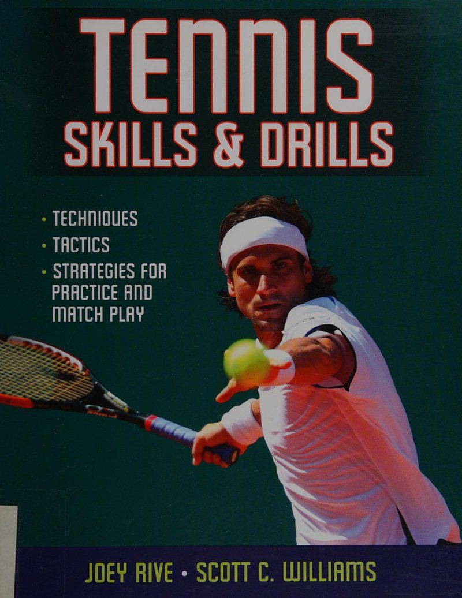
Bản dịch tiếng Việt trọn vẹn cuốn Tennis Skills & Drills của Joey Rive và Scott C. Williams — từ cách cầm vợt, tư thế đứng, kỹ thuật từng cú đánh đến hơn 110 bài tập thực chiến và đấu pháp đơn & đôi.
Bản dịch Việt ngữ Song ngữ: Việt · Anh Tác giả: Joey Rive & Scott C. Williams
Về bản dịch này. Đây là bản dịch Việt ngữ trọn vẹn cuốn Kỹ Năng & Bài Tập Quần Vợt (Tennis Skills & Drills).
Tải bản in: Kỹ Năng & Bài Tập Quần Vợt (Tennis Skills & Drills) (PDF).
Bản dịch Việt ngữ này chỉ dùng cho mục đích học tập cá nhân, phi thương mại. Bản quyền tác phẩm gốc thuộc về tác giả và nhà xuất bản.
Chương 1
Kỹ năng thuận tay
Forehand Eastern và cách cầm vợt
cú thuận tay Eastern (xem hình 1.10) là một trong những kiểu cầm vợt linh hoạt nhất trong quần vợt hiện đại. Đối với kiểu cầm vợt thuận tay kiểu Eastern, khớp ngón trỏ nằm ở góc xiên 3 của cán vợt dành cho người chơi thuận tay phải và góc xiên 7 dành cho người chơi thuận tay trái (tham khảo hình 1.6 và 1.8). Như minh họa trong hình 1.10, vợt bắt đầu đóng lại nếu người chơi giữ cánh tay ở phía trước cơ thể. Việc sử dụng cách cầm vợt này phụ thuộc vào cú xoay người của người chơi và mức độ xoáy lên mà người chơi muốn đặt vào bóng. cách cầm vợt Eastern không tự động tạo ra nhiều xoáy lên như cách cầm vợt bán Western. Người chơi cần phát triển cổ tay khỏe mạnh và cú giật cao hơn (để quét dưới bóng nhiều hơn) để đạt được độ xoáy lên tương tự với cách cầm vợt Eastern đã được tích hợp sẵn trong cách cầm vợt bán Western. Cách cầm vợt thuận tay Eastern phổ biến với những người chơi thích đánh thuận tay (phẳng) cũng như sử dụng xoáy lên. Nhược điểm chính của cách cầm vợt Eastern là khả năng phản đòn (phòng thủ) trước bóng nảy cao bị giảm. Tay cầm kiểu Eastern có bề mặt khép hơn một chút khi nhận bóng, vì vậy, để sử dụng cách cầm vợt này để chống lại những quả bóng có độ nảy cao, người chơi cần căn thời gian chính xác và cổ tay khỏe để có thể truyền xoáy lên trở lại đối thủ.
Forehand bán Western và cách cầm vợt
cú thuận tay Western (xem hình 1.11) là kỹ thuật thuận tay phổ biến nhất trong trò chơi ngày nay. Các tay vợt chuyên nghiệp hàng đầu như Rafael Nadal và Venus Williams cũng như các tay vợt trẻ sử dụng cách cầm vợt thuận tay Western. Đối với người thuận tay phải, đốt ngón trỏ được đặt ở góc xiên 4 và góc xiên 6 đối với người thuận tay trái (tham khảo hình 1.6 và 1.8). Mặt vợt nếu bạn cầm vợt ở phía trước sẽ khép hơn một chút so với kiểu thuận tay Eastern. cách cầm vợt bán Western được thiết kế dành cho những người chơi đang cố gắng tạo ra nhiều xoáy lên trong cú đánh của mình. Bởi vì mặt vợt hơi khép hơn so với kiểu thuận tay Eastern nên nó cho phép người chơi linh hoạt hơn trong việc phản đòn cú đánh có độ nảy cao của đối thủ. Nhược điểm chính của kiểu cầm này xảy ra khi phản đòn một cú đánh thấp hoặc cắt lát. Nếu một tay vợt không được nạp đạn đúng cách và đủ thấp để chấp nhận cú đánh sắp tới, thì đó sẽ là một khó khăn để có thể thực hiện được cú đánh theo cách thích hợp.
Forehand Western và cách cầm vợt
Kỹ thuật thuận tay của Western sử dụng cách cầm vợt cực đoan hơn so với các kỹ thuật thuận tay kiểu Lục địa, Eastern và bán Western như trong hình 1.12. Với cách cầm này, cả người chơi thuận tay phải và tay trái đều đặt khớp ngón trỏ lên góc xiên số 5 của cán vợt (tham khảo hình 1.6 ở trang 5 và 1.8 ở trang 6). Cách cầm vợt này đặt lòng bàn tay hoàn toàn bên dưới cán vợt. Ưu điểm chính của cách cầm vợt thuận tay Western là lượng xoáy lên mà nó có thể tạo ra. Kiểu cầm vợt này là sự lựa chọn dành cho người chơi muốn đánh bóng với nhiều xoáy lên hơn (đặc biệt là với những quả bóng cao hơn) so với hai kiểu cầm vợt hiện đại hơn còn lại. Những người chơi trên sân đất nện hoặc sân cứng, chậm có thể bị thu hút bởi kiểu cầm vợt thuận tay này. Thông thường người chơi sử dụng nó đã quen với những cú đánh có nhịp độ chậm hơn hoặc độ nảy cao hơn. Nếu người chơi chỉ sử dụng các bề mặt chậm hơn để chống lại các loại đối thủ giống nhau, thì việc hoàn thiện Western- được chuyển sang vị trí chơi, lòng bàn tay sẽ thuận tay có thể là một lợi thế. hoàn toàn dưới vợt. Thật không may, nhược điểm của kiểu cầm này có thể rất nhiều, đặc biệt đối với những người chơi chơi trên nhiều bề mặt khác nhau. Người chơi sử dụng cách cầm vợt này có thể dễ dàng nhận được những cú đánh và lát cắt thấp hơn từ đối thủ, điều này, nếu chơi trên bề mặt nhanh hơn, có thể đưa ra một thách thức. Trên bề mặt nhanh hơn, bóng không nảy cao bằng, vì vậy người chơi phải thực hiện các điều chỉnh cú xoay khác nhau. Sẽ khôn ngoan hơn nếu phát triển một cú đánh có thể thích ứng với mọi bề mặt. Ngoài ra, do có nhiều thay đổi về cách cầm có thể xảy ra tại một điểm, tính chất khắc nghiệt của cách cầm này khiến việc chuyển sang cách cầm khác trở nên khó khăn hơn. Ngoài ra, kỹ thuật cần thiết để đánh thuận tay Western có thể quá cầu kỳ. Cách cầm vợt khiến cổ tay ngả về phía sau nhiều hơn so với kiểu thuận tay bán Tây hoặc Đông. Điều này gây khó khăn cho việc duỗi cổ tay qua điểm tiếp xúc. Bởi vì tay cầm nằm quá xa dưới tay cầm vợt nên khuỷu tay uốn cong nhiều hơn và gần như thẳng hàng với phần dưới của nắp mông vợt. Điều này đôi khi gây ra các vấn đề về cú vung vợt cho người chơi, chẳng hạn như kéo đầu vợt và cản trở khả năng thực hiện cú vung vợt mượt mà của người chơi.
thuận tay và phong cách chơi
Quần vợt có năm phong cách chơi: chơi cơ bản tích cực, chơi toàn sân, chơi giao bóng và vô lê, chơi cơ bản tập hợp và chơi phòng thủ. Lối chơi cơ bản quyết liệt và lối chơi toàn sân được coi là tấn công và được xây dựng xung quanh cú thuận tay. Những người chơi giao bóng và vô lê xây dựng trò chơi của họ xoay quanh phong cách giao bóng và tấn công của họ, nhưng họ vẫn có thể sử dụng cú thuận tay làm vũ khí. Lối chơi cơ bản tập hợp và lối chơi phòng thủ cơ bản sử dụng thuận tay như một quả bóng tập hợp hoặc theo cách phòng thủ. Phong cách của một người chơi dựa trên những cú thuận tay mà người chơi yêu thích, kỹ thuật thực hiện những cú đánh đó, tính cách tổng thể trên sân và bản chất hung hãn hoặc phòng thủ của người chơi. Người chơi có thể thay đổi hoặc cải thiện phong cách chơi bằng cách thêm các cú đánh vào tiết mục và cải thiện kỹ thuật. Người chơi nên cố gắng thiết lập một cú đánh thuận tay cụ thể làm vũ khí, sau đó bổ sung và phát triển các cú đánh khác để bổ sung cho phong cách cụ thể. Một trong những mục tiêu chính của việc chọn cách cầm vợt là sử dụng cách cầm vợt phù hợp với phong cách chơi của người chơi. Bảng 1.1 cho thấy loại kỹ thuật thuận tay mà người chơi có thể sử dụng trong từng phong cách chơi dựa trên lựa chọn cách cầm vợt.
kỹ thuật: Phong cách chơi vạch cuối sân _ vạch cuối sân vô-lê
Đông X X X X X
cách cầm vợt thuận tay
ĐIỂM LIÊN LẠC VÀ KHU CÔNG CỤ
Người chơi nên biết chính xác điểm tiếp xúc và vùng tấn công cho những cú đánh mà họ muốn thực hiện. Vị trí sân, cách di chuyển và cách chuẩn bị vợt của họ phải phù hợp với điểm tiếp xúc đó. Có thể có ba điểm tiếp xúc: tấn công, tập hợp và phòng thủ. Chúng rơi trong mặt phẳng nằm ngang (xem hình 1.13). Mặc dù người chơi phải xử lý từng quả bóng riêng lẻ trong một cú đánh nền, nhưng phong cách chơi sẽ quyết định các kiểu đánh mà họ muốn.
để thực thi. Ví dụ: những người chơi cơ bản năng nổ chủ yếu muốn các điểm tiếp xúc của họ ở phía trước để duy trì phong cách chơi tấn công. Sức mạnh cú đánh của đối phương cũng quyết định điểm tiếp xúc của người chơi. Người chơi cần sử dụng lựa chọn cú đánh và các điểm tiếp xúc cùng nhau để duy trì một pha giao bóng diễn ra và giúp thiết lập quyền kiểm soát một điểm. Điểm tiếp xúc của đòn tấn công là ở phía trước cơ thể hoặc phía trước bàn chân trước. Điểm tiếp xúc tấn công thường là một cú đánh chéo sân hoặc bất kỳ cú đánh nào được thực hiện từ vị trí có sức mạnh trên sân. Vị trí này thường nằm bên trong vạch cuối sân. Ví dụ, một cú thuận tay ở đường biên dưới có thể được tiếp xúc muộn một chút, nhưng nó sẽ mang tính tấn công nếu vị trí sân nằm trong đường cuối sân. Tuy nhiên, người chơi có thể sở hữu một vũ khí bị bắn trúng điểm tiếp xúc sớm nhưng từ sâu hơn trong sân; miễn là tỷ lệ thành công vẫn cao thì nó đang tấn công. Điểm tiếp xúc tập trung là giữa hông và sẽ gây khó chịu nếu người chơi đánh với xoáy lên nặng. Điểm tiếp xúc sau cho phép tải trọng tối đa được rút ra từ chân khi thực hiện cú đánh. Điểm tiếp xúc tập hợp được sử dụng để vô hiệu hóa một người chơi và tăng cơ hội có được cơ hội tốt hơn sau này trong cuộc tập hợp. Các cú đánh tập trung thường được thực hiện chéo sân hoặc ở dạng cú đánh cao, nặng ở đường biên và chúng thường được thực hiện từ đường cuối sân hoặc ngay phía sau đường biên. Điểm tiếp xúc của phòng thủ nằm thẳng hàng hoặc phía sau hông sau và thường được thực hiện như một cú sút cao, mạnh để quay trở lại điểm hoặc một quả bóng được đánh có quỹ đạo cao hơn. Điểm tiếp xúc này gợi ý một cú đánh tốt của đối thủ hoặc có thể chuyển động kém của một cú đánh. Người chơi thường sử dụng điểm tiếp xúc phòng thủ khi họ ở phía sau đường cuối sân và chơi phòng thủ. Ba vùng tấn công—cấp dưới, cấp trung và cấp trên—nằm trong một mặt phẳng thẳng đứng (xem hình 1.14). Những người chơi giỏi có thể đánh trúng cú ghi điểm trực tiếp từ cả ba khu vực tấn công. Các khu vực tấn công ở mức độ trung bình và thấp hơn đặc biệt được ưu tiên để đánh xoáy lên. Hầu hết người chơi nên cố gắng đón bóng ở khu vực tấn công lý tưởng, tầm trung.
Vùng tấn công cấp trên ở ngang vai hoặc cao hơn. Thông thường, một quả bóng được đánh từ vùng tấn công này sẽ có độ xoáy lên cao hoặc quỹ đạo cao hơn. Trong trò chơi ngày nay, chiến lược tấn công phổ biến là lùi lại sau một cú đánh có độ nảy cao để nó đi sâu hơn vào vùng tấn công ưa thích để người chơi có thể đáp trả bằng một cú đánh hiệu quả. Những người chơi từ các thế hệ trước có thể đã chế giễu ý tưởng này: lẽ ra họ nên lấy quả bóng này sớm hơn để tránh phải nhường vị trí trên sân. Tuy nhiên, cuối cùng, mục tiêu của người chơi khi đánh vào khu vực tấn công cấp cao hơn là thực hiện một cú đánh chất lượng mang lại cơ hội tốt hơn cho lần đánh tiếp theo. Vùng tấn công ở mức độ trung bình nằm giữa vai và đầu gối (cũng như vùng tấn công trong bóng chày) và nó được sử dụng cho các cú đánh có quỹ đạo tập hợp giúp người chơi có chiều sâu trong cú đánh. Bởi vì hầu hết các cú đánh có thể được thực hiện tốt trong vùng tấn công này, người chơi cần có khả năng di chuyển và chơi ở vị trí trên sân cho phép họ đánh được nhiều cú đánh nhất có thể trong đó. Một tay vợt năng nổ, di chuyển tốt có thể làm được điều này. Đối thủ tung những cú đánh có độ nảy cao và xuyên thấu vào một đấu thủ ở gần đường cuối sân có thể khiến việc đánh bóng ở khu vực tấn công ở mức trung bình trở nên khó khăn vì chúng có thể buộc một đấu thủ lùi lại trên sân. Vùng tấn công ở mức độ thấp hơn nằm dưới đầu gối và chạm đất. Vùng tấn công này thường được sử dụng cho bóng thấp của đối phương hoặc bóng mà một tay vợt đến muộn vào vị trí. Nó vẫn có thể hung hãn nếu người chơi tấn công bóng bằng lực từ chân và lấy bóng sớm. Một tay vợt thường xuyên đánh bóng trong khu vực này thường phải chơi phòng thủ. Một người chơi cố gắng tấn công từ vị trí phòng thủ đang chơi quần vợt có tỷ lệ phần trăm thấp. Vùng tấn công phụ thuộc vào nơi người chơi cảm thấy thoải mái nhất khi thực hiện cú đánh, độ sâu cú đánh của đối thủ và khả năng nảy của cú đánh của đối thủ. Những người chơi không thích đánh những cú đánh tầm cao ngang vai phải học cách lấy bóng sớm hơn trong vùng tấn công ưa thích của họ. Phong cách chơi cũng ảnh hưởng đến khu vực tấn công. Những người chơi sử dụng phong cách tấn công cơ bản và toàn sân cần có khả năng tấn công từ cả ba vùng tấn công. Bởi vì bản chất của phong cách chuyển tiếp, những người chơi sử dụng phong cách giao bóng và vô lê phải có khả năng đánh mạnh mẽ những quả bóng thấp trong khu vực tấn công vì nhiều cú đánh của họ được thực hiện ở tốc độ cao. Những người chơi ở vạch cuối sân tập hợp sẽ thoải mái hơn khi đánh bóng ở khu vực tấn công ở mức độ trung bình và những người chơi phòng thủ sẽ thực hiện các cú đánh từ khu vực tấn công ở mức độ trung bình đến thấp hơn vì bản chất phòng thủ của họ hoặc khả năng di chuyển bóng kém.
KỸ THUẬT CÚT
Sau khi chọn cách cầm vợt phù hợp với phong cách chơi và mục tiêu của từng cá nhân, người chơi sẵn sàng xem xét kỹ hơn kỹ thuật cần thiết trong suốt kiểu đánh. Phần văn bản sau đây chia nhỏ các hành động khác nhau tạo nên các giai đoạn của cú đánh thuận tay: chuẩn bị và vung vợt sau, vung vợt về phía trước và tiếp xúc, và tiếp theo. Phần phân tích trình bày kỹ thuật và chuỗi sự kiện để thực hiện thành công cú thuận tay kiểu Đông. Hai trong số những cú thuận tay còn lại, kiểu bán Western và Western, yêu cầu một số sửa đổi nhỏ để phù hợp với cách cầm của chúng nhưng mặt khác cũng tuân theo cùng một khuôn mẫu. Các sửa đổi dành riêng cho cú đánh được ghi nhận. Kiểu thuận tay thứ tư, cú thuận tay cắt lát, thực sự có thể được thực hiện bằng hai cách cầm khác nhau (Continental và Eastern, mặc dù phổ biến nhất là kiểu Continental) và yêu cầu sửa đổi nhiều hơn một chút. Cách tiếp cận lát cắt phản công được đề cập trong Chơi thuận tay ở trang 27.
Chuẩn bị và đưa vợt ra sau
Ở tư thế sẵn sàng (giữa các lần đánh), cánh tay thoải mái sang một bên với khuỷu tay cong và đặt ở giữa thắt lưng và vai. Đầu vợt hướng lên và hơi hướng về phía sau với cổ tay căng. Cốt lõi của đầu phát thấp, thoải mái và sẵn sàng xoay để tải. Khi quả bóng đến gần, vai và thân bắt đầu quá trình xoay và tải thiết bị. Người chơi thực hiện một nửa vai quay về phía sau (xem hình 1.15) đối với một quả bóng tập trung hoặc một phần tư vòng quay (45 độ) đối với một quả bóng đánh sâu hoặc nếu người chơi đang vội (nghĩa là ở tư thế mở). Khi vai và thân xoay, cổ tay và mặt vợt cũng bắt đầu kéo về phía sau và giật theo kiểu từ cao xuống thấp. Người chơi phải thoải mái uốn cong khuỷu tay ra phía sau cơ thể để thực hiện một cú xoay hoàn toàn linh hoạt vòng dưới bóng để tạo ra chuyển động từ thấp đến cao mong muốn (xem hình 1.16). Đầu vợt hướng lên trên và mặt vợt hướng ra ngoài. Vợt phải đặt cùng hướng với chân sau đang chịu tải cho cú đánh. Khi vai và vợt lùi lại, cánh tay trước tiến về phía trước để giữ thăng bằng và theo dõi quả bóng đang tới. Việc kéo cánh tay về phía trước bao xa tùy thuộc vào sự thoải mái và thăng bằng của người chơi. Cánh tay có thể duỗi thẳng về phía trước hoặc xa hơn một chút về phía sau, nhưng không xa hơn điểm tiếp xúc tiềm năng. Đồng thời, trọng lượng của người chơi bắt đầu dễ dàng dịch chuyển về phía sau; chân sau cong lại. Người chơi nên giữ trọng lượng cơ thể về phía bàn chân sau và gập đầu gối cho đến khi vòng lặp bắt đầu. Người chơi nên thử nghiệm cách cầm vợt để tìm ra mức tải phù hợp cho chân. Họ nên tìm một vị trí cốt lõi thoải mái để cung cấp lực và xoáy lên mong muốn. Sẽ rất hữu ích khi nghĩ về tải trọng theo mức độ lực và độ xoáy lên mà người chơi đang cố gắng tạo ra. Quá nhiều tải ở các chân sau đó là việc không tải lên các chân sẽ tạo ra xoáy lên và không có nhiều lực. Tải nhẹ lên chân để đẩy lên trên và hướng ra ngoài vào vùng mục tiêu tạo ra cú đánh mạnh hơn.
¢ Tay cầm này thường hoạt động tốt hơn với tư thế mở. Thế đứng mở cho phép cánh tay vung tự do hơn trong cú đánh. ¢ Khi rút vợt về phía sau, đầu vợt phải nghiêng về phía sau nhiều hơn so với cách cầm vợt kiểu Đông. Do vị trí vợt thoải mái nên cổ tay ngả về phía sau nhiều hơn so với cách cầm vợt Eastern. * Người chơi cần xoay thân cây tốt và chịu lực ở chân (trọng lượng dồn về phía sau, bàn chân đặt cố định và sẵn sàng di chuyển về phía trước), nhưng vì cách cầm này khiến mặt vợt hướng xuống xa hơn nên cần thêm một chút tải trọng của chân để đưa xuống dưới và đánh bóng vuông góc.
Điều chỉnh cho forehand Western
* Vì cổ tay nằm xa trong cách cầm này nên khuỷu tay thẳng hàng với cổ tay. Khuỷu tay có thể cản trở một cú vung vợt được kéo dài hoàn toàn, do đó làm giảm lực. * Tay nắm kiểu Western làm giảm lực nên khả năng xoay thùng và tải trọng của chân cần rõ rệt hơn cả kiểu cầm bán Western. e Thế đứng cho cú đánh này cởi mở hơn so với thế đứng mở được sử dụng với cách cầm vợt kiểu bán Tây. Với kiểu cầm này, người chơi cần nhiều khoảng trống hơn để vung bóng đúng cách.
Đưa vợt tới và tiếp xúc bóng
Khi thân xoay về phía trước, cánh tay bắt đầu mở rộng theo kiểu từ thấp đến cao về phía quả bóng đang lao tới. Kích thước của vòng lặp mà người chơi có thể thực hiện khi vung vợt phụ thuộc vào quả bóng đang lao tới. Một quả bóng sâu đòi hỏi phải thu lại nhanh hơn, cú giật nhỏ hơn, và có lẽ ban đầu là sự chuẩn bị thấp hơn của cánh tay. Một quả bóng có nhịp độ chậm cho phép thu lại toàn bộ hoặc lâu hơn với cú giật lớn hơn và có thể ở vị trí đặt cao hơn. Khi bắn tốc độ chậm hơn, người chơi có cơ hội tính thời gian cho vòng lặp để đạt được khả năng tăng tốc tối đa.
Khi vợt đã được chuẩn bị sẵn sàng cho cú đánh sau, người chơi bắt đầu chuyển trọng lượng cơ thể từ chân sau sang chân trước, sử dụng chân sau để đẩy về phía trước và chuyển đều và trôi chảy đến chân trước và cuối cùng là ngón chân trước. Thực hiện các bài tập chịu lực ở chương 3 có thể giúp giữ trọng lượng ở phía sau và tạo điểm tựa vững chắc hơn để đẩy chân sau lên chân trước một cách hiệu quả hơn. Đường đi của cú xoay được quyết định bởi vị trí của khuỷu tay, vì vậy điều quan trọng là phải giữ cho khuỷu tay cong thoải mái khi bắt đầu vòng lặp (khuỷu tay thấp hơn 90 độ vài inch) và duỗi thẳng khi cú xoay tiến về phía tiếp xúc (xem hình 1.17). Nếu khuỷu tay được đặt đúng vị trí, đường đi của đầu vợt bắt đầu hướng về khuỷu tay và mặt vợt bắt đầu vuông góc với quả bóng đang tới. Cánh tay trước đã được căng thoải mái ở vị trí của giai đoạn chuẩn bị trong suốt động tác backswing, nhưng khi người chơi xoay cơ thể về phía trước, cánh tay trước bắt đầu kéo ra một cách tự nhiên với một chút căng ở cánh tay. Động tác kéo tay trước trơn tru, không đột ngột hoặc giật và phải ngang hoặc gần ngang eo của người chơi. Cách mà cánh tay vợt được kéo dài lên trên và về phía cú đánh phụ thuộc vào cách cầm, thế đứng và cú giật cụ thể của người chơi cũng như kiểu đánh mà người chơi nên cố gắng đánh. Một quả bóng phẳng có quỹ đạo thẳng hơn, và một quả bóng xoáy lên hoặc giật nặng hơn sẽ tập trung vào mắt có quỹ đạo cao hơn. Cú xoay phải tự nhiên và uyển chuyển. Một chút trước khi tiếp xúc, cổ tay và đầu vợt bắt đầu tăng tốc hướng lên trên và ra ngoài điểm tiếp xúc và hướng về phía bóng. Điểm tiếp xúc tấn công nên ở phía trước một chút để sử dụng nó làm hướng dẫn tôi về thời điểm vung chân trước ngang tầm với quả bóng đang tới, hơi lùi về phía sau (hoặc xa hơn về phía sau) đối với cú đánh tập trung đầu vợt, và thậm chí lùi xa hơn đối với cú đánh phòng thủ hoặc cú đánh ở vị trí thoáng hơn: mạnh mẽ. lập trường. Đầu của người chơi vẫn đứng yên và tập trung vào bóng khi tiếp xúc như hình 1.18.
Điều chỉnh cho forehand bán Western
* Cú vung về phía trước hướng lên trên một chút để đón cú đánh thẳng vào đầu vợt. * Bởi vì tay cầm quay đầu vợt xuống xa hơn nên cổ tay phải tạo ra nhiều gia tốc hơn để có thể chạm bóng. Điểm tiếp xúc hơi ở phía sau chân trước của người chơi, cho phép đầu vợt tiếp xúc lâu hơn một chút, điều này sẽ tạo ra xoáy lên cho bóng. * Chân từ vị trí chịu tải nhiều hơn và bật lên trên, giữ trọng lượng càng lâu càng tốt.
Điều chỉnh cho forehand Western
* Sử dụng một thế đứng mở và hai chân duỗi ra từ một vị trí chịu tải rõ ràng hơn so với cú thuận tay Western. ¢ Vì cách cầm vợt quá nặng nên đầu vợt phải xuất phát từ vị trí thấp hơn và quét xuống dưới để đánh bóng vuông góc. Cánh tay vươn ra xa hơn và quét từ đường đi thấp hơn đến đường đi cao hơn để tạo ra năng lượng. Khuỷu tay gần với cơ thể hơn do cổ tay thả lỏng nên đường đi của cú swing gần với cơ thể hơn so với cách cầm vợt Western và Eastern. Do có thêm xoáy lên được truyền vào quả bóng, nên sửa đổi này sử dụng điểm tiếp xúc và vùng tấn công ở mức trung bình và cao hơn. ¢ Khuỷu tay cuối cùng cũng duỗi ra, nhưng nó thẳng hàng với cổ tay khi vòng bắt đầu xoay về phía trước và kéo dài ra ngoài sau khi tiếp xúc.
Động tác kết thúc
Sau khi tiếp xúc, cánh tay và đầu vợt tiếp tục duỗi ra về phía mục tiêu đã định cho đến khi đầu vợt bắt đầu hướng về phía vai đối diện (xem hình 1.19). Chiều cao của quả bóng quyết định việc theo dõi. Đánh một quả bóng đang tới cao hơn có nghĩa là người chơi có khả năng thực hiện cú đánh tiếp theo với đầu vợt thấp hơn hoặc gần vai đối diện. Một quả bóng phẳng hơn sẽ đưa đầu vợt lên cao hơn.
ĐIỂM HUẤN LUYỆN
Rafael Nadal đã hoàn thiện một lối đánh tiếp theo mới đi thẳng lên và kết thúc ở cùng phía với điểm tiếp xúc phòng thủ. Cú đánh tiếp theo này được gọi là cú thuận tay ngược. Đây là một bước tiếp theo rất tiên tiến để tạo thêm độ xoáy cho quả bóng và nó đặc biệt phù hợp với cú xoay người của Nadal. Người mới bắt đầu nên sử dụng lượt theo dõi kết thúc ở vai đối diện và sau đó thử nghiệm với lượt theo dõi thấp hơn khi họ tiến lên.
Cổ tay thẳng hàng với khuỷu tay, cho phép mặt vợt hướng lên trên và hướng ra ngoài. Độ duỗi và chuyển động thích hợp của cánh tay sẽ quyết định độ sâu và lực của cú đánh. Việc xoay thân cây tiếp tục trong suốt cảnh quay. Nó là thứ điều khiển đầu vợt và nó kết thúc khi quá trình theo dõi hoàn tất. Người chơi nên giữ cú đánh tiếp theo trong tích tắc để hoàn thành cú xoay người.
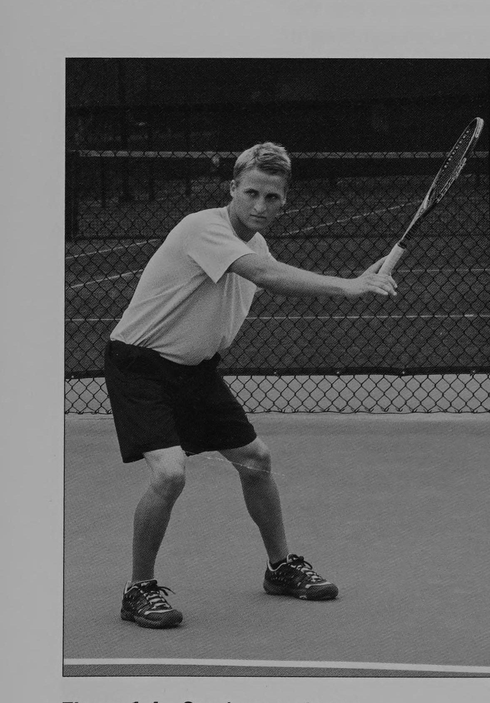
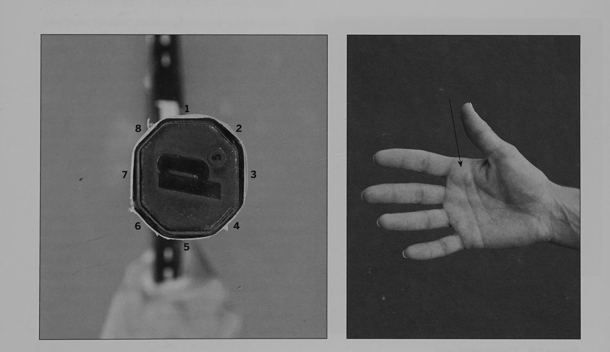
Điều chỉnh cho forehand bán Western
¢ Người chơi nên cố gắng giữ cổ tay nghiêng lâu hơn một chút khi thực hiện cú đánh tiếp theo rồi lật hoặc búng nó với trọng tâm là ngón tay cái lật qua. ¢ Việc chuyển trọng lượng không phải từ sau ra trước như tư thế đóng. Thế đứng mở được sử dụng với kiểu cầm vợt bán Western yêu cầu chuyển trọng lượng sang bàn chân trước được mở ra (hoặc hướng về phía đối thủ). Trọng lượng phải chuyển bằng cách hông quay về phía mục tiêu một cách cân bằng. Chuyển quá nhanh hoặc quá nhiều về phía chân dang rộng sẽ gây ra những sai sót trong cơ chế của cú đánh. ¢ Điểm dứt điểm ở phía trước và phải hướng về phía vai đối diện nhưng thấp hơn một chút so với kiểu cầm vợt kiểu Đông.
Điều chỉnh cho forehand Western
¢ Những điểm chính của cú thuận tay kiểu Tây sẽ được thảo luận trong phần bán Tây. ¢ Bởi vì cán vợt bị lật quá nhiều nên người chơi không thể không cảm thấy khuỷu tay dính vào cú vung vợt trên cán vợt này. Khuỷu tay nhô ra nhưng người chơi vẫn nên cố gắng dẫn đầu bằng đầu vợt. Điều này có thể gây ra một số vấn đề cho khuỷu tay, vì vậy người chơi nên theo dõi kỹ cú đánh của mình. * Động tác tiếp theo thường kết thúc ngang hoặc cao hơn một chút so với thắt lưng của bên đối diện cơ thể. Do chuẩn bị thấp hơn nên động tác tiếp theo được kéo dài cao hơn và cánh tay được kéo dài đến ngay trên mức thắt lưng hoặc cao hơn một chút.
‘ AN |
VÒNG QUAY VÀ VỊ TRÍ
Những người thuận tay có thể sử dụng xoáy lên từ không xoáy đến xoáy lên cực cao (cao và nặng), và họ có thể đặt bóng ngắn, sâu, góc cạnh và dọc theo đường biên. Việc sử dụng các kiểu xoay và vị trí khác nhau có thể phát triển cú thuận tay thành một vũ khí toàn diện. Như đã đề cập, các cách cầm khác nhau tương ứng với mức độ khó khác nhau trong việc thực hiện các kỹ thuật thuận tay khác nhau. Văn bản sau đây trình bày các kỹ thuật cần thiết để tối đa hóa phạm vi và hiệu quả của người chơi qua các vòng quay và vị trí đặt bóng khác nhau trên sân.
Bằng phẳng hoặc không quay
Để đánh một quả bóng phẳng, người chơi phải tìm vị trí cổ tay thích hợp vuông góc với vợt để tạo ra cú đánh đầu. Điều này khác nhau giữa các cú đánh của người chơi và cách họ sử dụng chân, nhưng mục tiêu là đường xoay tối ưu, người chơi đặt cánh tay và cổ tay ở vị trí phía sau quả bóng để duỗi thẳng cổ tay ra- nên tưởng tượng khi tiếp xúc. Việc sử dụng tốt lực đẩy từ chân sẽ mang lại chiều sâu cho cú đánh. đánh xuyên qua Do vị trí cầm vợt kiểu Western và Western, cổ tay sẽ phải chạm ba quả bóng thay vì nằm ngửa cho phù hợp để có được vị trí đầu vợt chính xác. Người chơi sẽ cảm thấy như vừa đánh một quả. nếu anh ta hoặc cô ta ném cổ tay về phía cú đánh. Sẽ có cảm giác như thể cổ tay đó đang xuyên qua quả bóng.
xoáy lên
Để đánh xoáy lên trong một cú đánh, người chơi đưa đầu vợt bên dưới quả bóng (hình dung phần trên của đầu vợt khi đầu vợt ở bên cạnh thân) và lướt lên bóng với gia tốc; đầu vợt mở rộng và cổ tay quay cùng một lúc. Người chơi sử dụng chân để đi dưới bóng và hỗ trợ đánh bóng. Cách mặt vợt đánh bóng quyết định lực và độ xoáy lên của cú đánh sẽ như thế nào. Việc khép nhẹ mặt vợt sẽ tạo ra thêm một số xoáy lên nhưng nó không phải là yếu tố chính góp phần tạo ra xoáy lên, mặc dù nó thường bị nhầm là một. Nó giúp người chơi hình dung quả bóng chạm vào đỉnh đầu vợt với ngón cái xoay nhanh trong khi đánh. Đường xoay của vợt góp phần tạo ra xoáy lên bằng cách đi lên để cọ vào mặt sau của quả bóng để tạo xoáy lên và hướng ra ngoài để tạo lực. Cú thuận tay hiện đại có mặt vợt hơi khép lại và vung ra ngoài và hướng lên trên.
Topspin cao và nặng
Cú đánh này tương tự như cú đánh xoáy lên nhưng nó tạo ra một quỹ đạo hoặc vòng cung cao hơn, kết hợp giữa sức mạnh và xoáy lên. Sự nhấn mạnh nhiều hơn là sức mạnh của chân đi lên trong cú đánh này. Bởi vì cú đánh này Người chơi muốn quét phía dưới bóng và đưa cánh tay và cổ tay ra ngoài và được đánh theo hướng hướng lên trên. Để tạo vòng cung, người chơi phải giữ thăng bằng lâu hơn một chút, đánh bóng hướng lên trên, lực hướng lên trên và đánh bóng bằng mặt vợt. người chơi nên tưởng tượng các thân và bàn chân Xoáy xuống, Xoáy ngang, và Xoáy dưới của mình. Người chơi có thể tăng thêm sự đa dạng cho trò chơi của mình bằng cách thêm xoáy xuống, xoáy ngang và xoáy xuống để thực hiện cú đánh của họ. Quỹ đạo của cú đánh xoáy xuống thường cao hơn vì nó có nghĩa là giày. hầu như không thể vượt qua lưới và bật trở lại lưới. Người chơi tạo ra xoáy xuống bằng cách sử dụng một cú cắt mạnh—một chuyển động từ cao xuống thấp rất mạnh của cánh tay. Người chơi đã cân bằng động lượng về phía trước để tiếp xúc và sau đó cánh tay cắt cú đánh với mặt vợt mở và giữ nguyên trạng thái mở trong quá trình tiếp xúc. Cơ thể được giữ thăng bằng để mang lại sự ổn định cho cú swing. Xoáy ngang được sử dụng khi người chơi cố gắng đưa bóng đi hoặc trượt khỏi đối thủ. Xoáy ngang nên được đánh với quỹ đạo thấp hơn. Người chơi tạo xoáy ngang bằng cách sử dụng chuyển động tương tự như trong cú đánh tiếp cận bị chặn (xem trang 134), nhưng thay vì chỉ sử dụng chuyển động từ trên xuống dưới một chút của cánh tay, người chơi sử dụng cổ tay để mở mặt vợt và đẩy đầu vợt ra ngoài theo kiểu từ trong ra ngoài. Người chơi giữ đà tiến về phía trước sau khi tiếp xúc. Một cú đánh xoáy xuống là một cú cắt bóng. Quả bóng này có mục đích cắt nhưng tùy vào độ mạnh của cú đánh, nó vẫn ở mức thấp và khiến đối thủ phải đánh bật lên. Đầu vợt hơi mở và phải ở ngay phía sau hoặc phía trên đường đi của bóng một chút. Người chơi di chuyển trong cú đánh một cách thăng bằng và tiếp xúc bóng với đầu vợt hướng xuống trong cú đánh và làm chậm hoặc dừng lại ngay sau khi tiếp xúc. Người chơi nên giữ đà tiến về phía trước sau khi tiếp xúc.
Crosscourt
Điểm tiếp xúc của cú đánh chéo bàn là ở phía trước bàn chân trước (điểm tiếp xúc của đòn tấn công). Người chơi nên vuông góc đầu vợt để tạo cảm giác đánh thẳng vào bóng. Có thể hữu ích khi tưởng tượng bạn tiếp xúc nhẹ với bên ngoài quả bóng. Cổ tay chụp ngang bên ngoài quả bóng. Người chơi nên tập trung vào ngón tay cái để tạo một vòng cung xuyên qua quả bóng với độ giãn thích hợp. Quả bóng này được đánh phẳng hoặc có xoáy lên và có nghĩa là tiếp đất ở hai khu vực chính của sân: sâu—2 đến 3 feet (0,6 đến 0,9 m) tính từ đường cuối sân và đường hẻm, hoặc ở giữa đường cuối sân và đường giao bóng ở một phần ba bên ngoài của sân. Hông cũng xoay về phía vùng mục tiêu, không quá nhanh nhưng nhịp nhàng và có gia tốc.
Xuống dòng
Người chơi đặt mục tiêu tiếp xúc với bóng muộn hơn tại điểm tiếp xúc tập hợp. Cơ thể tự định vị sao cho vai hơi vuông góc với lưới. Chúng có hình vuông nhỏ hơn một chút đối với một quả bóng được đánh từ một cú đánh chéo sân và có hình vuông hơn một chút đối với một quả bóng được đánh từ một cú sút dọc biên. Người chơi đưa cánh tay ra về phía mục tiêu với cơ thể chuyển động theo cùng một hướng. Mũi chân trước của người chơi phải hướng về phía mục tiêu ở đường dưới. Cú đánh này phải được thực hiện với cảm giác đi vòng ra bên ngoài quả bóng (hoặc điểm tiếp xúc).
sâu
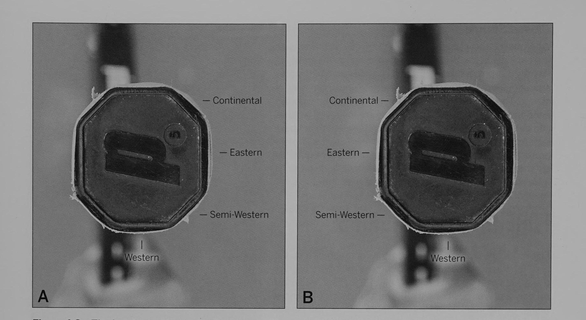
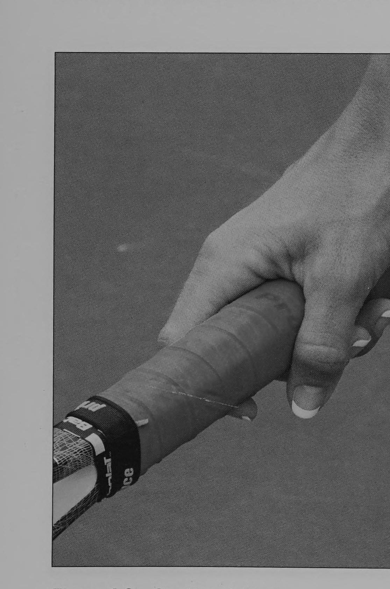
Để đánh vào một khu vực sâu trong sân — cách đường biên từ 2 đến 3 feet (0,6 đến 0,9 m), người chơi sẽ duỗi cánh tay ra mục tiêu đã định. Cú xoay phụ thuộc vào sự phối hợp của cánh tay, khả năng tăng tốc của cổ tay và theo dõi. Điểm nhấn là duỗi và giữ cánh tay duỗi ra ngoài cho đến khi kết thúc cú xoay. Thân vợt và trọng lượng khi vung vợt được sử dụng để giúp mở rộng cánh tay, đó là lý do tại sao chuyển động và tải trọng được chú trọng đến vậy.
ngắn
Khi một người chơi đánh bóng ngắn—trên hoặc gần đường giao bóng, người chơi nên tập trung vào phần mở rộng về phía mục tiêu nhưng có thể sử dụng động tác bắt bóng nhanh hơn bằng cổ tay để đánh xoáy lên để đưa cú đánh vào trước hẻm. Người chơi thực hiện động tác backswing ngắn hơn và sau đó duỗi ra và ngang cơ thể khi kết thúc. Cổ tay chộp lấy những quả bóng cao hơn ở vùng tấn công cấp trên và cấp trung bình.
ĐIỂM HUẤN LUYỆN
Nếu người chơi gặp khó khăn khi truy cập vào bất kỳ vị trí cụ thể nào sau đây, một số mẹo khắc phục sự cố có thể hữu ích. Đánh chéo sân. Một cú sút chéo sân đi rộng có thể có nghĩa là tay vợt di chuyển quá nhanh, xoay hông quá sớm hoặc bắt bóng quá xa về phía trước và ở bên ngoài. Một quả bóng được đánh về phía giữa biểu thị điểm tiếp xúc muộn, chạm vào bên trong quả bóng hoặc vị trí cơ thể không đúng. Đánh xuống dòng. Nếu bóng liên tục được đánh rộng, người chơi nên điều chỉnh chân hoặc điểm tiếp xúc. Người chơi có thể chuẩn bị muộn và liên lạc muộn. Khi một quả bóng được đánh ra ngoài hoặc vượt qua đường biên ngang, điều đó thường biểu thị rằng quả bóng đó không được đánh với lượng xoáy lên hoặc vòng cung thích hợp. Nó cũng có thể có nghĩa là cú đánh chưa hoàn thành. Đánh sâu. Bóng đánh quá sâu (vượt qua đường biên ngang) thường cho thấy lực đánh quá mạnh và độ xoáy không đủ, vị trí cơ thể không đúng hoặc tính toán sai cung và quỹ đạo. Các vấn đề khác có thể xảy ra bao gồm mặt vợt quá hở khi tiếp xúc hoặc dây vợt bị lỏng. Khi bóng liên tục tiếp đất quá sâu, trước tiên người chơi nên kiểm tra động tác bằng chân của mình và sau đó thêm nhiều xoáy lên vào cú đánh của mình. Đánh ngắn. Bóng chạm đất ngắn cho thấy một số vấn đề có thể xảy ra: Cơ thể không ở đúng vị trí để thực hiện cú đánh, tay vợt nhấc đầu lên khi tiếp xúc khiến cú đánh yếu hơn, tay vợt tính sai thời điểm bắn hoặc tay vợt tính toán sai cung hoặc quỹ đạo cần thiết cho cú đánh.
Chơi thuận tay
Tất cả người chơi đều muốn có thể đánh những cú thuận tay tuyệt vời trong mọi tình huống. Để đạt đến cấp độ đó, họ cần nhận thức được hiệu suất của chính mình và nỗ lực cải thiện nó. Điều quan trọng là người chơi phải hiểu được điểm mạnh và điểm yếu trong cú thuận tay của mình để giúp quyết định nên sử dụng loại cú đánh và chiến lược nào. Một cú thuận tay tốt là một vũ khí, một quả bóng tập trung, một cú đánh được đánh mạnh để giúp thiết lập các cú đánh khác và một công cụ phòng thủ. Như đã đề cập trước đó, phong cách chơi của người chơi kết hợp với những cú đánh yêu thích của người chơi sẽ quyết định những cú đánh tốt nhất nên thành thạo trước. Bảng 1.2 cho thấy những cú đánh nào có thể được thực hiện bằng từng kỹ thuật thuận tay. Việc luyện tập và hoàn thiện kỹ thuật với những cú đánh này giúp người chơi đánh những cú đánh sâu hơn, xuyên thấu hơn, kiểm soát điểm và đạt trình độ cao hơn. Bất kể cú đánh nào được người chơi yêu thích, điều quan trọng là phải biết cách thực hiện mọi cú đánh thuận tay vì sẽ có lúc trong mỗi trận đấu mà người chơi phải sử dụng mọi cú đánh trong cuốn sách này. Giai đoạn chơi trong trận đấu ảnh hưởng đến cách người chơi chơi cú thuận tay. Ở bất kỳ vị trí nào trên sân từ đường cuối sân đến lưới, một đấu thủ có thể cần phải ở chế độ tấn công, chuyển tiếp, tập hợp, phản công hoặc phòng thủ. Việc kết hợp các giai đoạn chơi này với sự kết hợp của các vị trí, vòng quay và chiến thuật mang lại cho người chơi nhiều lựa chọn để xây dựng và giành điểm. Người chơi có năm lựa chọn cú đánh để chơi thuận tay: cú đẩy bóng, cú tấn công, pha tập trung, cú phản công và cú đánh phòng thủ. Trong giai đoạn bỏ bài, người chơi đánh một người chiến thắng. Với một cú đánh tấn công, người chơi đang chuẩn bị để kết thúc điểm hoặc bỏ điểm. Một pha bóng qua lại là dành cho những cú đánh trung lập. Với một pha phản công, một tay vợt ở trong tình thế phòng thủ nhưng vẫn có thể tấn công. Cú đánh phòng thủ là để thoát khỏi rắc rối.
Những cú đánh thuận tay Loại kỹ thuật: x x: TEE Cú đánh chéo bàn thuận tay ae
Cú công bóng thuận tay từ trong ra ngoài |
*Mặc dù có thể thực hiện được một số cú đánh nền bằng cách cầm vợt Continental, nhưng làm như vậy sẽ không giúp người chơi phát triển trò chơi của họ.
Những cú thuận tay tấn công
Nói chung tấn công thì tốt hơn phòng thủ. Chơi tấn công có lợi vì nó cho phép có nhiều lựa chọn hơn, có thể giúp người chơi kiểm soát sân. Các cú thuận tay tấn công được thực hiện từ sân sau với một trong hai mục tiêu: kết thúc trận đấu với người chiến thắng hoặc khiến đối thủ phải phòng thủ hoặc ra khỏi vị trí với độ sâu và vị trí của cú đánh. Cách tấn công tốt nhất của người chơi là tấn công bằng cú thuận tay theo nhiều cách khác nhau. Văn bản sau đây mô tả tất cả các cách bắn khác nhau cần có trong kho vũ khí của mỗi người chơi.
Cú đánh chéo sân thuận tay
Maria Sharapova khiến mọi việc trở nên dễ dàng khi cô đẩy đối thủ vào sâu trong góc bằng cú thuận tay phẳng chéo sân của mình. Chiến lược của cô ấy là đánh bóng cứng chéo sân với ít xoáy lên, khiến đối thủ của cô ấy phạm lỗi hoặc đơn giản là lùi lại sân. Điều này tạo cơ hội cho Sharapova bước vào và kiểm soát sân đấu.
Cách thức Cú công bóng thuận tay được đánh trong tư thế mở với cách cầm vợt kiểu Đông cho bóng có khả năng phẳng hơn và cách cầm vợt kiểu bán kiểu Tây để tạo ra nhiều xoáy lên hơn. Thế đứng mở như thế nào tùy thuộc vào vị trí của người chơi. Cú đánh ngang sân yêu cầu điểm tiếp xúc tấn công và vùng tấn công ở mức trung bình. Cú đánh này có thể được đánh phẳng mà không có xoáy hoặc có độ xoáy và một số vòng cung đối với quả bóng (xoáy lên làm cho cú đánh lên xuống nhanh chóng và bay ra khỏi sân). Gia tốc của đầu vợt và cánh tay vẫn đi từ thấp lên cao nhưng hướng ra ngoài ngay trước khi tiếp xúc.
Vì mức độ khó của cú đánh này, người chơi chỉ nên thử nó khi đã chuẩn bị sẵn sàng và đứng sau bóng đúng cách. Ở phía sau quả bóng có nghĩa là chuyển động của cơ thể đến bóng và chuẩn bị vợt là hiệu quả và đúng đắn, do đó người chơi có đủ thăng bằng để thực hiện cú đánh. Việc thực hiện kém có thể dẫn đến lỗi và mất kiểm soát cú đánh. Cú ném chéo sân thường được thực hiện khi một đấu thủ đứng cách 2 feet (0,6 m) về bên phải hoặc bên trái của dấu thăng và con hẻm. Khi ở vị trí ngoài ngõ, người chơi nên đánh bóng cao hơn để có thời gian phục hồi. Cầu thủ nên nhắm vào góc xa phía đối diện (khu vực phía sau đường giao bóng và phía trước đường cuối sân), quỹ đạo qua lưới phải thấp hơn nhưng vẫn đưa vào phần sâu của sân.
Khi 4 người chơi thường đánh cú này khi đang ở thế mạnh. Cú công bóng thuận tay chéo sân có thể là một vũ khí đẩy đối thủ vào sâu trong sân và giúp thiết lập phong cách chơi của người chơi. Một trong những chiến lược phổ biến nhất của cú công bóng chéo sân mạnh là tìm kiếm một câu trả lời yếu và tấn công dọc biên để kết thúc điểm, giúp chuyển sang lưới hoặc chơi có chiến lược. Vị trí của người chơi ảnh hưởng đến thời điểm bắn. Thông thường, người chơi được bố trí gần đường cuối sân hoặc bên trong đường cuối sân và ở bất kỳ vị trí nào trong phạm vi 4 feet (1,3 m) tính từ cả hai đường biên. Vị trí này có thể khác nhau đối với mỗi người chơi; nó phụ thuộc vào mức độ hiệu quả của động lực của người chơi.
Cú sút chéo sân cao, nặng và cận biên
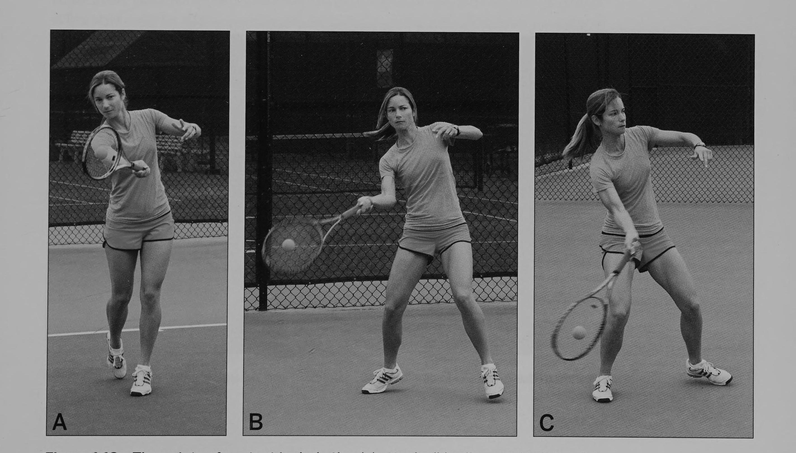
Caroline Wozniacki có một cú đánh mạnh và cao hiệu quả mà cô ấy sử dụng một cách chiến lược. Wozni-acki nhanh và di chuyển tốt quanh sân, nhưng cú thuận tay xoáy lên cao và nặng giúp cô có thời gian để thiết lập lại và đẩy đối thủ lùi lại. Cú đánh này không nhằm mục đích tạo sức mạnh mà nhằm mục đích sử dụng hiệu quả sự đa dạng.
Cách người chơi có thể thực hiện cú đánh này bằng cách cầm vợt Eastern, bán Western hoặc Western. Do cú sút tạo ra độ cao nên tay vợt phải ở dưới bóng nhiều hơn nên khả năng tải bóng của tay vợt được chú trọng. Được thực hiện hiệu quả, cú đánh này mang lại cho đối thủ một quả bóng có độ xoáy cao hơn với độ xoáy cao hơn, tạo cảm giác nặng nề và khó kiểm soát. Quỹ đạo của cú đánh yêu cầu hông phải nổ lên và hướng ra ngoài và chân phải hướng lên dưới bóng. Một người chơi chịu tải quá nhiều vào cú đánh cần phải nỗ lực nhiều hơn để thực hiện cú xoay một cách linh hoạt. Vùng tấn công lý tưởng cho cú đánh này là vùng tấn công cấp thấp hơn và cấp trung. Điểm tiếp xúc tốt nhất là điểm tiếp xúc tập hợp và phòng thủ.
Vị trí Cú đánh này sẽ được thực hiện khi người chơi ở vị trí kỹ thuật tốt để thực hiện cú đánh. Cú đánh này thường được thực hiện sâu hơn trong sân hoặc phía sau đường cuối sân và trên quả bóng có độ nảy cao hơn. Bởi vì bóng cao, nặng là cú đánh có tỷ lệ đánh cao và có độ loft cao hơn nên đây là cú đánh lý tưởng để thực hiện từ vị trí sâu hơn hoặc rộng hơn trên sân. Cú đánh này nhằm mục đích đưa bóng đi sâu qua sân hoặc dọc biên (phía sau đường giao bóng và trước đường cuối sân) và nảy cao hơn trong sân. Đôi khi một người chơi có topspin nặng có thể đánh được một cú đánh cao, nặng và hạ cánh ngắn hơn vì độ nảy quá lớn. Một cú sút cao, nặng được thực hiện kém và chạm đất ngắn có thể gây rắc rối cho người chơi nếu đối phương giỏi trong việc lấy bóng khi đang trên cao hoặc có một cú sút từ tuyến dưới hiệu quả.
Khi Người chơi thường đánh cú này với mục đích tấn công, nhưng họ cũng có thể sử dụng nó cho mục đích phòng thủ. Hiện tại Rafael Nadal là người giỏi nhất ở cú đánh này và anh thường xuyên sử dụng nó khi dẫn trước để tạo ra những phản ứng yếu hơn từ đối thủ. Bởi vì cú đánh này được đánh với quỹ đạo cao hơn cú đánh lái nên độ nảy cao hơn. Điều này buộc đối phương phải lựa chọn đánh bóng khi đứng gần đường cuối sân hay di chuyển trở lại sân để đánh bóng ở khu vực tấn công ở mức trung bình. Ở phương án đầu tiên, bóng sẽ rơi vào khu vực tấn công tầm cao hơn của đối phương và hầu hết người chơi đều không thích đánh kiểu trả lời này. Ở phương án thứ hai, người chơi có nhiều thời gian hơn để chuẩn bị cú tấn công tiếp theo vì đối phương đã lùi lại để gặp bóng giật ở vùng tấn công tầm trung hoặc cấp thấp hơn. Cả hai lựa chọn đều có khả năng gây ra phản ứng yếu, tạo cơ hội cho kẻ tấn công tiếp tục tấn công trong pha bóng qua lại.
Cú đánh thuận tay dọc đường
Venus Williams được biết đến với cú đánh thuận tay thuận tay. Cô ấy có thể thay đổi hướng bóng một cách hiệu quả để có lợi cho mình. Khi cô ấy thực hiện một pha đánh bóng chéo sân, cô ấy liên tục tìm kiếm một cú thuận tay dọc biên mà cô ấy có thể xé toạc và sau đó chuyển về phía trước.
Cách Người chơi sử dụng cách cầm vợt chạm đất thông thường cho cú đánh này và nó nằm trong vùng tấn công ở mức trung bình. Điểm tiếp xúc có chiều rộng từ một đến hai quả bóng phía sau ổ phẳng, nhưng nó vẫn được coi là điểm tiếp xúc tấn công. Người chơi lao theo hướng của cú đánh chéo sân hoặc đường chéo sắp tới, yêu cầu phải đợi gặp bóng muộn hơn một chút tại điểm tiếp xúc tấn công để đưa bóng lên vạch. Chuyển động của người chơi cũng hơi khác so với đánh cú đánh phẳng vì ở cú đánh này, ngón chân trước hơi xoay theo hướng cú đánh xuống.
Ở đâu Là adrive, cú đánh này phải được đánh giữa đường giao bóng và vạch cuối sân. Một cú công bóng từ phía dưới đánh xa vạch cuối sân có thể gây ra lỗi nếu được đánh bằng xoáy xuống hoặc xoáy xuống. Vị trí kết thúc của cú đánh phụ thuộc vào những gì người chơi đang cố gắng đạt được trong pha bóng qua lại. Một cú đánh vào đường biên có nghĩa là kết thúc pha bóng qua lại. Đối với một đấu thủ thay đổi hướng của cú đánh sắp tới, cần đánh một quả bóng xa hơn (2 đến 4 feet, hoặc 0,6 đến 1,3 m) so với đường biên để thiết lập một mô hình thuận lợi trong một pha đánh bóng (chẳng hạn như một cú đánh dọc biên mà đối thủ trả lời bằng một cú đánh chéo về phía bên mạnh hơn của đấu thủ) hoặc vì điểm yếu của đối thủ là ở bên đó.
Khi_ Cú đánh này hoạt động như một vũ khí đánh vào phần sân rộng để tận dụng cú đánh chéo sân yếu hoặc chuyển động kém của đối thủ hoặc như một phần của chiến lược điều khiển trận đấu bằng cách giữ cho đối thủ chạy. Hầu hết các cú đánh tầm gần đều bị trúng đích nỗ lực thay đổi hoặc kết thúc quan điểm. Cú đánh này phát triển khi đấu thủ đã hỗ trợ đối thủ trên sân, đối thủ đã thực hiện một cú đánh chéo sân yếu hơn và đấu thủ muốn kết thúc điểm bằng một cú đánh mạnh mẽ từ đường biên để mở sân hoặc thay đổi mô hình của pha đánh bóng. Mức độ khó của cú đánh này lớn hơn so với nhiều cú đánh khác vì cú sút dọc biên đi qua phần cao hơn của lưới và vì khoảng cách của cú sút phải ngắn hơn cú sút chéo sân. Ngoài ra, việc thay đổi hướng của quả bóng đang tới là một việc khó khăn. Người chơi nên đánh cú đánh này khi nhận bóng ngắn hoặc chậm hoặc khi người chơi ở quá xa sân và đây là lựa chọn cuối cùng.
Cú đánh thuận tay góc ngắn
Serena Williams có một lối chơi tấn công sử dụng góc ngắn thuận tay chéo bàn để mở sân để cô ấy có thể khiến đối thủ ở thế phòng thủ và tấn công có lợi cho mình.
Cách thực hiện cú đánh này với xoáy lên, cắt lát, xoáy ngang hoặc không xoáy. Cú đánh xoáy lên phổ biến và hung hãn hơn; các cú đánh cắt lát, phẳng và xoáy ngang mang lại sự tinh tế hơn. Điểm tiếp xúc của ảnh chụp ở góc khác nhau. Nếu người chơi đang tạo góc, điểm tiếp xúc hơi ở phía trước cú công bóng phẳng chéo sân (tấn công). Nếu người chơi đang phản ứng với một góc, điểm tiếp xúc sẽ muộn hơn so với điểm tiếp xúc của cú đánh dọc vì người chơi có nhiều chuyển động hơn cho cú đánh này và đang cố gắng tạo ra một góc lớn hơn (tập hợp để phòng thủ). Độ cao của điểm tiếp xúc nằm trong vùng tấn công ở mức trung bình đến thấp hơn. Trong suốt cú đánh này, người chơi phải giữ thăng bằng tốt và chuẩn bị đầu vợt sớm. Người chơi cũng phải có khả năng tăng tốc đầu vợt lớn hơn trong trường hợp cần một cú đánh xoáy lên trên hoặc gần đường biên của con hẻm.
Trường hợp Người chơi thực hiện cú đánh này khi đứng trên một nửa sân, bên trong hoặc gần đường cuối sân. Người chơi nhằm mục đích đánh theo đường chéo chéo sân, về phía hoặc gần đường giao bóng của đối phương ở phía đối diện của sân.
Khi_ Mục đích chính của việc đánh một cú đánh góc cạnh là kéo đối thủ ra khỏi sân. Cú đánh theo góc sâu hơn (tiếp đất qua đường giao bóng chéo và Lao ra khỏi sân vào ngõ) và cú đánh theo góc ngắn hơn (tiếp đất chéo sân gần đường giao bóng hoặc trước đường giao bóng) phải được đưa vào như một phần của mọi phong cách chơi. Cú đánh này là một cách tốt để giữ đối thủ ở thế phòng thủ. Sau khi người chơi đánh một cú đánh chéo sân cứng hoặc một quả bóng cao và nặng và phản ứng yếu hoặc đánh theo một góc, người chơi đã thiết lập hoàn hảo cho cú đánh thuận tay chéo góc. Hầu hết các cuộc giao tranh quần vợt đều được diễn ra theo chiều dọc của sân (sử dụng bóng sâu hoặc ngắn). Vì vậy, một tay vợt có thể sử dụng một cú đánh góc cạnh có thể kiểm tra sự đa dạng của các cú đánh của đối thủ, khả năng đánh trả góc và chuyển động của bóng. Người chơi có thể thực hiện cú đánh này mạnh mẽ hơn hoặc ít hơn tùy thuộc vào kết quả mong muốn. Phiên bản hung hãn hơn được tạo ra từ cú đánh theo góc của đối phương, cho phép người chơi tạo ra một góc ngoài cú đáp trả, hoặc từ một quả bóng yếu, cho phép người chơi đánh bóng sớm hơn và tạo ra góc mong muốn. Dù thế nào đi nữa, cú đánh sẽ có nhiều xoáy lên. Mục tiêu làm cho cú đánh di chuyển qua lưới và sau đó thả nhanh theo hướng xoáy về phía đối phương, hướng về phía con hẻm đánh đôi. Cách tiếp cận ít tích cực hơn sử dụng nhiều vị trí và sự khéo léo hơn khi phản hồi một góc hoặc tạo một góc. Cú đánh này nhìn chung có hiệu quả, nhưng đặc biệt hiệu quả—và thậm chí là cần thiết— đối với một đối thủ không thích di chuyển sang bên hoặc mệt mỏi sau một trận đấu dài.
Cú thuận tay từ trong ra ngoài
Andy Roddick có một cú sút từ trong ra ngoài tuyệt vời, kéo đối thủ ra khỏi sân để anh ta có thể điều khiển trận đấu. Góc mà anh ấy tạo ra, cộng với sức mạnh mà trò chơi của anh ấy tập trung vào, khiến đối thủ của anh ấy rơi vào thế phòng thủ.
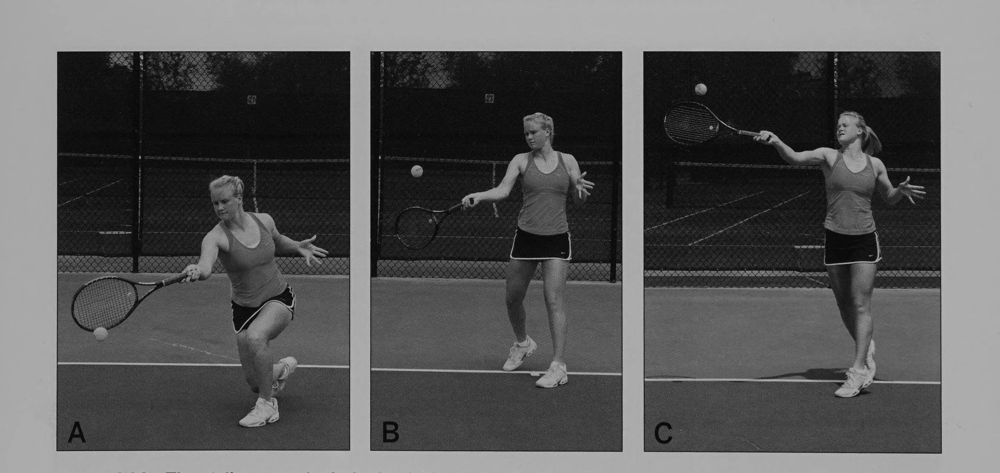
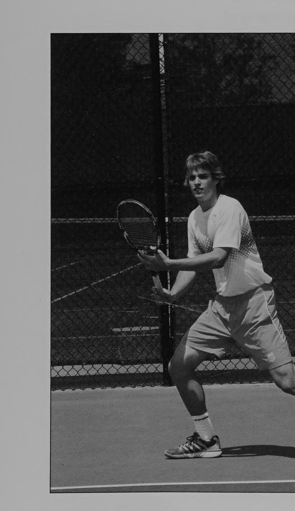
Cách di chuyển và thực hiện cú đánh này đòi hỏi phải luyện tập vì người chơi chạy vòng quanh trái tay và tạo khoảng trống giữa cơ thể và bóng. Người chơi có thể thực hiện cú đánh này theo nhiều cách khác nhau, bao gồm đánh một quả bóng cao và nặng từ trong ra ngoài, đánh một quả bóng phẳng hơn và đánh một góc sắc nét hơn. Tất cả các phương án này đều hiệu quả nếu một bên của quả bóng là người chơi có thể thực hiện chúng một cách hiệu quả. Phiên bản góc sắc nét hơn là khó nhất, nhưng chưa đủ tốt. Nó đặc biệt hiệu quả trên sân đất nện vì chúng có nhiều thời gian hơn để chạy xung quanh và người chơi phải thực hiện cú đánh tiếp theo. hãy nghĩ về nó và Kỹ thuật thích hợp cho cú thuận tay từ trong ra ngoài bắt đầu bằng việc người chơi thực hiện cú đánh thuận tay đó. hình bán nguyệt xung quanh quả bóng tới ở phía bên trái tay. Chuyển động này có thể được thực hiện bằng nhiều cách khác nhau: * Phương pháp lùi lại. Chân sau bước ra sau chân trước, xoay hông và vai của người chơi khi họ bắt đầu tạo thành hình bán nguyệt và tiến về phía trước. ¢ Xáo trộn bên. Tương tự như phương pháp lùi lại, ở đây người chơi thực hiện một số lần di chuyển sang bên để che chắn nhiều mặt đất hơn trước khi bước về phía sau hoặc phía trước cơ thể. Andre Agassi đã sử dụng kỹ thuật này. ¢ Các bước lùi. Người chơi chỉ cần xoay người và lùi lại bằng cả hai chân để vào vị trí thực hiện cú đánh. Roger Federer được biết đến với việc sử dụng phong trào này. Thế đứng là mở hoặc bán mở và bởi vì cơ thể đang chạy xung quanh tay trái, cú đánh sẽ được đánh vào vùng tấn công ở mức giữa và tiếp xúc tại điểm tiếp xúc tập hợp. Cánh tay và cổ tay mở rộng và cổ tay tiếp xúc với bóng theo kiểu từ trong ra ngoài. Cơ thể giữ thăng bằng và chuyển sang góc hoặc góc từ trong ra ngoài.
Trường hợp cú thuận tay từ trong ra ngoài được đánh chéo bàn theo đường chéo. Cú đánh này phải được đánh từ khoảng cách khoảng 1 foot (0,3 m) từ giữa sân đến phía trái tay đến khoảng giữa giữa tâm và con hẻm. Người chơi nhắm đến cú thuận tay từ trong ra ngoài ngắn hơn để tiếp đất gần đường giao bóng và sâu hơn trong sân cách đường cuối sân và ngõ khoảng 2 đến 3 feet (0,6 đến 0,9 m).
Khi_ Mục đích chính của cú thuận tay từ trong ra ngoài là để có thể sử dụng cú thuận tay về phía trái tay của đối phương. Cú đánh này là một trong những cú đánh thuận tay hiệu quả nhất được sử dụng ngày nay vì nó có thể là một phần của chiến lược tổng thể từ trong ra ngoài hoặc chiến lược 3/4 sân (chủ yếu sử dụng thuận tay để kiểm soát sân hoặc tạo góc cho cú đánh tiếp theo). Cú đánh này mang lại cho trò chơi của người chơi sự đa dạng hơn là chỉ đánh chéo sân hoặc dọc biên. Nhiều huấn luyện viên dạy cú thuận tay từ trong ra ngoài như một phần của chiến lược, vì vậy khả năng đánh cú đánh của người chơi trở nên bắt buộc. Động lực của chiến lược này bắt nguồn từ việc tối đa hóa các cơ hội thuận tay của người chơi.
Bên trong-Jn thuận tay
Roger Federer sử dụng cú đánh từ trong này đến mức hoàn hảo. Chuyển động của anh ấy mượt mà đến mức anh ấy khiến cho những cảnh quay đôi khi khó khăn này trở nên dễ dàng. Cú đánh này, đánh trúng một cú đánh từ trong ra ngoài, giúp người chơi tiếp tục chạy và cũng được coi là một cú đánh chiến thắng.
Cách thức Cú đánh này cần phải di chuyển nhiều và khó đánh, nhưng với kỹ thuật và thời điểm thích hợp, đây là một trong những cú thuận tay tấn công tốt nhất. Cú đánh này được đánh ở khu vực trung bình và được tiếp xúc tại điểm tiếp xúc của cuộc tấn công hoặc tập hợp. Nó đòi hỏi người chơi phải vào vị trí tốt hơn để thay đổi hướng bóng.
Trường hợp Aplayer thường thực hiện cú đánh này khi cú đánh thứ hai đáp trả cú trả lời chéo sân yếu hơn của đối thủ hoặc thực hiện cú giao bóng thứ hai dễ dàng. Tương tự như vị trí thực hiện cú đánh dọc biên, người chơi thực hiện cú đánh vào trong gần đường biên để giành chiến thắng và xa đường biên hơn để giữ cho đối thủ di chuyển hoặc thay đổi kiểu đánh. Độ sâu của cú đánh này quyết định sự thành công của nó. Một quả bóng được đánh phía sau đường giao bóng sẽ khiến đối phương có ít thời gian hơn để phản ứng và khiến người chơi phải đánh một cú thuận tay khác.
Khi cú thuận tay vào trong được đặt đúng vị trí sẽ giúp đối thủ chạy và ở thế phòng thủ. Cú đánh này cũng là một cú đánh mạnh mẽ và nhằm tạo ra sơ hở để tiến vào lưới hoặc đánh cú ghi điểm trực tiếp.
ĐIỂM HUẤN LUYỆN
Hai vấn đề thường gặp với cú đánh thuận tay từ trong vào: e Thời gian tiếp xúc. Nếu tay vợt tiếp xúc bóng quá xa phía trước, tay vợt sẽ mất thăng bằng và gây ra lỗi. Tiếp xúc muộn cũng làm mất đi mục đích của cú đánh: cướp đi thời gian của đối thủ. e Định vị kém. Khi người chơi không ở vị trí thuận lợi để đánh bóng hoặc cố gắng đánh bóng quá nhanh, vấn đề sẽ nảy sinh. Bóng phải được đánh chính xác vì tay vợt đang làm việc với diện tích sân nhỏ hơn và cú đánh được đánh qua phần cao hơn của lưới.
Thuận tay từ cao đến thấp
Venus Williams sử dụng cú thuận tay từ cao đến thấp đặc biệt tốt. Phong cách chơi tấn công của cô ấy đòi hỏi cô ấy phải đánh tốt cú đánh này. Đối với cô ấy, đó là kiểu đánh mà cô ấy có thể di chuyển đến gần một quả bóng và bắt nó ở mức độ tiếp xúc cao mà vẫn đánh bóng xuyên qua.
Cách động tác bằng chân được kết hợp trong cú đánh này đòi hỏi phải di chuyển về phía trước. Bóng đang ở độ cao tối đa hoặc đang hướng về hướng đó, vì vậy vị trí của người chơi là rất quan trọng. Độ chuẩn bị của vợt nên cao hơn một chút để phù hợp với vùng tấn công ở cấp độ cao hơn. Người chơi tải về phía sau, tập trung vào việc giữ thăng bằng cho ngực trong cú đánh. Người chơi nên tập trung vào việc đánh thẳng qua bóng và sử dụng phần mở rộng bắt đầu từ cao và kết thúc thấp hơn mục tiêu do độ cao của bóng. Điểm tiếp xúc thay đổi tùy thuộc vào quả bóng được đối phương đánh, nhưng nhìn chung nó nằm ở khu vực tấn công cấp cao hơn và phía trước chân trước (tấn công). Ở cú đánh này, người chơi đánh bóng thẳng vì trọng lực và độ xoáy sẽ tự động đưa bóng xuống. Động tác tiếp theo đi về phía ngay dưới mức vai ở phía đối diện của cơ thể. Đây là một cú đánh đúng lúc vì người chơi đang kết hợp cú vung với độ nảy của bóng và duỗi cánh tay ra ngoài và hơi hướng xuống dưới.
Trường hợp Cú đánh này thường được thực hiện ở bên trong đường cuối sân, nhưng nó cũng có thể có nghĩa là một cú đánh kết liễu nằm bên trong đường giao bóng. Cú đánh được đánh tới các phần ba bên ngoài của sân (putaway), sâu trong sân (2 đến 3 feet, hoặc 0,6 đến 0,9 m, tính từ đường cuối sân và ngõ), hoặc xuống sâu hơn ở giữa sân (2 feet, hoặc 0,6 m, tính từ đường cuối sân) để chuyển sang lưới. Thông thường, người chơi thực hiện cú đánh này vì để tránh lùi về phía sau và nhường chỗ trên sân. Thay vào đó, người chơi tập trung vào việc tránh xa đối thủ và đánh một quả bóng tấn công.
Khi thực hiện cú đánh này, người chơi phải có khả năng đánh bóng cao một cách mạnh mẽ và có thể đánh được đường xoay từ cao xuống thấp. Cú đánh này rất quan trọng để đánh khi người chơi cảm thấy có thể tận dụng được vị trí của đối thủ. Đây là một đường bóng tốt để tấn công khi đối phương đã đánh chéo sân và người chơi muốn bước lên và đánh nó dọc biên. Nó có thể hoạt động như một cú đánh hướng xuống mà người chơi muốn đánh phía sau Đối thủ hoặc đánh chéo sân sang phần sân mở. Đó là một cách tuyệt vời để tiếp tục tấn công và chuyển sang lưới.
thuận tay ngược
Cú đánh này đã được phát triển qua nhiều năm để trả đũa những cú đánh xoáy lên sâu. Rafael Nadal đã cách mạng hóa việc sử dụng thuận tay ngược. Mặc dù anh ấy không sử dụng nó ở mọi cú thuận tay, nhưng anh ấy vẫn sử dụng nó để đánh một quả bóng tấn công từ vị trí phòng thủ trong sân hoặc khi anh ấy muốn tăng cường độ tấn công của mình. Anh ta có thể đang đáp trả một quả bóng sâu do đối phương đánh và muốn giữ vững lập trường của mình hoặc anh ta đang ở sâu trong sân và muốn thiết lập thế tấn công.
Cách người chơi thực hiện cú đánh này bằng cách cầm vợt chạm đất thông thường. Người chơi đánh với động tác vung vợt vội vàng và tập trung tăng tốc đầu vợt thật nhanh qua vùng đánh mà không cần di chuyển trở lại sân. Bản thân chuyển động này là một lực đẩy hướng lên trên rất lớn, mang lại cú xoay về phía sau đầu thay vì ra phía trước. Cú đánh thuận tay ngược trên đường cuối sân thường được tiếp xúc ở điểm tiếp xúc phòng thủ và khi nổi lên khỏi mặt đất ở vùng tấn công cấp thấp hơn và trung bình. Khi đánh từ sâu phía sau vạch cuối sân, cú thuận tay ngược là phiên bản turbo của cú thuận tay cao và nặng với thêm độ xoáy và vòng cung.
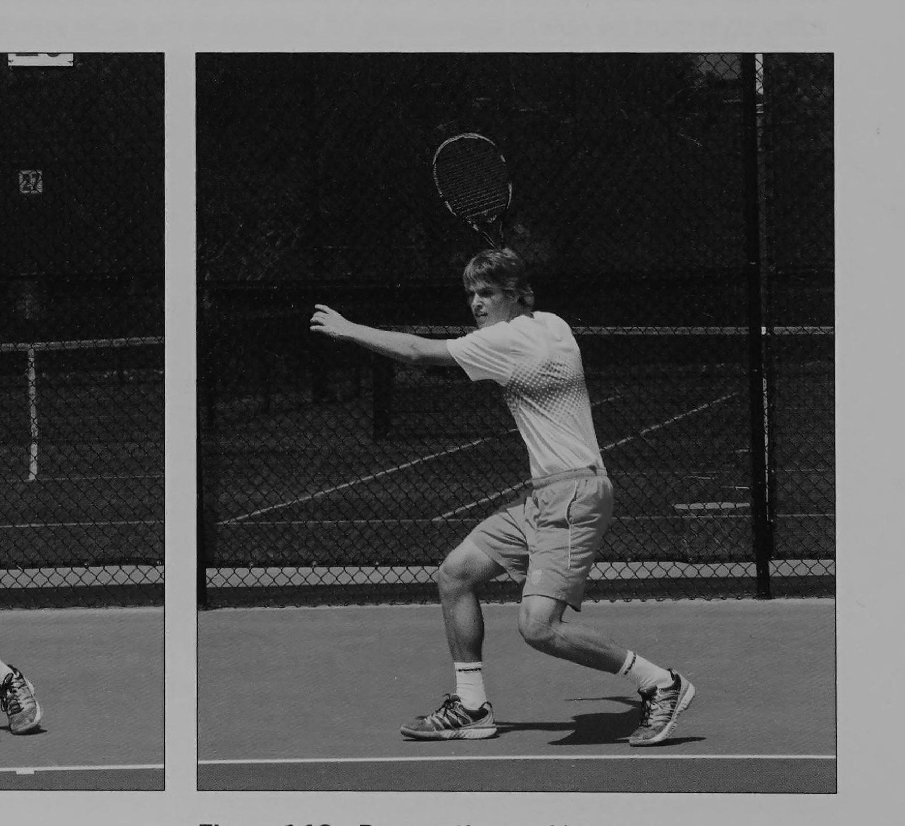
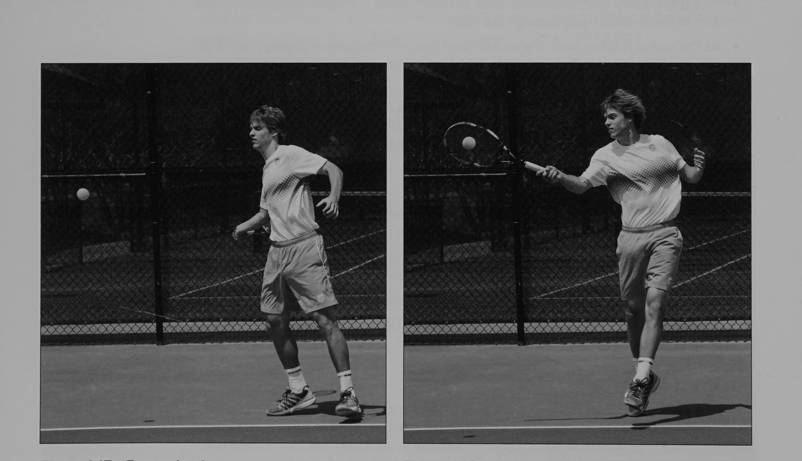
Trường hợp Cú đánh này có thể được đánh vào bất kỳ vị trí nào, mặc dù sẽ thuận lợi nếu đánh nó vào một vị trí không cho phép đối thủ giữ người chơi ở thế phòng thủ. Việc người chơi ở gần đường cuối sân và xử lý cú sút sâu của Đối thủ có thể gây ra sự thất vọng, khiến đối thủ phải đánh nhiều hơn và mắc lỗi.
Khi cú đánh này chủ yếu được sử dụng khi đối phương đánh bóng sâu và người chơi muốn phản đòn. Thông thường, người chơi ở gần đường cuối sân và không muốn từ bỏ vị trí trên sân. Mục tiêu của người chơi là giữ vị trí sân đó và sử dụng khả năng tăng tốc lớn (topspin) để đưa bóng sâu về phần sân sau.
Những cú thuận tay phòng thủ
Một cú đánh phòng thủ thường có nghĩa là một tay vợt đang chạy, đang phòng thủ hoặc không thể đánh với tốc độ hoặc độ sâu, trong trường hợp đó một tay vợt đang phản ứng với các cú đánh của đối thủ. Đây là một kỹ năng cần thiết vì những cú đánh phòng thủ cuối cùng có thể dẫn đến nhiều cú đánh tấn công hơn. Cú đánh thuận tay với góc rộng cho phép người chơi có thời gian quay trở lại pha bóng và giữ điểm. Cú đánh thuận tay quả cầu mặt trăng được sử dụng như một chiến thuật để có thêm thời gian phục hồi hoặc làm khó chịu đối thủ thiếu kiên nhẫn.
Cú thuận tay kéo dài ra rộng
Cú đánh này, còn được gọi là cú đánh bóng quần, là cú đánh đặc trưng của Kim Clijsters. Thật là chán nản đối với một tay vợt nghĩ rằng mình đã đánh được một cú đánh tuyệt vời nhưng lại bị Kim chạy tới và lấy lại. Clijsters rất giỏi trong việc biến cú đánh thành một cú tấn công vì cú đánh mà cô ấy thường đánh là cú đánh tốt và đúng vị trí, do đó giúp cô ấy có nhiều thời gian hơn để hồi phục để có thể quay lại điểm và lấy lại vị trí trên sân.
Cách cầm tốt nhất để sử dụng cho cú đánh này là kiểu cầm thuận tay kiểu lục địa hoặc kiểu kiểu Đông - tùy theo kiểu cầm nào mang lại cho người chơi đường cắt bóng tốt nhất. Cú sút này trông giống như nó vậy, một cú sút tuyệt vọng. Sức mạnh của chân ngoài có tầm quan trọng lớn vì nó mang lại cho người chơi sự cân bằng để thực hiện cú đánh tốt. Người chơi quất cổ tay và đầu vợt về vị trí phía sau quả bóng đang tới. Điểm liên lạc trong tình huống này là ở phía trước hoặc phía sau, tùy thuộc vào mức độ tuyệt vọng. Người chơi cố gắng đánh bóng từ vị trí cao xuống thấp và ở bên ngoài quả bóng, tạo đủ lực tiếp xúc để đưa bóng quay trở lại sân. Điểm tiếp xúc xa nhất có thể khi cánh tay duỗi ra và cổ tay sẽ cho phép chạm xuống và ngang qua quả bóng. Người chơi cố gắng giữ vị trí miễn là nó cần để đạt được sự cân bằng trước khi phục hồi. Vùng tấn công cho cú đánh này phụ thuộc vào vị trí của người chơi. Khi người chơi đang chạy, vùng tấn công phía dưới thường được sử dụng.
Vị trí đánh quả bóng này phụ thuộc vào chuyển động của người chơi và mức độ lệch vị trí của người chơi trong một pha đánh bóng. Thông thường, người chơi ở trong ngõ để đánh cú này. Vị trí của cú đánh có thể ở bất kỳ đâu trong sân. Sẽ thật tuyệt nếu người chơi có nhiều quyền kiểm soát đến mức họ thực sự có thể thực hiện cú đánh này vào một vị trí cụ thể, nhưng thành thật mà nói, bất kỳ vị trí nào trong sân đều khiến cú đánh đó thành công.
Khi cú đánh này được thực hiện khi một đấu thủ đang chạy và ra khỏi vị trí trên sân. Khi một tay vợt ở trạng thái căng thẳng hoàn toàn, đôi khi việc đánh một cú thuận tay sẽ dễ dàng hơn so với một cú thuận tay thông thường. Cú đánh thuận tay này là một công cụ phòng thủ tuyệt vời vì nó có thể gây bất ngờ cho đối thủ nghĩ rằng họ đã đánh một cú đánh thắng lợi, chỉ để rồi nó bị đỡ bóng một cách bất thường.
Cú thuận tay của Moonball
Cú thuận tay moonball theo định nghĩa là một quả bóng được đánh lên cao với ít hoặc không có độ xoáy. Các chuyên gia ngày nay thỉnh thoảng sử dụng nó, nhưng chỉ khi họ tuyệt vọng và muốn có thời gian để phục hồi và phá vỡ nhịp điệu của đối thủ.
Cách Người chơi nên sử dụng cách cầm vợt thuận tay thông thường của họ để tạo ra xoáy lên tiềm năng trong cú đánh này và cách cầm vợt Continental để có một cú đánh phẳng hơn. Cú đánh này được đánh lên cao tới bất kỳ vị trí nào có bóng phẳng hoặc bóng xoáy lên đi với quỹ đạo rất cao; chiều cao tùy thuộc vào người chơi. Về cơ bản, người chơi sẽ nhấc bóng lên và đi theo hướng lên trên. Vị trí của điểm tiếp xúc trong cú đánh này là điểm tiếp xúc của điểm phòng thủ. Nó thực sự giống một cú đẩy với độ loft cao hơn. Góc của mặt vợt mở. Cú đánh được thực hiện ở khu vực tấn công cấp trung hoặc cấp cao nếu người chơi ở ngoài vị trí và không thể chuẩn bị thích hợp hoặc ở khu vực tấn công cấp thấp hơn nếu người chơi tuyệt vọng và nhận bóng muộn. Cú đánh này nhằm mục đích đẩy lên và càng sâu càng tốt. Cú đánh này đặc biệt hiệu quả đối với người mới bắt đầu vì đối thủ chưa có được những kỹ năng cần thiết để chiến đấu với nó. Sự khác biệt giữa cú lốp bóng mặt trăng và cú lốp bóng là ở chỗ người chơi ở vị trí chiến lược tốt hơn khi lốp bóng. Cú lốp bóng được thực hiện nhằm mục đích phòng thủ hoặc tấn công để định vị và khiến đối thủ mất vị trí. Quả cầu mặt trăng nguy hiểm hơn và nên được đánh khi người chơi gần như không thể chạm tới quả bóng.
Nơi Người chơi có thể thực hiện cú đánh này từ bất kỳ đâu trong sân. Hướng về các con hẻm là tốt nhất cho mục đích phòng thủ, và ở giữa sân là tốt nhất cho mục đích chiến lược. Bóng phải tiếp đất càng gần đường biên càng tốt để phát huy hết tác dụng và ngăn đối phương thực hiện cú vô lê dễ dàng hoặc qua đầu.
Khi Cú đánh này được sử dụng khi người chơi đang cố gắng quay trở lại sân sau cú đánh tấn công của đối thủ. Người chơi cũng có thể sử dụng nó nếu đối thủ không biết cách xử lý cú đánh này và trở nên mất kiên nhẫn với tốc độ. Sử dụng quả cầu mặt trăng có thể khiến đối thủ khó chịu; nó thường được gọi là đẩy hoặc lấy lại bóng mà không cần nhiều tốc độ. Khi một tay vợt tiến bộ và tính cạnh tranh cũng được cải thiện, cú đánh này trở nên ít thành công hơn như một chiến lược.
Phương pháp cắt lát phản công
Mặc dù cách tiếp cận lát cắt phản công là một cú đánh tấn công, nhưng bất kỳ người chơi quần vợt giỏi nào cũng phải có khả năng thích ứng với các tình huống khác nhau. Một tay vợt có thể cần phải phản công một quả bóng khi anh ta hoặc cô ta gặp rắc rối vì bóng quá thấp hoặc có thể do gió đã thổi bóng vào người chơi. Cú đánh này hiếm khi được sử dụng làm lựa chọn đầu tiên vì xoáy lên chiếm ưu thế trong trò chơi ngày nay, nhưng khi một tay vợt buộc phải đưa ra câu trả lời, cú đánh này có thể hoạt động rất hiệu quả.
Cách thực hiện cú đánh này bằng cách cầm vợt thuận tay kiểu lục địa hoặc kiểu Eastern. Cú đánh này phải được thực hiện khi đang đi lên và cú đánh về phía sau phải ngắn để tối đa hóa chuyển động về phía trước của người chơi. Thời gian người chơi phải di chuyển về phía trước sẽ quyết định khoảng cách để lấy vợt. Người chơi sử dụng đòn lùi sâu hơn để có nhiều thời gian hơn và đòn lùi ngắn hơn với ít thời gian hơn. Bất cứ khi nào có thể, tốt nhất là bạn nên đưa bóng lên cao, tạo cho đối phương ít thời gian nhất có thể. Để đánh bằng một cú cắt, đầu vợt phải ngang tầm với quả bóng đang tới hoặc cao hơn một chút. Mặt vợt mở và di chuyển theo chuyển động từ cao xuống thấp một chút để có độ xoáy dưới nhiều hơn và xuyên thẳng để có đường cắt phẳng hơn. Thế đứng của người chơi khép kín hơn hoặc hướng về phía đóng khi người chơi di chuyển trong cú đánh. Điểm tiếp xúc có thể ở bất kỳ đâu, từ điểm tiếp xúc tấn công đến điểm tiếp xúc phòng thủ. Một quả bóng được đánh lên khi tiếp cận sẽ được đánh vào vùng tấn công từ thấp đến trung bình. Đầu vợt tiếp tục tiếp xúc và kết thúc xuống và ngang qua bóng, do đó tạo ra xoáy xuống. Đối với một đường cắt có nhiều độ xoáy trên bóng, đầu vợt di chuyển xuống và ngang nhiều hơn: đối với một đường cắt xuyên hơn nhưng phẳng hơn, đầu vợt di chuyển nhẹ xuống dưới và hướng ra ngoài. Bàn chân điều chỉnh xung quanh quả bóng để đạt được sự cân bằng và khoảng cách đánh thích hợp. Bàn chân tiếp tục di chuyển khi tiếp xúc và hướng tới mục tiêu.
Trong đó Cách tiếp cận lát cắt phản công thường được thực hiện gần đường giao bóng và được đánh xuống đường biên tới phần sân mở, sâu trong sân hoặc ngắn hơn trong sân để gây bất ngờ cho đối thủ hoặc chéo bàn để đánh nhầm chân đối phương. Nên sử dụng phiên bản tiếp cận ngắn hơn khi đối thủ không muốn tiến về phía trước.
Khi Cách tiếp cận này được sử dụng khi người chơi không có đủ thời gian để vung cú đánh hoặc di chuyển quá nhanh qua quả bóng để thực hiện một cú vung xoáy lên. Kiểu tiếp cận này được sử dụng để chống lại những đối thủ tốc độ khi thời gian là điều cốt yếu. Nó cũng có thể được sử dụng một cách chiến lược khi đối thủ tỏ ra thiếu kỹ năng đánh bóng thấp hoặc bóng trên đường chạy (ở sân sau hoặc sân ngắn hơn trên sân). Một cú thuận tay chuyển tiếp ở vị trí thấp trên lưới, điều này có thể giúp người chơi có được vị trí trên lưới tốt hơn.
cho dù đó là cú đánh bằng một tay đánh chéo sân, cú đánh bằng hai tay xé toạc đường biên, cú sút phẳng hoặc cao và nặng chạm vạch cuối sân, hoặc một cú cắt thấp gần như không qua lưới, thì cú đánh trái tay là một cú đánh đẹp. Người chơi có thể sử dụng trái tay để đánh cú ghi điểm trực tiếp, phòng thủ, thêm sự đa dạng cho các cú đánh và nâng trò chơi lên một tầm cao mới. Đối với một số người, cú trái tay là một vũ khí và một cú đánh để xây dựng trò chơi; đối với những người khác, nó bổ sung cho cú thuận tay hoặc mang lại sự cân bằng. Người chơi có thể sử dụng hai loại trái tay: trái tay một tay và trái tay hai tay. Cho đến những năm 1970, trái tay hầu như chỉ được chơi bằng một tay. Cú trái tay bằng một tay cổ điển là một trong những động tác đẹp nhất, tinh tế và mạnh mẽ nhất từ trước đến nay. Những huyền thoại của trò chơi như Ken Rosewall, Stefan Edberg và Justine Henin đều được chú ý nhờ những cú trái tay đẹp mắt và đã xây dựng trò chơi của họ xoay quanh vũ khí trái tay. Với sự thành công của Jimmy Connors, Tracy Austin, Chris Evert và Bjorn Borg (đều là chuyên gia đánh trái tay bằng hai tay), số lượng người chơi thuận tay bằng hai tay đã bùng nổ. Các huấn luyện viên thích sức mạnh được tăng thêm và khả năng kiểm soát tốt hơn khi sử dụng hai tay thay vì một tay. Giờ đây, người chơi được dạy cả hai phong cách và sự lựa chọn là của họ: cảm giác nhỏ gọn và sức mạnh tích hợp của trái tay bằng hai tay hoặc phạm vi tiếp cận và tính linh hoạt bổ sung của trái tay một tay. Mỗi trái tay có một phong cách riêng biệt, nhưng cả hai đều có thể có cùng một mục tiêu: tấn công, thiết lập mặt tốt hơn của người chơi, để phòng thủ. Tùy thuộc vào việc người chơi phát triển nó tốt như thế nào, cú trái tay có thể là điểm mạnh hoặc điểm yếu lớn. Thông thường người chơi học thuận tay trước và bỏ qua việc học đúng cách các sắc thái của trái tay. Người chơi nên tập trung vào việc phát triển cú đánh trái tay một cách nghiêm túc như cú thuận tay - chơi theo phong cách cá nhân, thực hiện các cú đánh theo phong cách đó và đánh chúng một cách chính xác về mặt kỹ thuật. Người chơi nên cố gắng phát triển vũ khí trái tay, nhưng nếu điều đó không thể thực hiện được thì ít nhất nên sử dụng trái tay để bổ sung cho cú thuận tay và trò chơi tổng thể. Chương này thảo luận về các kiểu đánh trái tay, các cú đánh có thể thực hiện được cũng như cách cầm vợt và kỹ thuật để đánh chúng đúng cách. Chương 3 trình bày các bài tập để phát huy tốt nhất cú đánh trái tay của bất kỳ người chơi nào.
Cả trái tay một tay và hai tay đều phổ biến và hiệu quả, tuy nhiên cả hai đều có những ưu điểm riêng. Như đã thảo luận ở chương 1, đặc điểm tấn công và phòng thủ trong các cú đánh của người chơi quyết định phong cách của người chơi và những cú đánh mà người chơi thành thạo. Cách tiếp cận tương tự này có thể được áp dụng cho cú đánh trái tay. Ưu điểm của trái tay bằng một tay bao gồm: e tôi dễ dàng đánh hơn với sức mạnh lớn hơn. Bạn sẽ dễ dàng tiếp cận hơn để có được nhiều cú đánh hơn, bao gồm cả những cú đánh ngoài tầm với và bóng thấp. ¢ \Việc đánh các góc tốt được tạo ra bởi xoáy lên sẽ dễ dàng hơn. ¢ Chuyển sang lát cắt bằng một tay sẽ dễ dàng hơn. (Cách đánh trái tay bằng một tay được ưu tiên hơn so với phiên bản đánh bằng hai tay.) Ưu điểm của trái tay bằng hai tay bao gồm: e tôitis dễ sử dụng tay cầm hơn vì người chơi sử dụng hai tay. ¢ Dễ dàng hơn vì hai cánh tay có thể dễ dàng quản lý sức mạnh cần thiết hơn để đánh một cú. Việc đánh một quả bóng có độ nảy cao hơn và đưa nó lên cao sẽ dễ dàng hơn. e Việc ngụy trang dễ dàng hơn.
Chương 2
Kỹ năng trái tay
Người chơi quyết định sử dụng trái tay nào dựa trên thể hình, tốc độ chân, cảm giác tự nhiên bằng hai tay thay vì một tay (hoặc ngược lại) và phong cách chơi tiềm năng. Nếu Phong cách của người chơi thoải mái hơn trên lưới thì sử dụng tay một tay có thể là một lựa chọn tốt. Nếu người chơi thích đánh từ đường cuối sân, trái tay bằng hai tay có thể phù hợp. * Xây dựng. Cách xây dựng của người chơi có thể tạo ra sự khác biệt lớn về chất lượng của cú đánh trái tay. Nếu người chơi có vai rộng hoặc khung hình lớn, trái tay bằng một tay có thể là lựa chọn tốt hơn vì tính linh hoạt cần thiết của trái tay bằng hai tay. Chuyển động của những người chơi có khung hình rộng hơn có thể không trôi chảy như những người chơi nhỏ hơn. Tuy nhiên, điều quan trọng nhất cần cân nhắc là khả năng di chuyển (hoặc tốc độ chân) của người chơi. * Tốc độ chân. Đặc điểm này rất cần thiết cho cú đánh trái tay bằng hai tay vì người chơi có tầm tiếp cận hạn chế với cú đánh này. Nếu chuyển động hoặc tốc độ xung quanh sân là một điểm yếu, trái tay một tay có thể là lựa chọn tốt nhất vì trái tay một tay mang lại tầm xa hơn. * Cảm giác tự nhiên. Hầu hết các huấn luyện viên bắt đầu dạy trái tay bằng hai tay. Nếu cú đánh đó không tiến triển và không có cảm giác tự nhiên, thử đánh trái tay bằng một tay có thể là một lựa chọn. Người chơi nên cố gắng thực hiện một số cú đánh trái tay bằng một tay để biết liệu nó có thể phát triển thành một cú đánh đáng tin cậy hay không. Nếu nó không hiệu quả, trường hợp xấu nhất là việc đánh trái tay bằng một tay có thể giúp ích cho trái tay bằng hai tay bằng cách phát triển một lát cắt hoặc trở nên mạnh hơn với cánh tay thuận ở trái tay bằng hai tay. Ban đầu khi người chơi thử trái tay bằng một tay, sức mạnh của cánh tay có thể là một thách thức. Người chơi có thể cảm thấy cánh tay không đủ khỏe nhưng có thể thích sự tự do khi đánh. Thông qua sự lặp lại, cánh tay cuối cùng trở nên mạnh mẽ hơn. * Phong cách trò chơi tiềm năng. Người chơi nên nhìn vào cú trái tay với con mắt hướng tới tiềm năng. Nếu tất cả các dấu hiệu chỉ ra rằng phong cách chơi sẽ là những cú đánh mạnh mẽ (chẳng hạn như giao bóng và vô lê hoặc đánh nhiều lát), người chơi có thể muốn xem xét cú đánh trái tay bằng một tay.
Điều quan trọng là phải nhận ra sự khác biệt giữa trái tay một tay và trái tay hai tay và cách mỗi loại phù hợp với phong cách chơi của người chơi. Bảng 2.1 trang 32 tóm tắt thông tin này. * Chơi cơ bản tích cực. Do những cú đánh nền nặng theo phong cách này, hầu hết người chơi sử dụng phong cách chơi này sẽ sử dụng trái tay bằng hai tay vì sự kết hợp giữa khả năng kiểm soát, sức mạnh và độ chắc chắn của trái tay bằng hai tay. Mặc dù trái tay bằng hai tay phù hợp nhất với phong cách này, nhưng một người chơi cơ bản năng nổ vẫn cần phát triển một cú đánh trái tay bằng một tay và, trong một số trường hợp, một người chơi có cú trái tay một tay mạnh mẽ có thể chơi với một phong cách cơ bản hung hãn. ¢ Thi đấu toàn sân. Người chơi toàn sân có thể thành thạo trái tay hai tay hoặc trái tay một tay. Trong khi một số chuyên gia trên thế giới có cú cắt trái tay bằng hai tay, thì hầu hết đều đánh cú cắt trái tay bằng một tay vì lý do phạm vi chuyển động được tăng lên và sự thoải mái. ¢ Phong cách giao bóng và đánh vô-lê. Phong cách này chắc chắn dẫn người chơi đến cú trái tay bằng một tay. Sự nhanh chóng cần thiết để chơi theo phong cách này sẽ khó phát triển đối với một người chơi trái tay bằng hai tay. Sẽ rất khó để thử và kết hợp thêm một
Tích cực Giao bóng và Tập hợp Phòng thủ - Seeine đánh vô-lê cơ bản Hiếm nhưng có thể
Hầu hết người chơi đều cố gắng hết sức để đánh những cú thuận tay lớn. Thông thường điều đó có nghĩa là chuyển động của họ lớn và do đó cú trái tay có thể bị lộ. Việc tăng thêm sức mạnh và sự đa dạng cho cú trái tay giúp người chơi biến nó thành một vũ khí hiệu quả. Động tác bằng chân và vị trí thích hợp là điều cần thiết để thực hiện điều này.
phong trào
Chuyển động thích hợp cho phép người chơi vào vị trí để nhận được nhiều bóng hơn và giữ thăng bằng khi đánh chúng. Cú đánh trái tay về cơ bản yêu cầu chuyển động giống như cú đánh thuận tay. Trọng tâm chính là vào chân ngoài và bốn động tác cơ bản: bước ra bằng chân ngoài để bóng chạm đường cuối sân, bước lùi bằng chân sau để bóng sâu hơn, bước tiến bằng chân ngoài hoặc chân sau để bóng ngắn, và bước ra sau theo đường chéo với chân sau để tránh đường đánh hoặc nếu người chơi có cú đánh trái tay từ trong ra ngoài (cú đánh này không phổ biến).
Không nên chạy vòng quanh cú thuận tay để đánh cú trái tay. Nó làm tăng chuyển động trên sân của người chơi và khiến việc phục hồi trở nên khó khăn hơn. Quần vợt ngày nay bị chi phối bởi cú thuận tay đến mức hầu hết các tay vợt đều giỏi hơn cú thuận tay của họ. Do đó, kiểu chuyển động này có thể không gây ra những vấn đề đáng lo ngại. Sẽ tốt hơn nếu người chơi nhận bóng đánh vào giữa bằng trái tay nếu làm như vậy là tốt hơn, nhưng vượt quá xa đường đó có nghĩa là người chơi có thể đánh nhiều cú ghi điểm trực tiếp bằng trái tay hoặc có cú trái tay từ trong ra ngoài cực tốt. Sau đây là các động tác chính dành riêng cho hai kiểu trái tay: * Trái tay bằng hai tay. Một vấn đề phổ biến đối với chuyển động trái tay bằng hai tay là đôi khi chân sau có thể không được sử dụng đúng mức. Nếu một tay vợt có thói quen bước chân ngoài ra phía sau bóng đúng cách thì tay vợt đó sẽ luôn giữ thăng bằng khi đánh bóng. ¢ Trái tay một tay. Chuyển động của cú đánh trái tay bằng một tay cũng tương tự như cú đánh trái tay bằng hai tay cho đến khi chân ngoài trượt ra ngoài để giữ thăng bằng. Đối với cú đánh trái tay bằng một tay, khi chân sau đã được thiết lập để chịu lực và giữ thăng bằng, người chơi bước về phía quả bóng đang tới bằng chân trước và vung. Bước tiến về phía bóng mang lại nhiều lực và khả năng kiểm soát. Người chơi bằng một tay cũng có thể đánh trái tay ở tư thế mở nhằm nỗ lực cải thiện khả năng di chuyển và phục hồi, nhưng nó sẽ không tạo ra nhiều lực như bước về phía trước. Đối với một lát sử dụng trái tay bằng một tay, chuyển động cũng tương tự. Tuy nhiên, chân trước có thể vượt qua hoặc xa hơn chân sau nhiều hơn một chút, đặc biệt nếu người chơi đang chạy. Tầm với của trái tay bằng hai tay bị hạn chế vì cánh tay kia đang được sử dụng, nhưng nếu người chơi sử dụng cú đánh bằng một tay một cách hiệu quả, nó có thể tạo ra một phong cách chơi rất hiệu quả kết hợp sự đa dạng và linh hoạt vào trò chơi.
thế đứng
Đối với trái tay, người chơi chủ yếu sử dụng thế đứng đóng (xem hình 2.1) và thế đứng mở (xem hình 2.2 trang 34). Việc sử dụng chân sau và vị trí của chân trước quyết định thế đứng. Để có tư thế khép kín, chân trước bắt chéo qua một đường tưởng tượng được vẽ từ chân sau đến chân trước. Đối với tư thế mở, được sử dụng trong các cú đánh rộng hơn, cơ thể hướng về phía lưới nhiều hơn và chân sau vươn sang một bên, cách xa chân trước. Thế đứng khép kín chủ yếu được sử dụng khi người chơi có thời gian để thực hiện cú đánh. Khi tay vợt bị căng cơ hoặc có ít thời gian hơn thì tư thế cởi mở là cần thiết.
TAY CẦM
Giống như cú thuận tay, kỹ thuật trái tay phụ thuộc vào cách cầm vợt của người chơi. Có hai tùy chọn cầm vợt cho cả trái tay bằng hai tay và một tay. Các tùy chọn cho lát cắt tay sau cũng được đề cập ở đây. Tất cả người chơi, bất kể họ sử dụng loại trái tay chính nào, đều có thể sử dụng cú đánh trái tay lát cắt.
Backhand hai tay
Đối với trái tay bằng hai tay, người chơi nên chú ý cẩn thận đến việc sử dụng cánh tay khi thực hiện cú đánh. Tay cầm chơi chiếm ưu thế và tay kia không chiếm ưu thế. Vì vậy, đối với người chơi thuận tay phải, cánh tay trái không thuận và đối với người chơi thuận tay trái, tay phải không thuận. Ở trái tay bằng hai tay, người chơi cần phối hợp việc sử dụng cả hai tay bằng cách phát triển việc sử dụng tay không thuận. Đối với hầu hết người chơi, nguồn sức mạnh chính cho cú đánh trái tay là cánh tay không thuận. Tay dưới cầm vợt (cánh tay thuận) mang lại sự ổn định và độ giãn trong khi tay trên cầm vợt (cánh tay không thuận) cung cấp phần lớn khả năng tăng tốc. Vì những lý do này, người chơi thường phát triển và dựa vào tay không thuận hơn là tay thuận. Tuy nhiên, để có cú đánh mạnh, người chơi phải có chút sức mạnh ở cánh tay phía dưới (tay thuận). Để tạo sự cân bằng hơn giữa hai cánh tay ở bên trái tay, người chơi nên đánh trái tay bằng một tay với mỗi tay đặt như ở phiên bản hai tay. Đánh bằng từng cánh tay riêng lẻ cho phép người chơi xem mỗi cánh tay đóng góp bao nhiêu lực vào cú đánh bằng hai tay thông thường của họ.
Hai cách cầm vợt chính được sử dụng khi đánh trái tay bằng hai tay là cách cầm vợt Eastern (hoặc Eastern-East) bằng cả hai tay và kiểu cầm Continental tay dưới và tay cầm thuận tay phía Đông (Continental-Eastern). Những cách cầm vợt này cho phép các mức độ lực và độ xoáy lên khác nhau. Hình 2.3 và 2.4 thể hiện vị trí các đốt ngón trỏ của người thuận tay phải và tay trái. (Tham khảo hình 1.6 ở trang 5 để biết số góc xiên.)
Hai tay Eastern Hai tay Eastern
< (tay phải) aE (tay trái) tức là Cả hai tay Cả hai tay ia| — Miền Đông iTM@ — Miền Đông (tay trái) (tay phải)
người chơi và (b) người chơi thuận tay trái sử dụng cách cầm vợt kiểu Đông bằng cả hai tay.
Người chơi (tay trái) (tay phải) và (b) người chơi thuận tay trái sử dụng cách cầm vợt thuận tay kiểu Continental ở phía dưới và phía trên tay kiểu Eastern.
Cách cầm Eastern cho cả hai tay
cách cầm vợt Eastern bằng cả hai tay là kiểu cầm trái tay bằng hai tay phổ biến. Nó cho phép người chơi đánh bằng xoáy lên, sức mạnh hoặc cả hai. Trong cách cầm vợt này, tay thuận sử dụng cách cầm vợt trái tay kiểu Đông và tay không thuận sử dụng cách cầm vợt thuận tay kiểu Đông. Người chơi thuận tay phải đặt đốt ngón trỏ của tay phải và tay trái lần lượt ở góc xiên 1 và 7 (xem hình 1.6 trang 5). Người chơi thuận tay trái đặt tay trái ở góc xiên 1 và tay phải ở góc xiên 3 (xem hình 2.5). Bàn tay trên ấn vào bàn tay dưới mà các ngón tay không đan vào nhau. Lượng xoáy lên phụ thuộc vào kích thước của cú giật khi chuẩn bị cho cú đánh và mức độ người chơi sử dụng cổ tay trước và trong khi đánh bóng. (Để biết thêm thông tin, xem Kỹ thuật đánh ở trang 38.) Hạn chế duy nhất của cách cầm vợt này là nó được chế tạo cho xoáy lên và do đó đòi hỏi sự linh hoạt của cổ tay để vuông góc đầu vợt để có cú đánh phẳng hơn, mạnh hơn. Bất kỳ người chơi nào thích kết hợp topspin vào trò chơi đều có thể sử dụng cách cầm vợt này. Người chơi cơ bản năng nổ chắc chắn sẽ cân nhắc cách cầm vợt này. Cầu thủ toàn sân sử dụng tốt lát cắt cũng như tay vợt tập hợp cơ bản và tay vợt phòng thủ cũng vậy.
Tay dưới cầm Continental, tay trên cầm Eastern forehand
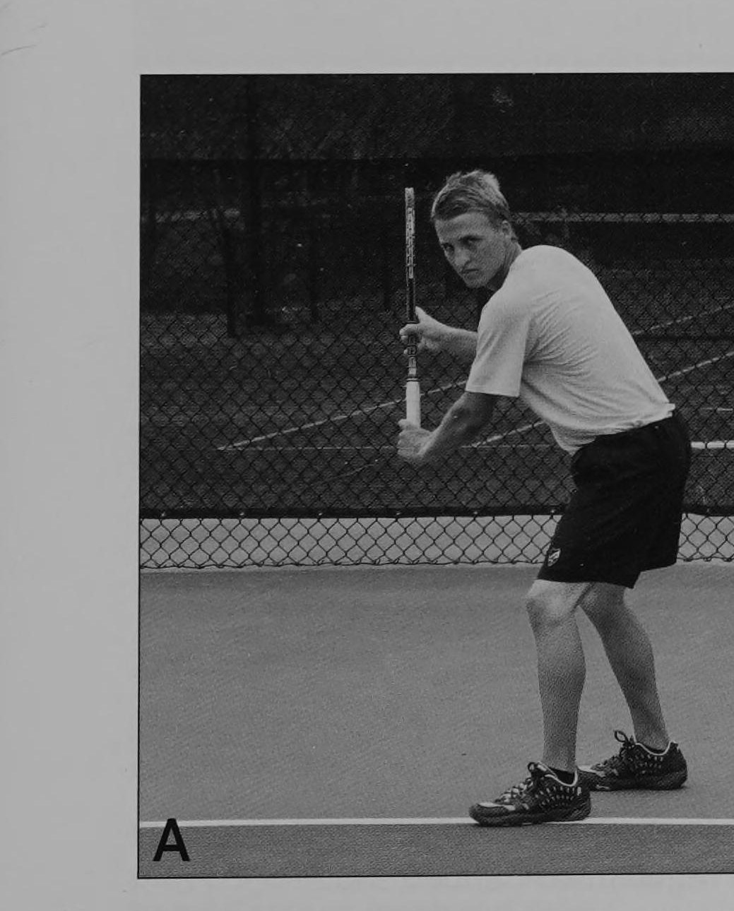
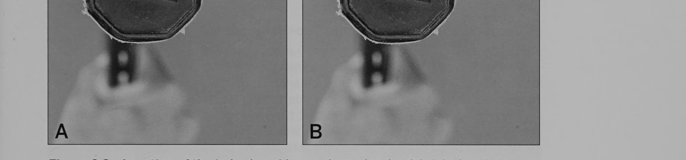
Đối với kiểu cầm vợt kiểu Continental-East, người chơi thuận tay phải đặt tay dưới (phải) vào kiểu cầm Continental và tay trên (trái) vào kiểu cầm thuận tay kiểu Eastern. Người thuận tay trái sử dụng Continental cho bên trái và Eastern cho bên phải (xem hình 2.6). Hai bàn tay ấn vào nhau mà các ngón tay không đan vào nhau. Mặt vợt hơi khép lại. Khi sử dụng kiểu cầm vợt này, người chơi có thể đánh cú trái tay phẳng bằng hai tay hoặc bằng cú xoáy trên. Cách cầm vợt này không có thêm lợi ích như cách cầm vợt đã ở vị trí xoáy lên, do đó xoáy lên phải được tạo ra bằng cổ tay khỏe để có thể đánh một cú đánh với gia tốc và lực đẩy mạnh lên phía trên của cú đánh. Người chơi có thể sử dụng cách cầm vợt này cho mọi phong cách chơi. Nó có thể mang lại sự cân bằng hoàn hảo về sức mạnh và độ xoáy lên cần thiết khi ở trên đường biên hoặc chuyển sang lưới.
sử dụng cách cầm nắm Đông-Đông. sử dụng cách cầm nắm Lục địa-Đông.
Backhand một tay
Hai cách cầm vợt chính cho trái tay một tay là kiểu cầm trái tay kiểu Eastern và cách cầm trái tay ở phía sau cổ tay. Cách cầm vợt trái tay kiểu Eastern là kiểu cầm vợt phổ biến nhất được sử dụng cho cú đánh trái tay một tay. Roger Federer sử dụng cách cầm vợt trái tay kiểu Eastern để thành công rực rỡ. Cách cầm vợt sau cổ tay hoặc kiểu cầm trái tay kiểu Western cũng được sử dụng rộng rãi. Người chơi cũng có thể chọn kiểu cầm vợt Continental cho cú đánh trái tay, nhưng ngày nay nó hiếm khi được sử dụng, ngoại trừ với cú cắt trái tay. Hình 2.7a và 2.7b thể hiện vị trí đặt đốt ngón trỏ của người thuận tay phải và tay trái. (Tham khảo hình 1.6 ở trang 5 để biết số góc xiên.)
Đông Đông
Cổ tay phía sau 2 Cổ tay phía sau- - Zz -/ tay cầm tôi người chơi và (b) người chơi thuận tay trái sử dụng cách cầm vợt trái tay bằng một tay.
Cách cầm vợt trái tay phía sau cổ tay (xem hình 2.9) còn được gọi là cách cầm vợt trái tay kiểu Viễn Đông và đôi khi là cách cầm vợt trái tay kiểu bán Tây. Người chơi thuận tay phải đặt khớp ngón trỏ lên góc xiên 8 (góc xiên vừa với cạnh của cán Eastern nhưng xoay cẳng tay sang phía đối diện như đối với cú thuận tay; xem hình 2.7a). Người chơi thuận tay trái đặt đốt ngón trỏ lên góc xiên 2 (xem hình 2.7b). Vị trí cầm vợt này vuông góc với đầu vợt và tạo thành xoáy lên bằng cách duỗi thẳng cánh tay. Cách cầm này phù hợp với những quả bóng được đánh ở độ cao ngang ngực bình thường trở lên và đánh bóng khi đang trên cao. Vì tay quay xa hơn trên vợt nên chuyển sang cú trái tay bằng một tay. khó khăn hơn... Người chơi có thể sử dụng cách cầm vợt này cho mọi kiểu đánh, nhưng kiểu cầm trái tay này là kiểu cầm đứng dậy và di chuyển vì nó sử dụng điểm tiếp xúc tấn công. Cách cầm vợt này hoàn hảo để nhận bóng sớm vì cánh tay duỗi thẳng hơn về phía trước, do đó, sẽ hợp lý khi một người chơi toàn sân, giao bóng và vô lê và ở mức độ thấp hơn là người chơi theo phong cách cơ bản hung hãn sẽ sử dụng cách cầm này. Người chơi phòng thủ và vạch cuối sân tập hợp có thể muốn sử dụng cách cầm vợt này như một hình thức phòng thủ tích hợp tốt, bởi vì họ có thể sử dụng điểm tiếp xúc sớm như một phương tiện để tránh xa đối thủ đang tấn công.
Lát trái tay
Cú đánh trái tay là một cú đánh đẹp và là một công cụ hữu ích. Những cú đánh xoáy lên rất phổ biến trong trò chơi, vì vậy việc sở hữu một đường cắt hiệu quả sẽ khiến người chơi khác biệt với những người còn lại. Cú đánh trái tay có nghĩa là phải được giữ ở mức thấp với quỹ đạo bằng phẳng, hầu như không đi qua lưới và lao xuống sau khi qua lưới. Được sử dụng một cách tấn công, cú đánh có thể mang lại sự đa dạng. Nó cũng có thể được sử dụng như một đòn phòng thủ xuất sắc. Một tay vợt di chuyển không tốt hoặc không chuẩn bị đầy đủ có thể lạm dụng cú đánh này. Cú đánh trái tay được thực hiện bằng cách cầm vợt thuận tay Eastern hoặc Continental. Cách cầm vợt mà người chơi lựa chọn tùy thuộc vào việc họ muốn xây dựng nhiều lát cắt hơn cho cú đánh hay sử dụng nhiều cổ tay hơn để tạo ra lát cắt. Cách cầm vợt Continental yêu cầu cắt nhiều hơn, hoặc bẻ cổ tay, hướng xuống dưới và yêu cầu cổ tay linh hoạt. Kiểu cầm vợt thuận tay kiểu Eastern có nhiều xoáy xuống tích hợp hơn. Ưu điểm của kiểu cầm vợt Eastern là người chơi không phải thay đổi cách cầm khi đánh một cú thuận tay kiểu Đông, sau đó là một cú cắt trái tay. Cách cầm vợt kiểu Đông cho phép người chơi cắt bóng nhiều hơn miễn là cổ tay hơi chếch xuống. Kiểu cầm vợt Continental tạo ra cú đánh phẳng hơn, xuyên thấu hơn và đòi hỏi cổ tay ít nghiêng hơn. Những bất lợi trở nên rõ ràng khi người chơi ở vị trí không tốt để thực hiện cú đánh. Cách cầm vợt thuận tay kiểu Eastern có thể tạo ra quá nhiều xoáy xuống, do đó khiến bóng tiếp đất ngắn và cách cầm vợt kiểu Continental có thể không mang lại độ loft mong muốn cần thiết cho cú đánh để đưa bóng qua lưới.
KỸ THUẬT CÚT
Sau khi chọn cách cầm vợt trái tay bằng một tay hoặc hai tay để phù hợp với phong cách và mục tiêu chơi ưa thích, người chơi sẵn sàng xem xét kỹ hơn kỹ thuật cần thiết trong suốt kiểu đánh. Văn bản sau đây trình bày kỹ thuật cần thiết để thực hiện từng kiểu trái tay. Mỗi cú đánh này bao gồm một sự chuẩn bị cụ thể và vung ra sau, vung về phía trước và tiếp xúc cũng như theo dõi.
Backhand hai tay
Như đã lưu ý trước đó, cú trái tay bằng hai tay kết hợp sức mạnh và xoáy lên. Để thực hiện thành công, người chơi cần phối hợp chuyển động của cánh tay và cơ thể.
Chuẩn bị và đưa vợt ra sau
Vai thực hiện một nửa vòng hoặc một vòng khi vợt được thu lại (xem hình 2.10). Khuỷu tay, cánh tay và đầu vợt phải được đặt thoải mái phía sau người chơi—không quá dốc và không quá thấp. Vợt cách bên người khoảng 1,5 feet (0,5 m) và cổ tay hơi chắc. Cách cầm vợt cho biết người chơi sẽ phải giật và đánh bóng bao xa. Thân và hông xoay về phía sau để chịu tải phù hợp với chân. Cũng giống như trong tất cả các cú đánh, chân sau phải chịu lực chủ yếu để tạo nền tảng cho cú vung và mang lại sự cân bằng phù hợp (xem hình 2.11).
Đông-Đông Grip
* Cần nhiều cọ hơn cho tay cầm kiểu Đông-Đông. Thân và hông xoay về phía sau nhiều hơn một chút.
Lục địa-Đông Grip
¢ Cách cầm này yêu cầu người chơi phải vuông góc đầu vợt.
Đưa vợt tới và tiếp xúc bóng
Trọng lượng chuyển về phía trước trong khi vợt tạo thành một vòng; đầu vợt hạ xuống thấp hơn để có nhiều xoáy lên hơn và cao đến thắt lưng hoặc cao hơn một chút đối với bóng phẳng. Kiểu giật và xoáy cũng được quyết định bởi việc lựa chọn cách cầm vợt. Khi vòng lặp diễn ra, hông sẽ xoay về phía sau. Khi hông bắt đầu xoay về phía trước, cổ tay nghiêng xuống dưới để quét bên dưới quả bóng, và cánh tay duỗi ra ngoài để tiếp xúc và chạm vào quả bóng như mong muốn (xem hình 2.12).
lượt đơn vị. chuẩn bị trái tay và vung trái tay về phía trước và vung sau. liên hệ.
Bóng được đánh vào khu vực tấn công từ giữa đến thấp hơn. Vùng tấn công ở cấp độ cao hơn cũng sẽ yêu cầu một cú giật và quét dưới bóng để duỗi tay tốt hơn. Tốt nhất là người chơi nên đánh trái tay bằng hai tay ở phía trước bàn chân trước để người chơi cuối cùng có thể xử lý những quả bóng cứng hơn, dễ dàng chuyển sang lưới hơn và duy trì tư thế hung hãn trên sân. Đối với cú vung vợt, người chơi nên tập trung đánh qua vùng tiếp xúc và tăng tốc đầu vợt để tạo xoáy lên hoặc đánh bóng hiệu quả hơn. Các cú đánh sau đó trong khu vực tập trung được đánh xuống đường biên như một cách ngụy trang hoặc như một cú đánh hiệu quả mong muốn, hoặc chúng được đánh bằng một điểm tiếp xúc phòng thủ như một cách ngụy trang hoặc như một phương tiện để tạo ra nhiều xoáy lên hơn và chạm vào bóng.
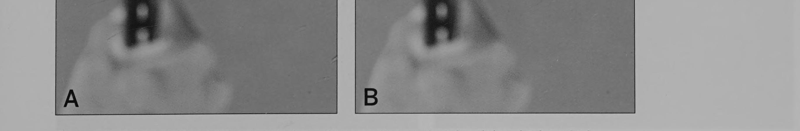
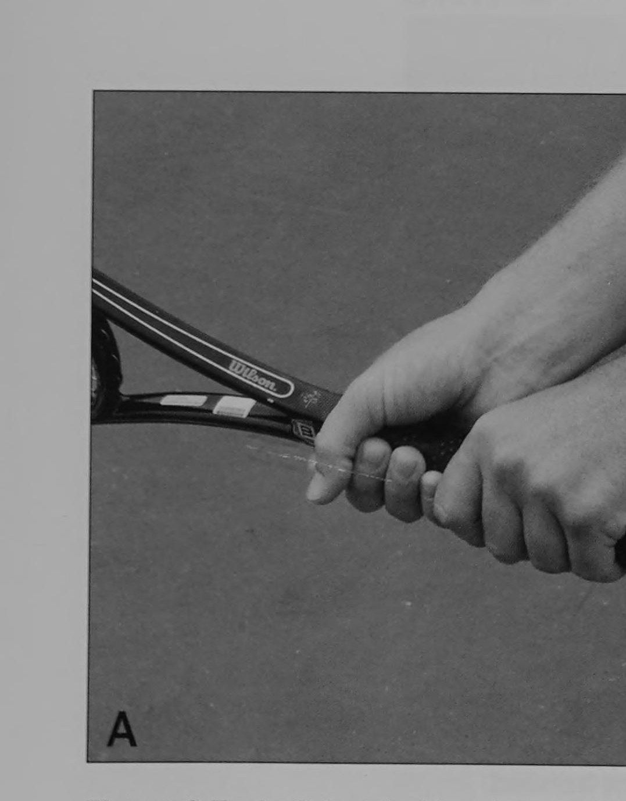
Đông-Đông Grip
e Đường của cú vung quét lên trên đối với xoáy lên nhưng hướng ra ngoài nhiều hơn đối với cú công bóng. e Cổ tay trong giai đoạn này sẽ bật ra khi tiếp xúc với áp suất bằng nhau. Cổ tay của cánh tay không thuận được đặt ra sau và phải bật lên và ở bên ngoài quả bóng để tạo ra xoáy lên. Người chơi phải có cảm giác chạm vào bóng trong khi đánh cú và dang rộng cánh tay ra khi tiếp xúc một cách mượt mà dưới bóng. e Để đạt được độ xoáy lên, người chơi phải vào tư thế chịu tải nhiều hơn với đầu gối cong trước khi chuyển trọng lượng về phía trước.
Lục địa-Đông Grip
e Đường đi của tay cầm này khá bằng phẳng; nó có ít đường quét phía dưới đối với những quả bóng phẳng hơn và có một chút độ quét phía dưới đối với bóng xoáy lên. Đầu vợt trên tay cầm này vuông góc lên khi người chơi đánh vào nó, vì vậy để tạo ra xoáy lên, cổ tay phải quét xuống dưới và đẩy lên trên. Cả hai cổ tay đều áp dụng lực tác động và áp lực. Cánh tay không thuận hơi ngả về phía sau để nó có thể bám lên nhiều hơn để tạo xoáy lên hoặc ít hơn một chút đối với bóng phẳng. Không cần tải thêm cho lần chụp này.
Động tác kết thúc
Trong giai đoạn này, đầu vợt tiếp tục hướng ra ngoài khi cổ tay lật. Hai tay kết thúc qua vai bên kia hoặc ngang tầm vai (xem hình 2.13). Người chơi có thể giữ nguyên tư thế hoặc đưa chân sau về phía trước để hỗ trợ hồi phục. Một kỹ thuật gần đây để làm cho cú đánh trái tay bằng hai tay hiệu quả hơn là giúp người chơi cảm thấy như thể chân sau đang di chuyển trong cú đánh và ổn định thẳng hàng với bàn chân trước. Từ vị trí này, người chơi có thể sử dụng chân ngoài đó để đẩy lùi về giữa sân để phục hồi.
Đông-Đông Grip
Khi thực hiện cú đánh tiếp theo, cánh tay duỗi ra ngoài và hướng lên trên một chút để vuông góc với đầu vợt khi đánh. Cánh tay nên mở rộng sang vai đối diện. Để giúp đầu vợt vuông vức, việc chuyển trọng lượng thường được phóng đại lên trên một chút.
Lục địa-Đông Grip
Các cánh tay mở rộng ra bên ngoài và dựa trên cú đánh, chúng sẽ phẳng hơn nếu đánh bóng và hướng lên trên nếu tạo ra xoáy lên.
theo dõi. cũng vậy.
Backhand một tay
Cú đánh trái tay bằng một tay kết hợp sức mạnh và độ xoáy lên với tầm mở rộng cho người chơi. Bởi vì người chơi sử dụng một tay thay vì hai tay nên có khả năng sức mạnh là điều đáng lo ngại. Mặt khác, khả năng tiếp cận và tính linh hoạt của người chơi khi thực hiện những cú đánh khó hơn bằng một tay có thể tăng lên.
Chuẩn bị và đưa vợt ra sau
Người chơi thực hiện một lượt đơn vị (xem hình 2.14), thực hiện nửa vòng bằng vai. Vợt được đưa về phía sau cơ thể một cách thoải mái (không dốc quá, cao từ thắt lưng đến vai). Cánh tay còn lại hỗ trợ việc rút lui và giữ vị trí. Đầu vợt cao hơn cổ tay, cổ tay chắc chắn. Trọng lượng chuyển về phía sau và cả hai chân đều thiết lập tư thế ưa thích (đóng hoặc hơi mở), trong khi tải lên chân sau. Các huấn luyện viên ngày nay cố gắng thiết lập tải trọng ban đầu ở chân sau để đưa bóng về phía sau. Tải trọng ở chân sau này giúp người chơi duy trì sự cân bằng nhất định trong cú đánh, đặc biệt khi cần ít bước hơn. Mặt vợt vuông vức khi thu bóng (xem hình 2.15). Cánh tay uốn cong thoải mái ở khuỷu tay, lòng bàn tay úp xuống và bàn tay đặt ngang với chân sau. Vùng tấn công cho các cú đánh thông thường là ở mức trung bình. Đối với những cú đánh có độ sâu và tốc độ đòi hỏi khu vực thu hồi nhanh hơn, đó là hướng về khu vực tấn công cấp thấp hơn.
Cách cầm backhand Eastern
* Cách cầm vợt này đòi hỏi phải chuẩn bị để giật vợt lên trên trước khi đi xuống, nhưng nó chuẩn bị cho người chơi khả năng giật vợt dốc hơn một chút nếu đánh bằng xoáy lên.
Cách cầm trái tay ở cổ tay sau tay cầm
¢ Kiểu cầm vợt này có tích hợp xoáy lên và cánh tay đặt ở vị trí vùng tấn công tầm trung bình thường giống như đối với cú đánh trái tay kiểu Đông. Tải trọng về phía chân sau cũng tương tự. * Sự khác biệt chính trong quá trình chuẩn bị là vị trí mặt vợt được vuông góc khi sử dụng cách cầm vợt này, do đó việc chuẩn bị quét dưới bóng để tăng thêm độ xoáy trên sẽ bị loại bỏ. Người chơi có thể vẫn muốn tải về phía chân sau và đẩy bóng lên trên, nhưng trong trường hợp đó, phần lớn xoáy lên được kết hợp với một cú giật dốc hơn và lực giật cổ tay lớn hơn.
lượt đơn vị. chuẩn bị và lùi lại.
Đưa vợt tới và tiếp xúc bóng
Đầu gối uốn cong và tải trọng được đặt ở chân sau. Hông bắt đầu xoay về phía sau trước khi xoay về phía trước và bắt đầu vòng lặp. Cổ tay giữ vững trong suốt cú giật và mặt vợt phải vuông góc hoặc hơi khép xuống. Cánh tay và mặt vợt mở rộng ra ngoài để gặp bóng tại điểm tiếp xúc tấn công, phía trước bàn chân trước và ở vùng tấn công ở mức giữa (xem hình 2.16). Để đánh một quả bóng ở vùng tấn công ở mức độ thấp hơn đòi hỏi phải gập đầu gối sâu hơn cũng như giật nhiều hơn một chút và quét lên trên. Hông xoay về phía trước như một phần của cú swing. Người chơi sẽ có cảm giác như hông đang giữ thăng bằng cho cơ thể. Bàn tay bắt đầu kéo về phía sau. Đầu vẫn đứng yên khi va chạm.
Cách cầm backhand Eastern
e Cổ tay tăng tốc một chút lên trên và về phía trước đối với một quả bóng phẳng và tăng tốc mạnh hơn đối với một cú đánh xoáy lên.
Cách cầm trái tay ở cổ tay sau tay cầm
* Tiếp xúc được thực hiện với đầu vợt đã vuông vức nên cổ tay cần tăng tốc lên trên một chút. ¢ Cú giật không dốc như yêu cầu đối với kiểu cầm trái tay kiểu Eastern.
Động tác kết thúc
Khi vợt kéo dài lên trên bằng cách tăng tốc, cánh tay trước hướng về phía quả bóng và cánh tay sau kéo xa hơn về phía sau. Cổ tay bắt đầu quay một cách tự nhiên; cú đánh trái tay sẽ giữ càng xa càng thoải mái. Cánh tay sau mở rộng hơn sẽ mang lại sự cân bằng tốt hơn. Gần cuối lượt theo dõi, người chơi lắc cổ tay lên và ra về phía vai đối diện; về cơ bản, ngón tay cái sẽ lật và chảy qua phần tiếp theo. Đường vợt đi ra phía trước và đầu vợt kết thúc phía trên cổ tay. Kết thúc ở vai đối diện (xem hình 2.17).
xoay về phía trước và tiếp xúc. theo dõi.
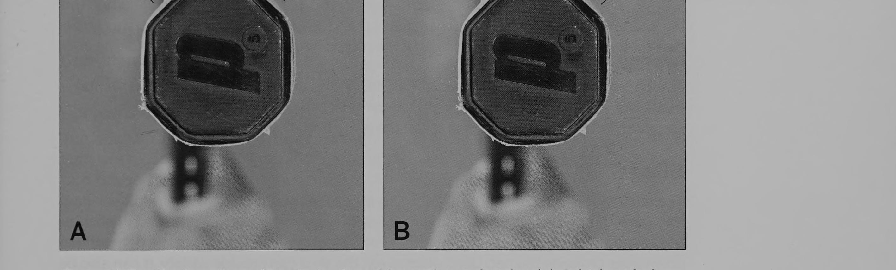
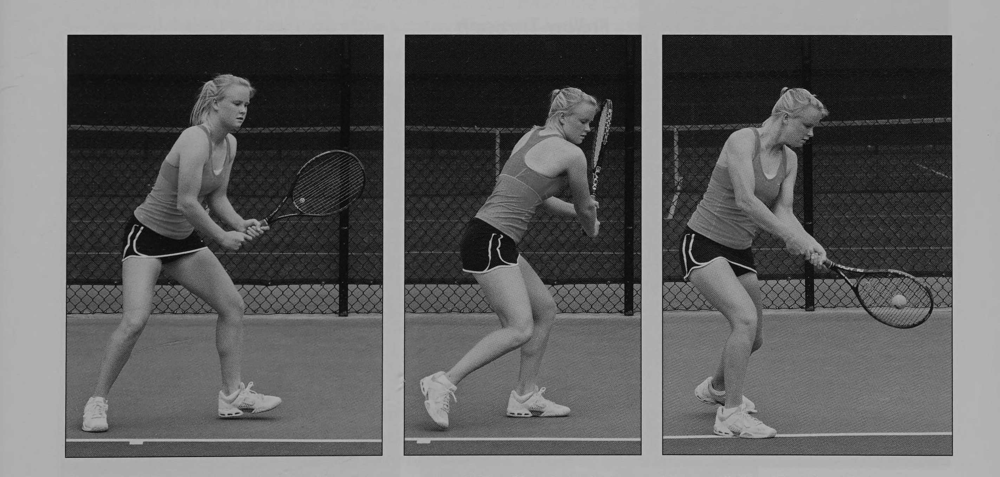
Cách cầm backhand Eastern
¢ Cổ tay bật lên khi thực hiện cú đánh tiếp theo, trọng tâm là cánh tay và ngón tay cái lật qua và đầu vợt kết thúc. Người chơi nên suy nghĩ, đồng ý.
Cách cầm trái tay ở cổ tay sau tay cầm
¢ Cổ tay trong cách cầm này bật ra ngoài nhiều hơn và lòng bàn tay hơi hướng xuống. Ngón tay cái vẫn có thể lật nhưng không nhiều.
Lát trái tay
Cú cắt bóng trái tay là một công cụ rất hiệu quả để duy trì một pha giao bóng, đặc biệt khi ở một vị trí dễ bị tổn thương trên sân và là một công dụng quan trọng của sự đa dạng. Quỹ đạo thấp hơn của bóng cho phép thời gian hồi phục lâu hơn và bóng khó bị đối thủ đánh trúng.
Chuẩn bị và đưa vợt ra sau
Vai làm cho thiết bị quay khi thân và đầu vợt tải về phía sau (xem hình 2.18). Trọng lượng nên được chuyển sang chân sau để giữ thăng bằng trước khi sử dụng tư thế. Người chơi nên tập trung vào việc chuẩn bị vợt cao hơn một chút so với quả bóng đang tới hoặc ngay phía sau nó. Người chơi nên chuẩn bị đầu vợt cao hơn để có nhiều lát cắt vào bóng hơn và trực tiếp di chuyển nó về phía sau để có một cú cắt phẳng hơn, mạnh hơn. Tay không thuận mang lại sự cân bằng bằng cách hỗ trợ việc thu hồi (xem sự lấy lại. Hông di chuyển về phía sau và tải trọng thích hợp xảy ra tùy thuộc vào tư thế và chuyển động. Nếu đấu thủ đặt chân trước ngang qua đường của chân sau thì thế đứng sẽ đóng lại; nếu người chơi đặt chân trước ở phía trước và hướng về phía vai đối diện thì thế đứng sẽ mở. Mặt vợt mở và hướng lên trên cổ tay.
Cách cầm thuận tay Eastern
¢ Tay cầm này có tích hợp độ xoáy xuống. Mép ngoài của đầu vợt nghiêng về phía người chơi. Để cách cầm này phát huy tác dụng, người chơi cần vung thẳng trong cú đánh hoặc hơi từ cao xuống thấp.
chuẩn bị và lùi lại. * Để đánh một lát phẳng mạnh mẽ hơn, người chơi phải di chuyển bằng chân nhiều hơn một chút. Đối với một lát cắt nổi hoặc tiếp đất ngắn trên sân, người chơi có thể dồn lực nhiều hơn một chút bằng chân.
Đưa vợt tới và tiếp xúc bóng
Khi cơ thể di chuyển về phía trước, vai được giữ nguyên. Cánh tay trước bắt đầu di chuyển theo kiểu từ cao xuống thấp mà không quá dốc. Người chơi nên tưởng tượng mình đập vào một tấm kính: nhúng xuống quá nhiều sẽ làm vỡ kính. Khi cánh tay trước di chuyển về phía trước, cánh tay sau thả ra và bắt đầu lùi về phía sau (xem hình 2.20). Có thể tiếp xúc ở cả ba điểm tiếp xúc. Sử dụng bước carioca có thể giúp người chơi thực hiện cú cắt tay trái vì nó giữ cho cơ thể thăng bằng và vai xoay ngay trước và ngay sau khi tiếp xúc. Để thực hiện bước carioca, người chơi tải lên chân sau. Ngay trước khi tiếp xúc, chân sau vòng ra phía sau cơ thể và đặt ở phía trước chân trước (xem hình 2.21). Khi thực hiện cú đánh, người chơi phải thực hiện thêm một bước carioca nữa về phía sau và phía trước chân trước hoặc rút ra khỏi cú đánh và hồi phục cho cú đánh tiếp theo.
Cách cầm thuận tay Eastern
¢ Tay cầm này nghiêng hoặc nghiêng về phía sau và tăng tốc xuống nhiều hơn khi tiếp xúc.
Lục địa Grip
¢ Kiểu cầm này nghiêng ít hơn một chút và tăng tốc ra ngoài nhiều hơn khi tiếp xúc.
Động tác kết thúc
Người chơi nên cố gắng giữ vai đóng càng lâu càng tốt, nhưng khi làm như vậy, cánh tay sẽ kéo sang phía bên kia của cơ thể, xoay và liên lạc. trái tay một tay (xem hình 2.22)* Không bước. bởi vì.
Cách cầm thuận tay Eastern
* Phần tiếp theo của tay cầm kiểu Eastern di chuyển theo kiểu từ cao xuống thấp hơn và cổ tay hướng xuống dưới.
Lục địa Grip
* Tay cầm kiểu Continental mở rộng ra bên ngoài nhiều hơn theo kiểu từ cao xuống thấp một chút.
CHƠI TRÁI TAY
Cho đến nay, chương này đã đề cập đến các kỹ thuật cốt lõi của tay trái hai tay và một tay và phân tích xu hướng tự nhiên của từng tay. Tiếp theo, chương này thảo luận về các cú đánh trái tay mà tất cả người chơi cần học và cảm thấy thoải mái khi đánh. Tất cả những cú đánh này có thể được thực hiện bằng trái tay hai hoặc một tay, với một chút khác biệt. Bất kể người chơi chọn trái tay nào, điều quan trọng là phải tự tin vào cú đánh trái tay và có thể thực hiện nhiều cú đánh khác nhau với nó. Điểm yếu trong các cú đánh trái tay của người chơi có thể cản trở sự tiến bộ của người chơi. Các cú đánh được trình bày ở đây sử dụng nhiều kiểu quay và vị trí khác nhau trên sân. (Xem trang 16-19 để xem lại các vòng quay và vị trí.)
Cú đánh trái tay Loại kỹ thuật
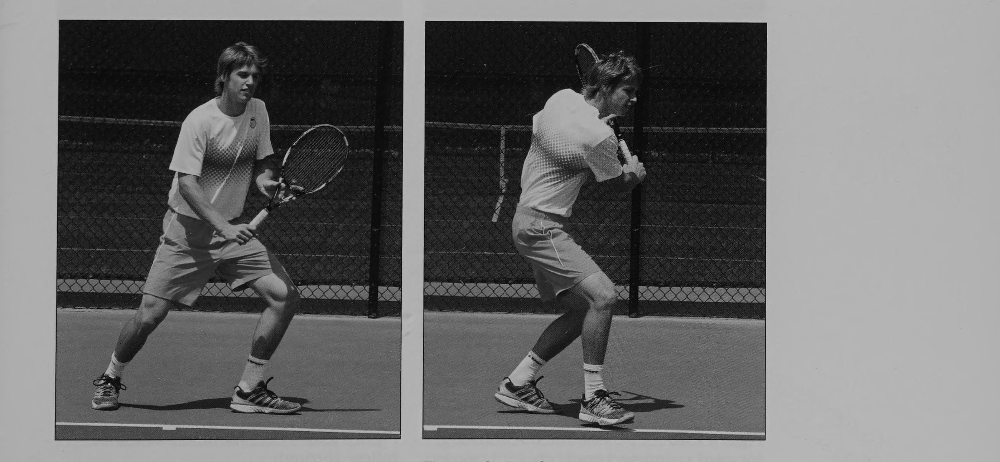
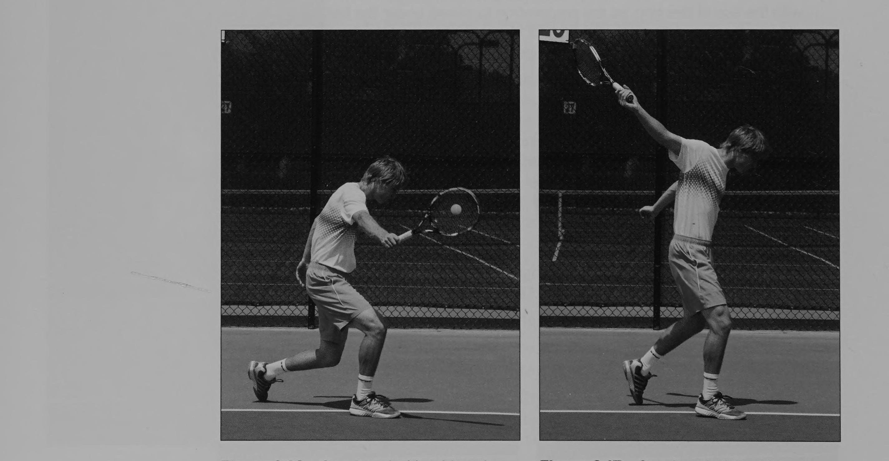
ee Trái tay hai tay Trái tay một tay
: ‘ tín hiệu Đông-Đông: Continentaljee ‘Đông: = Cổ tay sau- _ Đông mee: 2 hegre |
Cú đánh chéo bàn cao, nặng — cú đánh trái tay dọc biên
Lát trái tay tấn công tức là tare: 'changteo Với sự thay đổi của Continental — the Continental _
~— Cú trái tay của Moonball. X Xs Với achantgoe _ Với sự thay đổi thành” Continental — the Continental —
Những cú đánh trái tay tấn công
Cú trái tay tấn công là một vũ khí tuyệt vời. Cú đánh này có thể mang tính chiến thắng, một quả bóng dùng để giữ chân đối thủ hoặc một cú đánh khiến đối thủ phải mất thời gian. Một công cụ tấn công khác sử dụng trái tay là cú đánh mà người chơi đánh vào một vị trí cụ thể, hy vọng đối thủ sẽ đáp trả nhất định. Ví dụ: một người chơi có thể đánh một cú trái tay dọc theo đường biên với hy vọng nhận được một câu trả lời chéo sân để người chơi có thể sử dụng cú thuận tay trong cú đánh tiếp theo. Cú cắt này cũng có thể được coi là một cú trái tay tấn công, đặc biệt nếu nó được đánh bằng sức mạnh, độ xoáy, quỹ đạo thấp và mục đích hung hãn. Cú trái tay mang tính tấn công nhất là cú đánh trái tay dọc biên. Hầu hết người chơi bắt đầu trận đấu với giả định rằng đối thủ của họ có cú thuận tay tốt hơn cú trái tay và đối thủ sẽ sử dụng cú đánh trái tay để phòng thủ. Vì vậy, một tay vợt có cú trái tay thuận lợi và thuận lợi có thể mở sân và có nhiều lựa chọn hơn. Những cú trái tay tấn công tạo nên sự khác biệt lớn trong trận đấu của người chơi. Hầu hết mọi người đều cố gắng hoàn thiện cú thuận tay của mình, vì vậy khi cú trái tay hiệu quả và trở thành thế mạnh, nó có thể đưa người chơi lên một tầm cao mới. Các phần tiếp theo sẽ thảo luận về thời điểm thực hiện các tùy chọn khác nhau cho các cú đánh tấn công, vị trí đánh và cách đánh. Mọi sửa đổi cần thiết cần thiết cho kỹ thuật một tay hoặc hai tay đều được cung cấp.
Cú đánh chéo sân trái tay
Justine Henin được coi là người có một trong những cú trái tay bằng một tay hay nhất mọi thời đại. Khả năng đánh những cú trái tay xuyên thấu sâu trong sân cũng như khả năng sử dụng các góc của cô ấy đã mang lại cho cô ấy sự kết hợp hoàn hảo để hỗ trợ tổng thể trận đấu của cô ấy. Maria Sharapova có một trong những cú đánh lái phẳng bằng hai tay tốt nhất trong giải đấu. Cú đánh chéo sân phẳng thuận tay của cô ấy cũng rất xuất sắc, vì vậy phong cách chạm đất chính của cô ấy là tấn công và bằng phẳng từ mặt đất, được thiết kế để áp đảo đối thủ.
Phương pháp tạo cú công bóng chéo sân khác nhau giữa phiên bản hai tay và một tay. Cú đánh bằng hai tay Người chơi sử dụng thế đứng ưa thích hoặc tư thế được quyết định bởi chuyển động của bóng. Ở một vị trí tốt, người chơi có thể sử dụng thế đứng khép kín. Khi ra khỏi vị trí, người chơi nên sử dụng tư thế mở. Tuy nhiên, người chơi nên tránh thực hiện một cú đánh chéo sân phẳng từ một thế đứng rộng bởi vì, trừ khi kỹ năng của người chơi hoàn hảo, kết quả là một quả bóng phẳng chạm sân ngắn, cản trở thời gian phục hồi thích hợp và khiến đối phương dễ dàng đánh hơn. Sử dụng cách cầm vợt ưa thích của một người, điểm tiếp xúc của cú đánh thường nằm ở điểm tiếp xúc tấn công và vùng tấn công ở mức trung bình. Người chơi đang cố gắng lái bóng với sức mạnh và độ sâu nên có thể coi đó là một cú đánh kiểm soát. Cú giật trong cú đánh này đã đầy và người chơi tăng tốc cánh tay và cổ tay trước tiên ra ngoài rồi hướng lên trên để tiếp tục. Để tạo ra một quả bóng phẳng và động lượng tối đa, góc của đầu vợt phải vuông góc. Đánh bằng một tay Đối với phiên bản đánh bằng một tay, người chơi nên sử dụng tư thế hơi đóng. Người chơi phải ở vị trí rất tốt để thực hiện cú đánh, nếu không việc kiểm soát cú đánh có thể gặp vấn đề. Cú đánh này được thực hiện bằng cách cầm trái tay kiểu Eastern hoặc kiểu cầm trái tay phía sau cán vợt. Điểm tiếp xúc trong là điểm tiếp xúc tấn công và vùng tấn công ở mức độ trung bình. Cú đánh này có thể được đánh phẳng hoặc có độ xoáy nhiều hơn để tạo hình dạng cho quả bóng, khiến nó bay lên xuống nhanh chóng và lao ra khỏi sân. Gia tốc của đầu vợt và cánh tay vẫn đi từ thấp lên cao nhưng vươn ra ngoài ngay trước khi tiếp xúc.
Nơi Aplayer đánh một cú đánh chéo sân phải ở giữa các con hẻm. Đến gần các con hẻm hoặc bên ngoài các con hẻm cần một quả bóng cao và nặng (Xem cú đánh tiếp theo) để cố gắng quay lại điểm. Vị trí tiếp đất tối ưu cho cú công bóng chéo sân là giữa đường giao bóng và vạch cuối sân, thường gần vạch cuối sân hơn, cách vạch cuối sân và ngõ khoảng 2 đến 3 feet (0,6 đến 0,9 m). Nói chung, người chơi nên đặt bóng ở bất kỳ vị trí nào sâu trong sân để đẩy đối phương lùi lại sân.
Khi nào Thời điểm thích hợp để sử dụng cú công bóng chéo bàn trái tay đối với phiên bản hai tay và một tay là khác nhau.
Cú đánh bằng hai tay Cú đánh này được đánh phẳng và sâu. Mục đích là khiến đối phương di chuyển lùi lại trên sân, cho phép người chơi đánh thuận tay hoặc trái tay mạnh mẽ ở quả bóng tiếp theo. Người chơi có thể thực hiện điều này bằng sức mạnh hoặc một quả bóng phẳng, sâu.
Cú đánh một tay Người chơi trái tay một tay sử dụng cú đánh trái tay chéo bàn vì hai lý do. Cú đánh có thể được thực hiện khi đối phương tung ra cú đánh yếu dọc biên và muốn sử dụng trái tay để tấn công với cú đánh chéo sân. Nó cũng có thể được sử dụng để thiết lập thuận tay bằng cách đánh một cú trái tay sâu giúp người chơi có đủ thời gian để thực hiện cú đánh trái tay tiếp theo.
Crosscourt trái tay cao, nặng
Một cú đánh trái tay cao và nặng là một cú đánh xoáy lên nảy cao và đối thủ khó bắt được. Rafael Nadal sử dụng cú trái tay cao và nặng để đẩy đối thủ lùi lại sân, giúp anh ta có thêm thời gian hồi phục và đánh cú thuận tay. Cú đánh trái tay cao và nặng là một trong những cú đánh hiệu quả nhất của anh ấy.
Phiên bản hai tay và một tay đều đánh giống nhau. Người chơi thực hiện cú đánh chéo tay cao và nặng bằng cách cố gắng đưa bóng vào dưới bóng với lực mạnh nhất có thể để đánh bóng lên. Bóng có cảm giác nặng (lý do có tên) khi đối phương nhận bóng. Điểm tiếp xúc của cú đánh này là ở điểm tiếp xúc tập hợp và ở vùng tấn công từ giữa đến cao hơn. Cú trái tay chéo cao, nặng có thể được đánh từ vị trí tấn công hoặc vị trí phòng thủ trên sân.
Trường hợp Cú đánh này có thể được sử dụng một cách chiến lược khi người chơi không cảm thấy thoải mái khi đánh một cú đánh ngang sân bằng phẳng và đang ở vị trí tấn công trên sân (nằm giữa dấu thăng ở giữa và con hẻm) hoặc ở vị trí phòng thủ trên sân (phía sau đường cuối sân hoặc trong các con hẻm). Cú đánh này được đánh sâu trong sân (giữa đường giao bóng và đường cuối sân hoặc gần đường cuối sân) và chủ yếu đến các phần ba bên ngoài của sân hoặc có thể đến giữa. Cú đánh này được thực hiện một cách chiến lược để đẩy đối thủ trở lại sân hoặc giúp người chơi có thêm thời gian để hồi phục.
Khi cú đánh này thường có đối thủ vươn lên đánh bóng, cách này hiệu quả nếu đối thủ đó thấp hoặc không thích đánh bóng có vùng đánh cao hơn. Cú đánh này cũng cho phép người chơi có nhiều thời gian hơn để chạy quanh trái tay để đánh thuận tay, nếu đó là phong cách ưa thích của người chơi. Cú đánh này được thực hiện khi một tay vợt đang chạy và cố gắng thực hiện một cú đánh an toàn hơn hoặc khi một tay vợt muốn đẩy đối thủ về phía sau và có thời gian để phục hồi hoặc tạo một góc cho cú thuận tay.
Cú trái tay cao, nặng ở cuối đường
Justine Henin sử dụng cú trái tay bằng một tay để thực hiện cú đánh này. Nó cực kỳ có giá trị đối với trò chơi của cô ấy vì nó giữ đối thủ của cô ấy ở thế phòng thủ đủ lâu để cô ấy đánh một cú trái tay góc cạnh hơn hoặc một cú thuận tay mạnh mẽ.
Cách thức Cú đánh này đòi hỏi sự chuẩn bị với nhiều tải trọng hơn ở chân và nó phải chịu nhiều xoáy lên và quỹ đạo cao. Quả bóng này có mục đích nảy lên cao và ra khỏi vùng tấn công của đối phương. Đó là một cú đánh thiết lập tuyệt vời để đánh trước khi chuyển sang lưới. Điểm tiếp xúc của cú đánh này thường ở điểm tiếp xúc và vùng tấn công từ giữa đến cao hơn.
Cú đánh bằng hai tay Cả kiểu cầm vợt Đông-Đông và kiểu cầm vợt Lục địa-Đông đều có thể thực hiện cú đánh này. Người chơi sử dụng cách cầm vợt Đông-Đông sẽ phải mở rộng ra ngoài một chút để tạo lực và độ sâu. Cách cầm vợt kiểu Continental-East yêu cầu cổ tay bật lên trên một chút để tạo ra nhiều xoáy lên hơn trong cú đánh này. Cú đánh này được thực hiện với tư thế đóng nếu người chơi ở vị trí tốt hoặc hơi mở nếu không ở vị trí tốt hoặc nếu đây là tư thế ưa thích của người chơi. Cú đánh bằng một tay Cả kiểu cầm trái tay kiểu Eastern và kiểu cầm trái tay sau báng cầm đều có thể thực hiện cú đánh này. Cách cầm vợt trái tay kiểu Eastern đòi hỏi phải nắm cổ tay nhiều hơn và chịu tải của chân nhiều hơn để thực hiện cú đánh này cao và nặng. Cách cầm vợt trái tay ở phía sau cổ tay đòi hỏi độ loft cao hơn và mở rộng ra phía ngoài. Cú đánh này được thực hiện với tư thế hơi khép kín và được đánh với góc loft và lực được tạo ra từ tải trọng đáng kể của chân và cú xoay người hướng lên trên.
Trường hợp Quả bóng này phải rơi sâu vào sân phía sau vạch giao bóng và trước đường cuối sân, nhưng nó có thêm lợi ích là có thể hạ cánh ngắn và nhảy lên người chơi để hoàn thành mục tiêu tương tự như cú đánh bóng phẳng.
Khi mục tiêu của cú đánh này gồm hai phần: khiến đối thủ đánh chéo bàn theo hướng đánh tốt hơn, mạnh mẽ hơn của đấu thủ (cú đánh trái tay xuống đường biên cao và nặng có thể khiến đối thủ đi chéo sân nơi người chơi có thể thiết lập quyền kiểm soát điểm) và đánh bóng cho phép người chơi thu hồi hoặc vào vị trí tốt hơn cho cú đánh tiếp theo. Cú đánh bằng hai tay Người chơi thực hiện cú đánh này khi đang chạy ở sân sau, gần đường cuối sân và cố gắng thực hiện một cú đánh an toàn hơn hoặc đẩy đối thủ về phía sau để có nhiều thời gian phục hồi. Nó được sử dụng một cách chiến lược nhằm vào điểm yếu của đối thủ hoặc để đối thủ đánh đỡ bóng điểm mạnh của người chơi. Nó cũng có thể được sử dụng nếu người chơi có cú đánh chéo sân yếu. Cú đánh bằng một tay Cú đánh được thực hiện khi người chơi đang ở vị trí thuận lợi trên sân (giữa dấu thăng ở giữa và con hẻm). Nếu đang chạy, người chơi có thể muốn sử dụng cú đánh trái tay. Dù thế nào đi nữa, mục tiêu đều giống nhau: đẩy lùi đối thủ để kịp hồi phục và tung cú sút quyết liệt hơn. Cú đánh trái tay dọc đường;
Cú công bóng trái tay dọc là một trong những màn thể hiện sức mạnh và sự khéo léo đẹp nhất trong trò chơi. Serena Williams có một cú đánh trái tay mạnh mẽ. Đối thủ liên tục tìm kiếm cú đánh này để thực hiện, và họ sợ đánh một quả bóng ngắn hơn mà cô ấy có thể lùi lại phía sau và dỡ bỏ cú đánh.
Cách người chơi có thể sử dụng cách cầm vợt trái tay ưa thích cho cú đánh này. Để thực hiện cú đánh này thành công, người chơi cần phải ở trong đường cuối sân, do đó ở vị trí tấn công hơn. Cách cầm này được sử dụng với tư thế đóng hoặc tư thế hơi mở nếu ở ngoài vị trí. Một tay vợt thực hiện tiếp xúc tại điểm tiếp xúc bóng và khu vực tấn công tầm trung, nhưng điểm tiếp xúc của cú đánh này muộn hơn một quả bóng so với cú đánh chéo bàn và được thúc đẩy để tạo lực. Cú đánh bằng hai tay Cú đánh này yêu cầu phải chuẩn bị cơ thể tốt vì cú đánh sẽ thay đổi hướng của cú đánh sắp tới, người chơi có một khu vực nhỏ hơn để thao tác khi đánh lên đường biên và cú búng cổ tay hướng ra phía ngoài cú đánh. Ngón chân cái của bàn chân chì hướng về phía mục tiêu. Đánh bằng một tay Phiên bản này có hiệu quả nhưng người chơi bằng một tay phải rất khéo léo để đạt được kết quả tương tự như người chơi bằng hai tay. Đối với người chơi bằng hai tay, cánh tay phụ giúp kiểm soát nhiều hơn, cho phép thời gian xoay hoặc đóng vai nhiều hơn và cổ tay phải bật về phía bên ngoài cú đánh. Người chơi bằng một tay cần kiểm soát tốt hơn và phải mở rộng cánh tay ra ngoài khi tiếp xúc. Ngón chân cái của bàn chân chì hướng về phía mục tiêu.
BẠC KHAND KỸ NĂNG AQ
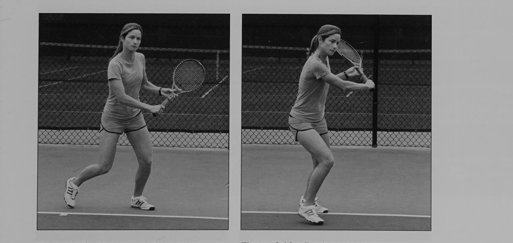
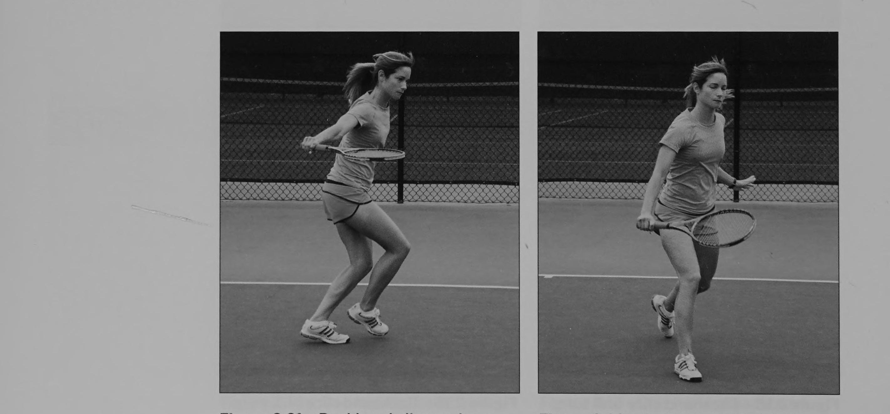
Nơi Cú đánh này được đánh sâu trong sân đến bất kỳ vị trí nào giữa đường giao bóng và vạch cuối sân. Người chơi nên đặt mục tiêu đặt cú đánh cách con hẻm 2 feet (0,6 m) đối với người chiến thắng và cách con hẻm 2 đến 4 feet (0,6 đến 1,3 m) khi thay đổi mô hình. Cú đánh này phải từ vị trí nằm giữa dấu thăng ở giữa và con hẻm cho đến gần như trong con hẻm. Cú đánh trái tay từ đường biên sẽ phải đặc biệt để phục hồi kịp thời cho quả bóng tiếp theo.
Khi nào Cú đánh sức mạnh này nên được thực hiện khi người chơi đang ở vị trí thuận lợi và cố gắng đánh cú ghi điểm trực tiếp hoặc khiến đối thủ tiếp tục chạy. Đó cũng là một cách hiệu quả để thay đổi hướng của quả bóng đang tới hoặc phá vỡ hoặc thay đổi nhịp của điểm; nói cách khác, người chơi đánh xuống đường để đối phương đánh chéo sân về phía người chơi tốt hơn. Sự thành công của cú đánh này liên quan trực tiếp đến vị trí của người chơi và thời điểm của điểm tiếp xúc (muộn hơn một chút so với cú công bóng chéo sân), vì vậy điều quan trọng là phải ở đúng vị trí cho cú đánh đó.
Crosscourt trái tay có góc ngắn
Jo Wilfried Tsonga sử dụng hiệu quả kiểu đánh bằng một tay này. Mục tiêu của anh ta là kéo người chơi ra khỏi vị trí ở phía trái tay để anh ta có thể làm được nhiều hơn với cú thuận tay, vũ khí của mình. Andy Murray sử dụng phiên bản thuận tay một cách hiệu quả; anh ta sử dụng tốc độ của mình xung quanh sân để tìm kiếm cơ hội được trao cho mình trong cú đánh này.
Themaingrip cho cú đánh này là cách cầm vợt trái tay thông thường của người chơi. Cú đánh này thường được thực hiện với tư thế mở. Người chơi có thể thực hiện cú đánh này sớm hơn nếu cố gắng tung cú đánh chéo sân hoặc muộn hơn một chút để vào vị trí chịu tải hơn và đánh với nhiều xoáy lên hơn.
Cú đánh bằng hai tay Cú đánh trái tay góc ngắn, bằng hai tay sẽ được thực hiện với một điểm tiếp xúc trong các khu vực đánh ở mức độ thấp hoặc trung bình. Góc của đầu vợt hơi hướng về phía bên ngoài của cú đánh và được quyết định bởi cú búng tay. Người chơi dang rộng cánh tay ra ngoài — nhưng không xa như cú đánh chéo sân — và lăn qua cổ tay theo kiểu nhanh hơn để đưa bóng đi qua lưới rồi lao xuống.
Cú đánh một tay Cách thực hiện của phiên bản một tay cũng tương tự như phiên bản hai tay, nhưng người chơi cần có cổ tay khỏe và linh hoạt để thực hiện cú đánh này. Cú đánh sử dụng bất kỳ điểm tiếp xúc nào và nó được đánh ở vùng tấn công từ cấp trung bình đến cấp thấp hơn. Mặc dù người chơi có thể đánh thành công phiên bản bằng hai tay của cú đánh này từ một vị trí xấu, nhưng phiên bản một tay phải được đánh ở vị trí tối ưu và có kỹ năng tuyệt vời. Người chơi vươn người ra ngoài và cú búng cổ tay chỉ ra điểm rơi sau khi qua lưới.
Nơi Người chơi nên nhắm đến đường giao bóng chéo về phía con hẻm. Mục đích là để bóng bật ra khỏi đối phương hoặc qua ngõ và ra khỏi sân, khiến đối phương phải bỏ chạy hoặc thực hiện cú đánh phòng thủ. Mục tiêu này được thực hiện nhờ nhiều xoáy lên và khả năng tăng tốc tuyệt vời của đầu vợt. Để thực hiện cú đánh góc này, vị trí của người chơi trên sân phải ở giữa điểm băm ở giữa và con hẻm hoặc xa hơn về phía con hẻm.
Khi cú đánh này được sử dụng để kéo đối thủ ra khỏi sân và dẫn đầu cho các cú đánh khác. Nó thách thức khả năng chạy và đánh của đối thủ khi mất thăng bằng. Nó còn thách thức tầm nhìn của đối phương vì bóng phải được đánh ở gần trong ngõ hoặc ngoài ngõ. Cơ hội tốt nhất để người chơi thực hiện một cú đánh chéo góc góc ngắn là để đáp lại cú đánh góc ngắn của đối phương. Một cú đánh trái tay góc ngắn khác được tạo ra từ một đường bóng ngắn hoặc yếu hơn. Cầu thủ di chuyển mạnh mẽ và lấy bóng nhiều hơn ở điểm tiếp xúc tấn công và thực hiện một cú sút góc khác.
Góc ngắn hơn với điểm tiếp xúc hoặc điểm tiếp xúc phòng thủ được sử dụng để phản công và tạo ra góc lớn hơn từ đối thủ. Cú đánh góc ngắn hơn từ điểm tiếp xúc tấn công được sử dụng một cách chiến lược để đánh nhầm chân hoặc khiến đối thủ rơi vào thế phòng thủ. Cả hai cú đánh đều hiệu quả và nếu sử dụng đúng cách có thể khiến đối thủ thực sự đau đầu, giúp người chơi thực hiện quả bóng tiếp theo dễ dàng.
Lát trái tay tấn công
Samantha Stosur sử dụng cú đánh này một cách hiệu quả. Cô ấy sử dụng cú đánh trái tay của mình để bổ sung cho cú giao bóng tốt của mình. Kết hợp sự đa dạng với cú đánh (đá giao bóng) đẩy đối thủ lùi lại sân, cô ấy có thể sử dụng cú cắt trái tay (bóng thấp). Chiến thuật này là một cách tuyệt vời để gây nhầm lẫn cho đối thủ.
Cú đánh này được đánh bằng một tay như thế nào. Cánh tay duỗi ra từ vị trí hơi cao xuống thấp. Cách cầm vợt tốt nhất cho cú đánh trái tay tấn công là kiểu cầm thuận tay kiểu lục địa hoặc hơi kiểu Eastern. Cú đánh này nên được thực hiện với tư thế đóng hoặc tư thế hơi mở. Người chơi cũng có thể trượt vào cú đánh này một cách thăng bằng. Một cú đánh trái tay tấn công được thiết kế ở mức thấp và cần nhiều lực. Người chơi nên sử dụng điểm tiếp xúc tấn công và di chuyển qua bóng mạnh mẽ hơn bằng bước carioca. Vùng tấn công chủ yếu nằm ở vùng tấn công ở mức trung bình và đường đi của vợt thẳng hơn và trực tiếp hơn qua bóng. Lát tấn công có độ xoáy thấp hơn một chút so với phiên bản phòng thủ. Vị trí Cú đánh này được thực hiện từ bất kỳ vị trí nào trong sân từ dấu thăng ở giữa đến con hẻm. Người chơi có thể thực hiện cú đánh này theo hướng chéo sân để giữ cho đối thủ không có được vị trí thuận lợi trong việc thực hiện cú đánh (một hình thức phòng thủ) hoặc đánh nó xuống đường biên để khiến đối thủ phải chạy hoặc thay đổi kiểu đánh cho phù hợp hơn với người chơi. Người chơi có thể cố gắng đưa bóng tiếp đất sâu trong sân để đẩy đối phương lùi lại phần sân, hoặc thấp hơn một chút và chéo sân ngắn hơn nếu người chơi không tiến về phía trước tốt hơn. Người chơi nên đánh phiên bản tuyến dưới ở mức thấp, nhưng mang theo một chút để người chơi có thể phục hồi cho một cú đánh quyết liệt hơn. Cú đánh tấn công này có thể được đánh về phía đường biên; phiên bản phòng thủ có thể được đánh xa hơn về phía giữa sân (giữa khu vực và trung tâm). Khi cú đánh trái tay tấn công là một cú đánh rất hiệu quả. nó thực hiện một đường bóng thấp có thể thay đổi nhịp điệu của đối phương, khiến đối phương rơi vào thế phòng thủ hoặc gây mệt mỏi hoặc mắc lỗi. Một cú đánh ở mức thấp sẽ có giá trị vì đối thủ có thể không thích đánh những quả bóng thấp. Điều này có thể là do đối thủ di chuyển không tốt, có tầm vóc to lớn và gặp khó khăn khi xuống đủ thấp hoặc có cách cầm vợt quá mạnh khiến cú đánh đó không được hiệu quả. Hầu hết các cú đánh tấn công đều được thực hiện bằng xoáy lên, vì vậy một cú cắt tấn công có thể khiến đối thủ thất vọng. Nó có thể khiến đối thủ cố gắng thay đổi nhiều kiểu đánh khác nhau. Những thay đổi bất ngờ này đôi khi có thể tạo nên sự khác biệt trong việc đạt được sự tấn công.
Những cú đánh trái tay phòng thủ
Người chơi buộc phải sử dụng trái tay phòng thủ khi điểm tiếp xúc của họ đến muộn hoặc khi họ không phục hồi đúng cách sau một cú đánh. Những cú đánh trái tay phòng thủ cũng được thiết kế để làm xáo trộn nhịp điệu của đối thủ hoặc giúp người chơi thoát khỏi rắc rối và hồi phục cho cú đánh tiếp theo. Việc thực hiện đúng các cú đánh này sẽ quyết định liệu người chơi có tiếp tục phòng thủ hay có thể chuyển sang vị trí tấn công hơn. Về mặt chiến lược, người chơi có thể đánh trái tay phòng thủ ở một vị trí khiến đối thủ phải đáp trả bằng một cú đánh vào sức mạnh của người chơi, chẳng hạn như cú thuận tay của người chơi.
Lát trái tay phòng thủ
Fernando Verdasco sử dụng cú cắt trái tay phòng thủ để thoát khỏi rắc rối và giữ bóng ở mức thấp, giúp anh có thêm thời gian để phục hồi và chuẩn bị cho cú thuận tay.
Cách thức Cú đánh bằng một tay này sử dụng tư thế đóng, nhưng nếu người chơi thực hiện muộn hoặc nếu đó là phong cách ưa thích của người chơi thì tư thế cởi mở hơn có thể hoạt động thành công. Sử dụng cách cầm vợt thuận tay kiểu Lục địa hoặc hơi Đông, người chơi nhận bóng phía sau chân sau ở điểm tiếp xúc phòng thủ; người chơi thường đang chạy hoặc di chuyển lùi. Bóng được gặp ở khu vực tấn công từ trung bình đến thấp hơn. Góc của mặt vợt tương tự như góc của cú đánh trái tay tấn công, nhưng điểm nhấn lớn hơn là giữ cho cơ thể thăng bằng trong cú đánh. Để giữ bóng ở mức thấp, người chơi phải đưa bóng qua bóng bằng động tác cắt theo kiểu từ cao xuống thấp. Người chơi có thể hình dung lát cắt được thực hiện trên một tấm kính nằm ngang: cắt quá thấp và kính sẽ vỡ, kéo dài qua và kính vẫn nguyên vẹn. Kỹ thuật này khác với cú đánh trái tay tấn công vì cú đánh sau thường được đánh khi người chơi tiến về phía trước để tấn công. Khi thực hiện lát cắt phòng thủ, người chơi chỉ cố gắng giữ nó ở mức thấp và thoát khỏi rắc rối. Bước carioca không được phép sử dụng trong lát cắt trái tay phòng thủ. Thông thường, người chơi đang chạy và không thể đưa chân sau ra xung quanh khi tiếp xúc. Trường hợp Cú đánh này được đánh ở bất kỳ vị trí nào trên sân, nhưng tốt nhất là về phía yếu hơn của đối phương hoặc theo góc xa đối phương. Khi cú đánh này được thực hiện khi người chơi đang chạy chết, người chơi đang bị kéo ra khỏi vị trí hoặc cú đánh trái tay hung hãn của người chơi không mạnh. Khi một người chơi rơi vào tình thế bế tắc, đôi khi cơ hội duy nhất để giữ vững vị trí là đánh một lát cắt phòng thủ. Người chơi cố gắng gây bất ngờ cho đối thủ khi phạm lỗi bằng tốc độ, sự bền bỉ hoặc một cú sút khó tin. Cú đánh này cũng có thể được sử dụng để trộn lẫn mọi thứ và khiến đối thủ phải cố gắng hơn một chút bằng cách giữ cú đánh ở mức thấp.
Quả cầu mặt trăng trái tay
Cú đánh này không được sử dụng thường xuyên trong các trận đấu chuyên nghiệp trừ khi người chơi hoàn toàn mất vị trí và chỉ cố gắng có đủ thời gian để phục hồi cho cú đánh trên cao chắc chắn sẽ đến ở quả bóng tiếp theo. Cú đánh này hiệu quả hơn nhiều trong các trận đấu liên đoàn khi việc thực hiện cú đánh thất thường hoặc không mạnh bằng. Khi chơi với những cú đánh từ trên cao không tốt, cú trái tay bóng mặt trăng có thể được sử dụng để tấn công. Cách thức Cú đánh này thường được đánh bằng một tay vì người chơi đang ở thế phòng thủ và không có tầm với bằng tay kia. Vì lý do này, người chơi nên học phiên bản một tay. Đối với phiên bản hai tay, người chơi duỗi tay ra xa nhất có thể và sử dụng cú đẩy. Độ bám của cú đánh này phụ thuộc vào vị trí của sân. Trên đường chạy, người chơi có thể thực hiện cú đánh này chỉ bằng cách cầm vợt kiểu Continental. Nếu không, người chơi có thể sử dụng cách cầm vợt thông thường của mình. Lập trường thường cởi mở và đang chạy trốn. Mục tiêu là tung cú đánh này lên cao để hồi phục nhanh chóng. Mặt vợt phải mở. Điểm tiếp xúc của cú đánh này là phòng thủ và bóng được đánh vào khu vực tấn công ở tầm thấp hơn.
Nơi Người chơi có thể thực hiện cú đánh này từ bất kỳ đâu trong sân để tiếp tục cuộc đánh. Vị trí tốt nhất có thể của bạn là ở giữa để không tạo ra góc nào.
Khi Đây là một cú đánh phòng thủ nhưng nó có thể gây khó khăn cho một số đối thủ. Cú đánh được đánh lên cao khi người chơi đang chạy chết và hoàn toàn mất vị trí trên sân. Mục tiêu là để người chơi quay trở lại sân và cố gắng giữ vững vị trí. Cú đánh này có thể gây khó khăn cho đối thủ thiếu kiên nhẫn và có thể nản lòng khi phải đánh thêm một quả bóng nữa, đối thủ không thành thạo trong việc lấy bóng từ trên không và tấn công, hoặc đối thủ không thích bóng cao và phải di chuyển trở lại sân để thực hiện cú đánh. Sự khác biệt giữa cú đánh này và cú lốp bóng là ở chỗ cú đánh này được thực hiện cao hơn và ít gây khó chịu hơn.
ol a eS a ee Lê tôi ôi như! ee) te i ‘ Tae tt | 2.) Mico 4 gal betas tre
" 7 j hy claret Tail ‘ ix fe aa Whit Mier,
tar “ign ia igen Pk peel a
7) 0 DE ieee J) 2 ory ead ott Gre OP aia
aoe reno hem adler a.
B T A GEL
a t T _ anh ấy kiểm soát bóng của một cú đánh thuận tay hoặc trái tay hiệu quả là khả năng tăng tốc (đối với lực và tấn công), độ chính xác (để kiểm soát các cú đánh), tính nhất quán (để thực hiện các cú đánh liên tục) và sự đa dạng (đối với khả năng đánh các loại cú đánh khác nhau, bao gồm cả các cú đánh phòng thủ). Để đạt được những phẩm chất này, người chơi nên tập trung vào những điều cơ bản. Các nguyên tắc cơ bản bao gồm tập trung vào chuyển động và giữ thăng bằng khi người chơi đánh bóng, được đề cập trong chương 1 và 2. Chương này giúp người chơi biến tốc độ, độ chính xác, tính nhất quán và sự đa dạng trở thành một phần không thể thiếu trong trò chơi của họ và giúp người chơi tối đa hóa hiệu quả của cú thuận tay và trái tay. Những phẩm chất của những cú thuận tay và trái tay hiệu quả sẽ được thảo luận tiếp theo. * Tăng tốc. Tăng tốc là cách người chơi tạo ra tốc độ và động lượng của đầu vợt thông qua các cú đánh—sử dụng chân và duỗi tay thuận trước và sau khi tiếp xúc cũng như thông qua các cú đánh theo sau. Khả năng tăng tốc sẽ tăng thêm sức mạnh và độ xoáy cho các cú đánh của người chơi. Ví dụ: một người chơi đánh một quả bóng có xoáy lên và nó bật ra khỏi vùng tấn công của đối phương, khiến đối phương mất thăng bằng; bây giờ người chơi có thể chơi phong cách ưa thích dễ dàng hơn. Những cú đánh tiếp đất ngày nay được thiết kế để tăng sức mạnh và để đánh đối thủ ra khỏi sân. Việc một tay vợt đánh bóng tốt như thế nào có thể liên quan trực tiếp đến việc cuối cùng tay vợt đó chơi tốt như thế nào, vì vậy những cú đánh với tốc độ tốt là một mục tiêu quan trọng. Việc tăng tốc đầu vợt giúp người chơi tạo ra cú đánh vừa mượt mà, vừa mạnh mẽ, vừa có lực đánh áp đảo. Sự chính xác. Độ chính xác của cú đánh liên quan trực tiếp đến cấp độ kỹ năng. Khả năng đặt bóng đến nơi nó dự định sẽ đến mang lại cho người chơi sự tự tin và khiến họ khác biệt với các đồng nghiệp của mình. Để đạt được điều khiển cú đánh này cần có kỹ năng và kỹ thuật tuyệt vời, và điều đó là vô giá đối với những người chơi phát triển phong cách của riêng mình. Người chơi cần có tầm nhìn tốt về cách họ nên chơi (phong cách chơi của riêng mình) để tiến lên các cấp độ chơi cao hơn. Khi người chơi bắt đầu suy nghĩ một cách chiến lược hơn về những cú đánh họ sẽ cần theo phong cách đó, độ chính xác của họ càng trở nên quan trọng hơn. Biết cách thức và thời điểm thực hiện những cú đánh sâu trong sân, những cú đánh có góc ngắn hơn hoặc sâu hơn và những cú đánh ngắn phù hợp với phong cách chơi của người chơi sẽ mang lại cho người chơi một lợi thế rất lớn. Đó cũng là sự khác biệt giữa việc thực hiện một cú đánh tấn công để kết thúc một điểm một cách hiệu quả và thực hiện một cú đánh phòng thủ chỉ giúp duy trì một cuộc giao tranh. Mọi người chơi quần vợt nên suy nghĩ cẩn thận đến từng chi tiết. Tính nhất quán. Tính nhất quán và độ chính xác đi đôi với nhau. Một người chơi kiên định có thể thực hiện các cú sút chính xác vào đúng vị trí dự định và có thể dựa vào những cú đánh đó trong suốt thời gian của trận đấu. Một người chơi ổn định có thể luân phiên là một người mài bóng, có nghĩa là người chơi nhận được nhiều bóng khi chơi, cũng như một người chơi có phong độ cao ngày này qua ngày khác. Tính nhất quán là hình mẫu cho mọi người chơi quần vợt. Khi người chơi phát huy điểm mạnh và khắc phục điểm yếu, tính nhất quán sẽ phát triển. Các huấn luyện viên giỏi cố gắng phát triển kỹ năng của tay vợt trước tiên, sau đó giúp họ trở nên kiên định hơn với kỹ năng mới đó. Một kế hoạch phát triển dài hạn và nhất quán sẽ mang lại sự tiến bộ trong suốt sự nghiệp của tay vợt. Đa dạng. Điều quan trọng là người chơi phải phát triển vũ khí, chẳng hạn như thuận tay hoặc trái tay, đồng thời thêm sự đa dạng vào trò chơi của họ. Khi người chơi sở hữu những cú tấn công và phòng thủ tốt, sự đa dạng có thể trở thành vũ khí. Một cú thuận tay có thể áp đảo đối thủ hoặc cắt trái tay có thể đóng vai trò là một cú đánh phòng thủ là những ví dụ điển hình về mức độ đa dạng có thể là một công cụ có giá trị, thậm chí là một vũ khí. Người chơi phải học các cú đánh liên quan đến phong cách chơi ưa thích của họ. Sau đó, khi lối chơi được cải thiện, họ có thể thêm nhiều cú đánh khác nhau để nâng cao phong cách đó. Sự đa dạng trong việc lựa chọn cú đánh có thể che giấu điểm yếu, làm mất nhịp điệu của đối thủ và ảnh hưởng đến sự tự tin của cả người chơi và đối thủ. Hãy hình dung một đối thủ không biết điều gì sẽ xảy ra tiếp theo và đang gặp khó khăn vì người chơi có nhiều cú đánh khác nhau. Có thể thực hiện một cú lốp bóng tốt khi có cơ hội
Chương 3
Bài tập thuận tay và trái tay
Luyện tập với bảng dội bóng
Nhiều bài tập trong chương này cung cấp một biến thể solo có thể được thực hành trên bảng sau. Chiến lược này hữu ích cho những người chơi không có bạn tập hoặc huấn luyện viên. Nó cũng tốt cho những người chơi muốn tự mình luyện tập thêm. Bảng rổ là một công cụ tuyệt vời để phát triển cú đánh vì bóng luôn quay trở lại phía người chơi, giúp thiết lập nhịp điệu từ quả bóng vừa chạm vào bảng rổ. Sau đây là những lời khuyên để bài tập ván sau thành công. - Xác định mục tiêu. Để bắt đầu, người chơi đứng cách tường 12 feet (3,7 m) và nhắm vào giữa bảng sau ở khu vực phía trên đường lưới (nếu tường có đường lưới và khu vực mục tiêu được sơn trên đó). Nếu không có đường hoặc mục tiêu nào tồn tại, người chơi có thể hình dung chúng. Di chuyển tiến và lùi trong khu vực này mang lại cho người chơi những bước nảy khác nhau và những quỹ đạo khác nhau, vì vậy người chơi phải được thử thách rèn luyện kỹ thuật ở những khu vực khác nhau. - Xác định quỹ đạo. Để bắt đầu, người chơi nên sử dụng những cú đánh cao hơn, nặng hơn, có quỹ đạo cao để tạo độ cao cho bóng. Tập trung vào việc tải bên dưới cú đánh và tạo ra độ xoáy lên để tạo độ cao thích hợp cho bóng. Bóng phẳng hơn sẽ tạo ra độ nảy với góc loft ít hơn, khiến người chơi phải di chuyển nhiều hơn. Một quả bóng đập phẳng vào bảng sau sẽ trở lại phẳng và nhanh, vì vậy người chơi nên sử dụng những quả bóng phẳng hơn với độ sâu lớn hơn khi họ thực hành các bài tập tạo rãnh ở sân sau. - Sử dụng sự lặp lại Một cách hiệu quả để thực hành các bài tập tạo rãnh trên bảng sau là tập trung vào một số lần lặp lại nhất định (ví dụ: 10, 20, 30, 100) ở phía thuận tay hoặc phía trái tay. Kiểu luyện tập lặp đi lặp lại này tạo tiền đề cho việc phát triển tính nhất quán (đánh sau cú đánh), tăng tốc (đánh theo độ xoáy và quỹ đạo), độ chính xác (vị trí của cú đánh mang lại độ nảy cao hơn để duy trì sự lặp lại) và sự đa dạng của các cú đánh (lát, cú đánh phẳng).
khoảnh khắc và khả năng tung ra một đòn khiến đối thủ bối rối là những công cụ mạnh mẽ. Sự đa dạng trong các cú đánh cũng rất hữu ích cho việc phục hồi khi trở lại sân đấu. Người chơi nên đánh trước các cú đánh để giúp hồi phục nhanh chóng và cho phép họ chơi tích cực hơn. Khi người chơi tiến bộ, họ nên làm việc hàng ngày về khả năng tăng tốc, tính nhất quán, độ chính xác và sự đa dạng. Các bài tập trong chương này giúp người chơi tập trung vào những cách cụ thể để cải thiện những kỹ năng này. Một tay vợt hoàn chỉnh tập trung vào việc cải thiện điểm yếu nhưng cũng nỗ lực hoàn thiện điểm mạnh. Ghi nhận điểm mạnh và điểm yếu của người chơi về các kỹ năng này trong quá trình luyện tập là một cách tốt để phát triển thói quen làm việc hiệu quả. Cuối cùng, người chơi nên kết hợp các mục tiêu luyện tập vào kế hoạch trò chơi. (Xem chương 10 để biết thêm về kế hoạch trò chơi.) Tiến trình sau đây của các bài tập diễn ra thông qua các đặc điểm đã được xác định để có một cú đột phá tuyệt vời. Các bài tập bắt đầu từ cơ bản và tiến bộ đến nâng cao. Đầu tiên, họ làm việc dựa trên sự nhất quán của các kỹ thuật cốt lõi và sau đó mở rộng khu vực chơi bằng chuyển động, tốc độ và độ sâu của cú đánh. Họ tiến tới các bài tập để học và tinh chỉnh các cú đánh khác nhau và cuối cùng là các bài tập bắt chước lối chơi trận đấu. Để trở thành người chơi giỏi nhất có thể, người chơi bắt buộc phải học tất cả các kỹ thuật và phong cách đánh phù hợp theo trình độ tiến bộ. 1. Các bài tập luyện rãnh để làm nóng và thấm nhuần các kỹ thuật cốt lõi cơ bản 2. Các bài tập chuyển động để tập động tác chân và giữ thăng bằng
3. Các bài tập tăng tốc nhằm thực hiện cú đánh xuyên qua khu vực để tăng độ xoáy và sức mạnh 4. Các bài tập đánh bóng cụ thể nhằm đạt được tính nhất quán, chính xác và đa dạng
5. Luyện tập bóng trực tiếp để rèn luyện kỹ năng nhận biết cú đánh và thi đấu trận đấu
bài tập RÃNH
Mục tiêu của các bài tập tạo rãnh là luyện tập những điều cơ bản của trò chơi và chuẩn bị cho việc luyện tập phức tạp và cường độ cao hơn. Những bài tập đối tác này có hiệu quả cho cả cú thuận tay và cú trái tay và có thể được thực hành theo hai cách:
1. Sân ngắn. Những bài tập này là để chuẩn bị và thực hiện. 2. Sân sau. Những bài tập này dành cho kỹ thuật và chuyển động tổng thể. Ngoài ra, bảng sau có thể được sử dụng để tạo rãnh, như được hướng dẫn trong các biến thể solo của các bài tập sau. Các bài tập sân ngắn và sân sau thẳng về phía trước là tốt nhất để bài tập ván sau vì lực nảy ra khỏi ván thẳng về phía sau thay vì góc cạnh, cho phép tạo rãnh dễ dàng hơn. Việc sử dụng tấm ván sau để tập luyện chéo sân chủ yếu dành cho những người chơi có trình độ cao hơn và để luyện tập tốc độ, chuyển động và những cú đánh liều lĩnh. Do quỹ đạo thấp của cú đánh ngang sân phẳng, độ nảy từ tường thấp hơn và nghiêng ra ngoài, đòi hỏi phải dồn sức cho cú đánh tiếp theo. Cú đánh dễ dàng nhất khi thực hiện cú đánh chéo sân là cú đánh cao và nặng. Độ nảy khỏi tường cao hơn và cho phép có nhiều thời gian hơn để phục hồi thích hợp cũng như khả năng tạo rãnh cho cú đánh. Cho dù tập luyện với bảng sau hay với đối tác hoặc huấn luyện viên, điều quan trọng là phải tập trung vào việc chuẩn bị. Một cách để làm như vậy là chơi trò chơi kêu gọi. Kỹ thuật này áp dụng được với bất kỳ mũi bài tập nào trong chương này, nhưng đặc biệt có ích khi thực hành trong các mũi bài tập xẻ rãnh.
TRÒ CHƠI KÊU GỌI
Mục đích: Nhận biết và rèn luyện sự chuẩn bị sớm cho cú đánh chính xác. Quy trình: Người chơi quan sát vợt và cú đánh của đối phương, sau đó thực hiện thuận tay hoặc trái tay càng sớm càng tốt. Người chơi nên cố gắng thực hiện nhanh điều này và nắm bắt các sắc thái trong cú đánh của đối thủ. Người chơi nên để ý xem đối phương nhận bóng sớm hay muộn và xem xét cách cầm bóng của đối phương gợi ý về kiểu chơi của đối thủ. Biến thể: Người chơi thực hiện cú đánh và sau đó giữ nguyên vị trí. Trong khi đứng yên, người chơi nên kiểm tra xem vị trí của mình có chuẩn bị tốt cho quả bóng sắp tới hay không.
Bài tập grooving trên sân ngắn
Rất nhiều tay vợt khởi động bằng các bài tập ngắn trên sân. Kiểu khởi động này được thiết kế để giúp kiểm tra kỹ thuật, làm nóng cơ thể, kiểm tra các cách cầm khác nhau và nói chung là cảm nhận về vợt. Ba bài tập ngắn trên sân có thể giúp bạn điều chỉnh trận đấu. Mũi bài tập đầu tiên được thực hiện thẳng về phía trước, mũi bài tập thứ hai được thực hiện theo đường chéo và mũi bài tập thứ ba là tình huống điểm. Tất cả các bài tập này giúp người chơi chuẩn bị cho việc tập luyện sau này, vì vậy người chơi nên thành thạo những bài tập này trước, sử dụng thuận tay và trái tay như nhau.
TÒA NGẮN PHÍA TRƯỚC
Mục đích: Luyện tập kỹ thuật chuẩn bị và thực hiện. Cách tiến hành: Cả hai đấu thủ đều bắt đầu ở vạch giao cầu. Giữ bóng bên trong ô giao bóng, họ tập luyện qua lại nhẹ nhàng, dần dần trở nên quyết liệt hơn tùy theo mức độ hoặc cường độ tập luyện. Người chơi tập trung vào các cách cầm và thế đứng khác nhau để kiểm tra sự đa dạng, bước bước mạnh đầu tiên tới bóng (chân gần bóng nhất trước tiên trong tất cả các cú đánh) và thực hiện cú đánh đúng cách. Trọng tâm ở đây là kỹ thuật chứ không phải sức mạnh. Điểm huấn luyện: Người chơi nên tập trung vào một thành phần kỹ thuật tại một thời điểm, bắt đầu bằng cách cầm vợt, sau đó là chuyển động và tư thế, và cuối cùng là kỹ thuật mong muốn cho các giai đoạn khác nhau của cú vung (chuẩn bị, vung về phía trước và tiếp xúc, và tiếp theo). Biến thể đơn lẻ: Luyện tập bài tập này trên bảng sau là một công cụ tuyệt vời để khởi động. Người chơi đứng cách khoảng 5 feet (1,5 m) và lúc đầu đánh bóng nhẹ nhàng với quỹ đạo cao để thiết lập nhịp điệu và rèn luyện kỹ thuật. Khi khởi động, người chơi lùi lại 2 feet (0,6 m) mỗi lần và bắt đầu thực hiện cú đánh, tiến tới một cú đánh tiếp đất bình thường. Người chơi tiếp tục di chuyển về phía sau tối đa 10 feet (3 m), tạo ra bóng nảy sâu hơn. Người chơi tăng tốc lớn hơn từ vị trí sâu bằng cách đánh quả bóng này mạnh hơn. Đứng gần hơn 10 feet (3 m) và đánh bóng mạnh hơn sẽ tạo ra cú đánh nhanh hơn và buộc người chơi phải chuẩn bị và tăng tốc nhanh hơn.
SÂN NGẮN CHÉO
Mục đích: Để thực hành kỹ thuật chuẩn bị và thực hiện cũng như chuyển động, tăng tốc và độ chính xác của vị trí. Quy trình: Bài tập cũng giống như bài tập Sân ngắn thẳng tiến, ngoại trừ các đấu thủ đánh chéo sân. Họ phải đảm bảo bóng rơi ở phía trước vạch giao bóng. Người chơi nên huấn luyện điểm: Trong bài tập này, người chơi cố gắng tiếp xúc trong khi đánh bóng và đảm bảo xếp hàng bên ngoài bóng. Cuộc đánh bóng chéo sân này tập trung vào độ chính xác, khả năng tăng tốc cũng như tải trọng cần thiết của chân để đánh bóng đến một vị trí cụ thể trong ô giao bóng. gần bóng nhất trước khi đánh con- Biến thể solo: Để thực hiện các cú đánh chéo bàn trên bảng sau, người chơi sử dụng chiến thuật. quỹ đạo cao để có thời gian thực hiện cú đánh và đi vào vị trí mong muốn để đánh chéo bàn. Người chơi đứng cách bảng sau khoảng 6 đến 10 feet (1,8 đến 3 m). Người chơi luân phiên đánh thuận tay và trái tay chéo sân, và bóng sẽ bật ra khỏi tường theo đường thẳng hoặc dọc đường.
TÒA NGẮN CẠNH TRANH
Mục đích: Để tạo ra một tình huống cạnh tranh, thử nghiệm phong trào, chiến lược và thực thi với tốc độ nhanh hơn. Thủ tục: Các đấu thủ thi đấu để giành điểm chỉ sử dụng diện tích sân ngắn. Họ nên sử dụng tính năng tính điểm quần vợt thường xuyên và chơi một hiệp hoặc các điểm đến 11, 15 hoặc 21. Điểm huấn luyện: Việc sử dụng và che cả hai ô nhấn mạnh phiên bản tăng tốc của các pha đánh bóng ở sân sau thông thường, vì vậy đây là thời điểm hoàn hảo để kiểm tra và thực hành các chiến lược. Để thành công trong bài tập này, cần có chiến lược, di chuyển, chạm bóng tốt và khả năng xoay hoặc tạo hình bóng. Đây là một trò chơi thú vị nhưng đầy thử thách. Người chơi nên tận dụng cơ hội để phát triển khả năng chạm một chút.
Bài tập grooving ở cuối sân
Những bài tập này phổ biến cho hầu hết các bài khởi động. Ngoài việc hỗ trợ các cú đánh theo rãnh, chúng còn giúp phát triển nền tảng cho phong cách chơi của người chơi. Thực hiện các bài tập này với trọng tâm là không bỏ lỡ cú đánh, hồi phục đúng cách vào đúng vị trí cho mỗi quả bóng sẽ giúp người chơi tập trung và cường độ cao hơn.
SÂN SAU TUYỆT VỜI | Se
Mục đích: Kéo dài cú đánh và tăng thêm sức mạnh. Quy trình: Các đấu thủ tập trung từ đường cuối sân hoặc di chuyển dần dần về sân sau bằng cách lùi lại từng bước. Họ đánh vào giữa và tập trung vào kỹ thuật và chuyển động hoàn hảo đồng thời tăng thêm độ dài cho cú đánh. Người chơi nên chú ý đến việc thực hiện và độ dài của cú đánh, đồng thời thử nghiệm cách đánh phẳng hơn và tăng thêm độ xoáy để có được độ sâu mong muốn. Điểm huấn luyện: Người chơi có thể cải thiện sự tập trung của mình bằng cách tập trung vào quả bóng và cố gắng không rời khỏi vị trí trong bất kỳ cú đánh nào. Họ nên tập trung trong một khoảng thời gian cố định và nhận biết khi nào tình trạng mệt mỏi hoặc mất tập trung xảy ra. Việc xác định thời gian người chơi có thể tập trung cho phép tăng dần khả năng này một cách dần dần và có hệ thống trong thời gian dài hơn. Biến thể solo: Người chơi đứng cách bảng 15 feet (4,6 m) và đánh những quả bóng phẳng để thực hiện chuyển động về phía trước và những cú đánh cao, cao để thực hiện chuyển động lùi. Lượng chuyển động tiến và lùi phụ thuộc vào tốc độ của cú đánh, vì vậy người chơi nên sử dụng nhiều tốc độ khác nhau để thực hiện các lượng chuyển động khác nhau. Nếu một người chơi không thể duy trì một pha bóng bằng cách sử dụng các cú đánh phẳng hơn, thì các cú đánh có góc loft cao hơn có thể được sử dụng để bắt đầu và sau đó bóng phẳng hơn có thể được kết hợp từ từ.
SÂN ĐƯỜNG SAU
Mục đích: Để kết hợp chuyển động, độ chính xác và: sự đa dạng từ phần sân sau trong khi đánh tới một vị trí cụ thể trên sân. Đối với mỗi cú đánh, Quy trình: Các đấu thủ tập hợp chéo bàn. Họ nên đặt mục tiêu về chiều sâu và khả năng phục hồi của người chơi ở vị trí, tập trung vào việc đánh vào một khu vực cụ thể, chẳng hạn như qua đường giao bóng và trước khi quay lại giữa đường cuối sân, sau đó mở rộng khu vực đánh bằng cách sử dụng các con hẻm. và chuẩn bị cho lần bắn tiếp theo. Điểm huấn luyện: Bài tập này có thể kiểm tra nhiều cú đánh khác nhau vì mỗi người chơi phải Tăng tốc thích ứng với cú đánh của đối phương và phản công bằng cú đánh tốt nhất để tiếp tục vượt qua loạt cú đánh. cung cấp thêm độ sâu và thời gian để phục hồi.
KỸ THUẬT PHÁT HÀNH bài tập
Mục đích: Để thực hiện việc mở rộng nét vẽ. Kỹ thuật này có thể được thực hiện với bất kỳ mũi bài tập rãnh nào ở sân sau. Quy trình: Khi hai người chơi tranh nhau, mỗi người chơi, sau khi tiếp xúc với bóng, thực hành động tác tiếp theo bằng cách thả vợt nhẹ nhàng vào tay kia ở cuối phần kéo dài. Điểm huấn luyện: Ở bên thuận tay, tay không thuận bắt vợt. Người chơi sẽ cảm thấy căng ở phía sau vai trong khi vung lên và ra ngoài, dừng lại một giây ngắn ngủi sau mỗi cú đánh. Tay đối diện phải cầm vợt ở phía trước cơ thể với nắp vợt hướng về phía lưới và người chơi khác (xem hình 3.1). Bài tập này phóng đại phần tiếp theo để giúp làm nổi bật việc sử dụng cánh tay khi duỗi hoàn toàn. Hình 3.1 Vị trí nhả thích hợp.
bài tập CÒNG TAY
Mục đích: Kiểm tra xem có quay quá mức không. Trong quá trình chuẩn bị và vung vợt tiếp theo, một sai lầm phổ biến khi thực hiện động tác backswing là xoay vợt quá mức và đưa vợt về phía sau quá xa. Quy trình: Một phương pháp tuyệt vời để điều chỉnh xu hướng xoay quá mức là người chơi nắm lấy cánh tay cầm vợt ở cẳng tay hoặc cao hơn (giống như đeo còng tay) bằng tay không thuận ở phía thuận tay và giữ vị trí này trong khi chơi. Ở phía trái tay, người chơi đặt ngón trỏ của tay không thuận lên dây vợt khi chuẩn bị đánh bóng bằng một tay. Điều này giúp tăng cường nhận thức cảm giác về vị trí đầu vợt buông ra khi vợt vung về phía trước để gặp bóng. Điều tương tự có thể được thực hiện với cú đánh bằng hai tay, sau đó tay trượt xuống tay cầm.
bài tập CHUYỂN ĐỘNG
Chuyển động là chìa khóa quan trọng để thành công trong môn quần vợt, vì vậy bắt buộc phải đưa các bài tập vận động vào danh sách những việc phải làm khi tập luyện. Hiệu quả trong chuyển động luôn được công nhận là yếu tố cần thiết để đánh được những cú đánh tốt. Những người chơi ưu tú nhất luyện tập các loại bài tập sau đây hàng ngày.
1. Đang tải các bài tập bước. Người chơi thực hành bước vào bóng bằng cách sử dụng thuận tay và trái tay.
2. Bài tập vận động cụ thể. Người chơi thực hành chuyển động thích hợp với bóng và thu hồi thích hợp, cho dù di chuyển sang bên kia hay di chuyển lùi và tiến. Các bài tập nên được thực hành bằng cách sử dụng thuận tay và trái tay. 3. Bài tập vận động phối hợp. Người chơi luyện tập duy trì chuyển động tốt thông qua việc kết hợp các cú đánh thuận tay và trái tay. Tất cả các loại bài tập này giúp nâng cao nhận thức về chuyển động thích hợp trong suốt một điểm hoặc một cú đánh cụ thể. Ngoài ra, mỗi bài tập có nhiều biến thể để làm cho nó trở nên cụ thể cho một cú đánh hoặc một chuyển động và nó có thể được thực hiện kết hợp với các cú đánh khác nhau hoặc các chuyển động khác nhau. Những bài tập này mang tính chất kỹ thuật và vô giá để phát triển và thành công với tư cách là một vận động viên quần vợt, vì vậy người chơi nên cố gắng thành thạo tất cả các bài tập này. Người ta thường thấy khó thành thạo các bài tập nếu các chuyển động khá khác với các kiểu chuyển động đã được thiết lập sẵn của người chơi. Hầu hết người chơi đều không biết về việc sử dụng chuyển động không hiệu quả vì có thể thực hiện cú đánh bất chấp chuyển động xấu. Họ nên thử nghiệm những bài tập này để cải thiện cú đánh bằng cách kết hợp chuyển động hiệu quả. Người chơi có thể thực hiện từng mũi bài tập bằng thuận tay hoặc trái tay.
CÁC BIẾN ĐỔI RIÊNG CHO BƯỚC TẢI VÀ CÁC KHOẢN CHUYỂN ĐỘNG CỤ THỂ
Người chơi cũng có thể sử dụng bảng sau để thực hiện bước tải và các bài tập di chuyển cụ thể. (Đối với các bài tập chuyển động kết hợp, hướng dẫn cụ thể cho các biến thể solo được cung cấp trong mỗi bài tập.) Ban đầu, người chơi có thể thực hành các bài tập bước tải với các cú đánh có nhịp độ chậm hơn trong một khu vực nhỏ hơn của sân ngắn (trong vòng 5 feet, hoặc khoảng 1,6 m), sau đó tăng tốc độ các cú đánh và lùi sâu hơn vào sân (10 đến 15 feet, hoặc khoảng 3 đến 5 m). Người chơi cũng nên thực hành các bài tập di chuyển cụ thể từ vị trí sâu hơn trên sân. Khi khởi động thoải mái cho một trong hai loại bài tập, người chơi có thể bắt đầu đếm số lần lặp lại (10, 20, 30...) để hướng tới một mục tiêu cụ thể.
Bài tập bước lấy đà
Bài tập bước tải trọng rất quan trọng để thực hành đưa chân gần bóng nhất theo đường thẳng và tải trọng để chuyển trọng lượng cơ thể vào cú đánh. Việc kết hợp bước đầu tiên này rất khó- Người chơi sẽ sai sót và làm mất thời gian của người chơi nếu họ làm sai, nhưng người chơi hình dung người ở giữa nên luyện tập và thực hiện cẩn thận động tác đầu tiên này.: mu bàn chân Đối với mỗi bài tập bước tải sau, người chơi bài tập phải ở trên đế - gần đường bóng nhất ở điểm băm ở giữa và đồng đội hoặc huấn luyện viên phải ở giữa bước tiếp bóng. sân ở vạch giao bóng hoặc vài feet (0,6 m) về phía đường cuối sân. Đối tác hoặc đường dẫn của huấn luyện viên đưa bóng bằng cách ném chúng như những quả bóng tập trung, sử dụng tốc độ và quỹ đạo tương tự của quả bóng đang tới. cho mỗi quả bóng. Đối với những người chơi có trình độ cao hơn, nguồn cấp vợt có thể hoạt động tốt hơn. Tốc độ của các đường dẫn phải có đủ thời gian để người chơi bài tập phục hồi trở lại vị trí ban đầu trước khi nhận bóng tiếp theo. Người chơi bài tập nên kết hợp bước tách trước khi đối tác đưa bóng tiếp theo.
TÌNH TRẠNG MỞ VÀ ĐÓNG XEN KỲ
Mục đích: Để đạt được sự chuyển giao hoàn toàn trọng lượng và sức mạnh khi đánh các cú đánh ở tư thế mở và đóng. Quy trình: Huấn luyện viên hoặc đối tác đánh vô-lê với độ khó khác nhau, yêu cầu người chơi chỉ thực hiện một hoặc hai bước chuyển động sang ngang hoặc tiến về phía trước để tiếp cận bóng. Để thực hành động tác đánh nền thế khép kín, người chơi cần hai đấu thủ bước trước: một bước ra để đặt chân gần bóng nhất và sau đó bước về phía trước, bước thuần thục về phía bóng tới để chuyển trọng lượng từ vị trí xếp hàng. Để thực hành bước xa từ bước đầu tiên và tư thế mở, người chơi chỉ bước một bước với đường đi gần bóng nhất của chân đến bóng và tải chân đó, đánh từ tư thế mở. Bước đầu tiên chỉ nên đánh nên cố gắng bước mạnh mẽ nhưng thoải mái – người chơi nên nhớ hình dung việc phải giữ thăng bằng để bóng chạm vào giữa mu bàn chân bước ra. chân còn dài hơn mới xong Điểm huấn luyện: Cầu thủ nên dồn toàn bộ trọng lượng lên chân xếp trên bóng. đánh vào. Điều này Để kiểm tra vị trí và độ cân bằng của trọng lượng, người chơi có thể xếp hàng trên quả bóng đang tới nếu cần sử dụng tốt và sau đó, ngay trước khi tiếp xúc, nhấc chân kia (phía trước). Người chơi nên giữ sức mạnh cốt lõi của chân lên trong một lần đếm trước khi đặt chân xuống. Việc không thể giữ chân và thân xoay lên cho thấy sự mất cân bằng. Một tay vợt chủ yếu sử dụng chân trước sẽ cảm thấy như bị tấn công. mặc dù chân sau yếu trong bài tập này nhưng việc tiếp tục luyện tập sẽ giúp cải thiện khả năng giữ thăng bằng.
BƯỚC TẢI TRỞ LẠI
Mục đích: Để đạt được sự chuyển giao toàn bộ trọng lượng và sức mạnh khi bước lùi lại để đánh trả quả bóng đã đánh sâu. Cách thức thực hiện: Nước đi đầu tiên là lùi về phía sau theo đường chéo với chân mà đấu thủ đang cố gắng xếp theo đường bóng. Bước đi chắc chắn và nhấn mạnh vào tải trọng ở chân. Huấn luyện viên hoặc đối tác phải đưa bóng cao và sâu để buộc bước lùi. Người trung chuyển phải ném (hoặc đánh, nếu cần) ở các tốc độ khác nhau để kết hợp tất cả các cú đánh có thể có trong một trận đấu và nhắm mục tiêu vào khu vực tấn công cấp cao hơn của người chơi. Điểm huấn luyện: Người chơi có thể kiểm tra tải trọng và giữ thăng bằng bằng cách nhấc chân trước lên để đảm bảo trọng lượng được chuyển hoàn toàn về phía sau trước khi tiến về phía trước để đánh bóng.
Bài tập di chuyển chuyên biệt
Các bài tập về chuyển động cụ thể được thiết kế để dạy cho người chơi chính xác các bước cần thực hiện để thực hiện một cú đánh. Việc di chuyển đến bóng sẽ ảnh hưởng chính xác đến tốc độ xung quanh sân và khả năng phục hồi sau đó để có được vị trí tốt cho cú đánh tiếp theo. Mục tiêu là thực hiện hiệu quả mọi chuyển động và chạy một cách cân bằng. Đối với các bài tập chuyển động cụ thể, vận động viên luyện tập phải được bố trí trên đường cuối sân ở điểm trung tâm và đối tác hoặc huấn luyện viên phải ở giữa sân ở vạch giao bóng. Đối tác hoặc huấn luyện viên tập tám quả bóng và đưa bóng bằng tay hoặc bằng vợt, tùy thuộc vào trình độ của người chơi. Tốc độ của các nguồn cấp dữ liệu phải có đủ thời gian để người chơi bài tập phục hồi và tách bước ngay trước khi nhận bóng tiếp theo.
CHUYỂN TIẾP TIẾN =“ “như
Mục đích: Để cải thiện động tác bằng chân để đánh bóng bên trong đường cuối sân và về phía đường giao bóng. Quy trình: Đối tác hoặc huấn luyện viên đưa bóng với độ khó khác nhau để người chơi bài tập phải tiến về phía trước nhiều hơn hai bước để đánh bóng. Người chơi nên tung bóng có thể dao động từ ngay trước vạch cuối sân cho đến tận bên trong đường giao bóng tập trung vào việc sử dụng đường. Người chơi bài tập chạy nhanh về phía trước và quay sang một bên vài bước hai quả nổ. trước khi đánh bóng. Người chơi nên tập trung xoay người và lê từng bước về phía trước, chú ý không bắt chéo chân. Sau đó, người chơi đánh bóng và để có được bóng, nhanh chóng thu hồi trở lại vạch cuối sân. nhanh hơn, nhấn mạnh- Biến thể: Đối tác hoặc huấn luyện viên có thể đẩy tay vợt bài tập về phía sau bằng một cú đẩy sâu và sau đó ném một quả bóng gần vạch giao bóng. Người chơi bài tập đánh quả bóng đầu tiên bằng chân sau. chân sau rồi chạy về phía trước và rẽ phải ngay trước khi đánh quả bóng ngắn hơn ra khỏi chân trước.
Mục đích: Để kết hợp chuyển động ngang hiệu quả cần thiết trong tình huống tập hợp và phục hồi hiệu quả. Người chơi có thể Thực hiện: Huấn luyện viên hoặc đồng đội đưa bóng về phía ngõ sao cho đường bài tập vào cơ thể người chơi phải di chuyển sang bên 3 đến 5 feet (0,9 đến 1,5 m) để đánh bóng. Những lần ném bóng về phía sau nên bao gồm những quả bóng hơi chéo về phía trước và phía sau. Khi bắt đầu, - thiết lập | Người chơi bài tập ngay lập tức xoay người bằng chân bên ngoài, di chuyển đầu tiên về phía bước để thực hiện cú đánh. Sau đó, người chơi thực hiện nhiều bước chéo nếu cần trước khi bóng trượt tiếp đất thẳng hàng bằng chân bên ngoài về phía quả bóng đang tới để thực hiện một cú đánh nền ở tư thế mở. Nếu thời gian giữa trận cho phép, người chơi có thể bước vào thực hiện một cú đánh ở thế đóng. mu bàn chân bên ngoài. Điểm huấn luyện: Người chơi nên tập trung vào bước đầu tiên lớn, mạnh mẽ vì nó hiệu quả hơn và tạo sự cân bằng tốt hơn ở cuối cú đánh,.
Mục đích: Để cải thiện động tác lùi cần thiết để đi sau bóng sâu. Quy trình: Huấn luyện viên hoặc đối tác đưa bóng sâu để buộc tay vợt bài tập di chuyển lùi ra ngoài đường biên ngang và thực hiện nhiều bước để đến phía sau bóng. Người chơi bài tập thực hiện một bước lùi lớn đầu tiên và sau đó kết hợp một bước bắt chéo trước khi đặt chân sau, giữ hông hướng về phía trước. Sau đó, người chơi nên xoay hông để chuẩn bị đánh bóng và phục hồi bằng cách đẩy nhanh chân sau về phía trước để di chuyển trở lại sân chuẩn bị cho quả bóng tiếp theo. Điểm huấn luyện: Để ngăn hông xoay, người chơi có thể hình dung một miếng băng trên ngực sẽ vẫn nhìn thấy được cho đến khi xoay hông. Người chơi nên tập trung bước theo hướng chéo về phía sau, sau đó là bước chéo và bước thả khác để tránh xu hướng đến quá gần bóng đang tới và phải thực hiện thêm động tác để điều chỉnh.
Bài tập di chuyển kết hợp
Các bài tập di chuyển kết hợp mô phỏng các tình huống thi đấu thực tế và tối đa hóa chuyển động cho mỗi cú đánh. Vận động viên bài tập được bố trí trên đường cuối sân ở điểm trung tâm, và đối tác hoặc huấn luyện viên được bố trí ở giữa sân tại vạch giao bóng. Tám quả bóng được đưa bằng tay hoặc vợt tùy thuộc vào trình độ của người chơi và tốc độ của các quả bóng phải cho phép có đủ thời gian để hồi phục về trung tâm và chia bước ngay trước khi nhận quả bóng tiếp theo.
CHUYỂN ĐỘNG BÊN BÊN
Mục đích: Để tối đa hóa chuyển động từ bên này sang bên kia và mô phỏng một pha đánh bóng trực tiếp. Quy trình: Huấn luyện viên hoặc đối tác đưa bóng yêu cầu người chơi bài tập phải di chuyển sang một bên 3 feet (0,9 m) trở lên. Các lần tung bóng nên thay đổi mức độ di chuyển sang một bên và nên xen kẽ giữa việc yêu cầu người chơi đánh thuận tay và đánh trái tay. Người chơi đánh bóng theo đường ngang hoặc dọc đường biên, tùy thuộc vào khu vực trọng tâm. Người chơi thực hiện một cú xoay hông nhanh để hồi phục về phía giữa sân bằng cách sử dụng bước bắt chéo và bước tách đôi để chuẩn bị cho quả bóng tiếp theo. Điểm huấn luyện: Người chơi nên bắt đầu xoay hông để phục hồi khi tiếp xúc với bóng và tiếp tục thực hiện động tác này cho đến khi hoàn thành động tác đánh nền. Bằng cách xoay cơ thể đầy đủ hơn, hông và vai hướng vào lưới, giúp người chơi tiết kiệm được nhiều bước hồi phục hơn. Biến thể solo: Người chơi đánh chéo bàn để bóng quay trở lại đường biên ngang. Người chơi bắt đầu cách bảng sau 8 đến 12 feet (2,4 đến 3,6 m) để thực hiện các phạm vi di chuyển nhỏ hơn và tiến tới 15 feet (4,6 m) trở lên để bao phủ một khu vực sân lớn hơn và sử dụng phạm vi kết hợp lớn hơn.
CHUYỂN TIẾN LÙI ĐẾN TIẾN
Mục đích: Để tối đa hóa chuyển động tiến và lùi và mô phỏng một cuộc tập hợp bóng trực tiếp. Quy trình: Bắt đầu với một đường chuyền sâu, huấn luyện viên hoặc đối tác luân phiên tung những quả bóng ngắn và sâu yêu cầu người chơi di chuyển về phía trước hoặc phía sau 3 feet (0,9 m) trở lên. Trong suốt quá trình tập luyện, người nạp phải thay đổi mức độ chuyển động cần thiết. Người chơi nên bắt đầu đánh chéo bàn và sau đó chuyển sang đánh dọc biên. Trong lần ném đầu tiên, người chơi lùi lại với bước đầu tiên mạnh mẽ và di chuyển khi cần thiết để đứng sau quả bóng, dồn lên chân sau. Sau khi thực hiện cú đánh, người chơi tách bước và chạy nhanh về phía trước để lấy quả bóng tiếp theo. Điểm huấn luyện: Người chơi nên tránh xoay hông trong động tác dẫn đến đánh bóng. Thay vào đó, người chơi nên xoay hông nhẹ ở cuối cú đánh để tăng tốc độ hồi phục cho quả bóng tiếp theo. Biến thể solo: Người chơi bắt đầu cách bảng sau 8 đến 12 feet (2,4 đến 3,6 m) để thực hiện các phạm vi di chuyển nhỏ hơn và tiến tới 15 feet (4,6 m) trở lên để bao phủ một khu vực sân lớn hơn và sử dụng phạm vi kết hợp lớn hơn. Để thực hiện chuyển động tiến và lùi, người chơi luân phiên đánh một quả bóng cao có độ loft (đối với bóng sâu và chuyển động lùi) với một quả bóng cứng hơn, phẳng hơn với quỹ đạo thấp (đối với bóng ngắn và chuyển động về phía trước).
CHUYỂN ĐỘNG TAY TRONG-OUT
Mục đích: Luyện tập kiểu di chuyển thuận tay từ trong ra ngoài. Cú đánh này được sử dụng rộng rãi trong trò chơi ngày nay. Cách tiến hành: Huấn luyện viên hoặc đồng đội đưa bóng về phía người đấu thủ, buộc đấu thủ phải tránh ra và đứng ở phía sau bóng. Người chơi cần tạo khoảng trống để xé bóng. Người chơi nên tập trung thực hiện bước lùi theo đường chéo và xoay vai trong quá trình chuẩn bị. Biến thể solo: Người chơi tập trung vào việc di chuyển xung quanh từng quả bóng để đánh bóng từ trong ra ngoài vào bảng sau. Ra khỏi tường, bóng quay trở lại thẳng và người chơi phải chạy tới và đánh đường chéo thuận tay tiếp theo để thiết lập lại đường chạy vòng quanh thuận tay.
DI CHUYỂN NGẪU NHIÊN
Mục đích: Để thực hành tất cả các chuyển động trong mô phỏng trò chơi trực tiếp, thực hành các kết hợp chuyển động khác nhau và nhấn mạnh việc sử dụng bước tách hợp lý. Thủ tục: Huấn luyện viên hoặc đối tác được bố trí ở phía thuận tay hoặc phía trái tay của sân và đưa bóng đến các vị trí ngẫu nhiên trên sân, cho phép người chơi có đủ thời gian giữa các cú đánh để hồi phục. Người chơi thực hiện từng cú đánh ngược lại huấn luyện viên, quay trở lại giữa sân trên đường cuối sân, tách các bước và phản ứng với quả bóng tiếp theo. Người chơi nên lặp lại việc đánh mọi thứ về phía thuận tay và sau đó là phía trái tay của sân. Biến thể solo: Người chơi bắt đầu cách bảng sau 8 đến 12 feet (2,4 đến 3,6 m) để thực hiện các phạm vi di chuyển nhỏ hơn và tiến tới 15 feet (4,6 m) trở lên để bao phủ một khu vực sân rộng hơn.
bài tập TĂNG TỐC
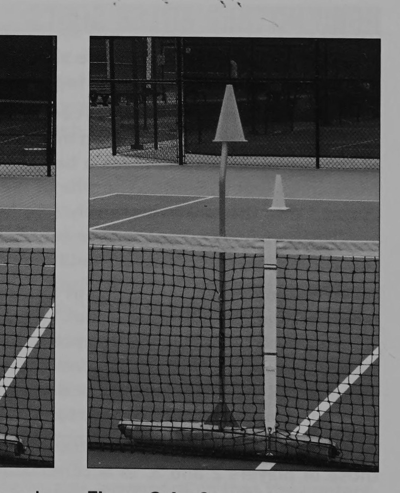
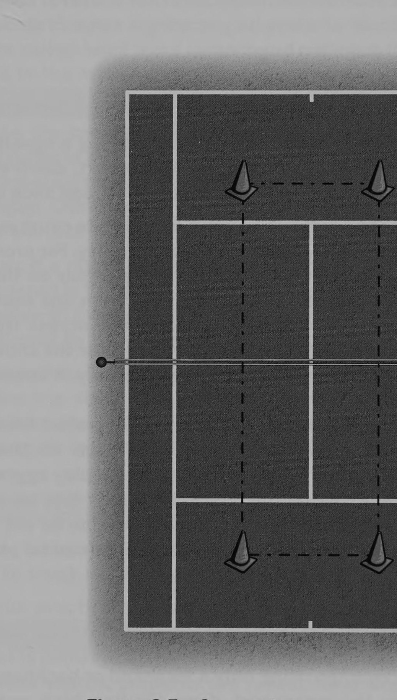
Một trong những đặc điểm thành công của cú thuận tay hoặc trái tay tốt là khả năng tăng tốc. Tốc độ của đầu vợt khi tiếp xúc với cú đánh sẽ tạo ra gia tốc. Khả năng tăng tốc tốt của đầu vợt sẽ tăng thêm trọng lượng cho cú đánh. Từ đầu đến cuối, cú vung vợt phải uyển chuyển, không gặp trở ngại trong quá trình chuẩn bị vợt của người chơi. Người chơi có thể thực hành từng bài tập trong phần này bằng cách sử dụng thuận tay hoặc trái tay. Hãy ghi nhớ những lời khuyên sau đây để thực hiện các bài tập tăng tốc: ¢ Người chơi nên dồn lực vào chân sau để tạo tiền đề cho một cú xoay người tiếp tục trong cú đánh và sau đó đẩy từ chân sau sang chân trước kết hợp với cú xoay người. ¢ Khuỷu tay phải sát với cơ thể để có lực và sự ổn định. Người chơi nên tập trung vào đường swing đến gần cơ thể hơn khi cánh tay thuận vòng xuống để vung lên và hướng về phía trước và kéo dài về phía theo sau. * Người chơi nên tưởng tượng khu vực 2 đến 4 inch (khoảng 5 đến 10 cm) trước điểm tiếp xúc là vùng tăng tốc và vung mạnh lên trên qua vùng này, cố gắng đánh bằng đầu dây. * Người chơi nên ném cánh tay vợt về phía mục tiêu, đảm bảo đầu vợt xuyên qua trước, sau đó là khuỷu tay. Khuỷu tay đưa ra trước thường được nhìn thấy với cách cầm kiểu Western hơn, nhưng nhìn chung nên tránh cách tiếp cận này. * Nếu không sử dụng, tay không thuận phải giữ thăng bằng. Người chơi giữ cánh tay thoải mái ở phía trước hoặc sang một bên để chuẩn bị và dần dần kéo ra hoặc sang một bên khi tiếp xúc.
e Người chơi cần theo dõi, hình dung cú đánh xuyên qua quả bóng, với mục tiêu đưa cánh tay ra ngoài và dứt điểm để tối đa hóa hiệu quả của cú đánh. Đối với hầu hết người chơi, điều này có nghĩa là hoàn thành ở phía đối diện của cơ thể ở bất kỳ vị trí nào từ ngang eo đến ngang vai. Cách kết thúc phổ biến nhất là quanh vai đối diện, tùy thuộc vào cú đánh, nhưng điều quan trọng là phải thử nghiệm các cách hoàn thiện khác nhau để tìm ra cách tạo ra nhiều lực nhất. Chuyển động dứt điểm cần phải mạnh mẽ, nhất quán và tiếp nối đường xoay một cách mượt mà. Gần đây, những người chơi ở trình độ cao đã bắt đầu cố gắng hoàn thành vòng quanh ngực ở vai đối diện. Tuy nhiên, Rafael Nadal đã điều chỉnh công thức và thay đổi môn quần vợt hiện đại với khả năng tăng tốc mà anh ấy có được bằng cách vung người lên và giữ nguyên một phía. Lượng xoáy lên khổng lồ mà anh ấy đặt vào bóng làm cho cú đánh này trở nên hiệu quả; người chơi nên thử thêm nó vào trò chơi của mình.
CÁC BIẾN THỂ RIÊNG CHO CÁC MŨI bài tập TĂNG TỐC
Bảng sau là một công cụ tuyệt vời để tăng tốc, nhưng người chơi cần điều chỉnh tốc độ đánh. Bởi vì những quả bóng bị đánh mạnh sẽ quay trở lại mạnh và nhanh nên việc duy trì một đợt phục hồi có thể khó khăn. Người chơi nên đứng cách bảng sau 10 feet (khoảng 3 m) và ban đầu sử dụng các cú đánh có nhịp độ chậm hơn để thấy sự khác biệt về độ sâu và tốc độ của cú đánh quay lại, sau đó bắt đầu tăng dần tốc độ, điều chỉnh chuyển động cho phù hợp. Một cách khác để luyện tập khả năng tăng tốc là tự nạp một xô bóng. Người chơi thả bóng nhẹ nhàng, luân phiên tiếp đất nhẹ về phía trước, phía sau và sang một bên cơ thể. Sau khi khởi động, người chơi nhẹ nhàng ném bóng ra xa một chút để kết hợp chuyển động. Ban đầu, người chơi có thể thực hiện cú vung và tăng tốc dọc theo đường bóng, sau đó bắt đầu đánh chéo bàn và các góc để thấy sự khác biệt giữa mỗi cú đánh. Biến thể solo này cũng có thể là một phần của quá trình khởi động trên sân tập trước trận đấu để chuẩn bị cho cơ thể tăng tốc tối đa ngay lập tức.
bài tập TĂNG TỐC CƠ BẢN
Mục đích: Để phát triển khả năng tăng tốc đầu vợt thông qua các cú đánh. Người chơi nên thực hiện bài tập này vào đầu mỗi buổi tập. Cách tiến hành: Đấu thủ đứng cách lưới 5 feet (1,5 m) gần giữa hoặc hơi chú ý đến phía cú đánh đang được thực hiện. Huấn luyện viên hoặc đối tác ở phía đối diện để chuẩn bị và áp sát lưới. Cứ khoảng 2 giây, người đưa bóng tung bóng chéo, đúng kỹ thuật. Khoảng 2 feet (0,6 m) tính từ mặt trước và mặt bên của hành trình đang được bài tập. Người chơi phải tải các cú đánh của người chơi lên bóng càng nhanh càng tốt trong khi mở rộng đầu và cánh tay vợt (chuẩn bị về phía cú đánh. Người chơi tập trung vào việc đánh lên qua điểm tấn công của vòng lặp khẩu phần) và cơ thể (tiếp xúc cân bằng với lực càng nhiều càng tốt. Với trọng lượng trước Điểm huấn luyện: Mục tiêu của bài tập này là đánh với lực và độ sâu, tạo ra chủ yếu trên quả bóng có nhiều xoáy lên và quỹ đạo thấp (thấp đến mức người chơi có thể đánh chân sau) đến mức tối đa- mà không đánh bóng vào mạng). Người chơi nên thử nghiệm các quỹ đạo tăng tốc kích thước khác nhau để xem quỹ đạo nào tạo ra cú đánh sâu nhất. Dấu hiệu của một cú đánh tốt và kéo dài bao gồm một quả bóng tiếp đất gần đường cuối sân (ngay bên ngoài phù hợp với bài tập này) với đầu và cánh tay vợt hướng về hình dạng và di chuyển nhanh chóng qua sân. quả bóng. Biến thể: Để kiểm tra độ giãn, người chơi sử dụng kỹ thuật thả vợt được mô tả trong Bài tập kỹ thuật thả vợt (xem trang 59).
Mục đích: Để phát triển hoặc cải thiện cơ chế xoay hoặc cú đánh với khả năng tăng tốc. Một cú vô lê xoay được đánh đúng cách (tiếp đất gần đường cuối sân) đòi hỏi phải thực hiện một cú xoay người hoàn toàn và xoay thân cây thích hợp. Đây là kỹ thuật tương tự cần thiết cho các cú đánh nền. Việc đưa bóng lên không trung mô phỏng một quả bóng nảy lên, cho phép người chơi thực hành cú vung cần thiết để tạo ra hoặc phản lực. Phần mở rộng cần thiết để thực hiện thành công bài tập này sẽ cải thiện cơ chế xoay một cách tự nhiên. Cách tiến hành: Người chơi đứng ở điểm giữa của đường cuối sân. Huấn luyện viên hoặc đối tác đưa bóng theo đường chéo có góc loft vào vùng tấn công từ trên đến giữa: về phía vai và cách khoảng 2 đến 3 feet (0,6 đến 0,9 m) về phía đường vung. Các nguồn cấp dữ liệu phải cho phép người chơi có thời gian để phục hồi và ở vị trí tốt cho cú đánh tiếp theo. Người chơi đặt chân ngoài và xoay người hoàn toàn, đánh bóng từ trên không và tập trung vào các yếu tố tăng tốc tốt trong suốt cú đánh. Độ loft của đường đánh khiến người chơi đánh vào dưới bóng, sử dụng xoáy lên để tạo hình dạng cho bóng và giữ nó trong sân. Người chơi nên cố gắng thực hiện từng cú đánh gần đường biên cuối sân và sau đó chuyển sang những cú đánh chéo sân sắc bén ngoài sân. Người chơi nên luân phiên đánh bóng phẳng (đẩy) và có hình dạng (độ nảy cao hơn). Người chơi lặp lại thao tác đứng ở giữa vạch cuối sân. Biến thể: Người chơi có thể kiểm tra khả năng tăng tốc được cải thiện theo thời gian bằng cách giảm thời gian giữa các lần tung. Người chơi có khả năng phục hồi và vung vợt nhanh hơn bằng lực và gia tốc trong khi vẫn duy trì được phong độ đang phát triển một kiểu đánh mạnh mẽ và nhất quán.
Mục đích: Để phát triển hoặc cải thiện tốc độ đầu vợt khi đánh một cú đánh thấp khi đang di chuyển. Quy trình: Người chơi bắt đầu ở đường cuối sân ở giữa điểm đánh dấu ở giữa và con hẻm. Huấn luyện viên hoặc đồng đội đứng phía trước và cách tay vợt một vài bước chân tôi hẻm của cú đánh kéo dài và ném những quả bóng thấp nảy cao 0,5 đến 1 foot (15 đến khi sử dụng lõi cơ- cao 30 cm). Các lần ném phải diễn ra ngay sau khi mỗi quả bóng được đánh và các chốt để tăng tốc bộ nạp sẽ di chuyển cách người chơi 2 feet (0,6 m) sau mỗi lần ném mới. Người chơi trên mỗi quả bóng và đi theo người cho bóng, người này đang đi lùi về phía lưới trong khi cho ăn, vung vợt - giữ thăng bằng tốt từ thấp đến cao càng nhanh càng tốt qua vùng tấn công và tạo ra các chân cho quả bóng có nhiều xoáy lên và lực. di chuyển về phía trước trong khi đánh vào các điểm Huấn luyện: Bắt buộc phải có vị trí và thời điểm đưa bóng thích hợp để đẩy bóng. Người chơi là người chơi tăng tốc trên mỗi quả bóng. Tốc độ ném nhanh liên tiếp có thể ở mức thấp và giảm tốc độ nếu cần hoặc ném ở các độ cao khác nhau nếu người chơi mong muốn. Vị trí cuối vợt được tải của các cú đánh không quan trọng bằng tốc độ của vợt hướng ra mỗi lần lặp lại qua điểm tiếp xúc. Chuyển động về phía lưới mô phỏng một quả bóng ngắn, tion. và tải liên tục giúp cải thiện sức mạnh cốt lõi của người chơi.
Biến thể: Bài tập này cũng có thể thực hiện các chuyển động lùi, chéo và từ bên này sang bên kia. Chuyển động lùi sẽ đảo ngược các bước mà người nạp và người chơi thực hiện. Để di chuyển theo đường chéo, các quả bóng được ném theo đường chéo về phía con hẻm. Để thực hành chuyển động từ bên này sang bên kia, đối tác hoặc huấn luyện viên di chuyển đến khoảng 2 feet (0,6 m) ngay phía trước người chơi và ném bóng từ bên này sang bên kia, yêu cầu chuyển động từ 2 đến 4 feet (0,6 đến 1,3 m) theo một trong hai hướng. Cần có nhiều thời gian phục hồi khi chuyển động từ bên này sang bên kia để điểm tiếp xúc được giữ nguyên.
ĐÁNH GIÁ CỨNG: NGOÀI BALLPARK
Mục đích: Để tăng khả năng tăng tốc và sức mạnh ở cú thuận tay hoặc trái tay. Cách tiến hành: Người chơi bắt đầu ở giữa đường cuối sân. Huấn luyện viên hoặc đồng đội đưa bóng từ giữa phía bên kia sân. Các bước tiến phải tiếp đất khoảng 4 đến 5 feet (1,3 đến 1,5 m) ở phía trước và 2 feet (0,6 m) về phía hành trình đang được bài tập. Các đường chuyền phải dễ dàng, nảy ngang vai và với tần suất cho phép người chơi có nhiều thời gian để phục hồi và chuẩn bị cho quả bóng tiếp theo. Người chơi chuẩn bị với một cú giật mạnh và vung mạnh nhất có thể, đạt đến đỉnh điểm bằng một cú theo sau mạnh mẽ. Bóng rơi ở đâu không quan trọng; thậm chí đâm vào hàng rào cũng được! Khi người chơi đã quen với việc đánh bóng bằng lực thì bài tập sẽ tiếp tục. Bây giờ, trong khi tập trung vào khả năng tăng tốc và xoáy lên, người chơi cần đánh mạnh và nhắm đến việc đưa bóng tiếp đất trước đường cuối sân. Bóng phải có hình dạng (chiều cao và độ xoáy) và bay ra khỏi sân nhanh chóng. Điểm huấn luyện: Bóng đi quá vạch cuối sân thường cho thấy bóng thiếu tốc độ hoặc kỹ thuật sút không đúng. Người chơi có thể khắc phục sự cố bằng cách tăng thêm tốc độ, thử nghiệm cách cầm vợt, nhấn mạnh vào việc theo dõi và kết thúc rõ ràng hơn hoặc kết hợp những điều chỉnh này. Để tăng tốc nhanh hơn, người chơi cần tập trung sử dụng đường vung vợt từ thấp đến cao với đầu vợt dẫn trước khuỷu tay. Cánh tay và mặt vợt cần duỗi ra càng nhanh càng tốt về phía cú đánh. Có thể sử dụng kiểu cầm vợt Eastern, bán Western hoặc sự kết hợp của cả hai kiểu cầm vợt. Khi thực hiện cú đánh tiếp theo, khuỷu tay phải hướng về hướng mong muốn mà người chơi muốn bóng đi. Biến thể: Người chơi cũng có thể bắt đầu ở giữa đường giao bóng để tăng tốc từ giữa sân. Trong phiên bản này, đường đưa bóng cách người chơi từ 1 đến 2 feet (0,3 đến 0,6 m) và người chơi đánh bóng về phía đường giao bóng với trọng tâm là xếp bàn chân gần bóng nhất và tải chân.
ĐÁNH GIÁ CỨNG: SÚNG GIẾT NGƯỜI
Mục đích: Để mô phỏng một tình huống trận đấu trực tiếp và phát triển hoặc cải thiện khả năng đánh một quả bóng mạnh và chuyển sang lưới. Quy trình: Người chơi 1 bắt đầu từ dấu thăng ở giữa đường cuối sân và đối mặt với người chơi 2 và 3 ở vị trí đối diện của lưới trên đường cuối sân. Một trong hai người chơi còn lại đưa bóng sao cho bóng tiếp đất cách 4 đến 5 feet (1,3 đến 1,5 m) về phía trước và 2 feet (0,6 m) về phía bên của cú thuận tay hoặc trái tay đang được luyện tập. Cầu thủ 1 đánh bóng mạnh mẽ (cú đánh sát thủ), tập trung vào yếu tố tăng tốc và tiếp cận lưới. Các tay vợt chơi hết điểm. Họ nên ghi điểm trận đấu đến 11, 15 hoặc 21 rồi luân phiên vị trí. Điểm huấn luyện: Việc thực hiện cú sút chuyển tiếp sẽ xác định mức độ dễ dàng đưa cú sút tiếp theo vào lưới. Nếu cú đánh chuyển tiếp tiếp đất ngắn, người chơi nên kiểm tra tư thế cân bằng, tốc độ tối đa và phần mở rộng toàn bộ cánh tay khi vung vợt và vợt có hướng ra ngoài đúng hướng về phía mục tiêu hay không. Nếu khả năng giữ thăng bằng và thực hiện của người chơi tốt và bóng vẫn tiếp đất ngắn, thì cách cầm vợt (có thể là kiểu cầm vợt kiểu Western) có thể có quá nhiều xoáy lên và không cho phép đạt được tốc độ đủ nhanh. Biến thể: Bài tập này có thể gây khó chịu nếu trình độ kỹ năng của người chơi 1 thấp hơn trình độ kỹ năng của người chơi 2 và 3. Để phù hợp với sự khác biệt về cấp độ kỹ năng hoặc thêm sự đa dạng, người chơi nên sử dụng trò chơi thả bóng.! Trong phiên bản này, người chơi đỡ bóng sát thủ tiếp tục chơi và một trong những người chơi khác (2 hoặc 3) rời sân; điểm được hoàn thành trong tình huống một đối một.
bài tập BẮN CỤ THỂ
Các bài tập đánh bóng cụ thể mang lại cơ hội tập trung và cải thiện một cú đánh nền cụ thể. Mỗi cú đánh đều quan trọng để có một trận đấu cân bằng và đa dạng. Thực hiện các cú đánh cụ thể cũng có thể mang lại cơ hội cải thiện các kỹ năng được thảo luận trong chương 1 và 2 trong một tình huống cụ thể hơn. Mỗi bài tập này có thể được sử dụng để tập cả phía thuận tay và phía trái tay. Các bài tập trong phần này trước tiên nêu bật việc thực hiện thành công một cú đánh và sau đó là đánh trúng mục tiêu để giúp phát triển khả năng tập trung và độ chính xác trong cú đánh. Đối với các phần kỹ thuật và mục tiêu của bài tập, vị trí ban đầu của sân là như nhau. Người chơi bắt đầu ở dấu băm ở giữa trên vạch cuối sân. Huấn luyện viên hoặc đối tác, người ở đường giao bóng ở phía đối diện, đánh từ 8 đến 10 quả bóng bằng vợt. Huấn luyện viên hoặc đối tác có thể bắt đầu với các nguồn cấp dữ liệu gần hơn để cho phép người chơi thành thạo chuyển động thích hợp trước khi chuyển sang các nguồn cấp dữ liệu rộng hơn yêu cầu chuyển động nâng cao hơn. Tốc độ của nguồn cấp dữ liệu cũng có thể tăng tốc để cải thiện kỹ thuật và thời gian phục hồi. Nguồn cấp dữ liệu có thể có nhịp độ khác nhau dựa trên kỹ năng đang được luyện tập. Ví dụ: người chơi có thể muốn nguồn cấp dữ liệu chậm hơn để tạo rãnh và nguồn cấp dữ liệu nhanh hơn để tập trung vào chuyển động khó hơn và học cách đánh những cú đánh khó hơn. Các bài tập mục tiêu yêu cầu một số thiết bị. Cầu thủ hoặc huấn luyện viên đặt một cây vợt có móc lên lưới sao cho cột vuông góc với mặt đất, như minh họa trong hình.
một sự thay thế hiệu quả. Một hình nón được đặt phía trên tay cầm để cung cấp mục tiêu (xem hình 3.3). Tốt nhất là sử dụng nón có độ cao khác nhau để thực hiện các quỹ đạo và góc chụp khác nhau. Thường thì chổi cao su sẽ có gắn một cái móc, cho phép nâng và hạ mục tiêu. Một hình nón cũng có thể được đặt sâu trong sân (xem hình 3.4). Trong cách thiết lập này, mục tiêu của người chơi là cố gắng đánh vào hình nón chính (hình trên vắt). Mục tiêu phụ là đánh vào hình nón ở góc phần tư sâu nếu người chơi bỏ lỡ hình nón chính. Hình nón trên chổi cao su cũng có thể được sử dụng làm mục tiêu để đánh khi cố gắng sử dụng hình nón sâu hơn làm mục tiêu chính. Người chơi nên sử dụng cách thiết lập phù hợp nhất với cú đánh mà họ đang luyện tập.
eej LH [4 lla yS A aoa:NeBRPR eee sa( sySER elm sagas iuaaa Bae @secaci i na Ws Cn a. esaj PON to ee)| ees sesyaergS a ie aa a a: sa Ltt SQ eSssseu~eiSreel.x 2s teen PE được gắn vào mạng. trên tay cầm chổi cao su. thiết lập với một hình nón ở góc phần tư chéo sân sâu.
CHIA SẺ BẰNG CROSSCOURT
Mục đích: Để phát triển một cú đánh nhằm tạo sức mạnh và thể hiện sức mạnh. Thực hành kỹ thuật: Huấn luyện viên hoặc đối tác đưa bóng theo đường chéo đến khu vực tấn công giữa về phía vai và cách khoảng 2 đến 3 feet (0,6 đến 0,9 m) về phía đường vung. Để tạo ra một quả bóng phẳng và quỹ đạo thấp, người chơi phải tăng tốc- Để hỗ trợ người ăn từ thấp đến cao nhưng duỗi cánh tay ra ngoài ngay trước khi tiếp xúc. Cầu thủ nhắm sâu, tiếp xúc nhẹ ở phía trước bàn chân trước và đánh vào mặt ngoài của bóng, góc chéo sân, nhắm theo quỹ đạo khoảng 1 đến 2 feet (0,3 đến 0,6 m) qua lưới. Người chơi nên giữa các cú đánh, người chơi hồi phục trở lại giữa và chia các bước để chuẩn bị kéo dài vợt cho cú đánh tiếp theo. đưa tay qua cú đánh và tưởng tượng các điểm huấn luyện: Người chơi nên thử nghiệm với các điểm tiếp xúc khác nhau để tìm ra vị trí tốt nhất để thực hiện cú đánh chéo bàn. Việc chạm bóng quá muộn khiến bóng đi dọc sân nhiều hơn. sang biến thể Solo ngược lại: Xem biến thể solo của bài tập Sân ngắn chéo ở trang 57. góc. Mục tiêu thực hành: Đặt cột có 7 đến 12 lỗ ở một bên của dây lưới và bất kỳ nơi nào từ 1 đến 5 lỗ bên dưới dây trên cùng. Di chuyển cột đến các vị trí khác nhau để làm việc ở các góc độ khác nhau. Hình nón có thể được thiết lập cao hơn hoặc thấp hơn để tăng thêm sự đa dạng về chiều cao cho cú đánh. Mục tiêu thấp hơn là hình thức bắn mạnh mẽ nhất và mục tiêu cao hơn mang lại khả năng kiểm soát (cú đánh tập trung thoải mái) để có cú đánh an toàn hơn. Một hình nón được đặt sâu trong sân có thể bổ sung thêm một mục tiêu.
CHỤP TUYỆT VỜI —
Mục đích: Để phát triển một loại vũ khí có thể sử dụng để tạo sức mạnh cho sân mở, khiến đối thủ phải bỏ chạy hoặc lợi dụng cú đánh chéo sân yếu hoặc chuyển động kém của đối thủ. Thực hành kỹ thuật: Huấn luyện viên hoặc đối tác đưa bóng theo đường chéo đến khu vực tấn công giữa và khoảng 2 đến 3 feet (0,6 đến 0,9 m) về phía đường vung. Người chơi tăng tốc từ thấp lên cao nhưng khép vai. Người chơi làm
Kiểm soát của
tiếp xúc phía sau điểm tiếp xúc của cú đánh ngang sân chéo một chút và mục tiêu của cú đánh là quỹ đạo từ 2 đến 3 feet (0,6 đến 0,9 m) trên lưới. Giữa các lần bắn, người chơi bị khai thác sẽ quay trở lại giữa và chia các bước để chuẩn bị cho lần bắn tiếp theo. khả năng giữ điểm Huấn luyện: Cú đánh này có nguy cơ mắc lỗi cao do bóng mục tiêu nhỏ trên dây dài hơn (để thay đổi khu vực, độ hở lưới cao và khó khăn liên quan đến việc thay đổi hướng của bóng. Để thay đổi hướng của đường chéo sắp tới hoặc đường chéo của quả bóng) và đánh cần phải đợi lâu hơn một chút để bóng đi vào khu vực tấn công. Người chơi hoàn toàn nên thử nghiệm điểm tiếp xúc và góc mặt vợt để tạo ra đường bóng tốt nhất. Sự kết hợp của người chơi để thực hiện cú đánh bằng sức mạnh. Ngoài ra, việc đưa bóng có thể tiến triển nên tập trung vào hướng ra ngoài để thực hành cú đánh này từ nhiều vị trí khác nhau, bất cứ nơi nào từ cú đánh giữa chừng từ điểm băm cơ bản đến con hẻm. bóng và sử dụng biến thể Solo: Xem biến thể solo trong bài tập Sân sau thẳng tiến về các mức độ xoáy khác nhau và sau đó trang 58. Thay vì đứng giữa bảng sau, hãy di chuyển sang một bên. hướng tới mục tiêu Thực hành: Đặt cột và hình nón cách con hẻm khoảng 2 feet (0,6 m), chạm một vật phẳng hơn về phía dây lưới và bất kỳ nơi nào có từ 1 đến 5 lỗ bên dưới dây trên cùng, di chuyển quả bóng để khiến cột hoạt động theo các quỹ đạo và góc độ khác nhau. Sau đó, đặt một hình nón trên sân hiệu quả hơn cách vạch cuối sân và con hẻm từ 4 đến 5 feet (1,3 đến 1,5 m) nếu đánh để bắn địa điểm. ment hoặc 2 đến 3 feet (0,6 đến 0,9 m) tính từ đường cuối sân và hẻm nếu người chiến thắng.
TÒA NGANG CAO, NẶNG VÀ XUỐNG LSIHNOET
Mục đích: Để phát triển một cú đánh mạnh sẽ đẩy hoặc giữ đối thủ lùi lại sân đồng thời tạo khoảng trống để bước xa hơn vào sân và chơi tấn công hơn. Thực hành kỹ thuật: Huấn luyện viên hoặc đối tác đưa bóng chéo với độ xoáy và tăng vận tốc để tạo ra đường bóng cao hơn và nảy lên cao với xoáy lên. Người chơi chuẩn bị cho cú đánh theo một trong ba cách: lùi lại và để bóng rơi vào khu vực tấn công ở giữa, di chuyển vào và lấy bóng trên cao hoặc đưa bóng lên không trung. Cú đánh giống như cú đánh mặt đất thông thường nhưng có đường cong hướng lên trên bóng nhiều hơn. Sau cú đánh, người chơi chia ra các bước để chuẩn bị cho cú đánh tiếp theo. Điểm huấn luyện: Bóng cao, nặng thường được chơi với bóng có độ nảy cao, để lại nhiều thời gian để thiết lập tải trọng thích hợp. Người chơi nên thực hành cú đánh này từ các vị trí tấn công (bên trong hoặc gần đường cuối sân) và phòng thủ (phía sau đường cuối sân). Lưu ý rằng việc đánh từ vị trí phòng thủ có thể yêu cầu điểm tiếp xúc muộn hơn một chút vì người chơi đến muộn, điều này đòi hỏi nhiều nỗ lực hơn để đưa bóng vào dưới. Biến thể: Cú đánh cao và nặng cũng có thể đánh xuống đường biên. Người chơi có thể điều chỉnh động tác chân, vị trí cơ thể và kiểu xoay phù hợp, đồng thời thêm tải trọng thấp hơn, tăng độ xoáy trên và độ mở rộng cánh tay cao hơn. Biến thể solo: Vì độ nảy cao nên cú đánh cao và nặng rất dễ bài tập vào bảng sau. Người chơi đứng cách bảng sau 15 feet (4,6 m) về phía thuận tay hoặc phía trái tay. Người chơi chọn một cú đánh mặt đất bắt đầu (thuận tay hoặc trái tay) và đánh một quả bóng xuống vạch với góc loft để bóng nảy trở lại cao. Ở quả bóng tiếp theo, người chơi đánh một cú sút chéo sân cao và nặng. Người chơi ban đầu nên sử dụng một góc giới hạn. Cầu thủ chạy tới đón bóng và thực hiện cú sút chéo góc cao, nặng từ phía bên kia. Để nâng cao mũi bài tập, người chơi có thể mở rộng góc để kết hợp nhiều chuyển động hơn. Luyện tập mục tiêu: Thực hiện cú đánh này yêu cầu mục tiêu được đặt cao hơn dây lưới. Một lựa chọn là dựng cột trên mỗi cột lưới bằng cách nối một sợi dây giữa các cột ở độ cao từ 3 đến 4 feet (0,9 đến 1,3 m) so với lưới. Sau khi người chơi đã thành thạo việc đánh qua dây ở độ cao này, người chơi có thể nâng độ cao của dây lên. Một lựa chọn khác là đặt một chướng ngại vật (ghế dài, ghế, xô bóng hoặc vật thể khác) cách phía trước và bên cạnh xích đu vài feet, buộc người chơi phải đánh lên và vượt qua vật thể đó. Người chơi phải đứng đủ xa về phía sau để tránh vung vào vật thể và đủ sang một bên của vật thể để tránh bóng bật ngược lại. Cuối cùng, người chơi có thể đặt một hình nón cách sân khoảng 2 đến 3 feet (0,6 đến 0,9 m) ở phía thích hợp của sân để thực hiện cú đánh chéo sân hoặc đường dọc và thực hành cú đánh.
Mục đích: Để phát triển một loạt các cú đánh góc cạnh nhằm kéo đối thủ ra khỏi sân. Thực hành kỹ thuật: Hai người chơi đánh bóng chéo với độ xoáy về phía đường đánh đôi của nhau. Mỗi người chơi cố gắng đánh bảy quả bóng vào hẻm. Bài tập có thể bắt đầu với việc người chơi đánh theo đường chéo sân và sau đó di chuyển lùi về phía "Người chơi nên đánh đường cuối sân sau mỗi điểm. Người chơi nên tích cực lướt qua bên ngoài của đường xoay chữ S nhanh hơn với bóng, tăng tốc mặt vợt theo một vòng cung ngắn hơn trên cơ thể và nhằm mục đích tạo ra nhiều xoáy lên và lưới hơn từ 1 đến 2 feet (0,3 đến 0,6 m) cho các góc ngắn hơn và góc 3 đến 5 feet (0,9 đến 1,5 m) khi đánh để bóng rơi qua đường giao bóng. Giữa các cú đánh, người chơi quay trở lại các góc ngắn hơn ở giữa và tách ra để chuẩn bị cho cú đánh tiếp theo. Sử dụng điểm tiếp bóng và điểm tiếp xúc phòng thủ giúp cung cấp thêm thời gian để chịu lực cho chân và tạo ra nhiều độ xoáy hơn để tạo ra góc đánh tốt hơn. cú đánh dọc biên, huấn luyện viên hoặc đồng đội đưa bóng dọc theo đường biên ngang hoặc có xoáy lên để chúng tiếp đất ở giữa đường giao bóng và đường cuối sân và tạo ra một quả bóng thấp nảy ngược về phía đường cuối sân. Để tạo góc, người chơi đưa bóng lên và, với điểm tiếp xúc, chạm vào góc chéo sân. Một biến thể solo: Cú đánh góc tạo ra một đường bóng ngắn nảy lên hoặc chệch hướng ngắn trên sân theo hướng ngược lại của người chơi, do đó việc duy trì một đường đánh bóng có thể khó khăn. Người chơi chọn một bên và đứng cách bảng rổ từ 6 đến 8 feet (1,8 đến 2,4 m). Người chơi đánh bóng bằng phẳng hoặc cao hơn một chút so với đường biên. Khi bóng bật ra khỏi bảng sau, người chơi sẽ thực hiện cú sút góc. Người chơi chạy tới và thoát khỏi cú nảy, đánh một khối phòng thủ bắn thẳng về phía trước hoặc dọc theo đường biên, khiến nó bật thẳng về phía trước cơ thể và lặp lại quá trình. Cách tiếp cận này kết hợp việc thực hành các kỹ năng bắn và phòng thủ. Thực hành nhắm mục tiêu: Để cung cấp mục tiêu có góc sắc nét hơn, người chơi đặt cột xa hơn về bên phải hoặc bên trái so với mục tiêu để thực hiện cú đánh chéo sân. Người chơi bắt đầu với hình nón trên đỉnh cột. Người chơi thực hiện động tác luyện tập kỹ thuật nhưng nhằm mục đích đánh trúng hình nón. Huấn luyện viên hoặc đối tác đưa bóng từ giữa đường giao bóng, khoảng giữa đường về phía ngõ. Sau khi thực hành kịch bản này, người chơi thêm một hình nón sân để thực hành một loạt các vị trí kết thúc trên hoặc trong phạm vi từ 1 đến 3 feet (0,3 đến 0,9 m) của đường biên, thay đổi từ bên trong đường giao bóng đến giữa đường giao bóng và vạch cuối sân.
TỪ TRÊN NGOÀI
Mục đích: Phát triển kỹ thuật di chuyển xung quanh quả bóng và chuyển hướng nó bằng cú thuận tay mạnh về phía sân quảng cáo (trái tay nếu đối thủ là người thuận tay phải). Thực hành kỹ thuật: Huấn luyện viên hoặc đồng đội đưa bóng theo đường chéo với xoáy lên hoặc lát cắt, nảy vừa qua vạch giao bóng và đến điểm giữa giữa dấu thăng ở giữa và đường chuyền. Càng gần trung tâm thì cú đánh dễ dàng hơn, trong khi càng gần con hẻm thì cú đánh khó hơn. Sử dụng tư thế mở, người chơi tiếp xúc với cú đánh tại điểm tiếp xúc tấn công để thực hiện cú đánh lái và điểm tiếp xúc tập trung để có cú đánh cao, mạnh, nhấn mạnh lực đẩy ra bên ngoài của cánh tay và cổ tay với gia tốc hướng lên trên. Cú đánh phải cách lưới từ 1 đến 2 feet (0,3 đến 0,6 m) và tiếp đất cách đường cuối sân và hẻm từ 2 đến 3 feet (0,6 đến 0,9 m) để thực hiện cú sút sâu hoặc gần đường giao bóng đối với cú đánh góc. Đối với phiên bản sau, người chơi cần hất đầu vợt hướng lên trên và hướng ra ngoài nhiều hơn. Giữa các lượt đánh, người chơi lùi về giữa và chia các bước để chuẩn bị cho lượt đánh tiếp theo. Biến thể solo: Khi kết hợp với các cú đánh khác, cú thuận tay từ trong ra ngoài có thể được thực hiện trên bảng rổ. Một trình tự có thể xảy ra là đánh xuống đường biên để bóng chệch hướng trực tiếp về phía sau, sau đó là một cú thuận tay từ trong ra ngoài, sau đó là một cú sút chéo sân cao và nặng, sau đó là một cú thuận tay từ trong ra ngoài khác; sau đó trình tự được lặp lại. Các lựa chọn khác bao gồm xen kẽ các cú thuận tay từ trong ra ngoài với các cú đánh dọc biên hoặc theo sau các cú đánh chéo bàn với các cú đánh trái tay dọc biên. Biến thể: Nếu người chơi muốn thực hành cú thuận tay trong nhà trên bảng sau, một trình tự là đánh dọc theo đường biên để bóng lệch thẳng về phía sau, sau đó là cú thuận tay trong nhà quay trở lại vị trí cũ, sau đó là cú đánh chéo bàn cao và nặng, sau đó là cú sút chéo bàn thuận tay; sau đó trình tự được lặp lại. Mục tiêu thực hành: Đặt cột cách dây lưới 7 đến 12 lỗ và cách dây trên 1 đến 5 lỗ. Sau đó, di chuyển hình nón đến các vị trí khác nhau trên đường biên, từ bên trong đường giao bóng đến giữa đường giao bóng và đường cuối sân làm mục tiêu cho cú đánh. | ‘một
lát
Mục đích: Phát triển kỹ thuật đánh một cú đánh thấp qua lưới và được sử dụng để phá vỡ nhịp điệu của đối thủ. Trong phần luyện tập chuẩn bị kỹ thuật: Huấn luyện viên hoặc đối tác đưa bóng theo đường chéo với xoáy lên hoặc xoáy lên, xoáy xuống của vợt đến một điểm giữa đường giao bóng và đường cuối sân (nhưng gần với đường thẳng kéo dài hơn của cánh tay gốc) tức là ở giữa điểm băm trung tâm và đường hẻm. Người chơi di chuyển từ cao xuống thấp đến tư thế khép kín, chuẩn bị đầu vợt hơi ra sau vai và chặt hoặc quét, cao hơn một chút so với đường của quả bóng đang tới và tiếp xúc với bóng trong cuộc tấn công nhưng ở giai đoạn tiếp theo, nó cần điểm tiếp xúc cho một lát tấn công và trong pha tập trung đến các điểm tiếp xúc phòng thủ để đi ra phía trước để thực hiện một lát ít hung hãn hơn. Cú đánh phải đi qua lưới từ 1 đến 2 feet (0,3 đến mục tiêu mong muốn. 0,6 m) và tiếp đất càng gần vạch cuối sân càng tốt. Giữa các lượt đánh, cổ tay của người chơi phải hồi phục về giữa và tách ra các bước để chuẩn bị cho lượt đánh tiếp theo. giải phóng thông qua biến thể Solo: Người chơi chọn một bên để bài tập và đứng về bên đó. Người chơi, điểm tiếp xúc đứng cách bảng từ 3 đến 4 feet (0,9 đến 1,3 m) để thực hiện các lát cắt được nâng lên để thực hiện cú đánh và lùi lại 6 đến 8 feet (1,8 đến 2,4 m) đối với các lát cắt sâu. Người chơi bắt đầu với một cú cắn thẳng hơn. tập hợp các lát cắt phía trước, di chuyển lên và quay lại để luyện tập phạm vi của các lát cắt. Người chơi có thể duy trì một cú đánh cắt vào tường bằng cách tập trung vào việc mở rộng cánh tay về phía tường trong lần tiếp theo. Sau đó, người chơi có thể thêm sân chéo các cú đánh để thiết lập lại điểm và thực hành cú cắt từ các vị trí khác, thực hiện cú cắt thuận tay và trái tay. Mục tiêu thực hành: Huấn luyện viên hoặc đối tác đánh vô-lê sâu. Các nón cũng có thể được đặt trên sân để làm nổi bật vị trí chính xác cho một cú cắt sâu hơn (2 đến 3 feet, hoặc 0,6 đến 0,9 m, tính từ đường cuối sân và ngõ) cũng như vị trí chính xác cho một cú cắt ngắn hơn (thấp và gần đường giao bóng cho đường chéo và đường dọc).
bài tập BÓNG SỐNG
Các bài tập bóng trực tiếp mô phỏng trận đấu đồng thời tạo cơ hội tiếp tục rèn luyện kỹ thuật và vị trí cho các động tác tiếp đất khác nhau. Các bài tập bóng trực tiếp yêu cầu người chơi thực hiện các điều chỉnh để phản ứng với quả bóng mà đối thủ đánh vào họ. Các bài tập sau đây bao gồm từ luyện tập từng cú đánh một đến luyện tập nhiều cú đánh khác nhau. Các cuộc diễn tập cũng khác nhau về phạm vi bao phủ của sân và khu vực mục tiêu.
MỘT LẦN
Mục đích: Để trau dồi kỹ thuật và độ chính xác của mục tiêu trong khi thực hành một cú đánh cụ thể trong tình huống bóng sống. Bài tập này có thể được sử dụng với các cú đánh chéo sân, dọc biên, cao và nặng, góc cạnh, thuận tay từ trong ra ngoài, thuận tay từ trong vào trong và các cú đánh cắt lát. Quy trình: Hai người chơi chọn một cú đánh để bài tập và xác định vị trí sân thích hợp tại điểm nằm giữa dấu thăng ở giữa và con hẻm. Đối với các cú đánh chéo sân và góc sâu, chúng nằm theo đường chéo với nhau trên đường cuối sân. Đối với các cú đánh ở đường biên, chúng phải nằm đối diện nhau trên đường cuối sân. Đối với những cú đánh góc ngắn, chúng phải nằm chéo nhau trên đường giao bóng. Người chơi quyết định khu vực mục tiêu cho cú đánh đủ lớn để họ có thể đánh nó một cách nhất quán trong một cuộc thi đấu. Một khu vực nhỏ hơn có thể được sử dụng cho nhiều thử thách hơn. Trước khi bắt đầu điểm, mỗi người chơi hoàn thành ba cú đánh có kiểm soát vào mục tiêu. Đối với các cú đánh được kiểm soát, đối tác cung cấp nguồn cấp dữ liệu dễ dàng cho cú đánh được chỉ định và khu vực mục tiêu. Sau các cú đánh có kiểm soát, người chơi chơi tích cực đến mục tiêu, cố gắng giành điểm bằng cách buộc người chơi khác phạm lỗi — bắn trượt hoặc bất kỳ cú đánh nào khác ngoài cú đánh bài tập cụ thể. Hình nón cũng có thể được đặt làm mục tiêu cụ thể để kiếm được điểm khi đánh hình nón. Trò chơi có thể được chơi tới 10, 20 hoặc 30 điểm.
CHỈ BẰNG TAY HOẶC TRÁI
Mục đích: Để thực hành bao quát toàn sân chỉ bằng cú thuận tay hoặc trái tay. Người chơi có thể sử dụng bài tập này để thực hành các cú đánh chéo sân, dọc biên, cao và nặng, góc cạnh, thuận tay từ trong ra ngoài, thuận tay từ trong vào và các cú đánh cắt.
Cách tiến hành: Người chơi 1 đứng ở một góc, bên deuce hoặc bên quảng cáo, và người chơi 2 bao quát toàn bộ sân. Người chơi 2 phải đánh thuận tay hoặc trái tay trong mỗi cú đánh ngược lại người chơi 1. Người chơi 1 có thể đánh bất kỳ cú đánh nào tới bất kỳ vị trí nào trên sân để đáp lại. Các trận đấu nên diễn ra với 5 điểm, thắng 1 điểm nếu hòa 4 điểm. Người chơi đổi bên hoặc vai trò sau mỗi trận đấu hoàn thành. Biến thể: Người chơi chọn một cú thuận tay hoặc trái tay cụ thể để đánh mỗi lần, chẳng hạn như cú thuận tay từ trong ra ngoài, hoặc buộc phải đa dạng hơn bằng cách đưa ra quy tắc rằng cùng một cú đánh không được đánh ngược lại hoặc thường xuyên hơn một số cú đánh được chỉ định, chẳng hạn như tối đa là ba.
Mục đích: Để thực hiện việc nhận dạng cú đánh và nhấn mạnh thời gian thực hiện các cú đánh cụ thể. Cách tiến hành: Hai đấu thủ đứng đối diện nhau, chính giữa phía sau đường cuối sân. Hai hình nón được đặt ở mỗi bên sân cách mỗi đường biên đánh đơn khoảng 4,5 feet (1,3 m) và cách đường biên ngang 3 feet (0,9 m) để tạo thành một cái hộp hoặc lỗ bánh rán ở giữa sân (xem hình 3.5). Bất kỳ quả bóng nào mà đối thủ đánh vào lỗ đều được coi là quả bóng đi tiếp. Người chơi có thể chơi trò chơi tới 7 hoặc 11 điểm. Hình thức khác: Trước khi bắt đầu, người chơi có thể thống nhất về kiểu đánh mà họ sẽ đánh (ví dụ: đánh rơi hoặc đánh thuận tay) khi bóng được đánh vào lỗ bánh rán.
— = là, Mục đích: Để thực hành các cú đánh chéo sân và các cú đánh góc trong một tình huống bóng sống và tích lũy kinh nghiệm về nhận dạng cú đánh để thực hiện các cú đánh góc. Cách tiến hành: Ở hai bên sân, huấn luyện viên hoặc đấu thủ dựng hai hình nón (xem phần đường giao bóng và lưới để chỉ định khu vực mục tiêu cho cú đánh góc ngắn. Cái còn lại phải được đặt cách đường cuối sân và hẻm 4 feet (1,3 m) để tạo thành khu vực mục tiêu cho cú đánh nền chéo sân hoặc cú đánh góc sâu. Cả hai người chơi đều bắt đầu từ dấu thăng ở giữa tương ứng của mình. Họ tập trung bằng các cú đánh chéo sân đến khu vực được chỉ định cho đến khi một đấu thủ đánh được quả bóng rơi ra ngoài khu vực mục tiêu chéo sân. Khi điều này xảy ra, điểm được thực hiện chéo sân khi cố gắng đánh bóng vào khu vực mục tiêu góc ngắn. Người chơi nào bắn trúng bảy góc ngắn đầu tiên vào khu vực mục tiêu sẽ thắng.
XUỐNG DÒNG SO VỚI CAO VÀ NẶNG
Mục đích: Để thực hành các cú đánh tầm gần và cao, nặng trong các tình huống bóng sống và tích lũy kinh nghiệm về nhận dạng cú đánh. Cách thức thực hiện: Hai đấu thủ đối mặt nhau ở hai phía đối diện của sân ở tư thế chéo sân (trên đường cuối sân, giữa giữa sân và ngõ). Một người chơi đưa bóng cho người kia và các người chơi tập hợp lại bằng những cú đánh nền bình thường. Khi một người chơi đánh một quả bóng ngắn (hoặc có thể tấn công), người chơi kia sẽ hét lên, Đi! và sau đó tấn công mạnh mẽ xuống dòng. Trên đường đi! hiệu, đấu thủ đánh bóng ngắn phải chạy tới đánh bóng cao, nặng làm công cụ phục hồi cho cú đánh xuống biên. Sau khi bóng cao và nặng, các tay vợt dùng cả sân để dứt điểm. Điểm được tính đến 11, 15 hoặc 21. Biến thể: Một cú đánh lát cắt trên đường chạy cũng có thể được thực hành sau cờ vây! bóng được gọi ra.
Ca)volesan Cl. - Ờ [! = anh ấy giao bóng là một trong những cú đánh quan trọng nhất trong quần vợt. Mục tiêu chính của việc giao bóng là sử dụng sức mạnh, cú xoay người và vị trí để tạo ra vũ khí quần vợt. Loại vũ khí này có thể giúp người chơi kiểm soát điểm bằng cách đe dọa đối thủ và khiến đối thủ phải ở thế phòng thủ. Người chơi có nhiều quyền kiểm soát cú giao bóng hơn bất kỳ cú đánh nào khác, vì vậy sẽ rất hợp lý nếu học cách thực hiện những cú giao bóng mạnh mẽ và được đặt hoàn hảo vào những thời điểm thích hợp. Mặc dù một cú giao bóng tốt đòi hỏi kỹ thuật tốt nhưng cú đánh này cũng là một thử thách tinh thần. Một người có tinh thần mạnh mẽ có thể ngăn chặn những phiền nhiễu và tập trung vào việc tung ra một cú giao bóng mạnh mẽ để thống trị một hiệp đấu hoặc một trận đấu. Điều này gây áp lực lớn lên đối thủ, khiến các trận giao bóng trở nên quan trọng hơn. Đối thủ biết rằng việc giữ giao bóng có thể có nghĩa là sự khác biệt giữa việc tiếp tục trận đấu và thua cuộc. Điều có giá trị đối với người chơi là có được sự tự tin khi đứng ở vạch cuối sân, nhìn qua đối thủ, chọn vị trí chính xác và thực hiện một cú giao bóng thành công. Một số người giao bóng tốt nhất của trò chơi là Andy Roddick, Roger Federer, Rafael Nadal, Maria Sharapova, Justine Henin, Serena Williams, Venus Williams, Pete Sampras, Stefan Edberg, Boris Becker, Martina Navratilova và John McEnroe. Tất cả những tay vợt này đều đã hoặc đã có những cú giao bóng tuyệt vời, nhưng vì những lý do khác nhau. Người chơi thường được đặc trưng là có những cú giao bóng có sức mạnh, độ chính xác, độ xoáy, tính nhất quán và đa dạng. Tuy nhiên, một đấu thủ có thể đánh một cú giao bóng lớn trong một tình huống tranh chấp gay gắt sẽ khác biệt với những người còn lại. Bất kể trình độ của người chơi, cú giao bóng là dấu hiệu đầu tiên và tốt nhất cho biết liệu người chơi có gây ảnh hưởng đến đối thủ hay không. Chương này đề cập đến các loại giao bóng và phong cách giao bóng khác nhau cũng như cách tối đa hóa hiệu quả của chúng. Nó cũng đề cập đến kỹ thuật cần thiết để thực hiện một cú giao bóng tuyệt vời. Cuối cùng, chương này đề cập đến các thành phần vô hình và cần thiết để đưa cú giao bóng lên mức cao nhất.
PHÁT TRIỂN DỊCH VỤ
Bốn loại giao bóng quần vợt là giao bóng phẳng, giao bóng cắt, giao bóng xoáy lên và giao bóng đá. Mỗi cú giao bóng có một kỹ thuật khác nhau và thực hiện một chức năng khác nhau. Điều quan trọng là mọi người chơi phải biết cách đánh và sử dụng tất cả những cú giao bóng này để tăng thêm sự đa dạng cho trò chơi giao bóng. Người chơi nên phát triển một cú giao bóng có thể dẫn đến điểm miễn phí hoặc đỡ bóng cho phép người chơi tiếp tục điều khiển trận đấu. Tất cả bốn kiểu giao bóng đều có thể được sử dụng trong lần giao bóng thứ nhất hoặc thứ hai và cho mọi Kiểu giao bóng. Thông thường, một cú giao bóng đầu tiên bằng phẳng được theo sau bởi một cú giao bóng xoáy lên hoặc một cú giao bóng thứ hai theo lát cắt. Cú giao bóng cắt lát có thể được sử dụng cho cả cú giao bóng thứ nhất và thứ hai. Tuy nhiên, đôi khi các biến thể trong mô hình có thể rất hiệu quả, chẳng hạn như khi người chơi cố gắng đánh lừa, gây nhầm lẫn và gây bất ngờ cho đối thủ. Phong cách giao bóng tốt nhất cho người chơi phụ thuộc vào phong cách chơi tổng thể của từng cá nhân. Dù người chơi chọn phong cách giao bóng nào, danh sách suy nghĩ sau đây sẽ thể hiện tư duy đúng đắn của bất kỳ người giao bóng giỏi nào. e tôi sẽ khiến đối thủ của tôi chơi từ phía sau trong trò chơi. ¢ tôi sẽ trộn lẫn các địa điểm khác nhau tôi giao bóng và sử dụng nhiều kiểu giao bóng khác nhau của tôi để giữ đối thủ ở thế phòng thủ. e tôi sẽ tìm cách giành được điểm miễn phí. ¢ tôi sẽ Phục vụ chủ yếu vào điểm yếu của đối thủ. ¢ tôi sẽ luôn theo dõi biểu đồ trong đầu về nơi đối thủ của tôi đỡ bóng và kiểu đỡ bóng nào được sử dụng để khi tôi rơi vào tình thế nguy cấp tôi có thể đưa ra lựa chọn hiệu quả.
Ba kiểu giao bóng chính được xác định ở đây: * Giao bóng lớn. Với cú giao bóng này, người chơi chủ yếu sử dụng sức mạnh để giành điểm miễn phí. * Giao bóng và giao vô-lê. Với cú giao bóng này, người chơi tấn công lưới và sử dụng sự khéo léo và thể thao để giành điểm. * Giao bóng và giao bóng lại. Đối với cú giao bóng này, người chơi sử dụng độ xoáy, vị trí và nhiều loại giao bóng khác nhau để giữ chân đối thủ. Sau đây là phần phân tích thái độ và quá trình suy nghĩ của những người chơi sử dụng từng Kiểu giao bóng.
Phong cách phục vụ lớn
Các người giao bóng sức mạnh ly hợp—chẳng hạn như Pete Sampras, Boris Becker, Roger Federer, Andy Roddick, Serena Williams và Venus Williams—đánh cú giao bóng quyền lực lớn để xoay chuyển đà theo hướng của họ. Mục đích của việc sử dụng cú giao bóng lớn là áp đảo đối thủ bằng những cú giao bóng trúng người hoặc đánh mạnh qua đối thủ. Người giao bóng lớn nên cao để dễ dàng thực hiện cú giao bóng hơn, nhưng nhiều người chơi nhỏ hơn cũng có những cú giao bóng lớn. người giao bóng lớn cần có sức bền và chuyển động tốt để phát huy tối đa sức mạnh. Thường xuyên hơn không, người giao bóng này cũng có kỹ thuật rất tốt. Các người giao bóng lớn có vị trí tốt và sự kết hợp các cú giao bóng hợp lý. Kiểu người giao bóng này thích sử dụng những cú giao bóng thân người cũng như những quả bóng đánh vào các góc. Người giao bóng lớn có nhiều kiểu giao bóng khác nhau, chẳng hạn như cú giao bóng cắt lát hoặc cú giao bóng xoáy lên, cũng có hiệu quả tương đương với cú giao bóng phẳng. Danh sách sau đây trình bày thái độ tinh thần và quá trình suy nghĩ của một tay vợt khi chọn cú giao bóng lớn. e tôicó một cú giao bóng lớn và | tôi sẽ đánh quả giao bóng này của đối thủ. e Đối thủ của tôi sẽ không bẻ giao bóng của tôi. ¢ tôifđối thủ của tôi bẻ giao bóng của tôi, tôi sẽ khiến trận đấu này trở thành trận đấu khó khăn nhất mà anh ấy từng thắng. e Ngay cả khi | tôi thất vọng, tôi sẽ tự đào mình ra khỏi hố. ¢ tôisẽ có một khởi đầu tuyệt vời trong mỗi trận đấu để khiến đối thủ của tôi thất vọng và cảm thấy như thể cô ấy không thể quay lại.
Kiểu giao bóng và vô lê nhằm mục đích giữ áp lực lên người trả giao vừa đủ để thực hiện một cú vô lê hoặc cú vô lê tốt. Những người giao bóng và đánh vô-lê như Martina Navratilova, Stefan Edberg, Patrick Rafter, John McEnroe và Taylor Dent, được coi là những người giao bóng xuất sắc vì khả năng kết hợp tất cả các đặc điểm của một người giao bóng tốt—tính nhất quán, sức mạnh, độ chính xác, độ xoáy, sự đa dạng và vị trí—để chuyển sang lưới một cách hiệu quả và thường xuyên. người giao bóng kiểu giao bóng và vô-lê rất chính xác. Người chơi sử dụng cú giao bóng này sử dụng sức mạnh và độ xoáy để đánh những điểm chính xác vào những thời điểm quan trọng trong trận đấu. Người giao bóng và đánh vô-lê thành công hiểu được các góc của sân, di chuyển hiệu quả và có tầm nhìn tuyệt vời. người giao bóng này thích vào lưới, có tầm tiếp cận tốt, kỹ thuật tốt và biết nên tung cú vô lê nào trong tình huống nào để giữ đối thủ ở thế phòng thủ. Người chơi chọn cách tiếp cận giao bóng và vô lê phải là một vận động viên giỏi, thích mang lại hành động cho đối thủ. Danh sách sau đây trình bày thái độ tinh thần và quá trình suy nghĩ của người chơi khi chọn kiểu giao bóng và vô lê.
e tôi sẽ tấn công đối thủ của tôi và đối thủ của tôi sẽ cảm thấy mệt mỏi khi vượt qua tôi. e Trận đấu trên lưới của tôi sẽ đánh bại trận đấu tiếp đất của đối thủ. « Mystyle khác với đối thủ của tôi; sự khác biệt đó là sức mạnh của tôi.
e Việc giao bóng và đánh vô-lê của tôi buộc đối thủ của tôi phải đối phó với những cú đánh vô-lê và những điểm ngắn hơn thay vì những pha đánh bóng kéo dài, kéo dài. ¢ tôi đừng bận tâm nếu đối thủ của tôi vượt qua tôi. Trên thực tế, từ mỗi lần vượt qua, tôi tìm hiểu nơi để di chuyển trong một tình huống quan trọng.
Justine Henin, Rafael Nadal và Andre Agassi đã sử dụng vị trí và độ xoáy để bắt đầu một cuộc giao tranh bằng một cú đánh có lợi về mặt chiến lược cho họ. Vị trí giao bóng của Nadal mang lại cho anh cơ hội tốt nhất để đánh thuận tay ở mỗi quả bóng đầu tiên. Những người chơi sử dụng kiểu giao bóng và giao bóng lùi có thể sử dụng vị trí và cách ngụy trang để khiến đối thủ phải đoán. Những người giao bóng này khiến đối thủ bối rối bằng cách trộn lẫn các cú giao bóng của họ và thường xuyên thay đổi vị trí, tốc độ và độ xoáy. Danh sách sau đây trình bày quá trình suy nghĩ của người chơi chọn kiểu giao bóng và giao bóng lại. ¢ tôi sẽ đánh những cú giao bóng đến những vị trí khiến bóng trở lại điểm mạnh của tôi ngay từ đầu. ¢ tôiphải tập trung và thực hiện các chiến lược đúng đắn để tôi có thể kiểm soát điểm này. e tôi phải tối đa hóa tỷ lệ phần trăm giao bóng đầu tiên của tôi.
Giao bóng là một phần quan trọng trong phong cách chơi của người chơi. Bởi vì những cú đánh yêu thích của người chơi quyết định phong cách thi đấu, thái độ trên sân và vũ khí, nên cú giao bóng trở thành một phần không thể thiếu trong cách thể hiện những đặc điểm đó. Việc liên tục thực hiện một cú giao bóng lớn trong một trận đấu chặt chẽ sẽ mang lại cho người chơi một chút không gian để thở về tinh thần, đây có thể là sự khác biệt giữa thắng và thua trận đấu. Những cú giao bóng cụ thể tương ứng với từng phong cách chơi và chúng nâng cao tính hiệu quả của phong cách đó. Trong trò chơi giao bóng, người chơi có thể thực hiện hiệu quả theo nhiều cách khác nhau. Người chơi có thể sử dụng sức mạnh, độ xoáy (cả lát và xoáy lên), sự đa dạng (đặt vị trí ở các vị trí khác nhau và sử dụng các kiểu giao bóng khác nhau), tính nhất quán (khả năng đánh trong các tình huống quan trọng) và độ chính xác (vị trí và thời gian chính xác) để có được phong cách chơi ưa thích để có một khởi đầu tốt. Phần sau đây xem xét cách giao bóng diễn ra trong từng phong cách chơi. * Chơi cơ bản tích cực. Đối với phong cách này, mục tiêu chính của người giao bóng là thực hiện một cú giao bóng mang lại cho người chơi điểm miễn phí và tạo cơ hội để thực hiện một cú đánh mạnh mẽ. Phong cách giao bóng cơ bản tích cực là phiên bản tấn công của phong cách giao bóng và giữ lại. * Phong cách giao bóng và vô lê. Mục tiêu chính của người chơi này là thực hiện những cú giao bóng chính xác cho phép chuyển tiếp lên lưới một cách hiệu quả. Phong cách giao bóng và vô lê thể hiện bản chất hung hãn và mong muốn liên tục tấn công vào lưới đối phương. * Chơi toàn sân. Mục tiêu chính của người chơi này là kết hợp các mục tiêu của phong cách tấn công cơ bản và giao bóng và vô lê thành một phong cách pha trộn sử dụng sự đa dạng khi giao bóng. ¢ Tập hợp lối chơi cơ bản. Cú giao bóng của tay vợt này có hiệu quả, nhưng không hiệu quả bằng các phong cách chơi tích cực hơn khác. Người chơi này bắt đầu các pha đánh bóng để bắt đầu điểm theo kiểu trung lập hơn (đôi khi tấn công và đôi khi phòng thủ). * Chơi cơ bản phòng thủ. Mục tiêu chính của người giao bóng này là bắt đầu một pha giao bóng bằng cách giao bóng cho bên yếu hơn của đối thủ để bắt đầu điểm. Thông thường, cú giao bóng của người chơi phòng thủ bị hỏng trong những tình huống quan trọng hoặc người chơi trả đũa đối phương một cách hung hãn. Phong cách này là phiên bản phòng thủ của phong cách giao bóng và lùi lại.
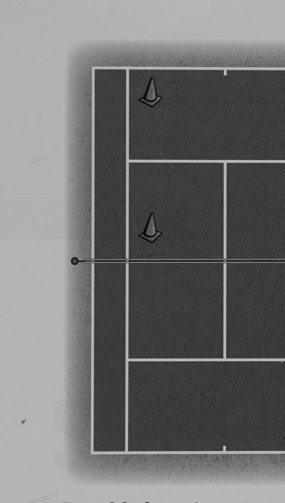
Chương 4
Kỹ năng giao bóng
Bất kể phong cách giao bóng hay cách chơi nào, kỹ thuật là nền tảng cho một chuyển động giao bóng tuyệt vời và kỹ thuật bắt đầu từ cách cầm vợt. Hầu hết các tay vợt chuyên nghiệp đều chọn cách đánh giao bóng bằng cách cầm vợt kiểu Continental. Cách cầm vợt này cho phép người chơi thực hiện được tất cả các cú giao bóng—phẳng, cắt và xoáy lên. Cách cầm vợt trái tay kiểu Eastern cũng có tác dụng đánh được tất cả các quả giao bóng, đặc biệt là một cú giao bóng xoáy lên. Kiểu cầm này khép mặt vợt nhiều hơn một chút so với kiểu kiểu Continental, do đó nó làm cho cú giao bóng xoáy lên dễ đánh hơn. Cách cầm vợt trái tay kiểu Eastern khiến cho việc đánh một cú giao bóng lát trở nên khó khăn hơn một chút. Những người chơi kém tiến bộ hơn có xu hướng sử dụng cách cầm vợt Eastern và cuối cùng chuyển cách cầm vợt của họ về phía cách cầm vợt Continental khi kỹ thuật của họ được cải thiện.
Mục tiêu của người chơi khi đặt chân là thiết lập một thế đứng cho phép kỹ thuật giao bóng tốt nhằm tối ưu hóa việc kiểm soát bóng. Khi đặt chân cho một quả giao bóng, người chơi phải suy nghĩ về phong cách giao bóng và lối chơi nào sẽ sử dụng cũng như cách tối đa hóa thế đứng để cho phép thực hiện chuyển động dự định trên quả giao bóng. Tư thế phổ biến nhất cho chuyển động tuyến tính là khép kín (một chân trước chân kia). Chuyển động tuyến tính (xem hình 4.1) giữ cho động lượng của cơ thể theo đường thẳng hoặc hơi chéo và không kết hợp nhiều chuyển động xoay thân và động lượng góc. Chuyển động góc (xem hình 4.2) kết hợp sử dụng nhiều động tác xoay vai và thân hơn và yêu cầu bàn chân khép lại nhiều hơn. Các kiểu chuyển động khác nhau có liên quan đến kiểu giao bóng mà người chơi đánh. Cú giao bóng mạnh, bao gồm các cú giao bóng phẳng và mạnh, là sự kết hợp giữa các chuyển động tuyến tính và góc cạnh. Những cú giao bóng xoáy lên phụ thuộc nhiều hơn vào chuyển động góc quay của cẳng tay, vai và hông. Ngay cả trước khi người chơi giao bóng, vị trí đặt chân sẽ gửi một thông báo về loại người giao bóng của người chơi. Khoảng cách mà người chơi đứng gần điểm băm trung tâm nói lên rất nhiều điều về cách người chơi sẽ giao bóng. Người chơi đứng gần dấu thăng thể hiện ý thức kiểm soát sân và khả năng giao bóng tới tất cả các vị trí trong ô giao bóng mà không tạo ra góc do đứng xa tâm hơn. Also, this player sự chuyển động. sự chuyển động. có thể đang có kế hoạch chạy nhanh xung quanh một cú đánh cụ thể, chẳng hạn như cú đánh trái tay, và việc đứng gần trung tâm hơn sẽ tạo cơ hội tốt hơn cho cú đánh này. Một đấu thủ đứng xa trung tâm hơn sẽ sử dụng góc lớn hơn để kéo đối thủ ra khỏi sân và có thể thích vị trí đỡ bóng của đối thủ hơn. Ví dụ: về phía quảng cáo, nếu người giao bóng thuận tay phải đánh một cú giao bóng phẳng hoặc lát cắt mạnh và đối thủ bắt được nó muộn, thì cú đỡ bóng sẽ đi thẳng xuống phía thuận tay của người giao bóng, vốn là vũ khí của người giao bóng.
quăng
Mặc dù người chơi quần vợt có thể có nhiều chuyển động, gập đầu gối, thu bóng và các điểm tiếp xúc khác nhau, nhưng cú tung bóng là điều cần thiết để thực hiện một cú giao bóng thành công. Việc tung bóng trong chuyển động giao bóng có thể xác định liệu quả giao bóng của người chơi là thành công hay là nguồn gốc của sự thất vọng. Người chơi cần một cú ném đáng tin cậy, đúng thời điểm và đúng vị trí. Việc tung bóng phải được tính toán nhịp nhàng với cánh tay giao bóng di chuyển về phía sau để bắt đầu chuyển động. Để biết kỹ thuật tung bóng cho các cú giao bóng cụ thể, xem Kỹ thuật cho các cú giao bóng cụ thể ở trang 89. Động tác đầu tiên của cánh tay tung bóng rất quan trọng đối với chuyển động giao bóng. Hướng mà cánh tay ném đi lên trên sẽ quyết định kiểu giao bóng được đánh. Một trong những cách tốt nhất để mở rộng cánh tay hướng lên trên được gọi là tung chữ V (còn gọi là J). Khi cánh tay chạm vào điểm thấp nhất khi di chuyển xuống và sau đó hướng ra phía trong đùi, nó sẽ tạo thành hình chữ V (hoặc có thể là chữ J) lớn. Hình dạng chính xác không quan trọng, nhưng điều cần thiết là phải xác định vị trí dọc theo đường dẫn V đó sẽ mang lại cho người giao bóng điểm liên lạc và xoay trục tốt nhất. Chữ V có thể được làm nhỏ hơn để phù hợp với chuyển động dịch vụ hoặc có thể loại bỏ nó. Đối với bất kỳ cú ném nào, mục tiêu của người chơi là di chuyển cánh tay lên trên, từ từ và có chủ ý, đồng thời tạo sự cân bằng cho quả bóng để quả bóng nghiêng hoặc không xoay. Chuyển động trơn tru của cánh tay ném đi lên (xem bởi vì nó cho phép bàn tay thả bóng theo chuyển động linh hoạt. Nó cũng cho phép người chơi cảm thấy căng ở cánh tay ném và cơ lưng trên để tạo ra tầm tiếp cận tối ưu cho cú giao bóng. Động tác tung chữ V kéo căng cơ lưng trên khi cánh tay vươn lên. Cú ném này là cách hoàn hảo để các người giao bóng tạo và sử dụng xung lượng góc và chuyển động quay thích hợp trong chuyển động của chúng. Cú ném phải đủ cao để đầu vợt có thể chạm tới và tiếp xúc với bóng với cánh tay duỗi thẳng hoàn toàn. Các vấn đề có thể phát sinh nếu cú ném quá cao hoặc quá thấp so với cơ thể. Nếu lượt ném quá cao, người giao bóng phải đợi và tính thời gian chính xác cho điểm tiếp xúc. Trong khi người giao bóng chờ bóng đi xuống, khuỷu tay và cơ thể không chịu nổi trọng lực và thường bắt đầu co lại, tạo ra cú giao bóng kém hiệu quả hơn.
ĐIỂM HUẤN LUYỆN |
Người giao bóng sử dụng chuyển động tuyến tính (hướng nhiều hơn về phía sân) có thể sẽ sử dụng cú tung thẳng hơn hoặc cú tung chữ V viết tắt một chút. Kiểu ném đó sẽ thả về phía trước và sau đó kéo dài ngược lên theo cùng một hướng và sẽ được kéo dài hơn về phía trước cơ thể. Người chơi chỉ nên sử dụng cú ném tuyến tính với chuyển động nhanh hơn vì cú ném làm giảm lượng thời gian có sẵn để thực hiện cú giao bóng.
cố lên. Đôi khi, tay vợt chạm vào điểm tiếp xúc thấp hơn, khiến đầu cúi xuống quá nhanh hoặc vai của tay vợt xoay quá sớm, khiến bóng đi vào lưới. Cú ném thấp hơn sẽ ổn nếu chuyển động nhanh, trôi chảy và kỹ thuật hiệu quả, nhưng kỹ thuật bị hỏng có thể khiến người giao bóng đưa tay về phía trước nhiều hơn để bù đắp cho cú ném thấp. Việc tung bóng thấp ở xa hơn về phía trước không được khuyến khích nhưng có thể đủ hiệu quả để một số người giao bóng thực hiện cú giao bóng. Theo thời gian, người chơi này sẽ tạo ra một điểm tiếp xúc mới có khả năng quá thấp để trở thành một cú giao bóng mạnh. Atoss quá xa hoặc quá gần cơ thể cũng có thể gây ra vấn đề. Một cú ném quá gần cơ thể sẽ khiến người giao bóng phải ngả người ra sau một cách lúng túng trước khi thực hiện động tác. Chuyển động này có thể dẫn đến mất thăng bằng không đúng cách trong suốt quá trình chuyển động và sau đó là thiếu lực. Một cú ném quá xa sẽ khiến người giao bóng thay đổi chuyển động khiến vùng năng lượng bị mất. Vùng quyền lực là cảm giác của người giao bóng khi kỹ thuật thích hợp đã cung cấp một điểm tiếp xúc được thiết kế để có công suất tối đa. Mặc dù vị trí tung bóng phụ thuộc vào kiểu giao bóng nhưng nó phải nhất quán. Việc tung bóng không nhất quán có thể góp phần hình thành thói quen giao bóng không tốt và gây ra vấn đề cho người giao bóng. Một số huấn luyện viên muốn xem quả bóng được ném ở vị trí 12 giờ cho tất cả các lần giao bóng; các huấn luyện viên khác thích ném bóng lúc 1 giờ cho giao bóng cắt, ném lúc 12 giờ cho giao bóng phẳng và giao bóng lúc 11 giờ cho giao bóng xoáy lên. (Những ví dụ này dành cho người chơi thuận tay phải; điều ngược lại cũng đúng đối với người chơi thuận tay trái.) Miễn là vị trí nhất quán, người giao bóng có thể tối đa hóa khả năng ngụy trang của quả giao bóng.
CHUỖI ĐỘNG
Khi xây dựng một cú giao bóng đẳng cấp thế giới, chuỗi động học và tác động của nó lên chuyển động giao bóng là một lĩnh vực quan trọng cần được chú trọng. Tiếp theo là các thành phần của chuỗi động học và các thành phần này sẽ được thảo luận chi tiết trong các phần sắp tới.
1. Tư thế 2. Cong đầu gối 3. Xoay hông 4. Xoay thân 5. Xoay cánh tay 6. Duỗi khuỷu tay và nghiêng cẳng tay
7. Chuyển động của cổ tay 8. Theo dõi và hạ cánh
1. Thế đứng Cân bằng tốt và tư thế thoải mái mang lại một nền tảng vững chắc cho phép người chơi với tay lên lấy bóng một cách thích hợp. Chọn thế đứng phù hợp là điều quan trọng để duy trì sự cân bằng và nhịp điệu tốt trong suốt chuyển động. Hai tư thế chính được sử dụng để thực hiện cú giao bóng là tư thế đứng trên bục và tư thế xác định. Kỹ thuật mà người chơi sử dụng sẽ không bị ảnh hưởng bởi hai tư thế này. Tư thế đứng đặt hai chân ở cùng một vị trí trong toàn bộ quá trình giao bóng. Vị trí đặt chân phải rộng bằng vai để có cảm giác thoải mái, cân bằng (xem hình 4.4). Tư thế này có lợi cho người giao bóng sử dụng chuyển động góc cạnh hơn, có thời gian chuẩn xác và có thể tiến thẳng lên để đánh quả giao bóng mà không cần đưa chân sau lên chạm chân trước. Thế đứng xác định bắt đầu như thế đứng trên bục, nhưng trong quá trình chuyển động, người chơi đưa chân sau lên chạm vào chân trước (xem hình 4.5). Tư thế này có thể tạo thêm một chút động lực để di chuyển về phía trước và hướng lên trên và có thể giúp người chơi dễ dàng tiếp cận quả giao bóng hơn. Cả hai thế đứng đều có hiệu quả và cần được kiểm tra để kiểm tra sức mạnh của người chơi khi giao bóng. Để kiểm tra thế đứng chính xác, người chơi đứng trên đường cuối sân và chỉ cần cố gắng đánh một quả bóng vào ô giao bóng hoặc ô giao bóng mà không cần sử dụng chân. Sau đó, người chơi sử dụng thế đứng chính xác và tìm kiếm bất kỳ sự thay đổi mạnh mẽ nào về sức mạnh. Việc thiếu lực có thể biểu thị rằng người chơi đang mất lực khi di chuyển chân lên, người chơi cần thay đổi vị trí của bàn chân trong tư thế hoặc bản thân cú xoay người không chính xác về mặt kỹ thuật. Người chơi thường đưa chân sau lên không đúng cách. Thông thường họ không bước hết sang chân kia, điều này có thể gây mất ổn định trong chuyển động. Trong những trường hợp như vậy, người chơi nên điều chỉnh kỹ thuật và thử lại. Việc thiếu nguồn điện cũng có thể là một tín hiệu để thử tư thế đứng trên bệ. Để kiểm tra tư thế đứng trên bục, người chơi chỉ cần tiến lên và đánh quả giao bóng mà không đi qua đường biên ngang. Tiếp theo, người chơi kết hợp thêm một chút xung lượng góc thông qua việc xoay thân cây để xem có cải thiện hay không.
)ee Trong tư thế đứng, trọng lượng bắt đầu ở cả hai chân và sau đó chuyển lên trên vào sân khi người chơi đưa tay lên để đánh quả giao bóng. Thế đứng xác định có khả năng chuyển trọng lượng rõ ràng hơn. Một số người chơi thích bắt đầu bằng chân trước và sau đó đá trở lại bằng chân sau trước khi di chuyển lùi về phía trước và hướng lên trên để giao bóng. Những người chơi khác thích bắt đầu bằng chân sau và chuyển trọng lượng về phía trước và hướng lên trên. Việc thử nghiệm cả hai thế đứng giúp người chơi xác định thế đứng tốt nhất cho cú giao bóng.
2. Cong đầu gối Vị trí và chuyển động của đầu gối là rất cần thiết để thực hiện một cú giao bóng tốt. Đầu gối có thể giúp tạo ra sự uốn cong khi bắt đầu chuyển động giao bóng, nhưng chủ yếu chúng được sử dụng để duỗi và nâng cơ thể lên để đánh bóng. Khi người chơi đưa tay ra sau và chuẩn bị đưa khuỷu tay vào vị trí đã đặt, đầu gối gập về phía trước để bắt đầu quá trình tải của chân (xem hình 4.6). Việc uốn cong đầu gối phải thoải mái và có đủ lực khi đầu gối duỗi ra và di chuyển lên trên. Việc uốn cong đầu gối thích hợp cho biết người chơi có thể vươn cao bao nhiêu để có điểm tiếp xúc tốt, điều này phụ thuộc vào kích thước của người chơi và kiểu giao bóng. Điểm tiếp xúc tối ưu là vị trí mà tại đó cánh tay giao bóng được duỗi thẳng hoàn toàn và đầu gối hướng lên trên và hơi hướng về phía trước.
3. Xoay hông Phần tiếp theo của chuỗi là chuyển động của hông. Từ vị trí mà đầu vợt đứng yên hoặc trong một số trường hợp hơi lắc lư, hông thực hiện chuyển động lắc lư nhẹ về phía trước và lấy đà trước khi quay về phía sau để dồn trọng lượng lên chân sau. Khi bóng được ném để thực hiện cú giao bóng xoáy lên, giao bóng phẳng hoặc cắt lát, người chơi xoay người về phía trước và cố gắng đặt hông gần lưới nhất trên đường cuối sân (xem hình 4.7). Đối với người chơi ở cấp độ mới bắt đầu đến trung cấp, chuyển động thả lỏng của hông xảy ra khi bàn chân trước xoay; đối với những người chơi cao cấp hơn, nó xảy ra trên không. Trong cú giao bóng xoáy lên, thân người hướng vào sân tương tự như cú giao bóng cắt lát hoặc giao bóng phẳng nhưng vợt
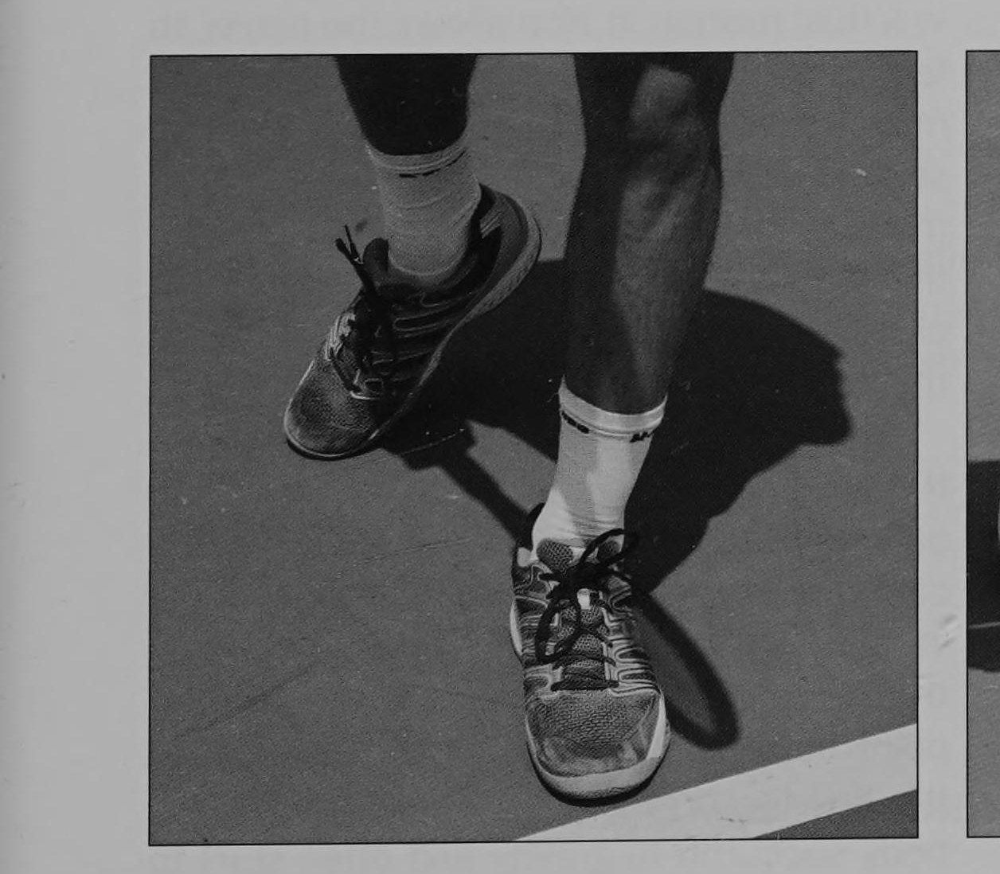
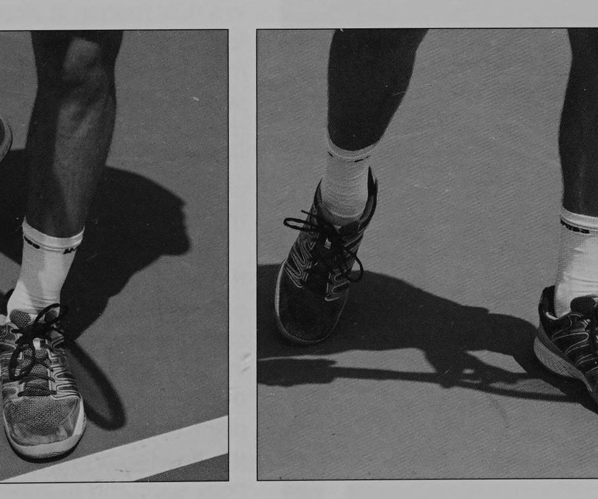
góc cạnh trên cú giao bóng. chải bóng hướng lên trên để tạo xoáy lên để nó nảy vào đối thủ. Thời điểm ném là lúc 12 hoặc 1 giờ. Động tác hông cho cú đá giao bóng là khác nhau. Đối với cú giao bóng này, cả hai hông đều đẩy về phía trước và đến hàng rào bên cạnh, cho phép người giao bóng đưa tay ra phía sau và tiến lên khi tung bóng vào lúc 11 giờ (đối với người chơi thuận tay phải) để truyền cú đá xoáy lên, khiến quả giao bóng di chuyển ra xa đối phương (xem hình 4.8). Ngay trước khi bắt đầu giơ bóng lên, mỗi người chơi có một chuyển động riêng biệt. Để có cú vung vợt mượt mà hơn, người chơi nên để tay vợt lắc nhẹ về phía trước kết hợp với hông. Động tác lắc lư về phía trước này đẩy vai lên và bắt đầu quá trình đưa vợt vào vùng lực trước khi tiếp xúc.
4. Xoay thân Khi hông xoay về phía sau và cánh tay ném tạo thành hình chữ V để bắt đầu thực hiện, thân người bắt đầu xoay về phía sau một cách tự nhiên, khiến vai quay một nửa. Vì tay tung bóng đang đưa bóng lên cao nên vai trước cao hơn vai sau và khuỷu tay. Khuỷu tay quay về phía sau sao cho nó ở vị trí qua tâm lưng ở cùng độ cao với xương sườn
Động tác lùi truyền thống bắt đầu bằng chuyển động đi xuống của cả hai cánh tay cùng lúc (xem hình 4.9). Cánh tay tung bóng di chuyển về phía đùi của chân trước, còn cánh tay giao bóng di chuyển xuống và lùi lại, đưa lòng bàn tay xuống vị trí thoải mái. Cánh tay giao bóng lùi về phía sau bao xa tùy thuộc vào tốc độ chuyển động. Cánh tay giao bóng kết thúc với việc đặt khuỷu tay và cánh tay vào vùng pawer, nghĩa là vai cân bằng nhưng nghiêng lên trên về phía cánh tay tung. Sau khi đưa tay ra sau, nâng cánh tay lên để đặt vai. Chuyển động này phải trôi chảy, không bị giật. Khi nâng đầu vợt lên, tay giao bóng phải uốn cong một chút. Hình ảnh giữ lòng bàn tay hướng xuống trong suốt rất hữu ích vì nó ngăn ngừa một khuyết điểm xấu có thể phát triển ở cổ tay ngay trước khi tiếp xúc. Một lòng bàn tay mở có thể hạn chế sức mạnh của người giao bóng. Đồng thời tay giao bóng lùi về phía sau, tay tung bóng đưa bóng lên để thả.
ĐIỂM HUẤN LUYỆN
Tư thế chân kém có thể có tác động tiêu cực đến việc xoay thân cây. Ví dụ: nếu thế đứng quá khép (chân sau quá xa về phía sau và về phía sau), hông có thể bị cản trở trong việc xoay đủ mức về phía trước, khiến vị trí của chúng quá khép để tạo ra lực khi giao bóng. Việc xoay thân và vai quá mức cũng có thể có tác động tiêu cực đến cú giao bóng. Nếu thân và khuỷu tay quay về phía sau quá xa, chúng cần thêm một phần giây nữa để xoay về phía trước. Bởi vì cú giao bóng là một cú đánh chính xác, thời gian tăng thêm này có thể khiến cú ném đi quá xa, do đó tạo ra điểm tiếp xúc thấp.
Sau đó, đầu vợt vươn lên và hướng về phía vai, tạo ra vị trí cố định của khuỷu tay (xem hình 4.10). Cánh tay giao bóng uốn cong tạo thành hình chữ L (góc 90 độ), nhưng vai trước nghiêng lên trên. Tư thế này còn được gọi là tư thế chiếc cúp. Vị trí khuỷu tay đặt phụ thuộc vào chuyển động giao bóng, nhưng nó phải ở dưới vai một chút và hơi xoay về phía sau. Người chơi phải cẩn thận để không xoay quá mức, điều này có thể dẫn đến mất điện. Từ vị trí quyền lực này, cánh tay giao bóng vươn lên để đánh bóng. Khi cánh tay ở vị trí cuối của backswing phía sau lưng, nó sẽ được xoay ra ngoài ở vai.
cánh tay di chuyển tuần tự. cánh tay giao bóng đạt đến vị trí đã định hoặc tư thế cúp.
ĐIỂM HUẤN LUYỆN
Cú giao bóng viết tắt (hoặc tuần tự) ngày nay đang trở nên phổ biến vì những người chơi như Andy Roddick sử dụng nó một cách hiệu quả và có sức mạnh. Động tác rút lui viết tắt là hoàn hảo cho những người thích thiết lập nhanh hơn và sử dụng ít chuyển động của cánh tay hơn. Nó cũng có tác dụng đối với những người chơi bị mất lực ở tay hoặc chân hoặc những người gặp khó khăn trong việc tạo ra chuyển động linh hoạt với cú vung hoàn toàn thu lại. Trong chuyển động viết tắt, cánh tay tung bắt đầu khi người chơi nghiêng hông vào sân. Việc tung bóng được thực hiện nhanh hơn một chút và nó thường được thực hiện với việc người chơi tải các chân, sau đó là cánh tay giao bóng đưa lên nhanh chóng. Cánh tay giao bóng bắt đầu chuyển động sau cánh tay tung bóng. Thay vì sử dụng chuyển động đồng thời đưa xuống cùng hướng lên để đặt khuỷu tay, người chơi đưa cánh tay giao bóng thẳng về phía sau và theo đường cao hơn chuyển động thông thường. Đường đi phải thẳng hàng với vai hoặc trong một số trường hợp, hơi thấp và hướng xuống. Mục tiêu là di chuyển cánh tay giao bóng vào vị trí nhanh hơn so với một cú giao bóng tiêu chuẩn.
6. Duỗi khuỷu tay và quay sấp cẳng tay Mục đích của việc duỗi khuỷu tay là để người chơi có thể đánh bóng càng cao càng tốt và gần độ cao của quả bóng được ném. Đây là điểm tiếp xúc nguồn điện. Như đã lưu ý trước đó, khuỷu tay đặt thấp hơn vai một chút và tạo thành một góc 90 độ. Khuỷu tay nghiêng sang một bên một cách thoải mái và sau khi đặt vào, khuỷu tay không được nhúng xuống. Sau đó, người chơi duỗi khuỷu tay lên trên và hơi hướng ra ngoài để tạo một cú giật mạnh và sẵn sàng đánh bóng (xem hình 4.11). Khi thực hiện cú vung lên, cánh tay giao bóng quay bên trong với tốc độ rất cao và tạo ra gia tốc cần thiết để đánh quả giao bóng một cách mạnh mẽ. Khi cánh tay giao bóng bắt đầu di chuyển về phía trước và khuỷu tay mở rộng ra ngoài, cẳng tay nghiêng (xoay vào trong; xem hình 4.12) và tạo cho cổ tay một góc tốt để đánh bóng. Nó tương tự như việc đánh bóng cao năm bằng mặt vợt. Mục tiêu của cánh tay tung bóng là giữ cho nó duỗi ra càng lâu càng tốt cho đến khi cánh tay giao bóng quay về phía trước. Khi cánh tay giao bóng di chuyển, cánh tay tung bóng sẽ rơi xuống và ngang cơ thể một cách tự nhiên. Trong cú giao bóng aslice, góc nghiêng của cánh tay giao bóng là chuyển động liếc nhìn ra bên ngoài quả bóng. Trong một cú giao bóng xoáy lên, nó sẽ được phóng đại hơn một chút khi mặt vợt hướng ra khỏi thân và hướng về phía đường biên. Tại thời điểm này trong chuỗi động năng, cú giao bóng cũng bổ sung thêm động tác cong lưng (xem Topspin và Kick Serve ở trang 90) để tải bên dưới quả bóng để đi lên.
7. Chuyển động của cổ tay Khi thu cánh tay lại, cổ tay hơi duỗi quá mức khi bàn tay uốn cong về phía sau ở cổ tay. Khi cổ tay tăng tốc về phía đánh bóng, cổ tay duỗi thẳng và sau đó tiếp tục uốn cong như một phần của động tác tiếp theo. Hành động này được gọi là bẻ cổ tay. Nhiều huấn luyện viên tìm kiếm hành động này khi họ giúp học trò thực hiện một cú giao bóng thẳng. Một lĩnh vực trọng tâm chính là đảm bảo giữ lòng bàn tay hướng xuống khi chuẩn bị đánh bóng. Việc mở lòng bàn tay hạn chế khả năng đánh một cú giao bóng tuyệt vời của người chơi.
8. Thực hiện theo và tiếp đất Việc hoàn thành quả giao bóng bắt đầu bằng việc chuyển trọng lượng từ chân này sang chân kia và sau đó vợt di chuyển qua điểm tiếp xúc. Sau khi bóng được đánh, cánh tay bắt đầu giảm tốc và cơ thể bắt đầu hồi phục và chuẩn bị cho cú đánh trả (xem hình 4.13). Chân nào tiếp đất trước tùy thuộc vào sở thích của người giao bóng.
KỸ THUẬT CHO CÁC PHỤC VỤ CỤ THỂ
Người chơi có ba lĩnh vực trọng tâm để phát triển cú giao bóng: sức mạnh, độ xoáy và vị trí. Đối với cú giao bóng phẳng, người chơi phải tập trung vào sức mạnh, trong khi các cú giao bóng cắt và xoáy lên yêu cầu tập trung vào việc sử dụng nhiều kiểu xoáy khác nhau để tàn phá đối thủ. Tất cả bốn loại giao bóng đều yêu cầu phát triển chất lượng của vị trí giao bóng. Sau đây là một số tình huống cho các cú giao bóng khác nhau và các kỹ thuật cụ thể để thực hiện chúng. Việc kết hợp kỹ thuật giao bóng phẳng, giao bóng cắt, giao bóng xoáy lên và giao bóng với các biến thể về vị trí, độ xoáy và chiến thuật có thể mang lại cho người chơi nhiều lựa chọn để xây dựng và giành điểm.
Phục vụ phẳng
Cú giao bóng phẳng là cú giao bóng mạnh nhất trong bốn kiểu. Quả bóng đánh ra từ cú giao bóng này có rất ít hoặc không có độ xoáy. Người chơi nên đánh vào đường biên hoặc góc khi cố gắng lấy bóng của đối phương, đánh vào người để ngăn chặn đối phương hoặc di chuyển đối phương ra khỏi đường đi. Khi đánh chính xác, đúng lúc, đúng tốc độ và đúng vị trí, cú giao bóng này rất hiệu quả.
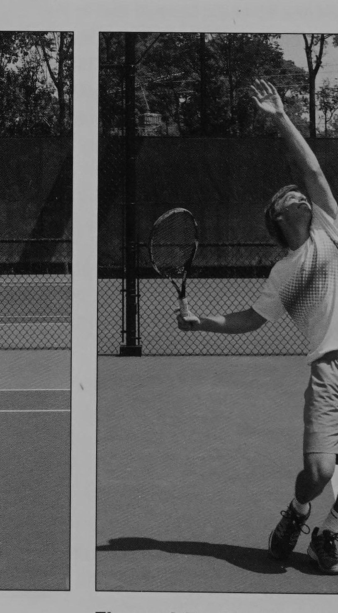
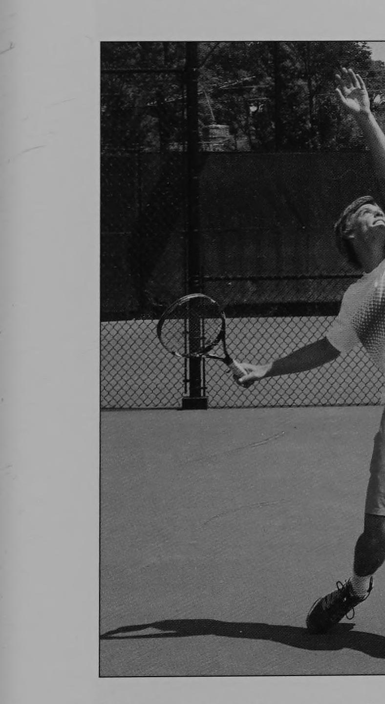
Chuẩn bị
Giai đoạn giao bóng phẳng này được giải thích trong phần Chuỗi động học. Cơ thể chuẩn bị cho một chuyển động giao bóng trơn tru và linh hoạt, bao gồm cả việc sử dụng chân một cách hiệu quả. Trong một quả giao bóng phẳng, cú ném phải bay lên không trung khoảng 2 feet (0,6 m) tính từ phần mở rộng thích hợp của cánh tay (cánh tay duỗi thẳng hoàn toàn, các ngón tay hướng lên với lòng bàn tay mở) về phía trước và khoảng 1 foot (0,3 m) về bên phải đối với người chơi thuận tay phải hoặc sang trái đối với người chơi thuận tay trái.
Đưa vợt tới và tiếp xúc bóng
Khuỷu tay quay về phía sau đến vị trí mà người giao bóng có thể nhìn về phía sau và thấy khuỷu tay uốn cong và xoay nhẹ qua vị trí thẳng lưng. Khi cánh tay duỗi ra từ vị trí khuỷu tay, cú ném đi lên và cơ thể lấy đà hướng về phía quả bóng: vai hướng về phía trước. Sau đó, cánh tay giao bóng bắt đầu đưa lên và cẳng tay hướng ra ngoài khi khuỷu tay duỗi lên trên và hơi hướng ra ngoài; mặt trong của cẳng tay hơi hướng ra ngoài, tương tự như tư thế ném bóng chày hoặc bóng đá. Khi người giao bóng tiến tới để đánh bóng, hai chân duỗi ra tại điểm tiếp xúc và sau đó cổ tay chạm vào bóng.
Động tác kết thúc
Sau khi tiếp xúc, đầu vợt tiếp tục đi xuống và cuối cùng đi qua phía đối diện của cơ thể người chơi.
phục vụ lát
Cú giao bóng cắt lát rất hiệu quả vì xoáy ngang của nó. Vị trí tối ưu bao gồm một cú giao bóng cắt xa đối phương và một cú giao bóng cắt vào đối phương. Một trong những mục tiêu của người giao bóng là ngăn cản đối phương đọc bóng tốt và tăng khả năng đỡ bóng yếu. Cú cắt bóng là một cú giao bóng tuyệt vời vì tính đa dạng, giúp đối thủ phải đoán mò và nó rất hiệu quả nếu được sử dụng kết hợp với các cú giao bóng phẳng và xoáy lên.
Chuẩn bị
Việc chuẩn bị tương tự như đối với cú giao bóng phẳng, nhưng trong một cú giao bóng cắt, phần thân trên sẽ nghiêng sang một bên nhiều hơn trong khi hơi nghiêng về phía sau một chút ở vị trí chịu tải. Xoay quá mức là rõ ràng khi cơ thể di chuyển về phía sau một cách khó chịu. Vòng quay nên hơi nghiêng về phía sau, nhưng không quá cường điệu để tránh khiến SOK lùi xa hơn để vào đúng vị trí. Trong một cú giao bóng cắt, cánh tay tung đi xa hơn một khoảng chiều dài về phía bên trái của người chơi thuận tay trái hoặc sang bên phải của người chơi thuận tay phải, tạo thành hình chữ V lớn hơn và cho phép xoay thân nhiều hơn khi tiếp xúc (xem hình 4.14).
Đưa vợt tới và tiếp xúc bóng
Cánh tay tiếp tục hướng lên trên, khuỷu tay mở rộng và cẳng tay nghiêng sao cho mặt trong của cẳng tay di chuyển ra ngoài và cổ tay hướng về phía bên ngoài quả bóng. Điều này tạo ra một cú đánh liếc ngang tạo ra độ xoáy ngang cho quả bóng. Nếu cánh tay không quay sấp khi duỗi ra thì nghĩa là cánh tay di chuyển quá gần cơ thể, tạo ra chuyển động chật chội cản trở khả năng linh hoạt. Vai trước và tay ném được xoay nhiều hơn để tạo thêm động lượng góc cần thiết cho cú cắt. Góc của cơ thể và vai trước vẫn khép lại hơn một chút khi cơ thể duỗi ra. Vị trí của vai trước tạo ra góc mà vợt phải di chuyển để tạo ra sự tiếp xúc tạo ra vết cắt. Bởi vì cú ném cho cú giao bóng cắt phải hướng ra ngoài nhiều hơn, điểm tiếp xúc (xem hình 4.15) cho cú giao bóng cắt là khoảng một quả bóng xa hơn (bên phải đối với người chơi thuận tay phải, bên trái đối với người chơi thuận tay trái) so với cú giao bóng phẳng.
Động tác kết thúc
Quá trình thực hiện tiếp theo mất nhiều thời gian hơn một chút vì cổ tay đang hướng xung quanh quả bóng. Đầu vợt cuối cùng ổn định ở mức ngang eo.
Topspin và Kick Giao bóng
Cú giao bóng xoáy lên rất hiệu quả trên sân đất nện hoặc sân cứng vì độ nảy được tạo ra bởi chuyển động giao bóng và độ an toàn của độ cao khi nó đi qua lưới. Cú giao bóng này thực sự có thể gây ra vấn đề cho những người trả giao không thích hoặc không thể xử lý những quả bóng có độ nảy cao hơn hoặc những quả bóng bật ra khỏi vùng tấn công của họ. Một cú giao bóng xoáy lên tốt thường nảy vào đối thủ.
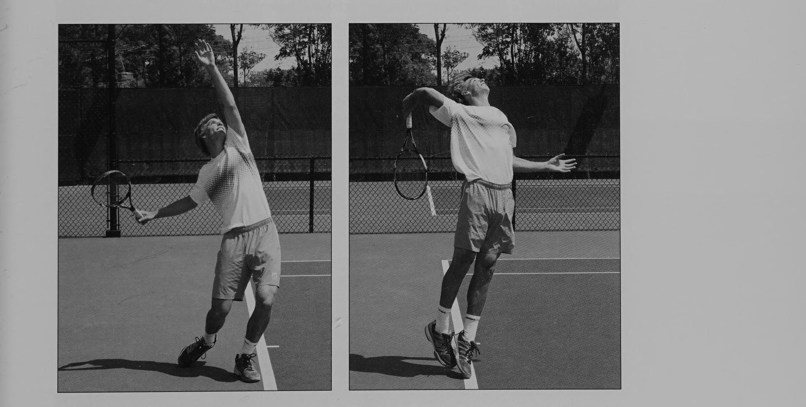
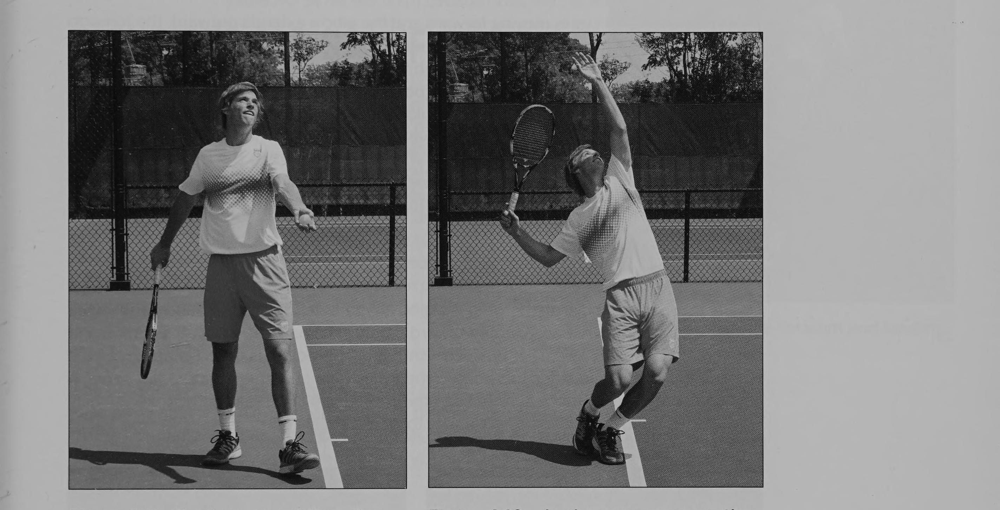
không, tùy thuộc vào vị trí của cú giao bóng và độ xoáy. Một cú giao bóng xoáy lên nảy thẳng vào đối thủ phải tiếp đất phía trước đối thủ khoảng 0,3 m và dội vào cơ thể. Một quả giao bóng với mục tiêu bật xa đối phương nhưng lại đi chệch cột dọc.
Chuẩn bị
Đối với cú xoáy lên hoặc cú đá giao bóng, vòm lưng khi nó quay ra sau sao cho hông đẩy về phía trước, song song với vạch cuối sân và vai nghiêng về phía sau. Đầu và vai vợt nghiêng về phía sau trong khi cơ thể cố định và giữ ở tư thế cong lưng (xem trong một phần giây trước khi cơ bụng co lại. Vai giữ nguyên cho đến khi quả giao bóng được đánh và sau đó xoay về phía trước theo hướng giao bóng. Do có vòm ở phía sau nên đầu gối chịu lực nhiều hơn một chút so với các kiểu giao bóng khác. Khi tung, cánh tay lùi từ hình chữ V sang một bên. Nó được ném về phía sau theo một đường thẳng, kết hợp với việc cong lưng và quay đầu ra sau một cách thoải mái. Sau đó cơ thể di chuyển về phía trước và bóng được đánh. Quả giao bóng thường được tung lên trên hoặc hơi ra sau đầu người giao bóng; nó đi qua vai trái đối với người chơi thuận tay phải và vai phải đối với người chơi thuận tay trái. Việc tung cú giao bóng xoáy lên thấp hơn và nhiều hơn ở những cú giao bóng xoáy lên phía trước. hơn là tung cú giao bóng.
Đưa vợt tới và tiếp xúc bóng
Đối với cú giao bóng, cơ thể vẫn hướng về phía hàng rào bên cho đến khi bóng ra khỏi vợt. Quỹ đạo vợt hướng lên trên và ngang qua bóng hoặc từ trái sang phải từ hướng 7 giờ đến 2 giờ. Trong giai đoạn này, người chơi nên tập trung vào hông di chuyển lên trên để thuận tiện cho việc di chuyển lên rồi ra ngoài. Khi phần lưng cong mở rộng, cẳng tay và vợt sẽ nghiêng một cách tự nhiên, do đó mặt trong của cẳng tay hơi hướng ra ngoài và hướng lên trên. Khi hai chân hướng lên trên, đầu vợt ở một góc mà nếu người chơi hướng chân lên trên đúng cách thì có thể khiến đầu vợt chạm vào bóng tạo ra cú phát bóng. Xoáy lên được tạo ra từ việc duỗi đầu gối hướng lên trên và về phía mục tiêu kết hợp với đầu vợt di chuyển lên và ra ngoài về phía đường biên (xem hình 4.17). Sự khác biệt giữa kiểu bắt cổ tay đối với cú giao bóng và cú giao bóng xoáy lên là cánh tay giao bóng chạm bóng ở các góc khác nhau. Đối với cú giao bóng xoáy lên, bóng được ném thấp hơn và phía trước người chơi và chải từ sáu đến mười hai giờ, hoặc từ dưới lên trên của bóng, tạo ra một cú giao bóng xoáy lên về phía trước. Khi phát bóng, bóng được đánh từ vị trí từ 7 đến 2 giờ (5 đến 11 giờ đối với người giao bóng thuận tay trái), hoặc theo đường chéo hướng lên trên, tạo ra một xoáy xiên, khiến bóng nảy lên hoặc đá lên.
Động tác kết thúc
Trong một cú giao bóng, cổ tay bật ra xa cơ thể hơn và do đó thực hiện lộ trình bật ra trước rồi đưa đầu vợt vòng quanh, hướng về phía trên thắt lưng một chút ở phía đối diện của cơ thể. Cú giao bóng xoáy lên có đường xoay ra ngoài ít rõ ràng hơn nhưng chuyển động lên và qua nhiều hơn.
MARIMIZING HIỆU QUẢ CỦA PHỤC VỤ
Người chơi có thể tối đa hóa hiệu quả của cú giao bóng theo bốn cách: đánh mạnh, thêm nhiều cú giao bóng khác nhau, sử dụng ngụy trang và giao bóng theo vị trí. Đánh bằng sức mạnh rõ ràng là điều mà tất cả người chơi đều mong muốn; kết hợp với ba lựa chọn còn lại, nó có thể tạo ra bầu không khí bất khả chiến bại. ¢ Đánh bằng sức mạnh. Đánh bằng sức mạnh là một chiến lược hiệu quả để đe dọa đối thủ. Nó được sử dụng để có được điểm miễn phí hoặc nhận được câu trả lời yếu ớt từ đối thủ. Người chơi chủ yếu sử dụng sức mạnh khi giao bóng phẳng và đánh vào các góc hoặc xuyên qua đối thủ. Đánh mạnh trong mỗi lần giao bóng đều có nhược điểm: Đối thủ có thể quen với việc mong đợi một cú giao bóng hoặc tốc độ nhất định và người chơi có thể cảm thấy mệt mỏi hơn khi đánh mạnh liên tục. Thêm sự đa dạng. Tôi điều quan trọng là tất cả người chơi phải sử dụng sự đa dạng trong các cú giao bóng của mình. Sự kết hợp các cú giao bóng hợp lý không có nghĩa là luôn giao bóng chăm chỉ ở các địa điểm khác nhau; nó có nghĩa là thêm các biến thể chẳng hạn như đôi khi sử dụng quả giao bóng thứ hai làm quả giao bóng đầu tiên hoặc có thể đánh các loại giao bóng khác nhau. Một người giao bóng tốt sẽ theo dõi những cú giao bóng nào có hiệu quả trước đối thủ và khi nào nên sử dụng chúng một cách tốt nhất. Khi bắt đầu trận đấu, người chơi nên đánh giao bóng theo điểm mạnh cũng như điểm yếu của đối thủ. Điều này giúp người chơi đánh giá được sức mạnh của đối thủ mạnh đến mức nào. Thông tin này giúp người chơi biết điều gì sẽ xảy ra khi quay lại và đưa ra chiến lược để giành điểm. Dùng ngụy trang. Một cách ngụy trang tốt bắt đầu bằng một cú tung bóng ở cùng một vị trí bất kể đó là cú giao bóng đầu tiên hay quả giao bóng thứ hai và cú giao bóng đó là cú giao bóng Cắt, phẳng hay xoáy lên. (Việc tung cú giao bóng ra sau đầu không cho phép ngụy trang.) Người trả giao bóng không được đoán loại giao bóng nào sẽ được thực hiện. Hầu hết những người trả giao bóng tốt đều có thể đọc được hông và chuyển động của người giao bóng để biết cú giao bóng sắp tới. Họ cũng có thể tập trung vào quả bóng khi người giao bóng đang nảy nó hoặc chuẩn bị bắt đầu chuyển động. Vì vậy, các chuyển động ban đầu của người giao bóng càng nhất quán thì cơ hội ngụy trang thành công càng cao. Để ngăn người đỡ bóng đọc bóng tốt, người giao bóng có thể cố gắng giấu bóng trong tay càng lâu càng tốt. Xoay thân cây có thể che giấu quả bóng khỏi tầm nhìn của người quay lại. Một cách khác để ngụy trang quả giao bóng là tung bóng nhanh hoặc tung bóng được che giấu bởi tầm với dài hơn của cánh tay. Người trở về thường không nhìn thấy những kiểu cải trang này nên chúng cũng có thể gây ngạc nhiên. Phục vụ cho vị trí. Điều quan trọng là phải phục vụ ở nhiều địa điểm khác nhau. Người chơi nên sử dụng các biến thể của cú giao bóng ra ngoài, thân và T vào các vị trí cụ thể, ví dụ: thuận tay thân, trái tay thân, một cú giao bóng bắt đầu vào thân và phát ra rộng hoặc ngược lại, hoặc một cú giao bóng cắt bắt đầu đến một vị trí và di chuyển đến một vị trí khác. Nhiều khi người chơi gặp khó khăn khi thực hiện những cú giao bóng lớn về phía đường biên và bỏ bê việc giao bóng thân người. người giao bóng nên sử dụng phương pháp bướm khi phục vụ—kết hợp các vị trí từ các góc tới thân và từ thân tới các góc. Để hình dung phương pháp bơi bướm, hãy tưởng tượng hình dạng của một con bướm trên sân. Các cánh hướng ra ngoài để thực hiện một cú giao bóng rộng, và sau đó chúng quay trở lại để thực hiện một cú giao bóng vào người. Một số tay vợt rất giỏi đỡ bóng khi bị căng cơ, vì vậy việc giao bóng bằng cơ thể là cần thiết.
TẠO RA AURA
Khi người chơi bắt đầu phát huy tối đa hiệu quả của cú giao bóng, việc giữ cú giao bóng sẽ trở nên dễ dàng hơn. Những người giao bóng tuyệt vời có hào quang Bao quanh cú giao bóng của họ, điều đó có nghĩa là đối thủ của họ sợ cú giao bóng của họ hoặc ít nhất nghĩ rằng nó khó có thể phá vỡ được. Sau đây là một số mẹo và suy nghĩ để người chơi tạo ra bầu không khí xung quanh cú giao bóng của họ. ¢ Thiết lập một thói quen. Thói quen nói chung là rất quan trọng trong quần vợt, nhưng đối với một cú giao bóng, thói quen là điều cần thiết. Tất cả các người giao bóng tuyệt vời đều có một quy trình trước khi giao bóng. Ví dụ: thói quen của Maria Sharapova bao gồm vén tóc ra sau và nhảy một chút, biểu thị sự chuẩn bị của cô ấy cho cú giao bóng. Một thói quen nhất quán có thể giúp người chơi bình tĩnh trong các tình huống thi đấu. Quy trình trước khi giao bóng phải bao gồm cách người chơi bước lên vạch, cách người chơi ở vị trí cân bằng cho thế đứng, số lần người chơi nảy bóng và cách người chơi bắt đầu chuyển động. Cách thực hiện quy trình giao bóng trước này tùy thuộc vào người chơi, nhưng mục tiêu là phải nhất quán. ¢ Chỉ huy sân. Một cái nhìn mạnh mẽ về phía bên kia, một cú nhảy năng lượng hoặc tăng tốc có thể giúp người chơi nắm quyền chỉ huy. Người chơi nên đứng thẳng và lên kế hoạch cho điểm trước khi bước lên vạch, hãy nhớ rằng cú giao bóng có thể kiểm soát diễn biến của trận đấu.
ĐIỂM HUẤN LUYỆN
Cú giao bóng là cú đánh mà người chơi có quyền kiểm soát nhiều nhất, tuy nhiên điều đáng ngạc nhiên là người chơi thường xuyên thua trò chơi giao bóng của họ. Mặc dù thế trận trả giao bóng đã được cải thiện nhưng vấn đề giữ giao bóng chủ yếu xuất phát từ tâm lý người chơi phải đối mặt cũng như hiệu quả giao bóng của họ. Giữ giao bóng, đặc biệt đối với một đấu thủ vừa mới giao bóng hỏng hoặc đang trong tình thế áp lực, đó là một bài kiểm tra thực sự. Đối với nhiều người chơi, áp lực dẫn đến nhịp thở ngắn hơn, chân run rẩy và yếu ớt, đồng thời đầu óc trở nên không rõ ràng về vị trí tốt nhất để giao bóng. Những người chơi khác có thể bắt đầu nghĩ đến việc giành chiến thắng thay vì thực hiện một cú giao bóng tốt. Cách tốt nhất để tiếp cận việc giao bóng trong những tình huống này là người chơi tập trung vào vị trí giao bóng dựa trên chiến lược hoặc điểm mạnh và điểm yếu của đối thủ. Một lựa chọn khác có thể giúp người chơi giữ được cú giao bóng là tập trung vào một phần của cú giao bóng. Ví dụ, sau khi lấy bóng từ hàng rào phía sau hoặc bên hông, người chơi nên đứng sau đường cuối sân và thực hành tung bóng hoặc có thể gập đầu gối để kích thích tâm trí tập trung vào thành phần đó của cú giao bóng. Nó giúp bạn tiến lên vạch sau khi sử dụng trình kích hoạt này, thực hiện theo quy trình và thực hiện cú giao bóng như dự định. Người chơi có thể coi trình kích hoạt này như một cách để bắt đầu điểm theo cách mà người chơi muốn. Kích hoạt này rất hữu ích khi người chơi cảm thấy lo lắng hoặc đang gặp khó khăn trong việc thực hiện cú giao bóng đầu tiên.
* Sử dụng độ nảy bóng nhất quán. Độ nảy bóng khác nhau ở mỗi cá nhân. Dù người chơi lựa chọn điều gì, điều quan trọng là phải kiên định và biến nó thành một phần của
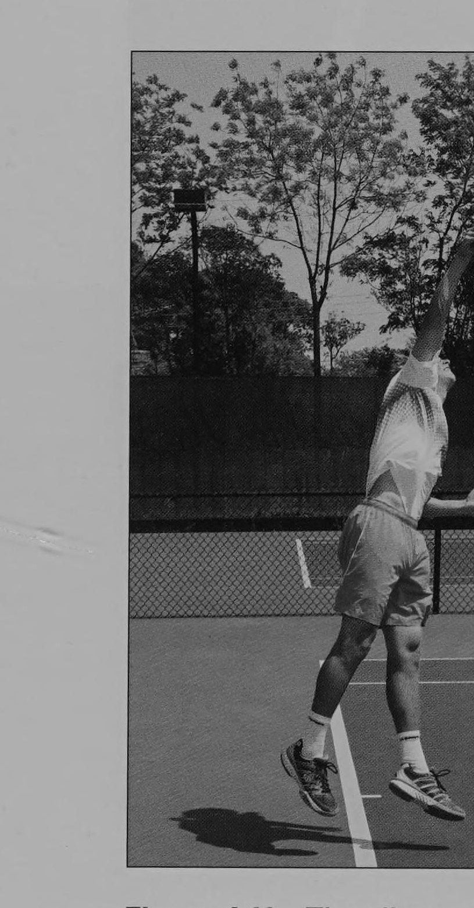
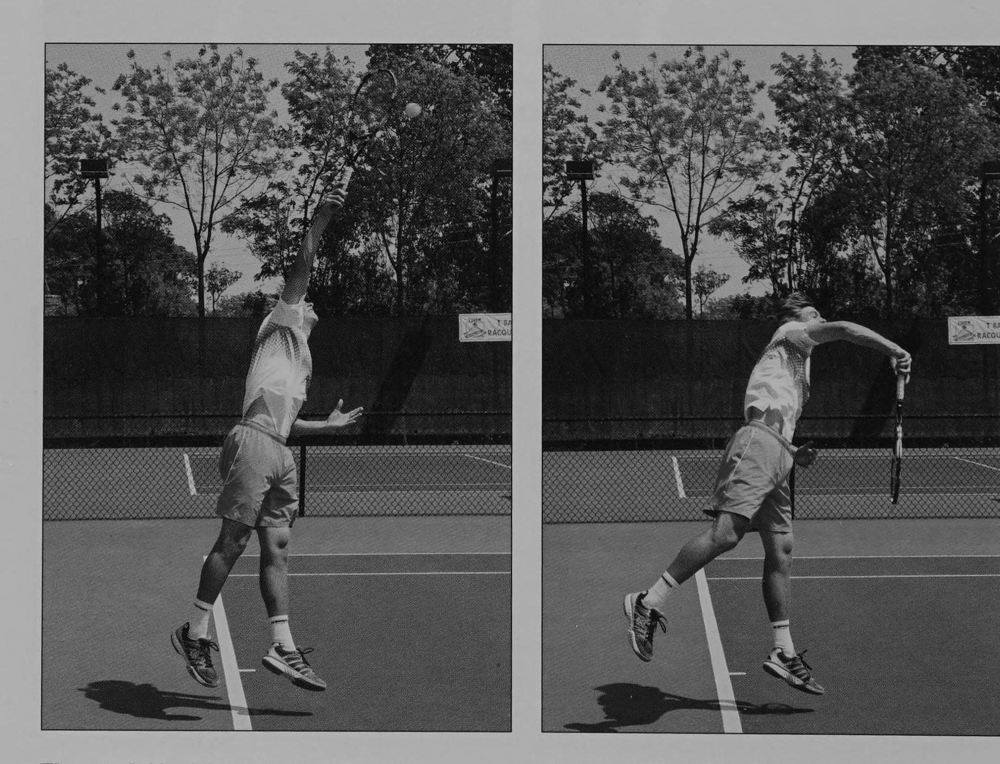
chuẩn bị trước khi giao bóng. ¢ Chánh niệm. Những người giao bóng tốt thường trông như thể họ luôn suy nghĩ—và thực tế là như vậy. Họ liên tục nhắc nhở bản thân về những gì họ cần làm để đánh được một cú giao bóng tốt; họ đang vạch ra chiến lược của mình. * Chấp nhận thử thách. Những người giao bóng tốt thích thử thách thoát khỏi rắc rối với một cú giao bóng lớn, đánh lừa đối thủ hoặc nếu họ thua quả giao bóng, hãy biến đây thành trận đấu khó nhất mà người giao bóng từng chơi. Chấp nhận thử thách có nghĩa là giải quyết được những tình huống lớn và vui mừng khi thoát khỏi sự suy sụp gần kề.
GẶP TẤT CẢ CÙNG NHAU
Cú giao bóng có thể là sự khác biệt về trình độ cao nhất của người chơi quần vợt. Một tiến trình đơn giản để phát triển cú giao bóng của người chơi như sau: Đầu tiên, người chơi phải phân tích loại vai trò của cú giao bóng trong phong cách trò chơi. Sau đó, người chơi có thể học và hoàn thiện kỹ thuật thích hợp cần thiết để đánh tất cả các quả giao bóng và tối đa hóa hiệu quả; phát triển khả năng đánh để có sức mạnh, sự đa dạng, vị trí và ngụy trang; và tạo ra bầu không khí xung quanh cú giao bóng để chứng tỏ rằng cú giao bóng đó đáng tin cậy và không bị hỏng dưới áp lực. Việc cải thiện cú giao bóng đòi hỏi phải chú ý đến chi tiết và thực hành nhiều. Cách tốt nhất để hiểu và thực hành cú giao bóng là với một xô bóng trên sân tennis. Đây là nơi người chơi có thể thử nghiệm các cách giao bóng khác nhau, rèn luyện các kỹ năng, thiết lập nhịp điệu tốt và phát triển cú giao bóng thành một cú đánh phù hợp với phong cách chơi. Chương 6 cung cấp các bài tập để học các cú giao bóng khác nhau, luyện tập nhịp điệu và tối đa hóa hiệu quả của cú giao bóng.
5 P K 5B 5 ececececes K v) ‘ SATS TATEIT EITA EE eens OSS 0 S R )
GAPTER
Trả giao bóng là tuyến phòng thủ đầu tiên của đấu thủ trước quả giao bóng của đối phương. Một cú trả giao bóng hiệu quả là cách tốt nhất và nhanh nhất để khiến đối thủ nghi ngờ khả năng đánh bại người chơi của họ. người giao bóng có tất cả các ưu điểm nên việc hoàn trả hiệu quả không phải là điều dễ dàng. Sự trở lại thành công là một phần tầm nhìn, một phần kỹ thuật và một phần là đưa ra quyết định đúng đắn. Để có tầm nhìn, người chơi cần được rèn luyện để nhìn bóng tốt. Kỹ thuật thích hợp làm tăng hiệu quả của sự trở lại. Việc đưa ra quyết định tốt có nghĩa là người chơi cần thực hiện cú đỡ bóng chính xác vào những thời điểm thích hợp. Mục tiêu cơ bản của việc đỡ bóng là đưa bóng trở lại sân. Sự khác biệt giữa người đỡ bóng tốt và người đỡ bóng giỏi là bóng chỉ được đỡ bóng hay được đỡ bóng với một chiến lược trong đầu. Để có một pha đỡ bóng tuyệt vời, mục tiêu cuối cùng là thực hiện đòn đánh đầu tiên của đối thủ và thiết lập đòn đánh đầu tiên của người đỡ bóng. Cú đánh đầu tiên là một quả bóng khiến một tay vợt phạm lỗi. Sự thúc đẩy tâm lý đến từ việc trả một cú giao bóng tốt là vô giá. Cho dù người chơi sử dụng cú đỡ bóng đúng vị trí để hỗ trợ đối thủ trên sân hay khiến đối phương đánh thêm một quả bóng nữa, khả năng đỡ bóng hiệu quả sẽ mang lại cho người chơi sự tự tin trong trận đấu. Các đặc điểm sau đây rất quan trọng để mang lại lợi thế thành công: ¢ Tính nhất quán. Một sự trở lại nhất quán sẽ ít gây khó chịu hơn. Mục tiêu của việc đỡ bóng liên tục là vô hiệu hóa đối thủ mọi lúc. người đỡ giao bóng này cố gắng gây áp lực lên người giao bóng bằng cách không bỏ lỡ bất kỳ cú đỡ bóng nào và liên tục đưa ra những kết quả hiệu quả. ¢ Đa dạng. Sự kết hợp tốt giữa các lợi thế là một công cụ có giá trị cần có, đặc biệt là khi người chơi đưa ra quyết định thông minh về thời điểm sử dụng lợi thế nào. Một người quay trở lại đánh hơi được cơ hội để đánh mạnh, biết khi nào nên đưa nó trở lại cao hơn và sâu hơn hoặc quyết định sử dụng một lát cắt vào thời điểm thích hợp là một lực lượng cần được tính đến. ¢ Độ chính xác. Người trả giao bóng thành công có thể đặt giao bóng ở vị trí thuận lợi. Người chơi có khả năng đánh bóng sâu trong sân, dọc biên hoặc ở góc chéo sân và đặt quả đỡ bóng đúng cách sẽ đặt đối thủ vào thế phòng thủ và giành được lợi thế lớn. ¢ Quyền lực. Việc quay trở lại để giành lấy quyền lực có thể đồng nghĩa với rủi ro cao và phần thưởng cao. Cách tiếp cận tất cả hoặc không có gì này chắc chắn gây khó chịu. Người đỡ bóng có thể đánh một số cú đánh nhất định, chẳng hạn như cú thuận tay, với sức mạnh khi đó là vũ khí. Kiểu người trả giao bóng này cũng có thể đánh để giành sức mạnh bằng cách thực hiện cú đỡ bóng sớm và sử dụng sức mạnh của cú giao bóng để định hướng cú đỡ bóng. Rủi ro là thiếu tiền hoàn trả và tặng điểm miễn phí cho người giao bóng. Sự trở lại là nền tảng của những nhà vô địch vĩ đại như Jimmy Connors, Andre Agassi, Chris Evert, Bjorn Borg và Mats Wilander. Họ có thể gây áp lực lên đối thủ bằng khả năng thực hiện một quả giao bóng mạnh và đỡ bóng nó một cách hiệu quả. Họ làm cho cú giao bóng mạnh của đối thủ có vẻ như là một điểm yếu. Sự trở lại của họ đã cách mạng hóa cách chơi quần vợt. Ngày nay, nhiều người chơi muốn có một cú giao bóng tốt và cố gắng thực hiện đủ tốt để bắt đầu một điểm, nhưng họ hiếm khi thành công khi trả giao bóng. Kết quả là, lượt về trở thành thời điểm đương nhiên để hầu hết người chơi quần vợt không cố gắng hết sức. Người trở lại cuối cùng của ngày hôm nay là Rafael Nadal—không phải vì sự trở lại của anh ấy mạnh hơn những người khác, mà bởi vì anh ấy không bao giờ bỏ cuộc. Anh ấy cố gắng hết sức ở từng điểm. Kim Clijsters cũng là một tay vợt có tỷ lệ hoàn trả cao nhất. Cô ấy sử dụng sự trở lại của mình để kiểm soát điểm ngay lập tức. Phong cách hung hăng của cô ấy đặt Cô ấy vào thế tấn công ngay từ đầu. Thực hiện hoàn trả thành công có thể là một thách thức. Phản ứng của người chơi và kỹ thuật đánh cần phải sắc bén để phản ứng lại quả giao bóng của đối phương. người giao bóng chiếm thế thượng phong, vì vậy việc tìm ra thước đo thành công khi quay lại có thể giúp người chơi tác động đến kết quả của tình huống. Rõ ràng, một người chơi không phải lúc nào cũng có thể thực hiện được những cú đỡ bóng hiệu quả, nhưng việc thiết lập một cú đỡ bóng phù hợp với một kiểu giao bóng cụ thể là điều quan trọng. Đối với một cú giao bóng lớn, một cú trả giao bóng hiệu quả có thể chỉ đơn giản là một cú trả giao bóng trung hòa để giữ cho thế trận người giao bóng tham gia vào cuộc tấn công đầu tiên ngay lập tức. Đối với một quả giao bóng yếu, điều đó có thể có nghĩa là thực hiện một cú trả giao bóng mạnh mẽ khiến người trả giao bóng rơi vào thế tấn công. Chương này thảo luận về các kiểu trả giao bóng khác nhau, các kỹ thuật để đánh chúng đúng cách, và quá trình suy nghĩ liên quan đến việc trả giao bóng. Chương 6 cung cấp các bài tập để trau dồi kỹ năng của người chơi nhằm trở thành người quay trở lại giỏi.
Phát triển cú đỡ giao bóng
Phong cách đỡ bóng tối ưu phụ thuộc vào phong cách chơi tổng thể của người chơi cũng như cú giao bóng của đối phương. Ba phong cách đỡ bóng chính là tấn công, phòng thủ và trung hòa. Cuộc tấn công trả đũa cũng có thể được coi là đòn đánh trả đầu tiên vì đây là một chiến lược tích cực để thiết lập đòn tấn công đầu tiên trong cuộc đánh trả. Cú đỡ bóng phòng thủ được sử dụng để đưa bóng trở lại sân bằng một cách nào đó, bằng một cú cản phá hoặc một cú cắt bóng. Lợi nhuận trung hòa được sử dụng để cố gắng tạo ra một điểm khởi đầu công bằng cho cuộc giao tranh với bất kỳ cú đánh nào. Sau đây là bảng phân tích của từng loại lợi thế. Mặc dù một người chơi có thể thích một kiểu trả giao bóng hơn, nhưng một người trả giao giỏi phải có khả năng chơi cả ba kiểu trả giao bóng để phản ứng hiệu quả với quả giao bóng của đối phương.
Đỡ giao bóng tấn công
Những pha đỡ bóng tấn công được thực hiện một cách mạnh mẽ và thường ở những cú giao bóng đầu tiên yếu hoặc ở những cú giao bóng thứ hai. Nếu mục tiêu của người chơi là sử dụng cú đỡ bóng để kiểm soát điểm thì cần phải có một cú đỡ bóng tấn công. Một người chơi có thể thực hiện một pha tấn công trở lại hiệu quả theo ba cách. Một cách là phải rất tích cực trong bất kỳ cú giao bóng nào mà người chơi có thể đọc tốt. Một cách khác là chuyển sang lưới để gây áp lực lên đối thủ. Cách thứ ba là đánh bóng mạnh hoặc tốc độ vừa phải vào điểm yếu của đối phương hoặc vào sâu trong sân. Mỗi kiểu đỡ bóng tấn công này có thể bị đánh mạnh bằng một cú đánh phẳng, xoáy lên hoặc cắt lát. Quan trọng hơn, tất cả chúng đều mang lại cho người chơi cơ hội cao hơn để có được cú đánh dễ dàng hơn ở quả bóng tiếp theo. Khi thực hiện một cú trả giao bóng tấn công, người chơi có thể giữ vị trí trên sân (thường là gần đường cuối sân), sau đó bước vào và thực hiện quả giao bóng đang đi lên hoặc lùi lại. Phong cách tấn công của người chơi phụ thuộc vào sở thích, tỷ lệ thành công và phong cách chơi tổng thể của người chơi.
Đỡ giao bóng phòng thủ và phản công
Tất cả các tay vợt đều muốn thực hiện các cú trả giao bóng tấn công mọi lúc, nhưng điều đó không phải lúc nào cũng có thể thực hiện được, vì vậy họ phải linh hoạt trong các mục tiêu trả giao bóng của mình. Tư duy của người quay lại phải được điều chỉnh dựa trên điểm mạnh của người giao bóng. Nếu đối thủ có một cú giao bóng quá mạnh, thì việc thực hiện cú trả giao bóng đơn giản sẽ trở thành một công cụ hiệu quả, đặc biệt nếu người giao bóng đã quen với việc nhận được nhiều điểm miễn phí trong cú giao bóng đó. Trong suốt trận đấu, người quay lại có thể khiến người giao bóng kiệt sức về mặt tinh thần vì họ phải làm việc rất chăm chỉ để đạt được mục tiêu là thiết lập đòn tấn công đầu tiên. kiểu đỡ giao bóng này có thể khiến người giao bóng cảm thấy như thể người đỡ giao bóng là một hậu vệ tồi và một người chơi sẽ lấy lại mọi thứ trên sân. Một pha trả về phòng thủ hoặc phản công bị chặn lại bằng một cú đánh thẳng hoặc một cú cắt có thể giúp người chơi có nhiều thời gian để phục hồi trở lại sân. Cú đỡ bóng này được sử dụng trong nhiều tình huống khác nhau: khi đối thủ đánh một cú giao bóng tốt nhưng mạnh mẽ hoặc phức tạp, khi người giao bóng đánh vào điểm yếu của người trả giao, khi bóng nảy hoặc xoáy ra khỏi vùng đánh tối ưu của người trả giao, hoặc thậm chí khi người trả giao đơn giản là không muốn đánh một quả trả giao. Bất kể lý do sử dụng đòn trả về phòng thủ là gì, người chơi phải luôn nhớ rằng mục tiêu là đưa bóng trở lại sân. Tất nhiên, sẽ có lợi hơn nếu chỉ đỡ bóng lại để ngăn đối thủ bắt đầu trận đấu với người thắng cuộc.
Đôi khi vị trí của người chơi trên sân hoặc điểm yếu trong việc thực hiện một kiểu đỡ bóng nhất định có thể quyết định một pha đỡ bóng phòng thủ. Điều đó cũng có thể có nghĩa là người chơi đã bắn sai khi quay lại và đánh nó kém, dẫn đến cú đỡ bóng ngắn hoặc yếu. Điều này có nghĩa là người chơi có thể sẽ ở giai đoạn phòng thủ khi bắt đầu trận đấu. Vị trí liên quan đến việc đỡ giao bóng phòng thủ là vị trí mà người chơi bị tổn hại trên sân và không thể thực hiện cú đánh đủ tốt để đẩy người giao bóng trở lại sân.
Đỡ giao bóng trung hoà thế trận
Người chơi sử dụng cú đỡ giao bóng trung hòa để ban đầu giảm thiểu sức mạnh của đối thủ và san bằng sân chơi để thực hiện cú đánh tiếp theo dễ xử lý hơn. Mức độ mà một người trả giao bóng có thể vô hiệu hóa một cú giao bóng phụ thuộc vào sức mạnh của người giao bóng. Bất cứ khi nào có thể, cú trả giao bóng vô hiệu hóa phải được nâng lên thành một cú trả giao bóng mang tính tấn công, đặc biệt là đối với những cú trả giao bóng thứ hai hoặc những cú trả giao bóng khi người giao bóng trở nên dễ đọc hơn. Vị trí của sân đối với việc hoàn trả trung hòa có thể khác nhau. Nói chung, việc bước vào trong đường cuối sân để nhận bóng sớm có thể nâng cao khả năng vô hiệu hóa quả giao bóng của người trả giao. Một vị trí khả thi khác là ở gần đường cuối sân để giúp người chơi thoát khỏi kiểu tấn công đầu tiên của họ. Ở quá xa sân hoặc ở vị trí phòng thủ khiến cho việc vô hiệu hóa quả giao bóng của đối phương trở nên khó khăn hơn vì người trả giao phải đánh quả trả giao lớn hơn.
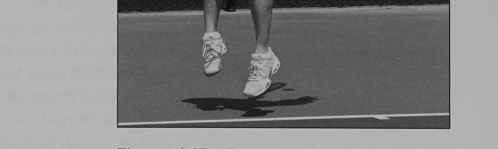
Đỡ giao bóng và các lối chơi
Như đã thảo luận ở chương 1 và 2, điều quan trọng là phải chơi theo một phong cách chơi cụ thể. Năm phong cách chơi cũng có liên quan đến lượt về. Việc quay lại sẽ trở thành một phần mở rộng phong cách chơi của người chơi. Chiến lược trả về là khác nhau đối với mỗi phong cách chơi. ¢ Lối chơi cơ bản tích cực. Phong cách chơi này mang tính quyết liệt và tập trung vào đường bóng tấn công đầu tiên. Người chơi cơ bản hung hãn muốn chỉ huy lối chơi bằng các cú đánh nền, vì vậy, bạn nên cố gắng thực hiện điều đó ngay lập tức. Phong cách này sử dụng xoáy lên mạnh mẽ và đỡ bóng bằng phẳng. Người chơi sử dụng phong cách này nên học cách đánh một cú vô lê xoay. Người chơi cơ bản chủ động sẽ rất thông minh để cân bằng ván lượt về bằng cách đưa vào một số đòn trả giao bóng trung hòa bằng đòn đỡ bóng tấn công. Chiến lược này rất cần thiết khi người chơi bị đánh lừa trong một quả giao bóng hoặc khi đối thủ có một quả giao bóng tốt và điều tốt nhất người chơi có thể làm là lấy lại nó. * Chơi toàn sân. Phong cách này kết hợp sự khéo léo và sức mạnh theo nhiều cách khác nhau để đáp trả theo phong cách tấn công hoặc trung hòa. Kiểu người đỡ bóng này có thể tung ra những cú đánh mạnh mẽ từ trên xuống hoặc bằng phẳng, một cú cắt bóng tốt ở mức thấp, một cú đánh bị chặn tốt để có chiều sâu hoặc một cú đánh rơi tinh tế. * Phong cách giao bóng và vô lê. Người chơi sử dụng phong cách này muốn duy trì bản chất hung hãn, ngay cả khi trả giao bóng. Người đỡ bóng này có thể sử dụng các cú đánh nền để đỡ bóng, nhưng cũng có thể cố gắng thực hiện cú đánh sớm và chuyển sang lưới. Phong cách tấn công này thường thích hợp để chuyển sang lưới, cắt các cú đánh tiếp cận và thả các cú đánh. Phong cách tấn công giao bóng và đánh vô-lê khó phát triển ở lượt về vì tay vợt cần phát triển các cú đánh tấn công cũng như các cú đánh phòng thủ để có phương án B. Những người chơi sử dụng phong cách chơi này thường bắt đầu tỏa sáng vào những năm trước đại học. Cân bằng phong cách chơi này với khả năng chơi các phần của phong cách khác có thể rất hiệu quả ở trường đại học. Thi đấu ở giải đấu chuyên nghiệp có phong cách tấn công, có vũ khí.
Chương 5
Kỹ năng đỡ giao bóng
Tập hợp lối chơi cơ bản. Phong cách này đặc biệt được sử dụng để quay trở lại với nỗ lực vô hiệu hóa người giao bóng. Người chơi áp dụng phong cách này không thích tỏ ra quyết liệt như những người chơi sử dụng các phong cách khác và thích chơi một pha đỡ bóng thận trọng hơn. Cầu thủ này có thể tấn công mạnh mẽ hơn, nhưng không nhất quán và cuối cùng cố gắng không phòng thủ sau khi đỡ bóng. Người chơi này đánh hiệu quả nhưng không quá mạnh, cú đỡ bóng bằng phẳng và xoáy lên cũng như các lát cắt. Hầu hết người chơi đều bắt đầu với kiểu đánh trả cơ bản tập hợp. Khi người chơi phát triển cú đỡ bóng, họ nên áp dụng phong cách tấn công mạnh mẽ hơn. Chơi cơ bản phòng thủ. Những người đỡ bóng chơi theo phong cách này làm như vậy vì họ mắc một lỗi kỹ thuật (chẳng hạn như tầm nhìn hoặc khả năng di chuyển kém) khiến không thể cải thiện, vị trí sân của họ lùi xa và lượt đỡ bóng của họ yếu và thiếu chiều sâu. Người chơi áp dụng phong cách này đánh các cú đánh và lát phẳng và xoáy lên, nhưng không thể đánh chúng một cách nhất quán hoặc rất hiệu quả. Người chơi này cố gắng thực hiện các cú đỡ bóng vô hiệu hóa nhưng cuối cùng lại chủ yếu đánh các cú đỡ bóng phòng thủ và bắt đầu hầu hết các pha đánh trả sau khi đỡ bóng phòng thủ. Những người quay về phòng thủ có thể sử dụng vị trí kém khi trả về.
Chương 4 xem xét thái độ và quá trình suy nghĩ của người chơi khi sử dụng từng loại giao bóng. Người trả giao cần tìm ra tâm trí và thái độ phù hợp để chiến đấu với từng loại giao bóng. Chúng sẽ được thảo luận tiếp theo. Danh sách sau đây thể hiện thái độ tinh thần và quá trình suy nghĩ của một người đánh trả đối đầu với một quả giao bóng lớn. Tôi sẽ bẻ giao bóng của đối thủ để làm suy yếu sự tự tin của anh ta. Tôi sẽ đánh mỗi cú đỡ bóng trở lại sân và không bao giờ cho đối thủ của tôi một điểm miễn phí. Tôi sẽ hạ gục đối thủ của tôi trong trận đấu (ví dụ: O-15 hoặc 15-30) để cô ấy bắt đầu gây thêm áp lực lên cú giao bóng. sẽ gây áp lực lên quả giao bóng thứ hai của người giao bóng để anh ta cố gắng đánh quá mức, điều này có thể dẫn đến việc giảm tỷ lệ giao bóng đầu tiên của anh ta. sẽ khiến đối thủ bối rối bằng cách đứng ở những vị trí khác nhau và không bao giờ nhìn cô ấy giống nhau. sẽ khiến đối thủ của tôi mệt mỏi về mặt tinh thần bằng cách bắt anh ta phải cố gắng hết sức để giữ được quả giao bóng. Danh sách sau đây trình bày thái độ tinh thần và quá trình suy nghĩ của một tay vợt đang thực hiện cú giao bóng theo kiểu giao bóng và vô lê. Những cú đỡ bóng của tôi tốt hơn phong cách tấn công của cô ấy. Tôi sẽ sử dụng chiến thuật chuyền hai cú (xem chương 8) và bắt anh ta thực hiện cú vô-lê đầu tiên dưới chân anh ta, buộc anh ta phải đánh bóng lên và cho phép tôi chuyền ở cú đánh tiếp theo. Tôi sẽ thực hiện tất cả các pha đỡ bóng của tôi và khiến đối thủ đánh bại tôi bằng cú vô lê. Danh sách sau đây trình bày thái độ tinh thần và quá trình suy nghĩ của một người chơi đang quay trở lại người giao bóng giao bóng và ở lại. Vì đối thủ của tôi không giao bóng và đánh vô-lê, tôi sẽ cố gắng tích cực hơn khi tôi trở về. Tôi sẽ tập trung vào chiều sâu trong các cú đỡ bóng của tôi vì làm như vậy sẽ cho tôi cơ hội đẩy lùi đối thủ và giành quyền kiểm soát điểm. Nếu cần, tôi sẽ đặt mình lùi xa hơn trên sân và thực hiện cú xoay người lớn hơn ở lượt về.
TAY CẦM
Cách cầm vợt khi đỡ bóng không thay đổi nhiều so với động tác đánh nền thông thường, trừ khi người chơi bị giãn ra và phải sử dụng tay cầm kiểu Continental (dùng để đánh chặn) chỉ để lấy lại. Một trong những điều quan trọng nhất cần cân nhắc đối với cách cầm vợt không phải là sử dụng cách cầm vợt nào mà là nên giữ cách cầm vợt nào trong khi dự đoán cú trả giao bóng. Có hai trường phái tư tưởng tồn tại về vấn đề này: nắm giữ điểm mạnh của người chơi và nắm giữ điểm yếu của người chơi. Hầu hết người chơi, đặc biệt là những người sử dụng cú đánh trái tay bằng hai tay, giữ cách cầm vợt thuận tay của họ và khi quả giao bóng đến phía trái tay, hãy sử dụng tay không thuận để nhanh chóng xoay cách cầm vợt sang cách cầm vợt trái tay. Đối với những người chơi có sự chênh lệch lớn giữa thuận tay và trái tay, việc nắm bắt điểm yếu của họ có thể hữu ích. Ví dụ, một người chơi có cú đánh trái tay bằng một tay không mạnh khi trả giao bóng có thể muốn sử dụng cách cầm vợt trái tay với mong muốn người giao bóng chiếm ưu thế hơn trong việc giao bóng vào điểm yếu đó. Điều này giúp tiết kiệm thời gian khi chuẩn bị cho cú đánh yếu hơn. Người chơi thường dễ dàng chuyển cách cầm vợt sang điểm mạnh hơn là chuyển sang điểm yếu. Một điều cần cân nhắc khác khi cầm vợt là vị trí cầm vợt trong khi chờ giao bóng. Người đỡ bóng có thể cầm vợt hơi lệch về phía sức mạnh, điểm yếu của họ hoặc thiết lập cách cầm vợt trung lập có thể dễ dàng chuyển sang cách cầm vợt thuận tay hoặc trái tay. Một điểm mà mọi người đều có thể đồng ý là cầm vợt ở phía trước cơ thể. Nó phải được đặt thoải mái ở phía trước bằng cách sử dụng tay cầm ưu tiên. Vị trí đặt nó ở phía trước cơ thể cũng là một điều cần cân nhắc. Đầu vợt có thể hướng lên trên hoặc hướng về phía người chơi khác. Người chơi nên thử nghiệm tất cả những cân nhắc về cách cầm vợt này và thiết lập cách đỡ bóng mang lại kết quả đỡ bóng ổn định nhất có thể.
THỊ TRƯỜNG VÀ VỊ TRÍ
Thế đứng rất quan trọng đối với sự thành công của cú đỡ bóng vì nó mang lại chỗ dựa vững chắc cho chuyển động của người chơi. Mục tiêu của người chơi là thiết lập một thế đứng cho phép thực hiện các chuyển động nhanh nhất để thực hiện cú giao bóng sắp tới. Thế đứng cũng mang lại cho người chơi cơ hội tốt nhất để đưa chân và tay lên đúng cách để thu lại quả giao bóng. Người chơi phải chọn một tư thế thoải mái và tạo điều kiện thuận lợi cho việc thực hiện các kiểu đỡ bóng phù hợp với phong cách chơi của người chơi. Nói chung, hầu hết các đấu thủ đều ở tư thế sẵn sàng và quay mặt về phía người giao bóng ở phía bên kia sân (xem hình 5.1). Tư thế phải trung lập và không nghiêng theo hướng này hay hướng khác để lộ bất kỳ manh mối nào về người giao bóng, trừ khi nghiêng sang một bên mang lại lợi thế cho người chơi hoặc người chơi đang cố gắng đưa người giao bóng đi đến một địa điểm cụ thể. Người chơi có thể thiên về điểm yếu vì biết rằng việc điều chỉnh theo điểm mạnh của mình sẽ dễ dàng hơn. Thế đứng phải thấp hoặc dựa trên lõi thấp hơn, nghĩa là đường ngắm phải thấp hơn một chút để theo dõi cú giao bóng. Thế đứng thấp hơn cũng tạo điều kiện thuận lợi cho việc vào tư thế chịu tải. Người chơi có thể thử nghiệm nhiều loại tư thế khác nhau để phù hợp với phong cách của mình. Vị trí của sân cũng nói lên rất nhiều điều về phong cách; ví dụ: nó có thể cho biết người chơi là người trở lại hung hãn hay phòng thủ. Ba vị trí trên sân có thể có hiệu quả như nhau: phía sau vạch cuối sân, trên vạch cuối sân hoặc bên trong vạch cuối sân. Sự cân nhắc chính cho người chơi
Đằng sau vạch cuối sân
Vị trí này ủng hộ cả ba phong cách cơ bản. Người chơi cơ bản chủ động muốn có thêm thời gian để đánh một cú đỡ bóng lớn, người chơi cơ bản tập hợp muốn vô hiệu hóa cú giao bóng, và người chơi cơ bản phòng thủ muốn che giấu điểm yếu hoặc cần thêm thời gian để vào vị trí tốt. Chuyên gia sân đất nện cũng ưa chuộng vị trí này vì nó tạo nhiều thời gian hơn cho những cú giao bóng có độ nảy cao đi vào vùng tấn công. Vị trí trả về này có lợi cho người trả về thích thiết lập và đánh trả tương tự như một cú đánh tiếp đất; ở xa sân hơn cho phép có thêm thời gian để làm điều đó. Vị trí này xa hơn về phía sau sân, vì vậy nhược điểm chính là nếu người chơi không thể đánh trả mạnh từ vị trí này, thì người giao bóng sẽ có một vị trí tấn công rõ ràng trong lượt đánh tiếp theo. Người trả về có thể thực hiện cú đánh rơi hoặc cú vô lê. Khi người đỡ bóng đứng xa sân, người giao bóng sẽ dễ dàng chuyển sang lưới hơn vì người giao bóng có nhiều thời gian hơn để phản ứng với lượt đỡ bóng. Việc liên tục trả giao bóng từ phía sau đường cuối sân có thể dẫn đến trò chơi dễ bị giữ cho người giao bóng, từ đó dẫn đến việc đối thủ tập trung hơn và tươi mới hơn cho trò chơi giao bóng của người trả giao bóng.
Trên vạch cuối sân
Các phong cách tấn công, bao gồm phong cách cơ bản tích cực, phong cách toàn sân và phong cách giao bóng và vô lê, thiên về vị trí này vì nó đặt họ vào vị trí tấn công tốt hơn. Vị trí sân này giúp người chơi có nhiều lựa chọn hơn hai vị trí còn lại. Người quay lại ở vị trí trung tâm và phải đủ linh hoạt để xử lý nó. Khi tấn công quả giao bóng, người chơi có thể di chuyển vào và thực hiện quả giao bóng yếu hơn khi đang dâng cao và bắt đối thủ một cách bất ngờ. Nếu quả giao bóng khó đọc thì người trả giao bóng có thể chơi phòng thủ từ một vị trí thuận lợi. Nhược điểm chính của vị trí này trên sân là nó phụ thuộc vào sức mạnh kỹ thuật của người chơi. Chơi từ vị trí này đòi hỏi người đỡ bóng phải có kỹ thuật sạch và hiệu quả. Người quay lại đứng ở vị trí này bị thách thức là có tính tấn công và vô hiệu hóa, vì vậy kỹ thuật kém khiến người quay lại không nhất quán hoặc không hiệu quả, điều này có thể mang lại cho người giao bóng một lợi thế khác biệt.
Bên trong vạch cuối sân
Ba phong cách tấn công hơn (chơi cơ bản tích cực, chơi toàn sân và phong cách giao bóng và vô lê) ủng hộ sự trở lại này. Kiểu người chơi muốn ở vị trí này sẽ có hiệu quả trong việc lấy bóng khi đang trên cao hoặc có thể tính thời gian đỡ bóng và sử dụng vị trí sân này để lấy đi thời gian của người giao bóng. người đỡ giao bóng này cũng có cách khiến người giao bóng lo lắng, đặc biệt nếu người đỡ giao bóng hoạt động hiệu quả. Những tay vợt như Robby Ginepri có thể đọc chuyển động của người giao bóng và nhìn rõ bóng từ vị trí này. Nhược điểm chính của vị trí hoàn trả này là tỷ lệ hoàn trả thấp. Mọi quả bóng được đánh từ vị trí này đều là sớm hoặc đang trên đà phát triển (trừ khi người giao bóng có cú giao bóng rất yếu), VẬY, một người chơi không thể đánh liên tục sớm hoặc đang trên đà phát triển sẽ gặp rủi ro lớn. Thành công từ vị trí này phụ thuộc vào kỹ thuật xuất sắc và tầm nhìn tuyệt vời khi quay trở lại. Cú đỡ bóng này dễ mắc lỗi vì những cú giao bóng thông thường có thể không quá khó để thực hiện từ một vị trí sâu hơn, giờ đây đã trở thành một thách thức. Logic của người chơi chọn vị trí này sẽ xuất phát từ một trong các chiến lược sau. ¢ Sự cần thiết phải gây khó chịu. | Dù thế nào đi nữa tôi cũng sẽ gây khó chịu vì đó là phong cách của tôi. * Cần thiết thực tế. Tôi cần phải tận dụng lợi thế của người giao bóng ngay từ đầu vì anh ta có những bước đột phá tốt hơn tôi làm, và nếu tôi lùi lại, tôi sẽ thực sự mang lại cho anh ta một lợi thế.
* Sự cần thiết phải tận dụng sự đa dạng. Tôi có nhiều cú đánh từ khu vực này và sẽ cố gắng phá vỡ nhịp điệu của người giao bóng. Vị trí của người chơi trên đường cuối sân cũng có thể thay đổi tùy theo sở thích cũng như điểm mạnh và điểm yếu, nhưng mục tiêu là không để mất quá nhiều sân. Đứng quá gần về phía trung tâm có thể tạo cho đối thủ quá nhiều khoảng trống để thực hiện một cú giao bóng rộng về phía con hẻm, và việc đứng trong con hẻm chỉ nên được sử dụng khi người giao bóng liên tục khai thác khu vực đó hoặc có sức mạnh ở đó. Trong tình huống đó, người quay lại sẽ lấy đi sức mạnh của người giao bóng. Một mục tiêu khác về thế đứng và vị trí làm cho người giao bóng suy nghĩ về kiểu đánh mà người đỡ bóng sẽ đánh hoặc người đỡ bóng sẽ đứng ở đâu. Vì vậy, địa điểm ở lượt về có thể thay đổi trong trận đấu với mục tiêu không để lộ quá nhiều. Khi người giao bóng phải suy nghĩ về những gì người đỡ giao bóng đang làm, sự chú ý của người giao bóng sẽ chuyển sang việc thực hiện các điều chỉnh, điều này có thể mang lại lợi thế cho người đỡ giao bóng.
THEO DÕI BÓNG
Theo dõi bóng là điều cần thiết để đỡ bóng tốt và nó đòi hỏi bản năng và trí thông minh. Cần có bản năng để phản ứng nhanh với một quả bóng và trí thông minh để hiểu được cú giao bóng sắp tới. Kỹ thuật tốt và tầm nhìn tốt cũng rất quan trọng để theo dõi bóng. Người đỡ bóng nên nghiên cứu và phân tích các quy trình của người giao bóng, bao gồm nảy bóng, tung bóng, chuyển động giao bóng, kết thúc và giao bóng, để xem liệu người chơi có thực hiện bất kỳ cú giao bóng nào hay không. Khi theo dõi một quả bóng được đánh từ người giao bóng, người đỡ bóng phải đọc sớm những gì sắp xảy ra. Người đỡ bóng cần cố gắng nhìn bóng trong tay người giao bóng và hình dung nó đang trải qua quy trình và chuyển động tiềm năng; điều này được gọi là theo dõi sớm. Việc theo dõi sớm giúp nâng cao khả năng của người trả giao bóng trong việc nhìn thấy đường đi của quả giao bóng sau khi tiếp xúc (theo dõi muộn) vì người trả giao theo dõi bóng từ vợt của người giao bóng thay vì chỉ khi bóng đi qua lưới. Hầu hết những người mới bắt đầu theo dõi bóng khi nó đi qua lưới. Thời điểm này đã quá muộn đối với một người chơi muốn tấn công. Việc theo dõi hiệu quả cần thực hiện một số bước. Đầu tiên, người đỡ bóng bắt đầu quan sát quả bóng khi người giao bóng giữ nó và bước lên vạch. Người đỡ bóng nên suy nghĩ những câu hỏi sau: Đối thủ có giấu bóng hay dễ nhìn thấy? Bàn tay cầm bóng đặt ở đâu? Bóng ở trên vợt hay ở gần vợt? Đối phương làm gì với quả bóng sau khi nảy lên? Việc theo dõi tất cả những chi tiết này có thể cung cấp thông tin quan trọng. Những quan sát sau đây về cách người giao bóng thiết lập để phục vụ không phải lúc nào cũng đúng. Tuy nhiên, họ có thể đưa ra một cái nhìn về cách người quay lại cảnh báo có thể chú ý đến các chi tiết chính. ¢ Nếu đối phương đang giấu bóng, anh ta có thể có một cú giao bóng được ngụy trang kỹ càng, và lần tung bóng sắp tới cũng có thể được ngụy trang tương tự, vì vậy người đỡ bóng phải chú ý theo dõi chuyển động của cơ thể. Nếu quả bóng dễ nhìn thấy thì người đỡ bóng phải có thể nhìn rõ thao tác ném và chuyển động. ¢ Một quả bóng được đặt trên vợt có thể biểu thị một chuyển động sạch, có nghĩa là người đỡ bóng sẽ không thể nhận ra nhiều biến thể trong cú đánh của đối phương. (Thông thường, người giao bóng bắt đầu với cú đặt bóng trên vợt có khởi đầu tốt và kết thúc tốt.) ¢ Nếu tay ném của đối phương không đặt trên vợt, điều đó thường có nghĩa là người giao bóng có chuyển động giao hoặc giao bóng bất thường hoặc khác. e người giao bóng có thói quen phục vụ vững chắc có xu hướng trở thành người giao bóng hiệu quả.
Tiếp theo, người đỡ bóng tuân theo quy trình ném bóng của người giao bóng. Người đỡ bóng nên hỏi những câu hỏi sau: Người giao bóng đỡ bóng nhanh, chậm hay nhịp nhàng? người giao bóng đỡ bóng bao nhiêu lần? Người giao bóng bắt đầu chuyển động giao bóng nhanh như thế nào? Một lần nữa, mặc dù không phải là điều dễ hiểu, những quan sát sau đây cung cấp cái nhìn sâu sắc về hành động của người giao bóng. ¢ Một quả bóng nảy nhanh có thể biểu thị một chuyển động nhanh hoặc người giao bóng đang vội, điều này cho thấy sự lo lắng. ¢ Nếu người giao bóng đỡ bóng chậm, cô ấy có thể có kiểu giao bóng chậm đòi hỏi người trả giao bóng phải kiên nhẫn trong việc chuẩn bị trả giao bóng. ¢ Sự nảy không nhịp nhàng thường dẫn đến một chuyển động nhịp nhàng. e Areturner nên đếm số lần thoát mà người giao bóng sử dụng để chuẩn bị. Nếu số lần nào cũng giống nhau thì người giao bóng đã hoạt động tốt. Nếu con số thay đổi, người trả giao nên chú ý đến số lần nảy và cú giao bóng theo sau nó để xem có tồn tại mẫu nào không. Thứ ba, người quay lại quan sát cánh tay tung của người giao bóng đi lên và xem vị trí của cơ thể người giao bóng. Người đỡ bóng nên hỏi những câu hỏi sau: Cánh tay có mang bóng lên hay ném bóng lên không? Cơ thể có thực hiện bất kỳ bước ngoặt nào liên quan đến việc quả bóng đi lên không? Nếu người giao bóng ném bóng khác nhau cho các lần giao bóng khác nhau thì chuyển động của cơ thể cho mỗi lần giao bóng cũng có thể khác nhau. Các gợi ý sau đây có thể cung cấp cho người trả giao bóng ý tưởng ban đầu về vị trí của quả giao bóng. e Việc ném ra ngoài ở vị trí khoảng 2 giờ đối với người chơi thuận tay phải (10 giờ đối với người chơi thuận tay trái) có thể chỉ ra một lát cắt. ¢ Cho phép tung bóng cao vào lúc 12 giờ thường là một cú giao bóng phẳng (trừ khi nó được tung xuống thấp và ra ngoài, đó là một cú giao bóng thấp). ¢ Việc tung bóng đến vị trí 12 giờ, sau đó một đấu thủ chạm bóng sẽ biểu thị một cú giao bóng xoáy đỉnh. e Atoss phía sau đi từ 11 giờ đến 2 giờ đối với người chơi thuận tay phải (2 giờ đến 11 giờ đối với người chơi thuận tay trái) với việc cong lưng nghĩa là thực hiện một cú giao bóng. ¢ Một cú giao bóng cơ thể rất khó xác định vì cú giao bóng này có thể được thực hiện từ bất kỳ vị trí nào. Tuy nhiên, hầu hết những người giao bóng đều sử dụng một cú giao bóng cụ thể để đánh vào cơ thể trừ khi họ là những người giao bóng thực sự thông minh và có thể sử dụng nhiều cú giao bóng khác nhau. Cuối cùng, người quay lại chú ý đến góc cơ thể của người giao bóng, chuyển động của chân và cảm giác chung về chuyển động của người giao bóng. Người đỡ bóng phải quan sát xem người giao bóng trông như thế nào khi tiếp xúc với bóng. Người trả giao bóng cũng phải sử dụng tầm nhìn tốt khi quan sát các vị trí cơ thể của người giao bóng trong lần giao bóng đầu tiên hoặc thứ hai. Việc chú ý kỹ đến quả bóng có thể giúp người đỡ bóng nhìn thấy được các sắc thái trên cơ thể của người giao bóng khi họ chuẩn bị giao bóng. Khả năng tấn công hoặc vô hiệu hóa các quả giao bóng của đối phương khi trả giao bóng của người chơi là rất đáng sợ đối với người giao bóng, đặc biệt là một người giao bóng giỏi. Các yếu tố khác có thể góp phần tạo nên kỹ năng theo dõi tốt. Vợt cũng có thể cung cấp một nguồn theo dõi. Người đỡ bóng giữ vợt ở phía trước và ở tư thế hướng đầu vợt về hướng bóng. Cánh tay phía trước cũng có thể cung cấp khả năng theo dõi. Ra khỏi thế đứng, người đỡ bóng bước một bước bằng chân ngoài để ra sau bóng, đồng thời cánh tay trước vươn ra để vào tư thế thu bóng viết tắt. Cánh tay phía trước, đặc biệt nếu nó cân bằng và hơi ở phía trước, có thể giúp theo dõi cú giao bóng khi tiếp xúc. Thế đứng và chuyển động ảnh hưởng lớn đến kỹ năng theo dõi. Việc nhảy lên nhảy xuống hoặc sang bên quá mức đòi hỏi phải điều chỉnh và điều chỉnh lại liên tục. Đứng quá cao và không ở trong tầm nhìn của quả giao bóng cũng có thể làm mất đi kỹ năng theo dõi.
Trượt tuyết quần vợt LOZ ¢ oniuis
Sau khi thiết lập một thói quen và cách theo dõi người giao bóng từ đầu cú giao bóng, người trả giao bóng được trang bị tốt hơn để theo dõi cú giao bóng sau khi tiếp xúc. Để cải thiện khả năng theo dõi sau khi tiếp xúc, người trả giao bóng có thể nghiên cứu xu hướng của người giao bóng (ví dụ: đối với những điểm lớn, anh ta thích đánh ở đây), biết các cú giao bóng khác nhau ảnh hưởng đến quả bóng như thế nào (ví dụ: một cú giao bóng tạo ra độ nảy cao) và sử dụng mắt để điều khiển chuyển động. Thông thường, người trả giao di chuyển quá nhiều hoặc đoán xem quả giao bóng sẽ đi đến đâu thay vì chỉ xem bóng. Làm như vậy có thể khiến người đỡ giao bóng mất cân bằng và có thể thay đổi đấu pháp đỡ giao bóng.
SỰ CHUYỂN ĐỘNG
Một phần thiết yếu của cú đỡ bóng là thời gian của bước tách bóng và chuyển động tiếp theo của cú giao bóng. Hai phương pháp chính là bước tách và di chuyển về phía bóng hoặc bước tách và lùi ra xa bóng. Một phương pháp khác là không di chuyển chút nào mà đứng yên khi trả giao bóng. ¢ Tách bước và tiến về phía trước. Phương pháp này thường được bắt đầu bằng bước tách đôi khi bóng rơi vào ô giao bóng, dịch chuyển trọng lượng sang vị trí hơi hướng về phía trước (xem hình 5.2). Điều cần cân nhắc chính trong phương pháp này là mức độ thực hiện bước phân chia về phía trước. Phương pháp này có thể rất hiệu quả khi người đỡ bóng đọc tốt đường bóng đang tới của đối phương vì động lượng của cơ thể đang di chuyển về phía trước để gặp bóng. Nếu người đỡ giao bóng không có kỹ năng theo dõi phát triển tốt thì việc đỡ giao bóng này sẽ có những hạn chế. Như đã nêu trước đó, chuyển động quá nhiều có thể cản trở kỹ năng theo dõi. Một vấn đề tiềm ẩn khác là nếu cú giao bóng mạnh, người trả giao bóng có thể di chuyển quá xa về phía trước để đáp ứng một cú giao bóng mạnh sắp tới và không có đủ thời gian để chuẩn bị đúng cách. ¢ Tách bước và lùi lại. Cái này. phương thức tương tự như phương thức tiến lên nhưng thay vào đó nó sử dụng chuyển động lùi. Cú đánh trả này có thể rất hữu ích trên sân cứng hoặc sân đất nện có tốc độ chậm. Phương pháp này được sử dụng khi người chơi thích chạy vòng qua điểm yếu hoặc vào vị trí tốt hơn để đánh một cú mạnh hơn. Nó có hai hậu quả tiêu cực tiềm tàng: Phương pháp tiến lùi về phía trước. yêu cầu người quay lại đánh một cú đánh tốt hơn từ vị trí sâu hơn và nếu người giao bóng nhìn thấy người quay lại lùi lại, người quay lại có thể từ bỏ vị trí có giá trị trong pha bóng qua lại tiếp theo và bị dẫn trước. Một cú giao bóng có độ nảy cao yêu cầu phương pháp lùi vì có cơ hội di chuyển về phía sau và đánh một cú vào vùng tấn công của người đỡ bóng tương tự như một cú đánh tiếp đất thông thường. ¢ Đứng yên. Phương pháp này được sử dụng nếu đây là thế đứng do người chơi lựa chọn hoặc khi quả giao bóng của đối phương khó đọc được. Đó là một phương pháp tốt để khiến mắt của người đỡ bóng tập trung hơn vào quả bóng và tạo ra sự tiếp xúc tốt khi đỡ bóng. Thay vì thực hiện một bước lớn và nhảy vọt về phía trước, người chơi chỉ cần giữ nguyên vị trí và cố gắng giữ yên khi người giao bóng đang chuyển động. Điều này giúp người quay lại theo dõi hiệu quả hơn. Khi người giao bóng tiếp xúc với bóng, người đỡ bóng thực hiện một bước nhỏ về phía trước với một cú xoay vai nhanh về phía bóng, cho phép người đỡ bóng đi vào vùng tấn công sức mạnh. Cách đỡ bóng này giúp giảm thiểu chuyển động và giúp đọc cú giao bóng tốt hơn.
Mẹo dành cho người chơi khi sử dụng phương pháp này là gồng cơ bụng, ưỡn người ra sau như tư thế ngồi xổm, hạ tay xuống và tập trung thực hiện cú vung nhanh hơn. Bàn chân sẽ giữ thăng bằng nhưng vẫn cảm nhận được một chút động lượng về phía trước. Lượng chuyển động sẽ phụ thuộc vào tốc độ của cú giao bóng.
Kỹ thuật đỡ giao bóng
Phần mô tả sau đây về cú đỡ bóng tấn công và phòng thủ sẽ xem xét kỹ lưỡng các hành động tạo nên các phần của cú đỡ bóng: chuẩn bị và vung vợt lùi, vung vợt về phía trước và tiếp xúc, và theo dõi. Mỗi kiểu đỡ bóng có các chuyển động và kỹ thuật cụ thể để phân biệt liệu cú đỡ bóng sẽ mang tính tấn công hay phòng thủ. Như đã lưu ý ở đầu chương, một kiểu hoàn trả khác là lợi thế trung hòa. Kỹ thuật cho phong cách này cũng giống như đối với các đòn đỡ bóng tấn công hoặc phòng thủ; sự khác biệt là một trong những ý định. Người chơi sử dụng đòn đánh trung hòa khi cố gắng giảm thiểu ảnh hưởng của người giao bóng đối với lần đánh tiếp theo. việc đỡ giao bóng trung hòa được đánh vào giữa sân.
Kỹ thuật đỡ giao bóng tấn công
Kỹ thuật tấn công được quyết định bằng cách tiến về phía trước và lấy bóng sớm. Người chơi quyết định xem có nên hung hãn hơn khi đỡ bóng hay không và làm thế nào để thực hiện cú đánh. Đây là phần khó khăn nhất của cuộc tấn công trở lại—biết khi nào nên hung hãn hơn và biết khi nào nên thực hiện.
Chuẩn bị và đưa vợt ra sau
Người chơi sử dụng cách cầm vợt thông thường cho mỗi bên (xem hình 5.3). P I nắm giữa Western và Eastern hoặc đâu đó ở giữa i b | [> được khuyến khích; họ là Ss B, ‘:ot là loại tay cầm phổ biến nhất được chơi hiện nay. Động tác backswing tương tự như động tác đánh nền nhưng có thể cần được thực hiện với một vòng lặp nhỏ hơn, nhanh hơn trong động tác backswing. Kích thước và tốc độ của cú giật phụ thuộc vào tốc độ giao bóng. Người chơi có thể sử dụng cú giật tiếp đất thông thường nếu cú đánh yếu và có nhiều thời gian để thực hiện cú vung lớn hơn. Nếu có thể, người chơi nên di chuyển theo đường chéo về phía trước để cắt góc giao bóng và giảm thời gian phản hồi của người giao bóng. Tuy nhiên, khi cú giao bóng mạnh, người chơi có thể cần phải thay đổi động tác. Hình 5.3. Chuẩn bị cho đợt tấn công trở lại.
Đưa vợt tới và tiếp xúc bóng
Cú đánh về phía trước tương tự như động tác đánh nền, nhưng nó nhỏ gọn hơn và được đánh theo kiểu từ thấp đến cao. Nó có thể diễn ra suôn sẻ hơn khi chỉ phản ứng với một quả giao bóng. Vùng tác động (xem hình 5.4) có thể cao hơn, thấp hơn, tiến nhiều hơn hoặc lùi nhiều hơn, tùy thuộc vào cú giao bóng sắp tới và chuyển động của người đỡ bóng đối với bóng. Người quay về cố gắng tiến về phía trước, dồn trọng lượng cơ thể về phía sau.
Động tác kết thúc
Quá trình tiếp theo của một pha đỡ bóng tấn công (xem hình 5.5) có thể tương tự như cú đánh nền, trừ khi người chơi quyết định vào lưới, trong trường hợp đó người chơi sẽ thực hiện một cú xoay người ngắn hơn, đặt bóng hoặc đánh một cú đánh cắt lát để có thời gian chuyển tiếp. Việc theo sau phải được thực hiện một cách cân bằng và có động lượng về phía trước để mang lại cho người phản công một cú đánh xuyên thấu hơn.
Kỹ thuật đỡ giao bóng phòng thủ
Kỹ thuật đỡ bóng phòng thủ thường bắt đầu với vị trí sân kém hoặc kỹ thuật kém. Thông thường, đây được coi là một cú đánh được thực hiện kém, một cú đánh tiếp đất thông thường yếu hơn hoặc được thực hiện kém, hoặc một cú đỡ bóng chặn khi người đỡ bóng chỉ đang cố gắng đặt cú đỡ bóng sâu trong sân. Kỹ thuật được thảo luận ở đây là dành cho việc đỡ giao bóng bị chặn.
Chuẩn bị và đưa vợt ra sau
Khi thực hiện một cú đỡ bóng phòng thủ, người đỡ bóng cố gắng sử dụng cách cầm vợt bình thường nhưng có thể 'bị mắc vào một cách cầm vợt khác, đặc biệt là khi không có thời gian để phản ứng với quả bóng sắp tới và thậm chí còn hơn thế nữa khi người đỡ bóng có kỹ thuật kém. Đây là một quả bóng được đánh trở lại lưới bằng mọi cách có thể. Người trả giao cần đưa đầu vợt ra sau bóng hoặc ít nhất là ở tư thế vuông góc với mặt vợt để bóng đi ngược qua lưới và đi sâu tới góc sân đối phương.
Đưa vợt tới và tiếp xúc bóng
Khi trả về phòng thủ, mọi nỗ lực có thể nên được thực hiện để vung vợt về phía trước. Điểm tiếp xúc tấn công được sử dụng cho những cú giao bóng góc cần được cắt theo một góc, trở lại. đánh vào người hoặc quả bóng mà người quay lại đã đọc muộn. Người chơi nên cố gắng tiếp xúc với bóng bằng một cú xoay nhỏ gọn và cách cầm vợt chắc chắn để tăng tốc độ cho cú đánh.
Động tác kết thúc
Việc thực hiện cú đỡ bóng phòng thủ là bất cứ điều gì có thể thực hiện được đối với người chơi trong tình huống đó, tùy thuộc vào sức mạnh của cú giao bóng và vị trí sân của người chơi. Trong tình huống này, người chơi thường cố gắng giữ bóng trong cuộc và hồi phục càng sớm càng tốt cho cú đánh tiếp theo.
Thực hiện cú đỡ giao bóng
Ba phong cách đỡ bóng chính là tấn công, phòng thủ và trung hòa. Bốn loại cú đánh trả là cú đánh phẳng, cú đánh xoáy lên, cú đánh cắt lát và cú đánh chặn. Cú đánh phẳng hoặc xoáy lên hung hãn, và trong một số trường hợp, cú đỡ bóng bằng lát cắt được coi là xúc phạm. Cú đỡ bóng bị chặn được coi là phòng thủ, nhưng phiên bản cắt bóng và di chuyển lùi có thể mang tính tấn công hoặc phòng thủ tùy thuộc vào hiệu quả của chúng. Tại một số thời điểm trong mỗi trận đấu, tất cả người chơi đều có khả năng chơi tất cả các cú đỡ bóng này, vì vậy điều quan trọng là phải biết cách đánh tất cả chúng.
hung hãn
Cú đánh phẳng hoặc xoáy lên mạnh mẽ là một trong những cú đỡ bóng tấn công mạnh nhất có thể. Một người chơi có thể đánh được một trong những cú đánh này khi đỡ bóng đang chơi khá tốt bởi vì kiểu đỡ bóng này là điều mà tất cả người chơi đều cố gắng phát triển. Với độ sâu, sức mạnh và độ xoáy phù hợp, một pha đỡ bóng quyết liệt có thể đặt người giao bóng vào thế phòng thủ. Serena Williams có một trong những màn trở lại khó chịu nhất trong giải đấu dành cho nữ. Mục tiêu của cô ấy là đặt đối thủ vào thế phòng thủ ngay từ đầu và tạo cho mình một cơ hội tuyệt vời để tiếp tục tấn công trong suốt trận đấu.
Người chơi phải luôn tập trung vào kỹ thuật rõ ràng, trong trường hợp này là đọc sớm quả giao bóng, bước tách bóng thích hợp, lùi bóng hiệu quả và ngay lập tức, bước di chuyển tốt ở bước đầu tiên, giữ thăng bằng tốt và theo sát. Người đỡ bóng nên có trong đầu ý tưởng về vị trí tối ưu, cách dự định để đánh nó (phẳng hoặc xoáy lên), và cú đánh sẽ hung hãn như thế nào.
Trường hợp Người đỡ bóng có thể thực hiện cú đỡ bóng bằng phẳng hoặc xoáy lên mạnh mẽ từ bất kỳ vị trí nào trên sân, nhưng sẽ hiệu quả hơn khi nó ở gần hoặc gần vạch cuối sân hơn. Người chơi vẫn có thể thực hiện một cú đỡ bóng quyết liệt từ vị trí phòng thủ phía sau đường cuối sân, nhưng vị trí này giúp người giao bóng có thêm một giây để chuẩn bị cho cú đỡ bóng. Cú đỡ bóng này thường được đánh sâu (2 đến 3 feet, hoặc 0,6 đến 0,9 m, tính từ đường cuối sân và ngõ) trong sân hoặc ở một góc nhọn (gần đường giao bóng) và được đánh để lấy sức. Người chơi nên tấn công mạnh mẽ vào một mục tiêu cụ thể và duy trì quyền kiểm soát trong khi thực hiện. Tiến quá nhiều hoặc mất kiểm soát cú đánh có thể dẫn đến sai sót và có thể phản tác dụng như một chiến lược, mang lại lợi thế cho người giao bóng.
Khi nào Người trả giao nên thực hiện kiểu trả giao bóng này khi cú giao bóng yếu, khi người trả giao cảm thấy tự tin hoặc khi người trả giao muốn tận dụng cơ hội. Người chơi nên cố gắng làm điều này khi đang dẫn trước (ví dụ: 15-40, 0-30, 15-30) để tối đa hóa cơ hội hoàn trả phần trăm thấp.
Khối bắn
Cú đánh này có thể mang tính tấn công hoặc phòng thủ. Phiên bản tấn công được thực hiện khi người chơi đang tìm cách chuyển sang lưới từ quả giao bóng, và phiên bản phòng thủ xảy ra nếu người trả giao bóng không ở vị trí đủ tốt để tấn công. Novak Djokovic sử dụng thể hình lực lưỡng và đôi tay tuyệt vời của mình để chặn cú đỡ bóng một cách hiệu quả, đặc biệt là khi anh ấy ở ngoài vị trí trong khi thực hiện cú đỡ bóng. Anh ta cũng có thể sử dụng cú đánh này để gây bất ngờ cho người giao bóng bằng cách lao vào lưới và gây áp lực lên đối phương, hoặc đơn giản là anh ta có thể chặn sâu để phục hồi và thiết lập lại vị trí của mình.
Cách thức Người trả giao giữ đầu vợt trên đường đi của quả giao bóng sắp tới và thực hiện một phần tư vòng cơ thể trong khi đưa vợt về ngang tầm đầu. Người chơi đẩy bóng theo kiểu từ cao xuống thấp dần dần tương tự như cú vô lê cao. Tuy nhiên, thay vì cú vô lê cao ngất ngưởng, tay vợt này lại có một pha bóng tốc độ nhanh áp sát. Trên
Mô tả của tiểu phẩm quần vợt LOS
chặn tấn công, người chơi di chuyển về phía trước với đà về phía lưới. Phiên bản phòng thủ sẽ cố gắng quay trở lại giữa sân để kịp cho lượt đánh tiếp theo. Để thực hiện đúng, cả hai phong cách đều yêu cầu sự cân bằng tương đối tốt. Trường hợp Trận lượt về này có thể được chơi từ bất kỳ vị trí nào, nhưng những vị trí tấn công gần hoặc bên trong vạch cuối sân hơn sẽ được ưu tiên hơn. Bởi vì cú đánh này thường được sử dụng để bố trí và không có nhiều lực, nên việc đánh một cú chặn từ vị trí phòng thủ phía sau đường cuối sân có thể giữ người quay về ở vị trí phòng thủ. Mục tiêu là đánh quả bóng này sâu trong sân với một chút góc loft hoặc, nếu người đỡ bóng thực sự giỏi, ở quỹ đạo thấp hơn. Cú đánh này có thể được đánh chéo bàn hoặc dọc biên tùy theo sở thích và cách thực hiện. Sự lựa chọn hợp lý sẽ là điều cần thiết vì nếu người chơi chuyển sang chơi trên lưới, nó sẽ mang lại vị trí trên sân tốt hơn. Tuy nhiên, người chơi có thể sử dụng cú đánh chéo bàn nếu người giao bóng di chuyển kém hoặc phía bên giao bóng có điểm yếu. Nói cách khác, bất cứ điều gì hoạt động tốt nhất là tốt nhất. Khi_ Cú đánh này được thực hiện khi người đỡ bóng đang cố gắng vào lưới càng sớm càng tốt. Nó chủ yếu có hiệu quả ở cú giao bóng thứ hai hoặc cú giao bóng đầu tiên yếu. Người đỡ bóng thường đưa bóng lên cao hoặc áp sát bóng khi đánh phiên bản tấn công. Phiên bản phòng thủ được sử dụng khi quả giao bóng tốt và phản ứng tốt nhất là chặn nó lại vì người trả giao bóng đọc muộn hoặc mất cân bằng.
Lát cắt
Sự trở lại này mang tính tấn công hoặc phòng thủ. Roger Federer hầu như chỉ sử dụng cú đỡ bóng trái tay theo lát cắt. Anh ấy rất hiệu quả trong việc giữ bóng ở mức thấp và không để người giao bóng giành được nhiều lợi thế khi pha giao bóng đã bắt đầu. Phiên bản tấn công được đánh khi người chơi có thể tiến về phía trước và nhìn thấy khả năng chuyển sang lưới. Phiên bản phòng thủ ở mức thấp để khiến người giao bóng khó thực hiện cú đánh tiếp theo dễ dàng hơn. Đây là một cú đánh rất hiệu quả và đặc biệt hiệu quả khi kết hợp với những pha đỡ bóng quyết liệt hơn.
Cách thực hiện cú đánh này tương tự như cú chặn, nhưng cú cắt này có nhiều xoáy xuống hơn hoặc có nhiều cú theo sau từ cao xuống thấp hơn. Cú cắt cũng sử dụng bước carioca (Xem trang 43— 4A) trong khi đánh, giúp vai xoay trong cú đánh:
Vị trí tốt nhất để thực hiện lát tấn công là trên vạch cuối sân hoặc bên trong nó, và lát phòng thủ thường được đánh phía sau (nhưng không quá xa) vạch cuối sân. Cú đánh phải được đánh đến vị trí sâu trong sân (khoảng 2 đến 3 feet, hoặc 0,6 đến 0,9 m, tính từ đường cuối sân và ngõ), dọc theo đường biên hoặc chéo sân, và phải ở quỹ đạo thấp. Giống như cú đánh chặn, cú cắt có thể được đánh chéo bàn hoặc dọc đường biên. Ở tuyến dưới mang lại vị trí sân chéo tốt hơn, nhưng đường chéo có thể có hiệu quả nếu người giao bóng di chuyển kém hoặc có điểm yếu ở phía sân chéo.
Khi Người chơi có thể đánh đòn này một cách tấn công khi bước vào sân và ở vị trí tốt trong sân. Nó hiệu quả nhất khi cú giao bóng yếu hoặc trở nên dễ đoán và cho phép người chơi hung hãn hơn. Mục tiêu của cú đánh cắt lát tốt nhất là bóng rơi sâu vào sân hoặc thấp xuống mặt đất và khiến đối phương khó đánh trúng. Cú đỡ bóng này được thực hiện mang tính phòng thủ khi người đỡ bóng bị căng ra và đó là cách duy nhất để lấy lại bóng trong sân hoặc nếu người đỡ bóng ở tư thế phòng thủ khi đánh nó.
Di chuyển lùi
Việc lùi về phía sau trong lượt đỡ bóng bắt nguồn từ sân đất nện vì tốc độ và độ nảy của quả giao bóng trên sân đất nện cho phép có thêm thời gian để chạy xung quanh và đánh lượt trả về phía bên mạnh. Sự quay trở lại này có thể gây khó chịu vì người chơi đang di chuyển lùi lại để có cơ hội đánh bằng vũ khí tốt hơn. Cú đỡ bóng cũng có thể mang tính chất phòng thủ nếu một tay vợt đánh bóng sai, đánh không hiệu quả hoặc mất thăng bằng. Rafael Nadal sử dụng kiểu đánh này trở lại rất hiệu quả trên nhiều bề mặt khác nhau và thích có thêm thời gian để chuẩn bị cho sự trở lại của mình.
Cách di chuyển lùi về phía sau nên được thực hiện nhanh chóng, ngay khi đối thủ tung bóng lên trời. Cách lùi dễ nhất là lùi lại rồi tách bước khi đối phương đánh bóng. Chuyển động nhanh này cho phép người quay về thực hiện một cú đánh mạnh từ vị trí phòng thủ.
Trong đó Người quay trở lại có thể đứng trên hoặc gần vạch cuối sân rồi di chuyển lùi lại hoặc có thể lùi xa hơn (1 đến 3 feet, hoặc 0,3 đến 0,9 m) rồi di chuyển lùi lại. Khi di chuyển trở lại từ vị trí sâu hơn, người chơi cần tung ra một cú đánh tuyệt vời và có chiều sâu để coi đó là đòn tấn công. Cú đỡ bóng di chuyển lùi phải được đánh sâu (khoảng 2 đến 3 feet, hoặc 0,6 đến 0,9 m, tính từ đường cuối sân hoặc ngõ) hoặc dọc theo đường biên, chéo sân hoặc đánh tới vị trí có thể vô hiệu hóa đối phương.
Khi nào Cú đỡ bóng này nên được chơi khi người đỡ bóng có sức mạnh thực sự trong cú đánh hoặc đang cố gắng che giấu điểm yếu. Người chơi có thể áp dụng chiến thuật dùng cú đánh mạnh nhất để tiếp cận cú đánh yếu nhất của đối thủ. Di chuyển lùi lại có thể là một lựa chọn khi người chơi cần thêm khoảng trống để chạy xung quanh một cú giao bóng được đánh tốt. Nếu người chơi gặp khó khăn trong việc điều chỉnh tốc độ giao bóng, việc lùi lại sẽ mang lại một lựa chọn khác. Không nên sử dụng kiểu đỡ bóng này để chống lại một người giao bóng theo kiểu giao bóng và vô lê hiệu quả, trừ khi hiệu quả của người đỡ bóng vượt trội hơn hiệu quả của người giao bóng. Người chơi theo phong cách giao bóng và vô lê sử dụng nhiều giây thời gian hơn để đóng lưới chặt hơn nữa, điều này có thể giúp thực hiện các cú vô lê dễ dàng hơn. Di chuyển về phía sau là hiệu quả nhất khi thực hiện cú giao bóng yếu hoặc cú đá.
Đặc điểm của một cú đỡ giao bóng tốt
Sau đây là bản tóm tắt các đặc điểm của lợi thế tốt. Khi người chơi thiết lập kỹ thuật đỡ bóng thích hợp và tìm hiểu các kiểu đỡ bóng khác nhau, họ nên kết hợp những đặc điểm này vào lối chơi của mình.
¢ Tầm nhìn và khả năng theo dõi tốt. Một người trở về tốt sẽ nhìn thấy tiền bảo lãnh sớm và có thể theo dõi thông qua liên hệ. Tầm nhìn này đặt ra kỹ thuật chuyển động cho phép người quay trở lại tấn công nhiều hơn và có nhiều lựa chọn hơn. Nó có thể quyết định kiểu bắn của người chơi. Ví dụ: một tay vợt nhìn bóng tốt sẽ đến đó sớm hơn trong tích tắc và có thể thực hiện một cú đánh xoáy lên thay vì một cú đánh phòng thủ hơn. Kỹ năng quan sát và theo dõi kém có thể làm cho quá trình hoàn trả kém tin cậy hơn và có thể gây ra sự thiếu nhất quán và lỗi kỹ thuật. ¢ Cân bằng tuyệt vời. Những pha đỡ bóng quyết liệt đòi hỏi người chơi phải có sự cân bằng cao để có được cú đánh bóng tốt nhất có thể mọi lúc. Những người đỡ bóng cân bằng có thể tự mình vào đúng vị trí bất kể cú giao bóng nào được thực hiện và họ có thể có sự cân bằng để thực hiện cú đánh mà họ muốn đánh, ngay cả khi ở tư thế duỗi thẳng. Giữ thăng bằng tốt cũng hỗ trợ người chơi hồi phục trên sân cho cú đánh tiếp theo. Tầm nhìn tốt, tư thế đúng và chuyển động theo bóng ảnh hưởng đến khả năng giữ thăng bằng của người chơi. ¢ Lựa chọn cú đánh tốt. Để biết nên đánh loại cú đánh nào trong tình huống phù hợp đòi hỏi tầm nhìn, khả năng giữ thăng bằng và bản năng tuyệt vời. Những người chơi giỏi nhất có thể nhìn thấy một cú giao bóng sắp tới và đánh giá trong tích tắc cách tấn công nó. Một cú đỡ bóng tốt được đo bằng cú đánh của người chiến thắng, cú sút đúng chỗ hoặc quả bóng cho phép người đỡ bóng vào lưới. Nó cũng có thể là một cú đánh được trả về mà người giao bóng cho là quân át. Mục tiêu của việc lựa chọn cú đánh tốt là hiểu khi nào nên thực hiện cú đánh thắng và khi nào chỉ nên thực hiện.
lấy lại bóng. Đó là bài kiểm tra thực sự của người trở về. Một người đỡ bóng xuất sắc có thể kết hợp các cú đánh tấn công với các cú đánh phòng thủ một cách nhất quán. Lựa chọn cú đánh kém có thể dẫn đến sai sót hoặc những cú đánh dễ dàng hơn, yếu hơn mà đối thủ có thể sử dụng để tiếp tục tấn công. Dũng cảm lên. Một người quay trở lại cần một sự dũng cảm nhất định để nói rằng, tôi sẽ không lùi bước và tôi sẽ nhận lại cú giao bóng đó. Như đã thảo luận trước đó, Rafael Nadal đã tiến một bước xa hơn bằng cách cho thấy rằng anh ấy sẽ chiến đấu để giành mọi điểm để tối đa hóa trận đấu của mình. Một tay vợt có sự dũng cảm như vậy khi trả giao bóng và giao bóng có thể khiến đối thủ luôn có cảm giác bị áp lực. Thật tuyệt khi cố gắng kết hợp tất cả các đặc điểm của một pha trả giao bóng tốt, nhưng người chơi không bao giờ nên quên sự thật rằng mục tiêu chính của pha trả giao bóng chỉ là ghi được bàn thắng. Bắt đầu với tâm lý này nghe có vẻ phòng thủ về bản chất, nhưng mọi người chơi đều phải bắt đầu từ đây và xây dựng nó, biết rằng việc thực hiện được nó ít nhất sẽ giúp cuộc giao bóng tiếp tục. Đi đến đâu là quyền của người chơi.
TỐI ĐA HÓA HIỆU QUẢ CỦA đỡ bóng
Những lời khuyên sau đây có thể giúp người chơi giữ được sự nhạy bén và tập trung khi trả giao bóng. Tập trung vào cú giao bóng lớn sắp tới. Đối với một đối thủ có cú giao bóng lớn, việc luôn mong đợi cú giao bóng lớn nhất khi đối thủ đang thua trong một ván đấu sẽ rất hữu ích. Được trang bị với kỳ vọng này, người chơi đã chuẩn bị tinh thần để xử lý những cú giao bóng lớn chắc chắn sẽ đến. Những người quay trở lại thường thư giãn khi họ có được điểm nghỉ. Họ chờ đợi người giao bóng bị lỗi hoặc không hung hãn như bình thường khi quay lại trong tình huống này. Một tay vợt có thái độ này có thể được nhắc nhở tập trung bằng cách suy nghĩ và nói to rằng cú giao bóng tốt nhất của người giao bóng sắp đến. Làm cho đối thủ chơi. Tâm lý này cũng tương tự như tâm lý phòng thủ lém lỉnh; mục tiêu cuối cùng là gây áp lực lên người giao bóng. Đôi khi, điều này có thể được thực hiện bằng một đòn trả đũa mạnh mẽ, nhưng nhiều khi nó có thể được thực hiện chỉ bằng cách suy nghĩ, tôi sẽ làm cho người giao bóng chơi bất kể cú giao bóng của người giao bóng như thế nào. Thủ thuật này có lợi khi đối thủ mệt mỏi và dễ bỏ lỡ những cú đánh dễ dàng, hoặc khi đối thủ đã chơi nhiều điểm khó liên tiếp và nghĩ rằng mình đã đánh một quả giao bóng tuyệt vời chỉ để thấy nó quay lại và phải đánh một quả bóng khác. Các mẹo sau đây có thể giúp phá vỡ nhịp điệu của người giao bóng bằng cách sử dụng các tư thế khác nhau và các cú đỡ bóng khác nhau. Sử dụng các tư thế khác nhau. Không có quy định nào về vị trí đứng khi trả giao bóng. Nếu một người chơi gặp khó khăn khi trả giao bóng, cố gắng che giấu điểm yếu hoặc cần phá vỡ nhịp độ của người giao bóng, thì việc thử các tư thế khác nhau là một lựa chọn. Người chơi có thể đứng gần hoặc lùi lại khi trả một cú giao bóng lớn hoặc một cú giao bóng kiểu giao bóng và vô lê. Một lựa chọn khác, đặc biệt nếu che giấu điểm yếu, là để đối thủ có cơ hội thực hiện cú đánh yêu thích của người chơi. Chiến lược này đôi khi có thể khiến đối thủ giao bóng nhiều hơn bình thường, có khả năng làm mất nhịp. Các loại lợi thế khác nhau. Việc thay đổi các kiểu đỡ bóng cũng có thể phá vỡ nhịp điệu của đối thủ, bởi vì đối thủ đã quen với việc nhìn thấy cùng một kiểu đỡ bóng và bắt đầu mong đợi điều đó. Bằng cách tấn công mạnh mẽ, trung hòa và phòng thủ, quay trở lại các vị trí khác nhau, người chơi có thể khiến đối thủ bối rối và gây ra sự thay đổi nhịp điệu do sự thiếu quyết đoán.
CHƯƠNG
o e o o n Cc m Cathal aS) om — a — / a C = oo )
anh ấy giao bóng và trả giao bóng là hai phần quan trọng nhất của trò chơi quần vợt. Cách người chơi bắt đầu tính điểm nói lên rất nhiều điều về phong cách chơi tổng thể của người chơi đó và mức độ thành công dự kiến. Khả năng xuất phát ở một vị trí thuận lợi mang lại cho người chơi sự tự tin và giúp người chơi trưởng thành và phát triển. Một cú giao bóng hoặc đỡ bóng hiệu quả sẽ đưa ra tuyên bố ngay lập tức về sức mạnh, độ chính xác, sự đa dạng và tính nhất quán của người chơi. Giao bóng và trả giao bóng thành công cho phép người chơi bắt đầu một điểm khi tấn công, cho phép họ tập trung vào những cú đánh mà họ nên sử dụng để giữ đối thủ trong thế phòng thủ. Kết quả là, người chơi có xu hướng phát triển nhiều kiểu tấn công khác nhau để sử dụng có lợi cho mình. Ngược lại, khi người chơi bắt đầu điểm ở thế phòng thủ, phản ứng ban đầu của họ là chơi phòng thủ trước. Kết quả là, đối thủ của họ ra lệnh cho các cú đánh của họ và các tay vợt phải nỗ lực hết mình trong từng điểm để trở lại vị trí tấn công. Cú giao bóng và trả giao bóng thành công giúp người chơi tự do khám phá các chiến lược tấn công, khiến trận đấu trở nên thú vị và vui nhộn hơn.
Các bài tập trong phần này cuối cùng sẽ mang lại lợi thế khi người chơi bắt đầu chơi theo điểm. Phần này trình bày các loại bài tập sau đây, được thiết kế để giúp người chơi cải thiện trò chơi của mình. Các bài tập được trình bày theo kiểu tiến bộ, do đó tối đa hóa hiệu quả giao bóng của người chơi.
1. Các bài tập rèn luyện để thực hiện các kỹ thuật cơ bản và khởi động chuyển động giao bóng của người chơi 2. Các bài tập kỹ thuật sức mạnh để tăng thêm sức mạnh cho các kỹ thuật cơ bản của người chơi và trò chơi giao bóng tổng thể 3. Các bài tập giao bóng và vị trí cụ thể để thực hiện về sự đa dạng, ngụy trang và vị trí cho trò chơi giao bóng của người chơi. *
Bài tập tạo phản xạ (grooving)
Mục tiêu của những bài tập tạo rãnh này là giúp người chơi thực hành các kỹ thuật và nhịp điệu của cú giao bóng, đồng thời chuẩn bị cho người chơi những bài tập hoặc trận đấu phức tạp và căng thẳng hơn. Tất cả các cú giao bóng đều được tạo thành từ một loạt các chuyển động chính xác kết hợp nhịp nhàng để tạo ra một chuyển động giao bóng thành công. Thực hiện các bài tập tạo rãnh là một cách để thực sự tập trung vào sự phát triển và thực hiện nhất quán các giai đoạn chuyển động này. Nhìn chung, những bài tập này được thiết kế để giúp người chơi đơn giản hóa chuyển động giao bóng. Họ tập trung vào các giai đoạn cụ thể và cách sử dụng các tín hiệu cụ thể khi thực hành cú giao bóng. Hiệu quả đối với giao bóng phẳng, giao bóng cắt và giao bóng xoáy lên hoặc giao bóng đá, các bài tập này tiến triển từ các bài tập không tiếp xúc đến các bài tập tiếp xúc trên đường cuối sân. Người chơi có thể thực hiện các bài tập không tiếp xúc ở bất kỳ đâu trên sân hoặc thậm chí ở xa sân để thực hành thêm rãnh. Tất cả các bài tập tạo rãnh này phải là một phần khởi động hàng ngày trước khi thực hiện các bài tập sức mạnh hoặc thực hành các cú giao bóng và vị trí cụ thể.
Chương 6
Bài tập giao bóng và đỡ giao bóng
Mục đích: Để thiết lập độ giãn và vị trí tối ưu cho cú ném và phát triển tính nhất quán. Cách thực hiện: Đứng trên vạch giao bóng, đấu thủ thực hiện động tác giao bóng mà không đánh bóng. Người chơi ném bóng và đứng yên ở đầu quả bóng. Quả bóng sẽ quay trở lại và tiếp đất trở lại ở vị trí dang rộng. Tất cả đều có thể là một bàn tay. Người chơi nên tập trung kép vào phần mở rộng của cánh tay tung và vị trí kết thúc-: 1S a Diag-: 2 tion của cú tung—hai yếu tố chính dẫn đến một cú ném ổn định. Người chơi làm 2 tôi hoài cổ trong các bộ thực hành gồm 10 lần lặp lại. Số lần bắt được cao sau mỗi 10 lần lặp lại sẽ là _một ngày khi _ 7 hoặc 8 trên 10. dịch vụ của người chơi thiếu khả năng mở rộng cánh tay hoặc sử dụng cổ tay quá nhiều. Cánh tay ném phải luôn có cảm giác như thể nó đang đưa bóng hướng lên phía điểm thả, đảm bảo tốt tôi theplayer'stoss phần mở rộng của cánh tay. Khi cánh tay ném không được mở rộng đúng cách, thủ phạm chính là cổ tay. ee có xu hướng hất bóng lên không trung, gây ra cú ném không nhất quán. Mục tiêu oC OE của người chơi là mở tất cả các ngón tay cùng một lúc ở phần trên cùng của phần mở rộng cánh tay tung để cú tung có ít hoặc không có độ xoáy.
Mục đích: Để kiểm tra nhịp điệu và vị trí của tất cả các bộ phận chuyển động trong quá trình tung và thu bóng cũng như để đảm bảo rằng chân, việc thu bóng và tung bóng đều phối hợp với nhau để thiết lập cú giao bóng. Việc nhìn thấy mối quan hệ của cánh tay, chân và quả bóng được ném có thể nhanh chóng giải quyết các vấn đề về nhịp điệu và các điểm vướng (dừng và bắt đầu trong kỹ thuật) phát sinh trong cú xoay người. Quy trình: Người chơi đứng trên vạch giao bóng, thực hiện chuyển động giao bóng và đứng yên tại thời điểm tung cú ném. Người chơi nhìn lại để xem vị trí của khuỷu tay và bàn chân. Vai phải nghiêng về phía trước và hướng lên trên, khuỷu tay tạo một góc 90 độ hướng lên trên và hướng ra ngoài so với cơ thể, lòng bàn tay hướng xuống dưới. Hai bàn chân khép vào nhau và hai chân được đặt ở tư thế xác định hoặc cân bằng một cách thoải mái và được đặt ở tư thế bệ. Người chơi nên tập trung vào vị trí cúp sao cho phần thân trên tải về phía sau và hông trước hướng ra ngoài về phía lưới. Người chơi phải nhìn lên cánh tay tung bóng. Người chơi lặp lại thao tác này từ 5 đến 10 lần để tạo sự nhất quán về vị trí của tất cả các bộ phận chuyển động tại thời điểm ném bóng. Điểm huấn luyện: Đặc điểm của chuyển động tốt bao gồm khuỷu tay ở gần vị trí cố định, thẳng đứng và không bị chúi về phía cơ thể khi ném bóng. Nếu cánh tay và đầu vợt ở vị trí thấp khi tung bóng, điểm tiếp xúc sẽ bị trễ. Nếu cánh tay không được đặt khi tung, người chơi cần tăng tốc độ di chuyển của cánh tay. Nếu bàn chân không ở vị trí cho phép cơ thể bật lên trên, người chơi cần phải phối hợp chuyển động của chân với cú tung.
Mục đích: Để luyện tập về vị trí và chuyển động của vai và cánh tay giao bóng trong suốt chuyển động giao bóng. Việc thu bóng ảnh hưởng trực tiếp đến khả năng tăng tốc và lực tạo ra khi giao bóng. Ném bóng theo khoảng cách bắt chước các kỹ thuật của chuyển động giao bóng.
(tiếp theo) Ném (tiếp theo) Quy trình: Người chơi và đồng đội hoặc huấn luyện viên đứng cách nhau khoảng 10 feet (3 m) và khởi động bằng cách ném qua lại một quả bóng tennis. Hai người chơi dần dần tăng khoảng cách giữa họ và tăng thêm độ cao cho các cú ném. Sau khi khởi động, họ tiến tới vạch cuối sân. Người chơi thực hiện động tác giao bóng và ném 10 quả bóng sang bên đối phương, sau đó ném 10 quả bóng sang bên quảng cáo rồi lặp lại. Trên 10 quả bóng đầu tiên của mỗi bên, người chơi phải xác minh việc thu lại toàn bộ để khi giao bóng, người chơi đạt được gia tốc tối đa về phía bóng và duỗi thẳng hoàn toàn cánh tay giao bóng. Ở hiệp thứ hai gồm 10 quả bóng cho mỗi bên, người chơi nên đánh giá độ duỗi của cánh tay trước và sau khi thả ra. Cánh tay phải mở rộng về phía mục tiêu và hông phải xoay về phía trước. Người chơi sẽ thấy cánh tay duỗi ra và kết thúc ở phía trước cơ thể. Toàn bộ nhịp điệu của người giao bóng phải là một chuyển động trôi chảy từ khi lấy lại cho đến khi thả ra. Điểm huấn luyện: Việc thả bóng nhanh hoặc thả lên hoặc xuống biểu thị khả năng mở rộng kém và có thể khắc phục bằng cách ném nhiều bóng hơn và biến bài tập này thành một phần của thói quen giao bóng hàng ngày.
MỞ RỘNG VÀ Bẫy
Mục đích: Để phối hợp độ cao ném bóng và đạt được độ mở rộng hoàn toàn của cánh tay để tiếp xúc tối ưu khi giao bóng. Quy trình: Đấu thủ đứng bằng chân trước dựa vào tường hoặc hàng rào cao vào tư thế giao bóng. Người chơi thực hiện một cú xoay người viết tắt và ném quả bóng lên sao cho nó đi lên tường hoặc hàng rào, nhắm tới độ cao tương đương với cánh tay đánh mở rộng hoàn toàn. Khi bóng đạt đến đỉnh điểm và điểm tiếp xúc tối ưu, người chơi cầm vợt lên và bẫy bóng vào tường hoặc hàng rào và giữ nguyên vị trí. Trong khi duy trì sự cân bằng tốt, người chơi sẽ kiểm tra độ giãn tối đa của cánh tay đánh. Việc giữ và ấn bóng vào hàng rào cũng là cách thực hành áp dụng lực đẩy hoặc lực cần thiết để kết thúc cú đánh. Người chơi nên lặp lại hành động này cho đến khi liên tục xảy ra tiếp xúc với phần mở rộng đầy đủ. Sau đó, người chơi mang cảm giác này đến đường giao bóng và thực hành giao bóng với trọng tâm là điểm tiếp xúc và phần mở rộng mới này. Điểm huấn luyện: Khi trọng tâm vào việc kéo dài điểm tiếp xúc đã học trong bài tập này được chuyển sang giao bóng thực tế ở đường cuối sân, người chơi có khả năng đánh một vài quả bóng đầu tiên vượt qua ô giao bóng. Điều này có nghĩa là bài tập đã hoạt động. Sau đó, người chơi cần sử dụng lực bắt cổ tay nhiều hơn và lực chân lớn hơn để đưa bóng vào sân.
THỰC HIỆN BẮT CỔ TAY
Mục đích: Phát triển kỹ năng tiếp xúc ngắn gọn và học cảm giác búng cổ tay đúng cách để đưa bóng vào sân đối với các kiểu giao bóng khác nhau. Quy trình: Người chơi đứng trên vạch giao bóng và đánh 5 đến 10 quả giao bóng vào ô deuce hoặc ad box bằng chuyển động giao bóng thông thường. Trọng tâm là kéo vợt lên và búng cổ tay xuống để đưa bóng vào sân. Người chơi thực hành các cú bắt cổ tay cần thiết cho các cú giao bóng khác nhau và sau đó thực hành giao bóng đến các vị trí khác nhau cho từng loại giao bóng. Sau khi đánh từ 5 đến 10 quả giao bóng đầu tiên, người chơi di chuyển trở lại vị trí nằm giữa đường giao bóng và đường cuối sân và giao bóng lại. Sau 5 đến 10 cú giao bóng nữa từ vị trí này, người chơi lại di chuyển trở lại. Điểm huấn luyện: Đối với mỗi vị trí, người chơi phải điều chỉnh búng cổ tay và mở rộng cánh tay để đưa bóng vào ô giao bóng thành công.
Ngụy trang chụp cổ tay
Mục đích: Để thực hành cú búng cổ tay thích hợp với sự ngụy trang bằng cách trì hoãn việc điều chỉnh cho một cú giao bóng cụ thể. Cách tiến hành: Đấu thủ đứng ở vạch cuối sân và thực hành giao bóng. Khi người chơi thực hiện mỗi lần ném, huấn luyện viên hoặc đối tác sẽ hét lên một vị trí, chẳng hạn như rộng, thân hoặc T. Người chơi sẽ điều chỉnh tương ứng để thực hiện cú giao bóng được chỉ định. Người chơi nên cố gắng thực hiện từ 5 đến 10 cú giao bóng cho mỗi ô giao bóng. Bài tập này nên được lặp lại trong quá trình luyện tập cho đến khi người chơi có thể thực hiện động tác búng cổ tay thích hợp một cách nhất quán cho từng cú giao bóng cụ thể. Ban đầu, người giao bóng có thể thấy bài tập này khó khăn vì họ không quen với việc điều chỉnh kiểu giao bóng khi bóng đang ở trên không. Trên thực tế, khả năng thực hiện các cú giao bóng trong bài tập này một cách nhất quán có thể cần phải thực hành một vài lần.
Bài tập kỹ thuật sức mạnh
Để đánh có lực, người chơi cần có một cú giao bóng hợp lý về mặt kỹ thuật mà người chơi có thể thực hiện bằng cách sử dụng các bài tập tạo rãnh trước đó. Để tăng thêm sức mạnh, người chơi phải tập trung chủ yếu vào động tác chân và động tác búng cổ tay. Sức mạnh và sự bùng nổ của chân sau là yếu tố chính góp phần phát huy tối đa sức mạnh. Năm bài tập tiếp theo kết hợp với nhau để tăng thêm sức mạnh cho chân, tối đa hóa nhịp điệu trên và dưới của cơ thể, đặt động tác ném vào vùng sức mạnh và tăng thêm sức mạnh cho cú búng cổ tay.
SỨC MẠNH CHÂN SAU
Mục đích: Phát triển sức mạnh của chân sau và sử dụng tốt đôi chân để bật lên đánh bóng. Bài tập này dạy về vị trí của cơ thể: chịu lực về phía sau và sẵn sàng đẩy lên và về phía trước. Cách tiến hành: Đấu thủ đứng trên vạch cuối sân với vợt nhưng không có bóng. Người chơi vào tư thế sẵn sàng như thể đang giao bóng và sau đó chuyển trọng lượng cơ thể lên chân sau. Người chơi giữ vị trí này trong 1 hoặc 2 giây rồi phát nổ Khi trọng lượng dịch chuyển lên trên, thực hiện chuyển động giao bóng. Vụ nổ phải hướng lên trên - từ phía sau hơi cường điệu và cao hơn bình thường một chút. Người chơi tập trung vào việc đưa chân về cả hai chân, đưa chân sau lên và xoay hông trước về phía trước. Sau khi thực hiện một lần tưởng tượng người chơi đẩy cú vung, người chơi sẽ tiếp tục tư thế giao bóng và lặp lại động tác. Người giao bóng tắt như thể đang lặn, thực hiện bài tập thêm tới năm lần nữa, di chuyển về phía lưới trong mỗi lần giao bóng. Cái bảng. Người chơi bằng cả hai chân nên tập trung vào việc cảm nhận sự phân bổ trọng lượng từ chân sau đến chân phải bật ra - phía trước trong khi duy trì tư thế cơ thể tốt cần thiết cho một cú giao bóng mạnh. Đây là ground1to4 - một bài tập bóng tuyệt vời có thể được thực hiện khi có hoặc không có sân tennis. inch (khoảng 2,5 Biến thể: Người chơi có thể sử dụng một quả bóng tennis và kết hợp động tác tung bóng vào bài tập này. Với động tác ném bóng, người chơi kiểm tra xem vị trí cánh tay vợt có ở vị trí tốt hay không. Nếu cánh tay hoặc đầu vợt chưa sẵn sàng vung khi bóng rời khỏi tay, điều đó có thể cho thấy cần phải thu lại nhanh hơn.
KHÔNG CÓ CHÂN
Mục đích: Để thực hành sự phối hợp tối ưu của phần trên và phần dưới cơ thể, điều này sẽ giúp đạt được kết quả tối đa khi sử dụng chân để lấy sức. Quy trình: Người chơi thực hành 8 đến 10 cú giao bóng mà hoàn toàn không sử dụng chân mà chỉ sử dụng động tác giao bóng bình thường. Làm như vậy chứng tỏ sức mạnh của người chơi bị hạn chế khi giao bóng khi không sử dụng chân. Người chơi đánh thêm 8 đến 10
(tiếp theo) Không dùng chân (tiếp theo) giao bóng, lần này thêm chuyển động của phần thân dưới. Người chơi lưu ý sự khác biệt về sức mạnh khi sử dụng chân so với không sử dụng chân. Nếu người chơi không nhận thấy nhiều sự khác biệt hoặc nếu cú giao bóng thực sự tốt hơn khi không có chuyển động của phần thân dưới, người chơi nên thử nghiệm thế đứng hoặc nhịp điệu của cú giao bóng. Bài tập này có thể giúp xác định sự mất kết nối giữa nhịp điệu phần thân dưới và phần thân trên.
QUAY KHU ĐIỆN ~
Người chơi nên Mục đích: Xác định vùng sức mạnh cho vị trí ném bóng và làm nổi bật cảm giác - hãy nghĩ đến việc giữ trọng lượng ở mức thấp, điều này cần thiết cho tất cả các cú giao bóng sức mạnh. Thủ tục giữ người: Đấu thủ đứng trên vạch cuối sân với một quả bóng nhưng không có vợt. Người chơi đứng sau đế - thực hiện động tác giao bóng nhưng để cú ném rơi xuống đất. vạch và sử dụng tay vợt, huấn luyện viên hoặc đối tác đánh dấu vị trí này bằng một hình nón. Nếu cú ném tiếp đất gần điểm tiếp xúc ở phía trước đường biên, thì cú ném đó đã quá xa về phía trước. Sau đó, một hình nón khác được thêm vào _ hơi ở phía trước làm nổi bật vị trí khung thành gần vạch cuối sân hơn. Việc tung và thả được lặp lại cho đến vạch cuối sân.. Nói chung, cú ném luôn hạ cánh gần hình nón mục tiêu, nằm trong vùng quyền lực. Sau đó, vị trí của người chơi sẽ cầm vợt lên và kết hợp toàn bộ cú giao bóng để xác định vùng ném sức mạnh xem cú ném mới có phù hợp với chuyển động giao bóng đầy đủ hay không. Hình nón mục tiêu có thể cần là 12 giờ, để được điều chỉnh, dựa trên cảm giác của cú giao bóng và lực được tạo ra, nhưng điều quan trọng ở trên là để cú ném ở vị trí không gây ra sự sụp đổ về vị trí cơ thể hoặc tránh khỏi dẫn đến việc vươn quá xa về phía trước. thân hình. Gợi ý này Điểm huấn luyện: Hầu hết các người giao bóng thích tung bóng hơi về phía trước đường cuối sân vì phát triển nó giúp họ tiến về phía trước trong quá trình giao bóng và đánh mạnh hơn. Tuy nhiên, cảm giác muốn tăng cao hơn vì điều này có thể dẫn đến việc người giao bóng phát triển vị trí ném quá xa so với người tiếp xúc và người đánh, cản trở khả năng tạo lực trên cú giao bóng của họ. Nếu người giao bóng liên tục vượt qua người thì ném bóng quá xa về phía trước (khoảng 1 foot hoặc 0,3 m, trước điểm tiếp xúc. vạch cuối sân), thì người giao bóng có thể bị mất điện khi chuyển động.
SỨC MẠNH EO
Mục đích: Để cách ly lực bám cổ tay khi tiếp xúc và giúp phát triển sức mạnh cổ tay. Quy trình: Người chơi thực hành giao bóng bằng chuyển động hoàn toàn nhưng chỉ đứng trên bệ và không di chuyển chân về phía trước. Cú giao bóng được thực hiện thông qua hành động của phần thân trên, đồng thời chỉ tập trung vào cú búng tay để tạo ra lực. Nếu quả giao bóng đi vào lưới, có thể thêm một chút chuyển động hướng lên trên của chân nhưng vừa đủ để đạt được độ cao cần thiết để vượt qua lưới. Người chơi lặp lại thủ tục này 10 lần. Sau đó, người chơi thực hiện thêm 10 cú giao bóng trở lên trong khi bao gồm chuyển động chân bình thường, nhưng lần này với trọng tâm hoặc chuyển động thẳng lên chứ không hướng ra ngoài, dựa vào cú búng tay để lấy lực và vị trí.
PHỤC VỤ 5
Mục đích: Để thực hành các kỹ thuật sức mạnh từ bốn bài tập trước bằng cách lặp lại đồng thời tăng dần sức mạnh khi giao bóng. Khi người chơi khởi động và đánh bóng mạnh nhất có thể, họ có thể xác định mức sức mạnh thực tế mà họ có khả năng, nâng cao khả năng khai thác sức mạnh này khi cần thiết.
)ee m a = E mT VÀ đỡ bóng ORILL | | / | Quy trình: Các cú đánh của người giao bóng giao bóng cho cả hai hộp giao bóng theo bộ năm quả và tuân theo mức tăng dần sức mạnh, bắt đầu ở mức 75% công suất tối đa cho bộ năm quả đầu tiên, sau đó là 85% cho bộ tiếp theo và 95% cho bộ tiếp theo. Sau đó, người chơi đánh hai bộ với tỷ lệ 100%. Cuối cùng, người chơi đánh một bộ năm quả của mỗi loại giao bóng vào từng vị trí trong số ba vị trí cơ bản, tập trung vào sức mạnh từ 90 đến 100%. Tổng số cú giao bóng được thực hành trong bài tập này không được vượt quá 60. Khi lặp lại bài tập ở những lần thực hành tiếp theo, người giao bóng nên bắt đầu ở vùng năng lượng thấp hơn đối với bất kỳ cú giao bóng nào và vị trí mà kỹ thuật không nhất quán. người giao bóng phải hoạt động để duy trì kỹ thuật và đạt được sự nhất quán, sau đó tiến tới vùng quyền lực tiếp theo. Điểm huấn luyện: Giao bóng quá nhiều trong luyện tập, giao bóng quá mạnh trong thời gian dài hoặc giao bóng với thiết bị kém hoặc cũ có thể gây hại cho cánh tay của người chơi.
Bài tập giao bóng và vị trí cụ thể
Khi xử lý các kiểu giao bóng khác nhau (phẳng, cắt, xoáy lên hoặc phát bóng) và các vị trí khác nhau (ra xa, thân và T), người chơi cần phải tuân theo một tiến trình. Trước tiên, người chơi cần rèn luyện kỹ thuật đánh một quả giao bóng cụ thể đến một vị trí chung, chẳng hạn như ô giao bóng. Khi người chơi cảm thấy thoải mái với kỹ thuật của mình, họ có thể đưa các mục tiêu hình nón vào các mũi bài tập để xác định chính xác hơn vị trí cụ thể và nâng cao độ chính xác. Nón cho quả giao bóng chữ T phải được đặt ở góc chữ T của ô giao bóng (1 foot, hoặc 0,3 m, tính từ đường giữa và đường giao bóng). Nón dành cho giao bóng cơ thể phải được đặt ở khoảng giữa đường giữa, chia hộp giao bóng thành hai và 2 đến 3 feet (0,6 đến 0,9 m) bên trong đường giao bóng. Nón rộng bên ngoài phải được đặt cách đường biên đơn khoảng 2 feet (0,6 m) và bên trong đường giao bóng 2 feet (0,6 m). Người chơi có thể làm cho việc luyện tập mục tiêu trở nên thú vị hơn bằng cách thử các biến thể khác nhau của trò chơi, chẳng hạn như cố gắng thực hiện một số lần giao bóng nhất định (5, 10 hoặc 15) đến một vị trí nhất định. Người chơi nên thực hành cú giao bóng đầu tiên và cú giao bóng thứ hai, thay đổi vị trí. Người chơi có thể làm việc để đạt được độ chính xác, nhất quán, đa dạng hoặc bất cứ điều gì giúp họ tập trung và khiến việc luyện tập trở nên thú vị và vui vẻ.
PHỤC VỤ PHẲNG (SỨC MẠNH)
Mục đích: Phát triển các cú giao bóng phẳng, mạnh. Thực hành kỹ thuật: Tham khảo trang 89 để xem lại kỹ thuật giao bóng. Đối với hầu hết các cú giao bóng mạnh, tín hiệu trực quan cho việc tung bóng là 12 giờ, nhưng điều này có thể khác nhau một chút tùy theo từng người chơi. Ở vị trí kết thúc của chuyển động giao bóng, người chơi cần kiểm tra xem cổ tay có bật xuống và các ngón tay hướng thẳng xuống phía trước hay không. Người chơi thực hành kỹ thuật giao bóng cho đến khi cảm thấy chuyển động trôi chảy và cánh tay giao bóng đủ ấm. Sau đó, người chơi tiếp tục bài tập bằng cách tiến tới mục tiêu thực hành. Thực hành mục tiêu: Người giao bóng bắt đầu trên đường giao bóng và cố gắng giao bóng trong vòng cấm và đánh vào hàng rào phía sau. Với mỗi lần thử thành công, người giao bóng sẽ lùi lại một bước cho đến khi đạt đến vạch cuối sân. Khi đã đến đường cuối sân, người giao bóng sẽ cố gắng thực hiện một cú giao bóng phẳng mạnh mẽ chạm vào hộp và bật lên một lần trước khi đánh vào hàng rào phía sau càng cao càng tốt.
(tiếp theo) Giao bóng phẳng (Sức mạnh) (tiếp theo) Điểm huấn luyện: Một số người chơi nghiêng người về phía hoặc ra xa vị trí giao bóng. Không phải là lý tưởng. Nghiêng về một trong hai hướng có thể làm thay đổi đường xoay, khiến việc đánh vào vị trí trở nên khó khăn hơn. Người chơi nên tập trung vào việc duy trì tư thế thẳng, mỗi lần tiếp xúc bóng ở cùng một vị trí và nên sử dụng cổ tay để hướng quả giao bóng đến vị trí mong muốn. Chiều cao của tay vợt có thể ảnh hưởng đến khả năng sút xa của họ. Những người chơi cao hơn có thể cần ít sử dụng cú búng cổ tay hướng ra ngoài hơn, chỉ cần thay đổi góc cơ thể. Những tay vợt thấp hơn phải tiếp xúc bóng cao hơn và họ phải có chuyển động cơ thể hướng lên trên mạnh mẽ.
PHỤC VỤ LÁT
Mục đích: Để phát triển cú giao bóng cắt lát. Thực hành kỹ thuật: Tham khảo trang 90 để xem lại kỹ thuật. Cú búng cổ tay của người chơi phải đưa lòng bàn tay xuống với các ngón tay hướng về phía cơ thể. Người chơi thực hành kỹ thuật giao bóng cho đến khi cảm thấy trôi chảy và nhịp nhàng và người chơi đã làm nóng cánh tay đúng cách. Sau đó người chơi chuyển sang mục tiêu thực hành. Thực hành mục tiêu: Người chơi, huấn luyện viên hoặc đối tác đặt một hình nón vào hộp giao bóng và quảng cáo (2 feet [0,6 m] từ đường giao bóng và 6 inch [15,2 cm] từ đường đánh đơn). Thực hành đánh 10 cú giao bóng rộng về phía hình nón để bóng rơi vào vòng cấm và đi qua đường biên đơn và đôi. Cố gắng đánh sao cho bóng nảy vào hàng rào bên hoặc lưới.
QUAY TRÊN HOẶC PHỤC GIAO RICK
Mục đích: Để phát triển một cú giao bóng nảy cao tương tự như một cú đánh nền xoáy lên nảy cao. Thực hành kỹ thuật: Tham khảo trang 90 để ôn lại kỹ thuật giao bóng. Người chơi nên chú ý đến cú búng cổ tay hướng ra ngoài; nó sẽ trông giống như việc ném phi tiêu sang một bên. Khi cổ tay bật ra ngoài, các ngón tay sẽ hướng ra ngoài theo hướng chung của cú đánh. Người chơi thực hành kỹ thuật giao bóng cho đến khi chuyển động trôi chảy và người chơi đã làm nóng cánh tay đúng cách. Sau đó, người chơi tiếp tục bài tập bằng cách tiến tới mục tiêu thực hành. Mục tiêu thực hành: Cầu thủ, huấn luyện viên hoặc đối tác đặt 2 cây nón ở góc trái tay của ô giao bóng. Ở phía bên kia, hình nón được đặt cách đường giao bóng và đường giữa 6 inch (15,2 cm). Về phía quảng cáo, hình nón được đặt cách đường giao bóng 3 feet (0,9 m) và cách đường đánh đơn 6 inch (15,2 cm). Người giao bóng thực hành đánh cú giao bóng xoáy lên hoặc cú đá cho đối tác nảy cao hơn vai của đối tác. Thay vì thực hiện cú đỡ bóng, đối tác nên bắt bóng để cho người giao bóng thấy cú giao bóng hiệu quả như thế nào.
Mục đích: Để phát triển khả năng thực hiện cú giao bóng tới các điểm khác nhau thông qua sự tiến triển của mục tiêu. Bài tập này có thể được thực hiện bằng cách sử dụng bất kỳ cú giao bóng nào. Quy trình: Người chơi nhắm vào ba vị trí (ngoài rộng, giữa và giao bóng T) trong mỗi ô giao bóng. Các vị trí có thể được đánh dấu trong hộp dịch vụ bằng cách sử dụng quả bóng tennis hoặc mục tiêu bổ sung. Người chơi bắt đầu giao bóng đến một địa điểm ở phía bên kia và chơi toàn bộ trò chơi tính điểm tiêu chuẩn giao bóng cho mục tiêu đó. Nếu người chơi trượt quả giao bóng đầu tiên tới mục tiêu mong muốn, người chơi phải sử dụng quả giao bóng thứ hai vào cùng một vị trí. Nếu một trong hai quả giao bóng thực hiện được trong khu vực mục tiêu, người chơi sẽ tăng 15 lượt yêu trong trò chơi. Nếu người chơi mắc lỗi kép hoặc không đánh trúng khu vực mục tiêu thì người chơi sẽ bị hạ love-15. Người chơi nên làm theo mô hình này là cố gắng đánh vào cùng một vị trí trong trò chơi, sau đó di chuyển đến mục tiêu tiếp theo ở phía deuce và sau đó là mục tiêu tiếp theo, cho đến khi người chơi sẵn sàng giao bóng ở phía quảng cáo. Biến thể: Người chơi có thể tăng thêm tính chân thực và áp lực cho bài tập này bằng cách thi đấu với đối thủ. người giao bóng thay thế cho mọi điểm. Nếu người giao bóng chạm vào khu vực mục tiêu, người giao bóng sẽ nhận được điểm và vượt lên dẫn trước 15-0. Nếu người giao bóng trượt cả hai lần giao bóng, người chơi kia sẽ được điểm và người giao bóng bị thua 0-15. Sau khi một người chơi lên hoặc xuống trong trò chơi, người giao bóng thứ hai sẽ lặp lại quá trình tương tự; nếu họ thực hiện một trong các cú giao bóng của mình, họ sẽ dẫn trước 30-0 nếu người chơi đầu tiên bỏ lỡ cú giao bóng của họ hoặc 15 tất cả nếu người giao bóng đầu tiên thành công. Khi một người chơi thắng trò chơi này, những người chơi sẽ chơi trò chơi tiếp theo ở khu vực mục tiêu tiếp theo. Người chơi có thể chơi một bộ theo cách này. Bài tập này rất hữu ích cho các huấn luyện viên cần huấn luyện một nhóm tay vợt vì nó có thể chứa bốn tay vợt (hai người ở một bên và hai người ở bên kia) và là một phần của vòng quay.
PHỤC VỤ TRÒ CHƠI CON LỢN
Mục đích: Luyện tập giao bóng dưới áp lực. Bài tập này áp dụng được cho tất cả các kiểu giao bóng và vị trí giao bóng. Quy trình: Hai người chơi sử dụng nón hoặc quả bóng để chia mỗi ô giao bóng thành ba góc phần tư. Người chơi quay vợt để xác định ai giao bóng trước. người giao bóng gọi ra loại giao bóng và vị trí của nó trong hộp dịch vụ (chẳng hạn như giao bóng lát rộng). Nếu người giao bóng chạm vào vị trí được gọi với kiểu giao bóng được gọi, thì người chơi thứ hai phải lặp lại quả giao bóng. Nếu người giao bóng không giao quả giao bóng được chỉ định hoặc không giao quả đến vị trí được chỉ định thì quả giao bóng sẽ thuộc về người chơi khác. Trong lần bỏ lỡ đầu tiên, người giao bóng nhận được chữ P. Ở lần bỏ lỡ tiếp theo, họ nhận được tôi và trong một lần trượt khác, họ nhận được điểm G. Người chơi đầu tiên đánh vần P-I-G sẽ bị loại.
Tiến trình sau đây của các bài tập hoạt động thông qua các đặc điểm được xác định là mang lại lợi thế lớn. Những bài tập này bắt đầu từ cơ bản và tiến tới các bài tập nâng cao. Đầu tiên, các bài tập tập trung vào tầm nhìn hoặc theo dõi bóng, sau đó trả lời bằng sức mạnh và cuối cùng tiến tới các bài tập để tìm hiểu và tinh chỉnh các kết quả đỡ bóng khác nhau. Để người chơi đạt phong độ tốt nhất, họ phải học và thực hành tất cả các kỹ thuật và tình huống đỡ bóng sau đây thông qua quá trình luyện tập: 1. Luyện tập tầm nhìn để điều chỉnh các dấu hiệu theo dõi và kỹ thuật chuẩn bị 2. Luyện tập sức mạnh để thực hiện chuyển động và tăng tốc nhằm thiết lập và đánh xuyên qua khu vực để tăng sức mạnh và độ sâu 3. Các bài tập đỡ bóng cụ thể nhằm đảm bảo tính nhất quán, chính xác và đa dạng 4. Luyện tập bóng sống để phát triển và kiểm tra kỹ năng đỡ bóng của người chơi trong các tình huống áp lực
1 quần vợt AO & orRILL
bài tập tầm nhìn
Tầm nhìn của người đỡ bóng điều khiển cơ thể và đưa tay ra bóng. Khả năng của người chơi nhìn thấy bóng đang tới và khả năng đọc chuyển động của người giao bóng đều góp phần tạo ra sự tiếp xúc tốt và mạnh mẽ với bóng. Nếu người chơi có thể đọc được sớm cú giao bóng hoặc mục tiêu của người giao bóng, thì người chơi có thể bắt đầu giành được lợi thế từ người giao bóng. Các bài tập sau đây được thiết kế để giúp người chơi phát triển và cải thiện tầm nhìn và kỹ năng theo dõi bóng. Nếu một người chơi có thể theo dõi một cú giao bóng đủ sớm thì người chơi đó có khả năng tấn công mạnh mẽ hơn. Trước khi thực hiện các bài tập này, người chơi nên xem lại thông tin kỹ thuật theo dõi ở chương 5.
BÓNG BILY
Mục đích: Phát triển kỹ năng theo dõi và di chuyển theo bóng. Thủ tục: Đấu thủ và huấn luyện viên hoặc đồng đội được bố trí ở bất kỳ vị trí nào trên sân có đủ không gian để huấn luyện viên hoặc đồng đội cách xa đấu thủ khoảng 3 feet (0,9 m) theo đường chéo. Vị trí phải mô phỏng vị trí của người giao bóng và người quay lại được thiết lập ở vị trí quay lại bình thường. Huấn luyện viên hoặc đối tác đưa bóng ra ở nhiều góc độ khác nhau về phía người đỡ bóng, mô phỏng đường xuất phát của các cú giao bóng khác nhau. Tập trung vào chuyển động của quả bóng, người chơi chia các bước và di chuyển đến quả bóng, tập trung vào chuyển động nhanh và chính xác. Sau mỗi lượt bóng, người chơi di chuyển về vị trí ban đầu và chuẩn bị cho lượt đi tiếp theo. Biến thể: Huấn luyện viên hoặc đồng đội có thể ném bóng theo các hướng khác nhau thay vì cầm bóng. Người chơi có thể bắt bóng hoặc tiếp xúc dễ dàng với vợt.
TÒA NGẮN ĐẾN SÒNG SAU
Mục đích: Rèn luyện kỹ năng theo dõi trên khoảng cách ngày càng tăng. bài tập này cũng hỗ trợ việc theo dõi các chi phí chung vì các cú đánh cũng đến từ đường giao bóng. Quy trình: Huấn luyện viên hoặc đồng đội giao bóng nhẹ nhàng chéo sân từ vạch giao bóng sang ô giao bóng đối diện. Đấu thủ đứng trên vạch giao bóng và đỡ bóng chéo sân. Người chơi nên tập trung theo dõi bóng và di chuyển đến đường đi của bóng càng nhanh càng tốt, sau đó thực hiện cú đánh một cách hợp lý. Sau khi đỡ bóng 8 đến 10 quả bóng, người chơi lùi lại 3 đến 5 (0,9 đến 1,5 m) chân và lấy thêm 8 đến 10 quả bóng nữa. Mô hình này tiếp tục cho đến khi người chơi đạt đến vạch cuối sân. Với mỗi vị trí mới, cần phải tập trung lâu hơn để theo dõi bóng và điều chỉnh sự khác biệt về quỹ đạo và độ xoáy của những quả bóng sâu hơn. bài tập được lặp lại với việc người chơi quay trở lại vạch. Biến thể: Huấn luyện viên hoặc đối tác có thể đánh những cú giao bóng mạnh hơn để mô phỏng tốc độ của một cú giao bóng thực sự. Sau đó, người đỡ bóng có thể tập trung vào các kỹ năng theo dõi và kỹ thuật cần thiết để tăng tốc độ của bóng.
bài tập điện
Khả năng tạo ra lực trả về phụ thuộc vào ba yếu tố: chuyển động tới bóng, chuẩn bị cú đánh và gia tốc khi tiếp xúc. Một bước di chuyển mạnh mẽ bằng chân ngoài là bước cơ bản để đỡ bóng thành công. Số bước cần thiết sau bước chính phụ thuộc vào kỹ năng di chuyển của người chơi khi đỡ bóng và tốc độ giao bóng. Mục tiêu của bất kỳ chuyển động nào trong bất kỳ lượt đỡ bóng nào là để người đỡ bóng duy trì thăng bằng và chuẩn bị cho cú giao bóng bằng mắt và cơ thể. Các bài tập về bước chịu tải trong chương 3 và các bài tập tiếp theo là rất cần thiết để phát triển chuyển động và tải trọng mong muốn cho cú đánh trả.
CHUYỂN ĐỘNG NHỎ GỌN
Mục đích: Để thực hành chuyển động về phía trước hoặc chuyển động cần thiết khi quay trở lại để lấy sức. Quy trình: Người chơi vào vị trí để hoàn thành các cú trả về từ vạch cuối sân và sau đó xếp ba hình nón thành hình tam giác: một hình nón 3 feet (0,9 m) ngay phía trước người chơi và hai hình nón hơi chếch sang hai bên và 2 feet (0,6 m) ở phía trước người chơi. Hình nón phía trước đánh dấu chuyển động của người chơi về phía trước để thực hiện cú đánh trả, và hình nón bên đánh dấu chuyển động chân ngoài của người chơi về phía thuận tay hoặc phía trái tay. Người chơi đảm nhận vị trí sẵn sàng. Huấn luyện viên hoặc đối tác giao các quả giao bóng khác nhau (phẳng, cắt, xoáy lên hoặc phát bóng) theo bộ từ 5 đến 10 quả từ vạch giao bóng ở phía đối diện của sân. Trong mỗi hiệp, huấn luyện viên hoặc đối tác giao bóng cho từng vị trí trong số ba vị trí (ra rộng, thân và T). Người chơi trả quả giao bóng về vị trí mục tiêu do huấn luyện viên hoặc đối tác chỉ định. Người chơi tập trung vào các hình nón để xác định mục tiêu trực quan về hướng di chuyển về phía trước như mong muốn và cảm giác chắc chắn của chuyển động. Các loại giao bóng và vị trí đỡ bóng phải được chỉ định trước khi bắt đầu tập luyện. Khi người chơi đã thành thạo phiên bản này, các hiệp bổ sung sẽ ngẫu nhiên hóa các vị trí giao bóng và trả giao bóng để giúp người trả giao bóng thực hành thực tế hơn. Điểm huấn luyện: Chuyển động nhỏ gọn giúp cơ thể chịu tải và cân bằng, tạo ra nhiều lực hơn khi đỡ bóng. Cảm giác nhỏ gọn đến từ việc duy trì tư thế thể thao tốt.
Lùi lại và nhìn lại
Mục đích: Để phối hợp việc chuẩn bị và chuyển động cơ thể với việc nảy bóng khỏi quả giao bóng để người trả giao bóng ở vị trí thuận lợi cho một cú đỡ bóng quyết liệt và mạnh mẽ. Quy trình: Người chơi vào vị trí sẵn sàng để trả giao bóng từ vạch cuối sân. Huấn luyện viên hoặc đối tác giao bóng theo bộ 10 quả tính từ đường cuối sân. Ngay khi người giao bóng đánh bóng, người chơi sẽ thu vợt lại và chuẩn bị cơ thể để tiếp xúc với quả bóng đang lao tới. Khi bóng nảy lên, người chơi dừng mọi chuyển động (càng tốt càng tốt) và nhanh chóng kiểm tra vị trí thân và vợt. Người đỡ bóng kiểm tra cụ thể xem việc chuẩn bị vợt đã được thiết lập chưa và cơ thể đã cân bằng và sẵn sàng cho cú đỡ bóng hay chưa. Người giao bóng thay đổi vị trí của các cú giao bóng và sử dụng các kiểu giao bóng khác nhau, cho phép người trả giao phục hồi giữa các lần giao bóng để sẵn sàng cho lần giao bóng tiếp theo. Sau khi thực hành bài tập này từ 3 đến 5 phút, người quay lại có thể bắt đầu thực hiện các cú đỡ bóng thêm 3 đến 5 phút. Biến thể: Để tăng độ khó, người giao bóng có thể chuyển sang tuyến dịch vụ. Ban đầu, người giao bóng cần giảm tốc độ giao bóng để người trả giao bóng có thể điều chỉnh. Sau đó, tốc độ có thể tăng dần. Ở phiên bản này, tốc độ nhanh hơn khiến người chơi chuẩn bị sớm hơn và nhanh hơn.
Kỹ thuật đỡ bóng và thả lỏng
Mục đích: Phát triển phần mở rộng cánh tay được sử dụng khi quay trở lại.
Quy trình: Người chơi vào vị trí sẵn sàng để trả giao bóng từ vạch cuối sân. Huấn luyện viên hoặc đối tác đứng ở vạch giao bóng và thực hiện các kiểu giao bóng khác nhau (thẳng, cắt và xoáy lên hoặc phát bóng) tới ba vị trí khác nhau (ra rộng,
(tiếp theo) Kỹ thuật Trả về và Giải phóng (tiếp theo), cơ thể, T). Ở mỗi lượt đỡ bóng, sau khi tiếp xúc với bóng, người chơi thực hành động tác tiếp theo bằng cách thả vợt ngay vào tay kia ở cuối đoạn kéo dài. (Tham khảo bài tập Kỹ thuật thả vợt ở trang 59.) Ở bên thuận tay, tay không thuận bắt vợt ở phía trước cơ thể với nắp vợt hướng về phía lưới và huấn luyện viên. Đầu vợt phải phẳng. Đối với cú đỡ bóng trái tay bằng hai tay, người chơi nên kéo dài qua tiếp xúc và sau đó giữ vị trí duỗi ở lần tiếp theo. Vị trí vợt phải hướng về phía người giao bóng. Mặc dù động tác theo dõi thông thường là ra ngoài và ngang qua vai đối diện, nhưng việc giữ tư thế duỗi sẽ nhấn mạnh việc sử dụng cánh tay. Điểm huấn luyện: Vị trí của người giao bóng trên đường giao bóng kiểm tra khả năng của người đỡ bóng trong việc sử dụng một pha thu bóng nhanh hơn hoặc viết tắt và giải phóng sau một cú đánh bóng với tốc độ nhanh hơn. Phần mở rộng cánh tay giúp tăng cường đáng kể độ sâu khi đỡ bóng và cung cấp một nền tảng để có thể thêm khả năng tăng tốc và búng cổ tay để thực hiện một cú đánh mạnh vào bóng dẫn đến một cú đỡ bóng mạnh mẽ.
Tăng tốc đỡ bóng và động tác bật cổ tay
Mục đích: Để phát triển khả năng tăng tốc của cú búng cổ tay nhằm tăng thêm tốc độ và độ xoáy từ trên xuống để các cú đánh đỡ bóng nảy không đều hoặc ra khỏi vùng tấn công của đối thủ. Quy trình: Đấu thủ đứng trên vạch giao bóng và nhận giao bóng từ huấn luyện viên hoặc đồng đội đứng ở vạch giao bóng đối diện. Huấn luyện viên hoặc đối tác giao bóng cho người đỡ bóng với tốc độ trung bình. Người chơi đánh được 10 sẽ quay trở lại vị trí đã định trước. Sau đó, người chơi lùi lại 3 bước và đỡ bóng 10 quả giao bóng nữa. Cuối cùng, người chơi di chuyển trở lại đường cuối sân và đỡ bóng 10 quả giao bóng nữa. Điểm huấn luyện: Những pha đỡ bóng từ đường giao bóng yêu cầu một cú giật bóng nhanh hơn và khả năng tăng tốc qua bóng cao hơn, đồng thời nhấn mạnh thêm vào cú búng tay để kết thúc cú đánh. Các cuộc quay trở lại vị trí sâu hơn cần sự chuẩn bị nhanh chóng tương tự, nhưng chúng yêu cầu độ sâu bình thường khi rút lui để tạo ra nhiều năng lượng hơn. Trong khi di chuyển trở lại, người chơi nên tiếp tục tập trung vào việc duy trì khả năng tăng tốc cần thiết để đỡ bóng ở vạch giao bóng.
Bài tập đỡ giao bóng chuyên biệt
Sức mạnh của cú đỡ bóng bằng phẳng hoặc xoáy lên mạnh mẽ, cú cắt và cú đỡ bóng chặn từ ba vị trí đỡ bóng (bên trong vạch cuối sân, trên vạch cuối sân và phía sau đường cuối sân) xác định liệu cú đỡ bóng được coi là tấn công, trung hòa hay phòng thủ. Các bài tập đỡ bóng cụ thể mang lại cho người chơi cơ hội tập trung và cải thiện ở một lượt đỡ bóng cụ thể. Khả năng thực hiện nhiều lợi thế khác nhau là rất quan trọng đối với trò chơi tổng thể của người chơi. Nếu sử dụng đúng cách, nó có thể khiến người chơi trở thành một đối thủ khó nhằn. Bởi vì kỹ thuật đỡ bóng có thể tương tự như kỹ thuật của cú đánh nền, đặc biệt là khi giao bóng tốc độ chậm, người chơi nên nắm vững các kỹ thuật và mục tiêu với cú đánh nền của mình (sử dụng các bài tập ở chương 3) để tạo nền tảng cho việc điều chỉnh những cú đánh này cho cú đỡ bóng. Để có những cú giao bóng có nhịp độ nhanh hơn, người chơi nên sử dụng cách chuẩn bị ngắn gọn. Việc trả giao bóng đòi hỏi phải thay đổi về thời gian và một số điều chỉnh về kỹ thuật cũng như vị trí để đối phó với tốc độ tăng lên cũng như các quỹ đạo và góc khác nhau của một cú giao bóng (đến từ việc mở rộng hoàn toàn phía trên đầu của người giao bóng).
Vị trí người chơi đánh trả sẽ xác định quả bóng tiếp theo mà người chơi phải đối mặt. Để giữ cho người giao bóng không đi vào nhịp điệu, điều quan trọng là phải có nhiều cú đỡ bóng khác nhau để giúp người giao bóng đoán được cú đánh nào sẽ quay trở lại. Người chơi nên nhắm mục tiêu đánh trả để có thể đánh vũ khí tiếp theo hoặc để họ có thể sử dụng chiến thuật mà họ thích để tăng sức mạnh vào điểm. Mỗi kiểu đỡ bóng có một vị trí cụ thể hoạt động tốt nhất, nhưng mục tiêu thực tế là đánh một cú đỡ bóng đẩy đối thủ lùi lại hoặc rời khỏi sân và cho phép người chơi bắt đầu trận đấu một cách tích cực. Các cú đỡ bóng chéo sân chủ yếu được đánh bằng phẳng hoặc bằng xoáy lên; Các cú đỡ bóng xoáy lên, phẳng và cắt lát chủ yếu được đánh xuyên qua phần giữa; và các ổ đĩa và các lát cắt chủ yếu được đánh xuống dòng. 1. Tấn công trở lại. Hai kiểu đỡ bóng tấn công phổ biến được sử dụng trong trò chơi ngày nay là cú đỡ bóng phẳng tích cực và cú đỡ bóng xoáy lên tích cực. Mục tiêu của cả hai lượt đỡ bóng đều giống nhau: đẩy đối thủ trở lại sân hoặc kéo một đấu thủ ra khỏi sân. Những cú đỡ bóng này phải được thực hiện để có chiều sâu và sức mạnh, đồng thời chúng hiệu quả nhất khi được thực hiện từ phía trước đường cuối sân. Họ có thể đánh chéo bàn, dọc biên hoặc trung lộ, nhưng vị trí kết thúc tối ưu là chéo bàn vì diện tích thực hiện cú đánh lớn hơn. 2. Trung hòa lợi thế. Những pha đỡ bóng này không hẳn mang tính tấn công nhưng cũng không hẳn mang tính phòng thủ. Một người chơi thực hiện một cú đỡ bóng trung hòa để giữ nguyên cú đỡ bóng hoặc để không cho người giao bóng một quả bóng tiếp theo dễ dàng. Cú trả giao bóng này thường được thực hiện dưới dạng cú đánh cắt lát, nhưng cũng có thể được thực hiện với xoáy lên từ đường cuối sân hoặc hơi ở phía sau đường biên. Người chơi tập trung vào việc di chuyển về phía trước, nhưng không có tâm lý cố gắng như khi đỡ bóng tấn công. Vị trí tối ưu cho cú đỡ bóng vô hiệu hóa là ở giữa để khiến đối thủ khó tạo ra bất kỳ góc nào với tốc độ sút xa. 3. Phòng thủ trở lại. Những cú đỡ bóng này được sử dụng để đưa bóng trở lại sân đến một vị trí mà người giao bóng không thể đặt bóng dễ dàng. Các cú đánh mà người chơi có thể thực hiện là cú đỡ bóng, có ít hoặc không có độ xoáy và cú cắt khi người chơi hơi lệch vị trí và với tới. Cú đỡ bóng này nên được sử dụng chủ yếu để đánh xuống giữa và dọc đường nhằm tạo ra ít góc và tùy chọn hơn cho cú đánh tiếp theo của người giao bóng. Người quay lại có thể tối đa hóa lợi thế này nếu có thể đánh vào điểm yếu của người giao bóng. Sự trở lại này thường được thực hiện từ ngay phía sau vạch cuối sân hoặc thậm chí xa hơn phía sau vạch cuối sân. Các bài tập sau đây có thể giúp người chơi thực hiện từng phương án đỡ bóng khác nhau. Đây là những bài tập làm việc hoặc những bài tập không rườm rà vì người chơi làm việc trên một phần của trò chơi. Nếu bất kỳ người chơi nào gặp khó khăn với việc thực hiện cú giao bóng kém, họ nên tiếp tục thực hiện cú trả giao bóng đó cho đến khi họ cảm thấy thoải mái và trước khi huấn luyện viên hoặc đối tác chuyển sang quả giao bóng khác. Người chơi nên bài tập tất cả các cú đỡ bóng bằng cách sử dụng thuận tay và trái tay.
đỡ bóng HOẶC TUYỆT VỜI TUYỆT VỜI
Mục đích: Để phát triển một sự quay trở lại tích cực xuyên thấu đến bất kỳ vị trí nào. Thực hành kỹ thuật: Người đỡ bóng đứng trên đường cuối sân ở tư thế đỡ bóng bình thường, còn huấn luyện viên hoặc đồng đội đứng trên vạch giao bóng ở phía đối diện của sân. Huấn luyện viên thực hiện một vài cú giao bóng khởi động cho người trả giao bóng, và sau đó tốc độ tăng lên khi quá trình tập luyện diễn ra. Huấn luyện viên hoặc đối tác bắt đầu bằng cú giao bóng thẳng về phía thuận tay và trái tay của người trả giao. Sau khi người trở về đã thành lập (tiếp theo)
Tích cực Flat hoặc Topspin đỡ bóng (tiếp theo) theo nhịp điệu, người giao bóng giao bóng cắt và đá đến vị trí của họ (ra rộng và T). Đối với cú đỡ bóng phẳng mạnh mẽ, người đỡ bóng tập trung vào chuyển động về phía trước để gặp bóng và đánh bóng phẳng hoặc với một chút xoáy lên, thấp qua lưới và trước tiên, người chơi nên tập trung vào sâu về phía đường cuối sân. người giao bóng thực hiện 5 đến 10 lần lặp lại cho mỗi lần giao bóng và đánh vị trí tổng hợp, thay đổi một chút nếu người trả giao gặp sự cố với một lần giao bóng cụ thể hoặc đỡ bóng vị trí đó. sẽ đẩy điểm Huấn luyện: Lượng sức mạnh mà một tay vợt có thể tạo ra khi lượt về sẽ được đối thủ đỡ bóng. chìa khóa để đánh thành công các cú đỡ bóng bằng phẳng hoặc xoáy lên tích cực. Vì vậy, trong Then của người chơi, sự chuẩn bị của người chơi là rất quan trọng. Trong bài tập này với người giao bóng ở đường giao bóng, người chơi nên tập trung phát triển sự chuẩn bị nhanh hơn vì quả giao bóng đến nhanh chóng. Khi tiếp tục trở nên nhiều hơn. chính xác với việc quay trở lại vạch cuối sân, người quay trở lại nên duy trì việc chuẩn bị nhanh hơn, cho phép quay lại vị trí. để tập trung vào việc bổ sung thêm sức mạnh. Sức mạnh trong cú đỡ bóng này được tạo ra một phần bởi tốc độ của cú giao bóng, vì vậy người trả giao bóng phải căn thời gian trả giao bóng để duy trì tốc độ của cú đánh. Để giúp tính toán thời gian, người chơi nên nắm vững cú đánh này (phẳng hoặc xoáy lên) trong các cú đánh tiếp đất của họ trước khi cố gắng thiết lập nó ở lượt đỡ bóng. Thực hành mục tiêu: Người chơi đặt các tế bào hình nón mục tiêu và nhờ huấn luyện viên hoặc đối tác giao bóng từ đường cuối sân. Đối với mỗi vị trí, động tác búng cổ tay và duỗi tay cần tăng tốc và dứt điểm về phía mục tiêu. Đối với đường chéo, người chơi nên tập trung vào việc tiếp xúc sớm (trước chân trước) và đánh xung quanh hoặc phía bên ngoài bóng. Đối với phần giữa, người chơi nên đánh với điểm tiếp xúc hơi muộn hơn và gần chân trước hơn. Đối với đường dọc, người chơi nên đánh với điểm tiếp xúc muộn hơn và với vợt thoáng hơn để tạo quỹ đạo cao hơn để vượt qua lưới cao hơn ở phía dưới.
Bài tập đỡ giao bóng trung hoà
Mục đích: Để phát triển một đòn đỡ bóng nhất quán nhằm vô hiệu hóa đối thủ bằng chiều sâu hoặc vị trí. Thực hành kỹ thuật: Người chơi đứng ở vị trí cuối sân để đỡ bóng. Huấn luyện viên hoặc đối tác giao bóng từ đường giao bóng. Tốc độ giao bóng bắt đầu ở mức vừa phải và tăng dần khi quá trình luyện tập tiến triển. người giao bóng nên thay đổi loại giao bóng và vị trí. Người chơi thực hành di chuyển lên đến đường cuối sân để thực hiện cú đỡ bóng, tập trung vào việc rút bóng dài hơn để giao bóng yếu hơn và rút lui ngắn hơn để giao bóng nhanh hơn. Người chơi nên cố gắng duỗi cánh tay nhiều hơn và búng cổ tay rõ ràng hơn. Để vô hiệu hóa cú đỡ bóng xoáy lên, người đỡ bóng tập trung vào chuyển động về phía trước, nhằm mục đích đánh cao hơn một chút qua lưới và đánh sâu vào sân. Đối với cú đỡ bóng trung hòa, người đỡ bóng nên tập trung vào việc giữ bóng thấp qua lưới và sâu trong sân. Điểm huấn luyện: Sức mạnh được tạo ra từ cú trả giao bóng này là sự kết hợp giữa tốc độ giao bóng và động tác kỹ thuật tốt của người trả giao bóng. Đối với cú đỡ bóng xoáy lên, đặc điểm chính là vị trí tiếp đất sâu (gần đường cuối sân). Đặc điểm chính của cú đỡ bóng là quỹ đạo thấp trên lưới và xuyên qua sân, dẫn đến độ nảy thấp (không có nhiều tốc độ) buộc đối thủ phải đánh lên. Thực hành mục tiêu: Người chơi đặt các tế bào hình nón mục tiêu và nhờ huấn luyện viên hoặc đối tác giao bóng từ đường cuối sân. Đối với mỗi vị trí, động tác búng cổ tay và duỗi tay cần tăng tốc và dứt điểm về phía mục tiêu. Đối với những pha đỡ bóng chéo sân, người chơi nên tập trung vào việc tiếp xúc sớm (trước chân trước) và đánh xung quanh hoặc phía bên ngoài bóng. Để trả về ở giữa, người chơi nên đánh với điểm tiếp xúc muộn hơn một chút (gần chân trước hơn). Để vô hiệu hóa cú đỡ bóng xoáy lên, người chơi nên tập trung vào độ sâu và chiều cao, còn đối với cú cắt bóng, người chơi nên tập trung vào độ sâu để giữ cho người giao bóng ở phía sau đường cuối sân. Đối với những cú đánh trả về phía dưới, người chơi nên đánh với điểm tiếp xúc muộn hơn và với vợt thoáng hơn để tạo quỹ đạo cao hơn nhằm phá lưới cao hơn ở phía dưới.
Cú đỡ giao bóng chặn
Mục đích: Để phát triển một cú đỡ bóng phòng thủ để sử dụng khi một cú giao bóng hung hãn, do tốc độ, vị trí, hoặc góc và độ cao của cú nảy, không thể đỡ bóng một cách trung lập hoặc hung hãn. Thực hành kỹ thuật: Người trả giao bóng được bố trí phía sau đường cuối sân để có thêm thời gian và không gian để phản ứng với một cú giao bóng tốc độ nhanh. Huấn luyện viên hoặc đối tác bắt đầu giao bóng mạnh từ đường cuối sân và di chuyển lên một vài feet về phía vạch giao bóng để buộc các phản ứng giao bóng ngày càng nhanh hơn. Đối tác nên thay đổi kiểu giao bóng và vị trí giao bóng, giao bóng từ 5 đến 10 lần trước khi tiến lên sân. Người đỡ bóng chuẩn bị cho cú đánh bằng cách đưa đầu vợt về phía sau ngang với quả bóng đang tới và di chuyển về phía trước nếu có thể. Cú sút bị chặn lại và cánh tay duỗi ra tương tự như một cú vô lê. Quỹ đạo cách lưới từ 4 đến 5 feet (1,3 đến 1,5 m) và người đỡ bóng nên cố gắng đặt bóng sâu trong sân. Người chơi nên luyện tập cách thực hiện cú đỡ bóng từ đường cuối sân (vị trí tối ưu), tập trung vào việc rút lui ngắn hơn, duỗi cánh tay nhiều hơn và cổ tay chắc chắn hơn. Điểm huấn luyện: Một số người chơi thích đánh mạnh mẽ trong mỗi lần trả giao bóng, nhưng kiểu trả giao bóng này nên được sử dụng khi người chơi không đọc tốt quả giao bóng hoặc khi quả giao bóng có hiệu quả. Đặt một cú đỡ bóng thận trọng trở lại sân sẽ tốt hơn là thực hiện một cú đánh mạnh mẽ từ vị trí phòng thủ dẫn đến sai sót. Trở về từ phía sau đường cuối sân, người chơi có không gian để di chuyển nhiều, đôi khi đủ để chạy vòng quanh cú đánh, thực hiện động tác vung vợt về phía sau và vung vợt dài hơn (vung tay khi chạm đất thông thường) và sử dụng cú búng cổ tay tối đa. Tốc độ trong lần đỡ bóng này chủ yếu được tạo ra bởi chuyển động và cú xoay người chạm đất thông thường (chứ không phải tốc độ của bóng). Thực hành mục tiêu: Người chơi đặt nón mục tiêu trên sân. Góc và tốc độ thiếu của vị trí chéo sân mang lại cho đối thủ nhiều lựa chọn, vì vậy trừ khi vị trí chéo sân là điểm yếu của người giao bóng, nếu không nó sẽ không được sử dụng. Đối với đường dọc, người chơi đánh với điểm tiếp xúc muộn hơn (nhiều hơn ở chân trước) và với mặt vợt mở hơn để tạo quỹ đạo cao hơn nhằm dọn lưới cao hơn ở phía dưới. Việc thực hiện tiếp theo tương tự như kỹ thuật vô-lê mở rộng. Điểm huấn luyện: Khi người giao bóng di chuyển lên cao, việc đặt cú trả trở nên khó khăn và khía cạnh cản trở của bài tập trở nên phổ biến hơn. Tuy nhiên, người chơi nên cố gắng tiếp tục mục tiêu cố gắng đặt khối vì làm như vậy sẽ mang lại cơ hội tốt hơn để giữ nguyên vị trí.
Điểm rơi cú đỡ giao bóng
Mục đích: Học cách nhận biết thời điểm thực hiện từng kiểu đỡ bóng dựa trên vị trí giao bóng. Quy trình: Huấn luyện viên hoặc đối tác đánh bóng từ vị trí giao bóng bình thường trên đường cuối sân đến đấu thủ đứng ở vị trí đỡ bóng bình thường. Người giao bóng thực hiện nhiều cú giao bóng khác nhau (giao bóng phẳng, cắt lát và xoáy lên hoặc giao bóng). Sau 5 đến 10 lần trở lại
(tiếp theo) 1 76 Cú xoay quần vợt & TRÒ CHƠI Vị trí đỡ bóng (tiếp theo) ở vị trí bình thường, người chơi di chuyển phía sau đường cuối sân, trên đường cuối sân hoặc bên trong đường cuối sân tùy theo tỷ lệ thành công của người chơi đối với từng loại giao bóng. người giao bóng giao 5 quả bóng cho mỗi người chữ T, phần thân và các vị trí rộng hơn. Người đỡ bóng tập trung vào việc đánh trả từ các vị trí khác nhau gần vạch cuối sân: tấn công từ phía trước vạch cuối sân, vô hiệu hóa từ vạch cuối sân và phòng thủ từ phía sau vạch cuối sân. Người chơi nhận được 1 điểm cho mỗi quả bóng được trả về từ đúng vị trí sân. người giao bóng có thể giúp phán đoán vị trí của người đỡ bóng để xác định từng điểm. Người chơi luyện tập tới 10 điểm. Điểm huấn luyện: Bài tập này giúp người quay lại hiểu được lợi ích tiềm ẩn của từng điểm rơi cú đỡ bóng. Ví dụ, một quả giao bóng có thể dễ dàng được đỡ bóng từ vị trí phòng thủ hơn để tránh độ nảy cao. Ngoài ra, một người chơi có thể đạt được thành công lớn hơn khi quay lại bên trong vạch cuối sân và có thể muốn thực hiện một pha đỡ bóng mang tính tấn công hơn.
Dế
Mục đích: Để phát triển tính nhất quán trong việc quay trở lại một địa điểm cụ thể, bất kể việc quay trở lại là phòng thủ, vô hiệu hóa hay tấn công. Thủ tục: Huấn luyện viên hoặc đối tác đánh bóng từ vị trí giao bóng bình thường trên đường cuối sân cho người trả giao bóng, người đứng ở vị trí giao bóng bình thường. Người giao bóng thực hiện các cú giao bóng bằng cách sử dụng nhiều loại giao bóng khác nhau (giao bóng phẳng, cắt lát và xoáy lên hoặc giao bóng). Người đỡ bóng phải quay trở lại từng vị trí (chéo sân, ở giữa và cuối đường) từ mỗi vị trí đỡ bóng có thể có (phía trước đường cuối sân, trên đường cuối sân và phía sau đường cuối sân).
bài tập BÓNG SỐNG
Tiến trình tiếp theo trong quá trình bài tập là chuyển người giao bóng hố sang người giao bóng quay trở lại. Thiết lập bóng sống này sẽ phát triển hơn nữa kỹ năng của người chơi bằng cách kiểm tra họ trong các tình huống áp lực khác nhau. Trong bối cảnh trận đấu, người giao bóng muốn tin tưởng vào hiệu quả của cú giao bóng và khả năng giữ cú giao bóng. Mặt khác, người trả giao bóng muốn tỏ ra quyết liệt hoặc ít nhất là trung hòa về vị trí và kiểu trả giao bóng với mục tiêu bẻ giao bóng. Các bài tập sau đây giúp người chơi tiếp tục thực hành các kỹ thuật và mục tiêu từ các cú giao bóng và đỡ bóng khác nhau với lợi thế bổ sung là đối thủ, người đóng vai trò như phong vũ biểu cho sự tiến bộ của người chơi trong các lĩnh vực này.
MỤC TIÊU
Mục đích: người giao bóng phát triển một cú giao bóng làm gián đoạn kế hoạch trò chơi của người trả giao. Người đỡ bóng thực hiện cú đỡ bóng về vị trí mong muốn, bất kể kiểu giao bóng nào. Thủ tục: Người đỡ bóng và người giao bóng chỉ định một hoặc nhiều vị trí để người đỡ bóng đánh bất kể quả giao bóng là gì. Người quay lại thiết lập các hình nón ở khu vực hoặc các khu vực mục tiêu. Sau đó, người giao bóng và người quay lại chơi các trò chơi trong đó người giao bóng thực hiện nhiều cú giao bóng khác nhau đến các vị trí khác nhau. Nếu người về quay lại khu vực mục tiêu, người về sẽ nhận được số điểm 15-0; nếu người giao bóng buộc người quay lại bỏ lỡ vị trí đã định, người giao bóng sẽ nhận được số điểm 15-0. Chỉ có giao bóng và trả giao bóng được diễn ra trong trò chơi này; điểm không được diễn ra. Người chơi có thể chơi một bộ theo cách này hoặc chơi theo điểm đến 11 hoặc 15.
GIỐNG
Mục đích: người giao bóng cải thiện độ chính xác trong khi xác định các tùy chọn đỡ bóng có thể có. Người quay lại bổ sung thêm sự đa dạng cho trò chơi quay lại. Quy trình: Hai người chơi đánh điểm, chỉ bao gồm một lần giao bóng và trả giao bóng, trong đó người giao bóng chỉ đánh vào một vị trí: ra ngoài, vào trong thân hoặc xuống chữ T. Các đấu thủ xác định vị trí trả giao bóng hoặc tỷ lệ phần trăm chơi có khả năng đỡ bóng cao nhất (xem trang 188 trong chương 10 để được trợ giúp) và sau đó thống nhất về các vị trí đỡ bóng hoặc vị trí thay thế có thể chấp nhận được. Sau khi giao bóng, người trả giao bóng cố gắng thực hiện một cú trả giao bóng đã được thống nhất tại một địa điểm đã xác định trước. người giao bóng sẽ nhận được một điểm nếu người đỡ bóng mắc lỗi (đánh bóng ra ngoài hoặc vào lưới). Người quay lại sẽ nhận được một điểm nếu lượt quay lại thay thế được thực hiện. Không có điểm nào được ghi nếu người quay lại thực hiện cú đánh đến vị trí mong đợi. Người chơi đầu tiên đạt 7 điểm sẽ thắng. Điểm huấn luyện: Mục tiêu của người giao bóng là duy trì độ chính xác, tính nhất quán và kỹ thuật hiệu quả trong khi lập danh mục trong đầu các kiểu đỡ bóng sau cú giao bóng đó. Mục tiêu của người quay lại là duy trì tính nhất quán trong khi trộn lẫn ván lượt về vừa đủ để ghi điểm và giữ cho người giao bóng không giành chiến thắng.
TRÒ CHƠI PHỤC VỤ THỨ HAI
Mục đích: Người giao bóng thực hành tình huống giao bóng thứ hai và học cách giành điểm mà không cần quả giao bóng đầu tiên lớn. Người trả giao bóng tập trung vào việc tấn công mạnh mẽ quả giao bóng thứ hai. Cách tiến hành: Hai người chơi một ván đến 11; người giao bóng chỉ có thể sử dụng một lần giao bóng. Khi chơi trò chơi này, người giao bóng có thể sử dụng bất kỳ cú giao bóng nào mong muốn, nhưng tốt hơn hết là mỗi lần nên tập trung vào một vị trí cụ thể. Người đỡ bóng thực hành tấn công tích cực để đỡ bóng nhiều kiểu giao bóng thứ hai khác nhau. Điểm huấn luyện: Điểm nhấn mạnh chính ở đây là người giao bóng có một lần giao bóng. Xu hướng của người giao bóng sẽ là đánh một quả giao bóng vào một vị trí thuận tiện. Tuy nhiên, để học cách dựa vào các cú giao bóng khác nhau trong các tình huống quan trọng, người giao bóng nên cố gắng phát triển các cú giao bóng khác nhau và đánh chúng vào các vị trí khác nhau.
TRÒ CHƠI CỘNG TRỪ PHỤC VỤ ĐẦU TIÊN VÀ THỨ HAI
Mục đích: Người giao bóng thực hành thực hiện cú giao bóng thứ nhất và thứ hai hiệu quả. Người quay lại thực hành đánh trả hiệu quả cả người giao bóng thứ nhất và người giao bóng thứ hai. Quy trình: Người giao bóng đánh quả giao bóng đầu tiên và quả giao bóng thứ hai vào cùng một ô (deuce, ad). Mỗi lần giao bóng được coi là một điểm. Nếu người giao bóng thắng cả quả giao bóng thứ nhất và thứ hai cho cùng một bên thì người giao bóng sẽ nhận được điểm cộng 1. Nếu người về thắng 1 trong 2 điểm thì kết quả không thay đổi. Nếu người giao bóng mất cả hai điểm, người giao bóng sẽ nhận điểm trừ 1. Người giao bóng cố gắng được cộng 5 và người giao bóng cố gắng đưa người giao bóng xuống âm 5. Khi người giao bóng chơi trò chơi này, mục tiêu là vô hiệu hóa quả giao bóng đầu tiên mà không đánh quá mạnh và gây áp lực nhiều nhất có thể lên lần giao bóng thứ hai của người giao bóng. Điểm huấn luyện: Với hai người chơi ngang tài ngang sức, bài tập này có thể là một thử thách. Trong khi thực hiện thao tác này, người giao bóng sẽ nhanh chóng nêu bật một số điểm chính cho người giao bóng: Người giao bóng không thể thắng trò chơi này nếu không có tỷ lệ giao bóng đầu tiên cao hoặc giao bóng thứ hai yếu.
BREAK, f0 BREA GAITIE
Mục đích: Để tập trung vào khả năng giữ bóng của người giao bóng và khả năng bẻ giao bóng của người giao bóng trong các tình huống áp lực. Cách tiến hành: Một người giao bóng và người kia đỡ bóng. Người chơi tung đồng xu hoặc quay vợt để xem người chơi nào giao bóng trước. Sử dụng cách tính điểm thông thường, có thể chơi tối đa ba trận đầy đủ. Mục tiêu của người giao bóng là giữ giao bóng để tập trung vào việc bẻ giao bóng ở ván tiếp theo. Mục tiêu của người trả giao bóng là bẻ giao bóng. Một chiến thắng được trao khi một đấu thủ giữ được giao bóng sau khi bẻ gãy đối thủ. Nếu cả hai tay vợt tiếp tục thắng ván giao bóng hoặc không có thời gian tạm dừng sau giờ nghỉ, thì trận đấu có thể tiếp tục diễn ra như cũ hoặc có thể chuyển sang thể thức tiebreak, trong đó thể thức break, không break được sử dụng để tính điểm thay vì trò chơi. Điểm huấn luyện: Bài tập này nêu bật những thăng trầm về tinh thần của người giao bóng và người quay lại. Sự thay đổi tinh thần cần thiết từ việc cố gắng bẻ gãy đối thủ sang giữ giao bóng có thể là một thử thách. Xu hướng của nhiều người chơi là thư giãn sau khi bẻ quả giao bóng của đối thủ và sau đó không chú ý đúng mức đến cú giao bóng của chính mình. Ngoài ra, những người chơi quần vợt giỏi sẽ điều chỉnh khi họ sa sút; ý tưởng rằng một tay vợt có thể nghỉ ngơi đang bị đe dọa.
TRÒ CHƠI THỦ THÔN
Mục đích: Học cách trả giao bóng từ mọi phần của sân. Quy trình: Người quay trở lại bắt đầu sâu phía sau vạch cuối sân. Huấn luyện viên hoặc đối tác giao bóng từ vạch phát bóng ở phía bên kia lưới. Trò chơi được chơi đến 5 điểm. người giao bóng đang cố gắng ghi điểm với người chiến thắng quân Át hoặc giao bóng. Thủ môn hoặc người trả giao bóng đang cố gắng thực hiện năm pha cứu thua hoặc trả giao bóng. Đối với mỗi lần quay lại được thực hiện, người quay lại bước về phía trước và cố gắng thực hiện một pha cứu thua từ vị trí mới. Điểm huấn luyện: Người đỡ bóng nên cố gắng đo lường cú đỡ bóng với những cú vung vợt về phía sau ngày càng ngắn hơn khi bước gần hơn về phía lưới.
Một số người nghĩ rằng tất cả những gì cần thiết để trở thành một tay vợt giỏi là giao bóng, đỡ bóng, thuận tay và trái tay tốt. Tuy nhiên, một tay vợt chơi toàn sân cũng cần có một trận đấu trên lưới tốt. Chơi trên lưới có nghĩa là khả năng kết thúc điểm trên lưới. Khả năng chuyển sang lưới một cách hiệu quả, đánh một cú vô lê đẹp mắt ở cuối sân để thực hiện một cú vô lê dễ dàng hơn hoặc thực hiện một cú vô lê thả lưới sẽ thêm một thử thách khác nhưng cũng là một khía cạnh khác cho trò chơi của người chơi. Việc chơi và kiểm soát lưới hiệu quả đòi hỏi rất nhiều sắc thái và khả năng thể thao. Học chơi game trên mạng đòi hỏi bản năng, khả năng định vị và sự tự tin. Để vào lưới thành công đòi hỏi người chơi phải muốn vào lưới, thích cảm giác phấn khích khi đánh với tốc độ nhanh hơn và tận hưởng cảm giác hồi hộp khi thực hiện cú vô lê. Mặc dù việc phát triển lối chơi trên mạng mang lại cho người chơi nhiều lựa chọn hơn để giành điểm và bổ sung thêm nhiều sự đa dạng cho trò chơi của họ, nhưng nó bao gồm một phần sân có thể gây lo lắng ngay từ đầu. Cải thiện trong lĩnh vực này cần phải thử và sai; Người chơi cần một làn da dày và không nên lo lắng về việc vượt qua. Người chơi nên suy nghĩ về những cú đánh liên quan đến lối chơi trên lưới và hình dung cách sử dụng chúng trong tầm nhìn tổng thể cho trò chơi của mình. Quần vợt chuyên nghiệp hiện đại không còn có nhiều người chơi theo phong cách giao bóng và vô lê nữa. Đó là một chiến lược tuyệt vời để dứt điểm, nhưng việc chuyển sang lưới sau một quả giao bóng đã trở nên khó khăn hơn trong trận đấu ngày nay. Quần vợt chủ yếu dựa vào các cú đánh trên mặt đất và công nghệ hiện đại đã cung cấp những cây vợt mạnh hơn, có nghĩa là những cú đánh mạnh hơn và những cú đỡ bóng mạnh hơn. Chương này giới thiệu các cú đánh liên quan đến việc chuyển sang lưới, các kiểu cú vô lê và cú đánh từ trên cao khác nhau, các kỹ thuật để đánh những cú đánh đó một cách chính xác và các chiến lược sử dụng chúng. Chương 9 cung cấp các bài tập để tối đa hóa hiệu suất và hình thành một người chơi hoàn chỉnh.
Phát triển lối chơi lưới
Hãy tưởng tượng chỉ có một cách để giành được điểm và người chơi sẽ phải nỗ lực nhiều hơn thế nào để giành được điểm đó. Khi thực hiện một pha đánh bóng chạm đất, mục tiêu cơ bản của người chơi là cố gắng khiến đối phương đánh một đường bóng ngắn. Những gì một tay vợt quyết định làm khi nhận được một quả bóng ngắn hoặc một cú sút yếu và tay vợt đó chơi lưới tốt như thế nào sẽ quyết định thành công chung của tay vợt đó. Hầu hết những người chơi quần vợt ở trình độ chơi tương tự đều có thể trao đổi các cú đánh nền với đối thủ, do đó, khả năng chuyển sang lưới hiệu quả và thực hiện cú vô lê có thể khiến họ trở nên khác biệt. Các cú đánh vào lưới mà người chơi cần phát triển để có một trận đấu toàn diện là các cú đánh tiếp cận (bao gồm cả cú vô lê xoay người), cú vô lê tiêu chuẩn và cú đánh đầu. Bất kể người chơi chuyển sang chơi mạng thường xuyên như thế nào, một trò chơi trên mạng hiệu quả có thể tạo ra sự khác biệt lớn trong sự thành công trong phong cách chơi của người chơi. Khi phát triển một trò chơi trên lưới, trước tiên người chơi phải hiểu điểm mạnh của mình khi chơi trên lưới (ví dụ: một cú đánh tiếp cận tốt, cú vô lê hoặc cú đánh đầu) và xem xét tính cách tổng thể của mình trên sân (theo mức độ liên tục từ cực kỳ hung hãn đến hung hãn đến không hung hãn lắm). Sau đó, người chơi có thể quyết định vai trò của mạng trong các chiến lược để thành công. Trước tiên, người chơi nên tìm hiểu các cách đánh lưới cụ thể cho phong cách chơi của họ. Phong cách cơ bản hung hãn- Sive sử dụng các cú đánh sau: các cách tiếp cận đột phá mạnh mẽ thông thường; đôi khi những cú cắt trái tay, vô lê vung và những cú vô lê tiêu chuẩn bị bỏ đi; và các chi phí mạnh mẽ, được đặt đúng chỗ. Các phong cách toàn sân và giao bóng và đánh vô-lê đều có chung một danh mục bao gồm các cú đánh tiếp cận mặt đất tích cực, các cú cắt bóng, các cú đánh tiếp cận trên cao, các cú vô lê và cú đánh từ trên cao để xác định vị trí. Phong cách cơ bản phòng thủ và tập hợp sử dụng các cú đánh tiếp cận mặt đất thông thường, cú cắt bóng, cú vô lê tiêu chuẩn và tùy thuộc vào cú đánh, vị trí trên đầu hoặc sức mạnh trên đầu. Người chơi nên cải thiện hoặc phát triển các cú đánh theo phong cách chơi của mình để trò chơi của mình hoàn thiện hơn. Sau khi những cú đánh đó được phát triển, người chơi nên tìm cách thêm những cú đánh mới.
Chương 7
Kỹ năng lên lưới
những cú đánh vào lưới có thể nâng cao hoặc thay đổi phong cách trò chơi. Ví dụ: một tay vợt cơ bản năng nổ đã hoàn thiện các cú đánh của mình có thể muốn kết hợp cú vô lê từ quả giao bóng. Nếu thành công, tay vợt cơ bản năng nổ này có thể trở thành một tay vợt toàn sân.
Mỗi phong cách trò chơi sử dụng trò chơi mạng một cách khác nhau. Cầu thủ tập hợp cơ bản và tay vợt phòng ngự thường chỉ vào lưới khi đối phương đánh bóng ngắn. Do đó, việc họ sử dụng lối chơi trên lưới không thường xuyên và vì vậy những phong cách này không được thảo luận chi tiết ở đây. ¢ Phong cách cơ bản tích cực. Phong cách trò chơi này được xây dựng dựa trên những cú đánh nền mạnh mẽ và cố gắng kết thúc điểm bằng một cú đánh nền. Lối chơi trên lưới của tay vợt chủ động tấn công bao gồm việc đấu thủ di chuyển trong sân và đánh một cú vô lê xoay người hoặc chạy vào lưới để đánh một cú vô lê hoặc đánh đầu vào sân mở. Đó là chiến lược, nhưng không phải là cú vô lê chiến lược. Nói cách khác, phong cách này không tập trung vào việc Liên tiếp các cú vô lê tiềm năng cần được bố trí một cách chiến lược. Thay vào đó, nó tập trung vào việc hoàn thành một điểm. Dù là một tay săn lưới nhưng Rafael Nadal tận dụng tối đa mỗi lần lên lưới. Việc chơi trên lưới của Nadal thường xảy ra khi anh ấy đã khiến đối thủ kiệt sức, trừng phạt một pha phối hợp và cuối cùng anh ấy có được đường bóng ngắn có thể tấn công. Anh ấy biết vị trí và cách thực hiện cú vô lê của mình. Những cú vô lê của anh ấy không ngoạn mục, nhưng anh ấy đặt chúng ở những vị trí giúp anh ấy có cơ hội chiến thắng cao nhất. Nadal thỉnh thoảng thực hiện những cú vô lê xoay người, nhưng hầu hết các cú đánh tiếp cận của anh ấy đều là những cú đánh nền trừng phạt, trong đó cú vô lê đầu tiên của anh ấy tạo ra tác động lớn. Kim Clijsters cũng thỉnh thoảng thực hiện những pha đi bóng vào lưới, nhưng khi chuyển về phía trước, cô ấy đã ghi bàn thắng. Cú vô lê xoay người của cô ấy, mạnh ở cả cú thuận tay và trái tay, là một phần mở rộng của các cú đánh nền của cô ấy ngay bên cạnh đường cuối sân. Cô ấy di chuyển nhanh chóng sau khi nhận ra rằng đối thủ đang gặp rắc rối. Cô ấy có thể thực hiện cú vô lê này để chuẩn bị cho cú vô lê thứ hai mà cô ấy có thể cản phá hiệu quả hơn. ¢ Thi đấu toàn sân. Những người chơi sử dụng phong cách này sử dụng cú vô lê chiến lược và lối chơi trên lưới để hoàn thiện trận đấu của họ. Người chơi toàn sân có thể phát triển các chiến lược hoặc lối chơi khác nhau mà cô ấy thường xuyên sử dụng để lên lưới. Người chơi này sẽ cảm nhận được trong suốt trận đấu về việc cô ấy có cần chuyển sang lưới nhiều hay ít tùy thuộc vào sự thành công của các cú đánh nền. Roger Federer sử dụng lối chơi trên lưới của mình để thể hiện phong cách chơi toàn sân cổ điển. Anh ấy có thể giao bóng và bắt vô lê, anh ấy có thể sử dụng những cú đánh tiếp cận và tận dụng cơ hội. Thể lực của anh ấy giúp anh ấy có khả năng chơi tất cả các loại cú vô lê một cách hiệu quả và bổ sung cho trò chơi chạm đất tuyệt vời của anh ấy. Federer thể hiện phong cách chơi toàn sân bằng cách thực hiện các cú vô lê liên tục, đặt các cú vô lê chính xác và có thể đánh nhiều loại cú vô lê khác nhau. ¢ Phong cách giao bóng và đánh vô-lê. Ngoại trừ Taylor Dent, lối chơi giao bóng và vô lê truyền thống trên mỗi lần giao bóng không còn được sử dụng trong giải đấu chuyên nghiệp. Tuy nhiên, cách tiếp cận giao bóng và vô lê rất hữu ích như một chiến thuật bất ngờ để phá vỡ nhịp điệu của đối thủ hoặc như một chiến thuật đa dạng. Người chơi đánh một cú giao bóng và lẻn vào thực hiện cú vô lê. Chiến lược này hoạt động rất hiệu quả khi một tay vợt không được biết đến là một tay vợt có phong cách giao bóng và vô lê. Đó là một cách tuyệt vời để đạt được động lực. Người chơi theo phong cách giao bóng và vô lê sử dụng chiến thuật này thường xuyên hơn sẽ quen với việc ở trên lưới và cần phải là một người giao bóng chiến lược. Cách tiếp cận thường được thiết lập sau một vài pha đánh bóng qua lại, vì vậy người chơi tiếp cận sử dụng các cú đánh nền để chuyển tiếp. Cú vô lê khỏi giao bóng phụ thuộc vào sức mạnh của cú giao bóng. Nếu
Khi người chơi thỉnh thoảng vào sân, một trong những cách tốt nhất để giao bóng và bắt vô lê hiệu quả là đánh một cú giao bóng ra ngoài và đưa bóng vào lưới. Người chơi thường sử dụng cú giao bóng về phía trái tay như một chiến thuật giao bóng và vô lê thành công để mở sân cho cú vô lê hoặc giao bóng về phía chữ T để phát huy tối đa sức mạnh và tạo ra ít góc trả giao bóng hơn.
CÁCH TIẾP CẬN
Cú đánh chính mà một tay vợt sử dụng để chuyển sang lưới là cú đánh tiếp cận giữa sân. Mục đích của việc sử dụng cú đánh tiếp cận là đặt người chơi vào vị trí tốt nhất có thể để giành điểm bằng chính cách tiếp cận đó hoặc để tung ra một cú vô lê hay cú đánh cao qua đầu, tùy thuộc vào phản ứng của đối phương. Một cú đánh tiếp cận tốt sẽ giữ cho đối thủ ở thế phòng thủ bằng cách gây bất ngờ cho đối thủ bằng cách lựa chọn cú đánh hoặc vị trí tiếp cận. Một cú đánh tiếp cận thường được thực hiện sâu trong sân với cú đánh thấp hoặc bóng cao hơn, nặng hơn, nhưng nó cũng có thể được thực hiện ở cự ly ngắn hoặc ngoài sân để phá vỡ nhịp độ của đối phương hoặc để lộ điểm yếu. Cú đánh mà người chơi chọn tùy thuộc vào cách tiếp cận yêu thích của người chơi đó, vị trí của đối thủ và chuyển động của đối thủ. Các cú đánh tiếp cận được thực hiện dưới dạng các biến thể của cú đánh thuận tay hoặc trái tay cơ bản, sử dụng phạm vi từ không xoáy đến xoáy lên cực mạnh. Các cú đánh tiếp cận thuận tay thường được đánh bằng phẳng hoặc có xoáy lên. Đôi khi, lát cắt có thể được sử dụng. Cách tiếp cận trái tay bằng một tay có thể được thực hiện bằng bất kỳ kiểu xoáy nào trong ba kiểu xoáy: phẳng, cắt hoặc xoáy lên. Cách tiếp cận trái tay bằng hai tay là đánh phẳng hoặc bằng xoáy lên. Tuy nhiên, nên phát triển cách tiếp cận bằng một tay để đa dạng hơn. Các cú đánh tiếp cận cũng sử dụng cú vung ngược được đo lường và rút ngắn để điều chỉnh theo vị trí, độ cao và tốc độ của bóng tới.
Cách cầm, tư thế và chuyển động
Người chơi nên sử dụng cách cầm vợt Eastern hoặc bán Western để đánh các cú đánh tiếp cận thuận tay và cách cầm vợt trái tay ưa thích của họ cho các cú đánh tiếp cận trái tay phẳng và xoáy lên. Đối với cú đánh tiếp cận theo lát cắt, họ nên sử dụng cách cầm vợt trái tay kiểu lục địa hoặc kiểu Eastern. Đối với cú đánh tiếp cận xoáy lên, người chơi có thể sử dụng tư thế mở, đóng hoặc trung lập (chân trước thẳng hàng với chân sau: xem hình 7.1) nếu họ ở gần cú đánh tiếp cận hoặc tư thế cởi mở hơn nếu họ ở xa bóng hơn hoặc nếu đó là sở thích của họ. Đối với cách tiếp cận bằng cú vô lê, tư thế sẽ mở và trong một số trường hợp sẽ đóng nếu điều đó được ưu tiên. Cách tiếp cận này được thực hiện đột ngột nên cần phải có thời gian và kỹ thuật tốt. Thế đứng của cách tiếp cận lát cắt chủ yếu là đóng nhưng nó có thể mở nếu người chơi hơi lệch vị trí. Chuyển động của tay vợt tới bóng là một phần không thể thiếu trong sự thành công về mặt kỹ thuật khi chuyển sang lưới. Chuyển động của người chơi cho phép người chơi vào vị trí tốt nhất có thể cho cú đánh tiếp theo và đánh nó bằng kỹ thuật tốt nhất có thể. Việc di chuyển bóng kém có thể tạo ra sự phá vỡ thế đứng hoặc khiến người chơi không thể đạt được thế đứng, điều này có thể hạn chế đáng kể sự thành công của cú đánh. Từ vạch cuối sân, người chơi nên thực hiện bước chia đôi
Những bước đầu tiên phải lớn và bùng nổ để người chơi có thời gian điều chỉnh với những bước nhỏ ở cuối chuyển động để giữ thăng bằng cho cú đánh. Khi người chơi chạy về phía trước, người chơi chọn một khu vực cách vị trí gần đúng của điểm tiếp xúc khoảng 3 feet (0,9 m) và nhanh chóng xoay hông để di chuyển về phía trước và thực hiện các bước điều chỉnh cần thiết để vào tư thế và thực hiện cú đánh. Mục tiêu là vào vị trí sao cho bàn chân và cơ thể nằm ngang hoặc vuông góc với lưới. Một cú đánh tiếp cận yêu cầu di chuyển nhiều hơn có thể khiến người chơi không thể xoay hông hoàn toàn. Trong trường hợp đó, người chơi nên cố gắng thực hiện một số biện pháp xoay hông để giúp điều chỉnh chân cho cú đánh. Một cú đánh tiếp cận được thực hiện khi đang chạy chết có thể ngăn cản bất kỳ cú xoay hông nào. Trong tình huống này, người chơi nên cố gắng sử dụng đôi tay tốt và mọi biện pháp điều chỉnh để giữ thăng bằng ở chân để thực hiện cú đánh.
Kỹ thuật đánh bóng
Cú đánh tiếp cận có thể được thực hiện ở phía thuận tay hoặc phía trái tay bằng xoáy lên, dưới dạng một lát hoặc dưới dạng một cú đánh phẳng. Cú đánh này thường được đánh từ bất kỳ vị trí nào bên trong đường cuối sân. Để thực hiện một cú đánh chuyển tiếp thành công, người chơi phải chia sân thành ba phần một cách trực quan trong khi nhắm cú đánh. Hầu hết các cú đánh tiếp cận đều được đánh vào một phần ba bên ngoài, đặc biệt là dọc theo đường biên, giúp người chơi có được vị trí tối ưu, nhưng phần ba ở giữa cũng có thể được sử dụng như một chiến thuật trong cú đánh tiếp cận. Người chơi nên giảm thiểu góc của cú đánh chuyền.
Chuẩn bị và đưa vợt ra sau
Để có hiệu quả nhất quán, cú đánh chuyển tiếp cần chịu tải chân tốt. Hai chân di chuyển về phía trước với những bước điều chỉnh nhỏ và bắt đầu tải ngay trước khi người chơi đánh bóng. Người chơi tải bóng bằng cách di chuyển bên dưới quả bóng tùy theo kiểu đánh tiếp cận cần đánh. Người chơi sẽ thấp hơn một chút nếu được cân bằng cho cách tiếp cận xoáy lên (để tạo ra nhiều xoáy hơn) và ít hơn một chút nếu đánh một quả bóng phẳng hơn. Đồng thời, vai và thân quay ngang về phía lưới (xem hình 7.2). Cú đánh sau là một động tác đánh nền bình thường, nhưng nếu người chơi hơi mất thăng bằng hoặc bóng có nhiều xoáy lên, người chơi nên rút ngắn cú vung. Theo cách tiếp cận lát cắt, bạn nên đặt vợt ở phía sau quả bóng đang tới và đánh tương tự như một cú đánh nền thông thường, hoặc rút ngắn cú vung nếu bóng khó xử lý.
Đưa vợt tới và tiếp xúc bóng
Thân hướng lên trên để thực hiện cú đánh xoáy lên nhưng vẫn cuộn hơn và duy trì độ cân bằng thấp hơn trong suốt quá trình thực hiện cú cắt. Đối với cú đánh phẳng, cơ thể bắt đầu ở vị trí thấp và duy trì vị trí này với chuyển động cân bằng hơn về phía vị trí của cú đánh. Đối với cú đánh xoáy lên, đầu vợt được tăng tốc (thấp đến cao). Đối với lát cắt, người chơi có thể chặn nó sâu (bóng phẳng) hoặc cắt theo kiểu từ cao xuống thấp. Vùng tiếp xúc cho cú tiếp cận là một cú chạm xa cơ thể hơn so với cú đánh nền. Cách tiếp cận xoáy lên được tiếp xúc một chút trước cú đánh nền thông thường. Tiếp xúc của lát cắt hơi Hình 7.2 Chuẩn bị thích hợp cho đầu gối phía sau phía trước. cú đánh tiếp cận.
Ngay trước khi tiếp xúc với cú cắt trái tay, bàn chân sau bắt đầu đi ra phía sau chân trước để tạo ra bước carioca. Đầu vợt ở phía trên cổ tay và hơi mở ra để cắt bóng. Khi tiếp xúc với một cú đánh xoáy lên, đầu vợt thấp và mặt vợt hơi khép lại (xem hình 7.3).
Động tác kết thúc
Đối với cú đánh chuyển tiếp xoáy lên, chuyển động chạm đất thông thường được sử dụng với chuyển động xoay người hơi rút gọn và một cú đánh lùi ngắn hơn. Tốc độ của đầu vợt sẽ tăng lên khi người chơi hướng bóng về phía mục tiêu (Xem hình 74). Trong cú đánh chuyển tiếp trái tay, nếu người chơi chọn đánh một lát, người chơi nên tăng tốc độ đầu vợt với mục tiêu cắt bóng bằng xoáy xuống, khiến nó trượt và ở mức thấp. Đường swing của cả hai cú đánh đều theo chuyển động từ cao xuống thấp, xuống và ngang (xem hình 7.4).
Sử dụng các cú đánh tiếp cận
Điều quan trọng là người chơi phải phát triển nhiều cú đánh khác nhau, sử dụng cả thuận tay và trái tay cũng như nhiều kiểu xoáy và vị trí khác nhau. (Để biết thêm về vòng quay và vị trí, xem chương 1.)
Cách tiếp cận khối
Cách tiếp cận chặn có thể được sử dụng như một cú thuận tay hoặc trái tay, mặc dù kém hiệu quả hơn như một cú đánh trái tay bằng hai tay. Cách tiếp cận tương tự như cách tiếp cận lát cắt, nhưng không có lát cắt truyền vào bóng. Cú đánh này là một cú đánh tốt cho những người cao tuổi và các tay vợt đang học cách tiếp cận, nhưng ngày nay nó được sử dụng nhiều hơn vì cần thiết khi tay vợt đến bóng muộn.
] H MN’ q § liên hệ. Net SAl a 8135 Cách thức Người chơi thu vợt lại sau một phần tư lượt và thiết lập tương tự như lát cắt, cố gắng để đầu vợt ngang tầm với quả bóng đang tới. Người chơi đẩy bóng phẳng và sâu vào sân một cách đơn giản. Cú đánh đi vào phần sâu của sân với quỹ đạo cao hơn một chút so với cú cắt. Cú đánh sử dụng điểm tiếp xúc tấn công và vùng tấn công ở mức độ trung bình.
Trường hợp Cú đánh này được thực hiện từ bên trong đường cuối sân, ở giữa đường giao bóng và vạch cuối sân hoặc gần hơn về phía đường giao bóng. Cú đánh này được đánh sâu trong sân (phía sau giữa đường giao bóng và đường cuối sân). Cú đánh này cũng có thể được đặt ngắn hơn trên sân để kéo đối thủ về phía lưới. Vị trí rất quan trọng với cú đánh này vì quả bóng này có độ xoáy ít và có thể khiến đối thủ dễ đánh hơn.
Khi cách tiếp cận này chủ yếu được sử dụng khi người chơi không có đủ thời gian để chuẩn bị cho cách tiếp cận xoáy lên hoặc cắt lát, nhưng người chơi vẫn cảm thấy việc chuyển sang lưới là có lợi. Cú đánh này cũng có thể được thực hiện như một cú chặn khi người chơi rời khỏi vị trí trong khi chuyển sang lưới và muốn tiếp tục tiếp cận bằng cách sử dụng cú đánh này.
Cách tiếp cận tích cực
Phiên bản mạnh mẽ của cú đánh tiếp cận được thực hiện bằng cách cầm vợt ưu tiên. Một phiên bản rút gọn rút gọn có thể được đánh với gia tốc lớn hơn khi sử dụng cách cầm vợt thông thường hoặc cầm vợt nhiều hơn về phía kiểu cầm thuận tay kiểu Eastern. Francesca Schiavone có hiệu quả trong việc sử dụng phong cách chơi toàn sân, thoải mái ở sân sau cũng như ở sân giữa. Cô ấy không ngại chuyển sang lưới và sử dụng lối chơi tấn công ở giữa sân để dành thời gian cho đối thủ vào lưới một cách an toàn.
Cú đánh này hiệu quả nhất như thế nào khi nó được thực hiện ở điểm tiếp xúc tấn công và ở khu vực tấn công tầm trung. Cú đánh tiếp cận hung hãn được thực hiện như một cú đánh nền mạnh, nhưng người chơi đã di chuyển vào trong đường cuối sân để thực hiện. Mục tiêu của người chơi trong cú đánh tiếp cận này là tiếp xúc khi đang đi lên bằng một cú xoay người viết tắt và thực hiện các bước điều chỉnh để căn thời gian cho cú đánh. Vì vậy, chuyển động cần thiết cho cú đánh này thường là di chuyển nhanh về phía trước, sau đó là một số bước điều chỉnh để giúp tính thời gian cho bóng và cú đánh tiếp cận.
Vị trí Cú đánh này thường được đánh từ xung quanh đường giao bóng. Bóng thường đến từ cú sút ngang sân, vì vậy người chơi có thể thực hiện cú đánh tiếp cận tích cực, sút dọc biên ra phần sân rộng rồi tiến về phía trước. Một tay vợt nên thực hiện cú đánh này sâu trong sân, có đủ thời gian để vào vị trí vô-lê tối ưu, tức là cách lưới hai đến ba bước theo hướng cú đánh của tay vợt vừa được đánh. Trong một số trường hợp, cú đánh tiếp cận giữa sân có thể được đánh chéo sân, nhưng điều này phụ thuộc vào đường đánh của đối phương và vị trí bóng sẽ chạm đất. Ví dụ: một quả bóng được đánh từ đối thủ có góc cạnh hơn có thể tạo cơ hội cho người chơi lùi về phía sau đối phương trong cú đánh tiếp cận giữa sân. Người chơi nên cẩn thận ở đây vì cách tiếp cận giữa sân không đánh chéo sân đủ tốt có thể dẫn đến vị trí sân kém, điều này cho phép đối phương dễ dàng đánh vô-lê (nhiều sân hơn để tay vợt chuyền) ở cuối đường. Khi_ Một đấu thủ thường đánh cú đánh này khi đối thủ ở ngoài sân hoặc đánh bóng ngắn hoặc bóng yếu. Tình huống này tạo cơ hội thực hiện một cú sút ở giữa sân, cho phép người chơi chuyển sang lưới hiệu quả hơn. Người chơi nên thực hiện cú đánh này trước khi đối thủ có thời gian phục hồi sau cú đánh trước đó. Cú đánh này có thể rất hiệu quả trong việc đánh nhầm chân đối phương và khiến tay vợt đánh đầu vào lưới. Cú trái tay mạnh mẽ nhất bằng hai tay là cú đánh tiếp cận dọc, chủ yếu là cú đánh trái tay chéo sân hoặc thuận tay từ trong ra ngoài, đưa bóng đủ xa về phía giữa sân để thực hiện cú đánh này ở phía trước đường cuối sân. (Xem Phương pháp tiếp cận trái tay theo đường dọc để biết thêm thông tin ở trang 138.)
Bóng chuyền lắc lư
Robin Séderling và Venus Williams đều sử dụng cú đánh này để có lợi cho mình. Sdderling có một trận đấu rất mạnh mẽ với những pha đột phá chết người. Khi anh ấy quyết định chuyển sang lưới bằng một cú đánh nền mạnh mẽ, đôi khi anh ấy đi được khoảng nửa đường giữa đường giao bóng và đường cuối sân do nỗ lực của anh ấy trong cú đánh của mình. Để duy trì thế tấn công, không để bóng rơi và đối thủ đặt lại vị trí, Séderling tiến về phía trước và thực hiện một cú vô lê xoay người tương tự như những cú đánh nền của anh ấy. Venus Williams di chuyển trên sân tốt đến mức cô ấy có thể nhận bóng tương đối tốt từ đối thủ và tung cú vô lê xoay người sang phần sân rộng hoặc phía sau đối thủ. Cú đánh này giúp cô ấy tiếp tục tấn công và giúp cô ấy có cú đánh dễ dàng hơn để chuyển sang lưới.
Cách thức Cú đánh này được thực hiện như một động tác đánh nền bình thường với cách cầm bóng thông thường của người chơi, ngoại trừ việc người chơi đưa bóng ra khỏi không trung. Nếu chuẩn bị đúng cách và có đủ thời gian để thực hiện cú đánh, người chơi có thể thực hiện cú đánh hoàn toàn. Hoặc, nếu người chơi thích, một cú xoay viết tắt cũng có thể được thực hiện. Cú xoay viết tắt có thể dùng để đẩy nhanh quá trình chuyển sang lưới khi đối thủ di chuyển và hồi phục tốt. Nếu người chơi hơi lệch vị trí nhưng vẫn muốn đánh, người chơi cần sử dụng một cú xoay viết tắt được sử dụng trong một phần tư lượt vai. Điểm tiếp xúc là một cuộc tập hợp để tấn công điểm tiếp xúc ở khu vực tấn công cấp trung đến cấp cao. Cú đánh bằng hai tay Cú đánh bằng hai tay (xem hình 7.5a) ngày nay rất phổ biến vì nó tương tự như cú đánh nền, ngoại trừ việc nó được đưa ra khỏi không trung. Người chơi phải di chuyển về phía trước với khả năng giữ thăng bằng tốt và dang rộng cánh tay để tăng tốc theo cách tương tự như động tác đánh nền. Cú đánh bằng một tay Cú đánh này khó hơn đối với người chơi bằng một tay (hình 7.5b) và nó đòi hỏi thời gian, kỹ năng và sức mạnh của vai rất cao. Nó được đánh giống như một cú đánh nền thông thường nhưng ở ngoài không khí. Người chơi phải giữ thăng bằng và mở rộng cánh tay lên trên và ra ngoài bằng một cú búng cổ tay hướng ra ngoài và ngang qua quả bóng. Để thực hiện điều này một cách hiệu quả, người chơi nên sử dụng các khu vực tấn công ở cấp độ trung bình đến thấp hơn với điểm tiếp xúc tập hợp hoặc phòng thủ. Ưu tiên các phiên bản của cú vô lê đong đưa. ván trượt lưới ] = / thế đứng hơi đóng về mức trung tính hoặc nó có thể mở nếu người chơi cảm thấy thoải mái khi đánh ở tư thế mở với toàn bộ phần thân trên của vai xoay. Cú đánh này cũng có thể được thực hiện như một cú vô lê cao đối với người chơi thuận tay không có cú đánh xoáy lên mạnh. Nơi Quả vô lê xoay người thường được đánh từ bên trong đường cuối sân trong khu vực được gọi là vùng đất cấm: nằm giữa dấu thăng ở giữa và con hẻm cũng như giữa đường giao bóng và đường cuối sân. Khi nhìn thấy cơ hội, đấu thủ có thể bước lên đánh bóng ra phần sân rộng (vị trí ưu tiên) hoặc lùi về phía sau đối phương để đá nhầm chân đối phương. Vị trí tốt nhất cho cú vô lê xoay người phụ thuộc vào đường đi của quả bóng sắp tới, sức mạnh cú sút của đối phương, vị trí sân của người chơi và lựa chọn vị trí tốt nhất để thực hiện. Nó có thể được đánh sâu trong sân hoặc với góc lớn hơn. Người chơi nên cẩn thận để không để lại sơ hở cho cú vô-lê của đối phương, điều này có thể phát triển do cách tiếp cận chéo bàn không tốt.
Khi cú đánh này có thể được sử dụng khi người chơi đang trong tình thế tập trung và nhận ra cơ hội để bước vào sân và điều khiển trận đấu hoặc khiến đối thủ phải chạy. Nó thực sự giống một cuộc thử sức với người chiến thắng hơn. Người chơi thấy đối thủ gặp khó khăn trong việc thực hiện cú đánh và quyết định lẻn vào đánh một cú vô lê thường hoặc vung lên trên không để buộc đối thủ mắc lỗi hoặc một cú vô lê dễ dàng hơn mà người chơi có thể cản phá.
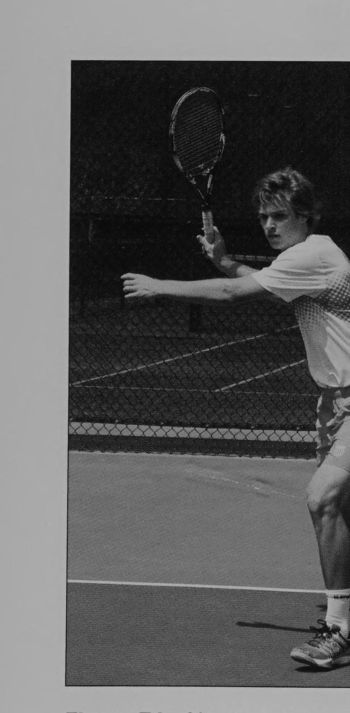
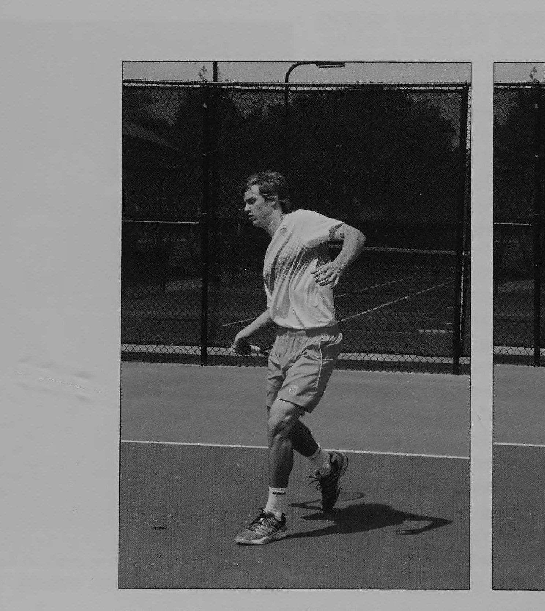
Phương pháp tiếp cận lát cắt
Phiên bản thuận tay của cú đánh này không được sử dụng nhiều trong trò chơi ngày nay, trừ khi người chơi thực hiện cú đánh muộn và đó là lựa chọn duy nhất. Roger Federer có cách tiếp cận cú đánh trái tay tuyệt vời, ở mức thấp và cho phép anh ấy có nhiều thời gian để vào lưới.
Cách thức Đây là cú đánh bằng một tay được thiết kế để ở vị trí thấp và khiến đối thủ bị đánh lên trên. Sử dụng kiểu cầm thuận tay kiểu Lục địa hoặc hơi Đông, cách tiếp cận lát cắt được đánh một cách mạnh mẽ khi đang đi lên hoặc như một cú đánh tiếp cận thông thường. Việc cắt lát đang gia tăng có nhiều lợi ích. Thực hiện cú sút sớm khiến đối phương mất cảnh giác và bóng ở vị trí thấp và sâu, giúp tay vợt có thêm thời gian để vào vị trí trên lưới tốt hơn. Khoảng thời gian người chơi phải di chuyển về phía trước quyết định khoảng cách để lấy lại vợt. Để có thêm thời gian, người chơi có thể sử dụng động tác backswing hoàn toàn. Với thời gian ngắn hơn hoặc Nếu đánh bóng khi đang lên, người chơi có thể sử dụng động tác backswing ngắn hơn. Kỹ thuật thực hiện cú đánh tiếp cận theo lát cắt tương tự như kỹ thuật thực hiện cú đánh tiếp đất thông thường (xem trang 43). Điểm tiếp xúc nằm ở phía trước một chút so với vị trí của cú đánh tiếp đất thông thường, đặc biệt là khi người chơi thực hiện cú đánh trên cao. Đối với một quả bóng được đánh đang bay lên, người chơi sử dụng điểm tiếp xúc tấn công và các vùng tấn công từ thấp đến trung bình. Giống như động tác đánh nền tấn công, cách tiếp cận lát trái tay sử dụng bước carioca. Người chơi phải xoay vai về phía bóng (xoay nửa vòng khi ở vị trí tốt và xoay một phần tư khi duỗi ra một chút). Vợt đặt lùi về phía chân sau và ở vị trí ngang bằng với quả bóng đang tới. Cú đánh được đánh từ cao xuống thấp và kéo dài ra ngoài bằng cánh tay. Bước carioca giúp cánh tay duỗi dài hơn. Cú đánh này sử dụng điểm tiếp xúc tấn công hoặc tập hợp và vùng tấn công từ thấp đến trung bình.
Trường hợp Cách tiếp cận này thường được thực hiện gần đường giao bóng và được đánh xuống đường biên tới phần sân mở, sâu trong sân hoặc ngắn hơn trong sân để gây bất ngờ hoặc nhầm chân cho đối thủ. Người chơi nên sử dụng cách tiếp cận ngắn hơn này khi đối thủ không muốn tiến về phía trước.
Khi trái tay Theslice là một cú đánh tuyệt vời để sử dụng để chuyển sang lưới và cướp thời gian của đối thủ. Cú đánh này được thực hiện khi người chơi nhìn thấy cơ hội tấn công. Mục tiêu của cú sút là giữ nó ở tầm thấp và giúp tay vợt có thêm thời gian để chuyển sang lưới. Cách tiếp cận lát cắt cũng có thể được sử dụng khi người chơi không có đủ thời gian để thực hiện cú đánh hoặc di chuyển quá nhanh qua quả bóng để thực hiện cú đánh thích hợp. Kiểu tiếp cận này được sử dụng để chống lại những đối thủ tốc độ khi thời gian là điều cốt yếu.
1 38 ván trượt tennis ¢ oRiLis
Phương pháp tiếp cận trái tay theo đường dọc
Robin Séderling là người hung hãn nên cú đánh tiếp cận cận biên của anh ấy được coi là người chiến thắng. Điều quan trọng cần nhớ là ngay cả khi một đấu thủ thực hiện một cú sút mạnh mẽ ở cuối đường biên và hy vọng đánh trúng cú ghi điểm trực tiếp, đấu thủ đó cần phải sẵn sàng kết thúc điểm bằng một cú vô lê có thể xảy ra. Đây có thể được gọi là một cú đánh tiếp cận bị trì hoãn bởi vì trong trường hợp này, người chơi đang di chuyển về phía trước và cú vô lê có thể là một cú vô lê vung hoặc một cú vô lê đưa bóng. Serena Williams sử dụng cú đánh tiếp cận đường biên rất hiệu quả. Cô ấy thực hiện một cú sút quyết liệt, nhưng mục tiêu của cô ấy là theo kịp nó và thực hiện cú vô lê chiến thắng.
Cách cầm vợt trái tay ưa thích của người chơi được sử dụng trong cú đánh này. Để đạt hiệu quả tối đa, người chơi nên sử dụng thế đứng khép kín hơn để lùi về phía sau bóng. Cú đánh này có thể được thực hiện khi người chơi muốn mất nhiều thời gian hơn đối thủ. Cú đánh này có thể và nên được sử dụng như một quả bóng cao hơn, nặng hơn, có quỹ đạo cao để giúp người chơi chuyển tiếp có nhiều thời gian hơn nếu họ đến bóng muộn.
Trái tay bằng hai tay_ Quả bóng này có thể được đánh như một cú đánh nền thông thường nếu người chơi đọc được bóng đang tới đủ sớm và bước vào sân. Điểm tiếp xúc tập hợp được ưa thích hơn và nó nằm trong khu vực tấn công tầm trung. Người chơi nên thực hiện một nửa lượt nếu đã chuẩn bị và một phần tư lượt với động tác rút lui viết tắt nếu cơ thể bị duỗi rộng. Người chơi phải tính thời gian di chuyển về phía trước để kết nối với bóng khi nảy. Người chơi có thể đánh một cú công bóng phẳng nếu ở đúng vị trí hoặc bằng cú đánh topspin nếu cần thêm một phần giây nữa để chuyển sang đúng vị trí sân. Cú đánh này được thực hiện từ giữa đường giao bóng và đường cuối sân và thường là ở giữa giữa trung tâm và con hẻm cũng như đến một phần ba bên ngoài của sân. Trái tay bằng một tay Người chơi thực hiện một cú xoay người rút gọn khi nhận bóng và cố gắng bắt nó khi đang nổi lên trong vùng tấn công từ thấp đến trung bình và tại điểm tiếp xúc tấn công. Người chơi sử dụng phiên bản một tay thường mất kiểm soát khi bóng ở khu vực tấn công cấp trên. Người chơi bằng một tay có thể lái bóng nếu ở vị trí thuận lợi hoặc sử dụng topspin để chuẩn bị lâu hơn trong tích tắc cho cú vô lê. Cầu thủ này cũng có phạm vi đánh bóng xa hơn một chút.
Trường hợp Một cách tiếp cận thường được đánh từ giữa đường giao bóng và vạch cuối sân và ở giữa điểm băm trung tâm và con hẻm. Nó phải được đánh sâu trong sân để có thể chuyển tiếp hoặc đánh ngắn trong sân cho đối thủ không di chuyển tốt từ sau ra trước.
Khi nào Cú đánh tiếp cận phải được thực hiện khi người chơi nhận được bóng ngắn và muốn chuyển sang lưới hoặc, đối với cách tiếp cận tích cực hơn, để đánh cú ghi điểm trực tiếp. Cú đánh này được thiết kế để làm mất thời gian của đối thủ và nó mang lại cho người chơi cơ hội tốt hơn để kết thúc điểm. Người chơi nên nhận ra quả bóng sắp tới là ngắn, dự đoán độ nảy và di chuyển mạnh mẽ với đà về phía trước. Nếu đối thủ đang hồi phục và không ở vị trí thuận lợi trên sân, đấu thủ sẽ tiếp cận càng nhanh càng tốt, khiến đối thủ có ít thời gian hồi phục hơn. Nếu đối thủ đã hồi phục, người chơi nên quyết liệt hơn và cố gắng đánh cú ghi điểm trực tiếp.
BÓNG CHUYỀN
Sau khi chuyển sang lưới, đấu thủ phải chuẩn bị thực hiện một cú vô lê, một cú đánh đầu (xem phần Đánh đầu trên trang 145), hoặc, nếu đối phương có một cú lốp bóng tốt, một cú sút tuyệt vọng (xem chương 8). Khả năng đánh vô-lê hiệu quả là điều quan trọng đối với trò chơi của người chơi. Bởi vì cú vô lê là những cú sút từ trên không nên chúng được thiết kế để giảm thời gian phản ứng của đối phương và giúp người chơi tiến về phía lưới hiệu quả hơn để kết thúc một pha bóng.
ván trượt lưới tôi điểm 3O. Tất cả các cú vô lê đều yêu cầu kỹ thuật, sự cân bằng và cảm giác tốt. Vị trí và sức mạnh của cú vô lê của một tay vợt quyết định liệu tay vợt đó sẽ tấn công hay phòng thủ trong cú đánh tiếp theo.
Cách cầm, tư thế và chuyển động
Cách cầm vợt Continental là cách cầm vợt tốt nhất để đánh cú vô lê thuận tay. Đối với cú vô lê trái tay, người chơi có thể chọn kiểu cầm vợt Continental hoặc Eastern. Một số người chơi thích xây dựng một chút xoáy xuống trong cú vô lê, vì vậy họ có thể có kiểu cầm bóng trái tay kiểu Eastern hơn, điều này đặc biệt hữu ích khi các tay vợt bị căng người trong cú vô lê hoặc đánh một cú vô lê thấp. Cách chuẩn bị chuyển động tốt nhất là bước tách, mang lại những ưu điểm sau: ¢ tôit cho phép chuyển động theo mọi hướng. * Nó kích hoạt đôi chân, chuẩn bị cho chúng di chuyển bùng nổ. ¢ Nó cho phép người chơi thực hiện một đường cắt bóng nhanh chóng. Người chơi nhảy vào tư thế hai chân rộng bằng vai và thân hướng vào lưới. Những người chơi cao cấp hơn sẽ nhảy về phía đường đi của cú đánh sắp tới bằng chân ngoài. Người chơi cố gắng hạ thấp người bằng cách uốn cong đầu gối chứ không phải lưng để ngang tầm mắt với quả bóng đang lao tới. Tư thế đánh vô-lê tốt có nghĩa là cơ thể được đặt thấp hơn, đầu gối cong và ngực thẳng (xem
Vị trí của quả bóng sắp tới quyết định tư thế thực hiện cú vô lê. Người chơi nên bước về phía hướng của cú đánh ngoài bước tách, có thể sang một bên để ra sau bóng hoặc thực hiện cú vô lê thuận tay. một đường chéo để cắt bớt một góc ảnh có góc cạnh hơn. Tuy nhiên, nếu cú vô lê gần tay vợt hơn, tay vợt nên di chuyển xung quanh bóng để tiếp xúc.
Kỹ thuật đánh bóng
Cú vô lê tiêu chuẩn đại diện cho kỹ thuật nền tảng cho tất cả các biến thể của cú chuyền. Hình thức đánh tiêu chuẩn là đánh vào vùng tấn công tầm trung. Cú đánh được thực hiện như một cú vô lê sức mạnh (dành cho người chiến thắng) hoặc để đặt một tay vợt vào vị trí tốt hơn cho cú đánh tiếp theo. Các phần sau đây thảo luận về kiểu xoay để có một cú vô lê tuyệt vời. Kỹ thuật này được áp dụng cho cả thuận tay và trái tay. Điều quan trọng cần lưu ý là cú đánh trái tay ưa thích cho cú vô lê tiêu chuẩn là cú đánh trái tay bằng một tay vì nó mang lại tầm với lớn hơn, cho phép người chơi tung ra nhiều cú đánh hiệu quả hơn. Nếu sức mạnh cánh tay của người chơi không đủ, người chơi nên sử dụng cú vô lê trái tay bằng hai tay và từ từ cố gắng tăng cường sức mạnh cánh tay. Khi đánh cú vô lê trái tay bằng hai tay, người chơi nên giữ tay không thuận ở cổ vợt để giúp tay thuận giữ thăng bằng khi đánh. Kỹ thuật này cũng tương tự, nhưng cần phải điều chỉnh các chuyển động tốt hơn bằng tay, chân và thân để thực hiện cú đánh bằng cú vô lê trái tay bằng hai tay.
Chuẩn bị và đưa vợt ra sau
Trong cú vô lê trái tay bằng một tay, vợt di chuyển nhẹ về phía sau theo đường đi của quả bóng đang tới để chuyển động chuẩn bị này kết thúc ở một bên đầu hoặc thậm chí hơi hướng về phía trước. Người chơi có thể hình dung vị trí vợt giống như việc đóng khung quả bóng với đầu vợt được đặt ở vị trí sao cho người chơi nhìn qua dây vợt khi thực hiện cú vô lê. Bằng cách phối hợp đầu và mắt ở gần đầu vợt (1 đến 1,5 feet, hoặc
Ở khoảng cách 0,3 đến 0,5 m), tay vợt có thể thực hiện dễ dàng hơn và tung cú vô lê sắc bén hơn. Cơ thể mở và quay mặt về phía bên kia của sân hoặc hơi xoay (xoay một phần tư; xem chiều cao der và chiều cao vòng eo. Tư thế thích hợp được cân bằng; đầu gối cong và ngực thẳng. Góc mặt vợt hơi mở. Việc thiết lập cho cú vô lê trái tay bằng hai tay yêu cầu một số điều chỉnh để tính đến tay thứ hai trên vợt. Một cách thiết lập có thể là đặt tay không thuận lên cổ vợt và sau đó tay không thuận thả ra khi người chơi tiếp xúc với quả vô lê. Một cách thiết lập khác giữ tay không thuận trên vợt và sử dụng nó để giữ thăng bằng cho cánh tay khi tiếp xúc. Tay không thuận có thể đặt lên cán vợt cạnh tay thuận hoặc cao hơn một chút. Cú vô lê trái tay bằng hai tay khó thực hiện ở những cú đánh rộng, vì vậy người chơi nên phát triển cú vô lê trái tay bằng một tay để có phạm vi tiếp cận xa hơn.
Đưa vợt tới và tiếp xúc bóng
Từ vị trí thăng bằng và lệch bước về phía đường đi của quả bóng đang tới, bàn chân trước bước ra theo đường chéo với tư thế nửa mở. Trong một số trường hợp, người chơi có thể xoay hông và đánh bằng tư thế đóng đối với quả bóng đang tới (xem hình 7.8). Thời điểm và vị trí của chân trước phụ thuộc vào khoảng cách của tay vợt với lưới. Bước thăng bằng thường thấy ở cú vô lê đầu tiên; người chơi bước về phía trước trong khi cúi thấp để gặp bóng ở khu vực tấn công ở cấp độ thấp hơn. Khi người chơi di chuyển đến gần lưới hơn và có ít thời gian để phản ứng hơn, tư thế nửa mở đến mở là lựa chọn tốt hơn. Vai xoay về phía trước và khuỷu tay trước duỗi ra để cung cấp khả năng theo dõi và giữ thăng bằng. Khuỷu tay vẫn hơi khép vào nhưng vẫn thoải mái. Mặt vợt hơi mở và tiếp xúc ngay phía trước và bên cạnh đầu người chơi. Đầu và cổ tay phải cách nhau khoảng 1,5 feet (0,5 m). Để tung cú vô lê mạnh hơn, người chơi không nên mở rộng hoàn toàn khuỷu tay đánh. Điều này đảm bảo rằng họ sử dụng tay cũng như cơ thể để đánh bóng. Sự cân bằng rất quan trọng thông qua việc chuẩn bị và tiếp xúc.
cú vô lê.
Động tác kết thúc
Đường đi của vợt di chuyển về phía trước, xuống và ngang qua quả bóng. Người chơi nên xoay cả hai vai về phía lưới khi thực hiện cú vô lê thuận tay. Cú vô lê trái tay thì ngược lại: Người chơi đánh bóng bằng cánh tay trước và thả cánh tay sau về phía hàng rào phía sau, giữ vai ngang bằng và nghiêng sang một bên sau khi tiếp xúc. Người chơi nên giữ đầu vợt cao hơn mép lưới sau khi tiếp xúc để sẵn sàng đón nhận phản ứng của đối phương và tránh đánh một cú vô lê cẩu thả. Bề mặt sân và giai đoạn thi đấu ảnh hưởng đến cách người chơi thực hiện cú vô lê. Trên các bề mặt chậm hơn, chẳng hạn như sân đất nện, người chơi có xu hướng tiến xa hơn khi thực hiện các cú vô lê. Trên các bề mặt nhanh hơn, chẳng hạn như sân cứng nhanh trong nhà, một bước theo dõi ngắn gọn hơn sẽ hoạt động hiệu quả (xem hình 7.9). Khi thực hiện một giai đoạn tấn công bằng một quả bóng dễ, người chơi có thể chọn thả lỏng theo đường bóng sau. Một lựa chọn tốt hơn là tấn công bóng bằng chân và duy trì thời gian theo dõi ngắn hơn. Nếu một đấu thủ đang ở thế phòng thủ trong một trận đấu đôi và một đối thủ đang xé bóng ngay tại Hình 7.9 Theo dõi đối với người chơi thuận tay, thì một pha chặn bóng ngắn hơn sẽ đủ. cú vô lê.
Sử dụng vô-lê
Việc phát triển các cú vô lê đa dạng là điều quan trọng. Ngoài cú vô lê tiêu chuẩn, còn có cú vô lê cao, cú vô lê cắt ngang, cú vô lê nửa người, cú vô lê thấp, cú vô lê thả và cú vô lê phòng thủ. Giống như cú vô lê tiêu chuẩn, mỗi biến thể có thể được đánh bằng thuận tay hoặc trái tay. Kiểu vô lê mà một tay vợt sử dụng phụ thuộc vào vị trí của tay vợt trên sân, sức mạnh cú sút của đối phương và tính chất tấn công hoặc phòng thủ của tình huống. Tất nhiên, mục đích chính của bất kỳ cú vô lê nào là đánh một cú mà đối thủ không thể bắt được hoặc khiến đối thủ có ít thời gian phản ứng hơn.
Bóng chuyền cao
Roger Federer sử dụng cú vô lê cao rất tốt. Sự thăng bằng của anh ấy khi di chuyển về phía trước trên sân mang lại cho anh ấy sức mạnh và khả năng đánh vào một vị trí có lợi về mặt chiến lược. Cú đánh này đòi hỏi cảm giác và sức mạnh, và Federer có đủ cả hai yếu tố đó.
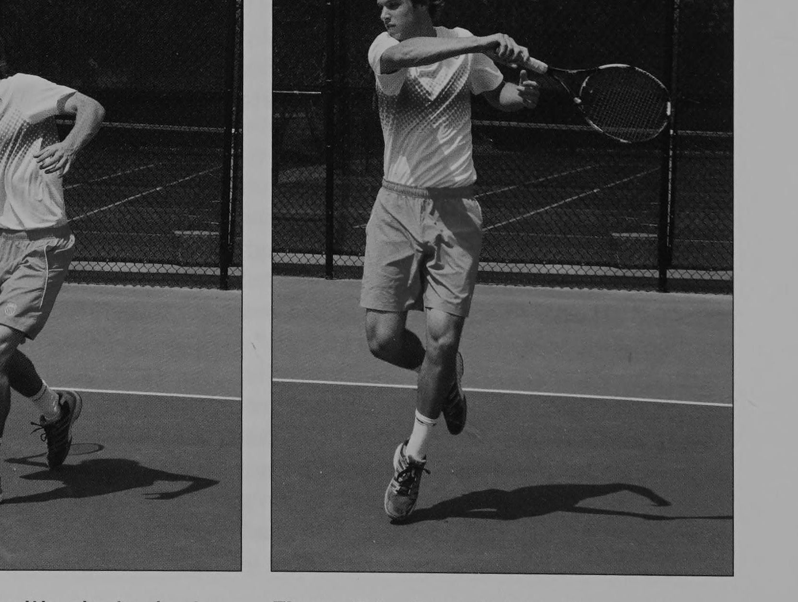
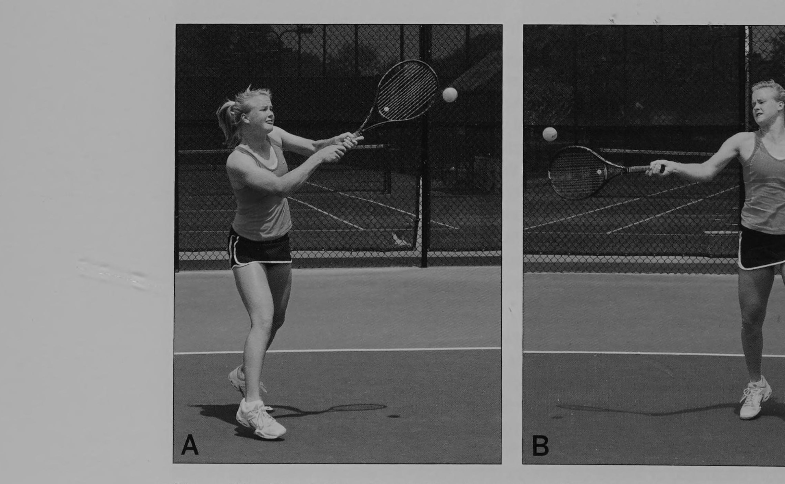
Cách một số tay vợt sử dụng kiểu cầm Continental trong cú vô lê này trong khi những người khác lại thích đưa tay ra phía sau cán vợt nhiều hơn, vì vậy họ chọn kiểu cầm vợt thuận tay kiểu Eastern hoặc kiểu cầm vợt trái tay kiểu Eastern. Để đánh cú vô lê cao, người chơi đưa vợt về phía sau xa hơn một chút để đối thủ có thể nhìn thấy mũ vợt ở vị trí cao. Một cú vô lê cao đi sâu hơn trong cú đánh trái tay trên sân cho thấy nhiều điểm chạm mông hơn. Mũ mông càng lộ rõ thì cú đánh càng gần với cú vô lê, tay vợt vào lưới. Cú xoay về phía trước được thực hiện với chuyển động nhẹ từ cao xuống thấp để bóng phẳng hơn, nên sử dụng Cari- nhưng mục tiêu của cú vô lê này là độ sâu. Một cú vô lê cao với độ xoáy xuống rất khó thực hiện và bước oca, đòi hỏi chuyển động từ cao xuống thấp mạnh mẽ hơn trong bóng. giúp tạo ra sức mạnh cho cú vô lê bằng cách giữ cho vai luôn xoay trong khi di chuyển về phía trước.
[47 Tiểu phẩm & bài tập Tennis Mặt vợt vẫn mở hơn một chút vì đầu vợt cần được đẩy ra xa hơn so với cú vô lê thông thường. Điểm tiếp xúc là điểm đánh tới các điểm tiếp xúc phòng thủ và lùi xa hơn một chút so với cú vô lê tiêu chuẩn vì nó lấy đi động lượng của cơ thể và chuyển động tăng tốc của đầu vợt. Bóng được đánh vào khu vực tấn công cấp trên. Cánh tay tiếp tục đi xuống và hướng ra ngoài để có được độ sâu càng nhiều càng tốt (xem hình 7.10). Một phiên bản khác của cú đánh này đòi hỏi phải sử dụng động tác vung vợt về phía sau ngắn hơn và thực hiện cú vô lê sử dụng đà về phía trước để tăng tốc cho bóng.
Trường hợp Cú đánh này thường được đánh từ giữa sân, giữa đường giao bóng và vạch cuối sân ở một phần ba giữa sân. Khi quyết định vị trí thực hiện cú vô lê này, người chơi nên sử dụng quy trình suy nghĩ tương tự như đối với cú đánh tiếp cận: chủ yếu đến phần ba bên ngoài sâu trong sân hoặc lùi về giữa để loại bỏ góc đánh vô-lê của đối phương.
Khi tính chất tấn công của cú đánh này phụ thuộc vào kỹ năng của người chơi. Những tay vợt có kỹ năng trình độ thấp hơn sẽ rất khó thực hiện các cú sút một cách nhất quán. Những tay vợt có trình độ kỹ năng cao hơn coi đó là cơ hội để tấn công có phản ứng nổi cao và thực hiện cú vô lê. xa.
cú lốp bóng
Cú đánh này là sự kết hợp giữa cú vô lê và cú lốp bóng. Trong đấu đôi, Bob Bryan và Mike Bryan có thể thực hiện cú vô lê cực tốt khi cả hai đối thủ của họ đều ở trên lưới.
Cách thực hiện Ở cú lốp bóng, mặt vợt hơi mở ra, tạo ra hiệu ứng lốp bóng. Cú đánh này được đánh phẳng hoặc có một cú chạm bóng xoáy xuống. Cú đánh này thường bị chệch hướng với một chút xoáy xuống vì mặt vợt hơi mở. Cố gắng thêm nhiều xoáy xuống đòi hỏi kỹ năng tuyệt vời. Cú đánh sử dụng điểm tiếp xúc phòng thủ và vùng tấn công từ thấp đến trung bình. Quá trình theo dõi diễn ra ngắn gọn; chuyển động từ thấp đến cao theo đường đi của quả bóng. Mặt khác, kỹ thuật này phản ánh kỹ thuật của cú vô lê tiêu chuẩn.
Nơi Cú đánh này thường được đánh từ gần đường giao bóng. Đối phương có thể đang tiến về phía trước, hy vọng đưa bóng đi hoặc tiến lại gần hơn để thực hiện cú vô lê tiếp theo hoặc có thể bị bắt ra khỏi vị trí.
Khi cú lốp bóng thường được thực hiện trong giai đoạn phòng thủ của lối chơi khi đối phương ở gần lưới và đánh bóng ngay vào người chơi. Người chơi làm chệch nhịp độ của đối phương bằng cách mở mặt vợt và lốp bóng qua đối phương, khiến đối phương rơi vào thế phòng thủ, tranh nhau giành lại cú lốp bóng. Cú vô lê lốp bóng cũng có thể được thực hiện một cách tấn công khi cả đấu thủ và đối thủ đều đang nhanh chóng áp sát lưới nhưng bóng lại ở trên vợt của đấu thủ đó trước. Nếu có thể lốp bóng qua đối phương, điểm thuộc về đấu thủ.
Nửa cú vô lê
Cú vô lê một nửa là cú đánh sử dụng động lượng về phía trước để định vị vợt sao cho người chơi có thể chặn nhẹ cú đánh hoặc làm chệch hướng nó đến vị trí mong muốn. Cú vô lê một nửa không giống những cú vô lê khác ở chỗ nó không được đưa lên không trung mà nảy ra; kết quả là bóng mất tốc độ.
Nhìn chung, các tay cầm giống nhau được sử dụng cho cú vô lê nửa bóng cũng như đối với cú vô lê tiêu chuẩn. Nếu đấu thủ không có đủ thời gian chuẩn bị thì có thể sử dụng cách cầm vợt tiếp đất.
ván trượt lưới |] | 3
ĐIỂM HUẤN LUYỆN
Cú đánh này thường gây khó chịu cho người chơi vì họ phải phối hợp các vấn đề sau để căn thời gian hợp lý: vợt vào đúng vị trí, cú vung vợt ngắn hơn, bóng nảy khi thực hiện cú đánh phẳng hoặc cú đánh xoáy lên và một cú theo bóng mượt mà. Cú vô lê một nửa đòi hỏi sự khéo léo và sử dụng tay tốt, nhưng nó là một công cụ học tập tuyệt vời.
Vợt di chuyển về phía sau với một cú vung vợt về phía sau ngắn hơn (ngay phía sau lưng ở phía bên của cú đánh) trong khi phần thân trên xoay. Người chơi quay sang một bên theo cách tương tự như cách thực hiện cú vô lê tiêu chuẩn. Sau đó, người chơi thực hiện cú đánh này với tư thế đóng hoặc, nếu không ở vị trí tốt, tư thế hơi mở. Người chơi duy trì thăng bằng ở chân và giữ thăng bằng khi tiếp xúc. Mặt vợt mở và di chuyển về phía trước với chuyển động quét của cánh tay và tăng tốc nhanh chóng của cổ tay hướng lên trên. Nó chắc chắn và hướng bóng đến đích. Người chơi đôi khi có thể thực hiện cú xoay người lớn hơn và nếu thời gian cho phép, hãy thêm xoáy lên vào cú đánh. Cú đánh sử dụng điểm tiếp xúc tấn công ở vùng tấn công ở mức thấp hơn, trong trường hợp này là ở ngang mắt cá chân, đồng thời trọng lượng cơ thể chuyển về phía trước và hơi hướng lên trên để giữ thăng bằng và hướng cú đánh. Không giống như cú vô lê tiêu chuẩn, bước tiếp theo của cú đánh này là chuyển động từ thấp đến cao.
Vị trí Cú đánh này được đánh từ ngay sau đường giao bóng vào lưới. Vị trí tốt nhất để thực hiện cú vô lê nửa chừng là dọc biên và sâu trong sân, nơi giữ bóng ở phía trước tay vợt để sẵn sàng cho cú vô-lê hoặc lốp bóng của đối phương.
Khi cú chuyền một nửa được sử dụng trong hai trường hợp. Một khả năng có thể xảy ra là khi một tay vợt đang đến gần lưới và đối phương nhúng bóng xuống chân tay vợt đó, khi đó tay vợt đó không thể đưa bóng lên trên không một cách hiệu quả. Một khả năng khác là khi người chơi đang đánh bóng ở đường cuối sân và không có thời gian để di chuyển trở lại sân hoặc thực hiện một cú đánh nền thích hợp. Trong trường hợp này, người chơi có thể sử dụng cú vô lê một nửa để đưa bóng trở lại lưới.
Bóng chuyền thấp
Cú vô lê thấp là cú vô lê thuận tay hoặc trái tay được đánh dưới mức thắt lưng hoặc khiến tay vợt phải duỗi người ra rộng. Các tay vợt đánh đôi xuất sắc Max Mirnyi, Daniel Nestor và Leander Paes sử dụng rất tốt cú đánh này. Tất cả những tay vợt này đều cúi xuống và thực hiện cú vô lê của mình cho đến khi bóng đi qua lưới. Cách người chơi sử dụng kiểu cầm vợt trái tay kiểu lục địa hoặc kiểu Đông, mặc dù kiểu cầm trái tay kiểu kiểu Đông được ưa chuộng hơn do mặt vợt mở tự nhiên mà nó mang lại. Cú vô lê thấp sử dụng ít hoặc không có động tác backswing. Vợt được đặt trên đường đi của cú đánh tới với mặt vợt mở (được thiết kế cho chiều cao) và di chuyển từ cao xuống thấp. Cú đánh được thực hiện với đầu gối cong và phần thân trên cúi xuống trong khi với tay để đánh (xem hình 7.11). Đầu gối giữ nguyên vị trí nhưng từ từ di chuyển về phía trước khi bóng được đánh. Hình 7.11 Chuẩn bị cho cú vô lê thấp
{4.Z tiểu phẩm tennis ¢ oRitts Điểm tiếp xúc của cú vô lê thấp là điểm tiếp xúc tấn công cách cơ thể khoảng 1,5 feet (0,5 m). Đối với một cú vô lê thấp kéo dài, điểm tiếp xúc cách bên cạnh khoảng 2 feet (0,6 m). Cú đánh cũng sử dụng vùng tấn công ở cấp độ thấp hơn. Cần giữ thăng bằng tốt và cổ tay phải vững chắc. Thời gian thực hiện theo dõi ngắn hơn, giúp cổ tay có được một chút động lượng khi thực hiện cú xoay với chuyển động từ thấp đến cao và vị trí cơ thể được duy trì để tạo sự cân bằng.
Trong đó Cú vô lê thấp được chơi chủ yếu từ xung quanh đường giao bóng về phía phần ba bên ngoài và sâu trong sân. Khi đánh tới vị trí này, nó cho phép người chơi có đủ thời gian để hồi phục và chuẩn bị cho cú vô lê tiếp theo. Cú vô lê thấp thường được thực hiện ở phía trước cơ thể hoặc sang một bên cơ thể. Nó mang tính chất phòng thủ, trừ khi tay vợt có cú vô lê cực thấp, khi đó được coi là tấn công nhiều hơn.
Khi cú vô lê này được thực hiện khi cần thiết, chẳng hạn như khi một tay vợt ở trên lưới và đối phương đánh vào chân tay vợt đó, khi bóng rơi xuống dưới mức thắt lưng hoặc khi một tay vợt bị căng ra rộng trên lưới.
thả vô-lê
Cú vô lê thả được thực hiện khác với các cú vô lê khác vì nó được sử dụng để giảm tốc độ (xẹp hơi) một cú đánh đang tới và thả nó ngay trên lưới. Cầu thủ người Áo Jurgen Melzer xuất sắc ở pha sút này. Anh ấy có đôi tay tuyệt vời và cũng là một tay vợt đánh đôi xuất sắc, anh ấy không gặp vấn đề gì khi vào lưới để thực hiện cú đánh này.
Kỹ thuật chuẩn bị giống như đối với cú vô lê tiêu chuẩn. Sau đó, vợt di chuyển từ từ đến điểm tiếp xúc và mặt vợt hơi mở ra ngay trước khi tiếp xúc. Khi tiếp xúc, cánh tay chậm lại khi tiến về phía trước và dừng lại khi tiếp xúc. Cú đánh sử dụng điểm tiếp xúc tấn công ở vùng tấn công từ giữa đến thấp hơn. Cổ tay xoay một nửa xuống phía dưới ở phía trái tay và hướng lên trên ở phía thuận tay, tạo ra nhiều mặt thoáng hơn để tạo độ cao cho cú đánh (xem hình 7.12). Hành động này, kết hợp với việc cầm vợt nhẹ nhàng và dừng cánh tay, khiến bóng rơi nhẹ qua lưới. Ít xoay cổ tay hơn sẽ tạo ra một cú thả bóng phẳng hơn khi tiếp xúc với bóng.-Mặt vợt hơi di chuyển xuống dưới và lùi lại (kéo vợt về phía sau) để thực hiện cú vô lê về phía trước. Đối với người chơi có trình độ cao hơn, mặt vợt có thể di chuyển về phía sau và sang một bên để thực hiện cú đánh thả bóng có một chút xoáy ngang.
Vị trí Cú đánh này thường được đánh từ rất gần lưới, nhưng nó có thể được đánh ở bất cứ đâu ngay bên trong đường giao bóng. Nó phải được đặt để tiếp đất về phía đối phương ngay trước mặt đấu thủ, qua lưới và bên trong ô giao bóng, hoặc, nếu ở vị trí tốt, ở một góc bên trong ô giao bóng và chỉ hạ cánh qua lưới. Cũng giống như trong cú đánh thả bóng, người chơi đặt mục tiêu thực hiện cú vô lê thả bóng sao cho nó nảy ba đến năm lần trong ô giao bóng của đối phương hoặc nó nảy một lần và đi ra ngoài sân.
Khi người chơi A sử dụng cú vô lê khi đối thủ đang ở trên đường cuối sân và người chơi muốn bắt đối thủ ở vị trí dễ bị tổn thương. Cú vô lê này rất hiệu quả trước bất kỳ đối thủ nào, nhưng đặc biệt là với những tay vợt không thích tiến về phía trước, có lối chơi kém.
Bóng chuyền phòng thủ
Lý do chính khiến nhiều người chơi sợ chơi trên lưới là vì họ không muốn cú đánh tốt nhất của đối thủ bay thẳng vào mình. Cú vô lê phòng thủ, một cú sút không được luyện tập kỹ lưỡng, cho phép các tay vợt tự vệ trước lưới.
Cú vô lê trái tay là cú vô lê phòng thủ tốt nhất. Nếu một tay vợt lần đầu tiên quay sang bên để đánh một cú vô lê thuận tay và cố gắng bảo vệ cơ thể khỏi vị trí này thì điều đó là vô cùng khó khăn. Nếu người chơi quay sang đánh một cú vô lê trái tay và sau đó cố gắng bảo vệ cơ thể, người chơi có thể chặn bất kỳ quả bóng nào đánh từ đầu xuống chân. Điểm tiếp xúc là điểm tiếp xúc tấn công hoặc tập hợp, tùy thuộc vào phản ứng của người chơi và vùng tấn công ở mức trung bình.
Trường hợp cú vô lê này thường được đánh từ bên trong đường giao bóng. Những tay vợt thiếu tự tin nên tiến lại gần lưới vì càng gần lưới thì khả năng khi chặn được cú sút của đối thủ, cú sút đó sẽ bay qua lưới thành công sẽ là người chiến thắng.
Khi Bất cứ lúc nào một quả bóng được đánh trực tiếp vào cơ thể.
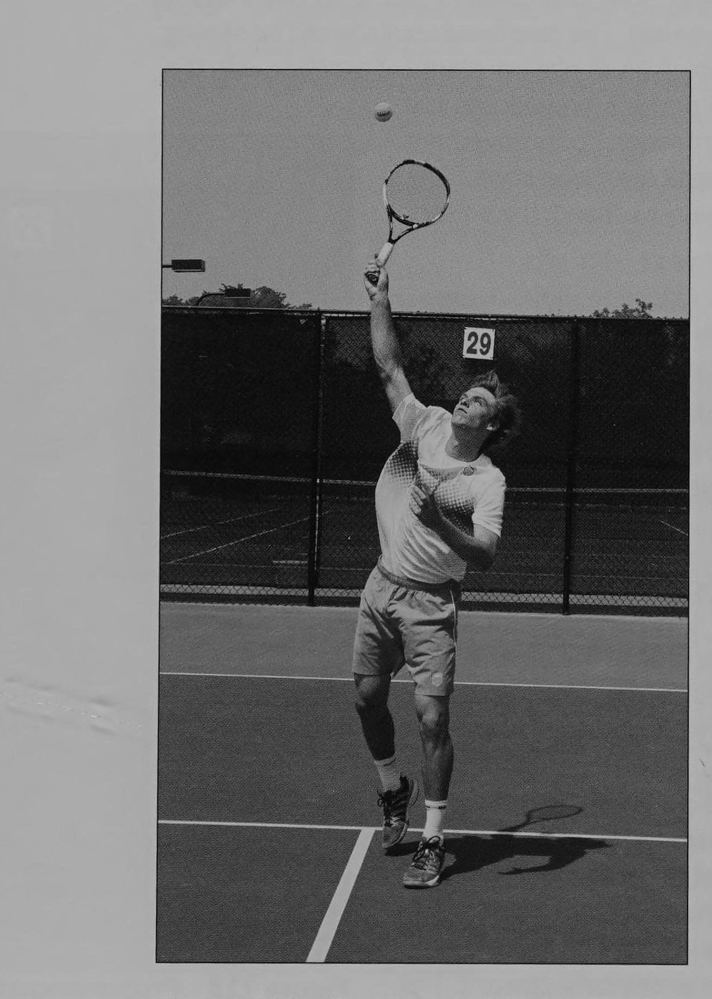
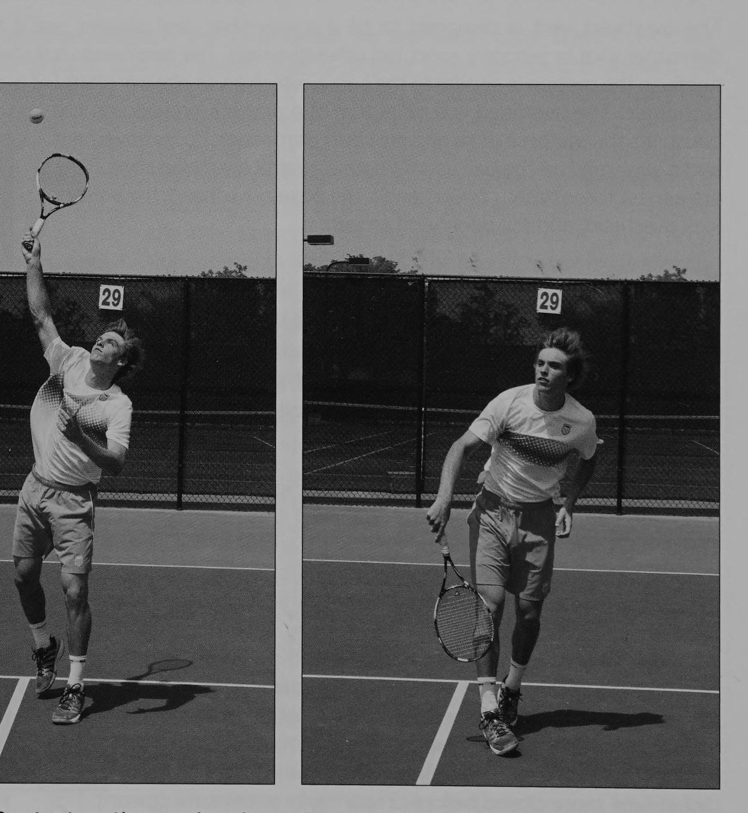
cú sút từ trên cao
Cú đánh trên cao được thiết kế để trở thành một cú đánh mạnh và người chơi sử dụng nó để loại bỏ một cú đánh phòng thủ hoặc một cú tấn công được thực hiện kém. Cú đánh từ trên cao phải mạnh vì chuyển động tương tự như cú giao bóng, giúp người chơi thực hành kỹ thuật nhiều. Chi phí trên phản ánh sự dũng cảm của một tay vợt trên sân; đó là hình ảnh thu nhỏ của phong thái mạnh mẽ trên sân. Chuyển động kém và đọc bóng chậm thường gây ra cú đánh từ trên cao yếu. Người chơi có thể đánh ba loại cú đánh trên cao: cú đánh qua đầu bằng sức mạnh, cú đá cắt kéo trên đầu và cú đập trái tay.
Cú sút từ trên cao
Andy Roddick sử dụng cú đánh này rất hiệu quả. Bởi vì những cú đánh nền của anh ấy rất mạnh nên anh ấy nhận được rất nhiều cú đánh phòng thủ. Trò chơi của anh ấy được xây dựng dựa trên sức mạnh và cú giao bóng của anh ấy cũng tốt, vì vậy anh ấy sử dụng cú đánh trên cao của mình như một phần mở rộng của cú giao bóng ở vị trí thuận lợi hơn trên sân.
Chuẩn bị và đưa vợt ra sau
Sử dụng kiểu cầm vợt thuận tay kiểu lục địa hoặc kiểu Đông, người chơi xoay người sang một bên vào vị trí nhận bóng bằng cách sử dụng các bước điều chỉnh ngắn. Phần thân trên quay và nghiêng về phía sau, đồng thời toàn bộ trọng lượng cơ thể dồn lên chân sau (tương tự như một tiền vệ bắt ruồi). Đồng thời, vợt được chuẩn bị ở phía sau và phía sau đầu với kỹ thuật tương tự như khi giao bóng (xem hình 7.13). Với việc thu lại, tay không thuận chỉ vào quả bóng đang tới và vợt được đặt ở vị trí cúp; khuỷu tay hơi cong thấp hơn vai. Góc vợt hơi khép lại từ vị trí bình phương. Cánh tay không cầm vợt vươn lên trên để giữ thăng bằng và phối hợp khi khuỷu tay di chuyển về phía sau, đưa mặt vợt khép lại hơn trước khi chuẩn bị tăng tốc hướng lên trên. --- Hình 7.13. Việc chuẩn bị thích hợp cho cú đánh sử dụng điểm tiếp xúc tấn công và vùng tấn công cấp trên. chi phí chung.
146 TENNIS S ~ 34€ > & DRILLS rr Một biến thể về kỹ thuật và chiến thuật xảy ra ở phía trên lực khi người chơi để bóng nảy lên trước khi đánh nó. Trong phiên bản này, người chơi di chuyển về phía sau, để bóng nảy lên và sau đó sử dụng động tác di chuyển sang bên để di chuyển về phía bóng, chuyển trọng lượng cơ thể vào cú đánh trong khi giữ cả hai chân trên mặt đất. Biến thể chiến thuật là nếu người chơi quyết định để quả ném trên cao trước vì trời tối, nắng, gió hoặc lý do khác, thì điều quan trọng là phải đặt quả trên cao nếu được đánh từ phía sau đường giao bóng và phải là người chiến thắng nếu được đánh bên trong đường giao bóng.
Đưa vợt tới và tiếp xúc bóng
Đầu vợt tăng tốc hướng lên trên và người chơi vươn người lên để đánh bóng. Trọng lượng cơ thể chuyển về phía trước, tương tự như một tiền vệ chuẩn bị thực hiện quả ném biên. Cánh tay duỗi ra và bóng được đánh bằng cẳng tay sấp và duỗi thẳng (giống như đối với động tác giao bóng). Vợt chạm bóng phía trên và phía trước đầu người chơi (xem phía trước sao cho mặt vợt bắt đầu khép xuống. Cánh tay không chơi bắt đầu chuyển động đi xuống.
Động tác kết thúc
Cánh tay chơi thực hiện theo cách tương tự như thực hiện một quả giao bóng và phần thân trên đi theo đường đi của bóng. Cánh tay không chơi sẽ đưa xuống ngang cơ thể hoặc sang một bên (xem hình 7.15). Người chơi di chuyển về phía trước, hồi phục cho cú đánh tiếp theo.
trên cao.
ĐIỂM HUẤN LUYỆN
Chuyển động lực trên đầu tương tự như chuyển động khi giao bóng. Nếu một người chơi đánh một cú giao bóng qua đầu tốt hơn một cú giao bóng, thì người chơi đó có thể gặp sự cố ở đâu đó trong cơ sở hoặc nhịp giao bóng và cú đánh trên cao có sức mạnh có thể được sử dụng để khắc phục sự cố của cú giao bóng. Sự khác biệt duy nhất giữa cú đánh từ trên cao và cú giao bóng là chuyển động của bàn chân khi thực hiện. Huấn luyện viên và người chơi có thể xem cách người chơi thực hiện cú đánh từ trên cao và so sánh nó với cú giao bóng. Nếu hình thức giao bóng trên cao tốt hơn hình thức giao bóng, huấn luyện viên và đấu thủ có thể đánh giá tư thế giao bóng và bất kỳ chuyển động chân nào của đấu thủ.
Trong đó cú đánh trên cao của Thepower có thể được thực hiện từ bất kỳ vị trí nào trên sân và được thiết kế để trở thành một cú đánh xa. Nói chung, nó được đánh tới các phần ba bên ngoài của sân từ bên trong ô giao bóng hoặc xung quanh đường giao bóng. Sức mạnh trên không cũng có thể được thực hiện ở 1/3 giữa sân, nhưng nếu đối thủ giỏi đoán trước cú đánh thì người chơi phải chuẩn bị sẵn sàng để phòng thủ tốt.
Khi _ Người chơi sử dụng cú đánh mạnh từ trên cao khi đối phương đánh bóng cao, chẳng hạn như lốp bóng hoặc trả lời yếu, và người chơi đang ở vị trí thuận lợi trên lưới để đưa bóng đi. Cú đánh từ trên cao có sức mạnh đặc biệt đáng sợ khi đối thủ dường như đã thực hiện được một cú đánh tốt chẳng hạn như lốp bóng và cú đánh trên cao bị đưa ra khỏi tầm với của đối thủ. Một biến thể của cú đánh mạnh từ trên cao được thực hiện để xác định vị trí. Biến thể này được sử dụng khi đối thủ thực hiện một cú lốp bóng hiệu quả hoặc khi người chơi mất thăng bằng và cần thực hiện cú đánh. Ngay cả khi cú đánh đó không mang lại chiến thắng, vị trí tối ưu sẽ giúp người chơi ở vị trí tốt hơn cho cú đánh tiếp theo.
Cú đá cắt kéo từ trên cao
Đối với cú đánh này, người chơi sử dụng động tác nhảy thẳng đứng, tạo ra cú đá cắt kéo để vào đúng vị trí để thực hiện cú sút uy lực. Nếu ở vị trí thuận lợi, người chơi có thể thực hiện cú đánh từ trên cao này để lấy sức mạnh; nếu cú lốp bóng ngoài tầm với thì người chơi có thể đánh nó để xác định vị trí. Andy Murray có khả năng bật nhảy tuyệt vời. Vì vậy, khi một cú lốp bóng được thực hiện với quỹ đạo phẳng hơn đi qua đầu anh ta, anh ta có thể nhảy lên và hơi lùi về phía sau trong khi giữ thăng bằng và vẫn dồn rất nhiều lực vào cú đánh từ trên cao của mình. Kỹ thuật thực hiện cú đá cắt kéo từ trên cao cũng giống như kỹ thuật thực hiện cú sút từ trên cao ngoại trừ một số biến thể.
Chuẩn bị và đưa vợt ra sau
Về cơ bản, người chơi muốn chuẩn bị cho một cú đánh mạnh từ trên cao và điều chỉnh khi bóng bay cao hơn và có vẻ như bay qua đầu (hình 7.16). Khi người chơi đã xác định được trường hợp này, người chơi sẽ tải chân sau, ngả người về phía sau, đá vào chân và đưa tay lên cao nhất có thể để kéo cú lốp bóng xuống. Bởi vì cơ thể nghiêng về phía sau nhiều hơn cho phần trên cao này nên cần có sự cân bằng tuyệt vời để thực hiện tốt động tác này. Cú đánh sử dụng vùng tấn công cấp cao hơn và tập hợp các điểm tiếp xúc phòng thủ.
đá trên đầu.
Đưa vợt tới và tiếp xúc bóng
Khi người chơi đưa tay lên đánh bóng, cả hai chân thực hiện cú đá cắt kéo đối trọng trên không: Chân sau thay thế cho chân trước và ngược lại (hình 7.17). Phần thân trên quay về phía trước và tác động xảy ra trong không khí. Điểm tiếp xúc trong ảnh này cao hơn và xa hơn một chút. Người chơi cố gắng vươn cánh tay đánh bóng lên trong khi thả lỏng hông và vai.
Động tác kết thúc
Cánh tay không chơi sẽ di chuyển xuống dưới (xem hình 7.18). Người chơi tiếp đất bằng chân sau hoặc chân trước tùy theo chuyển động. Sau đó người chơi đẩy chân tiếp đất ra để vào vị trí cho cú đánh tiếp theo.
Trong đó cú đá cắt kéo trên cao thường được đánh từ một phần ba giữa sân và đánh ra các phần ba bên ngoài, sâu trong sân hoặc bên trong đường giao bóng.
Khi Cú đá cắt kéo được sử dụng khi bóng được đánh nhẹ về phía sau đầu của một tay vợt hoặc khi một tay vợt phải nhảy lên để đánh bóng một cách hiệu quả.
trên không. cú đá cắt kéo.
Cú đập trái tay
Cú đánh từ trên cao này được thực hiện ở phía bên trái tay và trừ khi một tay vợt đã thực hiện cú đánh hoàn hảo, cú đánh này thường được sử dụng cho vị trí thay vì sức mạnh. Cú đập trái tay hiếm khi được sử dụng với cú đá cắt kéo, nhưng nếu một tay vợt rất khỏe mạnh có thể thực hiện cú đánh này thì nó có thể rất hiệu quả. Gaél Monfils là kiểu tay vợt thể thao khiến cho cú đánh này trở nên dễ dàng. Kỹ thuật này tương tự như đối với cú đánh từ trên cao ngoại trừ một số biến thể.
Chuẩn bị và đưa vợt ra sau
Đối với cú đánh này, người chơi sử dụng cú đánh trái tay kiểu Eastern hoặc Continegrnipt. aNgười chơi quay sang một bên để đưa vợt về vị trí (hình 7.19). Chuyển động của chân trong cú đánh này phụ thuộc vào mức độ gần bóng của người chơi. Nếu bóng được đánh sâu hơn trong sân, đấu thủ cần lùi bằng chân sau đồng thời quay lưng về phía đối phương. Có thể theo sau chuyển động này bằng một bước chéo và đặt chân sau để tạo lực đẩy lên _— Hình 7.19 Chuẩn bị cho cú đập trái tay. quả bóng. Nếu cú đánh gần hơn, người chơi có thể di chuyển để cảm thấy như thể trọng lượng đã giảm bớt và sẵn sàng di chuyển về phía trước với đà. Đầu vợt nằm phía trên cổ tay và dùng tay dẫn hướng kéo lên trên để cố định vợt. Người chơi chuyển trọng lượng sang chân sau. Người chơi chuẩn bị nhảy lên ở một góc hơi lùi về phía sau. Cú đánh sử dụng điểm tiếp xúc tấn công và vùng tấn công cấp trên.
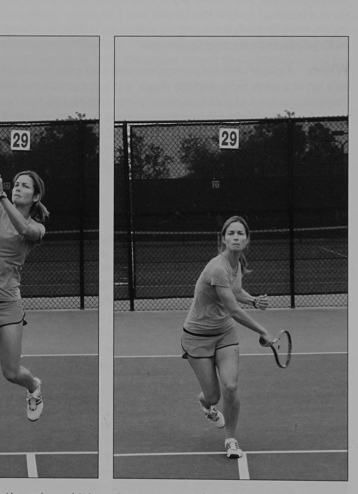
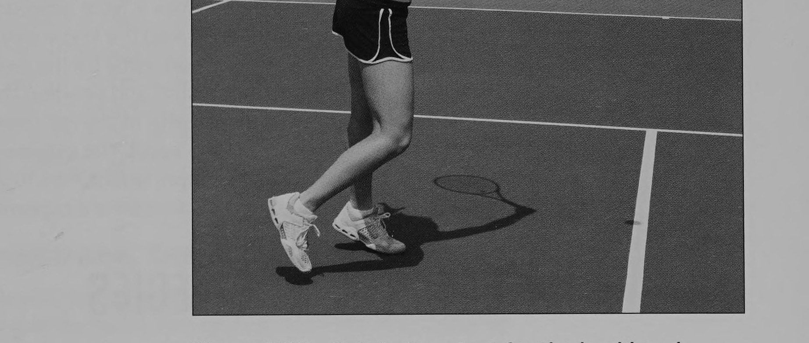
Đưa vợt tới và tiếp xúc bóng
Người chơi đẩy bóng lên khỏi mặt đất, tốt nhất là sử dụng chân sau để giữ thăng bằng, sau đó nhảy lên và đánh bóng bằng một cú hất cổ tay xuống (hình 7.20). Cánh tay chơi hạ xuống và người chơi phải đứng nghiêng trong khi thực hiện cú đánh. Người chơi chạm bóng ở phía trên và hơi ở phía trước cơ thể.
đập vỡ.
Động tác kết thúc
Sau khi tiếp xúc, cánh tay tiếp tục vung theo hướng đánh (hình 7.21), và người chơi tiếp đất bằng chân sau với cú dứt điểm cân bằng.
Nơi Cú đánh này được đánh từ phía sau tay đến các phần ba bên ngoài của sân, hoặc chéo bàn trong ô giao bóng để đánh theo một góc hoặc sâu hơn theo đường biên đến phần ba bên ngoài. Người chơi chủ yếu nên sử dụng vị trí thứ ba sâu bên ngoài vì cú đánh này rất khó thực hiện và điều này giúp người chơi có được vị trí tốt hơn cho cú đánh tiếp theo.
Khi nào Cú đập trái tay chỉ nên là một lựa chọn khi người chơi không có đủ thời gian để chạy xung quanh và thực hiện một cú đánh từ trên cao thông thường.
CHUYỂN ĐẾN BÓNG TIẾP THEO
Mục tiêu của việc chơi trên lưới là kết thúc điểm nhanh chóng, nhưng không phải lúc nào việc này cũng được thực hiện chỉ trong một cú đánh. Vì vậy, người chơi phải sẵn sàng cho một quả bóng khác. Vị trí sẵn sàng của người chơi sau khi đánh lưới quyết định sự thành công của cú đánh tiếp theo. Người chơi cũng nên xem xét vị trí sân. Một số người chơi trên lưới muốn đến gần lưới (trong vòng 4 inch hoặc khoảng 10 cm), và những người khác muốn ở vị trí trong khoảng 1 đến 2 feet (0,3 đến 0,6 m) hoặc ngay bên trong đường giao bóng, nơi họ có thể sẵn sàng di chuyển sang một bên để thực hiện một cú chuyền hoặc lùi lại để thực hiện một cú đánh trên cao. Bất cứ khi nào người chơi thiết lập vị trí căn cứ, việc chuẩn bị cho cú đánh tiếp theo đòi hỏi phải thực hiện bước tách bóng hiệu quả sau khi thực hiện cú vô lê đầu tiên. Bây giờ người chơi đã sẵn sàng di chuyển về phía trước, sang ngang hoặc lùi lại để sẵn sàng cho cú đánh tiếp theo của đối thủ. Người chơi nên nhớ theo dõi cú đánh và đặt cơ thể ở bên cạnh vị trí thực hiện cú đánh đó. Mức độ gần lưới của một đấu thủ tùy thuộc vào độ mạnh của cú đánh, vị trí hiện tại của đấu thủ trên sân, vị trí sân của đối phương và khả năng trả lời hoặc xu hướng (ví dụ: đối thủ này thích đi dọc biên hoặc chéo sân khi cô ấy đánh vô-lê). Những khái niệm chiến thuật này được khám phá trong chương 10 và 11.
Chiến thuật chơi lưới
Hai chiến lược cơ bản có liên quan đến việc chơi trên lưới. Một chiến lược là khi các đấu thủ đang thực hiện các cú đánh nền và đối thủ đánh một quả bóng ngắn hoặc một cú đánh yếu, cho phép đấu thủ kia chuyển sang lưới. Trong chiến lược này, người chơi có thể áp dụng tâm lý sử dụng cách tiếp cận trì hoãn: Sau khi khiến đối thủ gặp rắc rối bằng cách đánh một cú đánh xoáy lên cao và nặng, về cơ bản, người chơi lẻn vào lưới để gây bất ngờ cho đối thủ trong khi đối thủ đang chờ bóng cao. Chiến lược thứ hai dành cho người chơi năng nổ hơn, thích giành điểm trên lưới. Kiểu tay vợt này tận dụng cơ hội và sử dụng các cú đánh tiếp cận, các cú đánh tiếp cận chậm (tấn công lén), bóng đi lên, giao bóng và quay trở lại để vào lưới. Chiến lược này dựa trên phong cách chơi giao bóng và vô lê. Hai chiến lược trước dựa vào việc người chơi kiểm soát hoặc cố gắng kiểm soát tình hình. Chiến lược thứ ba ban đầu không nằm trong tầm kiểm soát của người chơi nhưng người chơi sẽ cố gắng thiết lập nó ngay lập tức. Trong chiến thuật này, đối thủ cố tình đánh một quả bóng ngắn hơn, chẳng hạn như cú đánh rơi, buộc người chơi phải tiếp cận lưới.
Chuyển tiếp bóng ngắn Khi một đấu thủ giao bóng, đỡ bóng hoặc trao đổi các cú đánh nền với đối phương, mục tiêu là lấy được bóng ngắn và đánh trúng cú ghi điểm trực tiếp hoặc chuyển sang lưới và giành điểm. Mức độ quyết liệt của người chơi quyết định quả bóng phải ngắn đến mức nào để quyết định tiến về phía trước. Quyết định của mỗi người là khác nhau, nhưng nếu việc thực hiện một quả bóng có thể tấn công giúp người chơi giành được điểm thì có nghĩa là quyết định đó đã thành công. Đối với một số người chơi, những quả bóng có thể tấn công bao gồm những quả bóng rơi bên trong đường giao bóng, gần đường giao bóng hoặc ở giữa đường giao bóng và đường cuối sân. Một số người chơi có thể nói rằng việc tiếp cận từ vạch cuối sân có hiệu quả đối với họ, nhưng hầu hết người chơi sẽ gặp khó khăn để đạt được thành công nhất quán với chiến lược này. Những cú đánh sau đây rất hữu ích khi chuyển bóng ngắn: ¢ Tiếp cận sâu. Cách tiếp cận này có thể được đánh bằng phẳng và mạnh hoặc chơi như một cú đánh cao, nặng với quỹ đạo và xoáy lên cao hơn. Người chơi cũng có thể thực hiện điều này bằng cách tiếp cận lát cắt ở mức thấp, buộc đối thủ phải đánh lên trên. Người chơi cũng có thể di chuyển nhanh lên quả bóng và đánh một nửa cú vô lê ngay khi nó nảy lên. ¢ Cách tiếp cận góc ngắn hơn. Hiệu quả của phương pháp này phụ thuộc vào vị trí của cả người chơi và đối thủ trên sân. Nếu đánh đúng, cách làm này có thể khiến đối thủ rơi vào thế phòng thủ; nếu đánh không chính xác, nó có thể khiến đối thủ dễ dàng bắn hạ đường có thể quá khó để che chắn. Cú đánh này được thực hiện theo nhiều cách khác nhau, bao gồm cả xoáy lên, phẳng một cách khéo léo hoặc như một cú vô lê xoay người. Mục tiêu là đánh ra phần sân rộng hoặc lùi về phía sau đối thủ trước khi đối thủ kịp bình phục. ¢ Phương pháp bắn thả. Mặc dù khó, cú đánh này có thể là một công cụ rất hiệu quả để giành điểm, đặc biệt nếu đối thủ không thích ở gần lưới hoặc di chuyển không đặc biệt tốt. Cú thả bóng thông thường được thực hiện khi người chơi muốn gây bất ngờ cho đối thủ hoặc đối thủ đang ở vị trí sâu trong sân. Cú sút được sử dụng như một cú đánh tiếp cận sẽ được sử dụng theo cách tương tự, nhưng điểm khác biệt là người chơi sẽ theo nó vào lưới và cố gắng gây áp lực lên bất kỳ góc nào mà đối thủ có thể cố gắng thực hiện. Cú đánh này nếu đánh tốt sẽ gây áp lực lên đối phương, có thể gây ra lỗi khi đối phương cố gắng lấy bóng. Để được hướng dẫn cách đánh cú thả bóng, xem chương 8.
Chuyển lên lưới sau cú đánh nền, giao bóng hoặc đỡ giao bóng
Sự thành công của việc chuyển sang cú đánh tiếp đất phụ thuộc vào các cú đánh trong tiết mục của người chơi, vị trí tối ưu của người chơi trên sân và bất kỳ dấu hiệu nào của bóng phòng thủ có thể tạo ra cơ hội. Những chuyển đổi sau đây có thể thành công. * Cú vô lê xoay. Cú vô lê này được sử dụng khi đối phương đánh một quả bóng cao hơn, tạo thời gian cho người chơi di chuyển lên sân và đánh bóng theo cách tương tự.
đến đó để có một bước đột phá. Cú đánh này có thể được đánh vào phần sân rộng mở để người có khả năng chiến thắng hoặc đánh lùi về phía sau đối thủ để tạo cơ hội phòng thủ. ¢ Giao bóng và đánh vô-lê. Giao bóng và vô lê thông thường là phong cách mà một số người chơi sử dụng để giành điểm, nhưng chiến lược này thì khác. Chiến thuật này được sử dụng khi người chơi đã thực hiện một cú giao bóng tốt và thấy rằng đối thủ đã thực hiện một cú đỡ bóng phòng thủ. Điều này mang lại cho người chơi cơ hội bước lên sân thực hiện bất kỳ cú đánh nào được coi là cần thiết. ¢ Trả về và vô lê. Cú đỡ bóng và vô lê được sử dụng khi tay vợt có cú đỡ bóng tốt và khi tay vợt thực hiện cú đỡ bóng vào điểm yếu của đối thủ. e Lob-and-volley. Cú lốp bóng và vô lê được sử dụng khi một tay vợt đánh một đường bóng ngắn thành công cho đối phương, sau đó đối phương sẽ tiến tới lưới. Sau đó, người chơi sẽ lốp bóng trả lời của đối phương qua đầu đối phương và theo cú lốp bóng vào lưới. ¢ Lẻn và vô lê. Cú đánh lén và vô lê xảy ra khi người chơi đang trong một pha bóng qua lại cơ bản. Người chơi đánh một đường bóng nặng, giật vào điểm yếu của đối phương. Trong lúc đối phương chuẩn bị tung cú đáp trả thì tay vợt này lẻn vào lưới thực hiện cú vô lê. Một chuyển tiếp bổ sung có thể xảy ra một cách vô tình khi người chơi đang phản ứng với một cú đánh rơi hoặc một cú đánh sai của đối phương và người chơi buộc phải lấy lại quả bóng ngắn. Trong kịch bản này, mục tiêu đầu tiên của người chơi là cố gắng giữ bóng ở phía trước cơ thể, để người chơi ít nhất có cơ hội cản phá một cú sút chéo góc kém của đối phương. Người chơi có thể đỡ bóng bằng một cú thả bóng hoặc thực hiện cú vô lê sâu hơn trong sân. Trừ khi người chơi có cú đánh chéo sân tấn công, người chơi nên nhớ giữ bóng ở phía trước cơ thể.
ĐIỂM HUẤN LUYỆN
Khi đối thủ cố tình gây bất ngờ cho người chơi bằng một cú đánh thả hoặc bất kỳ cú đánh lừa nào khác, đối thủ có thể sẽ biết cú đánh tiếp theo của người chơi. Một trong những cách tốt nhất để người chơi lật ngược thế cờ là * gây bất ngờ cho đối thủ bằng một cú đánh bất ngờ. Ví dụ, một đối thủ thực hiện một cú đánh thả xuống vạch có khả năng mong đợi một câu trả lời chéo sân yếu. Người chơi có thể gây bất ngờ cho đối thủ bằng một cú đánh rơi khác.
ĐẶC ĐIỂM TỐI ĐA HÓA
Lối chơi lưới
Tối đa hóa lối chơi trên lưới cần có tầm nhìn và kỹ năng theo dõi tốt, thái độ, thực hiện cú vô lê đúng cách, tính kỷ luật trong lựa chọn cú đánh và vị trí sút tuyệt vời. Tất cả những đặc điểm này mang lại cho người chơi cơ hội thành công cao hơn. Khi người chơi vào lưới thường xuyên, họ sẽ học được thông qua thử và sai những gì hiệu quả và cách kết thúc một điểm.
Theo dõi bóng
Theo dõi bóng ra khỏi vợt đối phương là một kỹ năng cực kỳ quý giá cần có khi chuẩn bị tiếp cận lưới và chuẩn bị đánh cú vô lê tiếp theo. Quá trình này Bắt đầu sau khi người chơi thực hiện một cú đánh thành công (một cú đánh đẩy đối thủ trở lại vị trí ban đầu).
sân, ngoài sân hoặc để họ ở thế phòng thủ) và theo dõi quả bóng đang tới đủ tốt để có được vị trí tốt nhất có thể cho cú đánh. Việc theo dõi bóng giúp người chơi xác định khoảng cách bóng sẽ rơi xuống sân và liệu đó có phải là quả bóng dễ tiếp cận hay không. Nó cũng giúp xác định hướng đánh vô-lê của đối phương để người chơi có thể cắt bóng nhanh. Khi người chơi đánh vô-lê, họ phải tin tưởng vào đôi mắt của mình để dẫn đường cho cú đánh sắp tới. Họ nên chú ý đến tốc độ di chuyển của đối phương, nơi đối thủ tiếp xúc với cú đánh, thế đứng của đối phương, khu vực tấn công nơi bóng được đánh, giai đoạn chơi mà họ nghĩ rằng họ đang tham gia và bất kỳ điều gì có thể cung cấp gợi ý về nơi bóng sẽ đi. Theo dõi quả bóng cần có bản năng tốt và sự sẵn sàng di chuyển. Theo dõi bóng chính xác có nghĩa là người chơi nhìn thấy bóng trong khi giữ bước tách bóng cho đến ngay sau khi tiếp xúc. Người chơi phải đảm bảo hai chân được giữ thăng bằng để có thể lao thẳng vào bóng ở bước rẽ. Người chơi thường mắc sai lầm khi đoán xem đối thủ sẽ đánh quả bóng tiếp theo ở đâu chỉ để bóng đi đến vị trí mà họ vừa đứng. Một số trò chơi có thể giúp người chơi nâng cao kỹ năng theo dõi: ¢ Giữ trò chơi. Người chơi có thể rèn luyện kỹ năng theo dõi bằng cách nói to “Giữ” khi đồng đội chuẩn bị đánh bóng. Trò chơi này khiến người chơi giữ nguyên vị trí lâu hơn một chút và giúp người chơi tập trung hơn vào cú đánh đang bị đánh. e Trò chơi số. Trò chơi này sử dụng hình nón để biểu thị các khu vực (sâu, giữa và ngắn) nơi các cú đánh cụ thể sẽ được thực hiện. Một đội ở trên lưới trong khi đội kia quay lại. Các tay vợt lưới sẽ đánh vô-lê tới bất kỳ vị trí nào trên sân, nhưng khi làm như vậy, họ phải dự đoán câu trả lời có khả năng xảy ra nhất từ đối phương. Ví dụ: khi một tay vợt đánh một cú vô lê sâu vào góc xa của sân, phản ứng rất có thể là một cú lốp bóng, vì vậy các tay vợt sẽ nói, “Lob”. Cuối cùng, người chơi phải xác định ba phản ứng có thể xảy ra mà đối thủ sẽ sử dụng và xếp hạng chúng theo thứ tự khả năng xảy ra. Trong ví dụ trước, số 1 là cú lốp bóng, số 2 là cú đánh chéo sân hoặc qua giữa, và số 3 là cú đánh dọc biên (hoặc một cú đánh có tỷ lệ đánh thấp khác trên sân).
Thái độ
Khi theo dõi đường bóng và quyết định vào lưới, người chơi cần có tư duy tấn công hoặc tấn công đúng đắn. Thái độ hung hãn thúc đẩy người chơi tấn công bằng các chuyển động về phía trước; mục đích là gây áp lực lên đối thủ để họ tung ra một cú sút đẹp mắt để đáp trả. Nói chung, trường hợp tốt nhất là người chơi sẽ chỉ có cơ hội tung ra khoảng hai hoặc ba cú vô lê trong một trận đấu, vì vậy cần phải có thái độ đúng đắn. Mức độ dũng cảm của người chơi trong cách tiếp cận này cho thấy sự sẵn sàng tận dụng cơ hội và sự đa dạng của các cú đánh mà người chơi sử dụng. Cần phải thử và sai để biết cú đánh nào sẽ thành công, vì vậy người chơi không được ngại vượt qua nhiệm vụ tìm ra cách nào hiệu quả nhất.
Kỷ luật được áp dụng đối với các cú đánh tiếp cận, cú vô lê và cú đánh từ trên cao được đặt ở vị trí. Ở những cú đánh thấp, những cú đánh mà cơ thể bị căng ra, những cú đánh mà người chơi không ở vị trí đủ tốt để đánh cú ghi điểm trực tiếp hoặc những cú đánh mà người chơi không tự tin, người chơi nên đánh về phía trước cơ thể hoặc dọc theo đường. Đối với những quả bóng mà đối thủ ở ngoài vị trí và người chơi thực hiện cú đánh dễ dàng, người chơi có thể thực hiện cú đánh chéo bàn để giành chiến thắng hoặc cú đánh tiếp theo dễ dàng hơn. Cơ sở của kỷ luật này liên quan đến vị trí tấn công và phòng thủ của tay vợt sau cú đánh đó. Bằng cách giữ bóng ở phía trước cơ thể và đi dọc biên, người chơi sẽ duy trì được vị trí tốt hơn và không bị lùi về phía bên kia sân vì đấu thủ đã ở vị trí tốt. Một cú đánh chéo sân tuyệt vời khi đối thủ đang chạy sẽ giúp người chơi có thêm thời gian để phục hồi và có thể thực hiện quả bóng tiếp theo dễ dàng.
Vị trí sút nói lên rất nhiều điều về thành công trên lưới của một tay vợt. Tùy thuộc vào điểm mạnh và điểm yếu của đối thủ, người chơi có thể thử các vị trí khác nhau để thực hiện các cú đánh tiếp cận và cú vô lê. Đối thủ nhanh và thích đứng ở đường cuối sân rất có thể sẽ thích đấu thủ đánh lùi sâu trong sân vì đối thủ có thể phục hồi và đánh từ đường cuối sân. Khi đấu với loại đối thủ này, người chơi có thể đánh một đòn tiếp cận ngắn trên sân để đánh giá xem đối thủ có thích tiến về phía trước nhiều như đánh từ đường cuối sân hay không. Cách tiếp cận ngắn hơn này có thể khiến đối thủ của bạn thay đổi động tác ưa thích thông thường và tiến về phía trước, điều này tạo cơ hội cho bạn sử dụng một đòn tấn công bất ngờ. Một vị trí tốt khác là đánh phía sau đối thủ. Hầu hết người chơi quần vợt đều cố gắng đánh ra phần sân rộng để cố gắng đưa bóng đi. Chiến lược này vẫn có thể là một chiến lược tốt. Tuy nhiên, xu hướng tự nhiên của người chơi sau khi đánh bóng là hồi phục và bắt đầu hướng về hướng ngược lại với vị trí cú đánh vừa đánh. Một cú đánh ngược về đúng vị trí đó có thể khiến đối thủ nhầm chân, có thể giúp người chơi thực hiện cú đánh tiếp theo dễ dàng hơn.
| 56 trận đấu quần vợt ¢ trênILts, tất cả những người tham gia quần vợt tại một thời điểm nào đó đã xem hoặc chơi trong một trận đấu trong đó ai đó chạy nhanh nhất có thể và đánh một cú đánh không thể thực hiện được; mọi người đều sửng sốt và ngạc nhiên khi người chơi hoàn toàn chạy theo cú đánh, chưa kể đã trúng đích. Khi người chơi bị đặt vào thế phòng ngự kém, điều quan trọng là phải biết cách thoát khỏi rắc rối. Cần phải nhận thức được vị trí của đối phương trên sân, cú đánh phù hợp để đánh, sự cân bằng và chuyển động cần thiết để đánh quả bóng đó một cách chính xác. Cho dù đó là một cú lốp bóng khó tin, cú sút rơi hay cú sút trúng đích từ bên ngoài con hẻm, những cú đánh đặc biệt là những bổ sung tuyệt vời cho trò chơi của người chơi. Những tình huống này không xảy ra thường xuyên, nhưng điều tốt là người chơi nên sẵn sàng khi đến lúc. Những cú đánh đặc biệt có thể thúc đẩy động lực và làm suy yếu tinh thần của đối thủ. Chúng có thể được sử dụng để chứng tỏ một tay vợt là người có thể tạo ra những cú đánh tuyệt vời khi gặp khó khăn. Những cú đánh này cũng có thể mang lại lợi thế cho tay vợt trong set thứ ba, bằng cách khiến đối thủ phải cố gắng quá mức vì lo lắng rằng tay vợt sẽ tung ra một cú đánh cực mạnh và cướp mất trận đấu. Các tình huống sau đây cung cấp ví dụ về cách các cú đánh đặc biệt có thể đóng vai trò thay đổi trận đấu và tạo đà trong trận đấu một cách hiệu quả: e Người chơi thực hiện một cú đánh tiếp cận khó tin vào trái tay của đối phương. Đối phương lùi lại và có vẻ như đang gặp rắc rối. Người chơi chắc chắn hy vọng có một quả bóng dễ dàng để tung vào sân rộng rãi. Nhưng bất ngờ, đối thủ tung ra một cú lốp bóng. Người chơi nhảy lên không trung để lấy nó nhưng cú đánh chỉ đi qua đầu vợt của người chơi và tiếp đất bên trong đường cuối sân. e Một đấu thủ đang thực hiện các cú đánh tiếp đất, bất ngờ thực hiện một cú thả bóng hoàn hảo, khiến đối thủ có rất ít hoặc không có thời gian để phản ứng hiệu quả. e Một người chơi đang chạy trốn thực hiện cú sút thần kỳ từ bên ngoài con hẻm, cho đối thủ thấy rằng anh ta không thể dễ dàng bị đánh bại. ¢ Người chơi chạy hết tốc lực và đánh cú ghi điểm trực tiếp vào sân mở bằng một cú đánh có vẻ như không thể đỡ bóng. Chương này bao gồm các cú lốp bóng, cú thả bóng, cú vô-lê và những cú sút tuyệt vọng. Kỹ thuật thực hiện những cú đánh này và tác động của chúng lên đối thủ cũng được đề cập. Những cú đánh này thường không được thực hành. Chương 9 cung cấp các bài tập để giúp người chơi thực hành chúng.
PHÁT TRIỂN CÁC CHỤP CHUYÊN ĐỀ
Các cú đánh đặc biệt như lốp bóng, sút thả và đánh vô-lê có thể được sử dụng khá nhiều trong quá trình chơi tùy thuộc vào phong cách chơi của đối thủ. Đánh chính xác và hiệu quả, những cú lốp bóng và đánh vô-lê tạo ra sự nghi ngờ đối với đối thủ là một tay vợt chơi lưới và có thể buộc tay vợt này mắc nhiều lỗi hơn và đi bóng quá nhiều. Vì vậy, đối thủ có thể suy nghĩ kỹ về việc chuyển sang chơi trên lưới và cuối cùng có thể chơi theo phong cách của người chơi. Khả năng thực hiện cú sút chính xác về mặt kỹ thuật cũng khiến đối thủ không thể thiết lập bất kỳ nhịp điệu nào đối với người chơi; nó giữ họ luôn cảnh giác. Những cú đánh tuyệt vọng rất khó phát triển giống như cách người chơi có thể thực hiện các cú đánh đặc biệt khác vì thiếu luyện tập với chúng. Nhu cầu thực hiện một cú đánh tuyệt vọng rất khác nhau và không thể đoán trước được trong trận đấu. Tuy nhiên, một tay vợt có kỹ năng thể thao có thể học cách sử dụng những cú đánh tuyệt vọng để thay đổi trận đấu. Cú đánh rơi được sử dụng để giúp người chơi kiểm soát điểm, vì vậy nó có thể bị coi là tấn công. Cú lốp bóng phòng thủ, cú vô-lê và cú sút tuyệt vọng về mặt kỹ thuật được coi là phòng thủ vì người chơi đang phản ứng với một cú đánh. Nếu một tay vợt có cú lốp bóng xoáy từ trên, cú vô-lê hoặc cú sút tuyệt vọng tốt, nó có thể mang lại cảm giác khó chịu hơn và thậm chí có thể bị phản đối.
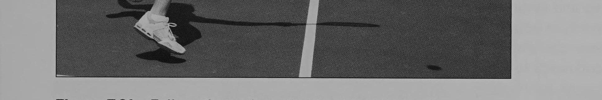
Chương 8
Kỹ năng chuyên biệt
được coi là vũ khí. Khi thực hiện một trong những cú đánh này, mục tiêu của người chơi là giành chiến thắng hoặc thực hiện một cú đánh dẫn đến việc người chơi quay trở lại điểm. Nếu một người chơi có điểm yếu cụ thể trong những cú đánh này, họ luôn có thể bị coi là phòng thủ.
Cũng giống như có nhiều phong cách chơi khác nhau, cũng có những biến thể của những cú đánh đặc biệt cho từng phong cách. Khi người chơi tiếp tục phát triển một phong cách, việc kết hợp một số cú đánh đặc biệt nhất định có thể nâng cao hiệu quả của người chơi đó. Ví dụ: người chơi cơ bản năng nổ có thể cải thiện bằng cách học cách thực hiện cú đánh thả. Những người chơi thành thạo những cú đánh đặc biệt theo phong cách của họ sẽ đưa trò chơi của họ lên một tầm cao hơn.
e Lối chơi cơ bản tích cực. Người chơi cơ bản hung hãn thích sử dụng những cú đánh nền mạnh để di chuyển đối thủ xung quanh sân và điều khiển trận đấu. Bản chất mạnh mẽ của phong cách này tạo nên một cách sử dụng cú đánh thả thú vị. Theo nhiều cách, cú đánh này đưa trò chơi của người chơi lên một tầm cao mới. Sự kết hợp giữa những cú tiếp đất mạnh mẽ và một cú đánh khéo léo chẳng hạn như cú đánh rơi sẽ gây chết người và trở thành một phần của sự đa dạng của phong cách này. Vì cú đánh từ trong ra ngoài đang phổ biến trong trò chơi ngày nay nên cú đánh từ trong ra ngoài đang trở thành một cú đánh được sử dụng rộng rãi để phá vỡ nhịp độ của đối thủ. Những cú lốp bóng và đánh vô-lê được phong cách chơi này sử dụng thường mang tính hung hãn và tấn công. ¢ Thi đấu toàn sân. Bởi vì người chơi toàn sân sử dụng sự đa dạng làm vũ khí, người chơi này sẽ sử dụng các cú đánh đặc biệt để tấn công và phòng thủ, tùy thuộc vào tình huống. Người chơi toàn sân phải thành thạo trong việc đánh những cú đánh nền xuyên thấu, nhưng người chơi này cũng có một yếu tố khéo léo trong trò chơi. Người chơi toàn sân có kỹ năng thực hiện các cú đánh đặc biệt và có nhiều cú đánh khác nhau để giành chiến thắng. Người chơi toàn sân có thể thực hiện cú đánh từ trong ra ngoài hoặc cú đánh rơi xuống trước mặt người chơi. Người chơi toàn sân có thể đánh bóng tấn công hoặc phòng thủ. Đây là một trong những điểm khác biệt giữa người chơi toàn sân và người chơi cơ bản hung hãn; phong cách cơ bản mạnh mẽ được thiết kế cho sức mạnh chứ không phải những cú đánh cầu kỳ. Các cú chuyền được thực hiện một cách tấn công, nhưng không nhất thiết phải dành cho cú ghi điểm trực tiếp hoàn toàn - các cú chuyền được thực hiện để tìm bóng tiếp theo. Cuối cùng, những cú sút tuyệt vọng của tay vợt toàn sân thể hiện chiều sâu thể lực và khả năng kiểm soát bóng.
¢ Phong cách giao bóng và đánh vô-lê. Những cú đánh đặc biệt là một phần không thể thiếu trong lối chơi của một tay vợt theo phong cách giao bóng và vô lê vì mục tiêu của tay vợt này là vào lưới thường xuyên nhất có thể và kết thúc điểm nhanh chóng. Người chơi giao bóng và vô lê thành thạo các cú đánh đặc biệt như cú vô lê thuận tay và trái tay, cú vô lê lốp bóng, và nhiều cú đánh qua đầu khác nhau, bao gồm cú đánh trái tay qua đầu, cú đập nảy, cú đập xe đạp, cú móc qua đầu, cú đánh giữa hai chân và cú hất bóng. Những cú đánh đặc biệt có thể giúp phân biệt người chơi theo phong cách giao bóng và vô lê. ¢ Tập hợp lối chơi cơ bản. Người chơi cơ bản tập hợp sẽ sử dụng những cú đánh này nhưng như một phần của lối chơi phòng thủ hoặc để duy trì cuộc tập hợp tiếp tục. Những cú đánh đặc biệt chỉ là một phần khác trong tiết mục của tay vợt này, bao gồm các góc, cú sút, lốp phòng thủ và sự kết hợp khác nhau giữa độ cao và tốc độ trên bóng. Người chơi cơ bản tập hợp sử dụng cú đánh thả khi đối thủ dường như đang ở thế phòng thủ. Cú lốp bóng chủ yếu được thực hiện để phòng thủ nhưng được đặt ở vị trí chiến lược, vì vậy người chơi trên lưới không thể thực hiện một cú đánh từ trên cao tấn công như mong muốn. Vì những người chơi cơ bản tập hợp không có vũ khí lớn để tăng tốc bóng, họ phải dựa vào tốc độ chân và thay đổi độ cao của cú đánh kết hợp với việc tăng tốc độ của quả bóng tập hợp.
¢ Lối chơi phòng thủ. Những người chơi phòng thủ thích những cú đánh đặc biệt như cắt thuận tay (đặc biệt là cú đánh bóng quần và trái tay), lốp bóng phòng thủ và cú đánh thả. Họ xuất sắc trong việc đánh ngắn và sâu trong sân vì điều đó thường xuyên xảy ra với họ do đối thủ tấn công những đường bóng ngắn của họ. Người chơi phòng thủ thực hiện các cú cắt thuận tay bao gồm cả cú đánh bóng quần và các cú đánh trái tay vì chúng bị căng ra và thu hồi bóng. Họ sử dụng cú thả bóng như một phương tiện để kết thúc điểm nhanh chóng vì họ không nghĩ rằng mình có thể tập hợp đủ tốt hoặc phản công thế trận của đối thủ. Cú thả bóng trở thành cú sút tuyệt vọng cho phong cách này. Các tay vợt phòng thủ thường sử dụng cú lốp bóng vì họ hầu như luôn ở thế phòng thủ trên sân hoặc trong một pha giao bóng nơi họ đang phản ứng trước hành vi tấn công của đối thủ. Người chơi phòng thủ rất giỏi trong việc bắt tốc độ các cú đánh và khiến đối thủ phải tung thêm cú đánh để giành điểm.
KỸ THUẬT CHỤP ĐẶC BIỆT
Khi họ học cách thực hiện đúng các cú đánh đặc biệt, người chơi quần vợt có thể bổ sung thêm sự đa dạng để đưa trò chơi của họ lên một tầm cao mới. Họ có thể học cách thực hiện một cú vô-lê hoặc lốp bóng để phòng thủ trước một tay vợt vào lưới hoặc học cách thực hiện một cú sút ném xa đối thủ. Cách tốt nhất để học những cú đánh này là ban đầu hãy nghĩ về chúng như những cú đánh phòng thủ. Nói cách khác, hãy học cách đánh chúng để chống lại bất kỳ phong cách nào xuất hiện. Sau đó, để phát triển hơn nữa, người chơi có thể học cách sử dụng các phiên bản hung hãn hơn của những cú đánh này để tạo thêm yếu tố bất ngờ cho đối thủ. Chuyển động trong những cú đánh này là rất quan trọng để có thể thực hiện chúng một cách tấn công cũng như phòng thủ, giúp người chơi có nhiều lựa chọn hơn khi tình huống đó xảy ra. Kỹ thuật của các cú đánh là biến thể của các cú đánh khác. Ví dụ, cú lốp bóng xoáy lên là một dạng cú đánh cao và nặng. Cú sút chuyền là một cú đánh nền được đánh nhiều hơn khi đang chạy hoặc với áp lực tăng thêm của một tay vợt trên lưới, và cú sút thả bóng là một phiên bản ngắn hơn của cách tiếp cận cú sút bị chặn nhằm mục đích đánh nhầm chân đối thủ. xem lại kỹ thuật của những nét vẽ này, xem chương 1 và 2.);
Lob Cú lốp bóng có thể được thực hiện ở phía thuận tay hoặc phía trái tay và có hai mục đích: Một là giữ nguyên điểm bằng cách chơi phòng thủ, và hai là tấn công để đối thủ trên lưới có một cú đánh khó đánh trả hoặc sẽ tạo ra một phản ứng yếu hoặc phòng thủ. Một cú lốp bóng phòng thủ thường được thực hiện khi đối phương thực hiện một cú đánh tấn công khiến tay vợt này phải bỏ chạy và lệch khỏi vị trí. Người chơi có thể thực hiện một cú lốp bóng cắt bóng hoặc một cú lốp bóng đánh cao trên không mà không quay, điều này cho phép người chơi tập hợp lại và quay trở lại điểm: nếu nó được chơi đủ tốt, nó có thể khiến đối thủ gặp khó khăn để cản phá, vì vậy người chơi có thể chạy tới và thực hiện một cú vô-lê hoặc một cú lốp bóng khác. Một tay vợt lốp bóng tốt sẽ rất khó chịu khi đối đầu. Khi vào lưới, tay vợt này tạo ra sự nghi ngờ cho đối thủ vì đối phương không chỉ phải cản phá một cú vô-lê có thể mà còn cả một cú lốp bóng. Người chơi muốn có khả năng thực hiện các cú lốp bóng phòng thủ đủ tốt để phá vỡ nhịp điệu của đối thủ và cũng là một cách để tấn công. Khi đối thủ không kiên định trong việc đánh đầu hoặc không có khả năng di chuyển vào lưới, người chơi có thể sử dụng những cú đánh ngắn để đưa đối thủ vào lưới và sau đó lốp bóng một cách chiến lược để chiếm thế thượng phong khi đối thủ ở trên lưới hoặc ở xa vị trí thuận lợi. Lưu ý: Chiến lược này có thể gây phản tác dụng ở cấp độ chơi cao hơn vì người chơi quá mạnh.
SPE C "IALTY KỸ NĂNG 159 Cú lốp bóng xoáy lên được coi là một cú lốp bóng tấn công. Nó được đánh khi đối thủ đến gần lưới và người chơi ở vị trí tương đối tốt trên sân. Cú lốp bóng tấn công được đánh khi người chơi có thời gian chạy qua và đánh cú với kỹ thuật tấn công. Việc này thường được thực hiện ở gần đường đánh đơn ở hai bên và gần đường cuối sân. Cú lốp bóng này cũng có thể được đánh gần giữa sân và chạm bóng sâu (gần đường cuối sân). Người chơi có thể chơi tấn công. cú lốp bóng giống như một cú lốp bóng thông thường khi bóng nảy cao hơn một chút, hoặc ngay cả khi người chơi bị đẩy lùi ra sau sân và đang ở tư thế thuận chân sau. Một kiểu lốp bóng tấn công khác là cú lốp bóng kiểu bunt, được đánh khi đối thủ đang tiến đến nhưng chưa đặt bóng; người chơi đánh một quả bóng phẳng để bắt đối phương đang di chuyển về phía trước và không mong đợi cú lốp bóng này. đánh một cú lốp bóng thuận tay tấn công, nhưng điều này rất hiếm.
Thùy Bunt
Về phòng thủ, cú lốp bóng thường được sử dụng khi đối phương tung ra một cú vô lê sâu và tay vợt không ở vị trí đủ tốt để thực hiện một cú lốp bóng xoáy lên hoặc một cú vô-lê; lựa chọn duy nhất là chặn nó hoặc đẩy nó trở lại sân. Về mặt tấn công, kiểu lốp bóng này được sử dụng để bắt một tay vợt mất cảnh giác trên lưới và đánh qua đầu tay vợt đó. Nó được sử dụng khi một người chơi không có thời gian chuẩn bị cho một cú lốp bóng xoáy lên hoặc không muốn phòng thủ. Những tay vợt theo phong cách giao bóng và vô lê hoặc những tay vợt toàn sân có đôi tay tốt (cảm nhận bóng hoặc kiểm soát bóng) và bản năng thường đánh cú đánh này vì cú đánh này có những điểm tương đồng trong quá trình chuẩn bị cho cú vô lê. Kiểu lốp bóng này cũng rất hiệu quả khi đỡ bóng đôi (xem chương 11). Chuẩn bị và vung vợt sau Đối với cú lốp bóng, người chơi sử dụng cách cầm vợt thuận tay kiểu lục địa hoặc kiểu Đông. Thế đứng có thể thay đổi từ đóng nếu ở tư thế tấn công hơn đến cởi mở hơn nếu ở tư thế phòng thủ. Cú đánh này được đánh từ trên hoặc gần vạch cuối sân. Việc chuẩn bị cho cú đánh này tương tự như cách tiếp cận cú chặn nhưng không có đà về phía trước. Vợt được đưa về phía sau với mặt vợt mở và thẳng về phía sau đến vị trí mà người chơi có thể di chuyển cánh tay về phía trước từ hơi thấp lên cao. Đối với cú lốp bóng phòng thủ, cú đánh sau ngắn hơn (xem hình 8.1), và kỹ thuật này tương tự như cú vô lê cao được thực hiện từ sâu hơn trong sân (ngay bên trong vạch cuối sân đến giữa vạch cuối sân và đường giao bóng). Vợt lùi lại và bóng không được xoáy để nó bị đẩy hoặc chặn ra ngoài và hướng lên trên khi tiếp xúc, và mặt vợt mở.
Xoay về phía trước và tiếp xúc Mặt vợt mở ROR LILO AREER 10 EDTA EEE OOP = và di chuyển từ vị trí thấp đến vị trí cao. Người chơi vung thẳng cú đánh lên trên với một cú đánh phẳng chắc chắn nhưng có kiểm soát (xem hình 8.2). Cơ thể luôn trong tầm kiểm soát và cân bằng với trọng lượng chuyển về phía trước khi có thể. Người chơi đang tiếp xúc với bóng trong các điểm tiếp xúc hoặc điểm tấn công và trong các khu vực tấn công ở mức độ thấp hơn hoặc trung bình. Theo dõi Chuyển động của vợt theo quỹ đạo của quả bóng theo kiểu từ thấp đến cao hoặc hơi thẳng qua quả bóng (xem hình 8.3). Vợt kết thúc quanh vai ở phía đối diện.
Cú cắt lốp trái tay
Cú lốp bóng chủ yếu được đánh bằng trái tay. Cú đánh này không được đánh thường xuyên nhưng có thể hiệu quả vì nó giúp người chơi có thời gian hồi phục. Người chơi có thể sử dụng cú lốp bóng này khi đối phương ở trên lưới và đánh một cú vô lê khiến người chơi phải rời sân về phía trái tay. Bất kỳ người chơi nào đã học cách đánh một lát đều có thể đánh được cú đánh này.
Chuẩn bị và Backswing §Người chơi thường đứng trên đường biên cuối sân hoặc phía sau đường biên một chút. Cách cầm bóng cắt lát là kiểu cầm trái tay kiểu Lục địa hoặc kiểu Đông, và thế đứng là
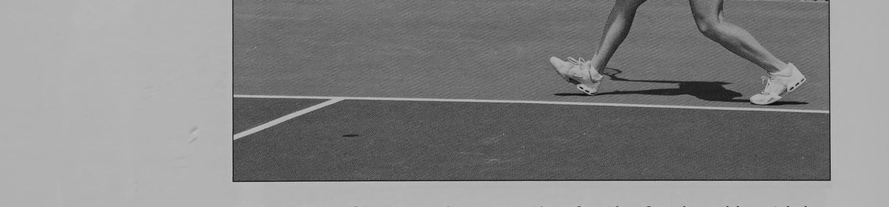
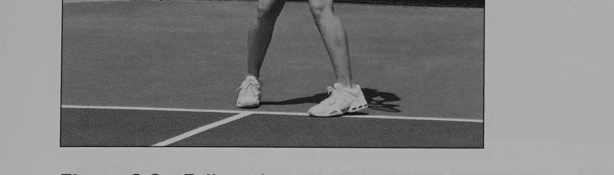
thùy. mặt vợt phù hợp với cú đánh sắp tới. Người chơi có thể thực hiện cú đánh này từ mọi tư thế. Người chơi ở ngoài vị trí có thể gặp khó khăn khi thực hiện cú đánh này. Nó hoạt động tốt nhất với sự cân bằng tốt. Mặc dù sự cân bằng trong cú đánh này là lý tưởng, nhưng nếu một tay vợt đang cố gắng vào vị trí, thì sự chuẩn bị có thể là trượt vào cú đánh hoặc chuẩn bị hai chân với bất kỳ sự cân bằng nào có thể.
Xoay về phía trước và tiếp xúc Trong chuyển động về phía trước, người chơi đẩy lên từ chân sau, cơ thể di chuyển về phía trước và đầu vợt di chuyển lên trên. Khi tiếp xúc, mặt vợt mở và cổ tay chắc chắn. Điểm tiếp xúc là điểm tiếp xúc tập hợp hoặc phòng thủ, và vùng tấn công nằm trong vùng tấn công cấp thấp hơn và trung bình.
Theo dõi Quá trình theo dõi tiếp tục đi lên và kết thúc ở phía trên vai đối diện. Cánh tay sau duỗi về phía sau để giữ thăng bằng.
SOO xX) lốp bóng.
Cú lốp bóng xoáy lên tấn công
Cú lốp bóng xoáy lên tấn công là một dạng khác của cú vô-lê rất hiệu quả. Khi thực hiện tốt, nó là một vũ khí có giá trị. Andy Murray là một tay phản công xuất sắc và có một cú lốp bóng xoáy lên tuyệt vời để khiến đối thủ phải đoán xem cú đánh tiếp theo của anh ta sẽ như thế nào. Bởi vì anh ta rất hiệu quả trong việc phản đòn các cú đánh của đối thủ nên cú đánh này không được nhìn thấy cho đến khi quá muộn để người chơi trên lưới phản ứng.
Chuẩn bị và vung vợt lùi Người chơi nên ở gần đường biên cuối hoặc phía sau đường biên một chút ở vị trí gần các con hẻm hoặc lùi xa hơn một chút so với dấu thăng ở giữa. Cách cầm vợt và cách chuẩn bị cũng giống như cách cầm vợt được sử dụng cho các cú đánh nền xoáy lên. Động tác backswing cũng giống như động tác đánh nền, nhưng trong một số trường hợp, nó có thể nhanh hơn hoặc ngắn hơn một chút, tùy thuộc vào việc người chơi có sẵn sàng thực hiện cú đánh hay không. Cú đánh này được thực hiện từ vùng tấn công từ trung bình đến thấp hơn. Để thực hiện cú đánh này hiệu quả, vợt cần thả xuống dưới bóng rồi tăng tốc nhanh lên trên. Mặt vợt hướng xuống dưới hoặc hơi đóng lại trước khi hướng lên trên. Đầu gối cong và trọng lượng cơ thể lùi về phía sau để tối đa hóa việc sử dụng độ xoáy (xem hình 8.4).
Xoay về phía trước và tiếp xúc Trong chuyển động về phía trước (xem hình 8.5), người chơi sử dụng kỹ thuật tương tự như đối với một cú đánh xoáy lên cao và nặng. Cú đánh này có độ xoáy rất cao. Điểm tiếp xúc có thể mang tính phòng thủ nếu người chơi muốn sử dụng nhiều chân hơn trong cú đánh, hoặc tập trung nếu người chơi muốn lái bóng lên trên và sử dụng cú đánh có quỹ đạo cao hơn so với cú đánh xoáy lên cao và nặng. Vùng tấn công phải ở cấp độ thấp hơn hoặc trung bình.
Theo dõi Các chân không tải khi theo dõi, và mặt vợt tiếp tục hướng lên và về phía trước với khả năng tăng tốc lớn. Điểm kết thúc cao hơn bình thường và cao hơn vai (xem hình 8.6).
AE AIA
Thả bắn
Giá trị của cú đánh rơi là yếu tố bất ngờ. Cú đánh này được thực hiện tốt bởi những tay vợt như Novak Djokovic, người có lối chơi cơ bản năng nổ, kết hợp giữa sức mạnh và sự khéo léo. Djokovic có thể sử dụng cú đánh này như một cách để nâng cao sức mạnh trong trò chơi của mình. Về mặt chiến lược, cú thả bóng có thể được sử dụng để đưa đối thủ vào lưới, những người không thích tung cú vô lê hoặc không thoải mái trên lưới. Cú thả bóng được sử dụng hiệu quả nhất khi đối thủ đang hồi phục sau cú đánh và bị mắc kẹt sâu trong sân. Nó thường được đánh một cách tinh tế. Sự thành công của cú đánh phụ thuộc vào cách thực hiện của đấu thủ, vị trí sân của đối phương và tốc độ xung quanh sân. Người chơi có thể thực hiện cú đánh này ở phía trước cơ thể, ngay trên lưới, theo một góc và từ trong ra ngoài. Cú đánh từ trong ra ngoài bắt nguồn từ việc người chơi sử dụng thuận tay từ trong ra ngoài. Nó có thể được ngụy trang nếu người chơi xếp hàng như thể sắp đánh một cú thuận tay từ trong ra ngoài, thực hiện động tác backswing bình thường, và thay vì đánh nó bình thường, cắt cú swing và đặt bóng từ trong ra ngoài ngay trên lưới.
Chuẩn bị và vung vợt sau Cú đánh thuận tay hoặc trái tay yêu cầu cách cầm vợt kiểu Eastern hoặc Continental. Người chơi phải ở phía trước đường cuối sân khi thực hiện cú đánh này. Để gây bất ngờ cho đối thủ, tư thế của người chơi phải giống như động tác đánh nền thông thường (hình 8.7). Người chơi nhanh chóng thu vợt về phía sau, cao hơn một chút so với tầm của quả bóng đang tới, với một phần tư vòng quay và một cú đánh lùi ngắn hơn, theo cách tương tự như đối với cú đánh chặn.
Xoay về phía trước và tiếp xúc Mặt vợt mở và di chuyển xuống (xem
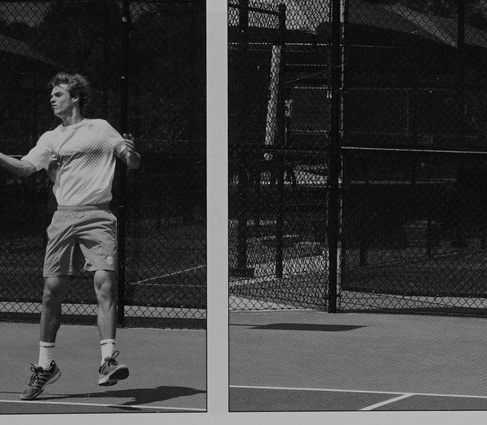
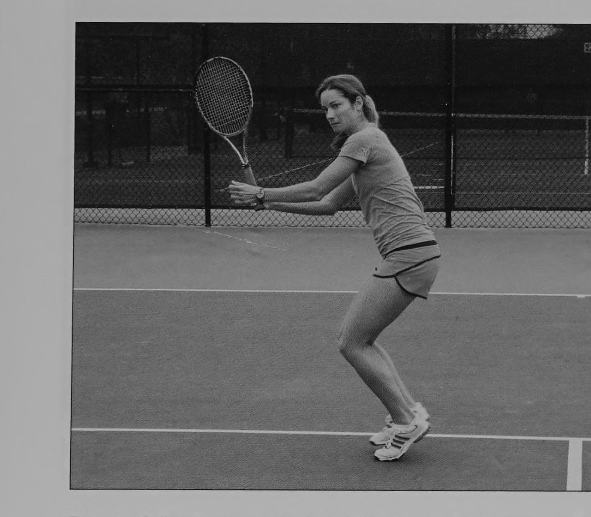
trái đối với người chơi thuận tay phải và từ trái sang phải đối với người chơi thuận tay trái để quay bên. Việc sử dụng vòng quay nào tùy thuộc vào loại cú đánh mà người chơi đang cố gắng thực hiện. Một cú đánh rơi tuyệt vời có thể được thực hiện theo ba cách. Với xoáy xuống, nó đi qua lưới và nảy nhẹ nhàng từ ba đến năm lần trên ô giao bóng. Với bóng xoáy xuống, bóng đi qua lưới, dừng lại hoặc cuộn trở lại lưới, hoặc trong một số trường hợp, bóng bật về phía đối phương và quay trở lại lưới. Với xoáy ngang, bóng nảy về phía phần sân đối phương và bật ra khỏi sân sau cú nảy đó. Điểm tiếp xúc cần ở vị trí thuận tiện cho người chơi. Cú đánh thả có thể được thực hiện từ cả ba điểm tiếp xúc và vùng tấn công nhưng hiệu quả nhất là từ vùng tấn công từ thấp đến trung bình.
Theo dõi Phần tiếp theo - ngắn và kết thúc hơi ở phía trước nội dung. Mặt vợt mở ra khi kết thúc chuyển động (xem hình 8.9). Cơ thể được cân đối.
Những cú vô-lê
Một cú sút chuyền nhằm mục đích bắt tay vợt lưới ra khỏi vị trí hoặc tạo cho tay vợt lưới một cú sút không thể thực hiện được. Kỹ thuật thực hiện cú vô-lê cũng giống như các cú đánh tiếp đất thông thường. Điểm khác biệt là người chơi đang đối mặt với đối thủ trong tư thế hung hãn trên lưới, hạn chế khoảng trống để đối thủ tung cú sút. Những cú vô-lê thường được thực hiện khi đang chạy. Họ yêu cầu sự cân bằng và biết chính xác có bao nhiêu khoảng trống để thực hiện cú đánh thành công. Có rất nhiều đường chuyền khác nhau. Ba loại thường được sử dụng bao gồm ripper (có tính hung hãn), gáo (là phần một của hai cú vô-lê) và cú sút chuyền ngoài sân mở. Người xé xác thường được thực hiện khi người chơi bị kéo ra khỏi sân và mục tiêu là đánh cú ghi điểm trực tiếp vì đó là lựa chọn duy nhất để giành điểm. Người xé xác cũng có thể đánh thẳng vào đối phương với mục đích lấy bóng ngắn để tấn công hoặc ép phạm lỗi về tốc độ. Cái gáo phải là mục tiêu khi người chơi đang cố gắng tạo ra một quả bóng dễ dàng hơn trong cú đánh tiếp theo. Cú đánh ngắn thường được đánh khi người chơi không ở vị trí đủ tốt để thực hiện một cú đánh mạnh mẽ nhưng có thể đánh nó vào chân đối phương với hy vọng có được một cú chuyền mạnh mẽ hơn ở quả bóng thứ hai. Người chơi sử dụng cú vô-lê ngoài sân khi nhìn thấy sơ hở trong khi đối phương đang ở trên lưới. Justine Henin có một đường chuyền tuyệt vời. Những cú sút đa dạng và khả năng bắt bóng nhanh của cô khiến đối thủ khó có thể vào đúng vị trí sân đúng lúc. Cả trái tay và thuận tay của cô ấy đều được đánh một cách tự tin và có thể được đánh ở dạng cú đánh ngắn, cú đánh hoặc vào sân rộng. Chuẩn bị và vung vợt sau Thế đứng mở chủ yếu được sử dụng khi đánh những cú đánh chuyền, nhưng có thể ở vị trí đủ tốt để đánh trong tư thế đóng. Kỹ thuật cầm vợt và vung vợt sau phụ thuộc vào loại cú đánh (thuận tay hoặc trái tay) và khả năng xoáy của cú đánh (slice hoặc topspin). Một cú vô-lê phẳng hơn là một lựa chọn tốt cho những cú vô-lê quyết liệt. Topspin tốt hơn cho những cú đánh chìm ngắn vì người chơi có thể đưa bóng vào chân đối phương, khiến việc lấy bóng trở nên khó khăn. Người chơi thường thực hiện cú đánh chuyền và cú đánh ngắn từ gần đường cuối sân hoặc hơi phía sau đường biên và về phía các con hẻm. Gáo ngắn có thể được sử dụng bên trong vạch cuối sân và ở một góc cho phép vết nhúng rơi xuống giữa lưới và chìm xuống. Nếu có đủ thời gian, những cú vô-lê quyết liệt và nhanh nhẹn có thể được chuẩn bị theo cách tương tự. Nếu người chơi có ít thời gian hơn, vai sẽ quay nhiều hơn một phần tư và động tác backswing sẽ ngắn hơn. Người chơi nên cố gắng chuẩn bị sớm để thích ứng với độ dài của cú backswing phù hợp với quả bóng đang tới. Người chơi sử dụng cú đánh lùi dài hơn nếu thực hiện cú đánh chuyền bình thường và cú đánh ngắn hơn nếu dự định sử dụng cú đánh mặt đất ngắn hơn, nhanh hơn, đòi hỏi ít cú đánh lùi hơn và vòng lặp nhỏ hơn để tạo ra cú đánh chìm.
Xoay về phía trước và tiếp xúc. Xoay về phía trước và tiếp xúc phụ thuộc vào tốc độ và độ xoáy của quả bóng đang tới cũng như hướng của cú đánh (theo đường dọc hoặc chéo bàn). Người xâu bóng bị tấn công bằng lực và với sự kết hợp giữa xoáy lên và quỹ đạo thấp hơn (xem hình 8.10). Cú xoay về phía trước của gáo ngắn ngắn hơn và được tăng tốc lên trên theo một vòng cung ngắn hơn từ thấp lên cao. Đường xoay của vợt tương tự như đường đi của các cú đánh nền đối với cú đánh chuyền mạnh nhưng ngắn hơn và ít kéo dài hơn đối với người đánh bóng. Khi đánh mạnh mẽ chéo sân, điểm tiếp xúc nằm giữa điểm tấn công tiếp xúc của bóng chéo sân và điểm tiếp xúc của đường tập trung để đánh dọc biên. Khi đánh gáo ngắn, người chơi sử dụng tay nhiều hơn để cảm nhận cú đánh. Cái gáo có nhiệm vụ bắt một tay vợt trước khi vào được vị trí thuận lợi. Theo dõi Việc theo dõi các cú đánh chuyền tương tự như đối với một cú đánh nền thông thường và việc theo dõi đối với một cú đánh ngắn được viết tắt với gia tốc lớn hơn được sử dụng. Đường xoay của vợt trong quá trình thực hiện cú đánh tiếp theo được mở rộng ở cú đánh chuyền mạnh và gần cơ thể hơn trên gáo ngắn. Đối với cú đánh chuyền mạnh mẽ, kết thúc tương tự như cú đánh tiếp đất thông thường; đối với gáo ngắn, nó nằm ngang cơ thể.
Những cú sút tuyệt vọng
Những cú sút tuyệt vọng rất đáng chú ý vì chúng có thể giúp người chơi thoát khỏi tình huống xấu. Thông thường, đối phương đánh một quả bóng bay qua đầu đấu thủ, khiến đấu thủ chạy lùi hoặc tiến về phía sau và buộc đấu thủ phải lao lên bằng một cú sút thần kỳ để giành điểm. Một cú sút tuyệt vọng được thực hiện khi chạy về phía trước được thực hiện với một góc đáng kinh ngạc, như một cú sút dọc đường ngoài tầm với của đối phương, hoặc đôi khi là một cú lốp bóng. Các cú đánh tuyệt vọng di chuyển về phía sau là cú lốp bóng tuyệt vọng, cú tweener và cú tát. Tweener được đánh vào giữa hai chân, hướng ra ngoài lưới. Cú đánh này được Yannick Noah phổ biến đầu tiên và ngày nay là cú đánh đặc biệt được nhiều chuyên gia hàng đầu sử dụng, bao gồm cả Roger Federer. Cú tát là một cú đánh đặc biệt khó được thực hiện ở phía sau đầu, cao đến thắt lưng và sang một bên cơ thể. Nó được đánh với độ cân bằng, cảm giác tuyệt vời và có thể khiến đối thủ mất cảnh giác. Sau đây là một số điểm chính dành cho những người chơi cần thực hiện một trong những cú đánh này.
Đang chạy về phía trước
Khi rơi vào tình huống tuyệt vọng này, người chơi nên lấy vợt ở phía trước cơ thể khi chạy. Trong hầu hết các trường hợp, người chơi hầu như không tiếp cận được bóng, vì vậy cú đánh mà người chơi có thể đánh được phụ thuộc vào sơ hở được nhận biết. Cú đánh này thường được thực hiện ở khu vực tấn công từ thấp đến trung bình và sử dụng điểm tiếp xúc tấn công, ngay trước khi bóng chạm đất. Người chơi có thể thực hiện cú đánh tuyệt vọng ở một góc, thông qua một khoảng trống sang một bên hoặc dưới dạng một cú lốp bóng. Cú đánh này phải được thực hiện ở một góc khi người chơi đang chạy trốn và cảm thấy có thể đưa nó lên và qua lưới. Điều này thường được thực hiện bằng một cú búng tay. Sau đó, người chơi hy vọng cú đánh được thực hiện đủ tốt hoặc đối thủ bị lệch khỏi vị trí đủ để người chơi giành được điểm. Nếu thời gian cho phép, người chơi có thể muốn cân nhắc việc tung cú sút tuyệt vọng về phía trước hoặc phía trước. Đây là mức cao nhất- tỷ lệ phần trăm chơi trong tình huống này, bởi vì nếu và khi người chơi đưa nó trở lại sân, nó sẽ mang lại cho người chơi vị trí sân tốt nhất trên lưới. Một cú lốp bóng tuyệt vọng về phía trước phải được thực hiện với nhiều thời gian để cơ thể và bàn tay có thể điều chỉnh. Cú lốp bóng tuyệt vọng thường được thực hiện khi đối phương đã ở trên lưới, vì vậy việc chuẩn bị và di chuyển là rất quan trọng. Quỹ đạo của bóng phải vượt qua đối phương và vẫn tiếp đất trước đường cuối sân nên đòi hỏi cảm giác rất tốt.
Thùy tuyệt vọng
Người chơi đôi khi phải sử dụng cú lốp bóng tuyệt vọng vì vị trí sân kém hoặc do đối thủ tung ra cú đánh quá tốt. Thời điểm thích hợp để một tay vợt sử dụng cú lốp bóng tuyệt vọng là khi đang chạy chỗ chết và chỉ có thời gian để cố gắng đưa bóng trở lại trên không. Các quả lốp tuyệt vọng chủ yếu được đánh vào các khu vực tấn công cấp thấp hơn và cấp trung cũng như tại các điểm tiếp xúc tập hợp hoặc phòng thủ.
Tweener
Cú đánh này được thực hiện khi bóng bay qua đầu tay vợt trên lưới. Cả hai người chơi đều có thể đã ở trên lưới hoặc đây có thể là một cú lốp bóng bị chặn đi qua đầu người chơi. Tuy nhiên, cú lốp bóng xoáy lên rất khó đánh được khi thực hiện cú giật bóng vì nó di chuyển quá xa người chơi khi tiếp đất. Khi người chơi quay người, chạy để thực hiện cú đánh và đến gần bóng, người chơi sẽ quyết định xem liệu có thể vào vị trí đủ tốt để đánh bóng về phía sau giữa và qua hai chân dang rộng hay không. Để thực hiện cú đánh này, các bước điều chỉnh nhỏ được thực hiện ngay trước khi tiếp xúc để đảm bảo vị trí cơ thể cho phép thực hiện cú đánh. Cú đánh này được thực hiện trên đường cuối sân hoặc phía sau đường cuối sân. Trong quá trình chuẩn bị, vợt ở trên đầu với kiểu cầm trái tay kiểu Đông, sau đó đi xuống qua chân. Thân vợt hơi hướng về phía trước để có một khoảng trống nhỏ cho vợt di chuyển. Người chơi vung xuống và hất cổ tay ra sau và qua chân. Quả bóng này được tiếp xúc gần mặt đất (khoảng 1 foot hoặc 0,3 m) ở vùng đánh phía dưới và giữa hai chân. Tiếp theo là hướng lên trên giữa hai chân. Người chơi thường nhảy lên và về phía trước tại thời điểm va chạm.
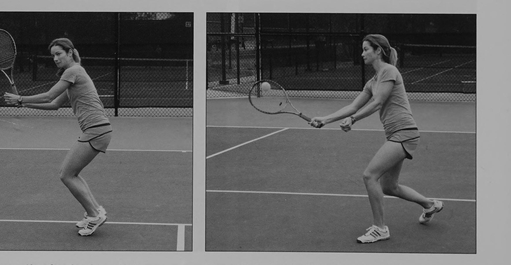
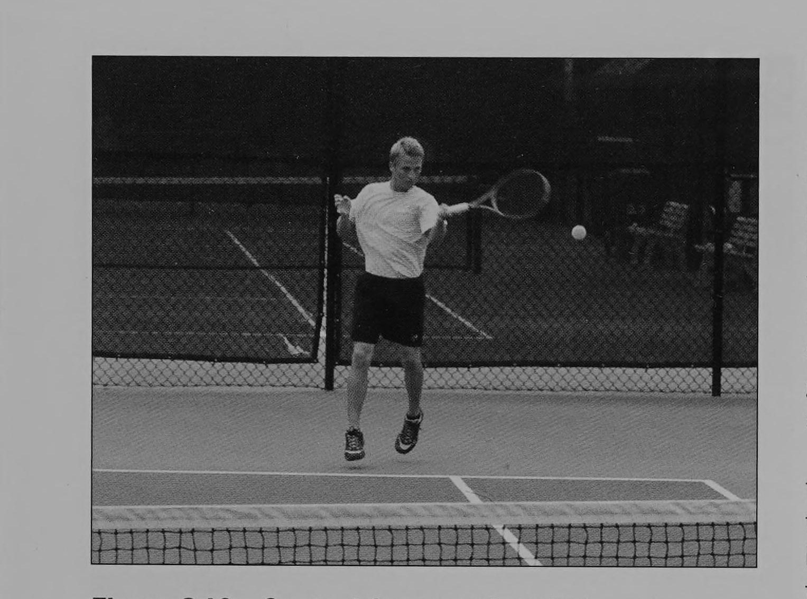
bắn siap
Cú đánh này được thực hiện ở cả hai bên thuận tay và trái tay, và nó được thực hiện khi một cú lốp bóng được đánh chéo qua đầu người chơi và cú đánh không phải là một lựa chọn. Người chơi chạy về phía sau càng nhanh càng tốt, nhưng lần này điều chỉnh cơ thể đủ để tiếp xúc với bóng ở một bên cơ thể phía sau đầu. Người chơi chạy với vợt hướng ra ngoài và về cơ bản là tát hoặc hất cổ tay về phía sau, hy vọng có đủ lực để đầu vợt chạm vào bóng. Cú đánh được thực hiện ở khu vực tấn công cấp cao hơn và ở điểm tiếp xúc hoặc càng gần cơ thể càng tốt. Đối với những quả bóng ở mức độ trung bình đến thấp hơn, vợt được chuẩn bị ở phía trước và ngang tầm đầu hoặc cao hơn một chút, sau đó vợt đi xuống điểm tiếp xúc. Người chơi cũng có thể thực hiện cú đánh này từ một bên ngang đầu gối hoặc cao hơn một chút để có cú đánh cao hơn. Kiểu đánh này được sử dụng trên lưới và đòi hỏi cảm giác tuyệt vời. Khi một đấu thủ ở tư thế dang rộng, cú đánh này thường được sử dụng khi một cú vô lê lốp bóng bay qua đầu đấu thủ nhưng không quá sâu trong sân và sau đó ở quỹ đạo thấp hơn. Cổ tay được hất về phía sau nhưng từ phía bên của cơ thể.
SỬ DỤNG CÁC CHỤP ẢNH ĐẶC BIỆT
Cách thức và thời điểm sử dụng các cảnh quay đặc biệt là điều quan trọng đối với sự thành công chung của các cảnh quay. Người chơi có thể sử dụng cú thả bóng như một công cụ để khiến đối thủ phải phòng thủ. Cú đánh từ trong ra ngoài được sử dụng khi một đấu thủ đánh một cú thuận tay từ trong ra ngoài, đối thủ đánh một cú trả lời chéo sân ngắn hơn và trong khi đối phương đang hồi phục, đấu thủ lao vào
1 66 tennis skiitis & ORILLS sân và thực hiện một cú đánh khiến đối thủ phải đối mặt sai chân. Cú đánh rơi về phía sau đối thủ cũng có hiệu quả khi người chơi muốn kiểm tra chuyển động tiến về phía trước của đối thủ trên đường chạy. Bởi vì cú đánh này được đánh dọc biên nên đối phương đang đánh qua phần cao hơn của lưới. Nếu đối thủ nhanh nhẹn, sẽ có nhiều lựa chọn hơn, chẳng hạn như cú đánh thả ngược về phía người chơi, cú đánh thả góc hoặc cú đánh tiếp đất dễ dàng hơn. Một điều cần nhận ra là người chơi đang sử dụng độ cao lớn hơn của lưới trong cú đánh này, vì vậy cần phải chơi với độ loft cao hơn một chút; Mục tiêu của người chơi làm cho đối thủ mất thăng bằng và buộc phải thực hiện một cú đánh chéo sân yếu mà người chơi có thể đưa vào phần sân rộng mở. Trong các cú lốp bóng, người chơi có thể đánh lừa đối thủ nghĩ rằng cú đánh tiếp theo là một cú đánh nền và sau đó đẩy một cú đánh qua đầu đối phương. Vị trí và khả năng ngụy trang là chìa khóa thành công của cú đánh này. Nếu người chơi phát triển một cú lốp bóng xoáy lên mạnh, thì có thể ngụy trang cú lốp bóng đó để trông giống như một cú đánh nền. Theo cách này, đối thủ trên lưới không biết liệu người chơi đang thực hiện một cú đánh chuyền chạm đất hay một cú lốp bóng xoáy lên cho đến giây cuối cùng, khi đó có thể đã quá muộn để điều chỉnh. Những cú vô-lê cũng có cách khiến đối thủ không biết tấn công như thế nào. Những cú vô-lê tinh tế chẳng hạn như cú đánh bóng nhằm mục đích ngụy trang và ngăn cản một tay vợt lưới có được cú đánh tốt ở cú vô lê hoặc mất vị trí và mất thăng bằng. Nếu chuyển động của người chơi hiệu quả, người chơi có nhiều lựa chọn hơn khi đối thủ tiếp cận. Nếu hiệu quả, cú vô-lê tích cực hơn có thể khiến một tay vợt tung lưới phải thay đổi cục diện trận đấu. Biết khi nào nên đi xuống hàng hoặc chéo sân sẽ diễn ra một trò chơi giống như cờ vua, trong đó hai người chơi đang cố gắng tìm ra nước đi tiếp theo của nhau.
TƯ DUY CHO CÁC CHỤP ẢNH ĐẶC BIỆT
Tư duy của trò chơi bắn súng đặc biệt dựa trên khả năng phòng thủ tối thượng và ngọn lửa cho điều tuyệt vời. Quá trình suy nghĩ của việc phòng thủ là giành lại một quả bóng nữa trong sân, chơi phòng thủ khéo léo và làm bất cứ điều gì để giành chiến thắng. Khía cạnh phản cảm và tuyệt vời hơn của những bức ảnh này là việc trở thành người thực hiện cú đánh, người làm hài lòng đám đông và là người có thể nghĩ ra những bức ảnh đẹp. Về mặt thực tế, thật tuyệt khi người chơi biết rằng họ có thể thực hiện được cú đánh phù hợp vào đúng thời điểm bên cạnh việc đánh được một cú đánh khó tin. Trong đấu trận, người chơi liên tục tìm kiếm lợi thế và cách thức khiến đối thủ bỏ cuộc hoặc nản lòng. Đánh một trong những kiểu đánh này là cách đánh vào tâm trí đối thủ một cách hiệu quả và khiến đối thủ phải nỗ lực hơn để giành điểm. Trong set thứ ba, khi một đấu thủ đang tìm kiếm bất kỳ lợi thế nào sẽ dẫn đến chiến thắng, nỗ lực của đấu thủ trong những cú đánh này có thể tạo ra sự khác biệt.
các lớp có thể chuyển sang lưới thành công có thể thực hiện các cú vô lê và các cú đánh đầu có thể giúp họ ghi điểm một cách dễ dàng. Một tay vợt muốn chống lại một tay vợt trên lưới thành công cần có khả năng thực hiện những cú vô-lê và lốp bóng để khiến tay vợt đang chuyển đổi e ngại về việc tiến vào và chuyển sang vai trò phòng thủ. Một người chơi lưới, người bị buộc phải chơi phòng thủ, có thể cần thực hiện một trong những cú đánh tuyệt vọng từ chương 8. Sau một cú đánh tuyệt vọng, đối thủ có thể muốn sử dụng một cú đánh rơi làm đòn cuối cùng. Trong kịch bản này, khi một người chơi chuyển sang chơi trên lưới, trò chơi sẽ mở ra nhiều kỹ năng đặc biệt và lưới khác nhau. Để đưa trò chơi của mình lên cấp độ cao nhất, người chơi phải sẵn sàng sử dụng tất cả các kỹ năng này. Chương này cung cấp các bài tập sau đây được thiết kế để giúp người chơi cải thiện các cú đánh vào lưới và các cú đánh đặc biệt.
1. Bài tập sút tiếp cận 2. Bài tập đánh vô-lê và lốp bóng để có thể trả lời 3. Bài tập vô-lê và sút trên cao để chơi trên lưới
4. Diễn tập sút bóng 5. Diễn tập sút tuyệt vọng 6. Diễn tập bóng sống
TIẾP CẬN MÁY BẮN
Các bài tập trong phần này tập trung vào việc phát triển từng cú đánh tiếp cận cụ thể được thực hiện trong trận đấu hôm nay. Luyện tập từng cú đánh này có thể giúp người chơi thêm sự đa dạng vào trò chơi của họ và có khả năng thực hiện các cú đánh tiếp cận một cách nhất quán đến các vị trí được chỉ định nếu cần. Những bài tập này cuối cùng sẽ cung cấp cho người chơi một nền tảng kỹ thuật vững chắc hơn và nhiều cú đánh hơn sẽ giúp họ phát triển sức mạnh trong trò chơi của mình. Năm bài tập đầu tiên trong phần này (Chuyển động tiếp cận và bắt bóng, Tiếp cận chặn, Tiếp cận động tác đánh nền mạnh mẽ, Tiếp cận vô-lê xoay và Tiếp cận cắt lát) cung cấp thực hành cần thiết để thực hiện các cú đánh này. Khi người chơi đã cảm thấy thoải mái với kỹ thuật của từng cách tiếp cận cơ bản, họ có thể sử dụng bài tập Tiếp cận mục tiêu (trang 170) để hoàn thiện từng cú đánh tiếp cận. Khi người chơi có thể thực hiện các bài tập kỹ thuật để họ có thể tập trung thành công vào vị trí họ đánh bóng chứ không phải cách họ đánh bóng, họ đã sẵn sàng chuyển sang tập mục tiêu. Trừ khi có quy định khác trong bài tập, nên luyện tập cả hai bên thuận tay và trái tay. Đối với các bài tập sau, nên bắt đầu cho ăn bằng tay. Thực hiện các bài tập cho ăn bằng tay là một trong những cách tốt nhất để cô lập và thực hiện chuyển động cũng như thực hiện cú đánh tiếp cận.
TIẾP CẬN VÀ BẮT CHUYỂN ĐỘNG
Mục đích: Phát triển các bước đầu tiên nhanh chóng và các bước điều chỉnh cân bằng để có sự chuẩn bị và động lực tối đa khi tiếp cận. Quy trình: Đấu thủ đứng không cầm vợt trên đường cuối sân ở điểm giữa. Huấn luyện viên hoặc đối tác đứng ở giữa vạch giao bóng cùng phía sân và ném bóng cách cơ thể đấu thủ khoảng 4 feet (1,3 m), tạo đủ chỗ cho đấu thủ tiến về phía trước để che bóng cho cú đánh tiếp cận. Người chơi tập trung vào việc đẩy ra trong hai bước tấn công, sau đó là xoay vai và bước bên phải vào tư thế khép kín. Người chơi mô phỏng động tác xoay người về phía trước bằng cánh tay và bắt bóng đồng thời di chuyển về phía lưới để thả bóng qua lưới. Người chơi quay lại vị trí bắt đầu để lặp lại bài tập năm lần.
Chương 9
Bài tập lưới và kỹ năng chuyên biệt
Điểm huấn luyện: Phần tiếp theo của quá trình tiến triển sẽ là người chơi đánh bóng bằng vợt. Một lỗi thường gặp là các tay vợt bước quá ít bước để vào vị trí hoặc quên xoay vai và hông khi vào bóng.
Mục đích: Để phát triển cú đánh tiếp cận thuận tay hoặc trái tay với độ sâu và không xoáy. Người chơi có thể sử dụng cú đánh này khi không còn thời gian để chuẩn bị thực hiện một cú tiếp cận xoáy lên mạnh mẽ hoặc một cú tiếp cận cắt lát. Cách tiến hành: Người chơi đứng trên vạch cuối sân ở điểm giữa. Huấn luyện viên hoặc đối tác đứng ở giữa đường giao bóng ở cùng một phía của lưới và đưa bóng nhẹ nhàng và có độ loft, chéo sân. Người đánh vô-lê bắt đầu dễ dàng hơn. Kỹ thuật đánh bóng nằm ở giữa đường giao bóng và đường biên ở rìa của đường biên là Similator vol- ở giữa sân (về phía ngõ nhưng về mặt kỹ thuật vẫn ở giữa). leying nhưng witha Dần dần, nguồn cấp dữ liệu có thể di chuyển nhiều hơn về phía đường giao bóng để thực hành cú đánh này hơi phóng đại - trong khi đang chạy, nhấn mạnh việc thiếu thời gian để thiết lập bình thường. Khi tiến tới việc lấy lại bóng, người chơi nên chuẩn bị bằng cách xoay một phần tư vai theo sau và kéo dài _ theo dõi. một cú xoay hơi từ cao xuống thấp nhưng chủ yếu là thẳng trong cú đánh (nói cách khác là bằng phẳng), tiếp xúc ngay trước chân dẫn đầu. Người chơi tập trung đẩy bóng để thực hiện cú sút xa 6 inch (khoảng 15 cm) đến 1 foot (khoảng 30 cm) và chạm sâu vào sân hoặc theo góc ngắn. Người chơi theo chuyển động tiến về phía lưới. Biến thể: Người chơi có thể thực hiện cú đánh này với chuyển động và sự chuẩn bị tương tự như cú đánh thả bóng. Ngay trước khi tiếp xúc, người chơi thay đổi ý định bắn sang cách tiếp cận chặn. Phiên bản ngụy trang của cú đánh tiếp cận khối là một phương tiện rất hiệu quả để đánh nhầm đối thủ. Khả năng thực hiện cú đánh rơi thường khiến đối thủ chạy về phía trước; cách tiếp cận khối có thể đánh lừa đối thủ, khiến đối thủ bị mất vị trí.
Mục đích: Để phát triển một cú đánh tiếp cận thuận tay hoặc trái tay xuyên thấu, tấn công, đánh ra phần sân rộng để đưa đối thủ vào thế phòng thủ. Cách tiến hành: Người chơi đứng trên vạch cuối sân ở điểm giữa. Huấn luyện viên hoặc đồng đội đứng ở giữa vạch giao bóng trên cùng một phía của sân và đưa bóng với tốc độ và độ cao khác nhau xuyên sân để tiếp đất ở độ cao từ 1 đến 3 feet (0,3 _ Đánh bóng tới 0,9 m) - trong đường cuối sân và ở giữa giữa sân và ngoài ngõ. Người chơi di chuyển nhanh về phía trước để thực hiện cú đánh, và gặp phải vấn đề về ổ cứng với cú đánh này (không quay) hoặc cú đánh xoáy lên hung hãn khiến bóng rơi sâu vào sân hoặc bị bắn trong thời gian ngắn vì góc cạnh. Kỹ thuật này tương tự như kỹ thuật đối với một cú đánh tiếp đất, nhưng mức độ của nó được tạo ra dựa trên động lượng về phía trước có được từ các bước chuẩn bị sẽ khiến động tác di chuyển. Cầu thủ nhanh chóng hướng về phía lưới. Việc người chơi sớm nhận ra một tay vợt có bóng có thể tấn công nên nhắm mục tiêu ngắn hơn và chuẩn bị phù hợp là chìa khóa để luyện tập và thực hiện cú đánh này. sân, chẳng hạn như đối với Biến thể: Người chơi cũng có thể thực hiện một cách tiếp cận tích cực từ đường nảy hoặc trên đường giao bóng. tăng lên. Đối với phiên bản này, người chơi tiếp xúc bóng ở vị trí thấp hơn, cách mặt đất từ 1 đến 2 feet (0,3 đến 0,6 m) và trước điểm tiếp xúc chạm đất thông thường. Điểm thu hồi của cú đánh này được viết tắt và gọn hơn, tập trung nhiều vào khả năng tăng tốc của đầu vợt và động lượng về phía trước của cơ thể. Động lượng của cơ thể và khả năng giữ chặt của người chơi thông qua vùng tiếp xúc ngắn hơn sẽ hỗ trợ cho sự thành công của cú đánh này. Mục tiêu của người chơi khi thực hiện cú đánh này là đưa bóng đi sớm để
Mục đích: Để phát triển một cú đánh tiếp cận với hiệu ứng tương tự như cách tiếp cận đột phá mạnh mẽ. Cú đánh này được đưa ra ngoài không trung để mất nhiều thời gian hơn Một pha đánh dấu thông thường và đặt đối thủ vào thế phòng thủ.: lem với cú đánh này Quy trình: Người chơi đứng trên đường cuối sân ở điểm băm ở giữa. Huấn luyện viên đang đánh bóng hoặc đối tác đứng ở giữa đường giao bóng ở phía bên kia của sân, vì đó là và đưa bóng bằng vợt. Các nguồn cấp dữ liệu sẽ đi xuống đường, hạ cánh ở giữa đường và được đánh vào giữa đường giao bóng và vạch cuối sân ở phần ba giữa của sân. Thức ăn di chuyển ra khỏi lưới phải cách lưới từ 4 đến 5 feet (1,3 đến 1,5 m) để chúng có thể bị đánh bay lên không trung. Người chơi. không khí. Người chơi bắt đầu di chuyển về phía trước ngay khi bóng được đánh. Kỹ thuật này nên nhắm chéo sân và vung vợt giống như động tác đánh nền, ngoại trừ việc người chơi đánh bóng ở phía trên từ cao xuống thấp. vùng tấn công tầm trung thẳng ra khỏi không trung. Người chơi đánh bóng bằng phẳng hoặc bằng xoáy lên để tiếp đất sâu trong sân hoặc ở một góc ngắn. Người chơi theo chuyển động tiến tới lưới. Người chơi nên đánh 10 cú thuận tay, 10 cú trái tay và 10 cú luân phiên.
TIẾP CẬN LÁT
Mục đích: Để phát triển một cú đánh tiếp cận (thường là bằng cú trái tay) với nhiều xoáy xuống, giúp giữ cho cú đánh ở mức thấp trên lưới. Cú đánh này khiến đối thủ khó phòng thủ và giúp tay vợt tiếp cận có thêm thời gian để vào vị trí thuận lợi. Cách tiến hành: Người chơi đứng trên vạch cuối sân ở điểm giữa. Huấn luyện viên hoặc đối tác đứng giữa đường giao bóng ở phía bên kia của lưới và đưa nhiều loại bóng khác nhau (cứng, mềm, nhanh, chậm, phẳng và xoáy lên) dọc theo đường biên. Việc chuẩn bị cho cú đánh này là về phía trái tay. Các cú đánh nên bắt đầu bằng những cú đánh dễ dàng, quét từ cao xuống thấp ở giữa giữa đường giao bóng và vạch cuối sân ở rìa của phần ba giữa sân về phía trước và (về phía con hẻm nhưng vẫn ở giữa). Để thực hành cú đánh này nhiều hơn nữa khi đi xuống để chạy tiếp, các đường bóng có thể dần dần di chuyển nhiều hơn về phía đường giao bóng. Người chơi tập trung đánh bóng sao cho khi di chuyển vào tư thế đóng và chuẩn bị đầu vợt hơi lùi về phía sau, sao cho đầu vợt ở vị trí thấp sau vai và trên đường đi của bóng tới. Người chơi tiếp xúc với bóng nảy. ngay trước chân dẫn đầu với tư thế duỗi tay từ cao xuống thấp, sau đó thực hiện các bước carioca để giữ cho vai xoay trong cú đánh. Người chơi nên tập trung vào việc thực hiện chuyển động cắt xuống (quét xuống để có thêm lát cắt) và thả cổ tay ra khỏi cú đánh để cú đánh có nhiều vết cắn hơn; nói cách khác, quả bóng phải ở mức thấp và tiếp đất sâu hoặc ở một góc ngắn.
MỤC TIÊU TIẾP CẬN
Mục đích: Để phát triển sự đa dạng về vị trí và tính nhất quán trong việc thực hiện các mục tiêu khác nhau cho các cú đánh tiếp cận. Cách tiến hành: Người chơi đứng trên vạch cuối sân ở điểm giữa. Huấn luyện viên hoặc đối tác đưa nhiều loại bóng khác nhau (mềm hơn hoặc cứng hơn, không xoáy, xoáy lên, cắt lát, v.v.) đến các vị trí khác nhau, bao gồm cả đường giữa đường giao bóng và vạch cuối sân để cả hai bên và ở gần hoặc bên trong đường giao bóng cho cả hai bên. Mỗi cú đánh tiếp cận nên được thực hành cả dọc đường biên và chéo bàn. Lát cắt này là một ngoại lệ vì nó được đánh chủ yếu dọc theo đường thẳng. Đối với vị trí chéo sân, chủ yếu dành riêng cho bóng ngắn chiến lược, người tham gia dựng cột vắt từ 7 đến 12 lỗ ở một bên của dây lưới (phải cho người chơi thuận tay phải, bên trái cho người chơi thuận tay trái) và đặt một hình nón lên trên. (Xem trang 68 để biết thêm về cách thiết lập.) Đối với mục tiêu ở phía dưới, người tham gia đặt cột cách hẻm khoảng 2 feet (0,6 m) về phía dây lưới, ở bên phải đối với người chơi thuận tay phải và bên trái đối với người chơi thuận tay trái. Để điều chỉnh quỹ đạo, họ di chuyển cột từ 1 đến 5 lỗ bên dưới dây đeo trên cùng. Cột phải cao hơn đối với cú đánh tiếp cận khối và thấp hơn đối với cú đánh cắt hoặc bất kỳ cách tiếp cận góc ngắn nào. Hình nón trên sân phải được đặt cách đường cuối sân và hẻm từ 2 đến 3 feet (0,6 đến 0,9 m) đối với vị trí sâu theo đường biên, cách đường cuối sân và hẻm từ 2 đến 3 feet (0,6 đến 0,9 m) đối với vị trí chéo sân và gần đường giao bóng đối với cách tiếp cận góc ngắn. Điểm huấn luyện: Cách tiếp cận dọc là một cú đánh có tính chiến lược tốt hơn so với cú đánh tiếp cận chéo sân vì người vô lê có thể đánh vào phần sân rộng bằng một đường chuyền chéo sân. Cách tiếp cận chéo sân mang lại cho đối thủ nhiều lựa chọn hơn trừ khi cách tiếp cận này được đánh tốt. Một dấu hiệu trực quan quan trọng cho cú đánh dọc biên là tập trung vào đầu vợt đi vòng quanh quả bóng hoặc đánh ra bên ngoài cú đánh. Hình ảnh này thường khiến người chơi đánh bóng nhiều hơn một chút và có thể giúp người chơi kiểm soát tốt hơn việc chuyển hướng bóng.
NHIỀU PHƯƠNG PHÁP TIẾP CẬN
Mục đích: Để thực hành các cú đánh tiếp cận khác nhau ở nhiều vị trí khác nhau để phát triển khả năng tăng tốc, cảm giác của bàn tay và khả năng sử dụng các điểm tiếp xúc khác nhau. Cách tiến hành: Đấu thủ đứng giữa vạch giao cầu. Huấn luyện viên hoặc đồng đội đứng ở phía bên kia sân ở giữa vạch giao bóng. Huấn luyện viên hoặc đối tác đối mặt với người chơi và đánh nhịp nhàng những quả bóng mềm, cao, xoáy lên. Người chơi thực hiện các biến thể đang phát triển của cách tiếp cận đột phá mạnh mẽ hoặc cú vô lê xoay người. Người chơi phải đánh đủ số bóng để cảm nhận được cách vận động cổ tay và bàn tay để đánh bóng từ đường giao bóng đến các vị trí khác nhau. Sau đó, người chơi di chuyển trở lại giữa đường giao bóng và vạch cuối sân. Ở vị trí này, người chơi tiếp tục thực hiện các cú đánh tiếp cận trước đó, so sánh các khả năng thích ứng khi thực hiện từ vị trí mới đồng thời bổ sung thêm phương pháp tiếp đất tích cực tiêu chuẩn. Cuối cùng, người chơi di chuyển đến đường cuối sân và thực hiện các cú đánh tiếp cận mặt đất: cú đánh tiếp cận khối, cách tiếp cận tiếp cận tích cực (tiêu chuẩn và biến thể đang tăng), cách tiếp cận bằng tay trái và cách tiếp cận lát trái tay. Đối với cả ba vị trí (đường giao bóng, đường giữa và đường cuối sân), những cú đánh này trước tiên phải được nắm vững dọc theo đường biên và sau đó là đường chéo bàn. Tại mỗi địa điểm, người chơi sẽ bắn mỗi phát một lần trước khi lặp lại bất kỳ cú đánh nào. Người chơi sẽ thực hiện các bài tập này sau khoảng 20 đến 30 cú đánh ở mỗi địa điểm.
VƯỢT QUA MŨI bài tập
Cú đánh vô-lê (và cú lốp bóng; xem trang 174) là một lựa chọn dành cho một tay vợt đối mặt với một đối thủ đang chuyển sang hoặc đã ở trên lưới. Việc thực hiện cú đánh chuyền có thể khác nhau. Một khả năng là đánh một người thắng cuộc hoàn toàn, hoặc là đánh chéo sân hoặc dọc biên, qua đối thủ. Chiến lược này có thể hiệu quả khi cú đánh được thực hiện trước khi tay vợt trên lưới có thời gian chuẩn bị ở một vị trí thuận lợi. Một lựa chọn khác là thực hiện một cú đánh khó đánh trả (thường là một cú đánh xuyên thấu vào đối thủ) với hy vọng gây ra lỗi hoặc phản đòn yếu để người chơi có thể tấn công để giành chiến thắng. Đây được gọi là đường chuyền hai lần. Một ví dụ khác, ít hung hãn hơn về đường chuyền hai phát là thực hiện một cú sút (có thể là một cú ném ngắn vào chân đối phương) giúp người chơi có cơ hội phục hồi kịp thời để thực hiện cú đánh tiếp theo như một cú vô-lê. Chiến thuật này thường được sử dụng khi cả người chơi và đối thủ đều ở ngoài vị trí. Các bài tập trong phần này được thiết kế để phát triển từng cú vô-lê cụ thể được thực hiện trong trận đấu ngày nay. Việc luyện tập từng cú đánh này sẽ tăng thêm sự đa dạng cho trò chơi của người chơi và cung cấp cho người chơi khả năng thực hiện liên tục các cú đánh khác nhau đó đến các vị trí được chỉ định nếu cần. Nếu cú sút trượt mục tiêu và quá gần tay vợt trên lưới, cú sút chuyền qua có thể nhanh chóng trở thành món quà cho đối thủ. Loại lỗi này khuyến khích đối phương tiếp tục lên lưới. Như đã giải thích ở chương 8, cú đánh chuyền có thể được thực hiện như một cú đánh nền hung hãn (chéo hoặc dọc biên) hoặc như một cú đánh ngắn vào chân đối phương. Hầu hết các bài tập ném bóng sắp tới đều cung cấp cho người chơi thực hành kỹ thuật cơ bản và thực hành nhắm mục tiêu để đảm bảo người chơi có thể đánh vô-lê đối thủ một cách hiệu quả. Sự thành công của một cú vô-lê chỉ phụ thuộc vào khả năng của tay vợt trong việc thực hiện cú sút của các tay vợt trên lưới. Người chơi không chỉ cần luyện các cú vô-lê mà còn phải thực hành các cú sút vào lưới để có cảm giác vượt qua một khu vực hạn chế cụ thể để tránh tay vợt trên lưới. Trừ khi bài tập có quy định khác, người chơi nên sử dụng từng bài tập để luyện tập các mặt thuận tay và trái tay.
THẺ CROSSCOURT MỘT LẦN
Mục đích: Để phát triển một đường chuyền một lần từ một cú đánh tiếp cận góc cạnh. Đường chuyền chéo sân có tác dụng tốt nhất khi tiếp cận bóng ngắn và đối thủ không ở vị trí sân tốt. Bài tập này giúp người chơi học cách di chuyển theo đường chéo và mạnh mẽ để cắt đứt cú đánh trước khi nó đi sâu vào sân, giúp đối thủ có thời gian chuẩn bị. Thực hành kỹ thuật: Huấn luyện viên hoặc đối tác đưa bóng từ ngay phía sau vạch giao bóng. Sau mỗi lần đưa bóng, huấn luyện viên hoặc đối tác sẽ bước gần lưới hơn vài bước để tạo cho tay vợt cảm giác như một tình huống bóng sống. Người chơi nhận được một đường chuyền dọc và di chuyển theo đường chéo về phía bóng để cắt cú đánh và đưa bóng đi lên. Người chơi di chuyển đến cú đánh với vợt được chuẩn bị sẵn trong cú đánh sau lưng và tùy thuộc vào độ mạnh của cú đánh, người chơi sẽ ở tư thế mở (nếu duỗi ra) hoặc tư thế đóng (nếu ở tư thế). Người chơi thực hiện cú đánh chéo sân, bằng phẳng hoặc với một chút xoáy lên, tiếp xúc ngay trước chân dẫn đầu. Sau mỗi lần đánh, người chơi sẽ hồi phục trở lại vạch cuối sân. Sau mỗi hiệp, huấn luyện viên chuyển sang một nguồn cấp dữ liệu khác (phẳng, xoáy lên, xoáy xuống, v.v.) để người chơi học cách di chuyển hiệu quả cho tất cả các kiểu đánh vô-lê. Thực hành mục tiêu: Để sử dụng mục tiêu, người tham gia đặt một hình nón trên sân trong hộp giao bóng gần vạch đánh đơn. Nón càng gần lưới thì đường chuyền góc sẽ càng sắc nét.
PASS MỘT LẦN XUỐNG DÒNG
Mục đích: Để phát triển một đường chuyền một lần từ một cú đánh tiếp cận góc cạnh. Cú đánh này hiệu quả nhất khi thực hiện một cú đánh tiếp cận sâu hơn, đưa đối thủ vào vị trí thuận lợi trên lưới để thực hiện cú vô lê chống lại đường chuyền chéo sân.
Thực hành kỹ thuật: Huấn luyện viên hoặc đối tác bắt đầu ở gần đường giao bóng và thực hiện các góc chéo sân lên và xuống đường đánh đơn. Sau mỗi lần đưa bóng, người đưa bóng tiến gần lưới hơn vài bước để tạo cho người chơi cảm giác như đang trong tình thế cạnh tranh. Tùy thuộc vào độ sâu của cú đánh, người chơi di chuyển theo đường chéo về phía bóng để cắt cú đánh. Nếu là cú sút đặc biệt sâu, người chơi nên nhanh chóng đẩy ra bằng chân ngoài và di chuyển sang ngang, sau đó chéo để cắt bóng. Để chuyển hướng bóng dọc theo đường biên, người chơi sử dụng điểm tiếp xúc ngay phía sau chân dẫn đầu và đánh phẳng hoặc với một chút xoáy lên (để thêm hình dạng) và chiều cao. Thêm hình dạng có nghĩa là đánh một quả bóng có chiều cao và độ xoáy để làm sạch lưới với tỷ lệ mắc lỗi cao hơn. Người chơi sẽ hồi phục trở lại vạch cuối sân sau mỗi lần bắn. Huấn luyện viên hoặc đối tác nên thay đổi nguồn cấp dữ liệu sau mỗi hiệp để người chơi học cách di chuyển hiệu quả cho tất cả các kiểu đánh vô-lê. Thực hành nhắm mục tiêu: Để có thêm mục tiêu trực quan, người tham gia đặt một hình nón vào sân để thực hiện cú đánh từ dưới lên. Điểm huấn luyện: Người chơi sẽ cảm thấy cấp bách khi đánh bóng dọc theo đường biên vì không gian dọc theo đường biên có hạn và cảm giác của người chơi đang di chuyển về phía đường đánh. Người chơi cần giữ tư thế sẵn sàng và tập trung vào việc thực hiện cú đánh hơn là vào khu vực hạn chế để thực hiện.
DIPPER NGẮN MỘT LẦN
Mục đích: Để thực hành cú đánh đầu tiên của đường chuyền hai cú. Cú đánh này có hiệu quả tốt nhất khi đối thủ tiếp cận ngắn và vẫn đang di chuyển vào lưới. Thực hành kỹ thuật: Huấn luyện viên hoặc đối tác bắt đầu ở vạch giao bóng. Huấn luyện viên hoặc đối tác cho bóng chéo ở gần ngõ. Để bắt chước một tình huống cạnh tranh, người cho ăn sẽ tiến gần lưới hơn vài bước sau mỗi lần cho ăn. Người chơi di chuyển theo đường chéo về phía bóng để cắt cú đánh và đưa bóng đi lên. Điểm tiếp xúc nằm ngay phía trước chân chì. Cú đánh ngắn và có nhiều xoáy lên khiến bóng rơi xuống chân đối phương. Người chơi sẽ hồi phục trở lại vạch cuối sân sau mỗi lần bắn. Huấn luyện viên hoặc đối tác nên thay đổi nguồn cấp dữ liệu sau mỗi hiệp để người chơi học cách di chuyển hiệu quả cho tất cả các kiểu đánh vô-lê. Cú đánh này cũng có thể được thực hiện dưới dạng cú đánh kiểu chặn, cú búng tay hoặc bất kỳ động tác nào khác mà người chơi có thể cố gắng thoát khỏi vị trí xấu trên sân. Mục tiêu luyện tập: Mục tiêu trong bài tập này là bàn chân của người cho máy tập. Điểm huấn luyện: Khi đưa bóng rơi xuống chân đối phương, người chơi nên nhớ vung lên trong khi chải bóng bằng xoáy lên, gặp bóng ở vùng đánh từ dưới đến trung bình và sử dụng dây khổ mỏng hơn hoặc dây polyurethane để bắt bóng nhiều hơn.
VƯỢT QUA HAI LẦN
Mục đích: Luyện tập phối hợp chuyền hai cú. Đường chuyền này kết hợp một cú đánh ngắn với một cú sút chéo sân hoặc đường chuyền dọc. Quy trình: Bài tập này sử dụng lưới và tay vợt cơ bản. Huấn luyện viên hoặc đối tác, là tay vợt trên lưới, đưa bóng cho tay vợt cuối sân bên kia. Mục tiêu của người chơi cuối sân là vượt qua người chơi trên lưới bằng cách đánh bóng trở lại chân người chơi đó. Sau cú vô-lê đầu tiên, tay vợt lưới sẽ thực hiện cú vô lê hoặc nửa cú vô lê trở lại vị trí mong muốn và tay vợt cuối sân cố gắng chuyền lại và điểm được tính. Cả hai người chơi nên sử dụng tất cả các kiểu thức ăn và tất cả các kiểu đánh vô-lê để đưa nhau vào thế phòng thủ hoặc vào một vị trí trên sân không như mong muốn.
bài tập LOB
Như đã thảo luận ở chương 8, cú lốp bóng có thể được thực hiện theo ba cách: cú lốp bóng xoáy lên, cú lốp bóng cắt trái tay, hoặc cú lốp bóng kiểu bunt. Ba bài tập đầu tiên trong phần này giúp người chơi thực hiện ba cú đánh này. Sau đó, người chơi có thể sử dụng bài tập Lob Target (trang 175) để hoàn thiện từng cú đánh. Khi người chơi đã thành thạo cách đánh các kiểu lốp bóng này, họ sẵn sàng chuyển sang vị trí khác. Cú lốp bóng nên được thực hiện trong cả các cú đánh tiếp cận và cú vô lê và nên được thực hiện ở nhiều khu vực khác nhau của sân. Mục tiêu là tạo khoảng cách càng xa càng tốt giữa điểm chạm bóng và tay vợt trên lưới. Về các lựa chọn, cú lốp bóng có sự đa dạng tương tự như cú vô-lê. Người chơi có thể đánh nó với một trong những mục tiêu sau: giành được chiến thắng hoàn toàn (thường là bằng một cú lốp bóng xoáy lên), nhận được sự đáp trả yếu ớt hoặc tuyệt vọng từ đối thủ (bằng cú lốp bóng xoáy lên hoặc lốp bóng cắt lát trái tay), hoặc có thêm thời gian để hồi phục để buộc đối thủ phải chơi thêm một cú đánh nữa (có thể là cú lốp bóng xoáy trái tay hoặc cú lốp bóng cắt bóng).
LOB xoáy lên
Mục đích: Để phát triển một cú lốp bóng tấn công để đánh cú ghi điểm trực tiếp qua đầu đối phương trên lưới. Cú đánh này được thực hiện tốt nhất khi tay vợt lốp bóng ở vị trí chắc chắn trên sân hoặc ngay bên trong đường cuối sân có thời gian để thiết lập và thực hiện cú đánh. Cách tiến hành: Người chơi đứng trên đường cuối sân ở giữa điểm đánh dấu ở giữa và ngõ. Huấn luyện viên hoặc đối tác đứng giữa vạch giao bóng ở phía đối diện của sân và đưa bóng xen kẽ giữa thuận tay và trái tay. Người chơi ngụy trang cú đánh với sự chuẩn bị tương tự như cách thực hiện một cú đánh chuyền ngang bình thường, nhưng người chơi thay đổi quỹ đạo của cú đánh vào phút cuối bằng cách tăng tốc độ giật lại một chút và, nếu cần, rút ngắn vòng lặp. Điểm tiếp xúc trải dài từ tấn công đến phòng thủ, và bóng được đánh với gia tốc và xoáy lên rất lớn. Cú đánh tiếp theo phải hướng lên trên và bóng phải có độ cao lớn so với vợt đang căng của đối phương, hạ cánh gần đường cuối sân. Điểm huấn luyện: Nếu cú lốp bóng xoáy lên liên tục chạm sân quá ngắn, đó có thể là kết quả của việc nhắm quá thấp hoặc truyền quá nhiều xoáy lên vào bóng. Nếu bóng đi quá đường cuối sân, người chơi phải đảm bảo nhắm chéo sân, tạo đủ xoáy lên và sử dụng cảm giác ở tay để điều chỉnh quỹ đạo của cú đánh.
LOB TRÁI TAY
Mục đích: Để phát triển một cú lốp bóng hiệu quả có thể đẩy đối thủ ra khỏi lưới hoặc giành điểm hoàn toàn. Cách tiến hành: Người chơi đứng trên đường cuối sân ở giữa điểm đánh dấu ở giữa và ngõ. Huấn luyện viên hoặc đối tác, người trở thành tay vợt trên lưới, đứng giữa đường giao bóng ở phía đối diện của sân và đưa bóng với nhiều tốc độ và độ xoáy khác nhau, để người chơi có cảm giác đánh bóng. Sau 5 hoặc 10 lần thực hành lốp bóng, điểm sẽ được tính cho đến khi một tay vợt đạt 11. Người chơi trên lưới phản ứng với mỗi lần lốp bóng và điểm sẽ được tính cho đến khi một tay vợt mắc lỗi. Người chơi ở cuối sân di chuyển sang một bên hoặc hơi lùi lại và chuẩn bị vợt theo cách tương tự như cách thực hiện cú đánh trái tay. Việc thu hồi phải là một dài hơn một chút, và mặt vợt phải được đặt ở vị trí hơi mở để người chơi có thể tạo xoáy xuống cho bóng. Người chơi vung vợt theo kiểu từ cao xuống thấp và cố gắng cắt dưới bóng để cắt bóng sao cho bóng đi qua người chơi trên lưới nhưng vẫn tiếp đất xuống sân, tốt nhất là ở gần đường cuối sân. Điểm tiếp xúc xảy ra ở khu vực tấn công ở mức độ trung bình đến thấp hơn. Quỹ đạo của cú đánh phải ở trên cánh tay dang rộng của đối phương. Điểm huấn luyện: Nếu các cú đánh của người chơi liên tục tiếp đất quá ngắn, họ có thể tạo ra quá nhiều xoáy xuống hoặc đánh giá sai tầm với hoặc khả năng đánh qua đầu của đối thủ. Nếu lốp bóng quá sâu, người chơi cần nhắm chéo sân và đảm bảo tạo đủ độ xoáy cho cú đánh bằng cảm giác ở tay.
LOB LOB
Mục đích: Để phát triển một cú lốp bóng phòng thủ mà người chơi có thể sử dụng để cố gắng kéo dài pha bóng khi người chơi đang chạy hoặc rời khỏi vị trí. Cách tiến hành: Người chơi bắt đầu từ vạch cuối sân. Huấn luyện viên hoặc đối tác đứng giữa đường giao bóng ở phía đối diện của sân và đưa bóng cứng cho cả bên thuận tay và bên trái tay. Chuẩn bị với cách cầm vợt Eastern hoặc Continental, người chơi di chuyển sang ngang để đánh bóng với vợt hướng sang một bên và mặt vợt mở. Thế đứng mở để tạo sự cân bằng vì cú lốp bóng được đánh khi ở ngoài vị trí hoặc từ vị trí dang rộng. Với một đòn rút lui viết tắt, người chơi đánh vào điểm tiếp xúc của cuộc tấn công và ở các khu vực tấn công cấp thấp hơn, cấp trung hoặc cấp cao hơn. Người chơi tập trung vào việc vẩy cổ tay để đạt được quỹ đạo cao với ít độ xoáy trong khi đẩy hoặc chặn cú đánh qua đầu người chơi trên lưới và trong sân.
MỤC TIÊU LOB
Mục đích: Để thực hành cách sắp xếp các thùy khác nhau để người chơi có thể đánh chúng vào các vị trí chiến lược trên sân. Quy trình: Huấn luyện viên hoặc đối tác đưa bóng cứng từ đường giao bóng. Người chơi có thể sử dụng huấn luyện viên hoặc đối tác làm tài liệu tham khảo để tìm thứ gì đó để vượt qua. Sau khi đưa bóng vào, huấn luyện viên hoặc đối tác sẽ kéo vợt lên trên, cung cấp thước đo về độ cao mà người chơi cần để đánh bóng. Người chơi thực hiện các cú lốp bóng để tiếp đất ở các góc phần tư sâu khác nhau trên sân, chủ yếu là chéo bàn (tiếp xúc sớm hơn một chút, ngay trước chân chì) hoặc dọc biên (tiếp xúc muộn hơn một chút, qua chân chì). Người chơi cố gắng thực hiện 10 cú đánh thuận tay và 10 cú đánh trái tay vào mỗi vị trí.
NHIỀU LOB
Mục đích: Để thực hành các động tác lốp bóng khác nhau ở nhiều vị trí khác nhau nhằm cải thiện cảm giác trên tay và khả năng thực hiện các động tác lốp bóng khác nhau. Cách tiến hành: Đấu thủ đứng giữa đường cuối sân một bên sân. Huấn luyện viên hoặc đồng đội đứng ở phía bên kia sân, đứng trên vạch giao bóng giữa sân. Huấn luyện viên hoặc đối tác đánh nhiều loại bóng khác nhau (phẳng, cứng, xoáy lên, xoáy xuống) nhẹ nhàng vào người chơi. Người chơi nên đánh tổng cộng khoảng 30 đến 50 cú lốp bóng, xen kẽ giữa các cú lốp bóng xoáy lên hung hãn, lốp cắt lát và lốp bóng căng.
bài tập BÓNG CHUYỀN
Các bài tập trong phần này giúp người chơi thực hành cách đặt các cú vô lê khác nhau vào các vị trí chiến lược trên sân. Người chơi nên luyện tập cả hai bên thuận tay và trái tay. Cú vô lê là một kỹ năng cần thiết để chốt điểm và bổ sung thêm một chiều hướng khác cho trận đấu của các tay vợt. Sự phát triển của cú vô lê bắt đầu bằng việc biết khi nào nên thực hiện cú vô lê và sau đó thực hiện cú vô lê đến một vị trí nhất định. Người chơi không nên nản lòng nếu khả năng thực hiện của họ không tốt. Để thành thạo cú vô lê đòi hỏi rất nhiều thử nghiệm và sai sót.
BÓNG CHUYỀN TIÊU CHUẨN CÓ TẢI CHÂN
Mục đích: Luyện tập kỹ thuật cơ bản của cú vô lê đồng thời nhấn mạnh vào chuyển động của chân sau. Cách tiến hành: Huấn luyện viên hoặc đồng đội cho bóng ăn. Người chơi hoặc người đánh vô-lê sử dụng chân sau để tạo lực để di chuyển ra khỏi lưới. Đấu thủ xuất phát ở tư thế sẵn sàng (hai chân rộng bằng vai, đầu gối cong, trọng lượng dồn vào các ngón chân) trên vạch đánh đơn trên lưới, trong hẻm bên cạnh cú vô lê mà đấu thủ đang thực hiện. Huấn luyện viên hoặc đối tác ở phía trước người chơi khoảng 3 feet (0,9 m) và ném một quả bóng dễ dàng lên cao cho người chơi. Người chơi dồn lực vào chân và tập trung dùng chân sau (chân cùng phía với cú đánh) để đẩy cơ thể về phía trước thực hiện cú vô lê, bước về phía trước bằng chân đối diện và đánh nhẹ bóng vào máng. Động tác này đòi hỏi người chơi phải tiêu tán năng lượng do chân tạo ra bằng cách chạm nhẹ vào vợt và mặt vợt mở. Sau đó, người chơi lùi lại một bước lớn và đặt lại vị trí sẵn sàng để đánh một quả bóng khác. Người chơi thực hành 10 cú vô lê thuận tay và 10 cú vô lê trái tay. Di chuyển về phía sau buộc người chơi phải sử dụng nhiều động tác chân hơn để tạo ra khoảng cách cần thiết cho cú đánh để đưa nó trở lại huấn luyện viên hoặc đối tác. Điểm huấn luyện: Để kiểm soát bóng, người chơi phải sử dụng cổ tay vững chắc và chuẩn bị vợt ở phía trước và sang một bên cơ thể theo hướng đánh tới. Người chơi phải tiếp xúc với quả bóng ngay trên mức thắt lưng bằng một cú đấm thẳng vào mục tiêu và thực hiện một cú sút ngắn theo cùng một hướng. Nếu cần đánh sâu hơn, người chơi nên mở mặt vợt ra sau một chút. Biến thể: Để làm cho bài tập trở nên khó khăn hơn, người chơi có thể đẩy cổ tay, cánh tay và mặt vợt vào trong để tạo xoáy ngang lên bóng. Hoặc, nếu muốn có nhiều xoáy dưới hơn để bài tập nâng cao hơn, người chơi có thể đẩy chúng theo kiểu từ cao xuống thấp hơn. Biến thể solo: Bài tập này có thể được thực hành trên tường. Người chơi nên tập trung sử dụng bàn tay mềm để giữ bóng trong cuộc. Người chơi nên tập đánh 10 cú thuận tay liên tiếp, sau đó là 10 cú trái tay liên tiếp và sau đó luân phiên các cú thuận tay và trái tay.
BÓNG CHUYỂN ĐỘNG
Mục đích: Luyện tập bước tách và di chuyển trực tiếp tới bóng. Quy trình: Đấu thủ đứng không cầm vợt khoảng 1 foot (0,3 m) trước dấu thăng ở giữa trên vạch giao bóng. Huấn luyện viên hoặc đối tác đưa bóng từ giữa vạch giao bóng, bắt đầu bằng việc ném bóng khoảng 2 feet (0,6 m) sang bên và về phía trước của đấu thủ và tiến tới 4 feet (1,3 m). Người chơi tách từng bước khi bóng được thả ra, sau đó bước nhanh bằng chân ngoài theo hướng bóng đang tới và bước về phía trước một lần nữa để bắt bóng. Hai chân tiếp tục tiến về phía trước sau khi bắt bóng. Người chơi nên tập trung thực hiện một hoặc hai bước nhỏ hơn khi tiếp xúc để giữ thăng bằng, sau đó vuông góc hông và vai vào lưới để chuẩn bị cho quả bóng tiếp theo. Khi người chơi liên tục di chuyển trực tiếp vào cú đánh, người chơi nên thêm vợt và thực hành động tác tương tự trong khi thực hiện cú vô lê.
TRUYỀN BÓNG CHUYỀN
Mục đích: Phát triển kỹ năng tính thời gian của bước đột phá và quan sát bóng ra khỏi vợt đối phương. Bài tập này cải thiện khả năng đọc bóng của đối thủ của người chơi. Cách tiến hành: Đấu thủ đứng trên lưới ở chữ T, nằm giữa lưới và đường giao bóng. Một đối tác ở trên đường cuối sân ở phía bên kia của sân, được đặt ở vị trí giữa dấu thăng ở giữa và con hẻm ở phía deuce hoặc ad. Người chơi và đối tác trao đổi qua lại, lúc đầu nhẹ nhàng và sau đó tăng dần tốc độ đánh của họ.
CỔ BÓNG CHUYỀN
Mục đích: Cải thiện sự phối hợp của các bộ phận chuyển động của cơ thể trong kỹ thuật vô-lê. Quy trình: Người chơi thắt hai cán vợt lại với nhau và buộc một bên cán vợt quanh cổ người chơi và bên kia quanh cổ đầu vợt; đây là một cổ áo vô-lê. Tay cầm phải đủ chặt để đầu người chơi và đầu vợt có thể hoạt động đồng bộ nhưng không quá chặt gây nguy hiểm cho người chơi. Huấn luyện viên hoặc đồng đội đứng giữa đường giao bóng và đưa bóng chéo cho tay vợt qua lưới, bóng dễ (chậm với góc loft) lúc đầu để tay vợt có cảm giác như đang tập luyện. Một khi người chơi đã cảm nhận được vòng cổ vô-lê, những cú đánh mạnh hơn có thể được áp dụng để người chơi sử dụng bàn chân và phối hợp đầu và vợt với bàn chân. Điều này buộc người chơi phải sử dụng chân hiệu quả hơn để ra phía sau và dưới bóng (nhấn mạnh vào tải trọng); nếu không, người chơi sẽ cảm thấy bị kéo ở cổ. Để đảm bảo an toàn, huấn luyện viên hoặc đối tác nên cẩn thận để không cho tay vợt tập quá sức. Người chơi và huấn luyện viên hoặc đối tác có thể tiến tới tập hợp qua lại trên lưới, tiếp tục làm việc trên đầu vợt, đầu người chơi, mắt và bàn chân, tất cả đều chuyển động đồng loạt. Cuối cùng, vòng cổ vô-lê được tháo ra và người tham gia thực hiện lại bài tập, tập trung vào việc mang lại cảm giác của các bộ phận cơ thể phối hợp. Biến thể solo: Để tập trên tường, người chơi nên áp dụng quy trình như đã lưu ý và cố gắng giữ bóng đi tới mục tiêu 10 cú vô lê về phía thuận tay và 10 cú vô lê về phía trái tay.
BÓNG CHUYỀN CAO
Mục đích: Phát triển kỹ thuật cần thiết để tung bóng cao hơn vai một cách hiệu quả, tăng thêm sức mạnh từ sâu hơn trong sân. Cách tiến hành: Đấu thủ bắt đầu ở giữa sân, nằm giữa đường cuối sân và đường giao bóng. Huấn luyện viên hoặc đối tác đưa bóng bằng góc loft, nhắm mục tiêu ở độ cao _ Tay ở vị trí: phía trên vai của người chơi khi bóng đi qua đường giao bóng. Người chơi di chuyển lùi về phía sau, tiến về phía trước để thực hiện cú vô lê, chuẩn bị bằng cách xoay người một phần tư và kéo mặt vợt mở ra, tay cầm vợt hơi ra sau đầu. Người chơi tập trung vào một đường quét từ cao xuống thấp (tổng hợp để người đánh bóng) quét qua bóng để truyền tốc độ và một đường quét theo đuôi dài hơn, đẩy ra nhiều hơn là xuyên qua vợt (đóng mặt vợt) để truyền độ sâu cho bóng. Mục tiêu là để người kia tung cú vô lê vào phần ba phía sau sân. Người chơi tiếp tục tiến về phía trước với người chơi. một đến hai bước phục hồi để giữ thăng bằng và định vị trước khi quay trở lại vị trí bắt đầu và lặp lại bài tập. Điểm huấn luyện: Chuyển động trong bài tập này là cần thiết vì người chơi phải tạo ra tốc độ cho cú đánh này bằng cách di chuyển qua cú vô lê (chuyển trọng lượng cơ thể) chứ không phải bằng cách vung vợt. Biến thể solo: Phiên bản solo của bài tập này là một cách tuyệt vời để kết hợp các cú vô lê khác nhau. Khi một tay vợt tung cú vô lê cao về phía tường, bóng có thể sẽ bật trở lại vị trí vô-lê tiêu chuẩn và người chơi có thể thực hiện cú vô lê tiêu chuẩn. Biến thể: Bài tập này cũng có thể được thực hiện với ba quả bóng nhanh và cao để người chơi thực hiện cú vô lê trên đường vào lưới. Các bước phục hồi từ cú vô lê đầu tiên trở thành các bước tiếp cận cho cú vô lê thứ hai, v.v.
BÓNG CHUYỀN LOB —
Mục đích: Phát triển kỹ thuật cần thiết để tung cú vô lê cao qua đầu tay vợt đối phương. Quy trình: Huấn luyện viên hoặc đồng đội nhận bóng từ sân giữa, ở giữa lưới và đường giao bóng. Đấu thủ bắt đầu ở giữa sân, giữa đường bóng chạm vạch cuối sân và đường giao bóng. Sau khi đưa bóng, huấn luyện viên giơ vợt lên trên mặt phẳng hoặc hơi nghiêng đầu để tạo mục tiêu cho người chơi. Trên đường tiếp bóng, người chơi di chuyển lên để đánh bóng xoáy xuống. cú sút từ gần đường giao bóng. Người chơi thực hiện cú đánh bằng kỹ thuật vô lê tiêu chuẩn, tập trung vào mặt vợt thoáng hơn và một đường chuyền ngắn từ thấp đến cao theo hướng bóng để tăng độ loft cho bóng. Người chơi tiếp tục tiến về phía trước với một hoặc hai bước phục hồi để giữ thăng bằng và định vị, sau đó di chuyển trở lại vị trí xuất phát và lặp lại bài tập.-Người chơi nên đặt mục tiêu có thể đánh được 10 cú đánh mà huấn luyện viên không thể chạm được. Biến thể solo: Đối với bài tập vô-lê nâng cao, người chơi có thể kết hợp ba cú vô lê khác nhau trên tường. Họ nên bắt đầu bằng một cú vô lê cao, sau đó sẽ bật trở lại vị trí thực hiện cú vô lê tiêu chuẩn. Sau đó, người chơi có thể thực hiện một cú vô lê lốp bóng, quả vô lê này sẽ bật trở lại vị trí vô-lê cao và bài tập có thể bắt đầu lại.
Mục đích: Phát triển kỹ thuật cần thiết để đánh bóng hiệu quả dưới độ cao ngang thắt lưng. Cách tiến hành: Người chơi bắt đầu ở giữa đường giao bóng. Huấn luyện viên hoặc đối tác đưa bóng theo đường chéo với xoáy xuống hoặc xoáy lên để giữ bóng ở mức thấp và chìm khi phá lưới. Người chơi di chuyển về phía trước để thực hiện cú vô lê, chuẩn bị mặt vợt về phía trước. Giữ mặt vợt ở bên cạnh cơ thể, mặt vợt mở và cao ngang đầu gối. mặt vợt mở Với rất ít hoặc không có xu hướng quay lại, người chơi quét bóng với mặt vợt mở, đặt xoáy xuống tập trung vào việc hạ thấp và giữ đầu gối uốn cong khi tiếp xúc để hỗ trợ đánh bóng, điều này tôi giúp ngăn góc loft tạo ra cú đánh có quỹ đạo thấp. Người chơi thực hiện một đến hai bước phục hồi về phía trước khi thực hiện cú đánh và trong thời gian ngắn theo dõi từ thấp đến cao, nhắm vào hướng _ gây ra cú đánh. để trượt nhanh Biến thể solo: Để thực hành cú vô lê thấp trên tường, người chơi đứng một chút qua sân xa hơn so với vị trí vô-lê tiêu chuẩn và để bóng rơi xuống thấp và cách xa vị trí vô-lê. Người chơi nên cố gắng thực hiện 10 cú vô lê thấp thuận tay, sau đó là tôi người chơi khác. 10 cú vô lê trái tay.
NỬA BÓNG CHUYỀN
Mục đích: Phát triển kỹ thuật cần thiết để đánh bóng ngắn từ mặt đất. Cách tiến hành: Đấu thủ bắt đầu ở giữa sân, nằm giữa đường cuối sân và đường giao bóng. Huấn luyện viên hoặc đối tác đưa bóng bằng những cú đánh cắt lát hoặc những cú đánh nền theo góc cạnh, phẳng. Người chơi di chuyển về phía trước quả bóng, xoay người một phần tư vòng và chuẩn bị vợt qua lại bằng một cú vung vợt về phía sau ngắn. Sự trợ giúp chỉ đạo người chơi tập trung vào việc giữ ổn định trong tư thế tiếp xúc và đẩy quả bóng vợt về phía trước của nó ở một vị trí hơi mở với lực di chuyển từ thấp đến cao. Mục tiêu là nhằm thực hiện cú vô lê ở nửa sân phía sau sân. Người chơi tiếp tục giữ cổ tay vững chắc về phía trước và thực hiện một hoặc hai bước phục hồi để giữ thăng bằng và định vị, sau đó di chuyển trở lại _ tăng tốc nhanh lên trên và vị trí bắt đầu và lặp lại bài tập. _ hướng ra ngoài biến thể Solo: Khi bài tập một nửa cú vô lê trên tường, người chơi nên đứng mục tiêu mong muốn lùi lại một chút so với cú vô lê thấp, để có khoảng trống cho bóng rơi xuống, để họ có thể thực hiện cú vô lê một nửa trở lại tường. Người chơi nên đặt mục tiêu thực hiện 10 cú vô lê thuận tay và 10 cú vô lê nửa trái tay.
NHANH TAY VÀ CHÂN NHANH
Mục đích: Để cải thiện kỹ năng theo dõi và thời gian phản ứng của tay và chân, đồng thời luyện tập các kiểu vô lê khác nhau với những pha phối hợp không thể đoán trước. Cách tiến hành: Hai đấu thủ đối mặt nhau ở hai phía đối diện của sân. Cả hai đấu thủ đều đứng trên vạch giao bóng, ở giữa hoặc chéo sân. Người chơi tập hợp bằng cách sử dụng bất kỳ cú vô lê nào cho đến khi có người bắn trượt. Trò chơi có thể được chơi tối đa 5, 7 hoặc 11 điểm. Biến thể: Phiên bản nâng cao của bài tập này đặt người chơi ở giữa đường cuối sân và đường giao bóng, buộc người chơi phải tập trung nhiều hơn vào động tác bằng chân và thêm thử thách yêu cầu độ sâu của cú vô lê. Cả hai đấu thủ đều đánh qua đánh lại, cố gắng duy trì một pha giao bóng giữa vạch giao bóng và nửa đường về đường cuối sân. Đánh trượt hoặc tung cú vô lê chạm đất ngắn (trong ô giao bóng) sẽ giúp người chơi kia được một điểm. Trò chơi có thể được chơi tới 5, 7 hoặc 11 điểm.
TRÒ CHƠI BÓNG CHUYỀN DEUCE-AD
Mục đích: Để thực hành cách đặt vô-lê sang một bên của sân hoặc bên kia sân, cải thiện việc sử dụng tất cả các kiểu vô-lê. Cách tiến hành: Hai đấu thủ sắp xếp trên sân. Người chơi 1 chơi lưới và bắt đầu ở giữa ô giao bóng giữa đường giao bóng và lưới. Người chơi 2 chơi ở vạch cuối sân. Mục tiêu là để người chơi 1 thực hiện các cú vô lê và đánh đầu về phía đối phương hoặc bên quảng cáo (bất kỳ bên nào đang được bài tập). Người chơi 2 chơi ở bên đang được bài tập và có thể đánh những cú đánh nền nhưng không được phép đánh người thắng cuộc. Nếu người chơi cơ bản đánh được cú ghi điểm trực tiếp, điểm sẽ được tính lại. Người chơi 1 không thể thực hiện cú vô lê ở quả bóng đầu tiên nhưng có thể đánh một quả vào bất kỳ quả bóng nào sau đó. Trò chơi được chơi tới 5, 7 hoặc 11 điểm.
MỤC TIÊU BÓNG CHUYỀN
Mục đích: Luyện tập cách thực hiện cú vô lê chéo sân và dọc biên để đảm bảo độ chính xác và nhất quán. Quy trình: Người chơi 1 bắt đầu ở phía bên kia của đường cuối sân. Người chơi 2 bắt đầu đối diện với người chơi 1 trên lưới, đứng trong ô giao bóng bên cạnh. Người chơi 1 đánh tất cả các cú đánh nền chéo sân bắt đầu bằng cú thuận tay. Người chơi 2 thực hiện cú vô lê tất cả các quả bóng dọc theo vạch. Cả hai đấu thủ đều làm việc hợp tác, cố gắng thực hiện các cú đánh nền chéo sân bằng các cú vô lê dọc biên trong 15 giây, sau đó là 30 giây và cuối cùng là 1 phút. Sau khi đạt được 1 phút, người chơi đổi hướng.
BÓNG CHUYỀN TRỰC TIẾP
Mục đích: Luyện tập vô-lê trong tình huống thực tế. Cách tiến hành: Người chơi 1 ở cuối đường biên và người chơi 2 ở trên lưới. Cả hai người chơi bắt đầu tập hợp lại với nhau. Tất cả các quả bóng phải được đánh trả qua giữa sân một cách hợp tác cho đến khi người chơi đạt được số lượng quả bóng được chỉ định (mỗi quả 2 quả). Sau đó, người chơi nói Đi, và điểm được tính trên toàn sân. Mỗi lần một người chơi bắn trượt, người chơi kia nhận được 1 điểm; trò chơi được chơi tới 11 điểm. Điểm huấn luyện: Phạm vi bao phủ sân phù hợp hơi lệch tâm so với hướng của vị trí đánh. Ví dụ: người chơi 2 đánh một cú thuận tay dọc theo đường biên và chiếm vị trí cách đường giữa sân khoảng 2 feet (0,6 m). Những người đánh vô-lê giỏi hơn biết điểm mạnh và điểm yếu của họ và sẽ điều chỉnh điều này tùy theo kỹ năng của họ để tìm ra vị trí tối ưu.
eT VÀ bài tập ĐẶC BIỆT | 63 |
bài tập TRÊN TRÊN
Nếu không luyện tập thường xuyên, cú đánh từ trên cao có thể là một trong những cú đánh khó nhất trong quần vợt. Đối thủ có thể lựa chọn độ xoáy và quỹ đạo của quả bóng, vì vậy người chơi đang thực hiện cú đánh mà đối thủ đang cố gắng giành chiến thắng. Các yếu tố khác bao gồm vị trí sân và khả năng tiếp cận của người chơi. Cuối cùng, các điều kiện môi trường (chẳng hạn như gió, ánh sáng mặt trời, chơi dưới ánh đèn, v.v.) có ảnh hưởng đến quả bóng mà người chơi đang cố đánh. Khi người chơi cảm thấy thoải mái khi đánh từ trên cao và có thể đánh chúng ở nhiều vị trí khác nhau trên sân, họ sẵn sàng sử dụng chúng trong một tình huống trò chơi.
ĐIỆN TRÊN
Mục đích: Phát triển cú đánh bóng để sử dụng vào lưới khi đối phương đánh bóng thấp, yếu trong sân. Góc cơ thể trong Quy trình: Huấn luyện viên hoặc đối tác thực hiện cú lốp bóng từ phía sau đường biên. Các đường tiếp xúc có thể hơi khác nhau để lúc đầu, cú lốp bóng tiếp đất ở phía đối diện của sân và trong ô giao bóng, hộp phó. Mỗi nguồn cấp dữ liệu lũy tiến trở nên khó khăn hơn. Người chơi bắt đầu bằng hai chân được nạp hộp giao bóng và sau đó di chuyển về phía sau để nhận bóng về phía sau, sau đó tiến về phía trước và sử dụng đều, trước khi tiếp xúc. Điểm tiếp xúc tương tự như điểm của cú giao bóng cắt hoặc giao bóng phẳng và nằm ở vị trí cân bằng ở vùng tấn công cấp trên. xuyên suốt phần - Điểm huấn luyện: Nếu người chơi gặp khó khăn với việc di chuyển về phía trước, một cú đánh tham khảo hữu ích cho maxi- có thể là chuyển động của một tiền vệ trung tâm bóng chày đang ném một quả bóng có lực. vào sân nhà để loại một tay vợt ở vòng thứ ba.
ĐÁ KÉO TRÊN ĐẦU
Mục đích: Phát triển kỹ thuật đánh bóng qua đầu để đánh bóng cao hơn và sâu hơn trong sân, không cho phép di chuyển về phía trước và cần phải nhảy hiệu quả để tiếp xúc. Cơ thể nghiêng Quy trình: Huấn luyện viên hoặc đối tác thực hiện cú lốp bóng từ phía sau đường biên. Người chơi lùi lại một chút nhưng đánh từ trên cao bắt đầu trên lưới với tay không thuận ở trên giữ thăng bằng trong khi nâng lưới lên và quay sang một bên, sẵn sàng di chuyển trở lại để thực hiện cú đánh trên cao. Khi tát ing lên trên. Tay không thuận ở trên lưới, huấn luyện viên hoặc đồng đội đánh vô-lê cho tay vợt ở sâu sử dụng tay trên người đang đứng trên lưới. Đẩy chân gần lưới nhất ra, đá bù lại tay vợt lùi về phía sau. Cầu thủ thực hiện cú nhảy để tiếp xúc hơi về phía trước, di chuyển hơi về phía trước - muộn hơn lực trên không (từ phía trên đến hơi ra sau đầu), cú đá cắt kéo của chân sau khi tiếp xúc với bóng để giữ thăng bằng khi ở trên không. tay vợt.
cú đập trái tay
Người chơi nên Mục đích: Phát triển kỹ thuật đánh qua đầu ở phía trái tay. nghĩ về uốn cong- | Quy trình: Huấn luyện viên hoặc đối tác thực hiện cú lốp bóng từ đường cuối sân qua phía trái tay và phía kéo dài của đấu thủ đang đứng trên lưới. Người chơi xoay và xếp _ khuỷu tay lên để" bóng đang tiếp cận bằng khuỷu tay của cánh tay thuận, sau đó mở rộng cánh tay cong _ đang tiến về phía bóng. Điểm tiếp xúc tấn công được sử dụng và bóng được đánh vào trong _ bóng. Sau đó, đưa ra vùng tấn công cấp cao hơn. Người chơi luân phiên giữa việc đặt 10 cú đánh qua đầu xuống quả bóng bằng trái tay - cao 5 và đường thẳng hoặc ở một góc chéo sắc nét. Giữ theo-|
cho đến khi MỤC TIÊU TỔNG QUÁT
bóng đã qua lưới. Mục đích: Luyện tập cách đặt bóng qua bàn và dọc theo đường biên để đảm bảo tính chính xác và nhất quán. Cách tiến hành: Người chơi chia phần sân bên kia lưới thành bốn phần tư: hai ô phát bóng và hai nửa sâu hơn. Huấn luyện viên hoặc đối tác cho người chơi ăn 8 đến 10 lốp theo đường chéo. Người chơi chọn vị trí trên cao dựa trên vị trí của nguồn cấp dữ liệu và thực hành đánh bóng vào từng góc phần tư. Điểm huấn luyện: Người chơi nên giữ cho bàn chân luôn chuyển động, đảm bảo di chuyển xung quanh cú lốp bóng đủ để đánh từ trong ra ngoài về phía trái tay của đối phương.
Mục đích: Để cải thiện cú đánh và lựa chọn cú đánh cho cú đánh trên cao. Cách tiến hành: Huấn luyện viên hoặc đồng đội đứng ở vạch cuối sân, đấu thủ ở trên lưới. Người chơi tập hợp qua lại, thiết lập một pha bóng qua lại cho mỗi người hai lượt đánh cho đến khi cả hai người chơi đều nói Đi. Sau đó, người chơi ở đường cuối sân thực hiện một cú lốp bóng và điểm được tính. Trò chơi có thể diễn ra tới 7, 11 hoặc 15 điểm. $3;
bài tập BẮN THẢ
Cú thả bóng là một công cụ có giá trị cao mà người chơi nên có trong kho vũ khí của mình. Các bài tập trong phần này có thể giúp người chơi cải thiện khả năng ném bóng của mình để họ có thể điều khiển cách chơi trong một trận đấu.
MỤC TIÊU BẮN THẢ
Mục đích: Luyện tập những cú đánh chất lượng. Quy trình: Huấn luyện viên hoặc đồng đội đứng ở vạch giao bóng. Huấn luyện viên luân phiên đưa bóng sang thuận tay và trái tay của đấu thủ. Người chơi bắt đầu bằng cách đứng bên trong sân và thực hiện các cú thả bóng như sau: thả và dừng lại trong ô giao bóng ở phía bên kia sân, thả và nảy ba đến năm lần trong ô giao bóng ở phía nơi bóng được đưa, hoặc nảy một lần trong ô giao bóng và đi qua đường biên đơn. Cả ba đều được tính là cú đánh rơi thành công. Điểm huấn luyện: Để đánh bằng xoáy xuống, người chơi nên nghĩ đến việc đánh vào phần dưới của quả bóng đang tới và đi lên phía sau quả bóng bằng động tác khum bàn tay.
Mục đích: Để phát triển cú đánh rơi, tìm hiểu thời điểm tốt nhất để thực hiện cú đánh rơi và học cách phản ứng với những cú đánh rơi. Cách tiến hành: Hai đấu thủ đứng ở giữa đường cuối sân ở hai bên sân. Cả hai tập hợp qua lại cho đến khi một người chơi thực hiện cú đánh để thực hiện cú đánh rơi. Sau khi thực hiện cú đánh thả bóng, toàn bộ sân sẽ được sử dụng và điểm sẽ được tính. Trò chơi có thể diễn ra tới 7, 11 hoặc 15 điểm. Điểm huấn luyện: Người tham gia nên thay đổi thời gian tập luyện. Người chơi có thể cố gắng ngụy trang khi thực hiện cú đánh thả bóng bằng cách sử dụng các cú đánh khác, chẳng hạn như cắt trái tay, để tập hợp và sau đó gây bất ngờ cho đối thủ bằng một cú đánh thả bóng.
bài tập BẮN TUYỆT VỜI
Các bài tập này phát triển các kỹ thuật bổ sung và các tùy chọn bắn để giữ người chơi ở điểm hoặc thậm chí giành chiến thắng khi hoàn toàn ở thế phòng thủ và chạy chết. Các bài tập sau đây thực hành cú chạy về phía trước, cú giật và cú tát. Bởi vì chúng là những cú đánh tuyệt vọng nên chúng thường không được luyện tập để chọn vị trí, mặc dù ở trình độ nâng cao thì có thể.
CHẠY CHẠY TIẾN
Mục đích: Để phát triển tốc độ chân, sự nhanh nhẹn và kỹ thuật cần thiết để đỡ bóng ngắn. Cú đánh này nên được phát triển ở cả phía thuận tay và phía trái tay. Quy trình: Huấn luyện viên hoặc đồng đội bắt đầu từ lưới và tay vợt đón bóng bắt đầu ở đường cuối sân. Huấn luyện viên hoặc đối tác thực hiện một cú sút nhẹ qua lưới và | Người chơi ở đường cuối sân phải lấy nó trước khi nó nảy lên hai lần. Khi huấn luyện viên xuất phát thấp và hoặc có lệnh Đi của đồng đội, bóng sẽ được đánh và người chơi bắt đầu. Người chơi chạy tay, tôi bơm bóng càng nhanh càng tốt, đẩy vợt về phía trước cơ thể ở vị trí gần đúng _asasprinter _ của quả bóng, cố gắng đánh bóng dọc theo đường biên. Nếu thành công và không ngừng, người chơi sẽ quay trở lại vạch cuối sân và lùi thêm một bước. Khi nào tôi đầu vợt tôi người chơi đến hàng rào phía sau, người chơi thực hiện 10 quả thuận tay và 10 quả chỉ về phía trước. - ở phía trái tay.
TWEENER SHOT
Mục đích: Để phát triển phản ứng đối với một cú lốp bóng có thể chạy xuống nhưng lại quá sâu. Người chơi nên tính thời gian liên hệ với sân để lùi lại phía sau. Cú đánh này được thực hiện bằng mặt thuận tay của vợt. để bóng là Quy trình: Huấn luyện viên hoặc đối tác đánh vô-lê ngắn qua đấu thủ đang ở phía đối diện ở cấp độ thấp hơn trên đường giao bóng. Người chơi quay lại và chạy thẳng vào khu vực tấn công. về phía bóng với mặt vợt hướng lên trên và thực hiện các bước điều chỉnh cho phép đầu vợt tiếp xúc với bóng qua hai chân duỗi thẳng đang mở. Người chơi hất cổ tay xuống và về phía cơ thể, chỉ dừng lại một chút ở vị trí của chân. Sau khi tiếp xúc, đấu thủ quay lại và hồi phục trở lại sân.
cú tát
Mục đích chính của người chơi: Để phát triển câu trả lời cho một cú lốp bóng góc cạnh mà dây tweener không phải là một lựa chọn. giữ thăng bằng Cú đánh này nên được phát triển ở cả phía thuận tay và phía trái tay. thông qua cú búng tay Quy trình: Huấn luyện viên hoặc đối tác đánh vô-lê ngắn qua đấu thủ đang ở trên cổ tay và phía đối diện trên vạch giao bóng. Người chơi quay lại và chạy lùi nhanh nhất có thể, tiếp xúc ở khu vực tấn công cấp trên; quả bóng ở bên cạnh điểm tiếp xúc. của cơ thể phía sau đầu tại điểm tiếp xúc tấn công. Người chơi chạy với _ Cổ tay phải đưa vợt ra ngoài và đập hoặc hất cổ tay về phía sau và hướng lên trên, hy vọng được thả lỏng khi người chơi búng đủ đầu vợt vào bóng. Sau khi tiếp xúc, người chơi quay lại và vợt rơi xuống sân. phía sau cơ thể.
cú sút tuyệt vọng gấp đôi
Mục đích: Để thực hành các cú đánh tuyệt vọng khác nhau trong môi trường bóng sống. Cách tiến hành: Đấu thủ và đồng đội đứng trên lưới ở hai phía đối diện của sân và thực hiện cú vô lê phản xạ. Đối tác đánh (để phòng thủ hoặc cố ý) một cú lốp bóng qua đầu tay vợt. Người chơi chạy lại và đánh một cú tweener hoặc một cú tát. Sau đó, đối tác đưa một quả bóng khác bằng tay, đây là một cú đánh thả bóng yêu cầu người chơi thực hiện một cú đánh tuyệt vọng về phía trước đang chạy. Biến thể: Quả bóng được đưa về phía trước có thể bị loại bỏ và điểm có thể được tính từ cú đánh tuyệt vọng về phía sau. Mỗi khi một người chơi bỏ lỡ, người chơi khác sẽ nhận được một điểm. Trò chơi được chơi đến 11 điểm.
bài tập BÓNG SỐNG
Các bài tập trước trong chương này được thiết kế để nâng cao kỹ thuật, độ chính xác và tính nhất quán trong các cú đánh tiếp cận, lốp bóng, vô-lê, cú đánh trên cao và những cú đánh liều lĩnh của người chơi. Các bài tập sau đây đặt hai tay vợt vào tình huống thực tế để phối hợp nhiều cú đánh khác nhau dưới áp lực.
TIẾP CẬN, BÓNG CHUYỀN VÀ TRÊN ĐẦU
Mục đích: Luyện tập các cú đánh phối hợp để chơi trên lưới hiệu quả. Cách tiến hành: Đấu thủ đứng giữa sân. Huấn luyện viên hoặc đối tác đứng về phía deuce hoặc phía quảng cáo. Huấn luyện viên hoặc đối tác đưa bóng để bóng rơi gần vạch giao bóng. Cầu thủ chạy lên và thực hiện cú sút tiếp cận (chéo sân hoặc dọc biên) đến phần sân mà huấn luyện viên đang đứng và tiếp tục tiến về phía trước. Sau đó, huấn luyện viên hoặc đồng đội sẽ thực hiện cú đánh này và tay vợt sẽ đánh vô-lê trở lại nơi huấn luyện viên hoặc đồng đội đang chơi. Bây giờ huấn luyện viên hoặc đối tác thực hiện cú đánh thứ ba, đó là cú lốp bóng và điểm được tính. Trò chơi được chơi đến 11 điểm. Nếu một quả bóng bị trượt trong chuỗi, nó sẽ được tính là một điểm cho người chơi khác. Sau khi chơi được 11 điểm, các đấu thủ đổi bên.
TIẾP CẬN VÀ VƯỢT QUA
Mục đích: Để thực hiện các cú đánh tiếp cận và che chắn các cú vô-lê trong một tình huống cạnh tranh, sử dụng tất cả các phương án cho những cú đánh này. Cách tiến hành: Hai đấu thủ xuất phát ở giữa sân, ở hai bên sân đối diện. Người chơi 1 đưa một loạt năm quả bóng ngắn vào đường giao bóng ở phía đối diện của sân. Tất cả các nguồn cấp dữ liệu có thể ở phía thuận tay, tất cả ở phía bên trái tay hoặc chúng có thể luân phiên các bên. Người chơi 2 đỡ bóng bằng những cú đánh tiếp cận từ đường biên. Sau đó, người chơi 1 trả lời bằng một cú vô-lê hoặc một cú lốp bóng. Sau đó, các đấu thủ sẽ tính điểm bằng cách sử dụng toàn bộ sân. bài tập được lặp lại và người chơi chuyển đổi vai trò. Người chơi luân phiên cho ăn để chơi thêm điểm. Trò chơi được chơi đến 11 điểm. Biến thể: Để tăng tính thử thách, người chơi đánh tiếp cận được phép đánh vào bất kỳ vị trí nào. Để thử thách hơn nữa, người chơi có thể chuyển cú đánh tiếp cận sang cú đánh thả. Sau đó, tay vợt kia phải cố gắng chuyền bằng một cú đánh đỡ bóng (nếu có đủ thời gian để tiếp cận bóng) hoặc một cú sút tuyệt vọng về phía trước.
BÓNG CHUYỀN VÀ LOB
Mục đích: Để thực hiện cú vô lê vào bóng trong một tình huống cạnh tranh, thực hành các phương án khác nhau cho những cú đánh này. Cách tiến hành: Hai người chơi tập hợp lại. Người chơi 1 bắt đầu ở giữa đường giao bóng. Người chơi 2 bắt đầu ở vạch cuối sân. Một trong hai người chơi đưa một quả bóng để bắt đầu bài tập. Người chơi 1 cố gắng thực hiện những cú vô lê tốt, ổn định và người chơi 2 tập hợp chúng trở lại giữa sân. Người chơi 1 nói Đi và sau đó tung cú vô lê tấn công vào góc biên dọc. Người chơi 2 chạy tới và đánh (dựa trên sức mạnh của cú đánh) một cú lốp bóng tấn công hoặc phòng thủ. Các đấu thủ thi đấu ghi điểm trên toàn sân. Người chơi chiến thắng sẽ kiếm được một điểm. Người chơi lặp lại quá trình và chuyển đổi vai trò. Trò chơi được chơi đến 11 điểm. Một biến thể: Một phiên bản thử thách hơn là chơi chéo sân và sau đó thực hiện cú vô lê tấn công dọc biên sau khi các đấu thủ trao đổi một số cú đánh nhất định.
| 36 tiểu phẩm quần vợt & orRILL
KHÔNG CÓ NGƯỜI CHIẾN THẮNG
Mục đích: Để cải thiện vị trí, tính nhất quán, khả năng phòng thủ, độ dẻo dai trên lưới và khả năng tập trung trong thời gian dài và duy trì các đường bóng dài trên lưới hoặc trên đường cuối sân. Bài tập này được thiết kế dành cho những người chơi ở trình độ cao, những người có thể thực hiện cú đánh tiếp cận, vô-lê và đánh đầu. Cách tiến hành: Hai người chơi tập hợp lại. Người chơi 1 bắt đầu ở giữa vạch cuối sân. Người chơi 2 bắt đầu ở giữa lưới và đường giao bóng ở giữa sân. Một trong hai người chơi đưa bóng cho người kia để bắt đầu bài tập. Người chơi 1 cố gắng đánh những cú đánh kéo dài người chơi 2 mà không trúng người chiến thắng. Các cú đánh có thể bao gồm những pha ném bóng ngắn, lốp bóng vừa tầm với của tay vợt 2 hoặc những cú sút mà tay vợt 2 không thể thực hiện cú vô lê tốt. Điểm được trao cho bất kỳ sai sót hoặc lỗi bắt buộc nào. Khi người chiến thắng bị bắn trúng, không có điểm nào được ấn định. Người chơi chỉ cần nạp lại và bắt đầu điểm tiếp theo. Trò chơi được chơi đến 5 điểm. Việc người chơi 2 thua (người chơi mạng) cho thấy cần phải cải thiện trò chơi trên mạng của người chơi. Biến thể: Để tập trung vào độ chính xác cao hơn, các bài tập này có thể được thực hiện trên một nửa sân, chỉ sử dụng các con hẻm cho đến nửa sân đơn. Trong trường hợp này, đường chuyền có thể là một cú đánh nền hoặc một cú lốp bóng ngắn để tay vợt trên lưới đáp trả bằng một cú vô lê hoặc cú đánh đầu. Các biến thể khác của bài tập này bao gồm việc sử dụng một tay vợt chuyển sang lưới so với hai tay vợt ở phía bên kia. Những bài tập này cũng hoạt động tốt theo kiểu tính thời gian; Người chơi theo dõi xem tay vợt tấn công sẽ bỏ lỡ 5 hoặc 10 cú sút trong bao lâu.
ANNN i i 6 4 s / r J = ) T " c e o _ o đẻ quần vợt là một bài kiểm tra tuyệt vời về sức bền, chuyển động, ý thức sân, vũ khí, bản năng và kỷ luật trong việc lựa chọn cú đánh của người chơi. Chiến lược và chiến thuật đánh đơn giúp người chơi lập kế hoạch trò chơi để tập trung vào nhiệm vụ trước mắt. Một tay vợt đánh đơn giỏi đã được huấn luyện tốt hoặc đã tìm ra thông qua thử và sai để giành điểm. Đọc cuốn sách này có thể giúp người chơi xác định những cú đánh yêu thích của họ, cách đánh các cú đánh chính xác và phong cách mà họ tin tưởng. Nếu kiến thức đó rõ ràng, việc luyện tập của người chơi sẽ hiệu quả hơn, tập trung hơn và dẫn đến kết quả tốt hơn. Chiến lược đánh đơn tốt, hợp lý và những yếu tố vô hình được thảo luận trong chương này có thể giúp người chơi trở thành người mà họ mong muốn trên sân. Chương này bao gồm tỷ lệ phần trăm quần vợt, chiến thuật nền tảng, chiến lược, kiểu đánh thường được thực hiện và phản ứng của đối thủ cũng như các chiến lược về phong cách chơi.
TỶ LỆ TENNIS
Trước khi xây dựng chiến lược và chiến thuật, điều quan trọng là phải hiểu kích thước của sân và cách chúng áp dụng cho môn quần vợt có tỷ lệ chơi cao. Cú sút có tỷ lệ đánh cao là cú đánh đi trúng phần thấp nhất của lưới và đánh về phía phần dài nhất của sân. Về cơ bản, tỷ lệ bắn có tỷ lệ cao là tỷ lệ có cơ hội tốt nhất cho phép người chơi thực hiện cú đánh hoặc giành được điểm. Sân quần vợt đơn dài 78 feet (23,7 m) từ vạch cuối sân đến vạch cuối sân và dài 82,5 feet (25,14 m) theo đường chéo (xem hình 10.1). Khi đánh một quả bóng tennis chéo sân, người chơi có hiệu quả là 4,5 feet (1,37 m; chính xác là chiều rộng của một sân đánh đôi) để đánh vào, điều này làm cho cú đánh chéo sân có tỷ lệ đánh cao. Lưới trên sân tennis có chiều cao 3 feet (0,9 m) ở giữa và 3,5 feet (1,06 m) ở hai bên sân. Khi đánh bóng chéo sân, tay vợt sẽ đánh qua phần thấp nhất của lưới.-Các cú sút chéo sân là tỷ lệ cú sút có tỷ lệ cao nhất. Những quả bóng đánh thẳng vào giữa sân là tỷ lệ chơi có tỷ lệ chơi tốt thứ hai và những quả bóng đánh xuống đường đơn là tỷ lệ chơi có tỷ lệ chơi thấp nhất. Lưới là đối thủ đầu tiên mà người chơi phải đánh bại. Nếu đấu thủ sút trượt vào lưới thì đối phương sẽ không có cơ hội đánh bóng. Vì lý do này, những cú đánh trượt tốt nhất)m7.32 là rộng hoặc dài, nhưng không bao giờ lọt vào lưới. (tf Trong quần vợt, người chơi có hai lần giao bóng. Việc thực hiện quả giao bóng đầu tiên là rất quan trọng. Tỷ lệ giao bóng đầu tiên cao sẽ gây áp lực lên đối thủ bằng cách yêu cầu đỡ bóng nhất quán mà người chơi có toàn quyền kiểm soát. Khi trả giao bóng, người chơi có một hoặc đôi khi hai lần nhìn vào quả giao bóng của đối phương. Người chơi buộc đối phương tiếp tục chơi bằng cách trả quả giao bóng của đối phương vào sân. Xét về tỷ lệ phần trăm thi đấu, cách tốt nhất để đỡ bóng trực tiếp là đánh chéo sân hoặc lên giữa sân. Khi dẫn trước về tỷ số của ván đấu và nhận quả giao bóng thứ hai, người chơi nên cố gắng gây áp lực về thời gian cho đối phương bằng cách thực hiện cú trả giao bóng nhanh hoặc
Việc tiếp cận lưới có thể gây áp lực lên đối phương theo hai cách: buộc đối phương di chuyển theo hướng khuyến khích phạm lỗi và giảm thời gian phản ứng của đối phương. Các quy tắc về tỷ lệ phần trăm vẫn được áp dụng, nhưng nếu chọn đánh chéo sân trong quá trình chuyển từ đường cuối sân sang lưới, người chơi tốt hơn nên đánh cú ghi điểm trực tiếp hoặc một cú đánh có hiệu quả cao. Khi chạm được bóng chéo sân, đối phương có thể chọn đánh xuống đường biên, khiến người chơi có ít thời gian phản ứng hơn. Khi một đấu thủ đánh chéo bàn để tạo góc, đối thủ sẽ dễ dàng chuyền hoặc lốp bóng qua đấu thủ hơn. Một cú sút chuyển tiếp vô hiệu hóa đánh vào giữa không phải là một lối chơi tồi; nó khiến đối thủ khó thực hiện một cú vô-lê góc cạnh hơn. Mặc dù đây là một cú đánh có tỷ lệ phần trăm thấp hơn, nhưng việc chuyển đổi từ đường lên thực sự giúp người chơi sẵn sàng thực hiện cú vô lê hoặc đánh đầu vào quả bóng tiếp theo. Nếu bây giờ đối thủ chọn vượt qua người chơi lên hàng, người chơi sẽ ở đó; nếu đối phương đi chéo sân, đấu thủ có thời gian vì đường bay của đường chuyền chéo sân dài hơn để di chuyển và thực hiện cú vô lê.
SÁU TRỤC TRỤ NỀN TẢNG CHO CHIẾN LƯỢC
CHIẾN THUẬT HNO
Người chơi phải có khả năng thực hiện sáu trụ cột cơ bản sau (còn gọi là kiểm soát bóng) ở cấp độ phù hợp với họ. Sau khi hoàn thành bước này, người chơi đã sẵn sàng tìm hiểu chiến thuật và xây dựng chiến lược. Họ cũng có thể thực hiện một phong cách chơi và cải thiện với tư cách là những tay vợt cạnh tranh.
Trụ cột 1: Tính nhất quán Tính nhất quán có thể dẫn đến việc đưa bóng qua lưới nhiều hơn đối phương một lần. Sự nhất quán cũng có thể dẫn đến cảm giác tự tin. Mỗi khi người chơi nâng lên cấp độ chơi cao hơn, họ nên cố gắng thiết lập tính nhất quán ở cấp độ đó. Các bài viết hướng dẫn sau đây giúp người chơi phát triển tính nhất quán đó. ¢ Cơ bản. Cố gắng đưa bóng qua lưới thường xuyên nhất có thể. e Trung cấp. Làm việc để có thể đánh được 50 quả bóng vào giữa sân. ¢ Trung cấp nâng cao. Có thể đánh 75 đến 100 quả bóng ở giữa sân với các mức độ xoáy khác nhau, bao gồm xoáy lên hoặc xoáy xuống vừa phải. ¢ Nâng cao. Có thể đánh, tùy theo lựa chọn xoay của cá nhân, 100 quả bóng trở lên ở giữa hoặc tới bất kỳ phần nào của sân mà bạn mong muốn.
Trụ cột 2: Chiều sâu Người chơi nên nhắm mục tiêu vào ba điểm dọc theo đường cuối sân: sâu đến góc thuận tay, giữa sân và sâu đến góc trái tay. Người chơi có thể sử dụng các hướng dẫn sau để phát triển khả năng đánh có chiều sâu. * Nền tảng. Chơi bóng sâu bằng cách có thể đánh bóng qua đường giao bóng của đối phương trong khi đánh từ phía sau đường cuối sân. Trung cấp. Có thể thực hiện tương tự như trình độ mới bắt đầu nhưng sử dụng các cú đánh xoáy lên hoặc xoáy xuống vừa phải. ¢ Trung cấp nâng cao. Có thể đánh tổng cộng 10 quả bóng sâu vào bất kỳ điểm nào trong số 3 điểm sâu. ¢ Nâng cao. Có thể đánh liên tiếp 10 quả bóng sâu vào 3 điểm bất kỳ và sau đó luân phiên đánh 10 quả bóng liên tiếp vào cả 3 điểm.
Trụ cột 3: Hướng Đánh bóng theo hướng đã định và có thể đặt bóng trên sân nơi người chơi muốn nó đi, biểu thị mức độ tự tin. Người chơi bây giờ bắt đầu tập trung vào vị trí chứ không phải cách đánh bóng. Người chơi có thể sử dụng các hướng dẫn sau để phát triển khả năng đánh theo các hướng cụ thể. e Cơ bản. Có khả năng hướng bóng vào giữa sân. ¢ Trung gian. Có thể luân phiên đánh 50 quả bóng từ nửa sân này sang nửa sân khác. e Trung cấp nâng cao. Có thể đánh 75 đến 100 quả bóng vào một nửa sân và sau đó là nửa sân còn lại. ¢ Nâng cao. Cấp độ này có thể liên tục tập trung đánh 100 quả bóng trở lên vào các góc thuận tay và trái tay.
Trụ cột 4: Chiều cao Chiều cao của bóng qua lưới thường bị hiểu nhầm bởi những người mới bắt đầu và những người chơi ở trình độ trung cấp thấp hơn, những người do góc quay của camera trên tivi từ phía sau sân đã cho rằng các tay vợt chuyên nghiệp đang xé từng quả bóng một hoặc hai inch (vài cm) qua lưới. Những tay vợt giỏi biết rằng việc dọn lưới là rất quan trọng để đảm bảo tính nhất quán và tạo ra những quả bóng có độ nảy cao hơn. Cầu thủ càng gần lưới thì bóng qua lưới càng thấp. Chiều cao thích hợp cho những cú đánh này là khoảng một đến hai chiều rộng mặt vợt phía trên lưới. Cầu thủ càng ở xa lưới thì bóng cần đánh càng cao để giữ sâu vào phần sân đối phương. Đối với kiểu đánh này, bóng phải ở bất kỳ vị trí nào có chiều rộng mặt vợt từ ba đến năm lần trên lưới. Người chơi có thể sử dụng các hướng dẫn sau để phát triển khả năng đánh theo chiều cao. e Cơ bản. Tùy thuộc vào mức độ kiểm soát, có thể đánh trung bình bất cứ nơi nào có chiều rộng vợt từ 1 đến 10 trên lưới. Mục đích là để có thể đưa bóng qua lưới và duy trì một pha giao bóng, vì vậy cần có khoảng trống lưới cao hơn.” ¢ Trung cấp đến cao cấp. Có thể thay đổi độ cao khi đánh vào bốn ô vuông—mỗi ô trong số bốn ô vuông ở phía lưới đối phương—theo ý muốn. e Nâng cao. Có thể có đầy đủ phạm vi từ 10 chiều rộng mặt vợt trở lên cho một cú lốp bóng xoáy lên đến 1 hoặc 2 chiều rộng mặt vợt trên lưới trong một cú đánh chuyền. Những người chơi nâng cao có thể kiểm soát độ cao và có kỹ năng xử lý các cú đánh của đối thủ tốt hơn.
Trụ cột 5: Xoay Người chơi đánh bằng các kiểu xoáy này: xoáy lên, xoáy xuống, xoáy xuống, xoáy ngang và phẳng (ngay cả những quả bóng được đánh phẳng cũng có độ xoáy vừa phải về phía trước). Mỗi kiểu quay có mức độ khác nhau. Người chơi có thể sử dụng các hướng dẫn sau để phát triển độ xoáy trong cú đánh của mình. ¢ Cơ bản. Có thể đánh với ít hoặc không có độ xoáy. * Trung cấp đến cao cấp. Tìm hiểu và thực hành xoáy lên, xoáy xuống và xoáy xuống. Những người chơi này phải có khả năng thực hiện mười cú xoay của mỗi kiểu khi được cho ăn từ rổ. ¢ Nâng cao. Cấp độ người chơi này có thể kết hợp các vòng quay để tạo độ khó cho đối thủ của họ. Người chơi nâng cao có thể chơi trò chơi Simon Does. Trong trò chơi này, họ khớp với cú xoáy mà đối thủ đang đánh vào họ.
Trụ cột 6: Tốc độ hoặc tốc độ Khi các tay vợt ra sân thi đấu với một người bạn, họ sử dụng tốc độ đánh bóng với nhau, được thiết kế để giữ bóng cho nhau và duy trì một pha bóng. Một khi họ chơi giỏi ở tốc độ tập trung, họ có thể thay đổi tốc độ chơi theo nhiều cách khác nhau. Đầu tiên là giảm tốc độ của quả bóng tới (xẹp xuống), chẳng hạn như bằng cách tăng thêm độ cao và độ xoáy hoặc bằng cách làm mềm tay cầm vợt. Thứ hai là tăng tốc độ (bồng lên), chẳng hạn như bằng cách đánh bóng mạnh hơn hoặc phẳng hơn, hoặc bằng cách nắm vợt chặt hơn một chút. Người chơi có thể sử dụng các bài viết hướng dẫn sau để phát triển các thay đổi về nhịp độ hoặc tốc độ trong trò chơi.
Cơ bản. Phát triển tốc độ đánh bóng bằng cách học cách thực hiện các cú đánh liên tiếp, bắt đầu từ ô giao bóng và lùi về vạch cuối sân. Khoảng 10 đến 25 cú sút từ bên trong khu vực giao cầu, đường giữa và đường cuối sân là những mục tiêu có thể đạt được ở cấp độ này. ¢ Trung cấp đến cao cấp. Có thể bắt đầu phân biệt giữa tốc độ vung vợt chậm (30 đến 50 phần trăm tốc độ tối đa có thể), tốc độ trung bình (50 đến 70 phần trăm) và tốc độ vung nhanh (70 phần trăm trở lên). Những người chơi ở cấp độ này nên luyện tập tốc độ vung vợt bằng cách chơi trò chơi Đèn Đỏ, Vàng và Xanh. Trong trò chơi này, người chơi gọi tên màu sắc tượng trưng cho tốc độ vung vợt của mình. Màu xanh lá cây là nhanh, màu vàng là vừa phải và màu đỏ là chậm. Người chơi phải nhớ rằng họ đánh bóng càng chậm thì mục tiêu qua lưới càng cao. ¢ Nâng cao. Có thể thổi phồng hoặc xì hơi các quả bóng đến. Người chơi có thể luyện tập theo cặp; một người chơi xì hơi mỗi lần bắn trong khi người kia thổi phồng mỗi lần bắn.
Khi tập hợp, chuyển tiếp hoặc đánh vô-lê, người chơi phải luôn cố gắng định vị cơ thể bằng cách thực hiện nhiều bước điều chỉnh hơn mức cần thiết để gặp bóng trong vùng tấn công lý tưởng và điểm tiếp xúc cho cú đánh cụ thể đó. Làm như vậy sẽ giúp người chơi liên tục cố gắng đạt được vị trí tốt hơn khi đánh bóng. Biết vị trí đứng giúp người chơi dự đoán khả năng đánh trả của đối phương cao nhất và giảm bớt số bước cần thiết để gặp bóng. Các phần sau đây nêu bật các cú đánh khác nhau và vị trí sân ảnh hưởng đến chúng như thế nào. Bóng chạm đất đánh vào giữa sân Nếu đấu thủ và đối thủ đang đánh bóng sâu ở giữa sân với nhau thì đấu thủ đó phải được bố trí ở giữa sân và phía sau đường cuối sân. Một cú đánh tiếp đất được thực hiện ở giữa có thể được thực hiện để nghỉ ngơi trong một pha đánh bóng, để đặt lại điểm hoặc để tạo ít góc hơn cho cú đánh tiếp theo của đối thủ. Người chơi thực hiện cú đánh nền vào giữa sân cũng có thể tận dụng cơ hội đó để vào vị trí sân tốt hơn để thực hiện một cuộc tấn công bằng cú thuận tay. Bóng chạm đất đánh chéo sân Khi đánh chéo vạch cuối sân, người chơi nên nhớ rằng đối phương có tỷ lệ đánh bóng cao nhất là đánh ngược về nơi bóng đến. Nếu người chơi đánh một cú giao bóng thuận tay với tốc độ và độ sâu tốt về phía đối thủ, thì người chơi có thể ở vị trí cách điểm chéo trung tâm khoảng 1 foot (0,3 m) ở phía thuận tay. Nếu người chơi thực hiện cú đánh chéo bàn trái tay, thì người chơi dự đoán bóng sẽ quay trở lại phía bên trái tay và phải được đặt ngay ngoài điểm chéo giữa của đường chéo ở phía thuận tay. Nếu đang tìm kiếm một cú thuận tay, người chơi có thể muốn ở vị trí ở giữa trung tâm và con hẻm.
| OP quần vợt và ORILLS
Bóng chạm đất đánh xuống vạch = Khi đánh xuống vạch, người chơi hy vọng đánh trúng cú ghi điểm trực tiếp, đánh một cú đánh mạnh mẽ hoặc chỉ thay đổi hướng đánh. Nếu đấu thủ không đánh trúng cú ghi điểm trực tiếp hoặc nếu đối thủ nhanh nhẹn và thực hiện cú đánh kịp thời thì đấu thủ đó phải ngay lập tức bắt đầu vào vị trí ở phía đối diện của sân và sẵn sàng cho một pha trả lời chéo sân có thể xảy ra. Vị trí sân cũng có thể yêu cầu đấu thủ chuyển sang lưới sau một cú đánh nền đánh xuống vạch, đặc biệt là khi đối phương lấy bóng muộn.
Các cú đánh chuyển tiếp Các cú đánh chuyển tiếp được sử dụng tốt nhất khi người chơi mong đợi hoặc hiểu rõ về một cơ hội tiềm năng và khi một người chơi đã quen với việc chốt một điểm. Người chơi nên được bố trí bên trong đường cuối sân trong các tình huống sau.
e Đối phương đánh nhẹ nhàng. e Người chơi đang cố gắng giảm thời gian phản ứng của đối phương. e Đối thủ đang trong một pha đánh bóng dài với người chơi và cảm thấy mệt mỏi hoặc lo lắng, và người chơi mong đợi đối phương sẽ đánh bóng ngắn. e Người chơi đang đóng vai một đối thủ thích cố tình đánh bóng ngắn bằng cách sử dụng những cú thả bóng và những lát cắt mềm. ¢ Người chơi vừa tung ra một cú đánh tuyệt vời và thấy một đòn phản công phản công qua lưới.
Theo quy định, trừ khi người chơi đánh cú ghi điểm trực tiếp trong quá trình chuyển tiếp chéo sân, người chơi phải giữ bóng ở vạch đánh đơn. Vị trí chính xác sau khi chuyển đổi là thực hiện hai hoặc ba bước theo hướng cú đánh được đánh và điều chỉnh bằng cách sử dụng bước tách, chờ phản ứng của đối thủ.
Cú vô lê đầu tiên và cú vô lê thứ hai _ Trong quần vợt đơn, cú vô lê đầu tiên có thể được đánh lên trên vạch để giữ bóng trước mặt người chơi, sau đó cú vô lê thứ hai được đánh ra sân rộng. Vị trí vô-lê của người chơi có thể khác nhau, vì vậy khi người chơi không thực hiện cú đánh chéo sân đủ hiệu quả, việc đánh xuống đường biên hoặc giữ bóng ở phía trước cơ thể sẽ giúp người chơi có thời gian để xác định vị trí. Bất kể đấu thủ đánh chéo sân hay dọc biên trong cú vô lê đầu tiên, đấu thủ nên di chuyển 1 hoặc 2 feet (0,3 đến 0,6 m) từ giữa ô giao bóng về phía vị trí thực hiện cú vô lê. Dựa trên hiệu quả của cú vô lê đầu tiên, người chơi có thể muốn di chuyển về phía lưới để đoán trước và cắt một góc, hoặc giữ nguyên vị trí hiện tại nếu đoán trước một cú lốp bóng hoặc một cú sút dọc.
Overheads _|f người chơi nhận thấy đối phương ném bóng tốt, người chơi không nên áp sát hoàn toàn vào lưới mà ở gần đường giao bóng về phía bên cạnh, cách giữa khoảng 1 hoặc 2 feet (0,3 đến 0,6 m). Người chơi sẽ ở vị trí tốt hơn để bỏ phí trên đầu.
Lấy lại một cú đập từ trên cao và trái tay_ Khi đối thủ thuận tay phải đánh một cú đánh trên cao, người chơi nên đoán trước rằng xoáy ngang tự nhiên trên đầu sẽ chuyển sang bên phải của người chơi nếu đối thủ thuận tay phải và sang trái nếu đối thủ thuận tay trái. Nếu đối thủ đánh về phía không chiếm ưu thế thì đối thủ đã đánh phía trên mạnh hơn. Nếu người chơi thực hiện cú lốp bóng thành công về phía trái tay của đối phương, người chơi nên di chuyển một vài bước để buộc đối phương phải nghiêng bóng mạnh qua bàn hoặc lấy lại bóng từ hướng nó đi xuống vạch. Hầu hết các cú đánh từ trên cao mang tính hung hãn sẽ được đánh ra khỏi sân ở một góc chéo sân, từ trong ra ngoài hoặc thẳng xuống giữa. Khi đối thủ di chuyển lùi lại trong khi đánh một cú đánh trên cao, người chơi nên tìm cách lấy lại cú đập từ trên cao đó. Hầu hết các vị trí thu bóng đều gần vạch cuối sân hơn để có một cú lốp bóng tốt hơn và lùi xa hơn về phía sau vạch cuối sân đối với một cú lốp bóng kém.
Trả giao bóng Xoay tự nhiên của người giao bóng thuận tay phải đưa bóng về phía thuận tay của người giao bóng, và cú xoay tự nhiên của người giao bóng thuận tay trái sẽ đưa bóng về phía trái tay của người giao bóng một cách tự nhiên. Vì vậy, người trả giao bóng phải ở vị trí theo hướng mà quả giao bóng di chuyển một cách tự nhiên. Nói cách khác, người quay lại nên di chuyển sang bên phải nhiều hơn khi chơi với người chơi thuận tay phải và sang trái nhiều hơn khi chơi với người chơi thuận tay trái. Để có những cú giao bóng mạnh hơn, phẳng hơn khi đi qua sân, người trả giao nên lùi lại. Động thái này không nên xảy ra quá sớm nếu không người quay lại sẽ có cơ hội cho một quân át chủ bài. Ngay khi người giao bóng tung quả bóng lên trời, người đỡ bóng phải lùi lại. Động tác tương tự là cần thiết đối với một cú giao bóng thực sự mạnh. Nếu người giao bóng đang xếp người quay lại về một bên, người chơi phải sẵn sàng quay lại vị trí mà hầu hết các quân át đã xuất hiện để chiếm vị trí đó khỏi người giao bóng. Như vậy, người quay lại có thể buộc người giao bóng phải đi đến một địa điểm khác để phá vỡ nhịp độ của người giao bóng.
Giao bóng Khi những người chơi thuận tay trái thi đấu với những người chơi thuận tay phải, họ đặt mình ở vị trí rộng về phía quảng cáo để tạo ra một góc khắc nghiệt hơn cho cú trái tay của đối phương. Những người chơi thuận tay phải có thể làm điều tương tự ở bên thuận tay trái: Bằng cách đứng rộng hơn một chút và giao bóng rộng, họ có thể thực hiện một cú giao bóng đầy thử thách để trả đũa đối thủ thuận tay trái. Việc thay đổi vị trí khi giao bóng có thể khiến đối thủ phải đoán xem người chơi sẽ giao bóng tiếp theo ở đâu.
BỐN GIAI ĐOẠN CHƠI
Bất cứ khi nào một pha bóng qua lại diễn ra sau đó, người chơi sẽ chạy đua để giành lấy vị trí. Có lẽ người chơi muốn chơi quần vợt tấn công nhiều hơn và đặt đối thủ vào thế phòng thủ. Tuy nhiên, điều này thường được xác định bởi sức mạnh cú đánh của đối thủ, sự di chuyển của người chơi và đối thủ trên sân cũng như hiệu quả của những cú đánh của họ. Ý tưởng cho rằng người chơi có thể chơi những cú tấn công mọi lúc chỉ là mơ tưởng; trên thực tế, người chơi cần phải thông minh trong việc lựa chọn cú đánh và phải có khả năng kết hợp các cú đánh tấn công với các cú đánh trung lập, các cú đánh phản công và các cú đánh phòng thủ để tạo điểm hợp lý. Một cách đơn giản để tìm hiểu bốn giai đoạn chơi là gắn màu sắc vào giai đoạn phối hợp của trò chơi. Biết các loại cú đánh sẽ đánh trong từng giai đoạn của trận đấu và phản ứng với những cú đánh đó có thể nâng cao đáng kể trí thông minh và kỹ năng dự đoán của người chơi trên sân. Giai đoạn chơi màu xanh lá cây đại diện cho giai đoạn tấn công hoặc tình huống cờ vây, trong đó người chơi có thể chơi tấn công. Giai đoạn màu đỏ của trò chơi là phòng thủ, trong đó người chơi có thể câu giờ để cố gắng thiết lập lại điểm, chẳng hạn như bằng cách sử dụng một cú lốp bóng phòng thủ. Giai đoạn chơi màu vàng là giai đoạn tập hợp, trong đó người chơi có thể thực hiện một cú đánh để thực hiện một cú đánh khác hoặc người chơi có thể lấy một quả bóng màu đỏ và nếu chuẩn bị tốt, hãy biến nó thành quả bóng màu vàng. Các giai đoạn chơi phản công có màu cam vì người chơi xoay chuyển tình huống phòng thủ một cách hiệu quả và biến nó thành một tình huống tấn công, chẳng hạn như thực hiện một cú vô lê phản xạ khiến đối phương mất thăng bằng.
Giai đoạn tấn công của trò chơi
Trong giai đoạn này, người chơi đang tấn công. Người chơi nhận thấy đối thủ đang gặp khó ngay từ phát bắn cuối cùng khiến đối thủ phải rời khỏi vị trí hoặc phải phòng thủ. Tình huống này giúp người chơi tự tin đặt hoặc tấn công bóng để giành chiến thắng. Cú đánh của đối phương mang lại cho người chơi một pha xanh thường là một quả bóng tiếp đất bên trong hoặc gần đường giao bóng hoặc được đánh chậm hơn, giúp người chơi có cơ hội tấn công tốt hơn. Các lựa chọn trong cú đánh trong giai đoạn xanh là cú đánh thắng hoặc cú đánh có lực, cú đánh tiếp cận hoặc cú đánh mà người chơi có thể cải thiện vị trí trên sân và giữ thế trận.
đối thủ ở thế phòng thủ. Giai đoạn tấn công của trò chơi thường được chơi với các cú công bóng phẳng và các cú đánh xoáy lên được thực hiện mạnh mẽ có quỹ đạo thấp hơn trên lưới. Các bức ảnh được nhấn để có chiều sâu hoặc góc độ. Mặc dù cú đánh của đối phương có thể biểu thị một giai đoạn tấn công của người chơi, nhưng cuối cùng thì việc chuẩn bị vợt và di chuyển theo bóng của người chơi sẽ quyết định việc thực hiện và thành công của cú đánh. Một cú sút tấn công mà tay vợt không chuẩn bị đúng cách hoặc tay vợt di chuyển không tốt sẽ biến thành quả bóng vàng. Tình huống này tương đương với việc bỏ lỡ cơ hội trong một đợt tăng giá. Người chơi phải luôn tập trung vào thời điểm đối thủ mắc lỗi trong một pha giao bóng. Sai lầm ở bất kỳ cấp độ nào là đánh bóng kém hoặc bóng chạm đất ngắn, khiến người chơi có thể lợi dụng đối thủ. Một tay vợt tập trung vào khía cạnh này và có thể thực hiện cú đánh mong muốn một cách hiệu quả cho thấy dấu hiệu của người thông minh và nắm bắt cơ hội với tâm lý tấn công.
Giai đoạn tập hợp của trò chơi
Trong giai đoạn này, người chơi đánh các điểm trên sân tennis một cách thoải mái và liên tục. Ví dụ: người chơi có thể thắng trận đấu bằng cách duy trì tốc độ bóng ổn định và chạy đối thủ khắp sân. Cú đánh của đối thủ cho phép người chơi tập trung lại được đánh với tốc độ trung bình và thường tiếp đất giữa vạch cuối sân và đường giao bóng. Một cú đánh tập hợp được thực hiện theo hướng tấn công khi một tay vợt ở vị trí thuận lợi để thực hiện cú đánh và Có thể sử dụng vũ khí và phòng thủ khi sự chuẩn bị của tay vợt này muộn hoặc tay vợt đọc được bóng muộn. Một cú đánh tập hợp, thường là một cú đánh kiểu trung lập, cũng có thể được chơi tấn công hơn nếu người chơi có khả năng di chuyển tốt hoặc có lối chơi tấn công. Ví dụ: một tay vợt tấn công có thể sử dụng các cú đánh tập hợp như một cơ hội để tấn công nhiều hơn bằng cách chạy đối thủ bằng kiểu đánh này. Một thời điểm khác để chơi bóng tập trung là khi người chơi muốn kiên nhẫn hơn hoặc không cảm thấy vị trí sân đủ mạnh để tấn công nhiều hơn. Cách tốt nhất để cải thiện tình huống bóng tập là đánh bằng sức mạnh, độ sâu và vị trí. Ngoài ra, người chơi có thể đưa các quả bóng tập trung tiêu chuẩn lên cao, khiến đối thủ có ít thời gian hơn. Người chơi cũng có thể sử dụng bóng cao, nặng hoặc đánh bóng có góc nhiều hơn để tấn công nhiều hơn. Người chơi có thể sử dụng một cú đánh tập trung để thiết lập một điểm bằng cách đánh một cú đánh có*cơ hội dẫn đến một cú đánh thuận lợi và tấn công hơn ở quả bóng tiếp theo. Nói cách khác, cú đánh tập trung có thể là cú đánh trước cú đánh tấn công; nó làm cho cú đánh tấn công có thể thực hiện được. Những người chơi thực hiện các cú đánh tập hợp của mình có mục đích theo cách này sẽ có một chiến lược hiệu quả để xây dựng điểm. Khi một tay vợt bỏ lỡ cơ hội tấn công quyết liệt hơn với bóng vàng, tay vợt đó sẽ chuyển đòn trả đũa thành cú đánh màu đỏ (phòng thủ). Một sai lầm phổ biến mà người chơi quần vợt mắc phải là cảm thấy họ phải hoặc muốn đánh quá nhiều ngay cả khi họ đang ở vị trí xấu trên sân. Để đạt được sự cân bằng tinh tế giữa việc tiêu quá nhiều hay quá ít cần rất nhiều kiên nhẫn. Người ta có thể gọi đó là sự hung hăng có kiểm soát: đó là một tâm lý tốt nên áp dụng khi tính điểm.
Giai đoạn phòng thủ của trò chơi
Bóng đỏ là cú đánh của đối phương buộc người chơi phải thực hiện cú đánh phòng thủ, bóng này thường rơi gần đường cuối sân. Đó có thể là một cú đánh có độ xoáy lớn bật ra khỏi vùng tấn công của người chơi hoặc có thể là một cú đánh khi người chơi di chuyển kém. Với các cú đánh phòng thủ, người chơi cố gắng giữ nguyên vị trí để thiết lập hoặc tái lập vị trí sân hoặc lợi thế thuận lợi hơn. Để giữ cho đối thủ không phạm tội, người chơi nên tìm cách phá lưới với độ cao và độ xoáy cao hơn. Thực hiện một cú đánh phòng thủ không có nghĩa là người chơi không thể thực hiện một cú đánh dẫn đến việc quay lại tấn công; thực tế thì đó là mục tiêu của người chơi. Mục tiêu của người chơi phải có thể đánh đòn tấn công cao, trả lời nặng nề chéo sân, hoặc đánh vào giữa nếu thích đánh đòn phòng thủ hơn. Nếu người chơi đang chạy hoặc rời khỏi vị trí, thì sử dụng một cú đánh có góc loft hoặc quỹ đạo lớn hơn, giúp người chơi có nhiều thời gian để phục hồi là đủ. Việc thường xuyên hồi phục trên sân sau cú sút sâu của đối thủ có thể giúp người chơi giành được lợi thế cho những cú đánh tiếp theo. Vị trí sân ở vị trí phòng thủ thường ở phía sau đường cuối sân hoặc ngoài sân. Người chơi nên chú ý đến vị trí phục hồi sau khi đánh một quả bóng phòng thủ. Người chơi nên tập trung hồi phục gần đường cuối sân để chuẩn bị tốt hơn trong trường hợp bóng ngắn, phản đòn yếu hoặc có khả năng thực hiện cú sút tấn công. Nếu đối thủ liên tục đặt người chơi vào thế phòng thủ hoặc nếu phong cách chơi của người chơi kiên nhẫn hơn thì việc đánh bóng có độ sâu lớn hơn hoặc có độ xoáy và sức mạnh có thể giúp người chơi giữ vững điểm cho đến khi người chơi giành được lợi thế. Những cú đánh phòng thủ trong đó người chơi ở vị trí xấu hoặc không thực hiện đúng cách một cú đánh tấn công hơn có thể khiến người chơi ở thế phòng thủ và tạo lợi thế cho đối thủ.
Giai đoạn chơi phản công
Giai đoạn chơi này là khi người chơi tấn công từ thế phòng thủ. Ví dụ: một người chơi đang bị đối thủ chạy và đang ở thế phòng thủ. Người chơi thực hiện break, đánh một cú với tốc độ, độ xoáy và vị trí bổ sung được thiết kế để tấn công. Một ví dụ về một pha phản công là khi đối thủ của người chơi thực hiện một cú sút. Khi chạm bóng, người chơi ở thế phòng thủ và cố gắng đưa bóng qua lưới. Đối phương tiến lại gần lưới và thấy người chơi đang gặp khó khăn. Đối thủ mong đợi một cú vô lê dễ dàng thực hiện, nhưng thay vào đó, người chơi lốp bóng qua đầu đối phương để ấn định chiến thắng. Một vị trí phản công tuyệt vời khác là ở sâu phía sau đường cuối sân. Thông thường, một tay vợt sẽ cố gắng đưa bóng lên cao và sâu, cố gắng giữ bóng sâu trong phần sân đối phương. Đôi khi, nếu một đấu thủ nhìn thấy đối thủ đang tiến gần vào lưới, đấu thủ này có thể nhắm thấp hơn lưới và nhúng bóng vào chân đối phương với một cú xoay bổ sung, buộc đối phương phải vô lê hoặc vô lê một nửa quả bóng lên trên lưới; ở đây, người chơi có thể di chuyển vào và tiếp tục tấn công. Hiệu quả của giai đoạn chơi phản công dựa trên phản xạ, phản ứng và khả năng chống lại sức mạnh của đối thủ của người chơi. Giai đoạn phản công cũng dựa trên việc tung ra một cú đánh mạo hiểm hơn, quyết liệt hơn trước cú đánh hung hãn của đối thủ, vì vậy kỹ năng phản công của người chơi cần phải được nâng cao. Mục tiêu thực sự là gây bất ngờ cho đối thủ bằng lối chơi hung hãn và có thể mắc lỗi. Giai đoạn chơi phản công đánh vào bất kỳ kiểu đánh nào làm rút ngắn thời gian phản ứng sẵn có của đối phương và sử dụng tất cả các độ cao, vòng quay và vị trí khác nhau. Nghệ thuật phản công là về những cú đánh mà người chơi phát triển để phản công và cách chúng phù hợp với phong cách của người chơi, chẳng hạn như một tay vợt theo phong cách giao bóng và vô lê, người học cách phản công một cách tích cực và không ngừng tìm kiếm những cách khác nhau để vào lưới.
CÁC MẪU TRÒ CHƠI VÀ PHẢN HỒI CỦA ĐỐI THỦ PHỔ BIẾN
Tennis là một trò chơi chiến lược. Người chơi phải biết mình đang ở đâu trên sân, vị trí của đối phương và bóng ở đâu. Một nước đi trong quần vợt có thể thiết lập một nước đi khác; một cú đánh có thể tạo nên một cú đánh tuyệt vời khác.
Mẫu dịch vụ
Khi chơi điểm, các mẫu dịch vụ được sử dụng để thiết lập chiến lược tốt nhất cho người chơi. Khi người chơi biết rằng việc phân phát đến một địa điểm cụ thể có thể sẽ tạo ra một câu trả lời cụ thể, thì họ có thể bắt đầu đoán trước và trở nên phản cảm hơn với tư cách là người chơi. Cú giao bóng rộng, giao bóng thân và giao bóng chữ T đều hiệu quả, đặc biệt khi người giao bóng trộn lẫn cú giao bóng hoặc sử dụng những thời điểm thích hợp để thực hiện một cú giao bóng cụ thể, chẳng hạn như đánh cú giao bóng rộng ở đầu trận đấu và sau đó đi đến điểm lớn của Tona.
Giao bóng rộng
Lý tưởng nhất là khi giao bóng rộng, người chơi muốn quả giao bóng tiếp đất càng gần vạch đơn gần lưới càng tốt và di chuyển ra khỏi sân để kéo đối phương ra xa và ra ngoài sân. Phản ứng của đối thủ: Đối thủ bắt được một quả giao bóng rộng lớn muộn sẽ buộc phải đánh xuống vạch. Nếu đối thủ đến sớm và có thể đánh đầu vợt ở bên ngoài bóng thì đối thủ đang ở thế có thể đánh chéo sân lớn hoặc lên giữa sân.
Mứt hoặc đồ ăn cho cơ thể
Một cú giao bóng vào người đối phương có thể gây khó khăn cho đối phương. Cú giao bóng cơ thể có thể còng tay đối thủ và có thể khiến người đỡ bóng không thể thực hiện được một cú đánh hoàn toàn. Một cú giao bóng kẹt được thực hiện tốt có thể khiến bóng không thể đỡ bóng được vì nó được cố ý đặt vào hông trái của người chơi thuận tay phải và hông phải của người chơi thuận tay trái. Phản ứng của đối phương: Nếu đối phương di chuyển nhanh quanh bóng, cú đỡ bóng có thể là một cú thuận tay. Cũng có thể người trả giao thích những cú giao bóng cơ thể và có thể hướng họ đến bất kỳ vị trí nào. Hầu hết thời gian người chơi cảm thấy bị còng tay bởi quả giao bóng, trong trường hợp đó người giao bóng nên lường trước một cú đánh sai hoặc bóng ngắn có thể xảy ra.
T phục vụ
Những quả giao bóng chạm vạch T (nơi đường giữa sân nối với đường giao bóng) khiến đối thủ của bạn có ít thời gian để phản ứng và thường dẫn đến việc bóng quay trở lại giữa sân. Phản ứng của đối phương: Nếu đấu thủ thực hiện cú giao bóng chữ T làm đối phương căng ra thì bóng sẽ bật trở lại giữa sân, tạo điều kiện cho đấu thủ tấn công ở cú đánh tiếp theo. Nếu đối phương nhận bóng sớm thì bóng sẽ được đánh lên trên vạch vôi.
Các dạng cú đỡ giao bóng
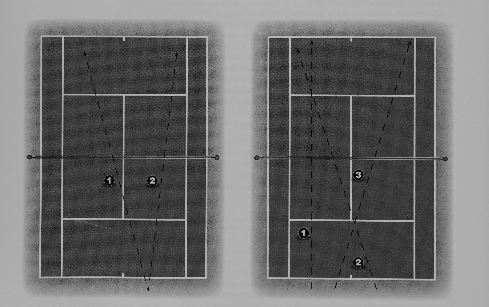
Các kiểu đỡ bóng được sử dụng để cung cấp cho người chơi vị trí tốt nhất có thể để bắt đầu điểm, vô hiệu hóa cú giao bóng của đối thủ và giảm thiểu cú đánh tiếp theo của người giao bóng. đỡ bóng chéo sân hoặc xuống giữa sân là các kiểu đỡ bóng được sử dụng nhiều nhất (chủ yếu là tấn công hoặc trung hòa), và đỡ bóng dọc biên chủ yếu được sử dụng ở vị trí tấn công hoặc phòng thủ. Hầu hết người chơi thích một kiểu đỡ bóng cụ thể, nhưng điều quan trọng là người chơi phải sử dụng sự đa dạng trong các kiểu đỡ bóng.
đỡ bóng chéo sâu, dọc giữa hoặc dọc biên Người chơi sử dụng đỡ bóng chéo sâu vì lưới thấp hơn ở giữa, có nhiều sân hơn để sử dụng và đó là cách đỡ bóng tốt nhất để bắt đầu một pha giao bóng. Điều cần cân nhắc chính khi thực hiện cú trả chéo sân sâu là liệu người chơi có thể đánh nó với sức mạnh và độ sâu hay không. Phản ứng của đối phương đối với quả đỡ bóng chéo sân: Nếu đấu thủ đỡ bóng chéo sân sâu, đối phương thường sẽ đánh quả bóng tiếp theo ngược chiều chéo sân. Nếu đấu thủ thực hiện một đường chéo góc nhọn, tùy theo sức mạnh của đối phương, đối phương sẽ đánh một góc chéo ngược hoặc đánh xuống đường khiến đấu thủ bỏ chạy. Một cú đỡ bóng chéo sân kém có thể dẫn đến việc đối phương chuyển bóng dễ dàng hơn.
Phản ứng của đối thủ đối với cú đỡ bóng từ giữa sân: Sau cú đỡ bóng từ giữa sân, cú đánh tiếp theo thường quay trở lại giữa sân. Nếu lượt đỡ bóng ngắn, đối thủ sẽ ở thế chắc chắn để giành điểm. Phản ứng của đối thủ đối với cú đỡ bóng từ đường biên: Phản ứng phổ biến nhất của một cú đỡ bóng từ đường biên là đánh bóng chéo sân, vì vậy điều quan trọng là cú đỡ bóng phải có sức mạnh và độ sâu và giữ cho đối thủ không đánh mạnh mẽ dọc biên và khiến đấu thủ phải bỏ chạy. Nếu cú đỡ bóng mạnh, người chơi có thể tìm cách lẻn vào thực hiện một cú đánh nổi. Nếu một người giao bóng thuận tay phải đang giao bóng về phía bên trái, một cú đỡ bóng trúng đích sẽ buộc người giao bóng phải xoay cơ thể hoàn toàn để tiếp cận quả bóng đang di chuyển phía sau cơ thể. Phản ứng có thể là một cú đánh bay hướng ngược về phía giữa sân. Người quay lại có thể tận dụng cú đánh bay này bằng cách đưa nó lên không trung và hướng nó vào sân rộng. Về mặt quảng cáo, cú đánh trả về phía người giao bóng thuận tay phải sẽ thuộc về phía thuận tay của người giao bóng đó. Vì điểm tiếp xúc muộn hơn có thể xảy ra ở phía thuận tay, nên người giao bóng thường có thể hướng cú đánh này sắc nét hơn qua mặt sân. Một lần nữa, nếu người quay lại thực hiện một cú đỡ bóng tuyệt vời ở cuối đường, thì người quay lại sẽ tiến về phía trước để trả lời phòng thủ.
Cú đỡ ngắn dọc biên, vào giữa hoặc chéo sân
Người chơi hiện đang tận dụng quả giao bóng thứ hai của đối phương, hoặc có thể người chơi đang dẫn trước, hoặc có lẽ người chơi chỉ cảm thấy sáng tạo trong một lần chơi cụ thể. Dù bằng cách nào, nếu được sử dụng một cách khôn ngoan, lợi thế ngắn hạn có thể rất hiệu quả. Sự trở lại này cũng có hiệu lực nếu người giao bóng không tiến triển tốt. Phản ứng của đối phương: Nếu đối phương đã đoán trước được một khoảng thời gian ngắn sẽ quay trở lại bất kỳ vị trí nào, đối phương sẽ nhanh chóng có mặt ở đó và đánh bóng vào bất kỳ vị trí nào mong muốn. Tuy nhiên, nếu đối phương khởi đầu không tốt, người chơi có thể tìm kiếm cú đánh tiếp theo là một cú sút chéo góc góc thấp, đưa bóng đi qua phần thấp nhất của lưới. Với quả bóng ở giữa, người chơi sẽ phải đoán xem quả bóng có ở trên lưới hay không. Nếu bóng thấp, đối phương sẽ đánh bóng ngắn hơn vào sân và về phía người chơi được cho là yếu hơn. Bất cứ khi nào một đấu thủ vô tình đánh một quả bóng quá ngắn, chẳng hạn như con lăn lưới, hoặc cố ý, chẳng hạn như cú đánh rơi, thì đấu thủ nên di chuyển vài bước vì đối thủ sẽ buộc phải nhấc bóng lên qua lưới, khiến bóng rơi ngắn xuống sân.
Các dạng phối hợp cú đánh nền và chơi lưới
Khi người chơi đối mặt với một đối thủ có khả năng tương tự, đồng hồ sẽ chạy để xem ai có thể làm việc với đối thủ làm tăng sự tập trung và tự tin của người chơi khi thi đấu. Mỗi mẫu sau đây cũng có thể được tăng dần. Ví dụ: thay vì mẫu 12, người chơi có thể biến nó thành mẫu 13, đánh 3 quả bóng về phía trái tay trước khi đánh về phía thuận tay.
Mẫu một-một
Mô hình một chọi một là xen kẽ một cú đánh vào một nửa sân và cú đánh tiếp theo vào nửa sân còn lại (xem hình 10.2 trên trang 198). Mô hình này có thể được sử dụng để mở sân để đánh cú ghi điểm trực tiếp hoặc chuyển sang chơi trên lưới (giai đoạn tấn công), để liên tục đẩy đối phương về đường cuối sân (giai đoạn tập hợp) hoặc để chống lại sự hung hãn của đối thủ bằng cách rút ngắn thời gian phản ứng hoặc thay đổi mô hình tấn công (giai đoạn phản công). Nó cũng có thể được sử dụng với độ cao và độ xoáy tăng lên để câu thêm thời gian khi người chơi phải chạy (giai đoạn phòng thủ). Sau đây là một số ví dụ mẫu:
* Luân phiên các cú đánh chéo sân và các cú đánh dọc biên (tất cả các giai đoạn) ¢ Một cú thuận tay từ trong ra ngoài, sau đó là một cú đánh mặt đất từ trong vào (tấn công hoặc phản công)
e Một cú thuận tay từ trong ra ngoài, sau đó là một cú trái tay dọc biên (tấn công hoặc phản công) ¢ Chuyển sang lưới bằng một cú đánh nền chéo sân, sau đó là một cú đánh tiếp cận sang phía bên kia sân hoặc dọc biên (tấn công) e Thực hiện một cú vô lê sâu tạo ra một cú đánh trên cao (tấn công) ¢ Giao bóng rộng và sau đó thực hiện một cú đánh nền hoặc cú đánh tiếp cận phần sân mở cho người chiến thắng (giai đoạn tấn công) hoặc với mục tiêu đưa đối thủ ra khỏi vị trí và giữ đối thủ đang chạy (giai đoạn tập hợp) Phản ứng của đối thủ: Nếu người chơi đang chạy đối thủ sang trái và phải, đối thủ sẽ cố gắng tiến lên và làm điều gì đó lớn lao để ngăn chặn cảm giác đau đớn kéo dài khi bị chạy xuống đất. Người chơi phải cảnh giác với một cuộc phản công: tăng tốc độ hoặc hướng đột ngột khi đối thủ cố gắng đưa người chơi vào thế phòng thủ.
Mẫu hai-một
Mô hình Hai chọi Một là hai cú đánh sang một bên sân, sau đó là một cú đánh sang phía bên kia (xem hình 10.3). Mô hình này thường được sử dụng khi người chơi đang tấn công với mục tiêu dùng chân sai đối thủ để tạo sơ hở hoặc tập hợp lại để sử dụng các cú đánh nhằm vạch trần điểm yếu. Một cách tuyệt vời để sử dụng mô hình này là hai cú đánh vào bên yếu hơn của đối thủ, sau đó là một cú đánh bất ngờ vào bên mạnh của đối thủ. Ví dụ: đối với một người chơi thuận tay phải với cú thuận tay mạnh mẽ, mô hình này sẽ áp dụng chéo bàn về phía trái tay hai lần, sau đó là một cú đánh về phía thuận tay. Nếu thách thức sức mạnh của đối thủ, người chơi có thể chọn đánh hai quả bóng vào điểm mạnh của đối thủ rồi đánh vào điểm yếu của đối thủ. Dưới đây là một số ví dụ bổ sung về mô hình hai đối một: * Người chơi đánh hai cú đánh nền chéo sân (vào điểm yếu của cú đánh nền của đối thủ) và sau đó một cú đánh vào điểm mạnh của đối thủ với hy vọng mở sân và tiếp tục bộc lộ điểm yếu. ¢ Khi chuyển tiếp, người chơi sử dụng hai cú đánh tiếp đất để kéo đối thủ về một hướng nhất định và sau đó sử dụng cú đánh chuyển tiếp để có khả năng khiến đối thủ phải bỏ chạy. ¢ Khi thi đấu trên lưới, đấu thủ đánh hai cú vô lê để kéo đối phương lùi lại hoặc ra khỏi sân và sử dụng một cú đánh khác để thực hiện cú ném xa. e Đấu thủ giao bóng rộng và sau đó đánh một cú đánh nền vào cùng một khu vực (có thể đi phía sau đối thủ, người sẽ chạy để quay trở lại sân) và sau đó tung cú đánh vào góc đối diện của phần sân mở. Phản ứng của đối thủ: Một đối thủ thông minh sẽ cố gắng gây khó khăn hơn cho người chơi trong việc bắn hai phát vào điểm yếu của đối thủ bằng cách ở lại góc yếu hơn càng lâu càng tốt với hy vọng chạy vòng qua điểm yếu. Đánh về phía sân đối diện với sức mạnh của đối thủ khi đó có thể mở ra điểm yếu để tấn công.
Mẫu một-hai
Mô hình một chọi hai là một cú đánh vào một nửa sân và hai cú đánh vào nửa sân còn lại (xem hình 10.4). Giống như mô hình hai chọi một, mô hình này được sử dụng để tấn công và tập hợp. Người chơi bắt đầu bằng việc mở sân bằng cú đánh đầu tiên, sau đó là cú đánh về phía đối diện, buộc đối thủ phải bỏ chạy. Cú đánh thứ ba được đánh vào cùng một vị trí và phía sau đối phương khi đấu thủ đang di chuyển trở lại giữa sân để đề phòng mô hình một đối một. Người chơi có thể thực hiện mô hình này theo nhiều cách: * Người chơi có thể đánh một cú đánh nền chéo sân (để mở sân hoặc để lộ điểm yếu), tiếp theo là hai cú đánh nền dọc theo đường. e Khi chuyển tiếp, đấu thủ có thể sử dụng cú đánh nền đầu tiên để đi dọc biên (để mở sân), sau đó là cú vô lê chéo sân vào phần sân mở và cú vô lê thứ hai hoặc cú đánh đầu tới cùng một vị trí; ví dụ, lùi lại phía sau đấu thủ khi đối thủ di chuyển để che chắn phía bên kia sân. e Người chơi có thể giao bóng rộng và sau đó đánh hai cú đánh nền vào góc đối diện. Phản ứng của đối thủ: Đối thủ nên tập trung nhiều hơn vào cú đánh đầu tiên (đánh trả) và cố gắng lấy đi vị trí sân cũng như khả năng tấn công hiệu quả của người giao bóng.
Mẫu trung hòa
Kiểu trung hòa thường là hai hoặc nhiều quả bóng đi qua giữa sân hoặc chéo sân nhẹ (xem hình 10.5), chống lại tốc độ hoặc kiểu của đối thủ bằng cách đánh sâu vào giữa sân để giữ người chơi ở điểm và hỗ trợ phục hồi. Khi ở giai đoạn phòng thủ và phản công, mô hình này giúp người chơi có nhiều thời gian nhất để lấy lại sự cân bằng và tập trung để thực hiện một cuộc tấn công hoặc phản công. Mô hình này cũng có thể được sử dụng trong giai đoạn tập hợp để giữ cho đối thủ không bị tấn công nhiều hơn. Sau đây là những triển khai có thể có của mẫu trung hòa:
¢ Người chơi có thể thực hiện các cú đánh nền từ giữa, nảy cao hơn, giữ nguyên thấp hơn hoặc chỉ đủ mạnh để khiến đối thủ khó thực hiện một cú đánh mạnh mẽ hơn. ¢ Một cú vô lê trung hòa có thể được thực hiện từ vị trí phòng thủ (duỗi ra) đến sâu trong sân và ở một vị trí tuyệt vời cho phép người chơi phục hồi và thực hiện cú vô lê tiếp theo hoặc trên đầu dễ dàng hơn. e Các cú đánh chuyển tiếp vô hiệu hóa có thể được thực hiện dưới dạng trả chip (giai đoạn phản công) hoặc như một cú đánh chuyển tiếp lát (giai đoạn tập hợp hoặc tấn công) để tiếp cận lưới.
bóng tốt, tay vợt này sẽ cố gắng tấn công (giai đoạn tấn công) bằng cách đánh bóng sâu vào một trong các góc. Đối phương cũng có thể thực hiện cú đánh tập hợp để tấn công quả bóng tiếp theo.
CHIẾN LƯỢC
Chiến lược là những kế hoạch mang lại cho người chơi ý thức về mục đích khi chơi quần vợt và xây dựng dựa trên các mô hình chơi chung. Nói một cách đơn giản, người chơi thực hiện các cú đánh theo những cách kết hợp mà người chơi cảm thấy tự tin và giúp người chơi quyết định cách chơi và giành điểm.: Cấp độ kỹ năng của người chơi và các cú đánh (vũ khí) cụ thể xác định chiến lược nào sau đây cần tập trung và điều chỉnh cho phù hợp với phong cách cá nhân của người chơi. Ví dụ, những người chơi muốn áp dụng chiến thuật kéo đối thủ ra khỏi sân phải có cú thuận tay từ trong ra ngoài tốt, giao bóng rộng và có thể sử dụng các góc. Người chơi luôn có thể thêm các cú đánh để nâng cao trò chơi của mình và thêm đa dạng, nhưng chiến lược họ nên sử dụng nhiều nhất là chiến lược phù hợp với những cú đánh mà họ có thể đánh một cách nhất quán và tự tin. Tất cả chiến lược nâng cao đều dựa trên chiến lược cơ bản; người chơi nâng cao tiến bộ vì họ không bỏ qua các nguyên tắc cơ bản. Hiểu được ý nghĩa thực sự của các cú đánh và cách chúng phù hợp với kế hoạch trò chơi tổng thể của từng cá nhân sẽ mang lại cho người chơi nền tảng kiến thức để xây dựng. Các chiến lược sau đây được xây dựng từ cơ bản đến nâng cao.
Chiến lược cơ bản số 1: Đánh vào phần sân mở Trong chiến lược này, người chơi đánh bóng đến nơi đối phương không đứng. Chiến lược này bắt đầu phát triển khả năng tập trung mềm của người chơi, đó là xem đối thủ đang ở đâu trong khi tập trung vào vị trí sân của người chơi và quả bóng bay tới. Người chơi sẽ bắt đầu sử dụng khả năng kiểm soát bóng để cố gắng đưa bóng ra phần sân rộng. Các kiểu chơi phổ biến: Kiểu một đối một, đánh bóng sâu, ngắn, cao, thấp (giai đoạn phòng thủ, tập hợp hoặc tấn công).
Chiến lược cơ bản số 2: Che đậy điểm yếu Khi mục tiêu là bắn trúng vũ khí trong một pha bóng qua lại, người chơi có thể sử dụng chiến thuật chạy vòng quanh điểm yếu. Làm như vậy cần có tốc độ và thể lực tuyệt vời. Liên tục chạy quanh điểm yếu không cải thiện được điểm yếu, vì vậy chiến thuật này khiến người chơi phải chuyển sang phong cách chơi này; tất cả các cú đánh tiếp theo phải được phát triển để hỗ trợ chiến lược đó. Điểm yếu phổ biến nhất ban đầu là cú trái tay, vì vậy cú thuận tay từ trong ra ngoài chính là câu trả lời. Để khắc phục điểm yếu một cách hiệu quả, người chơi phải tìm kiếm một đường bóng ngắn, ở giữa sân với tốc độ chậm hơn và cao hơn. (Bài tập sân ba phần tư trong chiến thuật sắp tới có thể giúp người chơi luyện tập che đậy điểm yếu.) Ngoài ra, để tạo thế cho đối thủ đánh mạnh, người chơi có thể lùi về bên yếu hơn, chừa nhiều khoảng trống hơn để đánh đòn mạnh hơn. Việc phục hồi về phía yếu hơn cũng khiến sân đối phương bị thu hẹp lại, khiến việc đánh vào điểm yếu của đối thủ trở nên khó khăn hơn. Đây là mục tiêu của việc định vị sân thích hợp. Các kiểu chơi phổ biến: Các kiểu chơi một đối một, một đối hai và hai đối một giữ bóng chéo sân thường xuyên nhất có thể.
Chiến lược cơ bản số 3: Vũ khí cho điểm yếu Đối với hầu hết người chơi, cú giao bóng và cú thuận tay là vũ khí chính trong trò chơi của họ. Tuy nhiên, điều đó không có nghĩa là cú trái tay, tốc độ hoặc lối chơi trên lưới cũng không thể được phát triển và sử dụng làm vũ khí. Dù điểm mạnh của người chơi là gì, mục tiêu khi chơi quần vợt giành chiến thắng là vào vị trí để đánh vũ khí vào điểm yếu của đối thủ. Cách tốt nhất để làm điều này là sử dụng chiến lược sân ba phần tư. Chiến lược này cho biết người chơi sẽ cố gắng ở vị trí ở giữa điểm băm ở giữa và con hẻm trên đường cuối sân hoặc gần đường cuối bên phía người chơi đánh yếu hơn. Người chơi sẽ phục hồi vị trí này trong các pha đánh bóng, sau một quả giao bóng và sau khi đỡ bóng. Bởi vì đối thủ đang đánh theo sức mạnh của mình nên lối chơi trên lưới của đối phương cũng có thể được cải thiện nhờ thực hiện cú đánh tiếp cận hiệu quả hơn. Các kiểu chơi phổ biến: Một đối một, hai đối một, hai đối một và trung hòa (bằng cách giữ bóng ở giữa sân).
Mục đích: Dạy cách che đậy điểm yếu và sử dụng vũ khí. Quy trình: Cả hai đấu thủ đều xuất phát ở giữa đường cuối sân ở hai phía đối diện của sân (xem hình 10.6). Người chơi 1 đưa bóng để tiếp đất ở giữa đường cuối sân và hẻm gần đường cuối sân. Người chơi 2 chạy vòng quanh phía trái tay và đánh một cú thuận tay từ trong ra ngoài đến giữa giữa đường cuối sân và hẻm gần đường cuối sân. Người chơi 1 phản ứng bằng cách chạy vòng quanh trái tay và cũng đánh một cú thuận tay từ trong ra ngoài. Sau khi thực hiện được hai cú thuận tay từ trong ra ngoài, các đấu thủ sẽ đánh điểm toàn sân. Người đầu tiên được 7 điểm sẽ thắng vòng đấu; người chơi chơi tốt nhất trong 5 hiệp. Điểm huấn luyện: Chiến lược này thường được sử dụng khi thuận tay là vũ khí và người chơi muốn ở vị trí có thể đánh được nhiều cú thuận tay hơn trong một trận đấu. Để luyện tập để tăng cường sức mạnh cho cú trái tay, người chơi cũng có thể luyện tập chạy vòng quanh cú thuận tay, nhưng điều này không được khuyến khích khi thi đấu.
các khu của sân. Chiến lược trung gian số 1: Kéo đối thủ ra khỏi sân geen ea
Chiến lược này được sử dụng để kiểm tra khả năng di chuyển của đối thủ và cũng là một cách tuyệt vời để mở sân. Có nhiều cách khác nhau để kéo đối thủ của bạn ra khỏi sân, bao gồm một quả bóng chéo sân sâu hơn hoặc một cú sút chéo góc có góc ngắn hơn. Một cú giao bóng và đỡ bóng cũng có thể được thực hiện để kéo người chơi ra khỏi sân cũng như một cú vô lê. Cú đánh này mạnh và đúng vị trí như thế nào sẽ quyết định cú đánh tiếp theo của người chơi. Một cú đánh yếu hơn nhưng không trúng mục tiêu có thể giúp đối thủ có cú đánh tiếp theo dễ dàng hơn. Một cú đánh chéo sân mạnh và trúng đích có thể gây ra lỗi hoặc bóng ngắn.: Mục đích của việc kéo một đấu thủ ra khỏi sân là đánh cú đánh tiếp theo vào phần sân trống hoặc phía sau đối phương để đánh nhầm chân đối phương. Hai cách chơi rất phổ biến là đánh thuận tay hoặc trái tay chéo sân rồi đánh quả bóng tiếp theo dọc theo đường biên. Người chơi có thể sử dụng chiến lược này với chiến lược lao tới và nghiền nát (Chiến lược trung gian số 2) để gây thêm áp lực cho đối thủ. Các kiểu chơi phổ biến: Các kiểu chơi một đối một, một đối hai và hai đối một.
CHIẾN LƯỢC ĐƠN VÀ ORILLS BOS
Mục đích: Nhấn mạnh việc đánh mặt ngoài bóng và mở sân để kéo đối phương ra khỏi sân. Cách tiến hành: Mỗi đấu thủ đứng ở phía bên kia của sân và phía sau đường đánh đôi của mỗi bên sân. Người chơi 1 đưa bóng vào cuộc và nhắm vào đường đánh đôi của người chơi 2 (xem hình 10.7). Người chơi 2 phản ứng bằng cách đánh vào con hẻm của người chơi l. Sau khi thực hiện hai cú đánh theo đường hẻm, điểm chỉ được tính ở đường đơn. Mỗi đấu thủ nên đánh vào bên ngoài quả bóng với mục đích mở sân. Cú đánh không được tính là một điểm nhưng mỗi cú đánh chéo tay thuận tay vào ngõ sẽ được tính là một điểm. Trận đấu được chơi đến 7 điểm rồi chuyển sang bên trái tay. Người chơi cũng nên luân phiên làm người chơi 1 và người chơi 2. Điểm huấn luyện: Độ xoáy và chiều cao là những yếu tố cần thiết để giành chiến thắng trong trò chơi này. Người chơi nên thư giãn và tiếp tục tăng tốc trên quả bóng. Biến thể: Người chơi có thể chơi trò chơi này từ xung quanh đường giao bóng để phát triển các góc, ở giữa đường giao bóng và đường cuối sân để phát triển một quả bóng tập trung nặng và sâu phía sau đường cuối sân để thực hành Hình 10.7 Đánh vào ngõ. đánh từ một giai đoạn phòng thủ.
Chiến lược trung gian #2: Lao và đè bẹp Với lao và đè bẹp, người chơi đang tìm cách để vào lưới. Một số lượt chơi có thể được sử dụng để thực hiện chiến lược này, bắt đầu bằng cú giao bóng và vô lê hoặc cú đỡ bóng và vô lê. Hoặc, người chơi có thể khiến đối thủ phòng thủ bằng vũ khí và di chuyển để thực hiện một cú vô lê xoay hoặc vô lê chặn. Một lựa chọn khác là ném một quả bóng cao, nặng vào điểm yếu của đối phương và lẻn vào phía sau. Hoặc, người chơi có thể thực hiện một cú thả bóng, đưa đối thủ về phía trước, sau đó lốp bóng qua đối thủ, tiếp cận lưới khi đối thủ chạy lại để thu hồi cú đánh. Các kiểu chơi phổ biến: Giao bóng và đánh vô-lê, thực hiện cú đỡ bóng hoặc đánh và tiến vào, hoặc các cú đánh chuyển tiếp dưới bất kỳ hình thức nào đều được sử dụng để lao tới và đè bẹp. Với chiến thuật dồn dập, đè bẹp, người chơi tận dụng mọi cơ hội để vào lưới, bao gồm các lối chơi trung hòa 1 chọi 1, 2 chọi 2, 2 chọi 1. Người chơi cũng có thể sử dụng những cú sút từ ngắn đến sâu để chuyển sang lưới.
D()AZ quần vợt và ORILLS
Mục đích: Để phát triển khả năng đánh vô-lê của tay vợt từ mọi phía của sân và trên đường vào lưới. Đây là một bài tập đưa ra quyết định tuyệt vời dành cho người chơi vô-lê đi bộ, người mà người chơi phải quyết định chặn hoặc vung bóng khi bóng tới. chia bước chỉ Thủ tục: Hai đấu thủ đánh ra điểm chéo sân mà thôi. Người chơi 1 giao bóng chéo sân, trước khi thực hiện cú vô lê. và người chơi 2 đỡ bóng chéo sân. Sau khi giao bóng, người chơi 1 bước về phía trước hai bước Khi thực hiện cú vô lê, sau đó thực hiện cú vô lê chuyển tiếp từ trên không, sau đó là hai bước nữa - người chơi nên cắm mắt (xem hình 10.8). Nếu câu trả lời của người chơi 2 nằm trong phạm vi cú vô lê được khuyến nghị, hãy mở phạm vi vợt, thì người chơi 1 sẽ thực hiện cú vô lê. Nếu câu trả lời của người chơi 2 đáp xuống ngắn hơn so với thời điểm cả hai ngửa mặt. Khi thực hiện các bước xoay, người chơi 1 có thể thực hiện theo cách tiếp cận nửa vô lê hoặc chặn và tiếp tục tiến lên. vô-lê, tay vợt Mục tiêu của tay vợt 1 là tập đánh vô-lê từ đường cuối sân đến lưới nên tiếp tục. Người chơi 2 tiếp tục chơi chéo sân, phản ứng với cú vô lê của người chơi 1. Nếu một trong hai người vung vợt từ người chơi thấp bỏ lỡ cú đánh chéo sân, họ sẽ mất điểm. Điểm được chơi đến 11; một đến cao. Người chơi là người đánh vô-lê trong toàn bộ trận đấu hoặc thay thế người chơi sau mỗi 5 điểm.
Biến thể: Người chơi không nên đi tới lưới mà phải tăng tốc về phía lưới, lấy từng quả bóng ra khỏi không trung. Một biến thể của cách ghi điểm là tay vợt 1 bị mất điểm khi sút hỏng cú vô lê.
Chiến lược trung gian số 3: Đẩy đối thủ vào
sân
Chiến lược di chuyển dựa trên thực tế là hầu hết người chơi quần vợt đều di chuyển theo chiều ngang, về phía bóng hoặc xung quanh bóng tốt hơn. Chuyển động bất thường nhất đối với mọi người là lùi lại. Trong khi chơi, người chơi nên sử dụng những cú đánh để khám phá điểm mạnh và điểm yếu trong chuyển động của đối thủ. Người chơi nên sử dụng cú thả bóng để kiểm tra thời gian phản ứng và tốc độ đưa bóng về phía trước. Một cú đánh cao và nặng là một bài kiểm tra tốt để xem liệu người chơi có thể di chuyển trở lại sân một cách hiệu quả hay không. Người chơi có thể sử dụng mô hình một đối một để kiểm tra chuyển động ngang. Mô hình một đối một cũng có thể được sử dụng ngắn và sâu để kiểm tra khả năng chuyển đổi giữa chuyển động tiến và lùi. Cuối cùng, người chơi có thể kiểm tra chuyển động của đối phương xung quanh quả bóng bằng cách đánh thẳng vào quả bóng. Khi người chơi biết điểm yếu của đối thủ, người chơi có thể thực hiện các kiểu chơi khiến đối thủ phải chạy theo những kiểu di chuyển không thoải mái. Các kiểu chơi phổ biến: Các kiểu chơi một đối một, một đối hai, hai đối một và trung hòa.
Mục đích: Để thực hành các đợt phục hồi kéo dài và các mô hình tạo ra chúng. Quy trình: Hai người chơi đặt mục tiêu tập hợp là mỗi người 4 cú sút. Bài tập bắt đầu với một đấu thủ giao bóng, sau đó là giai đoạn giao bóng. Sau khi đạt được mục tiêu tập hợp, người chơi 1 thực hiện một trong các cú đánh thử nghiệm, chẳng hạn như cú đánh rơi hoặc cú cắt, và điểm sẽ được tính. Để có thêm thử thách trong giai đoạn tập hợp, người chơi 1 đánh tất cả các cú đánh chéo sân trong khi người chơi 2 đánh tất cả các câu trả lời dọc theo hàng (xem hình 10.9). Người chơi chơi trò chơi đến 7 điểm rồi chuyển đổi vai trò. Điểm huấn luyện: Đây là một bài tập theo phong cách hợp tác, trong đó cả hai người chơi đều có mục đích chung là đạt được mục tiêu và sau đó chiến đấu với nhau. Việc duy trì tốc độ tập hợp cùng nhau là rất quan trọng nếu không mục tiêu chung sẽ không thể đạt được. Biến thể: Người chơi thực hành thực hiện các mẫu hai-một và một-hai.
Chiến lược trung gian #4: Cú đánh đầu tiên Cú đánh đầu tiên là sử dụng vũ khí để sớm đưa đối thủ vào thế phòng thủ để người chơi có thể ra lệnh ngay từ đầu (trái ngược với việc đi thẳng vào điểm). Chiến lược này nhấn mạnh vào điểm nhanh hơn, không cho phép đối thủ bắt nhịp. Cú đánh đầu tiên có thể được thực hiện ngay từ đầu bằng cách đặt quả giao bóng ở vị trí giúp người chơi ở vị trí tốt nhất có thể để đánh vũ khí. Hoặc, người chơi có thể quay lại vị trí cho phép sử dụng vũ khí. Hầu hết người chơi lùi lại để cho phép họ có thêm thời gian tấn công lượt đỡ bóng hoặc che đậy điểm yếu khi đỡ bóng của họ. Khi vào điểm, thực hiện một cú đánh phía sau đối thủ có thể khiến đối thủ mất thăng bằng và tạo điều kiện cho người chơi thực hiện cú đánh giành chiến thắng. Các kiểu chơi phổ biến: Hai chọi một và một chọi hai.
Đòn tấn công đầu tiên
Mục đích: Luyện tập đánh điểm nhanh hơn để ngăn chặn đối thủ thiết lập nhịp điệu. Quy trình: Bài tập bắt đầu bằng việc một đấu thủ giao bóng cho đối thủ khác, sau đó là một lượt giao bóng. Mục tiêu của người giao bóng là kết thúc điểm trong vòng bốn lần chạm bóng cho người giao bóng hoặc người đỡ bóng. Mục tiêu của người quay lại là buộc người giao bóng gặp lỗi hoặc sống sót sau bốn lượt bắn đầu tiên của người giao bóng. người giao bóng kiếm được một điểm khi giành được điểm trong vòng bốn lần bắn. Người quay lại kiếm được một điểm nếu người giao bóng mắc lỗi hoặc nếu pha bóng qua lại diễn ra lâu hơn bốn lần chạm đầu tiên của người giao bóng. Trò chơi nên được chơi đến 11 điểm. Người chơi có thể luân phiên giao bóng sau mỗi 5 lần giao bóng. Biến thể: Người chơi có thể tăng tổng điểm cho những cú đánh đầu tiên tích cực hơn, chẳng hạn như người giao bóng và người chiến thắng trên cao hoặc quân Át trong lần giao bóng.
Chiến lược nâng cao số 1: Đánh các cú đánh để thiết lập điểm mạnh
Các chiến lược nâng cao yêu cầu người chơi phải làm nhiều hơn. Chúng yêu cầu người chơi bắt đầu dự đoán những phản ứng mong đợi từ cú đánh mà người chơi thực hiện. Nếu người chơi có thể đoán trước được phản ứng của đối thủ, người chơi có thể sử dụng thông tin đó để đặt các cú đánh ở vị trí tốt nhất có thể và đáp trả bằng vũ khí. Dưới đây là một số cách phổ biến để thiết lập điểm mạnh: ¢ Người chơi có thể đánh một cú đánh yếu hơn ở cuối sân để đối thủ trả lời chéo sân về điểm mạnh. ¢ Người chơi có thể giao bóng rộng về phía quảng cáo và tìm bóng ở giữa sân. ¢ Người chơi có thể đánh một quả bóng nặng để có thêm thời gian chạy vòng qua điểm yếu và sử dụng vũ khí. * Người chơi có thể đánh bóng nhúng hoặc bóng ngắn vào chân đối phương để có được một quả bóng bật lên, người chơi có thể di chuyển vào và cất đi. Nếu một tay vợt có tốc độ và những cú vô-lê tốt, người chơi có thể đánh một quả bóng ngắn và dự đoán quả bóng tiếp theo sẽ vượt qua đối thủ đã tiến về phía trước. * Người chơi có thể thực hiện những cú lốp bóng tuyệt vời để khiến đối thủ lo lắng khi vào lưới. e Người chơi có thể đánh bóng trực tiếp vào đối phương trên lưới và tìm bóng ngắn để chuyền.
Các kiểu chơi phổ biến: Các kiểu chơi một đối một, một đối hai, hai đối một và trung hòa.
CÁCH ĐÁNH ĐỂ TĂNG SỨC MẠNH
Mục đích: Học cách xây dựng điểm và đánh vào vị trí có cơ hội sử dụng vũ khí tốt nhất. Quy trình: Người chơi 1 và người chơi 2 đánh chéo bàn, thực hiện các cú sút sâu vào góc sau. Sau khi thống nhất số cú đánh chéo sân (thường là hai), đấu thủ được chỉ định nói Đi, biểu thị rằng họ đang đánh dọc biên (xem hình 10.10). Sau khi người chơi nói Đi, điểm sẽ được tính trên toàn sân. Người chơi chơi một trò chơi được 7 hoặc 11 điểm, tính bất kỳ lần bỏ lỡ nào là một điểm. Người chơi nên thay thế nguồn cấp dữ liệu sau mỗi 5 điểm. Những người chơi tương tự lặp lại quá trình này cho một trò chơi đầy đủ và sau đó họ đổi vai trò cho trò chơi tiếp theo. Điểm huấn luyện: Hầu hết người chơi quần vợt đều được lập trình để đánh chéo sân. Một quả bóng cao, nặng đánh xuống vạch theo tín hiệu cờ vây sẽ giúp người chơi có thêm thời gian để hồi phục. Bài tập này còn dạy tính kiên nhẫn và sức chịu đựng. Người nhận bóng phải đọc ý định của đối phương rất cẩn thận và cố gắng đoán trước cú đánh ở đường biên ngang. Biến thể: Người chơi thực hiện động tác đánh bóng ban đầu đánh dọc theo đường biên và sau đó đánh chéo sân để bắt đầu điểm.
Chiến lược nâng cao #2: Xì hơi và như 10.10 Hai cú đánh chéo bàn và cờ vây ‘ Il.
Thổi phồng hoặc thổi phồng và xì hơi:
Chiến lược này là phiên bản nâng cao hơn của Chiến lược trung gian số 3 nhưng sử dụng các kỹ thuật khác nhau để di chuyển đối thủ lên và lùi trên sân. Bóng xì hơi có thể được thực hiện bằng cách nhắm mục tiêu ngắn hơn trên sân, thêm độ xoáy, giảm tốc độ của bóng hoặc giảm độ cao của bóng. Tăng tốc độ hoặc độ sâu, tăng độ cao hoặc giảm độ xoáy có thể làm phồng bóng. Kiểu xẹp xuống và phồng lên kiểm tra khả năng di chuyển về phía trước của đối thủ, khả năng xử lý các cú đánh ngắn hơn bao gồm các góc ngắn hơn và khả năng di chuyển lùi để có bóng cao và nặng. Nó cũng được sử dụng để có khả năng khiến đối thủ mất vị trí. Các kết hợp bắn sau đây rất hữu ích cho việc xì hơi và sau đó thổi phồng:
e Cú sút xa và lốp bóng ¢ Cú sút thả và chuyền sâu ¢ Đường cắt ngắn, mềm và bóng phẳng, sâu ¢ Đường cắt ngắn, mềm và đường bóng nặng * Góc chéo sân và đánh bóng lên biên Mô hình thổi phồng và xẹp xuống kiểm tra khả năng di chuyển lùi trước của đối thủ hoặc xử lý độ cao, độ xoáy, độ sâu và tốc độ tăng lên. Các cách thổi phồng và xẹp xuống phổ biến bao gồm: ¢ Người chơi có thể đánh nặng và sâu, sau đó là một góc ngắn. * Người chơi có thể lái bóng qua sân, sau đó là một quả bóng ngắn có chạm, chẳng hạn như cú đánh rơi. Các kiểu chơi phổ biến cho cả hai kiểu: Một đối một, một đối hai, hai đối một và các kiểu trung hòa.
XẢ HƠI VÀ BƠM PHÁT HOẶC BƠM PHÁT BƠM =
Mục đích: Để tìm cách kết hợp các chiến thuật khác nhau về hướng, tốc độ, độ xoáy, độ cao và độ sâu. Cách tiến hành: Người chơi chia sân thành bốn ô vuông ở hai bên sân. Người chơi thiết lập các quy tắc liên quan đến từng ô trên sân. Ví dụ: tất cả các quả bóng mà người chơi đánh vào ô giao bóng phải được xì hơi bằng xoáy xuống hoặc xoáy xuống. Tất cả đều xem những quả bóng đối diện được đánh qua vạch giao bóng phải được đánh bằng phẳng hoặc bằng xoáy lên. (Xem hình 10.11.) vợt của Nent Cả hai người chơi đều được đặt ở vị trí ở dấu thăng ở giữa, đối diện nhau, mặt gần với đường cuối sân. Người chơi nên đưa bóng đến bốn vị trí có thể có để xem loại sân nào dựa trên kiểu đánh mà họ đang thực hiện. Các khả năng là ngắn để thực hiện các cú đánh đối phương, ngắn đến sâu dọc biên, ngắn đến chéo sân sâu, cộng với tất cả những pha phối hợp ngắn đang cố gắng thực hiện. Sau khi thực hiện thành công hai lượt đánh, người chơi sẽ sử dụng điểm đối đầu để tính điểm trên toàn sân. Một điểm được trao sau khi người chơi bỏ lỡ người chơi. một phát bắn sau 2 phát bắn đã được thực hiện thành công. Trò chơi nên được chơi đến 11 điểm. Người chơi thay thế nguồn cấp dữ liệu sau mỗi 5 điểm. Biến thể: Người chơi có thể thay đổi luật bằng cách nói rằng họ phải thổi phồng (đánh bằng xoáy lên) vào ô giao bóng và xì hơi (đánh bằng xoáy xuống) qua đường giao bóng. Trò chơi này cũng có thể được chơi ngẫu nhiên—người chơi không có khu vực được chỉ định để đánh.
Chiến lược nâng cao số 3: Giảm phát và giảm phát
hoặc thổi phồng và thổi phồng
Người chơi sử dụng chiến lược xì hơi và xì hơi liên tục bắt kịp cú đánh của đối thủ, buộc đối thủ phải kết thúc cú đánh bằng cách luôn tăng thêm tốc độ. Một lựa chọn là sử dụng xoáy xuống và xoáy xuống, buộc đối phương phải di chuyển lên phía bóng. Hoặc, người chơi có thể làm mềm tay cầm vợt và sử dụng xoáy lên để bắt kịp quả bóng đang đến. Một người chơi đang sử dụng chiến lược thổi phồng và thổi phồng, hoặc chuẩn bị ăn thua, phải chắc chắn chơi theo tỷ lệ phần trăm bằng cách nhắm chéo sân vào sâu trong đường biên, đánh mạnh và phẳng vào các góc hoặc đánh nặng và sâu vào các góc. Các kiểu chơi phổ biến: Các kiểu chơi một đối một, một đối hai, hai đối một và trung hòa.
LẠM PHÁT TẤN CÔNG VÀ GIẢM PHÁT PHÒNG NGỪA =
Mục đích: Để thực hành các chiến thuật và kỹ thuật lạm phát và giảm phát chống lại đối thủ. Quy trình: Người chơi có thể chơi trò chơi này theo hai cách khác nhau, bằng một cú ăn hoặc một cú giao bóng. Người chơi có thể xác định ai sẽ tấn công và phòng thủ, nhưng tay vợt tấn công sẽ luôn giao bóng. Người chơi phạm tội sẽ bị phá sản và sẽ thổi phồng Người chơi thổi phồng tất cả các cú đánh, cố gắng đánh lớn hơn và mạnh mẽ hơn. Người chơi phòng thủ sử dụng bóng bằng cách tăng chiến lược giảm phát, tăng tốc và giảm độ cao của đường tấn công, chiều cao, chiều sâu, bóng của người chơi. Người chơi chơi trò chơi đến 7 điểm rồi chuyển đổi vai trò. xoay, tốc độ hoặc bằng cách mài giũa Điểm huấn luyện: Người chơi tấn công nên thực hành các lối chơi định hướng có tỷ lệ tích cực cao, chẳng hạn như các cú thuận tay chạy vòng để đánh chéo sân. Cầu thủ phòng ngự nên thay đổi. Họ làm việc theo từng điểm để lấy lại càng nhiều bóng cho đối thủ nhằm làm đối thủ bị xẹp _ bóng và gây ra lỗi. giảm độ cao, Biến thể: Người chơi chơi lại, nhưng người trả giao bóng đang phạm lỗi và người giao bóng ở độ sâu, độ xoáy, tốc độ, phòng thủ chỉ thực hiện cú giao bóng thứ hai. hoặc giảm bớt sự thay đổi hướng.
CHIẾN LƯỢC VÀ CHIẾN THUẬT
Như đã giải thích trước đây trong cuốn sách, phong cách mà người chơi lựa chọn phụ thuộc vào những cú đánh yêu thích, vũ khí, điểm mạnh và điểm yếu, tính cách trên sân và niềm đam mê khi chơi một phong cách. Tầm nhìn về cách người chơi nhìn nhận trò chơi cuối cùng sẽ giúp người chơi chọn một phong cách và giúp người chơi tập trung vào việc cải thiện các kỹ năng cụ thể được sử dụng để chơi phong cách đó. Sự cống hiến và làm việc chăm chỉ của người chơi quyết định sự thành công cuối cùng của Phong cách chơi. Mặc dù điểm mạnh và tính cách trên sân của người chơi giúp xác định phong cách chơi, nhưng bài kiểm tra cuối cùng là khả năng sử dụng và thực hiện các chiến lược tốt nhất cho phong cách chơi của họ. Các bài kiểm tra sắp tới của từng phong cách và hình thức phong cách chơi trong hình 10.12 trên trang 210 có thể giúp người chơi xác định hai phong cách chơi tốt nhất của mình.
Kiểm tra các mô tả mô tả đúng nhất trò chơi của bạn. Lối chơi của bạn phải kiên nhẫn và bạn thích làm việc có ích. (A) Khi đọc các đường chuyền, bạn thường chọn bên phải. (D) 02O Bạn thích điều khiển lối chơi từ đường cuối sân và thực hiện các cú đánh của mình. (B) Mục tiêu của bạn là có một cuộc tấn công cân bằng giữa lối chơi tấn công mạnh mẽ và lối chơi trên lưới. (C) Bạn hiểu rằng phong cách chơi này có yếu tố rủi ro cao và cần thời gian để phát triển. (D) ee Bạn cảm thấy thoải mái trên lưới như khi ở đường cuối sân. (C) pha bóng qua lại càng dài thì càng tốt. (A) Bạn có một lát cắt hiệu quả để gây nhầm lẫn cho đối thủ và thay đổi nhịp điệu của pha giao bóng. (C) Bạn thích đóng vai kẻ đe dọa hoặc kẻ gây hấn. (D) erO Về mặt tinh thần, bạn là kẻ gây hấn. (B) Thay đổi tốc độ là điều bạn thích làm để đánh bại đối thủ. (C) Tâm trí của bạn là vũ khí của bạn. (A) Sức mạnh và độ chính xác là cách bạn muốn giành điểm. (B) eaC Bạn có một điểm yếu không cho phép cải thiện nhiều (ví dụ: một cú thuận tay tuyệt vời và một cú đánh thuận tay tuyệt vời).
ea trái tay yếu). (A)
Mọi người mô tả trò chơi của bạn rất thể thao. (D) Bạn chọn tấn công với nhiều lựa chọn. (C) tO Bạn sẽ thực hiện cú đánh tiếp cận và chuyển sang lưới khi có cơ hội tốt. (A) Bạn thích theo dõi cú giao bóng của mình vào lưới và gây áp lực cơ thể lên đối thủ. (D) Về mặt thể chất, bạn đang ở trạng thái tốt hơn đối thủ. (A) Bạn có nhiều hơn một loại vũ khí trong kho vũ khí của mình. (B) Bạn thích tập trung hơn đối thủ của mình. (A) Về mặt tinh thần, bạn sẵn sàng thích nghi và chơi theo bất kỳ phong cách nào cần thiết để giành chiến thắng trong ngày hôm đó. (C) Mọi người mô tả bạn là người có khả năng di chuyển tốt trên sân và bạn sử dụng tốc độ để duy trì khả năng tấn công. (B) Bạn thích chạy tiến và lùi thay vì chạy sang hai bên. (D) OO Khi bạn bật, bạn đang bật, nhưng khi bạn tắt, bạn xịt thuốc. (B) Mọi người nhận xét về tài hùng biện của bạn khi bạn chơi. (C) OB Bạn tận hưởng những điểm dứt điểm trên lưới và tìm mọi cơ hội để chuyển sang lưới. (D) Về mặt tinh thần, bạn biết rằng bạn có thể tồn tại lâu hơn đối thủ. (A) Bạn không bận tâm đến những lỗi xảy ra khi thực hiện nhiều cú đánh của mình. (B).sOC Bạn sử dụng nhiều cú đánh khác nhau để chuyển sang lưới. (C) O» Bạn cam kết với phong cách chơi này, chọn sống bằng kiếm hoặc chết bởi kiếm. (B) Bạn có phản xạ nhanh. (D) Bạn có một đòn vượt trội hơn tất cả những đòn khác (vũ khí). (A):OOO Bạn thích kiểm soát vận mệnh của mình. (B) Ôi(a)
CHIẾN LƯỢC ĐƠN VÀ ORILLS 211 Bạn thích ở lại vạch cuối sân và sử dụng các cú đánh tiếp đất để kiểm soát các điểm. (A) Bạn thích chiến thắng bằng sự đa dạng. (C) Bạn bước vào trận đấu để đặt đối thủ vào thế phòng thủ. (B).serO Bị chuyền qua lưới là điều bạn sẽ vượt qua nhanh chóng. (D) Khiến đối thủ phải đoán là điều bạn thích làm khi ở trên sân. (C) Những pha chuyển tiếp lên lưới yêu thích của bạn là những cú ghi điểm trực tiếp hoàn toàn (ví dụ: chặn những cú vô lê chuyển tiếp, những cú vô lê xoay người). (B) erO Về mặt tinh thần, bạn thích chấp nhận rủi ro. (D)
___ Tổng số As ___ Tổng số B
___ Tổng số Cs ___ Tổng số Ds
Bức thư có số lượng phản hồi lớn nhất cho biết phong cách có thể khiến bạn cảm thấy thoải mái nhất. A = tay vợt cơ bản tập hợp hoặc phòng thủ, B = tay vợt cơ bản năng nổ, C = tay vợt theo phong cách toàn sân và D = tay vợt theo phong cách giao bóng và vô lê.
Người chơi cơ bản tập hợp hoặc phòng thủ
Một người chơi cơ bản phòng thủ hoặc tập hợp có nền tảng để một ngày nào đó trở thành một người chơi năng nổ, nhưng vẫn chưa có đủ các công cụ của người chơi cơ bản năng nổ. Có thể vũ khí của người chơi này không đủ lớn hoặc người chơi có điểm yếu mà đối thủ có thể khai thác. Có thể tính cách của người chơi trung lập hơn (bị động), hoặc người chơi thiếu tự tin để đưa trò chơi lên một tầm cao mới. Chuyển động của người chơi cũng có thể giữ cho người chơi cơ bản tập hợp không hung hãn hơn. Dù bằng cách nào, người chơi ở đường biên tập trung nên cố gắng cải thiện tốc độ xung quanh sân để trở thành một tay đấm phản đòn nhiều hơn hoặc tăng sức mạnh để trở thành một người chơi ở đường cơ bản hung hãn. Tư duy và tính cách của người chơi tập hợp cơ bản là sự kiên nhẫn và sức chịu đựng. Người chơi tập hợp cơ bản thích giành điểm theo hai cách: bằng cách kéo dài hơn một ai đó hoặc bằng cách cố gắng giành điểm đến mức đối thủ mất vị trí hoặc mất thăng bằng đủ để người chơi kết thúc bằng một cú đánh sát thủ. Điều này không có nghĩa là tay vợt tập cơ bản không thể đánh vô-lê hoặc không thích đánh vô-lê, nhưng tay vợt này thích giành điểm bằng chiến lược cơ bản và sử dụng tốt các chiến lược cơ bản như đánh phía sau đối thủ, đánh vào phần sân rộng và biết khi nào nên đánh trả từ giữa sân. Người chơi cơ bản tập hợp sở hữu những điểm mạnh sau: ¢ Vũ khí đánh đất. Người chơi cơ bản tập hợp có vũ khí để có thể giữ đối thủ ở thế phòng thủ. Vũ khí có nhiều khía cạnh khác nhau, chẳng hạn như có thể bắn trúng vũ khí từ bất kỳ đâu trên sân hoặc kỹ năng phòng thủ tốt (tốc độ). * Tính nhất quán. Người chơi ở đường biên tập hợp luôn đưa ra những quyết định đúng đắn và có kỹ thuật ổn định, tránh mắc lỗi. Một phiên bản cực đoan của sự nhất quán là cái mà người ta gọi là máy mài hoặc máy đẩy. Kiểu người chơi này phát triển mạnh nhờ việc lấy lại được nhiều bóng (hãy nghĩ đến bảng rổ của con người). Kiểu người chơi này cũng muốn tạo cho đối thủ cảm giác người chơi sẽ không bỏ lỡ và sẽ tồn tại lâu hơn đối thủ. - Khả năng khai thác chiều sâu cú đánh hiệu quả. Người chơi tập hợp cơ bản giúp đối thủ không giành được lợi thế bằng cách giữ các cú đánh sâu. Làm như vậy sẽ mang lại cho người chơi cơ bản cơ hội nhận được nhiều đường bóng ngắn hơn, có thêm thời gian để chạy vòng quanh những cú đánh yếu hơn và ngăn đối thủ tấn công. ¢ Kỹ năng dự đoán và theo dõi tốt. Người chơi tập hợp cơ bản đọc được xu hướng của đối thủ và sử dụng chuyển động thông minh để có được vị trí sân tối đa.
¢ Khả năng chơi phòng ngự tốt. Thiếu một vũ khí lớn, người chơi cơ bản tập hợp phải biết khi nào nên tấn công và khi nào nên sơ sài và lấy lại bóng để có cơ hội khác với một quả bóng có thể tấn công. Phòng thủ tốt còn được sử dụng để phối hợp các cú đánh hiệu quả, bao gồm cả những pha cắt bóng hoặc bóng cao, nặng khiến đối thủ cảm thấy khó chịu trong thời gian điểm. ¢ Sự dẻo dai về tinh thần và thể chất để có thể duy trì các pha bóng qua lại kéo dài. Một tay vợt cơ bản tập hợp thành công có đủ điều kiện để đi được quãng đường và tập trung tinh thần để không mệt mỏi trong các đợt tập trung (và trận đấu) kéo dài liên quan đến phong cách chơi này. Sự dẻo dai về tinh thần và thể chất này có thể khiến đối thủ kém vững chắc hơn trong những lĩnh vực này suy yếu hơn nữa. Từ các chiến lược được trình bày trước đó trong chương này, những chiến lược phù hợp nhất với người chơi tập hợp cơ bản là đánh vào phần sân rộng mở, che đậy điểm yếu và sử dụng vũ khí vào điểm yếu của đối thủ. Bên cạnh những chiến lược tổng thể này, còn có hai chiến lược khác dành riêng cho những người chơi ở đường biên tập hợp thành công: ¢ Chơi những quả bóng cao và nặng sâu để giữ đối thủ bị ghìm lại trên sân. Một số người chơi tập hợp cơ bản áp dụng phong cách chỉ đánh những quả bóng phẳng. Nó có thể rất hiệu quả, nhưng luôn luôn có cơ hội khi người chơi phải chơi tấn công theo phong cách phòng thủ hơn. Chiến lược này được sử dụng để thực hiện một cú đánh có quỹ đạo cao hơn, cho phép người chơi có nhiều thời gian hơn để hồi phục trở lại sân và thực hiện nhiều cú đánh tấn công hơn. e Giảm thiểu sự thay đổi hướng trong ảnh. Chiến lược này cho phép người chơi chơi theo tỷ lệ phần trăm khi ở trong tình huống tập hợp. Quá trình suy nghĩ nên là giữ cho các cú đánh chủ yếu đi chéo sân hoặc nhiều hơn vào giữa khi đối thủ thực hiện một cú đánh tấn công và chỉ thay đổi hướng đánh khi ở vị trí thuận lợi hơn.
Người chơi cơ bản hung hãn Người chơi cơ bản hung hãn có hầu hết các thành phần của người chơi cơ bản tập hợp, nhưng phong cách này dựa nhiều hơn vào việc đánh bằng sức mạnh, thực hiện nhiều cú đánh mạnh mẽ hơn và gây ra lỗi. Suy nghĩ và tính cách của người chơi cơ bản năng nổ rất khác với người chơi cơ bản tập hợp. Người chơi thích phong cách này thích kiểm soát điểm và cần vũ khí để thành công. Phong cách này có tâm lý của một tay vợt giao bóng và vô lê nhưng từ vạch cuối sân, lại thích đánh người thắng hơn là vào lưới để dứt điểm. Phong cách này tập trung vào việc sử dụng các cú đánh sức mạnh, ra lệnh chơi, tước thời gian của đối thủ và thực hiện nhiều cú đánh hơn. Khả năng chạy xung quanh những quả bóng được đánh về phía trái tay và tạo ra các góc từ trong ra ngoài là đặc điểm nổi bật của một tay vợt cơ bản năng nổ. Phong cách này dành cho số điểm ngắn hơn so với người chơi tập hợp cơ bản. Người chơi cơ bản năng nổ sở hữu những điểm mạnh sau: ¢ Cú giao bóng chí mạng và phối hợp thuận tay. Người chơi sử dụng phong cách này thường cố gắng neo trận đấu bằng một cú đánh. Nó thường là một cú thuận tay và người chơi sử dụng 3/4 vị trí sân để đánh cú thuận tay. Một cú giao bóng lớn kết hợp với một cú thuận tay lớn có thể gây chết người. ¢ Tư duy làm theo. Đây là một phong cách tuyệt vời dành cho người chơi có tư duy đánh mạnh và đánh thắng. Phong cách này hoạt động dựa trên khả năng tấn công đầu tiên bao gồm giao bóng tốt, thuận tay lớn, vô lê xoay người tốt và cú đánh bóng. * Khả năng kiểm soát vạch cuối sân. Người chơi sử dụng phong cách này liên tục tìm kiếm cơ hội do đối thủ tạo ra.
* Sự hung hăng. Những người chơi tấn công cơ bản thành công có khả năng di chuyển tuyệt vời để giữ đối thủ ở thế phòng thủ. Cũng giống như người chơi cơ bản tập hợp, người chơi cơ bản năng nổ sử dụng chiều sâu, độ chính xác, vị trí sân và chuyển động để có thể thực hiện những cú đánh yêu thích, có thể là vũ khí. Tuy nhiên, vì người chơi này hung hãn hơn nên chiến lược và chiến thuật có liên quan chặt chẽ hơn với người chơi toàn sân. Các chiến lược phù hợp nhất với một người chơi cơ bản hung hãn là sử dụng vũ khí để đánh vào điểm yếu, dồn đối thủ vào sân, tấn công đầu tiên, xì hơi và thổi phồng. Bên cạnh những chiến lược tổng thể này, còn có hai chiến lược khác dành riêng cho những người chơi cơ bản tích cực thành công. Bước lên sân, người chơi nhận bóng đang bay lên và đánh cú ghi điểm trực tiếp từ sâu hơn trong sân. Trong khi tuân thủ chiến lược đánh chủ yếu bằng thuận tay, người chơi cũng có thể đánh một cú trái tay mạnh mẽ dọc theo đường biên.
Cầu thủ toàn sân
Thông thạo cả tấn công và phòng thủ, người chơi toàn sân được coi là người nắm giữ tất cả các giao dịch và được hưởng tất cả các thành phần khác nhau của một điểm. Cảm giác thoải mái không kém khi vào lưới cũng như ở lại vạch cuối sân, tâm trí và tính cách của một tay vợt trên sân là bất cứ điều gì cần có trong tình huống nhất định. Một đấu thủ toàn sân có thể kiên nhẫn và hạ gục đối thủ, hoặc có thể tấn công. Người chơi này cảm thấy thoải mái khi chơi bất kỳ loại đối thủ nào. Một phần tâm lý của một người chơi trên toàn sân được xây dựng dựa trên kiến thức rằng người chơi có thể xử lý việc chơi và đánh bại bất kỳ phong cách chơi nào. Trò chơi cân bằng cho phép người chơi này chiến đấu với bất kỳ kiểu chơi nào, cho dù đó là tốc độ nhanh hơn của kẻ tấn công hay phong cách kiên nhẫn hơn của người chơi cơ bản. Thường được gọi là múa ba lê trên sân quần vợt, những người chơi trên toàn sân thường khiến việc chơi quần vợt trở nên dễ dàng. Điều đáng lừa dối là mức độ chăm chỉ mà một tay vợt toàn diện đã bỏ ra để có thể thực hiện tốt tất cả các phong cách chơi. Người chơi toàn sân sở hữu những điểm mạnh sau:
¢ Nhiều loại cú đánh để sử dụng trong một pha bóng qua lại. Điều này rất đáng sợ đối với đối thủ, hơn nữa nó còn tạo ra nhiều cơ hội hơn để giữ nguyên một điểm và tấn công. ¢ Tính linh hoạt và linh hoạt. Người chơi này khám phá những cách khác nhau để khai thác đối thủ. Do tính linh hoạt của người chơi này, người chơi toàn sân sở hữu sẵn kế hoạch A và kế hoạch B. Những cú đánh đa dạng của người chơi cho phép khả năng thử các chiến lược khác nhau khi mọi thứ không suôn sẻ trước đối thủ. ¢ Chuyển động lớn ở cả hai khu vực của sân. Cầu thủ này bước đầu tiên với bóng rất nhanh và cũng rất thành thạo trong việc di chuyển tiến và lùi cũng như từ bên này sang bên kia. * Khả năng sử dụng sân để thu lợi cá nhân. Để chơi theo phong cách chơi toàn sân, người chơi phải hiểu xu hướng của đối thủ và đoán trước bước đi tiếp theo. Kiến thức này cần có thời gian để thành thạo và rất nhiều lần thử và sai, nhưng cuối cùng người chơi sẽ được khen thưởng. Người chơi toàn sân sử dụng các cú đánh đa dạng làm nền tảng chiến lược. Cầu thủ này có khả năng vào lưới và thực hiện cú vô lê, hoặc có thể ở trên đường cuối sân và vượt xa đối thủ. Người chơi này cũng có thể phối hợp các cú đánh, điều này khiến đối thủ rất khó chịu và rất hiệu quả trong việc giữ đối thủ ở thế phòng thủ và tạo cơ hội. Người chơi toàn sân cũng sử dụng tốc độ của sân để có lợi thế. Bề mặt bóng càng nhanh hoặc độ nảy của bóng càng thấp thì cú backswing của người chơi càng ngắn. Bởi vì tất cả các sân đều có nhiều khả năng khác nhau nên họ dễ dàng thích nghi hơn với các bề mặt khác nhau. Họ có thể thích nghi với những cú xoay người và động tác bằng chân của mình với nền đất sét chậm hơn
> |Quần vợt Qq và oRILL
Bề mặt cũng như sân trong nhà, thảm hoặc sân cỏ nhanh hơn. Điểm mạnh của họ là chiến lược của họ không bị ràng buộc vào một bề mặt cụ thể, chẳng hạn như người chơi cơ bản chơi trên Bề mặt nhanh hơn hoặc người chơi có nhịp độ nhanh chơi trên bề mặt chậm hơn. Các chiến lược phù hợp nhất với người chơi trên toàn sân là kéo đối thủ ra khỏi sân, lao tới và đè bẹp, tấn công đầu tiên, đánh các cú đánh để thiết lập sức mạnh, xì hơi và phồng lên, xì hơi và xì hơi, phồng lên và phồng lên. Bên cạnh những chiến lược tổng thể này, những người chơi trên toàn sân thường sử dụng thành công một số chiến lược khác: ¢ Giành thời gian của đối thủ. Các tay vợt trên toàn sân cố gắng kéo dài thời gian bằng cách đánh bóng sớm (khi nó đang bay lên khỏi sân), di chuyển về phía bóng để cắt các góc và ở vị trí thuận lợi để đánh trả cú đánh của đối phương. Những người chơi trên toàn sân đặt mình vào vị trí chiến lược để có thể đánh những cú đánh thuận lợi hơn, giữ đối thủ ở thế phòng thủ, do đó làm mất thời gian phản ứng của Đối thủ. ¢ Phá vỡ nhịp điệu. Chiến lược này đi kèm với sự đa dạng và lựa chọn cú đánh mà người chơi toàn sân sở hữu. Nếu người chơi toàn sân đủ sáng tạo và sử dụng các chiến lược cũng như kiểu chơi khác nhau thì người chơi này sẽ phá vỡ một cách hiệu quả bất kỳ nhịp điệu nào mà người chơi cơ bản hoặc người chơi theo phong cách giao bóng và vô lê đang cố gắng phát triển. ¢ Sử dụng lát cắt. Người chơi toàn sân sử dụng lát cắt một cách hiệu quả để phối hợp các cú đánh và vô hiệu hóa điểm mạnh của đối thủ.
Phong cách giao bóng và vô lê là phong cách chơi tấn công nhất. Người chơi này nhấn mạnh hành động có nhịp độ nhanh bằng cách thực hiện cú giao bóng vào lưới hoặc tìm kiếm người đầu tiên tiếp cận lưới. Cầu thủ này không chỉ gây áp lực lên đối thủ bằng những cú giao bóng, đỡ bóng, tiếp cận, vô lê và đánh đầu tốt mà còn khiến đối thủ có ít thời gian hơn để phản ứng. Mục tiêu của người chơi này là tạo áp lực cơ thể lên đối phương để đối phương cảm thấy vội vàng và phạm sai lầm. Xét về số điểm mà họ thích khi chơi, người chơi theo phong cách giao bóng và vô lê là một vận động viên chạy nước rút chứ không phải một vận động viên chạy marathon. Bởi vì phong cách này cần rất nhiều sự tập trung để phát triển, những người chơi chọn phong cách này ban đầu có thể nảy sinh sự bất an về khả năng phát huy hiệu quả ngay từ vạch cuối sân. Mục tiêu của người đẩy lưới là vào lưới. Người chơi này sẽ mất thời gian để phát triển nghệ thuật tập hợp. Mục tiêu của người ném lưới là học cách đánh bóng hiệu quả từ đường cuối sân bằng cách sử dụng độ sâu, góc hoặc những thay đổi về tốc độ và độ xoáy để bổ sung cho trận đấu và đủ mạnh trong các cú đánh nền để vào lưới một cách hiệu quả. Những người chơi theo phong cách giao bóng và vô lê không nên dành thời gian dài trên đường cuối sân nếu đó không phải là thế mạnh của họ. Những người chơi phong cách giao bóng và vô lê sở hữu những điểm mạnh sau: * Giao bóng tốt. Như đã thảo luận trước đó, một cú giao bóng tốt có lực và vị trí thuận lợi. Chất lượng giao bóng ảnh hưởng đến độ khó của cú vô lê khi người chơi tiếp cận lưới; nói cách khác, nó ảnh hưởng đến khả năng của người chơi trong việc tung ra những cú đánh mạnh mẽ vào bên yếu hơn của đối thủ. * Các loại vô-lê. Những cú vô lê tốt là điều bắt buộc để áp dụng phong cách chơi này. Chúng không chỉ phải đáng tin cậy mà còn phải được đánh đúng vị trí. Những cú vô lê tốt cho phép người chơi đưa bóng đi hoặc tạo cơ hội tốt hơn để thực hiện cú vô lê tiếp theo. * Chi phí mạnh mẽ. Một cú đánh đầu tốt là một cơ hội để kết thúc điểm và nó có thể đe dọa đối thủ. Một cú đánh trên cao có thể được đặt chính xác để cải thiện vị trí của sân theo cách tương tự như một cú vô lê, hoặc nó có thể bị đánh mạnh bằng lực. * Bước chân nhanh. Chơi trên lưới cần động tác chân tốt. Giữ thăng bằng, ở vị trí tốt và thực hiện cú vô lê là tất cả những kỹ năng đòi hỏi thể lực, sức mạnh và sự khéo léo.
CHIẾN LƯỢC ĐƠN VÀ ORILLS ee
trực giác tốt. Điều bắt buộc là người giao bóng và người chơi vô lê phải có bước di chuyển đầu tiên tuyệt vời vào lưới sau khi giao bóng, bước tách tốt và bước đầu tiên thực hiện cú vô lê. * Khả năng thực hiện cú đánh. Những người chơi theo phong cách giao bóng và vô lê, hoặc những người tấn công, tự coi mình là người thực hiện cú sút. Họ mang lại hành động cho đối thủ và do đó cảm thấy tự tin vào khả năng thực hiện những cú đánh khó trong mọi tình huống.
Các chiến lược phù hợp nhất với người chơi giao bóng và đánh vô-lê là lao tới và đè bẹp, tấn công đầu tiên, che đậy điểm yếu, đánh ra sân rộng, thổi phồng và thổi phồng. Bên cạnh những chiến lược tổng thể này, những người chơi theo phong cách giao bóng và vô lê thành công thường sử dụng một số chiến lược khác:
¢ Sử dụng nhiều kiểu giao bóng khác nhau để tấn công đối thủ. Người chơi này sử dụng quả giao bóng một cách hiệu quả bằng cách đặt nó ở những vị trí mà người đỡ bóng đánh bóng ngoài tầm với, ngoài khu vực tấn công hoặc trực tiếp vào người giao bóng để nhận được phản hồi yếu cho cú vô lê đầu tiên. * Đặt các cú vô lê một cách chiến lược. Thông thường, tay vợt này tiếp cận lưới để đưa bóng đi, nhưng thường thì cơ hội đó không xuất hiện cho đến cú đánh thứ hai, thứ ba hoặc thứ tư, vì vậy người chơi phải sử dụng chiến lược để giữ điểm thành công để thực hiện cú vô lê thắng lợi. Những cú vô lê dọc theo đường bóng căng, bóng hơi ngoài tầm với, những cú đánh mà đối phương hơi lệch vị trí và chéo sân trên đường đẩy bóng là những ví dụ về chiến lược đánh vô-lê tuyệt vời. ¢ Thực hiện quả bóng tiếp theo. Những người chơi theo phong cách giao bóng và đánh vô-lê nên thực hiện cú giao bóng của họ vào lưới nhưng đôi khi người đỡ bóng đánh trả rất tốt (đánh bóng vào chân người giao bóng hoặc xé chúng vào các góc) và người giao bóng không giành được nhiều điểm như cần thiết. Đến lượt đánh tiếp theo là một cách hiệu quả để phá vỡ nhịp điệu của người đỡ bóng. Nếu chơi đúng cách bằng cách trộn lẫn số lần vào lưới, chiến thuật này có thể tạo cơ hội nhận bóng ngắn dễ đánh hơn khi đánh tiếp cận.
THIẾT LẬP KẾ HOẠCH TRÒ CHƠI
Kế hoạch trò chơi cực kỳ quan trọng đối với sự thành công chung của người chơi trong trận đấu vì nó cung cấp định hướng ban đầu ngay từ đầu trận đấu. Khi bắt đầu trận đấu, người chơi thường tập trung vào việc cạnh tranh và có khởi đầu tốt. Một kế hoạch trò chơi có thể bổ sung thêm nhiều mục đích hơn. Người chơi phải cẩn thận khi thiết lập kế hoạch trò chơi vì sự thành công của nó phụ thuộc vào việc thực hiện các cú đánh và đôi khi những gì người chơi nghĩ là hiệu quả có thể không hiệu quả như mong đợi. Khi phải tạo ra một kế hoạch trò chơi riêng biệt cho từng đối thủ, mỗi người chơi đều khác nhau. Một số có thể thích những chi tiết cụ thể bao gồm chiến lược cho từng giai đoạn của trò chơi. Ví dụ: một người chơi có thể chọn chủ yếu sử dụng các cú giao bóng, đánh những quả bóng cao và nặng về phía trái tay khi đỡ bóng, lùi về phía sau người chơi trong các cú đánh chuyển tiếp hoặc khám phá tốc độ của đối thủ khi di chuyển về phía trước. Những người chơi khác chỉ thích tập trung vào những gì họ làm tốt nhất và có thể sử dụng phong cách chơi của riêng họ làm cơ sở cho kế hoạch trò chơi. Khi người chơi sử dụng phong cách chơi ưa thích, điều quan trọng là phải biết xu hướng của đối thủ. Bất kể kế hoạch trò chơi cụ thể đến mức nào, mục tiêu cuối cùng là duy trì sự linh hoạt, bám sát những gì người chơi làm tốt nhất và sẵn sàng khám phá các cách khác nhau để thực hiện kế hoạch trò chơi.
Quy trình lập kế hoạch trò chơi
Quy trình lập kế hoạch trò chơi chính xác là như vậy—một quy trình—và nó nên được sử dụng để giúp người chơi hình thành kịch bản tốt nhất có thể nhằm nâng cao trình độ cạnh tranh của người chơi. Các bước sau đây có thể giúp người chơi và huấn luyện viên thiết kế một kế hoạch thi đấu cơ bản:
|Bộ dụng cụ G Tenhls € oRILLS
1. Ưu tiên phong cách chơi. Người chơi có thể liệt kê các phong cách chơi theo thứ tự từ yêu thích đến ít yêu thích nhất dựa trên những gì đã được thiết lập qua bảng câu hỏi ở hình 10.12 trên trang 210, nhưng chủ yếu tập trung vào phong cách riêng biệt mà người chơi cảm thấy thoải mái và phong cách giúp giành điểm. Người chơi phải có trong đầu kế hoạch trò chơi tốt nhất của mình, tiếp theo là kế hoạch hành động tốt thứ hai, thứ ba và thứ tư. Đánh giá điểm mạnh và điểm yếu của phong cách yêu thích thứ nhất và thứ hai. Người chơi đánh giá điểm mạnh và điểm yếu của họ theo phong cách chơi thứ nhất và thứ hai. Ví dụ: nếu phong cách hàng đầu của một tay vợt là phong cách giao bóng và vô lê, điểm mạnh của tay vợt đó có thể là cú giao bóng và cú vô lê đầu tiên, còn điểm yếu có thể là giao bóng từ đường cuối sân. Nếu phong cách số hai của người chơi là phong cách cơ bản hung hãn, thì điểm mạnh có thể là cú thuận tay tấn công từ trong ra ngoài, và điểm yếu có thể là cú đánh trái tay ở phía trên đường biên. Ưu tiên các kiểu chơi theo phong cách đó. Những kiểu chơi này là những lựa chọn trong một phong cách. Người chơi nên ưu tiên lựa chọn cả việc giao và nhận ván. Ví dụ: nếu phong cách trò chơi của một người chơi là kết hợp lối chơi giao bóng và vô lê và tấn công cơ bản, thì người chơi này có thể sử dụng các tùy chọn sau cho trò chơi giao bóng: Tùy chọn 1: Cắt giao bóng rộng về phía bên trái, tiếp cận lưới và vô lê vào sân mở. Thực hiện giao bóng ở phía quảng cáo, tiếp cận lưới và tung cú vô lê vào phần sân rộng mở. Tùy chọn 2: Giao bóng T, tìm cách di chuyển xung quanh quả bóng tiếp theo và tấn công bằng thuận tay. Phương án 3: Giao bóng vào người đối phương và tung bóng vào phần sân rộng. Người chơi có thể sử dụng các phương án sau đây cho các ván trả giao: Phương án 1: Trung hòa cú đỡ bóng ở giữa sân, cố gắng tạo áp lực bằng cú thuận tay lên trái tay của đối phương và đưa bóng vào lưới. Cách 2: Thực hiện quả giao bóng thứ 2 của đối phương và đánh vào đường biên phía sau đối phương. Thực hành các lựa chọn. Người chơi nên luyện tập mỗi phương án hai hoặc ba lần một tuần bằng cách chơi trò chơi với một người bạn để đạt được 7 điểm. Nếu lựa chọn mà người chơi đang thực hiện là quay trở lại đường biên và người chơi đánh nhầm đường chéo, thì điểm đó phải được tính lại. Người chơi nên thực hành từng phương án một cách chậm rãi và có chủ ý. Chơi các bộ thực hành và ghi kết quả. Người chơi nên chơi ba đến năm hiệp luyện tập mỗi tuần và ghi nhật ký về hiệu suất với các lựa chọn khác nhau trong phong cách chơi. Người chơi có thể sử dụng các học phần luyện tập để ghi lại cảm xúc, sự tập trung, cường độ và bất kỳ điều chỉnh chiến lược tích cực hoặc tiêu cực nào được thực hiện trong các học phần luyện tập. Người chơi nên xếp hạng các danh mục này từ 1 đến 10. Những xếp hạng này có thể được tham khảo sau và người chơi có thể phân tích các bài tập luyện của họ cũng như cách chúng kết nối với lối chơi trận đấu được cải thiện. Chơi dưới áp lực. Người chơi nên tham gia một giải đấu hoặc giải đấu và chăm chỉ chơi các lựa chọn dưới áp lực. Thi đấu sẽ là bài kiểm tra tính kiên trì và tính kỷ luật của người chơi. Đánh giá các trận đấu. Sau mỗi trận đấu, người chơi phải xem xét liệu bất kỳ hành động nào hoặc thiếu hành động nào có thể giúp người chơi chơi tốt hơn hay không. Người chơi nên thực hiện việc này trong một tháng sau mỗi hiệp tập, trận đấu tập hoặc trận đấu thực sự. Đang làm điều này giúp tất cả người chơi tìm hiểu về bản thân và trò chơi của họ. Họ tạo ra một kế hoạch chi tiết một cách hiệu quả để có thể lặp lại những màn trình diễn đỉnh cao. Mặc dù có một chiến lược tốt và hợp lý để chống lại đối thủ là điều quan trọng nhưng kế hoạch trò chơi phải đơn giản. Một vài điểm đơn giản có thể giúp ích rất nhiều cho người chơi trong những lúc cần thiết, nhưng quan trọng hơn, nó có thể giúp người chơi không bị sa lầy vào các chi tiết. Một số người chơi quần vợt muốn có được nhiều thông tin về đối thủ tiếp theo của họ và một số người muốn biết ít hơn. Bất kể sở thích nào, người chơi nên giữ thông tin đơn giản và nhớ tập trung nhiều hơn vào những thứ có thể kiểm soát được, chẳng hạn như kỹ năng, thái độ và sự tự tin của chính người chơi. Phần sau đây bao gồm những lời khuyên bổ sung có thể giúp lập kế hoạch trò chơi hiệu quả hơn.
Kế hoạch trò chơi đang hoạt động
Các mẹo sau đây để đánh giá kế hoạch trò chơi đang hoạt động dựa trên việc người chơi duy trì tính linh hoạt đối với những gì đang hoạt động vào một ngày cụ thể, duy trì những gì đang hoạt động cũng như đánh giá và thực hiện bất kỳ điều chỉnh cần thiết nào. Thông thường trong trận đấu, kỹ thuật của người chơi có thể bị hỏng, do đó, các kỹ thuật tự điều chỉnh chẳng hạn như kích hoạt có thể giúp người chơi tập trung lại. Tuy nhiên, cuối cùng, người chơi cần học cách cạnh tranh bất kể họ chơi tốt hay cảm thấy tốt như thế nào. Sau đây là một số mẹo để triển khai kế hoạch trò chơi:
¢ Linh hoạt. Một trong những hình thức tốt nhất của một kế hoạch trò chơi tốt có được khi chơi với đối thủ. Có lẽ điều gì đó mà người chơi cho là có hiệu quả lại không hiệu quả vì người chơi không đánh tốt một cú đánh cụ thể vào ngày hôm đó, hoặc có thể đó là một trận đấu có phong cách chơi tồi. Bất kể tình huống nào, kế hoạch trò chơi có thể thay đổi và người chơi phải linh hoạt khi có thay đổi. Trên thực tế, hiếm có đối thủ nào chơi một trận đấu mà mọi nỗ lực đều thành công hoàn hảo. Khi chơi một trận đấu, người chơi nên thử coi mình là một nhân viên kế toán thường xuyên thử mọi việc, ghi chú câu trả lời và sau đó lưu trữ thông tin để sử dụng sau này. ¢ Đánh giá kế hoạch trò chơi. Đánh giá mức độ người chơi có thể chống lại các cú đánh của đối thủ là bước khởi đầu của quá trình đánh giá kế hoạch trò chơi đang hoạt động tốt như thế nào trong bất kỳ tình huống nào. Người chơi nên ghi nhớ các chiến lược sau để chống lại các cú đánh của đối thủ để biết kế hoạch trò chơi của đối thủ phù hợp như thế nào. - Đối đầu—Một phần của chiến lược phòng thủ tốt là có thể đối đầu với đối thủ. Người chơi phải đánh giá điều này ngay lập tức và nhanh chóng quyết định nên tiếp tục thực hiện hay thay đổi thế trận bằng nhiều cú đánh khác nhau. Đối đầu với đối thủ hoặc khiến đối thủ thay đổi thế trận hoặc khiến đối thủ mắc nhiều lỗi hơn. Trong tình huống này, người chơi đang làm một cách hiệu quả những gì đối thủ thích làm và phản ứng lại những cú đánh của đối thủ. Chiến lược này có thể rất đáng sợ và buộc người chơi phải đánh giá lại phương pháp giành điểm của chính mình. - Phòng thủ để tấn công—Khả năng bắt những cú đánh tốt hơn của đối thủ và tạo ra một đòn tấn công từ chúng là rất hiệu quả. Điều này có thể và nên được thực hiện vì nó mang lại cho người chơi cơ hội tốt nhất để giành điểm. Khi các tay vợt chuyển từ phòng thủ sang tấn công, họ nhận bóng sớm hơn hoặc đáp lại cú sút bằng cú sút tốt hơn. Mỗi điểm dao động giữa tấn công và phòng thủ và ngược lại, vì vậy, việc suy nghĩ có ý thức về nó sẽ cải thiện động tác bằng chân và lựa chọn cú đánh. ¢ Thực hiện các thay đổi chiến thuật khi cần thiết. Nếu người chơi đang thắng nhờ kế hoạch trò chơi thì người chơi không nên thay đổi kế hoạch đó. Nếu người chơi thua với một kế hoạch cụ thể thì có thể kế hoạch trò chơi đã chọn đang phát huy thế mạnh của đối thủ. cho
Ví dụ: một tay vợt đã chọn chơi như một tay vợt cơ bản năng nổ nhưng giờ chuyển sang phản công. Tốc độ bắn của người chơi phụ thuộc vào sở thích của đối thủ. Khi đó, người chơi bắt buộc phải thực hiện những thay đổi mang tính chiến thuật trong phong cách chơi. Ví dụ: người chơi có thể cố gắng tạo áp lực thời gian nhiều hơn bằng cách lấy bóng sớm hơn thay vì sử dụng áp lực cú đánh bằng cách đánh bóng mạnh hơn. Nếu điều đó không hiệu quả, người chơi nên thử chuyển sang một kế hoạch hoặc chiến lược thay thế đã được xác định trước theo phong cách trò chơi đã chọn của mình. Nhận thức được những sai sót trong kỹ thuật. Tôit Điều quan trọng cần lưu ý là kế hoạch trò chơi có thể thất bại do sai sót về kỹ thuật. Có kỹ thuật tốt giúp người chơi phản công các cú đánh của đối thủ hiệu quả hơn. Khi người chơi có kỹ thuật kém, một điểm yếu có thể cản trở người chơi thực hiện một cú đánh đủ hiệu quả để phục hồi đòn tấn công. Không bị cuốn vào cảm giác. Một số người chơi thể hiện cảm xúc và sự thất vọng quá mức khi đánh trượt, bao gồm đập vợt, kiểm tra độ căng, tự hỏi tại sao cảm giác không ổn và hét lên rằng họ không cảm thấy điều đó. Khi mọi việc người chơi làm trong một ngày cụ thể đều hiệu quả và mọi cú đánh đều cảm thấy tốt, thì người chơi đó đã ở trong khu vực và không thể làm gì sai. Tuy nhiên, việc đạt được vùng này có thể khó đạt được, vì vậy cách tiếp cận tốt hơn là cạnh tranh và làm việc chăm chỉ trong mọi thời điểm. Những người chơi để cho sự thất vọng về việc thiếu cảm giác của họ vào một ngày cụ thể lấn át họ sẽ không có cơ hội đạt được khu vực đó.
Chương 11
Chiến thuật và bài tập đánh đôi
Đôi là một trò chơi tuyệt vời vì nhịp độ trận đấu thú vị, đôi tay nhanh nhẹn và bản năng, chiến lược và sự gắn kết được tạo ra với một đối tác. Sức mạnh của một đội đôi nằm ở sự phối hợp về thể chất, tinh thần và cảm xúc của các tay vợt. Những đội đánh đôi xuất sắc thể hiện những phẩm chất này, chưa kể những đội đã giành được nhiều danh hiệu Grand Slam, bao gồm Bob và Mike Bryan, Mark Woodforde và Todd Woodbridge, John McEnroe và Peter Fleming, Martina Navratilova và Pam Shriver, Gigi Fernandez và Natasha Zvereva, Venus và Serena Williams. Mọi người chơi đôi vì nhiều lý do, bao gồm những lý do sau: ¢ Sự thích thú. Chơi đôi rất thú vị và khơi nguồn sáng tạo. Những pha trao đổi chớp nhoáng và phối hợp với đồng đội để phát huy hết khả năng của nhau khiến các trận đấu đôi trở nên vô cùng sôi động. Thật thú vị khi có một đối tác để giao tiếp, cạnh tranh và phát triển mối quan hệ trên tinh thần làm việc nhóm. ¢ Cải tiến trò chơi đơn. Chơi đôi là điều tuyệt vời cho trò chơi đơn của người chơi. Nhiều người chơi đơn chỉ tập trung vào trận đấu đơn và không muốn bận tâm đến công việc cần thiết để tìm một đối tác đánh đôi tốt. Tuy nhiên, chơi đôi có lợi và thậm chí cần thiết vì nhiều lý do. Thành phần giao bóng và vô lê, được giới hạn ở một nửa sân, trở nên tốt hơn. Chơi đôi cũng phát triển trò chơi trên mạng của người chơi và dạy cho người chơi cách chơi có nhịp độ nhanh hơn. Chơi cùng hoặc đấu với một đối thủ đánh đơn có thứ hạng cao hơn trong một trận đấu đôi mang lại cơ hội học hỏi từ người chơi giỏi hơn. Chơi cùng hoặc đánh bại một đối thủ đánh đơn có thứ hạng cao hơn, ngay cả khi là một phần của trận đấu đôi, giúp người chơi tự tin hơn khi gặp lại những đối thủ này trong trận đấu đơn. ¢ Thích hợp. Không phải tất cả người chơi đều được định sẵn để trở thành người chơi đơn giỏi; đối với một số người, tăng gấp đôi là câu trả lời. Người chơi có thể phát triển lối chơi đôi bằng cách luyện tập nó thường xuyên và chơi các giải đấu. Nhiều người chơi đơn tự lừa dối mình để có được những cơ hội tốt hơn mà người chơi đôi có thể mang lại. Điều này không có nghĩa là người chơi không nên hướng tới Thành công trong các trận đánh đơn. Tuy nhiên, vì vô số lý do, chẳng hạn như sở thích chơi cùng một đội hoặc một trò chơi trên mạng tuyệt vời bị tắt tiếng trong giải đấu đơn, đối với một số người chơi, đánh đôi có thể phù hợp hơn. Trò chơi chuyên nghiệp bao gồm rất nhiều người chơi và đội chỉ dành cho dqubles, bao gồm Bob Bryan và Mike Bryan, Daniel Nestor và Max Mirnyi, cũng như Cara Black và Liezel Huber. ¢ « Trò chơi không tuổi. Đánh đôi là trò chơi mà người chơi có thể chơi ở mọi lứa tuổi. Mỗi câu lạc bộ đều có một số tay vợt đánh đôi không thể đi lại tốt, nhưng họ vẫn tiếp tục chơi trận đấu đôi của mình. Bất cứ ai từ 8 đến 80 tuổi đều có thể chơi đôi; đó là lý do tại sao nó được gọi là trò chơi để đời.
ĐẶC ĐIỂM CỦA TỐT
NGƯỜI CHƠI ĐÔI
Những người chơi đánh đôi thành công có nhiều đặc điểm giống nhau của những người chơi đánh đơn, chẳng hạn như giao bóng và đỡ bóng hiệu quả. Một phẩm chất bổ sung của những người chơi đánh đôi giỏi là sức mạnh di chuyển lên lưới và kỹ năng chơi trên lưới của họ. Chơi nhiều trận đôi hơn có thể nâng cao đáng kể khả năng chơi đơn trong lĩnh vực này. Những người chơi đánh đôi giỏi có thể đến từ bất kỳ phong cách chơi nào. Phong cách chơi giao bóng và vô lê và toàn sân sử dụng lối chơi trên lưới một cách rộng rãi nên bản năng vô lê của họ phát triển một cách tự nhiên và nhạy bén hơn. Những phong cách này chuyên về lối chơi đa dạng và tích cực tương tự như những phong cách được tìm thấy trong đánh đôi. Người chơi cơ bản năng nổ cũng có thể là một người chơi đánh đôi giỏi khi sử dụng sức mạnh trong các cú đánh nền và vô lê. Người đánh cơ bản phòng thủ sẽ sử dụng ổn định lối chơi, phòng thủ và vị trí sút để trở thành một tay vợt đánh đôi giỏi. Tuy nhiên, bất kể người chơi nào có Phong cách tạo thành đội đôi, các đội giỏi nhất cũng xuất sắc về tinh thần đồng đội, giao tiếp và năng lượng.
Làm việc theo nhóm
Tinh thần đồng đội tốt là điều cần thiết để chơi đôi tốt. Các nhóm làm việc cùng nhau sẽ đạt được thành công lớn hơn bằng cách hỗ trợ lẫn nhau và hướng tới mục tiêu chung. Khi họ chơi, người chơi là một; không ai hơn người khác về thắng thua hay vinh quang. Kỹ năng làm việc nhóm tốt có thể học được và là một đức tính tuyệt vời cần có ở những nơi khác trong cuộc sống. Một cách để thể hiện sự ủng hộ và xây dựng mối quan hệ hợp tác đôi là các tay vợt xem các trận đấu đơn của nhau để hiểu lối chơi và sở thích của nhau trên sân. Việc tham dự cũng thể hiện sự quan tâm đến thành công của người đó, điều này có thể dẫn đến thành công cùng nhau với tư cách là một đội đôi. Các đối tác cũng nên hỗ trợ lẫn nhau trong các trận đấu đôi khó khăn. Vào một ngày cụ thể, một đối tác có thể gặp khó khăn đến mức đối tác kia phải gánh một vật nặng, sau đó bất ngờ đối tác đầu tiên đánh một cú đánh tuyệt vời và trận đấu kết thúc. Đây là một tình huống độc đáo trong môi trường đánh đôi và khiến nó trở thành một cách chơi thú vị. Người chơi không bao giờ nên rời bỏ đồng đội của mình về mặt tinh thần, tình cảm hoặc tinh thần vì họ không bao giờ biết được sẽ phải làm gì để giành chiến thắng trong trận đấu.
Truyền thông
Giao tiếp bằng lời nói và không lời nói là một phần quan trọng tạo nên sự thành công của một đội đôi giỏi. Điều quan trọng là người chơi có thể nói với đối tác bất cứ điều gì có liên quan đến thành công của người chơi, chẳng hạn như nơi người chơi có thể giao bóng hoặc về một kế hoạch khả thi để áp dụng một chiến lược khác. Đôi khi, việc đưa ra một nhận xét không liên quan đến trận đấu nhưng khiến đối tác thoải mái hơn cũng có thể hữu ích. Giao tiếp trong một thời điểm trên sân cũng là chìa khóa dẫn đến thành công lớn hơn. Thông báo cho đối tác khi người chơi đổi bên hoặc nói về quả bóng nào sẽ lấy cũng là một hình thức giao tiếp hiệu quả. Đối với giao tiếp phi ngôn ngữ, các đội sử dụng tín hiệu tay để chỉ cho nhau biết nơi giao bóng và liệu họ có đang cố gắng theo nhóm để săn trộm, giả mạo hay ở lại một địa điểm hay không.
Năng lượng tốt
Vì đánh đôi là nỗ lực của cả nhóm nên điều quan trọng là cả hai đối tác đều phải mang lại năng lượng tốt cho cuộc thi. Những suy nghĩ và thảo luận về chấn thương, hoặc việc đối tác không thể thi đấu vì đã tham gia một giải đấu khác, hoặc họ không thể thi đấu đơn và tâm trí của họ không còn nữa, thực sự có thể gây ra xích mích giữa các đối tác. Cách tốt nhất để tiếp cận một sự kiện là cả hai người chơi trong đội đều bắt đầu với ý định rằng họ sẽ kết thúc sự kiện đó. Các trận đấu đôi phân thắng bại dựa trên năng lượng và năng lượng giúp các đội duy trì tính cạnh tranh.
CHỌN ĐỐI TÁC PHÙ HỢP
Một trong những bước đầu tiên để chọn đúng đối tác là người chơi phải hiểu phong cách chơi, điểm mạnh và điểm yếu ưa thích của mình cũng như luyện tập và chơi đôi. Khi một người chơi đã trở thành người muốn chơi đôi một cách cạnh tranh hơn, người chơi cần chọn một đối tác khen ngợi phong cách trò chơi và giúp xây dựng đội đôi dựa trên điểm mạnh và điểm yếu của cả hai người chơi. Cũng giống như trong quần vợt đơn, ngay khi người chơi chắc chắn về Phong cách đánh đôi ưa thích, người chơi nên đánh giá phong cách nào phù hợp nhất với điểm mạnh và điểm yếu của từng cá nhân.
Người chơi có thể chọn người có cùng phong cách hoặc phong cách tương phản để bổ sung cho mình. Việc quyết định phong cách chơi nào phù hợp với phong cách chơi của người chơi là lựa chọn cá nhân, vì vậy điều quan trọng là phải chơi với những đối tác có phong cách khác nhau để đánh giá nó. Thành phần tiếp theo của mối quan hệ đối tác là cách các tay vợt hòa hợp và tôn trọng lẫn nhau cả trong và ngoài sân đấu. Thành phần này rất quan trọng để thử nghiệm. Người chơi có thể ngạc nhiên khi thấy rằng đối tác ban đầu có vẻ không phù hợp thực sự lại là đối tác tốt nhất. Sau khi người chơi chọn được một đối tác có vẻ phù hợp với tất cả các tiêu chí, hai người chơi sẽ chơi cùng nhau một lúc để đánh giá chính xác liệu đội của họ có thể thành công hay không. Người chơi nên tránh mong đợi những kết quả tuyệt vời ban đầu; làm như vậy là thiển cận và người chơi nên tránh. Thành công không phải là không thể khi hai tay vợt đôi biết đánh đôi giỏi lần đầu tiên bắt cặp với nhau nhưng điều đó không nên mong đợi. Hầu hết các đội đều mất một thời gian (sáu tháng đến nhiều năm) để hòa nhập và làm quen với nhau. Sau khi chọn đối tác và luyện tập một chút, người chơi sẽ bắt đầu hiểu cách đối tác chơi và sau đó có thể thảo luận xem ai sẽ chơi bên deuce và bên quảng cáo, ai nên giao bóng trước và ai sẽ nhận bóng ở giữa. Trả lời những câu hỏi này có thể giúp người chơi tập trung hơn vào nhiệm vụ trước mắt đó là đánh bại đối thủ. Ngoài ra, một người chơi đánh đôi có kinh nghiệm với sở thích chơi một bên cụ thể đã phát triển có thể sử dụng kiến thức đó để thu hẹp việc tìm kiếm đối tác tương thích nhanh hơn.
Chọn phe
Khi quyết định ai sẽ chơi ở sân deuce hoặc sân quảng cáo, người chơi phải luôn bắt đầu thảo luận xem ai là người đỡ bóng tốt hơn ở phía cụ thể đó. Người chơi phải xử lý vấn đề này một cách nhẹ nhàng; đôi khi điều đó rõ ràng, đôi khi thì không, vì vậy họ nên thảo luận về nó một cách hợp lý và xem xét các giải đấu gần đây, vũ khí tuyệt vời hoặc ai có nhiều khả năng thi đấu tốt hơn trong các tình huống ly hợp. Điều tiếp theo cần xem xét và thảo luận là những cú đánh mà người chơi muốn thực hiện trong các cú đánh tiếp theo, chẳng hạn như cú sút chuyển tiếp vào lưới, cú vô lê và cú đánh đầu. Ví dụ, một số tay vợt đánh vô-lê tốt hơn ở bên này hay bên kia. Cuộc thảo luận này rất quan trọng nếu cả hai người chơi đều ngang tài ngang sức khi nói đến lượt về. Người chơi giỏi hơn thường có thứ hạng đơn hoặc đôi cao hơn và theo truyền thống, người chơi này chơi theo hướng quảng cáo vì lý do cơ bản là người chơi giỏi hơn có thể vượt qua trong nhiều tình huống ly hợp hơn. Các tình huống ly hợp nảy sinh khi cố gắng bẻ giao bóng của đối phương hoặc khi đánh trả giao bóng để kết thúc trận đấu, vì vậy điều quan trọng là người chơi giỏi nhất hoặc người trả giao bóng giỏi nhất phải chơi ở phía quảng cáo. Với người chơi mạnh hơn ở phía quảng cáo, nhóm cũng có thể xây dựng dựa trên bất kỳ khách hàng tiềm năng nào do người chơi deuce khởi xướng. Người chơi deuce Court có trách nhiệm giành được phần lớn số điểm ấn định, số điểm khiến đội cách xa chiến thắng một ván đấu 1 điểm (30-tất cả, 40-tất cả, 30-yêu). Cầu thủ này có một vài vai trò bổ sung cần phát triển, bao gồm khởi đầu đội tốt (rất cần thiết để nhân đôi thành công), sáng tạo (đặc biệt là vào đầu trận đấu), năng nổ (đặc biệt nếu tay vợt sân quảng cáo kiên định và đáng tin cậy), và ấn định nhịp độ cho đội vì tay vợt hai sân có cơ hội đầu tiên để trả giao bóng cho đối phương. Dựa trên nhiều năm quan sát cách thức hoạt động của các tay vợt deuce và ad-court, người chơi deuce nhìn chung có vẻ hoang dã hơn, nắm bắt nhiều cơ hội hơn và tạo ra ảnh hưởng lớn đến nhịp độ và kết quả của đội. Bởi vì những người chơi ở sân quảng cáo là những người cuối cùng trả giao bóng và là tuyến phòng thủ cuối cùng, họ thường được ghi nhận là người có cú đánh lớn hoặc khả năng phòng thủ ổn định giúp tăng cơ hội chiến thắng cho đội. Khi Martina Navratilova và Pam Shriver thi đấu, nhiều người cho rằng Navratilova là một phần không thể thiếu của đội vì thành công trong các trận đánh đơn của cô ấy. Tuy nhiên, Shriver đã tạo ra tâm trạng và nhịp độ cho đội của họ, giúp Navratilova thăng hoa ở nội dung đánh đôi. Ở nội dung đôi, mỗi
CHIẾN LƯỢC NHÂN ĐÔI VÀ ORILLS “)
oe có một vai trò quan trọng, bất kể đó là từ phía deuce hay phía quảng cáo. Khi chọn một bên, mục tiêu cuối cùng là kết hợp vũ khí mạnh hơn của người chơi trong các cú đánh nền, đỡ bóng và vô lê để họ bắn được nhiều cú đánh hơn. Người chơi nên cân nhắc những cú đánh nào là tốt nhất của họ khi quả bóng được đánh xuống giữa sân và ra ngoài, bên cạnh việc quay lại sở thích. Khi nói đến các động tác đánh nền, có thể một người chơi có cú thuận tay từ trong ra ngoài tuyệt vời, vì vậy chơi theo hướng quảng cáo sẽ là một lựa chọn tuyệt vời. Rất có thể cú vô lê trái tay là vũ khí của người chơi, trong trường hợp đó bên deuce sẽ khôn ngoan vì khi săn trộm, người chơi có thể đưa bóng đi bằng cú vô lê trái tay. Cuối cùng, có lẽ người chơi sẽ đánh trái tay bằng một tay từ trong ra ngoài: mặt deuce là một lựa chọn tuyệt vời cho người chơi này. Các yếu tố quan trọng khác cần xem xét là tính khí, kinh nghiệm và sự thành công của tay vợt chơi ở bên đó và chủ yếu là những gì mang lại thành công chung cho đội.
Quyết định ai phục vụ trước
Ai giao bóng đầu tiên trong đội là một quyết định lớn. Các trận đấu có thắng và thua đôi do kiểu xuất phát của các đội, vì vậy việc giữ giao bóng ở game giao bóng đầu tiên là rất quan trọng. Ba yếu tố cần cân nhắc để quyết định ai giao bóng trước trong đội đánh đôi: e Cầu thủ nào có cú giao bóng mạnh hơn dựa trên việc sở hữu sức mạnh lớn, vị trí tốt hoặc có thể giữ giao bóng? ¢ Người chơi nào thích bắt đầu giao bóng và có sự tự tin nhất định về việc giao bóng? e Cầu thủ nào lên lưới giỏi và có thể giúp đội giữ giao bóng?
Quyết định ai sẽ bắn ở giữa
Luôn luôn tồn tại những tình huống trong đó bóng do đối phương đánh rơi vào lưới hoặc ở đường cuối sân giữa sân. Cả hai người chơi nên phản ứng với cú đánh giữa vào vị trí. Thông thường, người chơi có cú đánh từ giữa xuống mạnh hơn sẽ thực hiện những cú đánh này, nhưng cú đánh này cũng có thể được thực hiện bởi người có cú thuận tay ở giữa vì người chơi đó có thể đến muộn một chút mà vẫn thực hiện được cú đánh. Việc chọn ai lấy quả bóng này không phải là một môn khoa học chính xác nhưng nó đáng để tranh luận vì quả bóng đánh vào giữa có thể khiến người chơi bị đơ.
TỶ LỆ NHÂN ĐÔI
Tỷ lệ chơi đôi là nền tảng cho một đội tốt và là chìa khóa cho chiến lược đánh đôi hợp lý. Đầu tiên, người chơi nên hiểu rõ kích thước của sân đánh đôi. Chiều cao của lưới giống như đối với lưới đánh đơn: 3 feet (0,9 m) ở giữa lưới và 3,5 feet (1,06 m) ở hai bên. Chiều dài sân cũng là 78 feet (23,7 m) nhưng sân đôi rộng hơn (36 ft, hay 11,85 m) để chứa hai người chơi trên sân. Chiến lược đánh đôi bắt đầu bằng việc giao bóng và trả giao bóng. Bởi vì hai đấu thủ đang ở trên sân nên vị trí giao bóng, đỡ bóng, đánh lưới và vị trí đánh bóng sẽ khiến đối tác đưa bóng đi hoặc khiến cả hai đấu thủ phải đưa bóng đi. Tương tự như vô-lê, một người chơi sẽ giúp đồng đội đánh bóng hoặc đưa bóng đi. Sau đây là một số chiến lược cơ bản để chơi tăng gấp đôi tỷ lệ phần trăm. Việc thực hiện tốt các chiến lược cơ bản này sẽ mang lại cho đội khả năng tấn công và kiểm soát lưới tốt hơn như thế nào: đó là mục tiêu chính trong đánh đôi. Đội kiểm soát lưới thường thắng các trận đấu đôi và tỷ lệ phần trăm lượt chơi mang lại cho các đội cơ hội tốt nhất để ghi bàn.
thắng.
Phần trăm phục vụ
Giao bóng đôi là điều tối quan trọng đối với sự thành công của một đội đánh đôi. Tốt nhất, đội nên sử dụng nhiều kiểu giao bóng khác nhau (cắt, đá, phẳng) và các vị trí để khiến đội đối phương phải đoán. Dù người chơi quyết định sử dụng cách kết hợp giao bóng nào, tỷ lệ giao bóng một từ 80 trở lên sẽ mang lại cho đội cơ hội tốt nhất để kiểm soát lối chơi và lưới. Tỷ lệ giao bóng đầu tiên cao có thể khiến đội trả giao bóng không có được sự tự tin và trở nên quyết liệt hơn trong các lượt trả giao bóng. Người chơi đánh đôi nên giao bóng từ giữa điểm giữa của đường cuối sân và vạch đánh đơn. Nếu đội đối phương có một pha đỡ bóng chéo sân khó khăn, thì người giao bóng nên đứng rộng hơn để bao quát đường đánh đôi dễ dàng hơn. Vị trí giao bóng sẽ chủ yếu vào cơ thể (còn gọi là giao bóng kẹt) hoặc trái tay. Khi tiến tới đánh vô-lê, người chơi có rất nhiều sự lựa chọn. Ví dụ, các tay vợt giao bóng và tung cú vô lê và lúc này đang tiến gần tới phía bên trái của lưới và nhận được cú vô lê đầu tiên thấp. Nếu có thể, người chơi sẽ nhắm xuống phần giữa hoặc phần sân chéo sâu. Nếu một tay vợt nhận được một cú vô lê cao hoặc nhìn thấy đối thủ trên lưới đang di chuyển để tấn công cú vô lê sắp tới thì việc chuyển hướng quả đỡ bóng xuống vạch là một cách chơi khôn ngoan. Theo quy định, các tay vợt tiếp cận lưới ở phía bên kia của sân nên dựa vào cú vô lê thuận tay (đối với người chơi thuận tay phải) để bóng đi chéo sân, và những tay vợt tiếp cận lưới ở phía bên kia của sân nên dựa vào cú vô lê trái tay. Lý do cho điều này rất đơn giản: Việc chuyển hướng cú vô lê dọc biên theo cách này hoặc chéo sân sẽ dễ dàng hơn.
Phần trăm trả về
Mục tiêu chính của việc hoàn trả là thực hiện hoàn trả trước và sau đó cố gắng tạo dựng niềm tin cho những lần hoàn trả tiếp theo. Lợi nhuận tốt nhất sẽ được đánh ở mức thấp đối với người giao bóng đang tới hoặc kéo một đấu thủ ra khỏi sân hoặc quay lại sân. Tỷ lệ đỡ bóng cao nhất là đánh chéo sân. Một cú trả về chéo sân và sâu trong sân sẽ tạo cơ hội tốt nhất để đưa đối tác đánh đôi lên lưới. Mặc dù rất hấp dẫn nhưng việc đánh xuống vạch có tỷ lệ hoàn trả thấp, đặc biệt là ở nội dung đánh đôi. Cũng giống như trong đánh đơn, người chơi đánh qua phần cao nhất của lưới vào phần ngắn nhất của sân (78 ft hoặc 23,7 m) nhưng đánh đôi sẽ thêm một người chơi lưới đứng trên lưới. Một ngoại lệ đối với quy tắc này xảy ra khi người đỡ bóng bị kéo ra khỏi sân, chẳng hạn như do một quả giao bóng, hoặc nếu người chơi chọn gây bất ngờ cho đối thủ trên lưới, đặc biệt nếu người chơi không thoải mái trên lưới hoặc không mong đợi quả đỡ bóng sẽ được bài tập ngay vào cơ thể. Cú đỡ bóng ở đường dưới cũng có thể được sử dụng một cách tấn công để nhắm vào đường không có mái che khi người chơi trên lưới bị che bóng sang phía bên kia trong nỗ lực săn trộm.
Lối chơi lưới an toàn và các cú chuyển lên lưới
Khi nói đến vô-lê, có hai quy tắc chung. Đầu tiên, khi một tay vợt thực hiện cú vô lê chéo sân, tay vợt này duy trì tỷ lệ đánh đôi cao. Vì chiều cao lưới thấp hơn ở phần giữa nên về mặt lý thuyết, cú vô lê này dễ thực hiện hơn. Thứ hai, các tay vợt có thể luân phiên đánh vô-lê xuống biên khi ở tư thế tấn công. Độ cao của lưới cao hơn ở cuối đường, vì vậy việc thực hiện cú đánh này thường được sử dụng ở những cú vô lê cao hơn (cao hơn mức lưới). Bóng chuyền dọc là một lối chơi hiệu quả có tỷ lệ phần trăm cao, khi bóng đánh từ đối phương đi ra ngoài tầm vai của các tay vợt trên lưới. Việc thay đổi hướng đánh bóng sang vai ngoài của tay vợt sẽ dễ dàng hơn. Nó mang lại cho người chơi một vị trí tấn công mạnh mẽ trên lưới và có thể khiến đối thủ dễ bị tổn thương nếu họ ở trên lưới.
Đồng đội của người giao bóng ở trên lưới
Công việc đầu tiên của đối tác giao bóng trên lưới là giúp đối tác giao bóng giữ được quả giao bóng. Công việc của người giao bóng là sắp xếp cho đồng đội để đồng đội đưa bóng đi. cho
CHIẾN LƯỢC NHÂN ĐÔI VÀ ORILLS Coke
Ví dụ: nếu một người giao bóng có kế hoạch thực hiện cú giao bóng đầu tiên ở vị trí thuận lợi cho quả T, thì đối tác trên lưới sẽ bao quát nhiều hơn ở giữa sân. Khi đối phương quay trở lại giữa sân, đối tác sẽ nhắm cú vô lê đầu tiên vào giữa sân hoặc trực tiếp vào tay vợt lưới ở phía bên kia. Bởi vì đối tác sẽ di chuyển một cách tự nhiên theo hướng cắt đứt đường đỡ bóng, động lượng về phía tay vợt lưới đối phương khiến cú vô lê này có tỷ lệ sút cao. Nếu sử dụng lốp bóng ở lượt về, phần trên cao có thể được đưa qua giữa hoặc về phía con hẻm nếu người quay lại di chuyển ra xa hoặc che phần giữa. Khi người giao bóng định chặn người quay lại, mục tiêu của người chơi trên lưới là đánh giá chuyển động của người quay lại. Nếu cú giao bóng mạnh hoặc người trả giao bóng có vẻ bị lừa, người chơi trên lưới có thể hung hãn hơn. Nếu cú giao bóng không mạnh, người chơi trên lưới phải sẵn sàng thực hiện cú vô lê vì mục tiêu rất có thể của đối phương sẽ là người chơi trên lưới hoặc ở cuối đường biên. Khi quả đỡ bóng được đánh vào tay vợt trên lưới, tay vợt trên lưới nên đánh vô-lê vào giữa hoặc đánh mạnh hơn về phía tay vợt trên lưới kia. Khi cú đỡ bóng ở cuối đường, câu trả lời tốt nhất là ở giữa, một phản xạ nhanh về phía người đỡ bóng hoặc khi đỡ bóng dễ dàng hơn, một cú vô lê. Nếu cú đỡ bóng là một cú lốp bóng, người chơi trên lưới nên đưa phần trên cao về phía giữa. Khi giao bóng ra ngoài, người chơi trên lưới phải chuẩn bị che chắn đường biên. Cú đỡ bóng có nhiều khả năng xảy ra nhất là một cú đỡ bóng có góc cạnh hơn, một quả bóng chạm vào đường biên hoặc một cú lốp bóng, và góc đó giữ cho đối tác lưới che chắn đường biên. Người chơi có thể tung cú vô lê phản xạ khi một quả bóng chạm xuống vạch và tìm cách đánh quả bóng về phía giữa, hoặc có thể lao tới người đỡ bóng một cách hung hãn và đánh một quả vô lê. Nếu người đỡ bóng lốp bóng, đấu thủ nên đánh đầu về phía giữa và chỉ thực hiện một góc khi ở vị trí thuận lợi trên sân. Thực hiện một cú vô lê chéo sân được thực hiện kém sẽ làm dàn trải khả năng phòng thủ cho quả bóng tiếp theo và cần nhiều thời gian phục hồi để trở lại vị trí tốt. Một điều cần cân nhắc là phải cẩn thận giao bóng ra biên và sau đó đánh vô-lê ngược về phía người trả giao. Trừ khi quả bóng đó được đánh tốt, người chơi sẽ tạo cơ hội cho người đỡ bóng đánh xuống vạch. Những người chơi đánh đôi giỏi vẫn có thể giữ hàng, săn trộm và hung hãn, đồng thời bao quát một khu vực rộng lớn hơn. Các cú giao bóng rộng hạn chế khả năng của người chơi trên lưới trong việc thiết lập đối tác giao bóng ở giữa. Người chơi trên lưới nên tìm cách hỗ trợ những quả bóng dễ đánh hơn ở giữa, nhưng hãy chuẩn bị cho việc bóng sẽ được đỡ bóng dọc đường biên hoặc lốp bóng. Người chơi có thể thực hiện những cú đánh ở giữa dễ dàng hơn hoặc tấn công mạnh mẽ về phía người chơi trên lưới khác.
Đồng đội của người đỡ bóng ở trên lưới
Nhiệm vụ đầu tiên của đối tác đỡ bóng trên lưới là vô hiệu hóa đòn tấn công mà đội giao bóng đã lên kế hoạch thực hiện chống lại họ. Người chơi trên lưới nên tập trung mắt vào người chơi trên lưới đối phương và không gọi quả giao bóng vào hoặc ra vì đối phương ở lưới đang muốn thực hiện cú vô lê đầu tiên trực tiếp vào người chơi đánh lưới. Cầu thủ này cần cúi thấp người và cố gắng tung cú vô lê về hướng tấn công của đối thủ. Theo quy định, tay vợt đánh lưới của đội trả giao bóng phải cố gắng cách tay vợt đánh lưới của đội giao bóng khoảng 30 feet @ m). Sau khi người chơi lưới thấy đồng đội đã đánh trả thành công qua đối phương trên lưới thì người chơi lưới nên tập trung ánh mắt về phía sân nơi bóng được đỡ bóng. Khi cú đỡ bóng của đồng đội bật về phía đối phương, đấu thủ trên lưới phải tiến về phía trước, chọn vị trí tấn công trên lưới càng mạnh càng tốt và sẵn sàng đáp trả. Nếu bóng được trả về phía tay vợt lưới, tay vợt này cần lùi lại và điều chỉnh khoảng cách với bước di chuyển về phía trước của tay vợt lưới đối phương để duy trì khoảng cách 30 foot (9 m). Nếu áp lực từ đối thủ quá lớn, đồng đội của người đỡ bóng có thể lùi lại và bắt đầu điểm từ đường cuối sân cùng với người đỡ bóng.
Người giao bóng chuyển lên lưới
Môn quần vợt đôi kiểu cũ dựa trên việc người chơi luôn giao bóng và thực hiện cú vô lê trong nội dung đánh đôi. Lối chơi đôi hiện tại tập trung nhiều hơn vào việc đánh nhiều hơn
O6 Nói Về KỸ NĂNG & ORILLS
những cú đánh nền và đôi khi không tiến lên lưới ngay sau khi giao bóng; điều này là do sức mạnh và độ chính xác của người chơi ngày nay. Cầu thủ lưới của đội nhận bóng là tay vợt dễ bị tổn thương nhất khi một đội giao bóng và đánh vô-lê, vì vậy tốt nhất nên đánh vào đó khi có thể; điều này trở thành một trò chơi có tỷ lệ phần trăm cao hơn. Khi người giao bóng tiếp tục giao bóng, điều đó có thể là do người giao bóng không cảm thấy thoải mái khi thực hiện cú vô lê và muốn chuyển đổi quả bóng cho phép kiểm soát nhiều hơn. người giao bóng ở lại và chuyển sang đỡ bóng yếu hơn hoặc bắt đầu một đợt phục hồi và chuyển tiếp khi giành được lợi thế thông qua việc sử dụng hiệu quả các cú đánh tiếp đất. Khi chuyển sang lưới từ đường cuối sân, đấu thủ nên tiếp cận sân chéo sâu hoặc hơn theo một góc hoặc, nếu ở vị trí tấn công tốt, đấu thủ có thể đánh mạnh dọc theo đường biên.
Người đỡ bóng chuyển lên lưới
Thông thường, nếu người quay lại đang chuyển sang lưới, thì người chơi đó đang cố gắng gây ngạc nhiên cho người giao bóng hoặc đây là một phần của trò chơi của người quay lại. Phong cách trò chơi này gắn liền với phong cách giao bóng và vô lê và ở một mức độ nhỏ hơn là lối chơi toàn sân. Mục tiêu của việc đỡ bóng và chuyển sang lưới là gây áp lực lên đội giao bóng và có khả năng tước đi lợi thế của họ. Đây có thể là một lối chơi mạo hiểm, đặc biệt nếu cú giao bóng mạnh. Tuy nhiên, nếu người đỡ bóng có kỹ năng và có thể thực hiện cú đỡ bóng thấp khiến người giao bóng ở thế phòng thủ, điều đó sẽ giúp người đỡ bóng có thêm thời gian để chuyển đổi và có khả năng thực hiện cú đánh tiếp theo dễ dàng hơn. Người đỡ bóng cũng có thể sử dụng một cú lốp bóng để chuyển sang lưới khi cú lốp bóng rõ ràng vượt qua đầu của tay vợt đối phương hoặc nếu cú lốp bóng qua đầu mang tính phòng thủ nhiều hơn. Khi người trả giao bóng chuyển sang lưới trong một cơ hội tốt, sự chuyển giao quyền lực sẽ chuyển sang đội quay lại và mục tiêu sẽ là để lộ tay vợt lưới của đội giao bóng, đặc biệt nếu tay vợt đó vẫn còn ở trên lưới. Nếu tay vợt trên lưới đã di chuyển về phía sau thì đội quay về nên sử dụng tỷ lệ phần trăm cú vô lê và cú đánh đầu để giữ vị trí tấn công của mình. Người quay lại cũng có thể chuyển sang lưới muộn hơn thay vì ngay sau khi trả về. Trong trường hợp này, người đỡ bóng lúc đầu ở lại phía sau và sau đó chuyển sang một cú đánh tiếp đất yếu của đối thủ hoặc chuyển tiếp trong một pha giao bóng khi họ giành được lợi thế thông qua việc sử dụng hiệu quả các cú đánh tiếp đất. Ví dụ, người đỡ bóng có thể chuyển đổi sau khi đẩy đối thủ trở lại sân hoặc ra sân. Khi chuyển sang lưới từ đường cuối sân, đấu thủ phải đánh cú tiếp cận chéo sân sâu hoặc hơn theo một góc; hoặc, nếu ở vị trí tấn công tốt, người chơi có thể đánh mạnh xuống đường biên.
Tỷ lệ phần trăm số lần chạm đất
Trong nội dung đơn và đôi, tỷ lệ cú đánh nền cao nhất được thực hiện chéo sân. Tất nhiên, sự khác biệt trong đánh đôi là một tay vợt trên lưới có thể di chuyển vào để cố gắng chặn cú sút. Vì vậy, mục tiêu của đánh đôi là giữ nó ở mức thấp hoặc đủ sâu để cấm người chơi trên lưới hoạt động tích cực hơn. Trong đấu đôi, mục tiêu là kiểm soát lưới, vì vậy người chơi thực hiện các cú đánh nền nên tập trung vào những cú đánh tốt nhất để chuyển sang lưới và kiểm soát lưới. Đây có thể là những cú đánh nền được đánh theo góc và làm căng hàng phòng ngự của đối phương, những cú đánh cao và nặng cho phép có nhiều thời gian chuyển tiếp hơn hoặc một cú đánh nền mạnh mẽ dọc theo đường biên để lộ tay vợt trên lưới. Cú đánh chéo sân thường được sử dụng khi trong một pha đánh bóng với người đỡ bóng, nhưng nếu người đỡ bóng chuyển sang lưới (vì vậy, cả hai đối thủ đều ở trên lưới), thì tỷ lệ chơi có tỷ lệ cao nhất sẽ là bóng đánh vào giữa. Khi đánh vào giữa, bóng phải được giữ ở mức thấp để đối phương ở gần lưới không thể len qua lưới và đưa bóng đi. Vở kịch này thiết lập việc đánh về phía các con hẻm. Cú đánh dọc biên là tỷ lệ chơi thấp nhất trong đánh đôi, đặc biệt khi người chơi ở thế phòng thủ. Tuy nhiên, nếu người chơi ở vị trí tấn công thì tỷ lệ phần trăm sẽ tăng lên và đó có thể được coi là một lối chơi hay.
CHIẾN LƯỢC NHÂN ĐÔI VÀ ORILLS
Các quy tắc chung sau đây cũng có thể hữu ích cho tỷ lệ phần trăm đột phá:
* Giữ bóng thấp. Khi một đội giữ bóng thấp trước đội khác, các tay vợt buộc đối thủ phải đánh lên hoặc phải đối phó với những cú đánh khó có thể tạo ra bóng ngắn. Những quả bóng cao được đánh đôi cần phải được đặt một cách chiến lược (ví dụ như cú đánh đầu không tốt hoặc cú vô lê cao của đối thủ). Bóng thấp giúp một đội không thể tung ra những cú đánh tấn công, giữ thế trận trung lập và tạo ra nhiều cơ hội hơn. ¢ Lobby một đội ở gần lưới. Một cách chơi đôi có tỷ lệ chơi cao khác là lốp bóng một đội ở quá gần lưới. Một đội áp sát lưới đang cố gắng chiếm thế thượng phong trong pha bóng qua lại và đoán trước một cú đánh của đội kia. Khi một đội có thể kết hợp các cú lốp bóng với các cú thúc bóng, người chơi sẽ khiến đội kia phải đoán hoặc thậm chí mất vị trí. Những tay vợt của đội cảm thấy như thể họ có thể ở vị trí gần lưới hơn và duy trì thành công hoặc có những pha đánh đầu tốt hoặc có thể họ biết đội kia lốp bóng không tốt.
Tỷ lệ chơi đôi có tỷ lệ phần trăm cao để thiết lập và đánh bóng
Như đã lưu ý trước đó, thiết lập là đặt bóng vào vị trí để đối tác có thể đặt bóng đi. Giao tiếp hiệu quả với đối tác nên bao gồm hướng giao bóng cũng như chuyển động của người chơi trên lưới và chủ yếu là khu vực cần che chắn. Ví dụ: nếu người trả về có một cú đánh yếu ở tuyến dưới, điều này có thể khiến người chơi trên lưới biết rằng họ có thể che chắn nhiều hơn về phía giữa. Ngược lại, nếu người đỡ bóng có cú đánh ngoài biên tốt hoặc người chơi thích đánh dọc biên thì người đánh lưới nên bóng nhiều hơn về phía ngõ. Điều này cũng đúng với các đội cấp cao khi trở lại. Nếu một tay vợt ra hiệu hoặc nói với đồng đội rằng đấu thủ đó chuẩn bị thực hiện pha đỡ bóng với một quả bóng nhúng ở giữa sân, điều này có thể dẫn đến những cú đánh chuẩn bị tuyệt vời mà một vận động viên vô lê hiểu biết có thể cản phá.
Bên phục vụ
Tỷ lệ giao bóng có tỷ lệ phần trăm cao nhất có thể để giúp đối tác lên lưới thực hiện một cú vô lê đặt bóng là một cú giao bóng cho T ở bên đối phương hoặc bên quảng cáo. Cú giao bóng này tạo ra ít góc nhất khi trả giao bóng và thu hẹp sân để cả người giao bóng và đối tác của người giao bóng có thể áp sát quả vô lê và cố gắng kiểm soát lưới. Người giao bóng thực hiện cú vô lê có thể đi thẳng vào lưới hơn một chút với cú giao bóng này vì thiếu góc được tạo ra. Nếu đối tác nhận ra rằng người đỡ bóng bị duỗi ra để thực hiện cú đỡ bóng, đối tác nên tìm cách lao tới và thực hiện cú đỡ bóng. Người trả giao bóng về chữ T phải đánh một cú đánh được thực hiện tốt để có thể đánh nó xuống vạch và vượt qua người chơi trên lưới. Điều này thường làm cho đối tác của người giao bóng trên mạng tự tin hơn để di chuyển và giúp đỡ người giao bóng. Cú giao bóng vào cơ thể có thể có tỷ lệ phần trăm chơi cao tương đương với cú giao bóng vào cơ thể 1, nhưng một cú giao bóng vào cơ thể không được thực hiện tốt có thể mang lại cho người trả giao một vị trí tấn công hơn, trong đó người trả giao có thể đưa người chơi đánh lưới vào thế phòng thủ. Một tay vợt lưới mạnh sẽ đón nhận thử thách này, nhưng sẽ khôn ngoan hơn nếu để đối thủ phòng thủ. Tuy nhiên, một cú giao bóng đúng vị trí và hiệu quả có thể rất thành công nếu quả giao bóng làm cản trở người trả giao hoặc khiến người trả giao mất cảnh giác. Theo quy định, khi giao bóng và đánh vô-lê, người giao bóng phải cố gắng thực hiện cú giao bóng theo cùng hướng với hướng bóng đang di chuyển.
đi du lịch. Việc giao bóng ra rộng đòi hỏi người chơi trên lưới phải ý thức hơn trong việc che chắn đường biên. Góc lớn hơn được tạo ra bởi cú giao bóng này có thể giúp người trả giao giỏi đánh nó xuống vạch dễ dàng hơn. Vì lý do này, đối tác của người giao bóng trên mạng có thể gọi là giả mạo để tạo cho người đỡ giao bóng ấn tượng rằng họ sắp săn trộm. Một giả mạo được thực hiện tốt có thể thiết lập tay vợt ở lưới thực hiện cú ném xa bằng cách kéo tay vợt đỡ bóng đánh bóng trực tiếp trở lại tay vợt vô lê vào lưới. Cú giao bóng rộng cũng mang lại cho người trả giao cơ hội dễ dàng hơn để lốp bóng vào giữa hoặc dọc đường biên qua người chơi trên lưới. Đối tác của người giao bóng trên lưới phải được thông báo khi nào người giao bóng sẽ đánh ra ngoài vì đây là cách có tỷ lệ phần trăm thấp nhất để cố gắng thiết lập một đối tác thực hiện một cú vô lê gạt bóng.
Bên đỡ bóng
Tùy thuộc vào đội hình mà người đỡ bóng đang quay về, người đỡ bóng có thể sắp xếp cho đồng đội đưa bóng đi. Nếu đội đang chơi theo đội hình một lên và một lùi, thì một cú đỡ bóng chìm ở chân của người giao bóng đang đến gần có thể dẫn đến một quả bóng bật lên và có thể bị cất đi. Nếu đội đối phương thi đấu thiếu tập trung, thì một cú đỡ bóng mạnh vào lưới đối thủ không nghi ngờ gì có thể khiến tay vợt hoặc đồng đội thực hiện một cú vô lê ngắn và sau đó có thể thực hiện thành công cho người chiến thắng.
VÀ HÌNH THỨC ĐÔI
Các đội đôi có thể sử dụng nhiều đội hình khác nhau để đánh bại đối thủ. Ba lựa chọn chính là một lên và một lùi, cả hai người chơi lên lưới hoặc cả hai người chơi trở lại đường cuối sân. Khi giao bóng, đội hình một người lên và một người sau có thể thể hiện một số sự đa dạng bổ sung trong kiểu Úc và tôi đội hình cũng được thêm vào để thách thức đối thủ. Sau đây là cái nhìn về vị trí và chiến thuật giao bóng và đỡ bóng cũng như các nguyên tắc định vị sân cho người chơi trên lưới.
Khi giao bóng, hai chiến thuật định vị sân phổ biến nhất của đội là giao bóng và lùi lại hoặc giao bóng và vô lê. Cả hai chiến thuật đều quan trọng để khiến đối thủ phải đoán xem đội sẽ làm gì tiếp theo.
Phục vụ và ở lại là một xu hướng tương đối gần đây. Hầu hết người chơi ngày nay thích sử dụng các cú đánh tiếp đất của mình để giành điểm. Tỷ lệ chơi cao này được sử dụng trong hầu hết các trận đấu quần vợt nữ và khá nhiều trận đấu nam. Trong kiểu chơi đôi này, các đấu thủ tập hợp lại để tấn công nhau, tìm kiếm cơ hội đầu tiên để tấn công quyết liệt bằng cú đánh của mình hoặc chuyển sang lưới một cách hiệu quả. người giao bóng đứng giữa con hẻm và dấu thăng ở giữa trên vạch cuối sân. Người chơi lưới đứng ở (hoặc ngay phía trước) giữa ô giao bóng. Đối với chiến thuật này, vai trò của người giao bóng là che chắn cho phần sân bên kia trong trường hợp lốp bóng. Người giao bóng cần có khả năng tập trung bóng chéo bàn và đặt người đỡ bóng đối phương vào thế phòng thủ để tạo cơ hội chuyển tiếp. Trên một quả bóng dễ tấn công, người giao bóng cũng có thể tấn công mạnh mẽ vào tay vợt lưới đối phương. người giao bóng cần kiểm soát giữa điểm băm ở giữa và con hẻm chủ yếu gần đường cuối sân và tìm cách tham gia cùng người chơi trên lưới. Kiểu đánh đôi này đòi hỏi người chơi trên lưới phải phát triển khả năng di chuyển nhạy bén và chính xác dựa trên cú đánh của đồng đội. Một cú sút xa và đi vào ngõ đòi hỏi tay vợt trên lưới phải che chắn để đáp trả ở đường biên ngang. Một cú đánh mạnh hoặc sâu có thể giúp người chơi trên lưới có nhiều giấy phép hơn để hung hãn.
Việc giao bóng và đánh vô-lê gây áp lực lớn nhất cho đội trả giao bóng vì cả hai tay vợt của đội giao bóng đều chuyển sang lưới. Việc họ có duy trì được áp lực và khả năng kiểm soát đó hay không phụ thuộc vào việc họ thực hiện các cú giao bóng và cú vô lê đúng vị trí hoặc mạnh mẽ, vị trí và vị trí đánh bóng của họ. người giao bóng đứng ở khoảng giữa điểm băm và con hẻm. Người giao bóng đã quen chơi đơn có thể thích đứng và bắt đầu giao bóng gần điểm băm hơn. Làm như vậy cũng được, nhưng người giao bóng cần phải nhận thức được góc độ mà đối thủ có thể tạo ra khi đỡ bóng. Nói cách khác, người giao bóng nên thận trọng trong việc đánh một quả giao bóng ra xa và tạo cho người trả giao một góc giao chéo lớn hơn mà sẽ khó thực hiện hơn. Khi giao bóng từ vị trí giữa sân thông thường, người giao bóng sẽ chuyển thẳng về phía trước cho một cú giao bóng thân người và một cú giao bóng T và bao trùm toàn bộ khu vực chéo sân. Nếu người giao bóng rộng, người chơi lưới buộc phải bao phủ nhiều đường hơn, do đó, vùng phủ sóng giờ đây sẽ bao gồm một số phần ở giữa mà người chơi lưới có thể không tiếp cận được. Người giao bóng cần lưu ý về vị trí của sân và chuyển tiếp theo đường chéo so với người đỡ bóng. Khi người đỡ bóng thực hiện một cú đỡ bóng theo góc, người chơi lưới đang đứng giữa ô giao bóng phải trượt khoảng 2 đến 3 feet (0,6 đến 0,9 m) về phía cú đánh góc cạnh để giữ nguyên vị trí khi người giao bóng thực hiện cú vô lê. Khi cú vô lê được thực hiện chéo sân ở giữa giữa và sân, người đánh lưới sẽ trở lại vị trí ban đầu và người giao bóng cố gắng tiến sâu hơn vào sân. Người giao bóng cần lưu ý về các cú lốp bóng được đánh qua người chơi trên lưới, vì vậy ban đầu vị trí của họ phải được đặt so le; người giao bóng ở phía sau trình phát mạng một chút. Khi cuộc đánh bóng diễn ra, người giao bóng và người chơi lưới có thể được đặt dọc theo cùng một đường trên lưới, nhưng cả hai người chơi đều phải lưu ý về một cú lốp bóng tiềm năng. Nếu người giao bóng đánh một quả bóng dọc đường đối phương, đối tác của người giao bóng trên lưới phải trượt về phía giữa, khoảng 2 đến 3 feet (0,6 đến 0,9 m). Cầu thủ lưới không được quay lại để xem người giao bóng đánh vô-lê vì làm như vậy sẽ làm giảm thời gian phản ứng của tay vợt lưới nếu tay vợt lưới đối phương đang săn trộm hoặc đánh một cú vô lê. Người chơi lưới nên tập trung vào vợt của người chơi lưới đối phương và nếu có bất kỳ chuyển động nào, người chơi lưới sẽ che phần giữa. Việc di chuyển vào giữa này cũng có tác dụng chuyển hướng mắt của tay vợt đối phương trong khi thực hiện cú đánh.
Đội hình Úc
Khi một đội lượt về liên tục thực hiện những cú trả giao bóng chéo sân chắc chắn, việc chơi theo đội hình Úc là một cách hiệu quả để phá vỡ áp lực đè lên người giao bóng. Để chơi theo đội hình Úc, cả hai đối tác trong đội giao bóng đều xuất phát ở phía bên kia của sân. Người chơi trên lưới phải ở vị trí cách đường giữa khoảng 1 đến 2 feet (0,3 đến 0,6 m) trong ô giao bóng ở bên phải. Người chơi trên lưới giữ nguyên vị trí hoặc ra hiệu cho đối tác có ý định giả mạo. Người giao bóng từ vị trí giao bóng đơn bình thường, cách dấu thăng ở giữa từ 1 đến 2 feet (0,3 đến 0,6 m). người giao bóng có thể chuyển sang lưới để thực hiện cú vô lê, nhưng cần phải nhanh chóng che chắn và kiểm soát lưới và có thể sẽ phải chuyển sang trạng thái đỡ bóng bằng vũ khí. Người giao bóng cũng cần lưu ý về bất kỳ cú lốp bóng nào qua tay vợt trên lưới, trong trường hợp đó, tay vợt trên lưới sẽ chuyển trở lại vị trí lưới đôi tiêu chuẩn (ở giữa lưới và đường giao bóng ở giữa vòng cấm). Việc chơi theo đội hình Australia sẽ làm mất đi khả năng đỡ bóng chéo sân và buộc đối phương phải đánh dọc biên. Thiết lập này giúp người quay lại có ít chỗ hơn để quay lại vì phần giữa bị che khuất và về cơ bản họ được cung cấp con hẻm để quay lại. Cách chơi này hoạt động tốt nếu người giao bóng được đặt ở vị trí gần điểm giữa của đường cuối sân và có điểm thứ hai mạnh.
3() Tiểu phẩm quần vợt € oRILis
cú đánh (thuận tay hoặc trái tay) để đáp trả khi đối phương đánh đỡ bóng ở vạch vôi. Nó cũng có tác dụng tốt nếu người đỡ bóng tỏ ra khó khăn trong việc quay trở lại đường biên hoặc có điểm yếu ở cú đánh bên ngoài (phổ biến nhất là các cú đánh trái tay đối với người chơi thuận tay phải).
! Hình thành tôi đội hình là một cách khác để buộc đội đối phương phải lùi xuống hàng. Trò chơi này có thể phục vụ trong tôi vị trí đứng gần dấu thăng ở giữa (tương tự như đánh đơn). Cầu thủ thực sự nhường bóng cho đối phương sẽ đứng ở giữa đường giữa lưới và đường giao bóng và không cúi thấp người để tránh bị quả giao bóng đánh trúng. bởi vì họ Người chơi mạng và người giao bóng phải giao tiếp về cách người chơi mạng không biết cái nào sẽ di chuyển. Nếu người chơi lưới ở giữa và che chắn cú đánh chéo sân, thì người giao bóng lưới sẽ che cú đánh dọc theo đường biên. Người giao bóng có thể chuyển đổi quả giao bóng nếu người chơi này thực hiện sau quả giao bóng. Bằng lời nói, cú vô lê đặc biệt hiệu quả, nhưng thường thì người giao bóng sẽ chuyển sang con hẻm khác, giao tiếp vẫn ở gần đường biên và cố gắng chuyển sang cú đánh tiếp theo. Nếu người chơi trên lưới tốt nhất vì hướng về vị trí vô-lê bình thường, thì người giao bóng sẽ cố gắng đi theo cùng một đường dẫn của cú đánh trong khi thực hiện động tác uốn cong tương tự như cách chuyển giao bóng bình thường. Trong trường hợp này, người giao bóng thường sẽ chuyển sang rộng hơn một chút để bù cho vị trí giao bóng gần giữa hơn. Đối với những lúc ra hiệu cho người giao bóng, việc giữ bóng ở điểm T hoặc gây nhiễu đối phương cũng là những cách chơi đối thủ hiệu quả nhất. cho sự hình thành này.
Cả hai người chơi đều quay lại
Trong đội hình này, các tay vợt định vị mình ở đường cuối sân ở giữa giữa và ngõ mỗi bên. Đội hình này không phải là một chiến lược dài hạn. Nó sẽ không giúp người chơi trở nên giỏi hơn khi đánh đôi. Trong các trận đấu cấp độ thấp hơn, đây có thể là một cách chơi hữu ích nếu đối tác của người giao bóng không giỏi lưới. Vì vậy, trong ngắn hạn, đội hình này có thể mang lại chiến thắng cho đến khi một đội học được bài học về cú vô lê. Ở những cấp độ chơi cao hơn, đội hình này có thể được sử dụng để phá vỡ nhịp độ của một đội đang lùi về mạnh. Nó cũng có thể được sử dụng vào ngày mà một hoặc cả hai đối tác đang gặp khó khăn trong việc giao bóng. Ví dụ: trong tình huống người giao bóng đánh quả giao bóng yếu và tay vợt lưới liên tục bị lộ, việc di chuyển tay vợt lưới trở lại có thể là tốt nhất. Một cách sử dụng khác của đội hình này là khi những cú đánh nền của đội giao bóng mạnh hơn đáng kể so với những cú vô lê của họ và họ muốn cho phép đội trả về giành quyền kiểm soát lưới. Nó cũng có thể là một chiến thuật bất ngờ, đặc biệt là khi một đội quay lại được gọi vào lượt đỡ bóng của họ và đặt lượt trả lời của họ dưới chân người giao bóng hoặc đe dọa đối tác của người giao bóng trên lưới. Đội giao bóng có thể di chuyển tay vợt lưới trở lại, điều này loại bỏ mục tiêu cụ thể đó một cách hiệu quả cho đội đỡ bóng và người giao bóng có thể chọn thực hiện các cú đánh nền thay vì các cú vô lê căng thẳng. Đội hình này cũng có thể được sử dụng nếu đội trả về có cú vô lê tốt hơn đáng kể so với đội giao bóng. Tuy nhiên, một lần nữa, đây không phải là một chiến lược dài hạn. Chỉ sử dụng đội hình này có thể cản trở việc phát triển cú vô lê đôi và không được khuyến khích khi giao bóng.
Vị trí và chiến thuật đỡ bóng
Một đội quay lại có thể sử dụng ba chiến thuật định vị sân khi quay lại: quay lại và lùi lại, quay lại và đánh vô-lê hoặc cả hai người chơi ở lại. Để trở thành một đội khó bị đánh bại khi trở lại, người chơi nên tập sử dụng cả ba vị trí.
Đỡ bóng rồi ở lại cuối sân
Trong đội hình này, còn được gọi là đội hình đánh đôi tiêu chuẩn, một người chơi đứng lên và người kia quay lại. Khi lựa chọn ở lại, người trở về cần có nhiều sự đền đáp khác nhau để thành công. Người trả giao nên thực hành đánh trả từ sâu phía sau đường cuối sân (đối với các cú giao bóng lớn), gần đường cuối sân và từ bên trong đường cuối sân (đối với các cú giao bóng thứ hai).
Tại một thời điểm, người đỡ bóng cố gắng tạo cơ hội cho đối tác vào lưới để thực hiện cú vô lê đi xa. Điều này có thể được thực hiện tốt nhất bằng cách giữ cho cú đỡ bóng ở mức thấp và ở giữa sân hoặc bằng cách đánh mạnh và đủ sâu vào sân để hỗ trợ đối thủ, cho phép đấu thủ và đồng đội xông vào lưới. Người quay lại cũng có thể cố gắng khiến người chơi trên lưới của đội đối phương phải đoán bằng cách thỉnh thoảng thực hiện các cú sút dọc biên. Chiến thuật này giúp người chơi trên lưới đối phương không quá táo bạo khi chơi trên lưới. Nếu người giao bóng đang chuyển sang lưới khi giao bóng, mục tiêu của người trả giao bóng là đánh thấp dưới chân người giao bóng hoặc có thể đánh vào lưới ở nơi người giao bóng bị kéo căng. Hai cú sút này tạo cơ hội tốt nhất cho tay vợt đánh lưới của đội trả về để săn trộm. Người đỡ bóng chịu trách nhiệm về phần sân của mình và bất kỳ cú lốp bóng nào đánh qua đầu đồng đội của mình trên lưới.
Đỡ bóng rồi lên lưới
Đối với đội hình này, một người chơi đứng lên và người kia quay lại. Người quay lại tiến vào và thực hiện lượt về sớm hoặc chạm vào lượt về từ vị trí trả về bình thường. Sau đó, sau khi quay trở lại thành công, người quay trở lại chuyển sang lưới. Chiến thuật này, đôi khi được gọi là đè bẹp và dồn dập, có thể hiệu quả nếu người chơi đã tiến bộ hoặc nếu họ muốn thêm một khía cạnh mới vào trò chơi lượt về của mình. đỡ bóng và bắt vô lê là một lối chơi tuyệt vời khi một đội đang dẫn trước, nhận được quả giao bóng thứ hai hoặc các tay vợt chỉ muốn ném thứ gì đó khác biệt vào đối thủ của mình. Nếu đối thủ đang chơi với một người ở trên và người còn lại ở phía sau, một lựa chọn là người đỡ bóng sẽ đánh quả đỡ bóng sâu vào sân đối phương, tiến vào và đánh một cú vô lê xoay hoặc cú vô lê chuyển tiếp. Đối đầu với cùng một đội hình, một lựa chọn khác là lốp bóng qua đối tác của người giao bóng trên lưới và lao lên lưới để thực hiện một cú vô lê dễ dàng, đây sẽ là một phản ứng phòng thủ. Đối với một đối thủ đang giao bóng và đánh vô-lê hoặc tiến về phía trước sau khi giao bóng, người trả giao bóng có thể thực hiện cú đỡ bóng từ rất sớm trên sân bằng cách sử dụng động tác vung vợt rút ngắn và đặt bóng vào chân đối phương. Câu trả lời bật lên sau đây sẽ là lựa chọn dễ dàng cho người quay lại và đối tác trên mạng. Tuy nhiên, đây là một cách chơi mạo hiểm, đặc biệt nếu người giao bóng tốt. Vấn đề với kiểu trả giao bóng này là khó thực hiện và thường có thể dẫn đến việc đội giao bóng có một cú vô lê sai lầm và dễ dàng giành chiến thắng. Việc bắt bóng khi đang trên cao và đánh vào đường trả về trong nỗ lực thực hiện cú vô lê để trả lời là môn quần vợt có tỷ lệ phần trăm cực kỳ thấp và chỉ nên được thực hiện bởi những người chơi có trình độ cao hơn hoặc có tỷ số dẫn trước rất lớn.
Cả hai người chơi ở lại
Trong đội hình này, cả hai người chơi đều ở trên đường cuối sân. Đó là một chiến lược tuyệt vời nếu một đội muốn tạo ra một diện mạo khác và một thách thức cho một đội chơi trên lưới hung hãn. Đây cũng là một cách chơi hay khi người đỡ bóng gặp khó khăn khi thực hiện cú đỡ bóng và có thể được hưởng lợi từ một số không gian bổ sung để thực hiện cú đỡ bóng. Đội hình này còn được sử dụng khi đội giao bóng tốt hơn, hiệu quả hơn đội trả lưới và đội trả giao bóng đang mất rất nhiều điểm lưới. Sử dụng chiến thuật này cho phép đội về sử dụng các đòn tiếp đất để chống lại lối chơi tấn công mạnh mẽ trên lưới của đối thủ. Đội về bắt đầu với cả hai người chơi ở đường cuối sân. Sau khi người trả giao bóng thực hiện cú trả giao bóng, đội tìm cơ hội để đưa đội giao bóng ra khỏi vị trí. Cả hai tay vợt ở đường cuối sân nên chuẩn bị sẵn cơ hội để tấn công vào lưới. Cách tốt nhất để làm điều này là thực hiện những cú sút chìm vào giữa sân hoặc đánh vào các góc rồi lốp bóng hoặc xé bóng vào các tay vợt đang tấn công lưới. Mục tiêu của những cú đánh đa dạng này là để có được một quả bóng ngắn mà sau đó người chơi và đối tác có thể tiếp cận lưới. Khi cả hai đấu thủ đã lùi về, điều quan trọng là trong trường hợp một trong hai đấu thủ có bóng tấn công thì đối tác phải cố gắng lẻn vào lưới. Trong kịch bản này, người chơi phía sau cần tập trung đánh thấp và xuyên qua giữa vai của cả hai người chơi trên lưới để người chơi trên lưới có thể tiến lên. Nếu cú đánh có hiệu quả và có đối thủ bị kéo căng hoặc đánh lên, cả hai đấu thủ của đội lượt về đều có thể tiến lên. Người chơi quay lại có thể đi xuống hàng, nhưng cần phải phạm lỗi.
Vị trí và chiến thuật của người chơi lưới
Độ bao phủ lưới tốt là điều cần thiết để thành công trong các trận đánh đôi. Người chơi mạng cần có khả năng bao phủ lãnh thổ cá nhân cũng như bất kỳ lãnh thổ nào còn trống do chuyển động của đối tác. Sau đây là bốn nguyên tắc quan trọng để người chơi lưới tối đa hóa phạm vi phủ sóng. ¢ Tung lên và tung lên. Ở tư thế đánh đôi so le (một lên, một lùi), bất cứ khi nào bóng bật sâu về phần sân đối phương, tay vợt lưới sẽ di chuyển về phía trước và tìm cách giành được vị trí tốt hơn. Người chơi lưới di chuyển từ giữa đường giao bóng lên giữa ô giao bóng. Điều quan trọng là không nên lao về phía trước quá mức khi đánh bóng sâu vì nhiều tay vợt trong tình huống đó sẽ lốp bóng thay vì đỡ bóng chéo sân. e Bóng bay lên rồi giữ nguyên ở đó. Ở tư thế một lên và một lùi, khi đối phương chuẩn bị tung cú sút trên không, người đánh lưới phải giữ nguyên tư thế hiện tại. Nói cách khác, khi đội kia ở trên lưới, người chơi trên lưới và đối tác ở lại nên giữ vị trí của mình và chơi để có được vị trí tốt hơn nhờ cú đánh tiếp theo mạnh hơn hoặc quả bóng nảy lên, cho phép họ bật ra. e Bao gồm các Ts. Các chữ T là giao điểm của đường biên đơn ở vạch cuối sân. Giả sử thế đánh đôi so le, khi người đánh lưới che chữ T trên lưới, người chơi nên đặt cơ thể sao cho giữa lưng thẳng hàng với chữ T. Khi người chơi quay lại, chữ T phải là điểm tựa của người chơi và là điểm tham chiếu khi di chuyển. Trong đội hình cả hai người chơi, cả hai người chơi trên lưới phải vào vị trí sao cho chữ T thẳng hàng với giữa lưng của họ. Trong tình huống bóng được đánh thẳng về phía trước, việc che chữ T sẽ dễ dàng hơn, nhưng khi bóng được đánh theo góc hoặc chéo sân thì cả hai đấu thủ nên chuyển sang che chữ T. ¢ Lảo đảo trên lưới. Một hướng dẫn khác cho việc di chuyển và định vị là vị trí sân hơi so le. Chìa khóa ở đây là vị trí của người chơi trên lưới, người sẽ theo dõi nơi bóng đã được đánh. Khi bóng được đánh vào một phía cụ thể, tay vợt đánh lưới ở phía đó được coi là người đánh vô-lê dẫn đầu và phải ở vị trí cao hơn một chút so với tay vợt bắt vô-lê kia. Vị trí hơi so le này cho phép người chơi ở lưới phụ chú ý đến bất kỳ cú lốp bóng tiềm năng nào. Khi một cú sút được thực hiện sang phía bên kia, các tay vợt sẽ chuyển đổi vị trí để tay vợt ở lưới kia trở thành người đánh vô-lê dẫn đầu.
Kỹ năng săn trộm
Phạm vi phủ sóng nâng cao gấp đôi cũng bao gồm khả năng săn trộm hiệu quả. Săn trộm là khi tay vợt lưới di chuyển từ vị trí trên lưới (thường là phía trước đồng đội) và cố gắng chặn cú sút chéo sân của đối phương. Nói cách khác, người chơi trên lưới cắt ngang về phía đối tác để thực hiện cú vô lê. Nói chung, người chơi lưới được đặt ở giữa ô giao bóng khi đội đang giao bóng và ở giữa đường giao bóng ở giữa đường giữa và sân khi đội đang đỡ bóng. Tuy nhiên, người chơi lưới có thể săn bóng ở nhiều đội hình và vị trí khác nhau. Săn trộm là một cách hiệu quả để tước vũ khí của đối thủ và khiến họ mắc lỗi. Săn trộm cũng là một cách hiệu quả để trở nên hung hãn và đó là một cách tuyệt vời để tăng tốc cho cú thiết lập của đối tác. Mục đích của việc săn trộm là gieo rắc nỗi sợ hãi cho đội kia bằng lối chơi hung hãn và thời điểm săn trộm để đối thủ lo lắng về việc khi nào người chơi sẽ săn trộm lần nữa. Nếu việc săn trộm của người chơi cản trở lối chơi của họ, trò chơi của đối thủ sẽ xấu đi.
Săn trộm cần có sự phối hợp tuyệt vời giữa tầm nhìn và cảm giác của người chơi về vị trí bóng sẽ được đánh, cộng với thời điểm và chuyển động thích hợp để thực hiện một cú đánh tốt. Khó săn trộm hơn khi bóng được đánh ra xa vì tay vợt đánh lưới phải duy trì vị trí trên sân. Sẽ dễ dàng hơn để săn những quả bóng được đánh vào giữa hoặc ở phần thân. Những cú đánh thấp hoặc những cú đánh mà đối thủ đang phòng thủ là tốt nhất để săn trộm vì những cú đánh này có thể sẽ bị trúng đích hoặc với tốc độ chậm hơn và chúng cho phép người chơi trên lưới có nhiều thời gian phản ứng hơn.
Các loại săn trộm
Người chơi Net có thể sử dụng hai kiểu săn trộm đối thủ. Một lựa chọn khác là săn trộm giả, về mặt kỹ thuật không phải là săn trộm nhưng nó cũng ức chế đối thủ bằng cách sử dụng lời đe dọa săn trộm. * Chuyển tiếp nạn săn trộm đầu tiên. Một trong những cách săn trộm hiệu quả nhất là di chuyển về phía trước trước rồi mới di chuyển theo đường chéo tới quả bóng. Người chơi di chuyển về phía trước trước để thu hút sự chú ý của đối thủ khi thực hiện cú đánh và lấy đà của cơ thể di chuyển về phía trước để cắt chéo về phía trước để chặn cú đánh. Thường thì người chơi di chuyển theo đường chéo trước thay vì tiến về phía trước trước. Điều này có thể hiệu quả nếu việc di chuyển và vị trí bắn hoàn hảo. Tuy nhiên, những tay vợt lưới cắt chéo trước thường xoay vai quá nhiều khi tạt bóng, điều này khiến họ mất thăng bằng khi bị săn trộm nếu bóng đánh ra ngoài tầm với của họ. Khi di chuyển về phía trước trước, người chơi có thể sử dụng chuyển động chân bên ngoài hiệu quả hơn và ở vị trí tốt hơn cho kẻ săn trộm. Cách tiếp cận đầu tiên về phía trước cũng là một cách săn trộm hiệu quả khi làm việc với tư cách là đối tác của người đỡ bóng vì người chơi đang ở vị trí tốt hơn để cắt đứt cú đánh tiếp theo của đối thủ. Khi cú đỡ bóng của đồng đội vượt qua người chơi, người chơi phải di chuyển về phía lưới. Điều này tạo ra sự lừa dối trong việc che chắn đường biên (điều mà người chơi đang ở vị trí phải làm) và vô thức khiến đối phương muốn đánh bóng ra xa người chơi. Sau đó, chuyển động về phía trước đầu tiên này có thể được theo sau bằng một chuyển động theo đường chéo nếu tay vợt trên lưới có thể lấy được bóng. ¢ Săn trộm ngoằn ngoèo. Đối với kiểu săn trộm này, chuyển động của đấu thủ trên lưới là bước di chuyển ban đầu về phía con hẻm để làm cho đối thủ cảm thấy như thể đấu thủ đang che chắn đường biên, sau đó là chuyển động theo đường chéo về phía giữa sân để cắt đứt khả năng đỡ bóng chéo sân (xem hình 11.1). Người chơi cũng có thể lao vào giữa khi bóng được đánh rộng hơn một chút, tạo cho đối phương ấn tượng rằng người chơi không che đường, sau đó lao ra ngoài khi đối thủ bị dụ quay trở lại đường. Phương pháp này hiệu quả vì người chơi thường đánh một cú sẽ nhìn thấy chuyển động của người chơi trên lưới và trò chơi mèo vờn chuột diễn ra sau đó. Đối thủ còn lại phải tự hỏi liệu người chơi trên lưới đang di chuyển hay ở lại. ¢ Săn trộm giả. Một kẻ săn trộm giả khiến đối thủ phải đoán. Đây là một lối chơi tuyệt vời giúp đối tác giữ giao bóng hoặc cải thiện thế trận trả giao bóng của người chơi vì người chơi khiến đối thủ khó chịu bằng nhiều động tác. Có thể xảy ra hai trường hợp giả: Đối với bên deuce, nước đi là giả phải và Hình 11.1 Zigzag săn trộm.
Bùn tennis & ORILLS D 3A
che bên trái. Về phía quảng cáo, nước đi là giả trái và che chắn phải. Khi quả giao bóng của người giao bóng rơi vào ô, đối tác của người giao bóng thực hiện một động tác nhanh chóng như thể để săn trộm, nhưng động thái đó là giả mạo. Nếu người chơi thực hiện tốt hành động, phần thưởng là một cú đánh trả về phía người chơi trên lưới và có thể thực hiện cú vô lê đi xa. Điều này làm cho người chơi mạng trở thành một đối tác cực kỳ hiệu quả. Khi đối mặt với kẻ săn trộm, người chơi sử dụng chuyển động của đầu, nhưng cơ thể và vai của người chơi vẫn ở trạng thái nửa mở thay vì xoay. Người chơi đánh đôi nâng cao nên câu trộm hoặc giả vờ trong mỗi lần đánh.
BỐN GIAI ĐOẠN CHƠI
Đặc điểm của các giai đoạn thi đấu đôi về cơ bản giống như những đặc điểm đã được mô tả trong thi đấu đơn ở chương 10 (xem trang 193-195). Điểm khác biệt của đánh đôi là khi quyết định cách trả lời, người chơi phải tính đến vị trí của hai người bổ sung trên sân. Những mô tả sau đây cung cấp một số hướng dẫn trong việc áp dụng khái niệm về các giai đoạn thi đấu cho trận đấu đôi.
Giai đoạn tấn công của trò chơi
Các cú đánh tấn công đôi phổ biến bao gồm các cú đánh khi một đội có thể chuyển sang lưới hoặc khi một đội có thể thực hiện một cú đánh mạnh mẽ với tốc độ cao hoặc độ xoáy đi đến vị trí sâu trong sân hoặc ở một góc hẹp. Khi các đấu thủ ở trong đội hình đánh đôi tiêu chuẩn (một lên và một lùi) và người giao bóng và người đỡ bóng bắt đầu trao đổi các cú đánh nền chéo sân, bất kỳ cú đánh yếu nào của đối thủ hoặc bất kỳ quả bóng nào chạm đất gần vạch giao bóng đều có thể bị tấn công. Người chơi có thể tấn công trong các tình huống sau: khi người trả giao bóng có cú đỡ bóng có thể được sử dụng làm vũ khí hoặc khi cú giao bóng yếu. Một cách tấn công tuyệt vời khác là chuyển sang lưới sau một pha đỡ bóng tuyệt vời. Các tay vợt đánh đôi phải luôn tìm cách chuyển sang lưới càng nhiều càng tốt vì điều đó có thể chứng tỏ một mặt trận đáng gờm hơn trước đối thủ. Bóng tấn công trong đánh đôi có thể là bóng đánh vào tay vợt trên lưới, người chiến thắng, cú tiếp cận shat hoặc cú sút như cú sút cao và nặng hoặc cú sút góc cạnh hơn có thể đẩy đối thủ lùi ra khỏi sân, cho phép người chơi có nhiều thời gian hơn để tiến về phía lưới.
Giai đoạn tập hợp của trò chơi
Các cú đánh tập hợp thường xuyên xảy ra trong một số tình huống đánh đôi phổ biến. Một kịch bản là khi cả hai đội ở trong đội hình một lên và một lùi, sau khi một đội đỡ bóng chéo sân và bắt đầu tập bóng theo đường chéo của đối phương. Một tình huống khác là khi một đội mạo hiểm lên lưới và các tay vợt đang thực hiện những cú vô lê để định vị tốt hơn thay vì tìm kiếm cú ghi điểm trực tiếp. Cú vô lê đèn vàng (xem trang 191) có thể buộc đối phương phải đánh quá nhiều. Các cú đánh trong giai đoạn tập hợp của trò chơi thường bao gồm một cú đánh cao và nặng, một cú cắt hoặc một cú đánh có độ cao hơn một chút so với một cú đánh mạnh mẽ.
Giai đoạn phòng thủ của trò chơi
Giai đoạn phòng thủ là khi một đội đánh đôi cố gắng giữ bóng bằng mọi cách có thể và các tay vợt tranh thủ thời gian để lấy lại thế tấn công. Các cú đánh phổ biến để phòng thủ bao gồm lốp bóng, bóng giật cao và nặng, cú sút bí, cú cắt trái tay và thuận tay. Khi một đấu thủ bị căng ra ngoài sân, việc đánh một cú lốp bóng cao có thể câu giờ để trở lại vị trí để thực hiện một cú đánh khác. Những trường hợp khác, chỉ cần đưa bóng trở lại thấp và lên giữa bằng cú xoáy lên hoặc lát cắt có thể giúp người chơi lấy lại thế tấn công.
Giai đoạn phản công của trò chơi
Giai đoạn phản công của trò chơi là khi người chơi thể hiện những ván bài tuyệt vời hoặc sự dự đoán tuyệt vời hoặc cả hai. Phản công, hay giai đoạn màu cam của trận đấu (xem trang 191), xảy ra khi một điểm dường như có lợi cho một đội và sau đó đột nhiên đội kia chiếm thế chủ động. Một ví dụ về điều này có thể xảy ra là khi đội giao bóng sút qua lưới và tung cú vô lê ngay vào đối tác của người trả giao bóng. Người chơi này chặn cú đánh về phía sau đội giao bóng để giành chiến thắng. Một ví dụ khác là khi một đội đập quả bóng qua đầu vào một thành viên của đội đối phương và tay vợt đó tung cú vô lê qua đầu họ. Khi đội đầu tiên lùi lại để thu hồi bóng, người chơi sẽ theo bóng vào lưới và loại bỏ câu trả lời của đối phương. Những cú vô lê, lốp bóng, đột phá và đỡ bóng là những cú đánh phổ biến để phản công.
CHIẾN LƯỢC NHÂN ĐÔI
Một trong những khía cạnh bổ ích nhất của việc chơi đôi và kết hợp chiến lược và chiến thuật là mỗi người chơi có một đối tác để giúp thực hiện kế hoạch trò chơi. Người chơi phải hợp tác trong việc thực hiện các chiến lược và sử dụng chiến thuật đồng thời kết hợp các điểm mạnh của mình để xây dựng một kế hoạch thi đấu hiệu quả trước đội đối phương. Mức độ hiệu quả mà các đối tác có thể bổ sung cho nhau quyết định sự thành công của nhóm. Để bắt đầu, kiểm soát bóng và tính nhất quán tổng thể phải là chiến lược chơi đôi số một. Việc kiểm soát bóng tương tự (độ ổn định, độ sâu, hướng, độ cao, độ xoáy, tốc độ hoặc tốc độ; xem trang 189-191) rất cần thiết cho thành công đánh đơn cũng rất quan trọng cho thành công đánh đôi. Người chơi nên tiếp tục phát triển khả năng kiểm soát bóng đó trong trận đấu đơn của mình đồng thời tập trung vào tỷ lệ phần trăm lượt chơi, chẳng hạn như cú giao bóng đến chữ T và cú đỡ bóng chéo sân trong đôi. Khi thực hiện các cú đánh tiếp đất, người chơi nên tập trung chéo sân và tìm kiếm cơ hội đầu tiên để chuyển tiếp. Trên lưới, các đấu thủ nên giữ cú vô lê đầu tiên ở giữa sân hoặc chéo sân sâu cho đến khi có thể di chuyển để đánh người thắng cú vô lê thứ hai dọc theo đường biên hoặc góc chéo góc nhọn. Nhìn chung, người chơi nên tập trung vào việc thực hiện cú giao bóng đầu tiên và trả giao bóng, đặc biệt là những cú trả giao bóng thứ hai.
Chiến lược cơ bản số 1: Che đi điểm yếu Nếu một người chơi có điểm yếu, cả đội nên thảo luận về cách tốt nhất để che đậy điểm yếu đó. Một người chơi che giấu một đối tác yếu hơn bằng cách để đối tác đó chơi ở một bên có cơ hội tốt nhất để vượt qua điểm yếu. Một cách để che giấu người đánh bóng yếu hơn là di chuyển người đánh bóng trở lại khi người trả giao bóng đang trả giao bóng. Một cách tiếp cận khác là tránh những pha giao bóng kéo dài trong đó đội đối phương*có cơ hội lớn hơn để tìm ra điểm yếu. Người chơi có thể lợi dụng điểm yếu để lốp bóng, cho phép người chơi mạnh hơn chuyển sang lưới. Một mẹo định vị sân nhằm tối đa hóa sức mạnh của người chơi yếu hơn và che giấu điểm yếu là để đối tác được đặt gần người chơi yếu hơn khi lượt về. Vị trí này khiến người giao bóng khó có thể chạm tới điểm yếu. Ví dụ: nếu một tay vợt thuận tay phải có cú đánh trái tay yếu, thì tay vợt quảng cáo này có thể được đặt ở vị trí gần đường giữa của ô giao bóng trên đường giao bóng hoặc ở giữa đường giao bóng và vạch cuối sân. Người quay trở về phía deuce được đặt ở vị trí gần trung tâm, thách thức người giao bóng giao bóng rộng rãi cho vũ khí của người quay trở lại. Chiến lược này yêu cầu một số điều chỉnh bổ sung. Đồng đội của người chơi yếu hơn phải săn trộm nhiều hơn, bao quát sân nhiều hơn và trở thành người dẫn đầu đội bằng cách nói (một cách khích lệ) đối tác yếu hơn phải làm gì, đứng ở đâu, v.v. Ngoài ra, nếu tay vợt yếu hơn có cú giao bóng yếu thì đối tác mạnh hơn phải sẵn sàng phản công vào lưới. Nếu đội tiếp tục mất điểm, thì tay vợt mạnh hơn có thể phải lùi sâu hơn trong vòng cấm để câu thêm thời gian.
TRÒ CHƠI CHUYỂN ĐỔI:
Mục đích: Luyện tập chuyển đổi tư thế. Cách tiến hành: Bốn đấu thủ có mặt trên sân theo đội hình đôi tiêu chuẩn. Một điểm được diễn ra từ phía bên kia của sân; hai người chơi trên sân- Người chơi phải xếp hàng ngang với nhau cho đến khi một trong những người chơi trên lưới gọi Switch giao tiếp và giành được quả bóng tiếp theo (xem hình 11.2). Tất cả bốn người chơi đều chơi hết điểm. có thể nghe rõ được điểm tiếp theo của họ là tiếp tục từ phía quảng cáo của sân. Trò chơi được chơi cho đến khi có đối tác. một đội đạt 7 điểm. Điểm huấn luyện: Hai người chơi trên lưới phải tập trung vào nhau trong bài tập này để sẵn sàng cho Switch.,
Chiến lược cơ bản số 2: Vũ khí làm điểm yếu Chiến lược tốt nhất tiếp theo để đánh đôi là sử dụng vũ khí vào người chơi yếu hơn, vị trí trên sân hoặc cú đánh của đối thủ. Vũ khí trong đánh đôi bao gồm một người giao bóng lớn kết hợp với một tay vợt chơi lưới có thể săn trộm và thực hiện các cú sút vào lưới, hai tay vợt phản công xuất sắc có thể chơi phòng ngự tuyệt vời hoặc bất kỳ sự kết hợp lối chơi nào nhằm cô lập điểm yếu của đội đối phương. Đôi khi, một đội có thể giành được điểm chỉ bằng cách đánh vào người chơi yếu hơn của đối thủ. Tuy nhiên, một đội đánh đôi thành công với một tay vợt yếu hơn và một tay vợt mạnh hơn có thể đã học được cách che giấu điểm yếu. Các tay vợt có thể có khả năng di chuyển tốt hơn hoặc họ đã học được cách di chuyển tập thể và áp dụng chiến lược tốt.
Thông thường, người chơi mạnh hơn sẽ bảo vệ người yếu hơn và bù đắp cho đội. Nếu người chơi mạnh hơn di chuyển nhiều, một trong những chiến lược tốt nhất là đánh ra bên ngoài hoặc trực tiếp vào người chơi đó để khiến người chơi tập trung vào việc đánh cú hoặc giữ nguyên vị trí. Cú đánh tiếp theo nên đánh vào người chơi yếu hơn để có cơ hội tốt hơn để giành điểm. Các kiểu chơi phổ biến: Nếu một tay vợt đối phương có cú đánh yếu từ bên ngoài, người giao bóng chủ yếu nên giao bóng rộng và đối tác trên lưới sẽ thực hiện cú đỡ bóng yếu. Để khiến đối thủ phải đoán, người giao bóng có thể xáo trộn bằng cách đi đến chữ T và nhờ đồng đội trên lưới sẵn sàng thực hiện câu trả lời dễ dàng ở giữa sân. Các pha đỡ bóng phải đánh vào điểm yếu, có thể bao gồm một cú sút từ đường biên để lộ một tay vợt yếu trong lưới, sau đó là một đường chuyền dễ dàng lên giữa cú vô lê ngắn của đối phương (xem hình 11.3), hoặc, nếu đội trả về không chơi phòng ngự tốt, một cú lốp bóng sau đó là một pha áp sát lưới nhanh chóng.
GHẾ NÓNG
Mục đích: Để cô lập một tay vợt hoặc một cú sút khỏi đội đối phương. Bài tập này tạo cơ hội tuyệt vời cho tay vợt ngồi ghế nóng rèn luyện các kỹ năng phản công và phòng thủ trên lưới. Cách thức: Bốn đấu thủ trên sân chơi tổng cộng bốn trận. Trong hai ván đấu đầu tiên, mỗi đội đánh đôi chỉ định một đấu thủ của đội đối phương ngồi vào ghế nóng. Nói cách khác, cặp đôi này coi người chơi đó là mục tiêu chính của họ. Sau hai ván đấu, người chơi còn lại của mỗi đội sẽ trở thành người mới ngồi vào ghế nóng của đội đối phương. Điểm huấn luyện: Trong bài tập này, hầu hết các cặp đều bắt đầu bằng việc nhắm mục tiêu vào người chơi mà họ cho là yếu hơn. Người chơi phát hiện ra rằng bằng cách thực hiện tốt việc chọn người chơi mạnh hơn, họ sẽ khiến đối thủ mất tự tin hơn nữa. Người đánh trả có thể có điểm yếu khi đánh theo một hướng cụ thể. Ví dụ: nếu người đỡ bóng không có cú đánh bên ngoài tốt, thì người chơi lưới có thể tự do hơn và tấn công bóng từ người đỡ bóng yếu hơn.
Chiến lược cơ bản số 3: Đi qua giữa Đối với chiến lược này (còn được gọi là đi xuyên qua một đội), ateam nhắm vào mọi cú đánh vào giữa sân. Đánh xuống trung lộ là lối chơi có tỷ lệ chơi cao và giữ bóng trước mặt các tay vợt. Trong đánh đôi, chiến lược này có thể là một cách rất hiệu quả để giành điểm. Cách tiếp cận này khiến đối thủ không có góc để thực hiện và nó cũng có thể dẫn đến những lỗi không thể bắt buộc khi đối thủ cố gắng tạo một góc hoặc nghĩ ra những cách khác để đối phó với thử thách này. Đây là một phong cách hung hãn và có thể khiến đối thủ rất sợ hãi. Các kiểu chơi phổ biến: Từ đường cuối sân, một đội có thể thực hiện chiến lược này bằng cách giữ bóng ở giữa sân cho đến khi các tay vợt nhận được bóng ngắn. Một trong các tay vợt có thể tấn công bóng ngắn và đưa bóng lên biên hoặc vào lưới đối phương. Đánh vào giữa cũng rất hiệu quả khi các tay vợt đối phương đang ở trong lưới. Thay vì đánh mạnh vào giữa, người chơi có thể đánh thấp vào chân đối phương bằng cú đánh xoáy lên chẳng hạn như cú đánh ngắn hoặc cú đánh khiến cả hai đấu thủ đều di chuyển về giữa. Khi đối thủ tiến vào, đội có thể đánh vào các con hẻm hoặc sử dụng lốp bóng. Giao bóng ở khu giữa bằng một cú giao bóng mạnh, sâu trong vòng cấm cũng giúp loại bỏ các góc cạnh. Người giao bóng và đối tác có thể đoán trước quả đỡ bóng sẽ diễn ra ở giữa sân.
VÔ ĐỊCH LÊN TRUNG TÂM
Mục đích: Để tập đánh vào giữa. Quy trình: bài tập này dành cho sáu người chơi trở lên. Hai người chơi bắt đầu trên đường giao bóng; những người chơi này là vua (xem hình 11.4). Một huấn luyện viên đứng đằng sau họ. Hai người chơi bổ sung, những người thách đấu, bắt đầu qua lưới trên đường giao bóng. Huấn luyện viên đưa bóng cho người thách đấu và điểm được tính. Nếu người thách đấu thua điểm đầu tiên, họ sẽ bị loại và cặp tiếp theo sẽ bước lên thách đấu. Mục tiêu của các cặp thử thách là giành được 2/3 điểm trước các vị vua hoặc đánh cú ghi điểm trực tiếp ở giữa để đứng về phía mình và trở thành vị vua mới. Trò chơi diễn ra theo thời gian nên khi kết thúc thời gian quy định, người chơi ở bên vua và hoàng hậu của sân không phải nhặt bóng.
Chiến lược cơ bản số 4: Kích thích đối thủ một cách điên cuồng
Hầu hết các cú lốp bóng trong đánh đôi đều mang tính phòng thủ, nhưng sử dụng các cú lốp bóng tấn công có thể có hiệu quả trước đối thủ, đặc biệt là trong những tình huống đối thủ không đánh đầu tốt. Cú lốp bóng đặc biệt hiệu quả khi các tay vợt trên lưới cố gắng tấn công và áp sát lưới. Thời điểm tốt nhất để lốp bóng là khi các tay vợt đối phương đang hồi phục và họ không thấy điều đó sắp xảy ra. Các kiểu chơi phổ biến: Kiểu chơi phổ biến nhất là đưa một đội đến gần lưới hơn, cố tình làm chệch hướng các cú đánh của bạn bằng cách đánh vào các góc xoáy lên hoặc thả các cú đánh rồi lốp bóng chéo sân hoặc dọc biên. Một cú lốp bóng trả giao cũng là một lối chơi hay và có thể gây bất ngờ cho đội giao bóng, đặc biệt nếu quả giao bóng đi ra ngoài biên. Bất cứ khi nào một cú lốp bóng được thực hiện, người chơi nên theo dõi vị trí cơ thể và hiệu quả của cú đánh từ trên cao của tay vợt đối phương để biết sớm về những việc cần làm tiếp theo. Nếu đối phương gặp khó khăn và bóng đã bay qua đầu đối phương, đấu thủ nên chạy nhanh vào lưới và tìm cách đáp trả bằng một cú vô lê phản công hoặc đánh đầu.
TAY —
Mục đích: Để thực hiện việc lốp bóng hiệu quả và đọc được ý định của đối thủ trong những pha đánh đầu. Quy trình: bài tập này dành cho sáu người chơi trở lên. Trò chơi bắt đầu ở vạch cuối sân với hai người chơi được chỉ định là vua (xem hình 11.5). Một huấn luyện viên đứng đằng sau họ để bắt đầu. Hai đấu thủ được bố trí ở phía bên kia của lưới trong ô giao bóng (mỗi ô một người). Huấn luyện viên ném một cú lốp bóng cho người thách đấu và điểm được tính. Những người thách đấu phải đánh qua đầu và các vị vua phải đánh cú lốp bóng trừ khi những người thách đấu để một đầu ICON quá mức nảy lên và chạm vào sân. Nếu đó
~ xảy ra thì quân vua có quyền lựa chọn (K) (K) 5 \ đánh một cú chuyền. Mục tiêu là để —_ —_ \ người thách đấu giành được 3 điểm trên đầu liên tiếp. Nếu họ thua trước 3 điểm, đội thách đấu tiếp theo sẽ thay thế họ. Trò chơi này được chơi theo thời gian; Vua cuối cùng là đội thu được 15 điểm. Điểm tổng chỉ có thể giành được về phía quân vua trên sân. Ngay cả những người thách đấu hạ gục người chơi, tổng điểm của người chơi vẫn giữ nguyên cho đến khi họ quay trở lại để thể hiện những bàn tay tuyệt vời của mình về phía vua của sân. Điểm huấn luyện: Nhà vua tìm kiếm vị trí cơ thể và mặt vợt khi đối thủ đánh bóng qua đầu. Nếu họ trông có vẻ như đang ở vị trí thuận lợi và đánh từ trên cao xuống trước mặt, thì những người thách đấu nên chuẩn bị cho một cú đánh lớn. Nếu họ đang ngả người ra sau và vươn tay lên trên, thì những người thách đấu nên tiến tới để thực hiện một cú đánh tấn công hơn để đáp trả phòng thủ của họ. Biến thể: Sau khi người thách đấu tung cú đánh trên cao đầu tiên, quân vua có thể đánh bất kỳ cú đánh nào họ thích. Những người thách đấu có thể đứng về phía nào trong biến thể này bằng cách đánh một cú ghi điểm trực tiếp hoàn toàn hoặc thắng 2 trên 3
Chiến lược trung gian #1: Lao lên và đè bẹp Lao lên và đè bẹp là khi một đội quyết định tấn công chớp nhoáng đối thủ, buộc họ phải thực hiện một cú vô-lê hoặc lốp bóng tốt. Một đội có thể thực hiện chiến lược này bằng cách thực hiện cú giao bóng và cú vô lê hoặc cú đỡ bóng và cú vô lê. Một số đối thủ cảm thấy lo lắng khi một đội gây áp lực liên tục về phía trước vì điều đó làm tăng tốc độ của điểm và không cho đối thủ thời gian để tập trung vào điểm. Các tay vợt trong đội sử dụng chiến lược này cùng nhau tiến về phía trước ở phần sân tương ứng của họ và tập trung vào việc thực hiện cú vô lê, tiến về phía trước, thực hiện cú vô lê và tiến về phía trước cho đến khi giành được điểm.
Người đánh vô-lê tiến vào lưới nên nhớ rằng dù muốn tiến về phía trước nhưng cũng phải di chuyển một cách có hệ thống; họ thực hiện cú vô lê, thực hiện một vài Bước và sẵn sàng thực hiện cú vô lê tiếp theo. Người chơi nên sử dụng hai chiến lược để di chuyển đến bất kỳ quả bóng nào một cách hiệu quả. Một là xem đối thủ đang đánh bóng ở đâu và di chuyển đến đó. Cách còn lại là dự đoán nơi đối thủ sẽ đánh bóng và bắt đầu di chuyển theo hướng đó khi đối thủ thực hiện cú đánh. Các kiểu chơi phổ biến: Kiểu chơi phổ biến nhất là giao bóng và vô lê cùng lúc người đỡ bóng đang quay lại và bắt vô lê. Vị trí tốt nhất để người chơi lao tới và đè bẹp là di chuyển về phía trước trên những quả bóng đánh vào người chơi hoặc xuyên qua giữa. Người chơi cũng nên đánh vào giữa hoặc thân trong khi tiến lên cho đến khi có cơ hội. Khi đội đối phương bắt đầu mất một vài điểm trong số này, điều đó có thể làm suy giảm sự tự tin của đội. Một lối chơi dồn dập và đè bẹp khác là khi người chơi và đồng đội quay lại và đội đối phương đứng lên. Người chơi đánh bóng qua giữa hoặc ra các con hẻm và khi đối phương đang cố gắng thực hiện cú đánh, người chơi và đối tác sẽ tiến lên, đánh bóng đến nơi họ không ở vị trí. Nếu cả hai đối thủ đều nghiêng về giữa, đấu thủ nên đánh vô-lê dọc biên. Nếu đối thủ nghiêng về bên ngoài thì giữa sân sẽ được mở cho quả ném bóng.
AINGS
Mục đích: Thực hiện việc lấy lưới từ hai tay vợt đã ở vị trí trên lưới. cK) [K} Điểm 3 Quy trình: Hai đấu thủ xuất phát trên vạch giao bóng; họ là những vị vua (xem
(0,9 đến 1,5 m) phía sau họ, sẵn sàng cho bóng ăn. Hai tay vợt khác xếp hàng ở đường cuối sân đối diện với vua. Mục tiêu là để những người thách đấu giành được ba điểm ở hàng Điểm 1 và 2 trước các vị vua. Các đội thi đấu tính điểm đầu tiên tính từ đường cuối sân. Họ chơi điểm thứ hai với việc cả hai đội bắt đầu từ vạch giao bóng thực hiện cú vô lê này đến cú vô lê khác. Ở điểm thứ ba, các vị vua rút lui khi kẻ thách thức Điểm 3 nhận được cú đánh đầu gần lưới từ huấn luyện viên. Nếu người thách đấu giành được điểm thứ ba, họ sẽ chiếm phần sân đối diện và trở thành vua. Đội chiến thắng là đội về phía vua ở Điểm 2 trên sân khi hết thời gian quy định. Biến thể: Một cách khác để trò chơi được tính điểm là mỗi đội theo dõi điểm của mình khi chơi với tư cách là vua. Đội chiến thắng là đội đầu tiên giành được 15 điểm tích lũy ở Điểm 1 của sân nhà vua.
Chiến lược trung gian số 2: Phương pháp bay bướm Phương pháp bay bướm là một chiến lược hiệu quả để buộc đối thủ rời khỏi vị trí và nó có thể là một cách hiệu quả để làm suy yếu khả năng phòng thủ của đối thủ. Để sử dụng chiến thuật này, một đội sẽ đánh vào giữa hoặc ra ngõ ngoài trước để khiến đối thủ bảo vệ khu giữa hoặc dàn ra rộng. Sau đó đội đánh lượt tiếp theo tới vị trí đối diện. Khi một đội tấn công vào giữa đội đối phương, đối thủ sẽ nghiêng về phía sau và những người ở bên ngoài sẽ dễ dàng tấn công hơn. Tương tự, khi đối thủ bị kéo ra khỏi sân, trung lộ rất dễ tấn công. Tiêu điểm trong và ngoài này mô phỏng đôi cánh của một con bướm. Các kiểu chơi phổ biến: Khi giao bóng, người giao bóng có thể thực hiện theo một quả giao bóng cắt lát hoặc phát bóng ra biên với một đòn tấn công vào giữa (xem hình 11.7). Ngược lại, người chơi cũng có thể thực hiện một cú giao bóng tới giao bóng T để sau đó tấn công bên ngoài. Giao bóng ra biên rồi tấn công vào trung lộ là cách chơi có tỷ lệ chơi cao hơn giao bóng cho T và tấn công bên ngoài, nhưng tấn công bên ngoài vẫn hiệu quả. Đối với lượt đỡ bóng, chiến thuật này được sử dụng khi lượt đỡ bóng được thực hiện chéo sân và tiếp theo là một cú sút hoặc một cú tấn công vào trung lộ. Người chơi cũng có thể đánh một cú trả về ở giữa hoặc vào người chơi trên lưới để khiến một đội nghiêng về phía sau và sau đó tấn công các con hẻm bằng những cú đánh nền hoặc vô lê; điều này phụ thuộc vào vị trí của sân.
Mục đích: Để mở sân bằng cách đánh ra xa hoặc vào giữa. Quy trình: Hai tay vợt ở trên lưới và hai tay vợt ở cuối sân; một huấn luyện viên đưa bóng vào cuộc chơi. Không được phép lốp bóng trong trò chơi này. Các đội chơi tới 7 điểm. Đội đầu tiên (người chơi lưới hoặc đường cuối sân) giành được 4 điểm sẽ thắng, sau đó các đội đổi bên. Biến thể: Nếu có thêm người chơi đang chờ luyện tập, họ có thể chơi tốt nhất trong số 5 người.
Chiến lược trung gian số 3:
Đẩy lùi đối thủ
Chiến lược chính khác được thiết kế để kéo một đội ra khỏi vị trí là đẩy một đội lùi lại hoặc khiến các tay vợt đối phương phải suy nghĩ cao để có thể tấn công họ ở tầm thấp và ngược lại. Chiến thuật này tương tự như phương pháp bay bướm ngoại trừ chiến lược này sử dụng những thay đổi về độ cao của quả bóng (cao rồi thấp) để khiến đội đối phương mất cảnh giác. Chiến lược này được sử dụng khi giao bóng, đỡ bóng, chạm đất và chơi trên lưới. Các kiểu chơi phổ biến: Khi giao bóng và cố gắng đẩy lùi một đội, một tay vợt sử dụng cú giao bóng có độ nảy cao cho người trả giao, sau đó là những cú vô lê xuyên thấu thấp. Khi người chơi đang cố gắng đẩy một đội lùi về phía sau, người đỡ bóng có thể thực hiện một cú lốp bóng, sau đó đồng đội của họ sẽ tiến tới để trả lời câu trả lời phòng thủ bằng một cú vô lê (xem giữ ở mức thấp, sau đó là cú đánh cao và mạnh, nảy cao. Một đội cũng có thể sử dụng cú lốp bóng để đẩy lùi đội đó và tiếp theo bằng cú sút vào chân đội đó.
Chiến lược trung gian số 4: Nhúng nó Hình 11.8 Đẩy đối thủ trở lại sân Sa cae. Một chiến thuật hay trong đánh đôi là đánh bóng vào chân đối phương, khiến đối phương phải bật bóng lên để thực hiện cú ném xa dễ dàng. Chiến thuật này có thể được sử dụng khi đỡ bóng, như một cú đánh nền hoặc khi đánh vào lưới. Ở lượt trả về, cú đỡ bóng chéo sân tiếp đất dưới chân của người giao bóng sắp tới tạo nên một cú đánh khó có thể giúp tay vợt đánh lưới đỡ bóng có nhiều thời gian hơn để dự đoán và tấn công quả vô lê đáp trả bằng nửa cú. Một quả bóng thấp chạm vạch là một cú đánh có tỷ lệ đánh thấp trừ khi được thực hiện cực kỳ tốt: nó được thực hiện tốt nhất khi có sự dẫn trước thoải mái. Các kiểu chơi phổ biến: Có ba lựa chọn chính cho cách chơi nhúng. Đầu tiên là cú nhúng và xé (xem hình 11.9 trên trang 244), trong đó một quả bóng thấp được đánh vào chân đối phương, ở giữa sân, sau đó là một cú đánh mạnh mẽ bằng phẳng hoặc xoáy lên vào cơ thể đối phương hoặc ra phần sân rộng. Thứ hai là cú ném bóng và lốp bóng (xem hình 11.10 trên trang 244), trong đó cú ném bóng được đánh gần lưới để đưa đối thủ về phía trước, sau đó là một cú lốp bóng xoáy lên qua đầu họ. Thứ ba là cú đánh chìm và góc (xem hình 11.11 trang 244), trong đó bóng thấp được đánh vào giữa sân để đưa các tay vợt vào giữa, sau đó là một cú sút góc khiến họ căng ra ngoài.
góc (ảnh 3).
NHÚNG, RIP, ANGOLR ELO,B
Mục đích: Để thực hiện các động tác nhúng, xé, câu hoặc lốp bóng. Quy trình: Hai đấu thủ bắt đầu trên vạch giao bóng và một huấn luyện viên đứng phía sau họ từ 3 đến 5 feet (0,9 đến 1,5 m), sẵn sàng đưa bóng. Hai tay vợt khác xếp hàng ở phía đối diện của lưới ở đường cuối sân. Huấn luyện viên đưa bóng vào cuộc và đội nhận bóng ở đường cuối sân nhúng, xé, tạo góc hoặc lốp bóng. Sau khi bóng vào cuộc, hai tay vợt trên lưới có thể di chuyển về phía hoặc ra khỏi lưới và điểm sẽ được tính. Trò chơi được chơi đến 7 điểm, sau đó người chơi đổi bên. Biến thể: Để thực hành một cú đánh cụ thể, các đội có thể được yêu cầu thực hiện một cú đánh cụ thể trước rồi mới tính điểm.
Chiến lược nâng cao số 1: Lạm phát và giảm phát
hoặc Xì hơi và phồng lên
Chiến thuật này kiểm tra khả năng bọc lót của đối thủ từ trước ra sau sân. Việc di chuyển một đội lùi lại trước rồi tiến lên hoặc ngược lại có thể khiến đối thủ nản lòng và phá vỡ hàng phòng ngự của họ. Các kiểu chơi phổ biến: Để đưa một đội lùi về phía sau trước, một tay vợt thực hiện một cú sút sâu hoặc lốp bóng nặng (thổi phồng) và theo sau bằng một cú vô lê thả (xì hơi). Để đưa đội về phía trước trước, người chơi bắt đầu bằng một cú đỡ bóng theo góc mềm hoặc một cú vô lê góc ngắn (xì hơi) để kéo đối thủ vào lưới rồi lốp bóng (thổi phồng) qua họ. Với một cú giao bóng tốt và đối tác trên lưới năng nổ, một người chơi có thể thực hiện một cú giao bóng xoáy lên hoặc cú giao bóng để hỗ trợ đối thủ, sau đó là một cú vô lê có góc nhọn khi đối tác của người chơi săn đón câu trả lời của đối thủ. Người chơi cũng có thể thực hiện cú vô lê sâu vào sân và sau đó đưa quả bóng tiếp theo ra xa.
BỐN VUÔNG
Mục đích: Luyện tập các cú đánh căng hoặc xì hơi tới tất cả các phần của sân. Cách tiến hành: Hai tay vợt xuất phát ở đường cuối sân ở mỗi bên lưới. Người chơi nên tưởng tượng đường trung tâm tiếp tục đến đường cuối sân để sân được chia thành bốn ô vuông (xem hình 11.12). Khi bóng vào cuộc, mỗi đội phải đánh vào một ô khác nhau trên phần sân của đối phương. Các đội sẽ mất điểm nếu bóng rơi vào cùng một ô hai lần liên tiếp. Trò chơi được chơi ra đến 7 điểm.
Chiến lược nâng cao số 2:
Thổi phồng và thổi phồng
Trong kịch bản này, người chơi sử dụng hai cú sút liên tiếp để kéo dài hàng phòng ngự của đội đối phương và tin tưởng rằng họ sẽ tung ra một cú sút, thu hồi và tìm kiếm một cú sút vào giữa. Chiến thuật này có thể được sử dụng sớm trong trận đấu để ngăn chặn đối thủ săn trộm hoặc có thể sử dụng vào cuối trận đấu để kiểm tra quyết tâm của đội đối phương vào thời điểm quan trọng. Các kiểu chơi phổ biến: Chiến lược này hoạt động tốt để cố gắng bẻ giao bóng của đối thủ. Mục đích là để đe dọa và giữ cho đối thủ săn trộm phải trung thực. Người chơi thực hiện cú đỡ bóng tiếp theo thẳng theo đường thẳng với sức mạnh và độ chính xác (xem hình 11.13). Nói chung, trong lần đầu tiên thực hiện điều này, người chơi nên mong đợi một cú vô lê ngắn hơn khi đối thủ phòng thủ chặn đường đỡ bóng qua lưới. Tùy thuộc vào cú đánh, các tay vợt có thể thực hiện cú lốp bóng cận biên khi bóng được đánh sâu, hoặc để lộ trung lộ bằng một cú sút mạnh ra các con hẻm một lần nữa. Một số hàng phòng ngự phục hồi nhanh chóng sau tình huống tấn công (thổi phồng), vì vậy người chơi có thể cần tiếp tục phồng lên để dàn trải chúng ra trước khi có thể làm xẹp bóng (góc nó ra hoặc đánh nhẹ). Trong một tình huống thổi phồng và thổi phồng, người chơi có xu hướng đánh quá mạnh và đánh quá nhiều bằng cách thực hiện một cú đỡ bóng thẳng xuống đường. 2 PE Bay ast Người chơi cần giữ tốc độ đánh trong giới hạn cho phép họ kiểm soát bóng.
Mục đích: Để luyện tập các tình huống tấn công và phòng thủ trong các trận đấu đôi và thiết lập vị trí và vị trí sút tối ưu cho tất cả người chơi. Cách tiến hành: Một đội đứng trên lưới, đội kia xuất phát ở vạch cuối sân. Huấn luyện viên đưa bóng cho một trong hai vận động viên đánh vô-lê đang đứng trên vạch giao bóng. Người chơi nhận được nguồn cấp dữ liệu sẽ đánh quả bóng đầu tiên lùi sâu vào sân về phía đường cuối sân. Người chơi trên lưới có thể đánh ngược sân, dọc biên hoặc cả hai. (Các lựa chọn này phải được xác định trước và dựa trên những gì người chơi cần thực hiện.) Sau khi quả bóng đầu tiên được đánh, điểm sẽ được đánh trên toàn sân và người chơi có thể đánh bất kỳ cú đánh nào ở bất kỳ đâu họ muốn. Các biến thể khác: Để thực hiện các pha đánh đầu và phản ứng phòng thủ từ các tay vợt cuối sân, bài tập có thể được bắt đầu bằng cách đưa một cú lốp bóng cho các tay vợt trên lưới. Trong phiên bản này, người chơi trên lưới có thể đánh đầu ở bất kỳ đâu trong sân mà họ muốn. Phiên bản lốp bóng cũng có thể được sử dụng với một cú lốp bóng cao và sâu khiến các tay vợt trên lưới phải rút lui về cuối sân để phòng thủ hoặc buộc họ phải thiết lập lại vị trí của mình trên lưới.
Chiến lược nâng cao số 3: Giảm phát và giảm phát
Việc lấy bóng nhanh để đối thủ phải tạo ra tốc độ có thể dẫn đến một loạt lỗi không đáng có. Một đội có thể giảm tốc độ bằng cách tăng độ xoáy xuống của bóng hoặc họ có thể sử dụng cú giao bóng để tạo ra đường bóng chậm hơn khiến đối thủ đánh sớm hoặc cố gắng quá nhiều. Người chơi có thể sử dụng những cú lốp bóng, những cú vô lê có góc cạnh nhẹ nhàng hoặc thẳng về phía trước hoặc những cú cắt bóng ở mức thấp. Khi thực hiện các cú sút tốc độ, mục tiêu của người chơi là xác định vị trí của chúng ở những vị trí mà đội đối phương khó có thể hung hãn. Đây có thể là những cú đánh nhẹ nhàng hơn nhằm vào điểm yếu hoặc một cú lốp bóng khiến đối thủ khó thực hiện. Các kiểu chơi phổ biến: Các kiểu chơi phổ biến bao gồm một cú giao bóng chậm, sau đó là một cú sút vô lê hoặc một cú lao ngắn vào giữa hai tay vợt trên lưới, sau đó là một cú sút ngắn khác.
CHIẾN LƯỢC VÀ CHIẾN THUẬT ĐÔI
PHONG CÁCH CHƠI
Phong cách thi đấu của một đội đôi được xác định bởi phong cách thi đấu của từng thành viên trong đội. Bất kỳ phong cách chơi đơn nào cũng có thể được kết hợp trong một đội đôi, nhưng người chơi nên nhớ rằng hiệu quả của bất kỳ sự kết hợp nào đều phụ thuộc vào sức mạnh kỹ năng và chiến thuật của từng đối tác cùng với khả năng kết hợp các phương pháp tiếp cận tinh thần và tính cách tổng thể của hai người chơi. Sự kết hợp khác nhau của các phong cách chơi tạo ra ba loại đội: vừa hung hãn (hai kiểu người chơi hung hãn), vừa phòng thủ (hai kiểu người chơi phòng thủ) và muối tiêu (một người chơi hung hãn và một người chơi phòng thủ). Các đặc điểm của từng loại nhóm sẽ được thảo luận tiếp theo.
Cả hai đều hung hăng
Phong cách đánh đôi này có hai người chơi theo phong cách sau hoặc bất kỳ sự kết hợp nào (đội kết hợp) của các phong cách sau: người chơi cơ bản năng nổ, người chơi kiểu giao bóng và vô-lê và người chơi toàn sân. Khi cả hai tay vợt đều hung hãn, họ liên tục tìm kiếm cơ hội để lên lưới và tập trung vào việc gây áp lực bằng các kỹ năng giao bóng, đỡ bóng và săn trộm của mình. Đội bóng này thiên về tâm lý đi xuyên qua thay vì vòng qua đối thủ nên các tay vợt sử dụng nhiều đòn trung lộ và những cú sút vào người để giúp họ tiến về phía trước. Sự kết hợp này thường là một đội quyền lực và các thành viên thường có tầm vóc lớn. Các tay vợt có xu hướng đánh đầu mạnh và có ý thực hiện cú sút của họ.
Hai người chơi cơ bản tích cực
Trong đấu đôi, những người chơi cơ bản năng nổ muốn thực hiện hành động và thường đánh những cú đánh mạnh qua sân hoặc xuyên qua đối thủ. Họ cố gắng đe dọa bằng sức mạnh và độ xoáy mạnh. Trên sân đất nện chậm, đội này chỉ là số ít. Một trong những chiến lược phù hợp nhất với hai người chơi tấn công cơ bản tích cực là che đậy điểm yếu. Bằng sự hung hãn của mình, những tay vợt này khiến đối thủ phải quan tâm đến việc phòng thủ hơn là tìm ra điểm yếu. Đội này cũng nên tấn công vào điểm yếu của đối thủ và sử dụng chiến thuật tấn công xuyên giữa, bay bướm, lao tới và đè bẹp, thổi phồng và thổi phồng và đẩy đối thủ trở lại sân. Bên cạnh những chiến lược tổng thể này, đây là hai chiến lược khác thường được những người chơi tấn công ở đường cuối sân sử dụng thành công: ¢ Ghim đối thủ của họ vào đường cuối sân bằng những quả bóng mà họ đánh qua sân (bóng nảy qua đường cuối sân) hoặc ra khỏi sân (bóng nảy và đi qua đường biên ngang).
đường biên đôi) Đe dọa những người chơi trên lưới bằng cách tung những cú đánh nền trực tiếp vào họ
Hai tay vợt theo phong cách giao bóng và đánh vô-lê
Đội này sẽ giao bóng và vô lê trong mỗi lần giao bóng và cố gắng tấn công mỗi lần trả giao bóng và bóng ngắn. Mục tiêu của họ là vào lưới vì họ có những cú vô lê và đánh đầu tốt, hiểu được chuyển động trên lưới và có được vị trí vô lê tối ưu để tiếp tục tấn công. Đội này sẽ rất đáng gờm trên sân cỏ hoặc sân cứng nhanh. Bản chất nhanh chóng và năng nổ của phong cách đội này cố gắng tìm ra điểm yếu của đội kia và liên tục đi tới điểm yếu đó. Những người chơi theo phong cách giao bóng và vô lê tìm kiếm cơ hội đầu tiên để tung một cú vô lê sức mạnh xuống đường làm tay vợt lưới bị lộ. Những người chơi theo phong cách giao bóng và vô lê cũng sử dụng những cú vô lê góc cạnh để kéo một đội ra khỏi vị trí để họ có thể tấn công vào giữa. Chiến lược đánh đôi phù hợp nhất với hai người chơi theo phong cách giao bóng và vô lê là lao tới, đè bẹp và đánh vào giữa. đỡ bóng và đè bẹp cũng có tác dụng, cũng như lốp bóng đối thủ và lấy lưới khi họ rút lui. Bên cạnh những chiến lược tổng thể này, các chiến lược khác thường được các đội giao bóng và đánh vô-lê thành công sử dụng bao gồm: e¢ Chơi theo đội hình Úc. người giao bóng đứng cạnh dấu thăng ở giữa để giao bóng và đối tác xếp hàng ở cùng phía mà người giao bóng đang giao bóng. ¢ Chơi tôi sự hình thành. Đối tác trên lưới cho người chơi biết hướng mà đối tác dự định di chuyển sau khi người chơi giao bóng.
Hai tay vợt toàn sân
Một đội gồm các tay vợt toàn sân là một cặp tay vợt dày dạn kinh nghiệm. Họ phải như vậy, bởi vì họ có thể chơi bất kỳ phong cách nào bất cứ khi nào và trên bất kỳ bề mặt nào mà họ thích. Bob Bryan và Mike Bryan là những tay vợt toàn sân xuất sắc nhất mà trận đấu đôi từng chứng kiến. Họ điều chỉnh dễ dàng trên mọi bề mặt và họ chuyên về nhiều cách khác nhau để đánh bại đối thủ. Hai người chơi toàn sân có thể sử dụng bất kỳ chiến lược nào đã đề cập trước đó. Sự nhất quán mang lại lợi ích cho đội này khi các tay vợt có thể thực hiện nhiều chiến lược đánh đôi khác nhau. Đánh vào điểm yếu là quan trọng vì đội tuyển thủ toàn sân có thể thực hiện nó theo nhiều cách khác nhau. Nhóm này có thể thực hiện các chiến lược dựa trên những gì đang hoạt động vào thời điểm đó. Bên cạnh những chiến lược tổng thể này, các chiến lược khác thường được các đội chơi thành công trên toàn sân sử dụng bao gồm: e Chơi nhất quán nhưng với nhiều phong cách khác nhau để khiến đối thủ phải đoán mò e Sử dụng phong cách tốt nhất của họ để sở hữu những điểm phải thắng
Một tay vợt theo phong cách giao bóng và vô lê hoặc một tay vợt cơ bản hung hãn
hoặc Một tay vợt toàn sân
Các đội có thể tham gia các trận đấu này bao gồm: ¢ Một tay vợt theo phong cách giao bóng và vô lê và một tay vợt ở đường biên chủ động e Một tay vợt theo phong cách giao bóng và vô lê và một tay vợt chạy toàn sân * Một tay vợt cơ bản hung hãn và một tay vợt toàn sân Các đội này có thể hung hãn nhưng có thể không thực hiện một pha tấn công chớp nhoáng toàn diện trên lưới. Đội bóng này cũng tìm kiếm cơ hội nhưng chủ yếu là tìm đường bóng ngắn để tấn công rồi đi vào lưới. Những đội này nguy hiểm trên mọi bề mặt, nhưng đặc biệt là trên các bề mặt nhanh hơn. Đội này có quyền lực nhưng các đối tác phải làm việc cùng nhau để kết hợp phong cách chuyển đổi tích cực của một người chơi với một đối tác thích sử dụng các bước đột phá hoặc sự đa dạng để chuyển đổi. Sự kết hợp này hoạt động tốt khi mỗi đối tác có thể thích ứng một chút với phong cách của đối tác kia. Người chơi theo phong cách giao bóng và đánh vô-lê sử dụng chiến lược tích cực là đánh vào điểm yếu, lao tới và đè bẹp. Người chơi cơ bản hung hãn sử dụng sức mạnh trong các cú đánh nền để tiếp đất và đập đối thủ để chuyển tiếp về phía trước. Người chơi toàn sân sử dụng bất kỳ trong các chiến lược đánh đôi để có được vị trí tốt. Bên cạnh những chiến lược tổng thể này, các Chiến lược khác thường được các đội thành công trên toàn sân sử dụng bao gồm:
* Người chơi theo phong cách giao bóng và đánh vô-lê sử dụng sức mạnh và chuyển đổi liên tục để tác động đến đội khác, còn người chơi ở vạch cuối sân hung hãn hoặc đối tác của người chơi trên toàn sân sẽ tìm cách chuyển sang một cú bắn bằng vũ khí hoặc một quả bóng yếu hơn. * Kiểu đánh đôi tích cực này hoạt động tốt nhất nếu người chơi tấn công cơ bản hoặc người chơi toàn sân nghĩ đến việc thiết lập người chơi theo phong cách giao bóng và vô lê.
Vừa phòng thủ
Đội này bao gồm hai tay vợt phòng thủ cơ bản. Vì những người chơi cuối sân không có vũ khí lớn nên đội này sử dụng cách phòng thủ khéo léo để khiến đối thủ đánh cú ghi điểm trực tiếp hoặc bỏ cuộc để kết thúc điểm. Đội phòng thủ ban đầu sử dụng khả năng phòng thủ tốt để đưa đội kia ra khỏi vị trí và chiều sâu nhằm giữ các tay vợt đối phương lùi lại và ngăn họ hung hãn hơn. Các tay vợt của đội này sử dụng tốt cú lốp bóng và biết cách chọn vị trí để duy trì pha bóng. Trên mặt sân đất nện chậm, phong cách này của đội có thể giúp bạn thi đấu một ngày dài. Đối thủ phải kiên nhẫn và sẵn sàng cho những pha bóng qua lại kéo dài. Các chiến lược phù hợp nhất với hai người chơi phòng thủ cơ bản như sau:
* Tính nhất quán kết hợp với khả năng dự đoán và tốc độ tuyệt vời có thể khiến các đội tấn công phát điên; nó khiến đối thủ luôn phải đánh thêm một phát nữa. * Lobbing là một cách để thực sự kiểm tra khả năng đánh đầu của đội đối phương. Nó phổ biến trong giải đấu và có thể dẫn đến chiến thắng.
Bên cạnh những chiến lược tổng thể này, các chiến lược khác thường được các đội phòng thủ cơ bản thành công sử dụng bao gồm:
¢ Tỷ lệ giao bóng đầu tiên cao khi bắt đầu điểm e Tỷ lệ trả giao bóng rất cao theo sau là các cú đánh nền sâu và//hoặc lốp bóng
Một tích cực và một phòng thủ
Đội này bao gồm một tay vợt cơ bản phòng thủ kết hợp với một tay vợt cơ bản năng nổ, tay vợt theo phong cách giao bóng và vô lê hoặc tay vợt toàn sân. Các đối tác trong loại nhóm này có thể bổ sung cho nhau nếu họ làm việc cùng nhau. Người chơi hung hãn trở thành người đánh bóng, và người chơi còn lại trở thành người lập công. Tất cả các đội đều cố gắng hỗ trợ đối tác của mình để đạt được thành công, nhưng phong cách muối tiêu này của đội đặc biệt xuất sắc. Chiều sâu của người chơi cơ bản là điều cần thiết và khả năng phối hợp với một đối tác hung hãn hơn có nghĩa là người chơi ít hung hãn nhất phải có khả năng tham gia cùng đối tác hung hãn hơn khi tình huống xuất hiện. Người chơi phòng thủ, người có sở thích về bề mặt có thể tạo ra sự khác biệt, sẽ xác định bề mặt sân tốt nhất. Đối thủ gây áp lực lên tay vợt phòng ngự cuối cùng có thể khiến đội này suy sụp vì tay vợt hung hãn cố gắng tấn công nhiều hơn để ghi điểm. Trong đội muối tiêu, một người chơi sử dụng phong cách chơi năng nổ với lối chơi giao bóng và chuyền, lao và đè bẹp, cũng như đánh xuyên trung lộ. Người chơi còn lại sử dụng lốp bóng, sử dụng phương pháp bay bướm và cố gắng làm chệch hướng cú đánh hoặc giảm tốc độ của cú đánh. Người chơi còn lại cũng có thể là sự kết hợp giữa người chơi phòng thủ và tích cực. Bên cạnh những chiến lược tổng thể này, các chiến lược khác thường được các đội muối tiêu thành công sử dụng bao gồm: ¢ Một người chơi thực hiện các cú đánh trong khi đối tác xì hơi.
e Những người chơi toàn diện cùng nhau xẹp xuống rồi cùng nhau phồng lên hoặc ngược lại.
THIẾT LẬP KẾ HOẠCH TRÒ CHƠI ĐÔI
Đội đánh đôi nên tổ chức một cuộc họp để thảo luận về các sở thích như đánh, bên và bề mặt. Quy trình sau đây có thể giúp các đội đôi thiết kế một kế hoạch trò chơi cơ bản.
1 Xác định phong cách chơi Người chơi xác định xem phong cách chơi của một đội nên là tích cực, phòng thủ hay muối tiêu. Người chơi kiểm tra điều này bằng cách chơi các hiệp tập luyện với nhiều đối thủ khác nhau. Ưu tiên đội hình giao bóng. Danh sách người chơi theo thứ tự ưu tiên các đội hình mà họ thích sử dụng. Việc liên kết điều này với điểm số trong đầu là rất có giá trị, vì vậy người chơi nên viết ra tất cả các điểm có thể có và xác định xem họ làm gì tốt nhất trên các điểm khác nhau. Đánh giá điểm mạnh và điểm yếu trong phong cách chơi và đội hình. Người chơi xem lại thông tin về phong cách chơi của riêng họ và đánh giá điểm mạnh, chiến lược và kiểu chơi nào được liệt kê cho loại người chơi là điểm mạnh và điểm yếu. Ví dụ: nếu phong cách của một đội là hai tay vợt theo phong cách giao bóng và vô lê, thì cả hai tay vợt đều đồng ý rằng việc chuyển sang lưới là điều họ phải làm. Họ cũng đồng ý rằng việc ở lại trong một thời gian dài mà điểm yếu của họ có thể bị bộc lộ không phải là một ý kiến hay. Vì vậy, mục tiêu của họ là đến càng sớm càng tốt. Ưu tiên các kiểu chơi phù hợp với phong cách của đội. Kiểu chơi là các lựa chọn của đối tác và họ nên ưu tiên các lựa chọn của mình cho cả trò chơi giao và nhận. Ví dụ: đối với một thành viên trong đội sử dụng kiểu giao bóng và vô lê và người chơi khác đang sử dụng kiểu giao bóng chủ động, các lựa chọn trò chơi giao bóng của họ như sau: Tùy chọn 1: Sử dụng giao bóng T trong đó quả giao bóng có khả năng sẽ ở giữa sân hoặc chéo sân. Những tay vợt theo phong cách giao bóng và đánh vô-lê sẽ thực hiện những cú giao bóng không thành công. Và đôi khi ở lại, thực hiện các pha chuyển tiếp lên lưới của họ. Những người chơi theo phong cách giao bóng và vô lê sẽ đánh những cú vô lê và tiến gần hơn đến lưới. Những tay vợt hung hãn ở cuối sân sẽ lùi lại vào lưới, nhưng sẽ tỏ ra hung hãn và thực hiện cú vô lê chiến thắng. Cách 2: Giao bóng rộng. Điều này khó khăn hơn đối với những người chơi theo phong cách giao bóng và vô lê vì giờ đây họ phải bao quát nhiều con hẻm hơn do góc được tạo ra. Các tay vợt theo phong cách giao bóng và vô lê sẽ chuyển sang và nếu đánh trúng bóng cao, họ sẽ hướng cú vô lê của họ tới tay vợt trên lưới. Những người chơi cơ bản hung hãn sẽ tìm cách lùi lại và chạy vòng qua điểm yếu của họ từ một cú giao bóng ra ngoài và đánh vũ khí của họ để lao vào hoặc xé nát nó. Cách 3: Sử dụng phục vụ mứt. Đối với một người chơi theo phong cách giao bóng và vô lê, việc đánh quả giao bóng này vào người đối phương có thể tạo ra một cú ném bóng dễ dàng. Những người chơi cơ bản hung hãn sẽ tìm kiếm một câu trả lời yếu ớt và chuyển sang lưới..
Sau đây là các lựa chọn của cùng một đội cho các trận lượt về: Tùy chọn 1: Vô hiệu hóa cú giao bóng bằng một cú đánh chéo bàn với bóng thấp nếu người giao bóng đang chuyển sang vô-lê, hoặc sử dụng một cú xoáy lên cao và nặng nếu người giao bóng đang lùi lại. Người chơi theo phong cách giao bóng và vô lê có thể cảm thấy thôi thúc muốn thực hiện cú đỡ bóng hoặc chờ quả bóng tiếp theo. Người chơi chủ động tấn công ở cuối sân sẽ lùi lại và đỡ bóng quả giao bóng, sau đó vào vị trí để đánh một đường chéo có vũ khí và chuyển sang lưới.
CHIẾN LƯỢC NHÂN ĐÔI VÀ ORILLS poe!
Phương án 2: Thực hiện quả giao bóng thứ hai của đối phương và đánh lên trên vạch, đưa tay vợt theo kiểu giao bóng và vô lê vào lưới phía sau. Người chơi cơ bản hung hãn sẽ thực hiện các cú đánh nền chéo sân cho đến khi họ đổi hướng và thực hiện cú đánh dọc theo đường biên.. Thực hành phong cách và các lựa chọn. Người chơi cố gắng dành chút thời gian chơi bằng cách chơi các hiệp tập luyện với đối tác hoặc ít nhất là với người chơi Phong cách trò chơi của đối tác. Điều này giúp người chơi có ý tưởng tốt hơn về những gì mong đợi.. Chơi các bộ thực hành và ghi kết quả. Người chơi chơi khoảng ba đến năm hiệp tập một tuần. Họ ghi nhật ký về cách họ thể hiện với đồng đội, phong cách của họ ảnh hưởng như thế nào đến trận đấu của nhau, điểm mạnh và điểm yếu của đội cũng như cách họ có thể cải thiện nó.. Chơi dưới áp lực. Người chơi tham gia một giải đấu hoặc giải đấu. Họ nên siêng năng thực hiện các lựa chọn của mình dưới áp lực. Thi đấu là thử thách sự kiên trì và tính kỷ luật của người chơi.. Đánh giá các trận đấu. Sau mỗi trận đấu, đội sẽ xem xét liệu điều gì mà mỗi thành viên trong đội đã làm hoặc không làm có thể giúp đội chơi tốt hơn hay không. Người chơi nên thực hiện việc này trong một tháng sau mỗi hiệp tập, trận đấu tập hoặc trận đấu thực sự. Họ có thể sẽ ngạc nhiên về những gì họ học được về bản thân và trò chơi của họ. Chiến lược này có thể giúp nhóm tạo ra kế hoạch chi tiết để có thể lặp lại những màn trình diễn xuất sắc nhất.